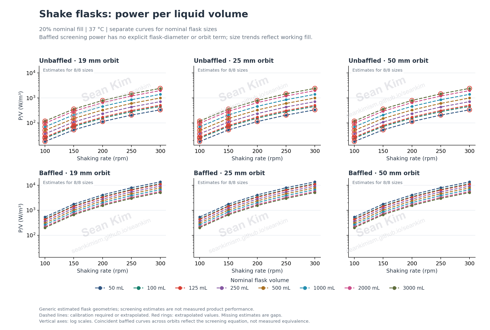
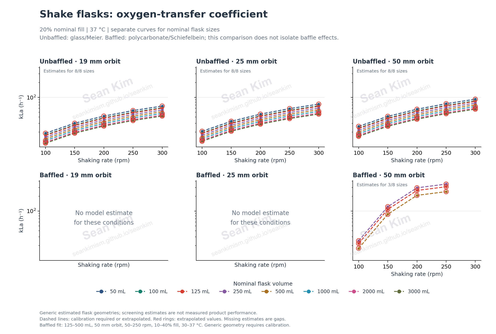
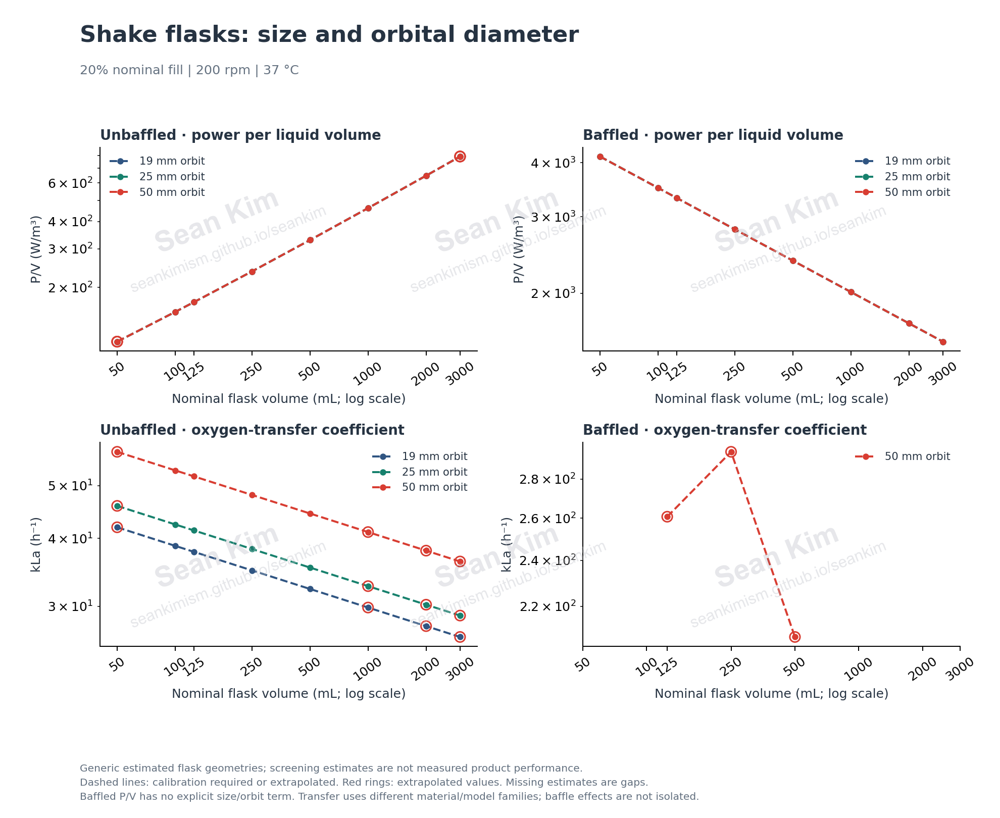

Saved screening results · 720 parameter combinations · 16 estimated geometries
Orbital shake-flask parameter study
Review how flask size, baffles, orbital diameter, shaking speed and liquid fill affect estimated bulk power input and oxygen transfer.
Study inputs
Nominal volumes: 50, 100, 125, 250, 500, 1000, 2000, 3000 mL. Orbital diameters: 19, 25, 50 mm. Fill fractions: 10%, 20%, 30%. Motion inputs: 100, 150, 200, 250, 300 rpm. Temperature: 37 °C; osmolality: 0.3 osmol/kg. Extrapolation requested: true; individual models may still decline unsupported conditions.
Orbital acceleration uses the orbit radius and shaking frequency; it is not centrifugation in a sample rotor. The table retains both rpm and orbital g.
Download all results and applicability notes (CSV)
Model coverage counts
- Power: extrapolated: 180; calibration_required: 540
- Oxygen transfer: extrapolated: 201; calibration_required: 519
Power input across shaking rates
Compare power per liquid volume across nominal sizes, baffles and orbital diameters. Baffled screening power has no explicit flask-diameter or orbit term: its size trend at fixed fill fraction comes from changing working volume, and overlapping orbital curves are an equation assumption. P/V does not resolve local shear.



Oxygen transfer across shaking rates
Compare kLa only where the selected model supplies an estimate. Unbaffled cases use glass/Meier, while baffled cases use polycarbonate/Schiefelbein: differences include both model and material, so they do not isolate the effect of baffling. Baffled estimates are limited to 125–500 mL, 50 mm orbit, 50–250 rpm, 10–40% fill and 30–37 °C. Empty panels and line gaps retain unsupported conditions.



Size and orbital diameter
Compare nominal flask sizes at one shared fill fraction and motion input. Correlation domains differ across models, so gaps are expected.



Explore saved cases
Filter the saved results by geometry or search any visible value, coverage label or model note. A dash means no model prediction, not zero.
720 cases shown
| Case | Nominal mL | Baffles | Material | Liquid mL | Fill % | Orbit mm | rpm | Orbital g | P/V W/m³ | Mean EDR W/kg | kLa h⁻¹ | OTRmax mmol/L/h | Power coverage | Transfer coverage | Flow regime | Power applicability flags | Transfer applicability flags | Model notes |
|---|---|---|---|---|---|---|---|---|---|---|---|---|---|---|---|---|---|---|
| case_0001 | 50 | Unbaffled | glass | 5 | 10 | 19 | 100 | 0.106 | 28.6 | 0.0288 | 31.5 | 6.72 | extrapolated | extrapolated | phase_criterion_inapplicable_low_froude | nominal_volume_ml, flow_regime | flask_diameter_mm | Model notesAssumed geometric similarity: inner diameter 77 mm at 250 mL, scaled with volume^(1/3); not vendor geometry; In-phase power correlation is not established for this flow diagnostic; no out-of-phase correction is applied.; Classic correlation: conventional unbaffled Erlenmeyer flasks, original nominal-size range 100-2000 mL.; Outside or unverified applicability: nominal_volume_ml, flow_regime; Headspace oxygen must be specified at the liquid surface; closure resistance is not included.; Oxygen solubility uses the water Henry law; actual medium solubility was not supplied.; Literature correlations assume waterlike viscosity; no viscosity, foam or surfactant correction is applied.; Meier predicts OTRmax; kLa is inferred using the supplied/default oxygen solubility.; Meier's reported absolute residual scatter is about 5 mmol/L/h; this can exceed CHO oxygen demand.; No verified temperature correction or numerical osmolality validity range is available for this fit.; Meier extrapolation: flask_diameter_mm |
| case_0002 | 50 | Unbaffled | glass | 10 | 20 | 19 | 100 | 0.106 | 18 | 0.0181 | 18.9 | 4.02 | extrapolated | extrapolated | phase_criterion_inapplicable_low_froude | nominal_volume_ml, flow_regime | flask_diameter_mm | Model notesAssumed geometric similarity: inner diameter 77 mm at 250 mL, scaled with volume^(1/3); not vendor geometry; In-phase power correlation is not established for this flow diagnostic; no out-of-phase correction is applied.; Classic correlation: conventional unbaffled Erlenmeyer flasks, original nominal-size range 100-2000 mL.; Outside or unverified applicability: nominal_volume_ml, flow_regime; Headspace oxygen must be specified at the liquid surface; closure resistance is not included.; Oxygen solubility uses the water Henry law; actual medium solubility was not supplied.; Literature correlations assume waterlike viscosity; no viscosity, foam or surfactant correction is applied.; Meier predicts OTRmax; kLa is inferred using the supplied/default oxygen solubility.; Meier's reported absolute residual scatter is about 5 mmol/L/h; this can exceed CHO oxygen demand.; No verified temperature correction or numerical osmolality validity range is available for this fit.; Meier extrapolation: flask_diameter_mm |
| case_0003 | 50 | Unbaffled | glass | 15 | 30 | 19 | 100 | 0.106 | 13.8 | 0.0138 | 14 | 2.98 | extrapolated | extrapolated | phase_criterion_inapplicable_low_froude | nominal_volume_ml, flow_regime | flask_diameter_mm | Model notesAssumed geometric similarity: inner diameter 77 mm at 250 mL, scaled with volume^(1/3); not vendor geometry; In-phase power correlation is not established for this flow diagnostic; no out-of-phase correction is applied.; Classic correlation: conventional unbaffled Erlenmeyer flasks, original nominal-size range 100-2000 mL.; Outside or unverified applicability: nominal_volume_ml, flow_regime; Headspace oxygen must be specified at the liquid surface; closure resistance is not included.; Oxygen solubility uses the water Henry law; actual medium solubility was not supplied.; Literature correlations assume waterlike viscosity; no viscosity, foam or surfactant correction is applied.; Meier predicts OTRmax; kLa is inferred using the supplied/default oxygen solubility.; Meier's reported absolute residual scatter is about 5 mmol/L/h; this can exceed CHO oxygen demand.; No verified temperature correction or numerical osmolality validity range is available for this fit.; Meier extrapolation: flask_diameter_mm |
| case_0004 | 50 | Unbaffled | glass | 5 | 10 | 19 | 150 | 0.239 | 83.6 | 0.0842 | 50.3 | 10.7 | extrapolated | extrapolated | phase_criterion_inapplicable_low_froude | nominal_volume_ml, flow_regime | flask_diameter_mm | Model notesAssumed geometric similarity: inner diameter 77 mm at 250 mL, scaled with volume^(1/3); not vendor geometry; In-phase power correlation is not established for this flow diagnostic; no out-of-phase correction is applied.; Classic correlation: conventional unbaffled Erlenmeyer flasks, original nominal-size range 100-2000 mL.; Outside or unverified applicability: nominal_volume_ml, flow_regime; Headspace oxygen must be specified at the liquid surface; closure resistance is not included.; Oxygen solubility uses the water Henry law; actual medium solubility was not supplied.; Literature correlations assume waterlike viscosity; no viscosity, foam or surfactant correction is applied.; Meier predicts OTRmax; kLa is inferred using the supplied/default oxygen solubility.; Meier's reported absolute residual scatter is about 5 mmol/L/h; this can exceed CHO oxygen demand.; No verified temperature correction or numerical osmolality validity range is available for this fit.; Meier extrapolation: flask_diameter_mm |
| case_0005 | 50 | Unbaffled | glass | 10 | 20 | 19 | 150 | 0.239 | 52.7 | 0.053 | 30.1 | 6.42 | extrapolated | extrapolated | phase_criterion_inapplicable_low_froude | nominal_volume_ml, flow_regime | flask_diameter_mm | Model notesAssumed geometric similarity: inner diameter 77 mm at 250 mL, scaled with volume^(1/3); not vendor geometry; In-phase power correlation is not established for this flow diagnostic; no out-of-phase correction is applied.; Classic correlation: conventional unbaffled Erlenmeyer flasks, original nominal-size range 100-2000 mL.; Outside or unverified applicability: nominal_volume_ml, flow_regime; Headspace oxygen must be specified at the liquid surface; closure resistance is not included.; Oxygen solubility uses the water Henry law; actual medium solubility was not supplied.; Literature correlations assume waterlike viscosity; no viscosity, foam or surfactant correction is applied.; Meier predicts OTRmax; kLa is inferred using the supplied/default oxygen solubility.; Meier's reported absolute residual scatter is about 5 mmol/L/h; this can exceed CHO oxygen demand.; No verified temperature correction or numerical osmolality validity range is available for this fit.; Meier extrapolation: flask_diameter_mm |
| case_0006 | 50 | Unbaffled | glass | 15 | 30 | 19 | 150 | 0.239 | 40.2 | 0.0405 | 22.3 | 4.75 | extrapolated | extrapolated | phase_criterion_inapplicable_low_froude | nominal_volume_ml, flow_regime | flask_diameter_mm | Model notesAssumed geometric similarity: inner diameter 77 mm at 250 mL, scaled with volume^(1/3); not vendor geometry; In-phase power correlation is not established for this flow diagnostic; no out-of-phase correction is applied.; Classic correlation: conventional unbaffled Erlenmeyer flasks, original nominal-size range 100-2000 mL.; Outside or unverified applicability: nominal_volume_ml, flow_regime; Headspace oxygen must be specified at the liquid surface; closure resistance is not included.; Oxygen solubility uses the water Henry law; actual medium solubility was not supplied.; Literature correlations assume waterlike viscosity; no viscosity, foam or surfactant correction is applied.; Meier predicts OTRmax; kLa is inferred using the supplied/default oxygen solubility.; Meier's reported absolute residual scatter is about 5 mmol/L/h; this can exceed CHO oxygen demand.; No verified temperature correction or numerical osmolality validity range is available for this fit.; Meier extrapolation: flask_diameter_mm |
| case_0007 | 50 | Unbaffled | glass | 5 | 10 | 19 | 200 | 0.425 | 180 | 0.181 | 70 | 14.9 | extrapolated | extrapolated | in_phase_predicted | nominal_volume_ml | flask_diameter_mm | Model notesAssumed geometric similarity: inner diameter 77 mm at 250 mL, scaled with volume^(1/3); not vendor geometry; Classic correlation: conventional unbaffled Erlenmeyer flasks, original nominal-size range 100-2000 mL.; Outside or unverified applicability: nominal_volume_ml; Headspace oxygen must be specified at the liquid surface; closure resistance is not included.; Oxygen solubility uses the water Henry law; actual medium solubility was not supplied.; Literature correlations assume waterlike viscosity; no viscosity, foam or surfactant correction is applied.; Meier predicts OTRmax; kLa is inferred using the supplied/default oxygen solubility.; Meier's reported absolute residual scatter is about 5 mmol/L/h; this can exceed CHO oxygen demand.; No verified temperature correction or numerical osmolality validity range is available for this fit.; Meier extrapolation: flask_diameter_mm |
| case_0008 | 50 | Unbaffled | glass | 10 | 20 | 19 | 200 | 0.425 | 113 | 0.114 | 41.9 | 8.93 | extrapolated | extrapolated | in_phase_predicted | nominal_volume_ml | flask_diameter_mm | Model notesAssumed geometric similarity: inner diameter 77 mm at 250 mL, scaled with volume^(1/3); not vendor geometry; Classic correlation: conventional unbaffled Erlenmeyer flasks, original nominal-size range 100-2000 mL.; Outside or unverified applicability: nominal_volume_ml; Headspace oxygen must be specified at the liquid surface; closure resistance is not included.; Oxygen solubility uses the water Henry law; actual medium solubility was not supplied.; Literature correlations assume waterlike viscosity; no viscosity, foam or surfactant correction is applied.; Meier predicts OTRmax; kLa is inferred using the supplied/default oxygen solubility.; Meier's reported absolute residual scatter is about 5 mmol/L/h; this can exceed CHO oxygen demand.; No verified temperature correction or numerical osmolality validity range is available for this fit.; Meier extrapolation: flask_diameter_mm |
| case_0009 | 50 | Unbaffled | glass | 15 | 30 | 19 | 200 | 0.425 | 86.4 | 0.087 | 31.1 | 6.62 | extrapolated | extrapolated | in_phase_predicted | nominal_volume_ml | flask_diameter_mm | Model notesAssumed geometric similarity: inner diameter 77 mm at 250 mL, scaled with volume^(1/3); not vendor geometry; Classic correlation: conventional unbaffled Erlenmeyer flasks, original nominal-size range 100-2000 mL.; Outside or unverified applicability: nominal_volume_ml; Headspace oxygen must be specified at the liquid surface; closure resistance is not included.; Oxygen solubility uses the water Henry law; actual medium solubility was not supplied.; Literature correlations assume waterlike viscosity; no viscosity, foam or surfactant correction is applied.; Meier predicts OTRmax; kLa is inferred using the supplied/default oxygen solubility.; Meier's reported absolute residual scatter is about 5 mmol/L/h; this can exceed CHO oxygen demand.; No verified temperature correction or numerical osmolality validity range is available for this fit.; Meier extrapolation: flask_diameter_mm |
| case_0010 | 50 | Unbaffled | glass | 5 | 10 | 19 | 250 | 0.664 | 326 | 0.328 | 90.5 | 19.3 | extrapolated | extrapolated | in_phase_predicted | nominal_volume_ml | flask_diameter_mm | Model notesAssumed geometric similarity: inner diameter 77 mm at 250 mL, scaled with volume^(1/3); not vendor geometry; Classic correlation: conventional unbaffled Erlenmeyer flasks, original nominal-size range 100-2000 mL.; Outside or unverified applicability: nominal_volume_ml; Headspace oxygen must be specified at the liquid surface; closure resistance is not included.; Oxygen solubility uses the water Henry law; actual medium solubility was not supplied.; Literature correlations assume waterlike viscosity; no viscosity, foam or surfactant correction is applied.; Meier predicts OTRmax; kLa is inferred using the supplied/default oxygen solubility.; Meier's reported absolute residual scatter is about 5 mmol/L/h; this can exceed CHO oxygen demand.; No verified temperature correction or numerical osmolality validity range is available for this fit.; Meier extrapolation: flask_diameter_mm |
| case_0011 | 50 | Unbaffled | glass | 10 | 20 | 19 | 250 | 0.664 | 206 | 0.207 | 54.2 | 11.5 | extrapolated | extrapolated | in_phase_predicted | nominal_volume_ml | flask_diameter_mm | Model notesAssumed geometric similarity: inner diameter 77 mm at 250 mL, scaled with volume^(1/3); not vendor geometry; Classic correlation: conventional unbaffled Erlenmeyer flasks, original nominal-size range 100-2000 mL.; Outside or unverified applicability: nominal_volume_ml; Headspace oxygen must be specified at the liquid surface; closure resistance is not included.; Oxygen solubility uses the water Henry law; actual medium solubility was not supplied.; Literature correlations assume waterlike viscosity; no viscosity, foam or surfactant correction is applied.; Meier predicts OTRmax; kLa is inferred using the supplied/default oxygen solubility.; Meier's reported absolute residual scatter is about 5 mmol/L/h; this can exceed CHO oxygen demand.; No verified temperature correction or numerical osmolality validity range is available for this fit.; Meier extrapolation: flask_diameter_mm |
| case_0012 | 50 | Unbaffled | glass | 15 | 30 | 19 | 250 | 0.664 | 157 | 0.158 | 40.1 | 8.55 | extrapolated | extrapolated | in_phase_predicted | nominal_volume_ml | flask_diameter_mm | Model notesAssumed geometric similarity: inner diameter 77 mm at 250 mL, scaled with volume^(1/3); not vendor geometry; Classic correlation: conventional unbaffled Erlenmeyer flasks, original nominal-size range 100-2000 mL.; Outside or unverified applicability: nominal_volume_ml; Headspace oxygen must be specified at the liquid surface; closure resistance is not included.; Oxygen solubility uses the water Henry law; actual medium solubility was not supplied.; Literature correlations assume waterlike viscosity; no viscosity, foam or surfactant correction is applied.; Meier predicts OTRmax; kLa is inferred using the supplied/default oxygen solubility.; Meier's reported absolute residual scatter is about 5 mmol/L/h; this can exceed CHO oxygen demand.; No verified temperature correction or numerical osmolality validity range is available for this fit.; Meier extrapolation: flask_diameter_mm |
| case_0013 | 50 | Unbaffled | glass | 5 | 10 | 19 | 300 | 0.956 | 532 | 0.535 | 112 | 23.8 | extrapolated | extrapolated | in_phase_predicted | nominal_volume_ml | flask_diameter_mm | Model notesAssumed geometric similarity: inner diameter 77 mm at 250 mL, scaled with volume^(1/3); not vendor geometry; Classic correlation: conventional unbaffled Erlenmeyer flasks, original nominal-size range 100-2000 mL.; Outside or unverified applicability: nominal_volume_ml; Headspace oxygen must be specified at the liquid surface; closure resistance is not included.; Oxygen solubility uses the water Henry law; actual medium solubility was not supplied.; Literature correlations assume waterlike viscosity; no viscosity, foam or surfactant correction is applied.; Meier predicts OTRmax; kLa is inferred using the supplied/default oxygen solubility.; Meier's reported absolute residual scatter is about 5 mmol/L/h; this can exceed CHO oxygen demand.; No verified temperature correction or numerical osmolality validity range is available for this fit.; Meier extrapolation: flask_diameter_mm |
| case_0014 | 50 | Unbaffled | glass | 10 | 20 | 19 | 300 | 0.956 | 335 | 0.337 | 66.8 | 14.2 | extrapolated | extrapolated | in_phase_predicted | nominal_volume_ml | flask_diameter_mm | Model notesAssumed geometric similarity: inner diameter 77 mm at 250 mL, scaled with volume^(1/3); not vendor geometry; Classic correlation: conventional unbaffled Erlenmeyer flasks, original nominal-size range 100-2000 mL.; Outside or unverified applicability: nominal_volume_ml; Headspace oxygen must be specified at the liquid surface; closure resistance is not included.; Oxygen solubility uses the water Henry law; actual medium solubility was not supplied.; Literature correlations assume waterlike viscosity; no viscosity, foam or surfactant correction is applied.; Meier predicts OTRmax; kLa is inferred using the supplied/default oxygen solubility.; Meier's reported absolute residual scatter is about 5 mmol/L/h; this can exceed CHO oxygen demand.; No verified temperature correction or numerical osmolality validity range is available for this fit.; Meier extrapolation: flask_diameter_mm |
| case_0015 | 50 | Unbaffled | glass | 15 | 30 | 19 | 300 | 0.956 | 256 | 0.257 | 49.5 | 10.5 | extrapolated | extrapolated | in_phase_predicted | nominal_volume_ml | flask_diameter_mm | Model notesAssumed geometric similarity: inner diameter 77 mm at 250 mL, scaled with volume^(1/3); not vendor geometry; Classic correlation: conventional unbaffled Erlenmeyer flasks, original nominal-size range 100-2000 mL.; Outside or unverified applicability: nominal_volume_ml; Headspace oxygen must be specified at the liquid surface; closure resistance is not included.; Oxygen solubility uses the water Henry law; actual medium solubility was not supplied.; Literature correlations assume waterlike viscosity; no viscosity, foam or surfactant correction is applied.; Meier predicts OTRmax; kLa is inferred using the supplied/default oxygen solubility.; Meier's reported absolute residual scatter is about 5 mmol/L/h; this can exceed CHO oxygen demand.; No verified temperature correction or numerical osmolality validity range is available for this fit.; Meier extrapolation: flask_diameter_mm |
| case_0016 | 50 | Unbaffled | glass | 5 | 10 | 25 | 100 | 0.14 | 28.6 | 0.0288 | 34.5 | 7.36 | extrapolated | extrapolated | phase_criterion_inapplicable_low_froude | nominal_volume_ml, flow_regime | flask_diameter_mm | Model notesAssumed geometric similarity: inner diameter 77 mm at 250 mL, scaled with volume^(1/3); not vendor geometry; In-phase power correlation is not established for this flow diagnostic; no out-of-phase correction is applied.; Classic correlation: conventional unbaffled Erlenmeyer flasks, original nominal-size range 100-2000 mL.; Outside or unverified applicability: nominal_volume_ml, flow_regime; Headspace oxygen must be specified at the liquid surface; closure resistance is not included.; Oxygen solubility uses the water Henry law; actual medium solubility was not supplied.; Literature correlations assume waterlike viscosity; no viscosity, foam or surfactant correction is applied.; Meier predicts OTRmax; kLa is inferred using the supplied/default oxygen solubility.; Meier's reported absolute residual scatter is about 5 mmol/L/h; this can exceed CHO oxygen demand.; No verified temperature correction or numerical osmolality validity range is available for this fit.; Meier extrapolation: flask_diameter_mm |
| case_0017 | 50 | Unbaffled | glass | 10 | 20 | 25 | 100 | 0.14 | 18 | 0.0181 | 20.7 | 4.41 | extrapolated | extrapolated | phase_criterion_inapplicable_low_froude | nominal_volume_ml, flow_regime | flask_diameter_mm | Model notesAssumed geometric similarity: inner diameter 77 mm at 250 mL, scaled with volume^(1/3); not vendor geometry; In-phase power correlation is not established for this flow diagnostic; no out-of-phase correction is applied.; Classic correlation: conventional unbaffled Erlenmeyer flasks, original nominal-size range 100-2000 mL.; Outside or unverified applicability: nominal_volume_ml, flow_regime; Headspace oxygen must be specified at the liquid surface; closure resistance is not included.; Oxygen solubility uses the water Henry law; actual medium solubility was not supplied.; Literature correlations assume waterlike viscosity; no viscosity, foam or surfactant correction is applied.; Meier predicts OTRmax; kLa is inferred using the supplied/default oxygen solubility.; Meier's reported absolute residual scatter is about 5 mmol/L/h; this can exceed CHO oxygen demand.; No verified temperature correction or numerical osmolality validity range is available for this fit.; Meier extrapolation: flask_diameter_mm |
| case_0018 | 50 | Unbaffled | glass | 15 | 30 | 25 | 100 | 0.14 | 13.8 | 0.0138 | 15.3 | 3.26 | extrapolated | extrapolated | phase_criterion_inapplicable_low_froude | nominal_volume_ml, flow_regime | flask_diameter_mm | Model notesAssumed geometric similarity: inner diameter 77 mm at 250 mL, scaled with volume^(1/3); not vendor geometry; In-phase power correlation is not established for this flow diagnostic; no out-of-phase correction is applied.; Classic correlation: conventional unbaffled Erlenmeyer flasks, original nominal-size range 100-2000 mL.; Outside or unverified applicability: nominal_volume_ml, flow_regime; Headspace oxygen must be specified at the liquid surface; closure resistance is not included.; Oxygen solubility uses the water Henry law; actual medium solubility was not supplied.; Literature correlations assume waterlike viscosity; no viscosity, foam or surfactant correction is applied.; Meier predicts OTRmax; kLa is inferred using the supplied/default oxygen solubility.; Meier's reported absolute residual scatter is about 5 mmol/L/h; this can exceed CHO oxygen demand.; No verified temperature correction or numerical osmolality validity range is available for this fit.; Meier extrapolation: flask_diameter_mm |
| case_0019 | 50 | Unbaffled | glass | 5 | 10 | 25 | 150 | 0.315 | 83.6 | 0.0842 | 55.1 | 11.7 | extrapolated | extrapolated | phase_criterion_inapplicable_low_froude | nominal_volume_ml, flow_regime | flask_diameter_mm | Model notesAssumed geometric similarity: inner diameter 77 mm at 250 mL, scaled with volume^(1/3); not vendor geometry; In-phase power correlation is not established for this flow diagnostic; no out-of-phase correction is applied.; Classic correlation: conventional unbaffled Erlenmeyer flasks, original nominal-size range 100-2000 mL.; Outside or unverified applicability: nominal_volume_ml, flow_regime; Headspace oxygen must be specified at the liquid surface; closure resistance is not included.; Oxygen solubility uses the water Henry law; actual medium solubility was not supplied.; Literature correlations assume waterlike viscosity; no viscosity, foam or surfactant correction is applied.; Meier predicts OTRmax; kLa is inferred using the supplied/default oxygen solubility.; Meier's reported absolute residual scatter is about 5 mmol/L/h; this can exceed CHO oxygen demand.; No verified temperature correction or numerical osmolality validity range is available for this fit.; Meier extrapolation: flask_diameter_mm |
| case_0020 | 50 | Unbaffled | glass | 10 | 20 | 25 | 150 | 0.315 | 52.7 | 0.053 | 33 | 7.02 | extrapolated | extrapolated | phase_criterion_inapplicable_low_froude | nominal_volume_ml, flow_regime | flask_diameter_mm | Model notesAssumed geometric similarity: inner diameter 77 mm at 250 mL, scaled with volume^(1/3); not vendor geometry; In-phase power correlation is not established for this flow diagnostic; no out-of-phase correction is applied.; Classic correlation: conventional unbaffled Erlenmeyer flasks, original nominal-size range 100-2000 mL.; Outside or unverified applicability: nominal_volume_ml, flow_regime; Headspace oxygen must be specified at the liquid surface; closure resistance is not included.; Oxygen solubility uses the water Henry law; actual medium solubility was not supplied.; Literature correlations assume waterlike viscosity; no viscosity, foam or surfactant correction is applied.; Meier predicts OTRmax; kLa is inferred using the supplied/default oxygen solubility.; Meier's reported absolute residual scatter is about 5 mmol/L/h; this can exceed CHO oxygen demand.; No verified temperature correction or numerical osmolality validity range is available for this fit.; Meier extrapolation: flask_diameter_mm |
| case_0021 | 50 | Unbaffled | glass | 15 | 30 | 25 | 150 | 0.315 | 40.2 | 0.0405 | 24.4 | 5.2 | extrapolated | extrapolated | phase_criterion_inapplicable_low_froude | nominal_volume_ml, flow_regime | flask_diameter_mm | Model notesAssumed geometric similarity: inner diameter 77 mm at 250 mL, scaled with volume^(1/3); not vendor geometry; In-phase power correlation is not established for this flow diagnostic; no out-of-phase correction is applied.; Classic correlation: conventional unbaffled Erlenmeyer flasks, original nominal-size range 100-2000 mL.; Outside or unverified applicability: nominal_volume_ml, flow_regime; Headspace oxygen must be specified at the liquid surface; closure resistance is not included.; Oxygen solubility uses the water Henry law; actual medium solubility was not supplied.; Literature correlations assume waterlike viscosity; no viscosity, foam or surfactant correction is applied.; Meier predicts OTRmax; kLa is inferred using the supplied/default oxygen solubility.; Meier's reported absolute residual scatter is about 5 mmol/L/h; this can exceed CHO oxygen demand.; No verified temperature correction or numerical osmolality validity range is available for this fit.; Meier extrapolation: flask_diameter_mm |
| case_0022 | 50 | Unbaffled | glass | 5 | 10 | 25 | 200 | 0.559 | 180 | 0.181 | 76.7 | 16.3 | extrapolated | extrapolated | in_phase_predicted | nominal_volume_ml | flask_diameter_mm | Model notesAssumed geometric similarity: inner diameter 77 mm at 250 mL, scaled with volume^(1/3); not vendor geometry; Classic correlation: conventional unbaffled Erlenmeyer flasks, original nominal-size range 100-2000 mL.; Outside or unverified applicability: nominal_volume_ml; Headspace oxygen must be specified at the liquid surface; closure resistance is not included.; Oxygen solubility uses the water Henry law; actual medium solubility was not supplied.; Literature correlations assume waterlike viscosity; no viscosity, foam or surfactant correction is applied.; Meier predicts OTRmax; kLa is inferred using the supplied/default oxygen solubility.; Meier's reported absolute residual scatter is about 5 mmol/L/h; this can exceed CHO oxygen demand.; No verified temperature correction or numerical osmolality validity range is available for this fit.; Meier extrapolation: flask_diameter_mm |
| case_0023 | 50 | Unbaffled | glass | 10 | 20 | 25 | 200 | 0.559 | 113 | 0.114 | 45.9 | 9.78 | extrapolated | extrapolated | in_phase_predicted | nominal_volume_ml | flask_diameter_mm | Model notesAssumed geometric similarity: inner diameter 77 mm at 250 mL, scaled with volume^(1/3); not vendor geometry; Classic correlation: conventional unbaffled Erlenmeyer flasks, original nominal-size range 100-2000 mL.; Outside or unverified applicability: nominal_volume_ml; Headspace oxygen must be specified at the liquid surface; closure resistance is not included.; Oxygen solubility uses the water Henry law; actual medium solubility was not supplied.; Literature correlations assume waterlike viscosity; no viscosity, foam or surfactant correction is applied.; Meier predicts OTRmax; kLa is inferred using the supplied/default oxygen solubility.; Meier's reported absolute residual scatter is about 5 mmol/L/h; this can exceed CHO oxygen demand.; No verified temperature correction or numerical osmolality validity range is available for this fit.; Meier extrapolation: flask_diameter_mm |
| case_0024 | 50 | Unbaffled | glass | 15 | 30 | 25 | 200 | 0.559 | 86.4 | 0.087 | 34 | 7.24 | extrapolated | extrapolated | in_phase_predicted | nominal_volume_ml | flask_diameter_mm | Model notesAssumed geometric similarity: inner diameter 77 mm at 250 mL, scaled with volume^(1/3); not vendor geometry; Classic correlation: conventional unbaffled Erlenmeyer flasks, original nominal-size range 100-2000 mL.; Outside or unverified applicability: nominal_volume_ml; Headspace oxygen must be specified at the liquid surface; closure resistance is not included.; Oxygen solubility uses the water Henry law; actual medium solubility was not supplied.; Literature correlations assume waterlike viscosity; no viscosity, foam or surfactant correction is applied.; Meier predicts OTRmax; kLa is inferred using the supplied/default oxygen solubility.; Meier's reported absolute residual scatter is about 5 mmol/L/h; this can exceed CHO oxygen demand.; No verified temperature correction or numerical osmolality validity range is available for this fit.; Meier extrapolation: flask_diameter_mm |
| case_0025 | 50 | Unbaffled | glass | 5 | 10 | 25 | 250 | 0.874 | 326 | 0.328 | 99.1 | 21.1 | extrapolated | extrapolated | in_phase_predicted | nominal_volume_ml | flask_diameter_mm | Model notesAssumed geometric similarity: inner diameter 77 mm at 250 mL, scaled with volume^(1/3); not vendor geometry; Classic correlation: conventional unbaffled Erlenmeyer flasks, original nominal-size range 100-2000 mL.; Outside or unverified applicability: nominal_volume_ml; Headspace oxygen must be specified at the liquid surface; closure resistance is not included.; Oxygen solubility uses the water Henry law; actual medium solubility was not supplied.; Literature correlations assume waterlike viscosity; no viscosity, foam or surfactant correction is applied.; Meier predicts OTRmax; kLa is inferred using the supplied/default oxygen solubility.; Meier's reported absolute residual scatter is about 5 mmol/L/h; this can exceed CHO oxygen demand.; No verified temperature correction or numerical osmolality validity range is available for this fit.; Meier extrapolation: flask_diameter_mm |
| case_0026 | 50 | Unbaffled | glass | 10 | 20 | 25 | 250 | 0.874 | 206 | 0.207 | 59.3 | 12.6 | extrapolated | extrapolated | in_phase_predicted | nominal_volume_ml | flask_diameter_mm | Model notesAssumed geometric similarity: inner diameter 77 mm at 250 mL, scaled with volume^(1/3); not vendor geometry; Classic correlation: conventional unbaffled Erlenmeyer flasks, original nominal-size range 100-2000 mL.; Outside or unverified applicability: nominal_volume_ml; Headspace oxygen must be specified at the liquid surface; closure resistance is not included.; Oxygen solubility uses the water Henry law; actual medium solubility was not supplied.; Literature correlations assume waterlike viscosity; no viscosity, foam or surfactant correction is applied.; Meier predicts OTRmax; kLa is inferred using the supplied/default oxygen solubility.; Meier's reported absolute residual scatter is about 5 mmol/L/h; this can exceed CHO oxygen demand.; No verified temperature correction or numerical osmolality validity range is available for this fit.; Meier extrapolation: flask_diameter_mm |
| case_0027 | 50 | Unbaffled | glass | 15 | 30 | 25 | 250 | 0.874 | 157 | 0.158 | 43.9 | 9.36 | extrapolated | extrapolated | in_phase_predicted | nominal_volume_ml | flask_diameter_mm | Model notesAssumed geometric similarity: inner diameter 77 mm at 250 mL, scaled with volume^(1/3); not vendor geometry; Classic correlation: conventional unbaffled Erlenmeyer flasks, original nominal-size range 100-2000 mL.; Outside or unverified applicability: nominal_volume_ml; Headspace oxygen must be specified at the liquid surface; closure resistance is not included.; Oxygen solubility uses the water Henry law; actual medium solubility was not supplied.; Literature correlations assume waterlike viscosity; no viscosity, foam or surfactant correction is applied.; Meier predicts OTRmax; kLa is inferred using the supplied/default oxygen solubility.; Meier's reported absolute residual scatter is about 5 mmol/L/h; this can exceed CHO oxygen demand.; No verified temperature correction or numerical osmolality validity range is available for this fit.; Meier extrapolation: flask_diameter_mm |
| case_0028 | 50 | Unbaffled | glass | 5 | 10 | 25 | 300 | 1.26 | 532 | 0.535 | 122 | 26 | extrapolated | extrapolated | in_phase_predicted | nominal_volume_ml | flask_diameter_mm | Model notesAssumed geometric similarity: inner diameter 77 mm at 250 mL, scaled with volume^(1/3); not vendor geometry; Classic correlation: conventional unbaffled Erlenmeyer flasks, original nominal-size range 100-2000 mL.; Outside or unverified applicability: nominal_volume_ml; Headspace oxygen must be specified at the liquid surface; closure resistance is not included.; Oxygen solubility uses the water Henry law; actual medium solubility was not supplied.; Literature correlations assume waterlike viscosity; no viscosity, foam or surfactant correction is applied.; Meier predicts OTRmax; kLa is inferred using the supplied/default oxygen solubility.; Meier's reported absolute residual scatter is about 5 mmol/L/h; this can exceed CHO oxygen demand.; No verified temperature correction or numerical osmolality validity range is available for this fit.; Meier extrapolation: flask_diameter_mm |
| case_0029 | 50 | Unbaffled | glass | 10 | 20 | 25 | 300 | 1.26 | 335 | 0.337 | 73.2 | 15.6 | extrapolated | extrapolated | in_phase_predicted | nominal_volume_ml | flask_diameter_mm | Model notesAssumed geometric similarity: inner diameter 77 mm at 250 mL, scaled with volume^(1/3); not vendor geometry; Classic correlation: conventional unbaffled Erlenmeyer flasks, original nominal-size range 100-2000 mL.; Outside or unverified applicability: nominal_volume_ml; Headspace oxygen must be specified at the liquid surface; closure resistance is not included.; Oxygen solubility uses the water Henry law; actual medium solubility was not supplied.; Literature correlations assume waterlike viscosity; no viscosity, foam or surfactant correction is applied.; Meier predicts OTRmax; kLa is inferred using the supplied/default oxygen solubility.; Meier's reported absolute residual scatter is about 5 mmol/L/h; this can exceed CHO oxygen demand.; No verified temperature correction or numerical osmolality validity range is available for this fit.; Meier extrapolation: flask_diameter_mm |
| case_0030 | 50 | Unbaffled | glass | 15 | 30 | 25 | 300 | 1.26 | 256 | 0.257 | 54.2 | 11.5 | extrapolated | extrapolated | in_phase_predicted | nominal_volume_ml | flask_diameter_mm | Model notesAssumed geometric similarity: inner diameter 77 mm at 250 mL, scaled with volume^(1/3); not vendor geometry; Classic correlation: conventional unbaffled Erlenmeyer flasks, original nominal-size range 100-2000 mL.; Outside or unverified applicability: nominal_volume_ml; Headspace oxygen must be specified at the liquid surface; closure resistance is not included.; Oxygen solubility uses the water Henry law; actual medium solubility was not supplied.; Literature correlations assume waterlike viscosity; no viscosity, foam or surfactant correction is applied.; Meier predicts OTRmax; kLa is inferred using the supplied/default oxygen solubility.; Meier's reported absolute residual scatter is about 5 mmol/L/h; this can exceed CHO oxygen demand.; No verified temperature correction or numerical osmolality validity range is available for this fit.; Meier extrapolation: flask_diameter_mm |
| case_0031 | 50 | Unbaffled | glass | 5 | 10 | 50 | 100 | 0.28 | 28.6 | 0.0288 | 43.4 | 9.25 | extrapolated | extrapolated | phase_criterion_inapplicable_low_froude | nominal_volume_ml, flow_regime | flask_diameter_mm | Model notesAssumed geometric similarity: inner diameter 77 mm at 250 mL, scaled with volume^(1/3); not vendor geometry; In-phase power correlation is not established for this flow diagnostic; no out-of-phase correction is applied.; Classic correlation: conventional unbaffled Erlenmeyer flasks, original nominal-size range 100-2000 mL.; Outside or unverified applicability: nominal_volume_ml, flow_regime; Headspace oxygen must be specified at the liquid surface; closure resistance is not included.; Oxygen solubility uses the water Henry law; actual medium solubility was not supplied.; Literature correlations assume waterlike viscosity; no viscosity, foam or surfactant correction is applied.; Meier predicts OTRmax; kLa is inferred using the supplied/default oxygen solubility.; Meier's reported absolute residual scatter is about 5 mmol/L/h; this can exceed CHO oxygen demand.; No verified temperature correction or numerical osmolality validity range is available for this fit.; Meier extrapolation: flask_diameter_mm |
| case_0032 | 50 | Unbaffled | glass | 10 | 20 | 50 | 100 | 0.28 | 18 | 0.0181 | 26 | 5.54 | extrapolated | extrapolated | phase_criterion_inapplicable_low_froude | nominal_volume_ml, flow_regime | flask_diameter_mm | Model notesAssumed geometric similarity: inner diameter 77 mm at 250 mL, scaled with volume^(1/3); not vendor geometry; In-phase power correlation is not established for this flow diagnostic; no out-of-phase correction is applied.; Classic correlation: conventional unbaffled Erlenmeyer flasks, original nominal-size range 100-2000 mL.; Outside or unverified applicability: nominal_volume_ml, flow_regime; Headspace oxygen must be specified at the liquid surface; closure resistance is not included.; Oxygen solubility uses the water Henry law; actual medium solubility was not supplied.; Literature correlations assume waterlike viscosity; no viscosity, foam or surfactant correction is applied.; Meier predicts OTRmax; kLa is inferred using the supplied/default oxygen solubility.; Meier's reported absolute residual scatter is about 5 mmol/L/h; this can exceed CHO oxygen demand.; No verified temperature correction or numerical osmolality validity range is available for this fit.; Meier extrapolation: flask_diameter_mm |
| case_0033 | 50 | Unbaffled | glass | 15 | 30 | 50 | 100 | 0.28 | 13.8 | 0.0138 | 19.3 | 4.1 | extrapolated | extrapolated | phase_criterion_inapplicable_low_froude | nominal_volume_ml, flow_regime | flask_diameter_mm | Model notesAssumed geometric similarity: inner diameter 77 mm at 250 mL, scaled with volume^(1/3); not vendor geometry; In-phase power correlation is not established for this flow diagnostic; no out-of-phase correction is applied.; Classic correlation: conventional unbaffled Erlenmeyer flasks, original nominal-size range 100-2000 mL.; Outside or unverified applicability: nominal_volume_ml, flow_regime; Headspace oxygen must be specified at the liquid surface; closure resistance is not included.; Oxygen solubility uses the water Henry law; actual medium solubility was not supplied.; Literature correlations assume waterlike viscosity; no viscosity, foam or surfactant correction is applied.; Meier predicts OTRmax; kLa is inferred using the supplied/default oxygen solubility.; Meier's reported absolute residual scatter is about 5 mmol/L/h; this can exceed CHO oxygen demand.; No verified temperature correction or numerical osmolality validity range is available for this fit.; Meier extrapolation: flask_diameter_mm |
| case_0034 | 50 | Unbaffled | glass | 5 | 10 | 50 | 150 | 0.629 | 83.6 | 0.0842 | 69.2 | 14.7 | extrapolated | extrapolated | in_phase_predicted | nominal_volume_ml | flask_diameter_mm | Model notesAssumed geometric similarity: inner diameter 77 mm at 250 mL, scaled with volume^(1/3); not vendor geometry; Classic correlation: conventional unbaffled Erlenmeyer flasks, original nominal-size range 100-2000 mL.; Outside or unverified applicability: nominal_volume_ml; Headspace oxygen must be specified at the liquid surface; closure resistance is not included.; Oxygen solubility uses the water Henry law; actual medium solubility was not supplied.; Literature correlations assume waterlike viscosity; no viscosity, foam or surfactant correction is applied.; Meier predicts OTRmax; kLa is inferred using the supplied/default oxygen solubility.; Meier's reported absolute residual scatter is about 5 mmol/L/h; this can exceed CHO oxygen demand.; No verified temperature correction or numerical osmolality validity range is available for this fit.; Meier extrapolation: flask_diameter_mm |
| case_0035 | 50 | Unbaffled | glass | 10 | 20 | 50 | 150 | 0.629 | 52.7 | 0.053 | 41.4 | 8.83 | extrapolated | extrapolated | in_phase_predicted | nominal_volume_ml | flask_diameter_mm | Model notesAssumed geometric similarity: inner diameter 77 mm at 250 mL, scaled with volume^(1/3); not vendor geometry; Classic correlation: conventional unbaffled Erlenmeyer flasks, original nominal-size range 100-2000 mL.; Outside or unverified applicability: nominal_volume_ml; Headspace oxygen must be specified at the liquid surface; closure resistance is not included.; Oxygen solubility uses the water Henry law; actual medium solubility was not supplied.; Literature correlations assume waterlike viscosity; no viscosity, foam or surfactant correction is applied.; Meier predicts OTRmax; kLa is inferred using the supplied/default oxygen solubility.; Meier's reported absolute residual scatter is about 5 mmol/L/h; this can exceed CHO oxygen demand.; No verified temperature correction or numerical osmolality validity range is available for this fit.; Meier extrapolation: flask_diameter_mm |
| case_0036 | 50 | Unbaffled | glass | 15 | 30 | 50 | 150 | 0.629 | 40.2 | 0.0405 | 30.7 | 6.54 | extrapolated | extrapolated | in_phase_predicted | nominal_volume_ml | flask_diameter_mm | Model notesAssumed geometric similarity: inner diameter 77 mm at 250 mL, scaled with volume^(1/3); not vendor geometry; Classic correlation: conventional unbaffled Erlenmeyer flasks, original nominal-size range 100-2000 mL.; Outside or unverified applicability: nominal_volume_ml; Headspace oxygen must be specified at the liquid surface; closure resistance is not included.; Oxygen solubility uses the water Henry law; actual medium solubility was not supplied.; Literature correlations assume waterlike viscosity; no viscosity, foam or surfactant correction is applied.; Meier predicts OTRmax; kLa is inferred using the supplied/default oxygen solubility.; Meier's reported absolute residual scatter is about 5 mmol/L/h; this can exceed CHO oxygen demand.; No verified temperature correction or numerical osmolality validity range is available for this fit.; Meier extrapolation: flask_diameter_mm |
| case_0037 | 50 | Unbaffled | glass | 5 | 10 | 50 | 200 | 1.12 | 180 | 0.181 | 96.4 | 20.5 | extrapolated | extrapolated | in_phase_predicted | nominal_volume_ml | flask_diameter_mm | Model notesAssumed geometric similarity: inner diameter 77 mm at 250 mL, scaled with volume^(1/3); not vendor geometry; Classic correlation: conventional unbaffled Erlenmeyer flasks, original nominal-size range 100-2000 mL.; Outside or unverified applicability: nominal_volume_ml; Headspace oxygen must be specified at the liquid surface; closure resistance is not included.; Oxygen solubility uses the water Henry law; actual medium solubility was not supplied.; Literature correlations assume waterlike viscosity; no viscosity, foam or surfactant correction is applied.; Meier predicts OTRmax; kLa is inferred using the supplied/default oxygen solubility.; Meier's reported absolute residual scatter is about 5 mmol/L/h; this can exceed CHO oxygen demand.; No verified temperature correction or numerical osmolality validity range is available for this fit.; Meier extrapolation: flask_diameter_mm |
| case_0038 | 50 | Unbaffled | glass | 10 | 20 | 50 | 200 | 1.12 | 113 | 0.114 | 57.7 | 12.3 | extrapolated | extrapolated | in_phase_predicted | nominal_volume_ml | flask_diameter_mm | Model notesAssumed geometric similarity: inner diameter 77 mm at 250 mL, scaled with volume^(1/3); not vendor geometry; Classic correlation: conventional unbaffled Erlenmeyer flasks, original nominal-size range 100-2000 mL.; Outside or unverified applicability: nominal_volume_ml; Headspace oxygen must be specified at the liquid surface; closure resistance is not included.; Oxygen solubility uses the water Henry law; actual medium solubility was not supplied.; Literature correlations assume waterlike viscosity; no viscosity, foam or surfactant correction is applied.; Meier predicts OTRmax; kLa is inferred using the supplied/default oxygen solubility.; Meier's reported absolute residual scatter is about 5 mmol/L/h; this can exceed CHO oxygen demand.; No verified temperature correction or numerical osmolality validity range is available for this fit.; Meier extrapolation: flask_diameter_mm |
| case_0039 | 50 | Unbaffled | glass | 15 | 30 | 50 | 200 | 1.12 | 86.4 | 0.087 | 42.7 | 9.11 | extrapolated | extrapolated | in_phase_predicted | nominal_volume_ml | flask_diameter_mm | Model notesAssumed geometric similarity: inner diameter 77 mm at 250 mL, scaled with volume^(1/3); not vendor geometry; Classic correlation: conventional unbaffled Erlenmeyer flasks, original nominal-size range 100-2000 mL.; Outside or unverified applicability: nominal_volume_ml; Headspace oxygen must be specified at the liquid surface; closure resistance is not included.; Oxygen solubility uses the water Henry law; actual medium solubility was not supplied.; Literature correlations assume waterlike viscosity; no viscosity, foam or surfactant correction is applied.; Meier predicts OTRmax; kLa is inferred using the supplied/default oxygen solubility.; Meier's reported absolute residual scatter is about 5 mmol/L/h; this can exceed CHO oxygen demand.; No verified temperature correction or numerical osmolality validity range is available for this fit.; Meier extrapolation: flask_diameter_mm |
| case_0040 | 50 | Unbaffled | glass | 5 | 10 | 50 | 250 | 1.75 | 326 | 0.328 | 125 | 26.5 | extrapolated | extrapolated | in_phase_predicted | nominal_volume_ml | flask_diameter_mm | Model notesAssumed geometric similarity: inner diameter 77 mm at 250 mL, scaled with volume^(1/3); not vendor geometry; Classic correlation: conventional unbaffled Erlenmeyer flasks, original nominal-size range 100-2000 mL.; Outside or unverified applicability: nominal_volume_ml; Headspace oxygen must be specified at the liquid surface; closure resistance is not included.; Oxygen solubility uses the water Henry law; actual medium solubility was not supplied.; Literature correlations assume waterlike viscosity; no viscosity, foam or surfactant correction is applied.; Meier predicts OTRmax; kLa is inferred using the supplied/default oxygen solubility.; Meier's reported absolute residual scatter is about 5 mmol/L/h; this can exceed CHO oxygen demand.; No verified temperature correction or numerical osmolality validity range is available for this fit.; Meier extrapolation: flask_diameter_mm |
| case_0041 | 50 | Unbaffled | glass | 10 | 20 | 50 | 250 | 1.75 | 206 | 0.207 | 74.6 | 15.9 | extrapolated | extrapolated | in_phase_predicted | nominal_volume_ml | flask_diameter_mm | Model notesAssumed geometric similarity: inner diameter 77 mm at 250 mL, scaled with volume^(1/3); not vendor geometry; Classic correlation: conventional unbaffled Erlenmeyer flasks, original nominal-size range 100-2000 mL.; Outside or unverified applicability: nominal_volume_ml; Headspace oxygen must be specified at the liquid surface; closure resistance is not included.; Oxygen solubility uses the water Henry law; actual medium solubility was not supplied.; Literature correlations assume waterlike viscosity; no viscosity, foam or surfactant correction is applied.; Meier predicts OTRmax; kLa is inferred using the supplied/default oxygen solubility.; Meier's reported absolute residual scatter is about 5 mmol/L/h; this can exceed CHO oxygen demand.; No verified temperature correction or numerical osmolality validity range is available for this fit.; Meier extrapolation: flask_diameter_mm |
| case_0042 | 50 | Unbaffled | glass | 15 | 30 | 50 | 250 | 1.75 | 157 | 0.158 | 55.2 | 11.8 | extrapolated | extrapolated | in_phase_predicted | nominal_volume_ml | flask_diameter_mm | Model notesAssumed geometric similarity: inner diameter 77 mm at 250 mL, scaled with volume^(1/3); not vendor geometry; Classic correlation: conventional unbaffled Erlenmeyer flasks, original nominal-size range 100-2000 mL.; Outside or unverified applicability: nominal_volume_ml; Headspace oxygen must be specified at the liquid surface; closure resistance is not included.; Oxygen solubility uses the water Henry law; actual medium solubility was not supplied.; Literature correlations assume waterlike viscosity; no viscosity, foam or surfactant correction is applied.; Meier predicts OTRmax; kLa is inferred using the supplied/default oxygen solubility.; Meier's reported absolute residual scatter is about 5 mmol/L/h; this can exceed CHO oxygen demand.; No verified temperature correction or numerical osmolality validity range is available for this fit.; Meier extrapolation: flask_diameter_mm |
| case_0043 | 50 | Unbaffled | glass | 5 | 10 | 50 | 300 | 2.52 | 532 | 0.535 | 154 | 32.7 | extrapolated | extrapolated | in_phase_predicted | nominal_volume_ml | flask_diameter_mm | Model notesAssumed geometric similarity: inner diameter 77 mm at 250 mL, scaled with volume^(1/3); not vendor geometry; Classic correlation: conventional unbaffled Erlenmeyer flasks, original nominal-size range 100-2000 mL.; Outside or unverified applicability: nominal_volume_ml; Headspace oxygen must be specified at the liquid surface; closure resistance is not included.; Oxygen solubility uses the water Henry law; actual medium solubility was not supplied.; Literature correlations assume waterlike viscosity; no viscosity, foam or surfactant correction is applied.; Meier predicts OTRmax; kLa is inferred using the supplied/default oxygen solubility.; Meier's reported absolute residual scatter is about 5 mmol/L/h; this can exceed CHO oxygen demand.; No verified temperature correction or numerical osmolality validity range is available for this fit.; Meier extrapolation: flask_diameter_mm |
| case_0044 | 50 | Unbaffled | glass | 10 | 20 | 50 | 300 | 2.52 | 335 | 0.337 | 92 | 19.6 | extrapolated | extrapolated | in_phase_predicted | nominal_volume_ml | flask_diameter_mm | Model notesAssumed geometric similarity: inner diameter 77 mm at 250 mL, scaled with volume^(1/3); not vendor geometry; Classic correlation: conventional unbaffled Erlenmeyer flasks, original nominal-size range 100-2000 mL.; Outside or unverified applicability: nominal_volume_ml; Headspace oxygen must be specified at the liquid surface; closure resistance is not included.; Oxygen solubility uses the water Henry law; actual medium solubility was not supplied.; Literature correlations assume waterlike viscosity; no viscosity, foam or surfactant correction is applied.; Meier predicts OTRmax; kLa is inferred using the supplied/default oxygen solubility.; Meier's reported absolute residual scatter is about 5 mmol/L/h; this can exceed CHO oxygen demand.; No verified temperature correction or numerical osmolality validity range is available for this fit.; Meier extrapolation: flask_diameter_mm |
| case_0045 | 50 | Unbaffled | glass | 15 | 30 | 50 | 300 | 2.52 | 256 | 0.257 | 68.1 | 14.5 | extrapolated | extrapolated | in_phase_predicted | nominal_volume_ml | flask_diameter_mm | Model notesAssumed geometric similarity: inner diameter 77 mm at 250 mL, scaled with volume^(1/3); not vendor geometry; Classic correlation: conventional unbaffled Erlenmeyer flasks, original nominal-size range 100-2000 mL.; Outside or unverified applicability: nominal_volume_ml; Headspace oxygen must be specified at the liquid surface; closure resistance is not included.; Oxygen solubility uses the water Henry law; actual medium solubility was not supplied.; Literature correlations assume waterlike viscosity; no viscosity, foam or surfactant correction is applied.; Meier predicts OTRmax; kLa is inferred using the supplied/default oxygen solubility.; Meier's reported absolute residual scatter is about 5 mmol/L/h; this can exceed CHO oxygen demand.; No verified temperature correction or numerical osmolality validity range is available for this fit.; Meier extrapolation: flask_diameter_mm |
| case_0046 | 50 | Baffled | polycarbonate | 5 | 10 | 19 | 100 | 0.106 | 632 | 0.636 | — | — | calibration_required | calibration_required | baffled_flow_requires_verification | original_fitting_envelope_unverified | nominal_volume_ml, orbital_diameter_mm | Model notesAssumed geometric similarity: inner diameter 77 mm at 250 mL, scaled with volume^(1/3); not vendor geometry; 2020 paper estimated (did not measure) P/V using 1.17e-6 rpm^2.95 fill_mL^-0.24 W/L.; Screening relation has no explicit flask diameter or orbit term; changing nominal size alone cannot change it.; Reported application: 500 mL glass, 100 mm inner diameter, three baffles, 200 rpm, 100 mL fill, 20 mm orbit.; Baffled flow regime is unverified; no universal baffle multiplier or unbaffled phase criterion is used.; Outside or unverified applicability: original_fitting_envelope_unverified; Headspace oxygen must be specified at the liquid surface; closure resistance is not included.; Oxygen solubility uses the water Henry law; actual medium solubility was not supplied.; Literature correlations assume waterlike viscosity; no viscosity, foam or surfactant correction is applied.; Schiefelbein uses the publisher's current supplementary calculator; the linked erratum text was inaccessible.; Schiefelbein is specific to disposable PreSens SFS polycarbonate geometry and phosphate buffer at a 50 mm orbit.; The Gaussian/quadratic response surface is not extrapolated in operating conditions: nominal_volume_ml, orbital_diameter_mm. Supply measured kLa or a user calibration. |
| case_0047 | 50 | Baffled | polycarbonate | 10 | 20 | 19 | 100 | 0.106 | 535 | 0.538 | — | — | calibration_required | calibration_required | baffled_flow_requires_verification | original_fitting_envelope_unverified | nominal_volume_ml, orbital_diameter_mm | Model notesAssumed geometric similarity: inner diameter 77 mm at 250 mL, scaled with volume^(1/3); not vendor geometry; 2020 paper estimated (did not measure) P/V using 1.17e-6 rpm^2.95 fill_mL^-0.24 W/L.; Screening relation has no explicit flask diameter or orbit term; changing nominal size alone cannot change it.; Reported application: 500 mL glass, 100 mm inner diameter, three baffles, 200 rpm, 100 mL fill, 20 mm orbit.; Baffled flow regime is unverified; no universal baffle multiplier or unbaffled phase criterion is used.; Outside or unverified applicability: original_fitting_envelope_unverified; Headspace oxygen must be specified at the liquid surface; closure resistance is not included.; Oxygen solubility uses the water Henry law; actual medium solubility was not supplied.; Literature correlations assume waterlike viscosity; no viscosity, foam or surfactant correction is applied.; Schiefelbein uses the publisher's current supplementary calculator; the linked erratum text was inaccessible.; Schiefelbein is specific to disposable PreSens SFS polycarbonate geometry and phosphate buffer at a 50 mm orbit.; The Gaussian/quadratic response surface is not extrapolated in operating conditions: nominal_volume_ml, orbital_diameter_mm. Supply measured kLa or a user calibration. |
| case_0048 | 50 | Baffled | polycarbonate | 15 | 30 | 19 | 100 | 0.106 | 485 | 0.488 | — | — | calibration_required | calibration_required | baffled_flow_requires_verification | original_fitting_envelope_unverified | nominal_volume_ml, orbital_diameter_mm | Model notesAssumed geometric similarity: inner diameter 77 mm at 250 mL, scaled with volume^(1/3); not vendor geometry; 2020 paper estimated (did not measure) P/V using 1.17e-6 rpm^2.95 fill_mL^-0.24 W/L.; Screening relation has no explicit flask diameter or orbit term; changing nominal size alone cannot change it.; Reported application: 500 mL glass, 100 mm inner diameter, three baffles, 200 rpm, 100 mL fill, 20 mm orbit.; Baffled flow regime is unverified; no universal baffle multiplier or unbaffled phase criterion is used.; Outside or unverified applicability: original_fitting_envelope_unverified; Headspace oxygen must be specified at the liquid surface; closure resistance is not included.; Oxygen solubility uses the water Henry law; actual medium solubility was not supplied.; Literature correlations assume waterlike viscosity; no viscosity, foam or surfactant correction is applied.; Schiefelbein uses the publisher's current supplementary calculator; the linked erratum text was inaccessible.; Schiefelbein is specific to disposable PreSens SFS polycarbonate geometry and phosphate buffer at a 50 mm orbit.; The Gaussian/quadratic response surface is not extrapolated in operating conditions: nominal_volume_ml, orbital_diameter_mm. Supply measured kLa or a user calibration. |
| case_0049 | 50 | Baffled | polycarbonate | 5 | 10 | 19 | 150 | 0.239 | 2.09e+03 | 2.1 | — | — | calibration_required | calibration_required | baffled_flow_requires_verification | original_fitting_envelope_unverified | nominal_volume_ml, orbital_diameter_mm | Model notesAssumed geometric similarity: inner diameter 77 mm at 250 mL, scaled with volume^(1/3); not vendor geometry; 2020 paper estimated (did not measure) P/V using 1.17e-6 rpm^2.95 fill_mL^-0.24 W/L.; Screening relation has no explicit flask diameter or orbit term; changing nominal size alone cannot change it.; Reported application: 500 mL glass, 100 mm inner diameter, three baffles, 200 rpm, 100 mL fill, 20 mm orbit.; Baffled flow regime is unverified; no universal baffle multiplier or unbaffled phase criterion is used.; Outside or unverified applicability: original_fitting_envelope_unverified; Headspace oxygen must be specified at the liquid surface; closure resistance is not included.; Oxygen solubility uses the water Henry law; actual medium solubility was not supplied.; Literature correlations assume waterlike viscosity; no viscosity, foam or surfactant correction is applied.; Schiefelbein uses the publisher's current supplementary calculator; the linked erratum text was inaccessible.; Schiefelbein is specific to disposable PreSens SFS polycarbonate geometry and phosphate buffer at a 50 mm orbit.; The Gaussian/quadratic response surface is not extrapolated in operating conditions: nominal_volume_ml, orbital_diameter_mm. Supply measured kLa or a user calibration. |
| case_0050 | 50 | Baffled | polycarbonate | 10 | 20 | 19 | 150 | 0.239 | 1.77e+03 | 1.78 | — | — | calibration_required | calibration_required | baffled_flow_requires_verification | original_fitting_envelope_unverified | nominal_volume_ml, orbital_diameter_mm | Model notesAssumed geometric similarity: inner diameter 77 mm at 250 mL, scaled with volume^(1/3); not vendor geometry; 2020 paper estimated (did not measure) P/V using 1.17e-6 rpm^2.95 fill_mL^-0.24 W/L.; Screening relation has no explicit flask diameter or orbit term; changing nominal size alone cannot change it.; Reported application: 500 mL glass, 100 mm inner diameter, three baffles, 200 rpm, 100 mL fill, 20 mm orbit.; Baffled flow regime is unverified; no universal baffle multiplier or unbaffled phase criterion is used.; Outside or unverified applicability: original_fitting_envelope_unverified; Headspace oxygen must be specified at the liquid surface; closure resistance is not included.; Oxygen solubility uses the water Henry law; actual medium solubility was not supplied.; Literature correlations assume waterlike viscosity; no viscosity, foam or surfactant correction is applied.; Schiefelbein uses the publisher's current supplementary calculator; the linked erratum text was inaccessible.; Schiefelbein is specific to disposable PreSens SFS polycarbonate geometry and phosphate buffer at a 50 mm orbit.; The Gaussian/quadratic response surface is not extrapolated in operating conditions: nominal_volume_ml, orbital_diameter_mm. Supply measured kLa or a user calibration. |
| case_0051 | 50 | Baffled | polycarbonate | 15 | 30 | 19 | 150 | 0.239 | 1.6e+03 | 1.62 | — | — | calibration_required | calibration_required | baffled_flow_requires_verification | original_fitting_envelope_unverified | nominal_volume_ml, orbital_diameter_mm | Model notesAssumed geometric similarity: inner diameter 77 mm at 250 mL, scaled with volume^(1/3); not vendor geometry; 2020 paper estimated (did not measure) P/V using 1.17e-6 rpm^2.95 fill_mL^-0.24 W/L.; Screening relation has no explicit flask diameter or orbit term; changing nominal size alone cannot change it.; Reported application: 500 mL glass, 100 mm inner diameter, three baffles, 200 rpm, 100 mL fill, 20 mm orbit.; Baffled flow regime is unverified; no universal baffle multiplier or unbaffled phase criterion is used.; Outside or unverified applicability: original_fitting_envelope_unverified; Headspace oxygen must be specified at the liquid surface; closure resistance is not included.; Oxygen solubility uses the water Henry law; actual medium solubility was not supplied.; Literature correlations assume waterlike viscosity; no viscosity, foam or surfactant correction is applied.; Schiefelbein uses the publisher's current supplementary calculator; the linked erratum text was inaccessible.; Schiefelbein is specific to disposable PreSens SFS polycarbonate geometry and phosphate buffer at a 50 mm orbit.; The Gaussian/quadratic response surface is not extrapolated in operating conditions: nominal_volume_ml, orbital_diameter_mm. Supply measured kLa or a user calibration. |
| case_0052 | 50 | Baffled | polycarbonate | 5 | 10 | 19 | 200 | 0.425 | 4.88e+03 | 4.91 | — | — | calibration_required | calibration_required | baffled_flow_requires_verification | original_fitting_envelope_unverified | nominal_volume_ml, orbital_diameter_mm | Model notesAssumed geometric similarity: inner diameter 77 mm at 250 mL, scaled with volume^(1/3); not vendor geometry; 2020 paper estimated (did not measure) P/V using 1.17e-6 rpm^2.95 fill_mL^-0.24 W/L.; Screening relation has no explicit flask diameter or orbit term; changing nominal size alone cannot change it.; Reported application: 500 mL glass, 100 mm inner diameter, three baffles, 200 rpm, 100 mL fill, 20 mm orbit.; Baffled flow regime is unverified; no universal baffle multiplier or unbaffled phase criterion is used.; Outside or unverified applicability: original_fitting_envelope_unverified; Headspace oxygen must be specified at the liquid surface; closure resistance is not included.; Oxygen solubility uses the water Henry law; actual medium solubility was not supplied.; Literature correlations assume waterlike viscosity; no viscosity, foam or surfactant correction is applied.; Schiefelbein uses the publisher's current supplementary calculator; the linked erratum text was inaccessible.; Schiefelbein is specific to disposable PreSens SFS polycarbonate geometry and phosphate buffer at a 50 mm orbit.; The Gaussian/quadratic response surface is not extrapolated in operating conditions: nominal_volume_ml, orbital_diameter_mm. Supply measured kLa or a user calibration. |
| case_0053 | 50 | Baffled | polycarbonate | 10 | 20 | 19 | 200 | 0.425 | 4.13e+03 | 4.16 | — | — | calibration_required | calibration_required | baffled_flow_requires_verification | original_fitting_envelope_unverified | nominal_volume_ml, orbital_diameter_mm | Model notesAssumed geometric similarity: inner diameter 77 mm at 250 mL, scaled with volume^(1/3); not vendor geometry; 2020 paper estimated (did not measure) P/V using 1.17e-6 rpm^2.95 fill_mL^-0.24 W/L.; Screening relation has no explicit flask diameter or orbit term; changing nominal size alone cannot change it.; Reported application: 500 mL glass, 100 mm inner diameter, three baffles, 200 rpm, 100 mL fill, 20 mm orbit.; Baffled flow regime is unverified; no universal baffle multiplier or unbaffled phase criterion is used.; Outside or unverified applicability: original_fitting_envelope_unverified; Headspace oxygen must be specified at the liquid surface; closure resistance is not included.; Oxygen solubility uses the water Henry law; actual medium solubility was not supplied.; Literature correlations assume waterlike viscosity; no viscosity, foam or surfactant correction is applied.; Schiefelbein uses the publisher's current supplementary calculator; the linked erratum text was inaccessible.; Schiefelbein is specific to disposable PreSens SFS polycarbonate geometry and phosphate buffer at a 50 mm orbit.; The Gaussian/quadratic response surface is not extrapolated in operating conditions: nominal_volume_ml, orbital_diameter_mm. Supply measured kLa or a user calibration. |
| case_0054 | 50 | Baffled | polycarbonate | 15 | 30 | 19 | 200 | 0.425 | 3.75e+03 | 3.77 | — | — | calibration_required | calibration_required | baffled_flow_requires_verification | original_fitting_envelope_unverified | nominal_volume_ml, orbital_diameter_mm | Model notesAssumed geometric similarity: inner diameter 77 mm at 250 mL, scaled with volume^(1/3); not vendor geometry; 2020 paper estimated (did not measure) P/V using 1.17e-6 rpm^2.95 fill_mL^-0.24 W/L.; Screening relation has no explicit flask diameter or orbit term; changing nominal size alone cannot change it.; Reported application: 500 mL glass, 100 mm inner diameter, three baffles, 200 rpm, 100 mL fill, 20 mm orbit.; Baffled flow regime is unverified; no universal baffle multiplier or unbaffled phase criterion is used.; Outside or unverified applicability: original_fitting_envelope_unverified; Headspace oxygen must be specified at the liquid surface; closure resistance is not included.; Oxygen solubility uses the water Henry law; actual medium solubility was not supplied.; Literature correlations assume waterlike viscosity; no viscosity, foam or surfactant correction is applied.; Schiefelbein uses the publisher's current supplementary calculator; the linked erratum text was inaccessible.; Schiefelbein is specific to disposable PreSens SFS polycarbonate geometry and phosphate buffer at a 50 mm orbit.; The Gaussian/quadratic response surface is not extrapolated in operating conditions: nominal_volume_ml, orbital_diameter_mm. Supply measured kLa or a user calibration. |
| case_0055 | 50 | Baffled | polycarbonate | 5 | 10 | 19 | 250 | 0.664 | 9.43e+03 | 9.49 | — | — | calibration_required | calibration_required | baffled_flow_requires_verification | original_fitting_envelope_unverified | nominal_volume_ml, orbital_diameter_mm | Model notesAssumed geometric similarity: inner diameter 77 mm at 250 mL, scaled with volume^(1/3); not vendor geometry; 2020 paper estimated (did not measure) P/V using 1.17e-6 rpm^2.95 fill_mL^-0.24 W/L.; Screening relation has no explicit flask diameter or orbit term; changing nominal size alone cannot change it.; Reported application: 500 mL glass, 100 mm inner diameter, three baffles, 200 rpm, 100 mL fill, 20 mm orbit.; Baffled flow regime is unverified; no universal baffle multiplier or unbaffled phase criterion is used.; Outside or unverified applicability: original_fitting_envelope_unverified; Headspace oxygen must be specified at the liquid surface; closure resistance is not included.; Oxygen solubility uses the water Henry law; actual medium solubility was not supplied.; Literature correlations assume waterlike viscosity; no viscosity, foam or surfactant correction is applied.; Schiefelbein uses the publisher's current supplementary calculator; the linked erratum text was inaccessible.; Schiefelbein is specific to disposable PreSens SFS polycarbonate geometry and phosphate buffer at a 50 mm orbit.; The Gaussian/quadratic response surface is not extrapolated in operating conditions: nominal_volume_ml, orbital_diameter_mm. Supply measured kLa or a user calibration. |
| case_0056 | 50 | Baffled | polycarbonate | 10 | 20 | 19 | 250 | 0.664 | 7.98e+03 | 8.04 | — | — | calibration_required | calibration_required | baffled_flow_requires_verification | original_fitting_envelope_unverified | nominal_volume_ml, orbital_diameter_mm | Model notesAssumed geometric similarity: inner diameter 77 mm at 250 mL, scaled with volume^(1/3); not vendor geometry; 2020 paper estimated (did not measure) P/V using 1.17e-6 rpm^2.95 fill_mL^-0.24 W/L.; Screening relation has no explicit flask diameter or orbit term; changing nominal size alone cannot change it.; Reported application: 500 mL glass, 100 mm inner diameter, three baffles, 200 rpm, 100 mL fill, 20 mm orbit.; Baffled flow regime is unverified; no universal baffle multiplier or unbaffled phase criterion is used.; Outside or unverified applicability: original_fitting_envelope_unverified; Headspace oxygen must be specified at the liquid surface; closure resistance is not included.; Oxygen solubility uses the water Henry law; actual medium solubility was not supplied.; Literature correlations assume waterlike viscosity; no viscosity, foam or surfactant correction is applied.; Schiefelbein uses the publisher's current supplementary calculator; the linked erratum text was inaccessible.; Schiefelbein is specific to disposable PreSens SFS polycarbonate geometry and phosphate buffer at a 50 mm orbit.; The Gaussian/quadratic response surface is not extrapolated in operating conditions: nominal_volume_ml, orbital_diameter_mm. Supply measured kLa or a user calibration. |
| case_0057 | 50 | Baffled | polycarbonate | 15 | 30 | 19 | 250 | 0.664 | 7.24e+03 | 7.29 | — | — | calibration_required | calibration_required | baffled_flow_requires_verification | original_fitting_envelope_unverified | nominal_volume_ml, orbital_diameter_mm | Model notesAssumed geometric similarity: inner diameter 77 mm at 250 mL, scaled with volume^(1/3); not vendor geometry; 2020 paper estimated (did not measure) P/V using 1.17e-6 rpm^2.95 fill_mL^-0.24 W/L.; Screening relation has no explicit flask diameter or orbit term; changing nominal size alone cannot change it.; Reported application: 500 mL glass, 100 mm inner diameter, three baffles, 200 rpm, 100 mL fill, 20 mm orbit.; Baffled flow regime is unverified; no universal baffle multiplier or unbaffled phase criterion is used.; Outside or unverified applicability: original_fitting_envelope_unverified; Headspace oxygen must be specified at the liquid surface; closure resistance is not included.; Oxygen solubility uses the water Henry law; actual medium solubility was not supplied.; Literature correlations assume waterlike viscosity; no viscosity, foam or surfactant correction is applied.; Schiefelbein uses the publisher's current supplementary calculator; the linked erratum text was inaccessible.; Schiefelbein is specific to disposable PreSens SFS polycarbonate geometry and phosphate buffer at a 50 mm orbit.; The Gaussian/quadratic response surface is not extrapolated in operating conditions: nominal_volume_ml, orbital_diameter_mm. Supply measured kLa or a user calibration. |
| case_0058 | 50 | Baffled | polycarbonate | 5 | 10 | 19 | 300 | 0.956 | 1.61e+04 | 16.2 | — | — | calibration_required | calibration_required | baffled_flow_requires_verification | original_fitting_envelope_unverified | nominal_volume_ml, shaking_rpm, orbital_diameter_mm | Model notesAssumed geometric similarity: inner diameter 77 mm at 250 mL, scaled with volume^(1/3); not vendor geometry; 2020 paper estimated (did not measure) P/V using 1.17e-6 rpm^2.95 fill_mL^-0.24 W/L.; Screening relation has no explicit flask diameter or orbit term; changing nominal size alone cannot change it.; Reported application: 500 mL glass, 100 mm inner diameter, three baffles, 200 rpm, 100 mL fill, 20 mm orbit.; Baffled flow regime is unverified; no universal baffle multiplier or unbaffled phase criterion is used.; Outside or unverified applicability: original_fitting_envelope_unverified; Headspace oxygen must be specified at the liquid surface; closure resistance is not included.; Oxygen solubility uses the water Henry law; actual medium solubility was not supplied.; Literature correlations assume waterlike viscosity; no viscosity, foam or surfactant correction is applied.; Schiefelbein uses the publisher's current supplementary calculator; the linked erratum text was inaccessible.; Schiefelbein is specific to disposable PreSens SFS polycarbonate geometry and phosphate buffer at a 50 mm orbit.; The Gaussian/quadratic response surface is not extrapolated in operating conditions: nominal_volume_ml, shaking_rpm, orbital_diameter_mm. Supply measured kLa or a user calibration. |
| case_0059 | 50 | Baffled | polycarbonate | 10 | 20 | 19 | 300 | 0.956 | 1.37e+04 | 13.8 | — | — | calibration_required | calibration_required | baffled_flow_requires_verification | original_fitting_envelope_unverified | nominal_volume_ml, shaking_rpm, orbital_diameter_mm | Model notesAssumed geometric similarity: inner diameter 77 mm at 250 mL, scaled with volume^(1/3); not vendor geometry; 2020 paper estimated (did not measure) P/V using 1.17e-6 rpm^2.95 fill_mL^-0.24 W/L.; Screening relation has no explicit flask diameter or orbit term; changing nominal size alone cannot change it.; Reported application: 500 mL glass, 100 mm inner diameter, three baffles, 200 rpm, 100 mL fill, 20 mm orbit.; Baffled flow regime is unverified; no universal baffle multiplier or unbaffled phase criterion is used.; Outside or unverified applicability: original_fitting_envelope_unverified; Headspace oxygen must be specified at the liquid surface; closure resistance is not included.; Oxygen solubility uses the water Henry law; actual medium solubility was not supplied.; Literature correlations assume waterlike viscosity; no viscosity, foam or surfactant correction is applied.; Schiefelbein uses the publisher's current supplementary calculator; the linked erratum text was inaccessible.; Schiefelbein is specific to disposable PreSens SFS polycarbonate geometry and phosphate buffer at a 50 mm orbit.; The Gaussian/quadratic response surface is not extrapolated in operating conditions: nominal_volume_ml, shaking_rpm, orbital_diameter_mm. Supply measured kLa or a user calibration. |
| case_0060 | 50 | Baffled | polycarbonate | 15 | 30 | 19 | 300 | 0.956 | 1.24e+04 | 12.5 | — | — | calibration_required | calibration_required | baffled_flow_requires_verification | original_fitting_envelope_unverified | nominal_volume_ml, shaking_rpm, orbital_diameter_mm | Model notesAssumed geometric similarity: inner diameter 77 mm at 250 mL, scaled with volume^(1/3); not vendor geometry; 2020 paper estimated (did not measure) P/V using 1.17e-6 rpm^2.95 fill_mL^-0.24 W/L.; Screening relation has no explicit flask diameter or orbit term; changing nominal size alone cannot change it.; Reported application: 500 mL glass, 100 mm inner diameter, three baffles, 200 rpm, 100 mL fill, 20 mm orbit.; Baffled flow regime is unverified; no universal baffle multiplier or unbaffled phase criterion is used.; Outside or unverified applicability: original_fitting_envelope_unverified; Headspace oxygen must be specified at the liquid surface; closure resistance is not included.; Oxygen solubility uses the water Henry law; actual medium solubility was not supplied.; Literature correlations assume waterlike viscosity; no viscosity, foam or surfactant correction is applied.; Schiefelbein uses the publisher's current supplementary calculator; the linked erratum text was inaccessible.; Schiefelbein is specific to disposable PreSens SFS polycarbonate geometry and phosphate buffer at a 50 mm orbit.; The Gaussian/quadratic response surface is not extrapolated in operating conditions: nominal_volume_ml, shaking_rpm, orbital_diameter_mm. Supply measured kLa or a user calibration. |
| case_0061 | 50 | Baffled | polycarbonate | 5 | 10 | 25 | 100 | 0.14 | 632 | 0.636 | — | — | calibration_required | calibration_required | baffled_flow_requires_verification | original_fitting_envelope_unverified | nominal_volume_ml, orbital_diameter_mm | Model notesAssumed geometric similarity: inner diameter 77 mm at 250 mL, scaled with volume^(1/3); not vendor geometry; 2020 paper estimated (did not measure) P/V using 1.17e-6 rpm^2.95 fill_mL^-0.24 W/L.; Screening relation has no explicit flask diameter or orbit term; changing nominal size alone cannot change it.; Reported application: 500 mL glass, 100 mm inner diameter, three baffles, 200 rpm, 100 mL fill, 20 mm orbit.; Baffled flow regime is unverified; no universal baffle multiplier or unbaffled phase criterion is used.; Outside or unverified applicability: original_fitting_envelope_unverified; Headspace oxygen must be specified at the liquid surface; closure resistance is not included.; Oxygen solubility uses the water Henry law; actual medium solubility was not supplied.; Literature correlations assume waterlike viscosity; no viscosity, foam or surfactant correction is applied.; Schiefelbein uses the publisher's current supplementary calculator; the linked erratum text was inaccessible.; Schiefelbein is specific to disposable PreSens SFS polycarbonate geometry and phosphate buffer at a 50 mm orbit.; The Gaussian/quadratic response surface is not extrapolated in operating conditions: nominal_volume_ml, orbital_diameter_mm. Supply measured kLa or a user calibration. |
| case_0062 | 50 | Baffled | polycarbonate | 10 | 20 | 25 | 100 | 0.14 | 535 | 0.538 | — | — | calibration_required | calibration_required | baffled_flow_requires_verification | original_fitting_envelope_unverified | nominal_volume_ml, orbital_diameter_mm | Model notesAssumed geometric similarity: inner diameter 77 mm at 250 mL, scaled with volume^(1/3); not vendor geometry; 2020 paper estimated (did not measure) P/V using 1.17e-6 rpm^2.95 fill_mL^-0.24 W/L.; Screening relation has no explicit flask diameter or orbit term; changing nominal size alone cannot change it.; Reported application: 500 mL glass, 100 mm inner diameter, three baffles, 200 rpm, 100 mL fill, 20 mm orbit.; Baffled flow regime is unverified; no universal baffle multiplier or unbaffled phase criterion is used.; Outside or unverified applicability: original_fitting_envelope_unverified; Headspace oxygen must be specified at the liquid surface; closure resistance is not included.; Oxygen solubility uses the water Henry law; actual medium solubility was not supplied.; Literature correlations assume waterlike viscosity; no viscosity, foam or surfactant correction is applied.; Schiefelbein uses the publisher's current supplementary calculator; the linked erratum text was inaccessible.; Schiefelbein is specific to disposable PreSens SFS polycarbonate geometry and phosphate buffer at a 50 mm orbit.; The Gaussian/quadratic response surface is not extrapolated in operating conditions: nominal_volume_ml, orbital_diameter_mm. Supply measured kLa or a user calibration. |
| case_0063 | 50 | Baffled | polycarbonate | 15 | 30 | 25 | 100 | 0.14 | 485 | 0.488 | — | — | calibration_required | calibration_required | baffled_flow_requires_verification | original_fitting_envelope_unverified | nominal_volume_ml, orbital_diameter_mm | Model notesAssumed geometric similarity: inner diameter 77 mm at 250 mL, scaled with volume^(1/3); not vendor geometry; 2020 paper estimated (did not measure) P/V using 1.17e-6 rpm^2.95 fill_mL^-0.24 W/L.; Screening relation has no explicit flask diameter or orbit term; changing nominal size alone cannot change it.; Reported application: 500 mL glass, 100 mm inner diameter, three baffles, 200 rpm, 100 mL fill, 20 mm orbit.; Baffled flow regime is unverified; no universal baffle multiplier or unbaffled phase criterion is used.; Outside or unverified applicability: original_fitting_envelope_unverified; Headspace oxygen must be specified at the liquid surface; closure resistance is not included.; Oxygen solubility uses the water Henry law; actual medium solubility was not supplied.; Literature correlations assume waterlike viscosity; no viscosity, foam or surfactant correction is applied.; Schiefelbein uses the publisher's current supplementary calculator; the linked erratum text was inaccessible.; Schiefelbein is specific to disposable PreSens SFS polycarbonate geometry and phosphate buffer at a 50 mm orbit.; The Gaussian/quadratic response surface is not extrapolated in operating conditions: nominal_volume_ml, orbital_diameter_mm. Supply measured kLa or a user calibration. |
| case_0064 | 50 | Baffled | polycarbonate | 5 | 10 | 25 | 150 | 0.315 | 2.09e+03 | 2.1 | — | — | calibration_required | calibration_required | baffled_flow_requires_verification | original_fitting_envelope_unverified | nominal_volume_ml, orbital_diameter_mm | Model notesAssumed geometric similarity: inner diameter 77 mm at 250 mL, scaled with volume^(1/3); not vendor geometry; 2020 paper estimated (did not measure) P/V using 1.17e-6 rpm^2.95 fill_mL^-0.24 W/L.; Screening relation has no explicit flask diameter or orbit term; changing nominal size alone cannot change it.; Reported application: 500 mL glass, 100 mm inner diameter, three baffles, 200 rpm, 100 mL fill, 20 mm orbit.; Baffled flow regime is unverified; no universal baffle multiplier or unbaffled phase criterion is used.; Outside or unverified applicability: original_fitting_envelope_unverified; Headspace oxygen must be specified at the liquid surface; closure resistance is not included.; Oxygen solubility uses the water Henry law; actual medium solubility was not supplied.; Literature correlations assume waterlike viscosity; no viscosity, foam or surfactant correction is applied.; Schiefelbein uses the publisher's current supplementary calculator; the linked erratum text was inaccessible.; Schiefelbein is specific to disposable PreSens SFS polycarbonate geometry and phosphate buffer at a 50 mm orbit.; The Gaussian/quadratic response surface is not extrapolated in operating conditions: nominal_volume_ml, orbital_diameter_mm. Supply measured kLa or a user calibration. |
| case_0065 | 50 | Baffled | polycarbonate | 10 | 20 | 25 | 150 | 0.315 | 1.77e+03 | 1.78 | — | — | calibration_required | calibration_required | baffled_flow_requires_verification | original_fitting_envelope_unverified | nominal_volume_ml, orbital_diameter_mm | Model notesAssumed geometric similarity: inner diameter 77 mm at 250 mL, scaled with volume^(1/3); not vendor geometry; 2020 paper estimated (did not measure) P/V using 1.17e-6 rpm^2.95 fill_mL^-0.24 W/L.; Screening relation has no explicit flask diameter or orbit term; changing nominal size alone cannot change it.; Reported application: 500 mL glass, 100 mm inner diameter, three baffles, 200 rpm, 100 mL fill, 20 mm orbit.; Baffled flow regime is unverified; no universal baffle multiplier or unbaffled phase criterion is used.; Outside or unverified applicability: original_fitting_envelope_unverified; Headspace oxygen must be specified at the liquid surface; closure resistance is not included.; Oxygen solubility uses the water Henry law; actual medium solubility was not supplied.; Literature correlations assume waterlike viscosity; no viscosity, foam or surfactant correction is applied.; Schiefelbein uses the publisher's current supplementary calculator; the linked erratum text was inaccessible.; Schiefelbein is specific to disposable PreSens SFS polycarbonate geometry and phosphate buffer at a 50 mm orbit.; The Gaussian/quadratic response surface is not extrapolated in operating conditions: nominal_volume_ml, orbital_diameter_mm. Supply measured kLa or a user calibration. |
| case_0066 | 50 | Baffled | polycarbonate | 15 | 30 | 25 | 150 | 0.315 | 1.6e+03 | 1.62 | — | — | calibration_required | calibration_required | baffled_flow_requires_verification | original_fitting_envelope_unverified | nominal_volume_ml, orbital_diameter_mm | Model notesAssumed geometric similarity: inner diameter 77 mm at 250 mL, scaled with volume^(1/3); not vendor geometry; 2020 paper estimated (did not measure) P/V using 1.17e-6 rpm^2.95 fill_mL^-0.24 W/L.; Screening relation has no explicit flask diameter or orbit term; changing nominal size alone cannot change it.; Reported application: 500 mL glass, 100 mm inner diameter, three baffles, 200 rpm, 100 mL fill, 20 mm orbit.; Baffled flow regime is unverified; no universal baffle multiplier or unbaffled phase criterion is used.; Outside or unverified applicability: original_fitting_envelope_unverified; Headspace oxygen must be specified at the liquid surface; closure resistance is not included.; Oxygen solubility uses the water Henry law; actual medium solubility was not supplied.; Literature correlations assume waterlike viscosity; no viscosity, foam or surfactant correction is applied.; Schiefelbein uses the publisher's current supplementary calculator; the linked erratum text was inaccessible.; Schiefelbein is specific to disposable PreSens SFS polycarbonate geometry and phosphate buffer at a 50 mm orbit.; The Gaussian/quadratic response surface is not extrapolated in operating conditions: nominal_volume_ml, orbital_diameter_mm. Supply measured kLa or a user calibration. |
| case_0067 | 50 | Baffled | polycarbonate | 5 | 10 | 25 | 200 | 0.559 | 4.88e+03 | 4.91 | — | — | calibration_required | calibration_required | baffled_flow_requires_verification | original_fitting_envelope_unverified | nominal_volume_ml, orbital_diameter_mm | Model notesAssumed geometric similarity: inner diameter 77 mm at 250 mL, scaled with volume^(1/3); not vendor geometry; 2020 paper estimated (did not measure) P/V using 1.17e-6 rpm^2.95 fill_mL^-0.24 W/L.; Screening relation has no explicit flask diameter or orbit term; changing nominal size alone cannot change it.; Reported application: 500 mL glass, 100 mm inner diameter, three baffles, 200 rpm, 100 mL fill, 20 mm orbit.; Baffled flow regime is unverified; no universal baffle multiplier or unbaffled phase criterion is used.; Outside or unverified applicability: original_fitting_envelope_unverified; Headspace oxygen must be specified at the liquid surface; closure resistance is not included.; Oxygen solubility uses the water Henry law; actual medium solubility was not supplied.; Literature correlations assume waterlike viscosity; no viscosity, foam or surfactant correction is applied.; Schiefelbein uses the publisher's current supplementary calculator; the linked erratum text was inaccessible.; Schiefelbein is specific to disposable PreSens SFS polycarbonate geometry and phosphate buffer at a 50 mm orbit.; The Gaussian/quadratic response surface is not extrapolated in operating conditions: nominal_volume_ml, orbital_diameter_mm. Supply measured kLa or a user calibration. |
| case_0068 | 50 | Baffled | polycarbonate | 10 | 20 | 25 | 200 | 0.559 | 4.13e+03 | 4.16 | — | — | calibration_required | calibration_required | baffled_flow_requires_verification | original_fitting_envelope_unverified | nominal_volume_ml, orbital_diameter_mm | Model notesAssumed geometric similarity: inner diameter 77 mm at 250 mL, scaled with volume^(1/3); not vendor geometry; 2020 paper estimated (did not measure) P/V using 1.17e-6 rpm^2.95 fill_mL^-0.24 W/L.; Screening relation has no explicit flask diameter or orbit term; changing nominal size alone cannot change it.; Reported application: 500 mL glass, 100 mm inner diameter, three baffles, 200 rpm, 100 mL fill, 20 mm orbit.; Baffled flow regime is unverified; no universal baffle multiplier or unbaffled phase criterion is used.; Outside or unverified applicability: original_fitting_envelope_unverified; Headspace oxygen must be specified at the liquid surface; closure resistance is not included.; Oxygen solubility uses the water Henry law; actual medium solubility was not supplied.; Literature correlations assume waterlike viscosity; no viscosity, foam or surfactant correction is applied.; Schiefelbein uses the publisher's current supplementary calculator; the linked erratum text was inaccessible.; Schiefelbein is specific to disposable PreSens SFS polycarbonate geometry and phosphate buffer at a 50 mm orbit.; The Gaussian/quadratic response surface is not extrapolated in operating conditions: nominal_volume_ml, orbital_diameter_mm. Supply measured kLa or a user calibration. |
| case_0069 | 50 | Baffled | polycarbonate | 15 | 30 | 25 | 200 | 0.559 | 3.75e+03 | 3.77 | — | — | calibration_required | calibration_required | baffled_flow_requires_verification | original_fitting_envelope_unverified | nominal_volume_ml, orbital_diameter_mm | Model notesAssumed geometric similarity: inner diameter 77 mm at 250 mL, scaled with volume^(1/3); not vendor geometry; 2020 paper estimated (did not measure) P/V using 1.17e-6 rpm^2.95 fill_mL^-0.24 W/L.; Screening relation has no explicit flask diameter or orbit term; changing nominal size alone cannot change it.; Reported application: 500 mL glass, 100 mm inner diameter, three baffles, 200 rpm, 100 mL fill, 20 mm orbit.; Baffled flow regime is unverified; no universal baffle multiplier or unbaffled phase criterion is used.; Outside or unverified applicability: original_fitting_envelope_unverified; Headspace oxygen must be specified at the liquid surface; closure resistance is not included.; Oxygen solubility uses the water Henry law; actual medium solubility was not supplied.; Literature correlations assume waterlike viscosity; no viscosity, foam or surfactant correction is applied.; Schiefelbein uses the publisher's current supplementary calculator; the linked erratum text was inaccessible.; Schiefelbein is specific to disposable PreSens SFS polycarbonate geometry and phosphate buffer at a 50 mm orbit.; The Gaussian/quadratic response surface is not extrapolated in operating conditions: nominal_volume_ml, orbital_diameter_mm. Supply measured kLa or a user calibration. |
| case_0070 | 50 | Baffled | polycarbonate | 5 | 10 | 25 | 250 | 0.874 | 9.43e+03 | 9.49 | — | — | calibration_required | calibration_required | baffled_flow_requires_verification | original_fitting_envelope_unverified | nominal_volume_ml, orbital_diameter_mm | Model notesAssumed geometric similarity: inner diameter 77 mm at 250 mL, scaled with volume^(1/3); not vendor geometry; 2020 paper estimated (did not measure) P/V using 1.17e-6 rpm^2.95 fill_mL^-0.24 W/L.; Screening relation has no explicit flask diameter or orbit term; changing nominal size alone cannot change it.; Reported application: 500 mL glass, 100 mm inner diameter, three baffles, 200 rpm, 100 mL fill, 20 mm orbit.; Baffled flow regime is unverified; no universal baffle multiplier or unbaffled phase criterion is used.; Outside or unverified applicability: original_fitting_envelope_unverified; Headspace oxygen must be specified at the liquid surface; closure resistance is not included.; Oxygen solubility uses the water Henry law; actual medium solubility was not supplied.; Literature correlations assume waterlike viscosity; no viscosity, foam or surfactant correction is applied.; Schiefelbein uses the publisher's current supplementary calculator; the linked erratum text was inaccessible.; Schiefelbein is specific to disposable PreSens SFS polycarbonate geometry and phosphate buffer at a 50 mm orbit.; The Gaussian/quadratic response surface is not extrapolated in operating conditions: nominal_volume_ml, orbital_diameter_mm. Supply measured kLa or a user calibration. |
| case_0071 | 50 | Baffled | polycarbonate | 10 | 20 | 25 | 250 | 0.874 | 7.98e+03 | 8.04 | — | — | calibration_required | calibration_required | baffled_flow_requires_verification | original_fitting_envelope_unverified | nominal_volume_ml, orbital_diameter_mm | Model notesAssumed geometric similarity: inner diameter 77 mm at 250 mL, scaled with volume^(1/3); not vendor geometry; 2020 paper estimated (did not measure) P/V using 1.17e-6 rpm^2.95 fill_mL^-0.24 W/L.; Screening relation has no explicit flask diameter or orbit term; changing nominal size alone cannot change it.; Reported application: 500 mL glass, 100 mm inner diameter, three baffles, 200 rpm, 100 mL fill, 20 mm orbit.; Baffled flow regime is unverified; no universal baffle multiplier or unbaffled phase criterion is used.; Outside or unverified applicability: original_fitting_envelope_unverified; Headspace oxygen must be specified at the liquid surface; closure resistance is not included.; Oxygen solubility uses the water Henry law; actual medium solubility was not supplied.; Literature correlations assume waterlike viscosity; no viscosity, foam or surfactant correction is applied.; Schiefelbein uses the publisher's current supplementary calculator; the linked erratum text was inaccessible.; Schiefelbein is specific to disposable PreSens SFS polycarbonate geometry and phosphate buffer at a 50 mm orbit.; The Gaussian/quadratic response surface is not extrapolated in operating conditions: nominal_volume_ml, orbital_diameter_mm. Supply measured kLa or a user calibration. |
| case_0072 | 50 | Baffled | polycarbonate | 15 | 30 | 25 | 250 | 0.874 | 7.24e+03 | 7.29 | — | — | calibration_required | calibration_required | baffled_flow_requires_verification | original_fitting_envelope_unverified | nominal_volume_ml, orbital_diameter_mm | Model notesAssumed geometric similarity: inner diameter 77 mm at 250 mL, scaled with volume^(1/3); not vendor geometry; 2020 paper estimated (did not measure) P/V using 1.17e-6 rpm^2.95 fill_mL^-0.24 W/L.; Screening relation has no explicit flask diameter or orbit term; changing nominal size alone cannot change it.; Reported application: 500 mL glass, 100 mm inner diameter, three baffles, 200 rpm, 100 mL fill, 20 mm orbit.; Baffled flow regime is unverified; no universal baffle multiplier or unbaffled phase criterion is used.; Outside or unverified applicability: original_fitting_envelope_unverified; Headspace oxygen must be specified at the liquid surface; closure resistance is not included.; Oxygen solubility uses the water Henry law; actual medium solubility was not supplied.; Literature correlations assume waterlike viscosity; no viscosity, foam or surfactant correction is applied.; Schiefelbein uses the publisher's current supplementary calculator; the linked erratum text was inaccessible.; Schiefelbein is specific to disposable PreSens SFS polycarbonate geometry and phosphate buffer at a 50 mm orbit.; The Gaussian/quadratic response surface is not extrapolated in operating conditions: nominal_volume_ml, orbital_diameter_mm. Supply measured kLa or a user calibration. |
| case_0073 | 50 | Baffled | polycarbonate | 5 | 10 | 25 | 300 | 1.26 | 1.61e+04 | 16.2 | — | — | calibration_required | calibration_required | baffled_flow_requires_verification | original_fitting_envelope_unverified | nominal_volume_ml, shaking_rpm, orbital_diameter_mm | Model notesAssumed geometric similarity: inner diameter 77 mm at 250 mL, scaled with volume^(1/3); not vendor geometry; 2020 paper estimated (did not measure) P/V using 1.17e-6 rpm^2.95 fill_mL^-0.24 W/L.; Screening relation has no explicit flask diameter or orbit term; changing nominal size alone cannot change it.; Reported application: 500 mL glass, 100 mm inner diameter, three baffles, 200 rpm, 100 mL fill, 20 mm orbit.; Baffled flow regime is unverified; no universal baffle multiplier or unbaffled phase criterion is used.; Outside or unverified applicability: original_fitting_envelope_unverified; Headspace oxygen must be specified at the liquid surface; closure resistance is not included.; Oxygen solubility uses the water Henry law; actual medium solubility was not supplied.; Literature correlations assume waterlike viscosity; no viscosity, foam or surfactant correction is applied.; Schiefelbein uses the publisher's current supplementary calculator; the linked erratum text was inaccessible.; Schiefelbein is specific to disposable PreSens SFS polycarbonate geometry and phosphate buffer at a 50 mm orbit.; The Gaussian/quadratic response surface is not extrapolated in operating conditions: nominal_volume_ml, shaking_rpm, orbital_diameter_mm. Supply measured kLa or a user calibration. |
| case_0074 | 50 | Baffled | polycarbonate | 10 | 20 | 25 | 300 | 1.26 | 1.37e+04 | 13.8 | — | — | calibration_required | calibration_required | baffled_flow_requires_verification | original_fitting_envelope_unverified | nominal_volume_ml, shaking_rpm, orbital_diameter_mm | Model notesAssumed geometric similarity: inner diameter 77 mm at 250 mL, scaled with volume^(1/3); not vendor geometry; 2020 paper estimated (did not measure) P/V using 1.17e-6 rpm^2.95 fill_mL^-0.24 W/L.; Screening relation has no explicit flask diameter or orbit term; changing nominal size alone cannot change it.; Reported application: 500 mL glass, 100 mm inner diameter, three baffles, 200 rpm, 100 mL fill, 20 mm orbit.; Baffled flow regime is unverified; no universal baffle multiplier or unbaffled phase criterion is used.; Outside or unverified applicability: original_fitting_envelope_unverified; Headspace oxygen must be specified at the liquid surface; closure resistance is not included.; Oxygen solubility uses the water Henry law; actual medium solubility was not supplied.; Literature correlations assume waterlike viscosity; no viscosity, foam or surfactant correction is applied.; Schiefelbein uses the publisher's current supplementary calculator; the linked erratum text was inaccessible.; Schiefelbein is specific to disposable PreSens SFS polycarbonate geometry and phosphate buffer at a 50 mm orbit.; The Gaussian/quadratic response surface is not extrapolated in operating conditions: nominal_volume_ml, shaking_rpm, orbital_diameter_mm. Supply measured kLa or a user calibration. |
| case_0075 | 50 | Baffled | polycarbonate | 15 | 30 | 25 | 300 | 1.26 | 1.24e+04 | 12.5 | — | — | calibration_required | calibration_required | baffled_flow_requires_verification | original_fitting_envelope_unverified | nominal_volume_ml, shaking_rpm, orbital_diameter_mm | Model notesAssumed geometric similarity: inner diameter 77 mm at 250 mL, scaled with volume^(1/3); not vendor geometry; 2020 paper estimated (did not measure) P/V using 1.17e-6 rpm^2.95 fill_mL^-0.24 W/L.; Screening relation has no explicit flask diameter or orbit term; changing nominal size alone cannot change it.; Reported application: 500 mL glass, 100 mm inner diameter, three baffles, 200 rpm, 100 mL fill, 20 mm orbit.; Baffled flow regime is unverified; no universal baffle multiplier or unbaffled phase criterion is used.; Outside or unverified applicability: original_fitting_envelope_unverified; Headspace oxygen must be specified at the liquid surface; closure resistance is not included.; Oxygen solubility uses the water Henry law; actual medium solubility was not supplied.; Literature correlations assume waterlike viscosity; no viscosity, foam or surfactant correction is applied.; Schiefelbein uses the publisher's current supplementary calculator; the linked erratum text was inaccessible.; Schiefelbein is specific to disposable PreSens SFS polycarbonate geometry and phosphate buffer at a 50 mm orbit.; The Gaussian/quadratic response surface is not extrapolated in operating conditions: nominal_volume_ml, shaking_rpm, orbital_diameter_mm. Supply measured kLa or a user calibration. |
| case_0076 | 50 | Baffled | polycarbonate | 5 | 10 | 50 | 100 | 0.28 | 632 | 0.636 | — | — | calibration_required | calibration_required | baffled_flow_requires_verification | original_fitting_envelope_unverified | nominal_volume_ml | Model notesAssumed geometric similarity: inner diameter 77 mm at 250 mL, scaled with volume^(1/3); not vendor geometry; 2020 paper estimated (did not measure) P/V using 1.17e-6 rpm^2.95 fill_mL^-0.24 W/L.; Screening relation has no explicit flask diameter or orbit term; changing nominal size alone cannot change it.; Reported application: 500 mL glass, 100 mm inner diameter, three baffles, 200 rpm, 100 mL fill, 20 mm orbit.; Baffled flow regime is unverified; no universal baffle multiplier or unbaffled phase criterion is used.; Outside or unverified applicability: original_fitting_envelope_unverified; Headspace oxygen must be specified at the liquid surface; closure resistance is not included.; Oxygen solubility uses the water Henry law; actual medium solubility was not supplied.; Literature correlations assume waterlike viscosity; no viscosity, foam or surfactant correction is applied.; Schiefelbein uses the publisher's current supplementary calculator; the linked erratum text was inaccessible.; Schiefelbein is specific to disposable PreSens SFS polycarbonate geometry and phosphate buffer at a 50 mm orbit.; The Gaussian/quadratic response surface is not extrapolated in operating conditions: nominal_volume_ml. Supply measured kLa or a user calibration. |
| case_0077 | 50 | Baffled | polycarbonate | 10 | 20 | 50 | 100 | 0.28 | 535 | 0.538 | — | — | calibration_required | calibration_required | baffled_flow_requires_verification | original_fitting_envelope_unverified | nominal_volume_ml | Model notesAssumed geometric similarity: inner diameter 77 mm at 250 mL, scaled with volume^(1/3); not vendor geometry; 2020 paper estimated (did not measure) P/V using 1.17e-6 rpm^2.95 fill_mL^-0.24 W/L.; Screening relation has no explicit flask diameter or orbit term; changing nominal size alone cannot change it.; Reported application: 500 mL glass, 100 mm inner diameter, three baffles, 200 rpm, 100 mL fill, 20 mm orbit.; Baffled flow regime is unverified; no universal baffle multiplier or unbaffled phase criterion is used.; Outside or unverified applicability: original_fitting_envelope_unverified; Headspace oxygen must be specified at the liquid surface; closure resistance is not included.; Oxygen solubility uses the water Henry law; actual medium solubility was not supplied.; Literature correlations assume waterlike viscosity; no viscosity, foam or surfactant correction is applied.; Schiefelbein uses the publisher's current supplementary calculator; the linked erratum text was inaccessible.; Schiefelbein is specific to disposable PreSens SFS polycarbonate geometry and phosphate buffer at a 50 mm orbit.; The Gaussian/quadratic response surface is not extrapolated in operating conditions: nominal_volume_ml. Supply measured kLa or a user calibration. |
| case_0078 | 50 | Baffled | polycarbonate | 15 | 30 | 50 | 100 | 0.28 | 485 | 0.488 | — | — | calibration_required | calibration_required | baffled_flow_requires_verification | original_fitting_envelope_unverified | nominal_volume_ml | Model notesAssumed geometric similarity: inner diameter 77 mm at 250 mL, scaled with volume^(1/3); not vendor geometry; 2020 paper estimated (did not measure) P/V using 1.17e-6 rpm^2.95 fill_mL^-0.24 W/L.; Screening relation has no explicit flask diameter or orbit term; changing nominal size alone cannot change it.; Reported application: 500 mL glass, 100 mm inner diameter, three baffles, 200 rpm, 100 mL fill, 20 mm orbit.; Baffled flow regime is unverified; no universal baffle multiplier or unbaffled phase criterion is used.; Outside or unverified applicability: original_fitting_envelope_unverified; Headspace oxygen must be specified at the liquid surface; closure resistance is not included.; Oxygen solubility uses the water Henry law; actual medium solubility was not supplied.; Literature correlations assume waterlike viscosity; no viscosity, foam or surfactant correction is applied.; Schiefelbein uses the publisher's current supplementary calculator; the linked erratum text was inaccessible.; Schiefelbein is specific to disposable PreSens SFS polycarbonate geometry and phosphate buffer at a 50 mm orbit.; The Gaussian/quadratic response surface is not extrapolated in operating conditions: nominal_volume_ml. Supply measured kLa or a user calibration. |
| case_0079 | 50 | Baffled | polycarbonate | 5 | 10 | 50 | 150 | 0.629 | 2.09e+03 | 2.1 | — | — | calibration_required | calibration_required | baffled_flow_requires_verification | original_fitting_envelope_unverified | nominal_volume_ml | Model notesAssumed geometric similarity: inner diameter 77 mm at 250 mL, scaled with volume^(1/3); not vendor geometry; 2020 paper estimated (did not measure) P/V using 1.17e-6 rpm^2.95 fill_mL^-0.24 W/L.; Screening relation has no explicit flask diameter or orbit term; changing nominal size alone cannot change it.; Reported application: 500 mL glass, 100 mm inner diameter, three baffles, 200 rpm, 100 mL fill, 20 mm orbit.; Baffled flow regime is unverified; no universal baffle multiplier or unbaffled phase criterion is used.; Outside or unverified applicability: original_fitting_envelope_unverified; Headspace oxygen must be specified at the liquid surface; closure resistance is not included.; Oxygen solubility uses the water Henry law; actual medium solubility was not supplied.; Literature correlations assume waterlike viscosity; no viscosity, foam or surfactant correction is applied.; Schiefelbein uses the publisher's current supplementary calculator; the linked erratum text was inaccessible.; Schiefelbein is specific to disposable PreSens SFS polycarbonate geometry and phosphate buffer at a 50 mm orbit.; The Gaussian/quadratic response surface is not extrapolated in operating conditions: nominal_volume_ml. Supply measured kLa or a user calibration. |
| case_0080 | 50 | Baffled | polycarbonate | 10 | 20 | 50 | 150 | 0.629 | 1.77e+03 | 1.78 | — | — | calibration_required | calibration_required | baffled_flow_requires_verification | original_fitting_envelope_unverified | nominal_volume_ml | Model notesAssumed geometric similarity: inner diameter 77 mm at 250 mL, scaled with volume^(1/3); not vendor geometry; 2020 paper estimated (did not measure) P/V using 1.17e-6 rpm^2.95 fill_mL^-0.24 W/L.; Screening relation has no explicit flask diameter or orbit term; changing nominal size alone cannot change it.; Reported application: 500 mL glass, 100 mm inner diameter, three baffles, 200 rpm, 100 mL fill, 20 mm orbit.; Baffled flow regime is unverified; no universal baffle multiplier or unbaffled phase criterion is used.; Outside or unverified applicability: original_fitting_envelope_unverified; Headspace oxygen must be specified at the liquid surface; closure resistance is not included.; Oxygen solubility uses the water Henry law; actual medium solubility was not supplied.; Literature correlations assume waterlike viscosity; no viscosity, foam or surfactant correction is applied.; Schiefelbein uses the publisher's current supplementary calculator; the linked erratum text was inaccessible.; Schiefelbein is specific to disposable PreSens SFS polycarbonate geometry and phosphate buffer at a 50 mm orbit.; The Gaussian/quadratic response surface is not extrapolated in operating conditions: nominal_volume_ml. Supply measured kLa or a user calibration. |
| case_0081 | 50 | Baffled | polycarbonate | 15 | 30 | 50 | 150 | 0.629 | 1.6e+03 | 1.62 | — | — | calibration_required | calibration_required | baffled_flow_requires_verification | original_fitting_envelope_unverified | nominal_volume_ml | Model notesAssumed geometric similarity: inner diameter 77 mm at 250 mL, scaled with volume^(1/3); not vendor geometry; 2020 paper estimated (did not measure) P/V using 1.17e-6 rpm^2.95 fill_mL^-0.24 W/L.; Screening relation has no explicit flask diameter or orbit term; changing nominal size alone cannot change it.; Reported application: 500 mL glass, 100 mm inner diameter, three baffles, 200 rpm, 100 mL fill, 20 mm orbit.; Baffled flow regime is unverified; no universal baffle multiplier or unbaffled phase criterion is used.; Outside or unverified applicability: original_fitting_envelope_unverified; Headspace oxygen must be specified at the liquid surface; closure resistance is not included.; Oxygen solubility uses the water Henry law; actual medium solubility was not supplied.; Literature correlations assume waterlike viscosity; no viscosity, foam or surfactant correction is applied.; Schiefelbein uses the publisher's current supplementary calculator; the linked erratum text was inaccessible.; Schiefelbein is specific to disposable PreSens SFS polycarbonate geometry and phosphate buffer at a 50 mm orbit.; The Gaussian/quadratic response surface is not extrapolated in operating conditions: nominal_volume_ml. Supply measured kLa or a user calibration. |
| case_0082 | 50 | Baffled | polycarbonate | 5 | 10 | 50 | 200 | 1.12 | 4.88e+03 | 4.91 | — | — | calibration_required | calibration_required | baffled_flow_requires_verification | original_fitting_envelope_unverified | nominal_volume_ml | Model notesAssumed geometric similarity: inner diameter 77 mm at 250 mL, scaled with volume^(1/3); not vendor geometry; 2020 paper estimated (did not measure) P/V using 1.17e-6 rpm^2.95 fill_mL^-0.24 W/L.; Screening relation has no explicit flask diameter or orbit term; changing nominal size alone cannot change it.; Reported application: 500 mL glass, 100 mm inner diameter, three baffles, 200 rpm, 100 mL fill, 20 mm orbit.; Baffled flow regime is unverified; no universal baffle multiplier or unbaffled phase criterion is used.; Outside or unverified applicability: original_fitting_envelope_unverified; Headspace oxygen must be specified at the liquid surface; closure resistance is not included.; Oxygen solubility uses the water Henry law; actual medium solubility was not supplied.; Literature correlations assume waterlike viscosity; no viscosity, foam or surfactant correction is applied.; Schiefelbein uses the publisher's current supplementary calculator; the linked erratum text was inaccessible.; Schiefelbein is specific to disposable PreSens SFS polycarbonate geometry and phosphate buffer at a 50 mm orbit.; The Gaussian/quadratic response surface is not extrapolated in operating conditions: nominal_volume_ml. Supply measured kLa or a user calibration. |
| case_0083 | 50 | Baffled | polycarbonate | 10 | 20 | 50 | 200 | 1.12 | 4.13e+03 | 4.16 | — | — | calibration_required | calibration_required | baffled_flow_requires_verification | original_fitting_envelope_unverified | nominal_volume_ml | Model notesAssumed geometric similarity: inner diameter 77 mm at 250 mL, scaled with volume^(1/3); not vendor geometry; 2020 paper estimated (did not measure) P/V using 1.17e-6 rpm^2.95 fill_mL^-0.24 W/L.; Screening relation has no explicit flask diameter or orbit term; changing nominal size alone cannot change it.; Reported application: 500 mL glass, 100 mm inner diameter, three baffles, 200 rpm, 100 mL fill, 20 mm orbit.; Baffled flow regime is unverified; no universal baffle multiplier or unbaffled phase criterion is used.; Outside or unverified applicability: original_fitting_envelope_unverified; Headspace oxygen must be specified at the liquid surface; closure resistance is not included.; Oxygen solubility uses the water Henry law; actual medium solubility was not supplied.; Literature correlations assume waterlike viscosity; no viscosity, foam or surfactant correction is applied.; Schiefelbein uses the publisher's current supplementary calculator; the linked erratum text was inaccessible.; Schiefelbein is specific to disposable PreSens SFS polycarbonate geometry and phosphate buffer at a 50 mm orbit.; The Gaussian/quadratic response surface is not extrapolated in operating conditions: nominal_volume_ml. Supply measured kLa or a user calibration. |
| case_0084 | 50 | Baffled | polycarbonate | 15 | 30 | 50 | 200 | 1.12 | 3.75e+03 | 3.77 | — | — | calibration_required | calibration_required | baffled_flow_requires_verification | original_fitting_envelope_unverified | nominal_volume_ml | Model notesAssumed geometric similarity: inner diameter 77 mm at 250 mL, scaled with volume^(1/3); not vendor geometry; 2020 paper estimated (did not measure) P/V using 1.17e-6 rpm^2.95 fill_mL^-0.24 W/L.; Screening relation has no explicit flask diameter or orbit term; changing nominal size alone cannot change it.; Reported application: 500 mL glass, 100 mm inner diameter, three baffles, 200 rpm, 100 mL fill, 20 mm orbit.; Baffled flow regime is unverified; no universal baffle multiplier or unbaffled phase criterion is used.; Outside or unverified applicability: original_fitting_envelope_unverified; Headspace oxygen must be specified at the liquid surface; closure resistance is not included.; Oxygen solubility uses the water Henry law; actual medium solubility was not supplied.; Literature correlations assume waterlike viscosity; no viscosity, foam or surfactant correction is applied.; Schiefelbein uses the publisher's current supplementary calculator; the linked erratum text was inaccessible.; Schiefelbein is specific to disposable PreSens SFS polycarbonate geometry and phosphate buffer at a 50 mm orbit.; The Gaussian/quadratic response surface is not extrapolated in operating conditions: nominal_volume_ml. Supply measured kLa or a user calibration. |
| case_0085 | 50 | Baffled | polycarbonate | 5 | 10 | 50 | 250 | 1.75 | 9.43e+03 | 9.49 | — | — | calibration_required | calibration_required | baffled_flow_requires_verification | original_fitting_envelope_unverified | nominal_volume_ml | Model notesAssumed geometric similarity: inner diameter 77 mm at 250 mL, scaled with volume^(1/3); not vendor geometry; 2020 paper estimated (did not measure) P/V using 1.17e-6 rpm^2.95 fill_mL^-0.24 W/L.; Screening relation has no explicit flask diameter or orbit term; changing nominal size alone cannot change it.; Reported application: 500 mL glass, 100 mm inner diameter, three baffles, 200 rpm, 100 mL fill, 20 mm orbit.; Baffled flow regime is unverified; no universal baffle multiplier or unbaffled phase criterion is used.; Outside or unverified applicability: original_fitting_envelope_unverified; Headspace oxygen must be specified at the liquid surface; closure resistance is not included.; Oxygen solubility uses the water Henry law; actual medium solubility was not supplied.; Literature correlations assume waterlike viscosity; no viscosity, foam or surfactant correction is applied.; Schiefelbein uses the publisher's current supplementary calculator; the linked erratum text was inaccessible.; Schiefelbein is specific to disposable PreSens SFS polycarbonate geometry and phosphate buffer at a 50 mm orbit.; The Gaussian/quadratic response surface is not extrapolated in operating conditions: nominal_volume_ml. Supply measured kLa or a user calibration. |
| case_0086 | 50 | Baffled | polycarbonate | 10 | 20 | 50 | 250 | 1.75 | 7.98e+03 | 8.04 | — | — | calibration_required | calibration_required | baffled_flow_requires_verification | original_fitting_envelope_unverified | nominal_volume_ml | Model notesAssumed geometric similarity: inner diameter 77 mm at 250 mL, scaled with volume^(1/3); not vendor geometry; 2020 paper estimated (did not measure) P/V using 1.17e-6 rpm^2.95 fill_mL^-0.24 W/L.; Screening relation has no explicit flask diameter or orbit term; changing nominal size alone cannot change it.; Reported application: 500 mL glass, 100 mm inner diameter, three baffles, 200 rpm, 100 mL fill, 20 mm orbit.; Baffled flow regime is unverified; no universal baffle multiplier or unbaffled phase criterion is used.; Outside or unverified applicability: original_fitting_envelope_unverified; Headspace oxygen must be specified at the liquid surface; closure resistance is not included.; Oxygen solubility uses the water Henry law; actual medium solubility was not supplied.; Literature correlations assume waterlike viscosity; no viscosity, foam or surfactant correction is applied.; Schiefelbein uses the publisher's current supplementary calculator; the linked erratum text was inaccessible.; Schiefelbein is specific to disposable PreSens SFS polycarbonate geometry and phosphate buffer at a 50 mm orbit.; The Gaussian/quadratic response surface is not extrapolated in operating conditions: nominal_volume_ml. Supply measured kLa or a user calibration. |
| case_0087 | 50 | Baffled | polycarbonate | 15 | 30 | 50 | 250 | 1.75 | 7.24e+03 | 7.29 | — | — | calibration_required | calibration_required | baffled_flow_requires_verification | original_fitting_envelope_unverified | nominal_volume_ml | Model notesAssumed geometric similarity: inner diameter 77 mm at 250 mL, scaled with volume^(1/3); not vendor geometry; 2020 paper estimated (did not measure) P/V using 1.17e-6 rpm^2.95 fill_mL^-0.24 W/L.; Screening relation has no explicit flask diameter or orbit term; changing nominal size alone cannot change it.; Reported application: 500 mL glass, 100 mm inner diameter, three baffles, 200 rpm, 100 mL fill, 20 mm orbit.; Baffled flow regime is unverified; no universal baffle multiplier or unbaffled phase criterion is used.; Outside or unverified applicability: original_fitting_envelope_unverified; Headspace oxygen must be specified at the liquid surface; closure resistance is not included.; Oxygen solubility uses the water Henry law; actual medium solubility was not supplied.; Literature correlations assume waterlike viscosity; no viscosity, foam or surfactant correction is applied.; Schiefelbein uses the publisher's current supplementary calculator; the linked erratum text was inaccessible.; Schiefelbein is specific to disposable PreSens SFS polycarbonate geometry and phosphate buffer at a 50 mm orbit.; The Gaussian/quadratic response surface is not extrapolated in operating conditions: nominal_volume_ml. Supply measured kLa or a user calibration. |
| case_0088 | 50 | Baffled | polycarbonate | 5 | 10 | 50 | 300 | 2.52 | 1.61e+04 | 16.2 | — | — | calibration_required | calibration_required | baffled_flow_requires_verification | original_fitting_envelope_unverified | nominal_volume_ml, shaking_rpm | Model notesAssumed geometric similarity: inner diameter 77 mm at 250 mL, scaled with volume^(1/3); not vendor geometry; 2020 paper estimated (did not measure) P/V using 1.17e-6 rpm^2.95 fill_mL^-0.24 W/L.; Screening relation has no explicit flask diameter or orbit term; changing nominal size alone cannot change it.; Reported application: 500 mL glass, 100 mm inner diameter, three baffles, 200 rpm, 100 mL fill, 20 mm orbit.; Baffled flow regime is unverified; no universal baffle multiplier or unbaffled phase criterion is used.; Outside or unverified applicability: original_fitting_envelope_unverified; Headspace oxygen must be specified at the liquid surface; closure resistance is not included.; Oxygen solubility uses the water Henry law; actual medium solubility was not supplied.; Literature correlations assume waterlike viscosity; no viscosity, foam or surfactant correction is applied.; Schiefelbein uses the publisher's current supplementary calculator; the linked erratum text was inaccessible.; Schiefelbein is specific to disposable PreSens SFS polycarbonate geometry and phosphate buffer at a 50 mm orbit.; The Gaussian/quadratic response surface is not extrapolated in operating conditions: nominal_volume_ml, shaking_rpm. Supply measured kLa or a user calibration. |
| case_0089 | 50 | Baffled | polycarbonate | 10 | 20 | 50 | 300 | 2.52 | 1.37e+04 | 13.8 | — | — | calibration_required | calibration_required | baffled_flow_requires_verification | original_fitting_envelope_unverified | nominal_volume_ml, shaking_rpm | Model notesAssumed geometric similarity: inner diameter 77 mm at 250 mL, scaled with volume^(1/3); not vendor geometry; 2020 paper estimated (did not measure) P/V using 1.17e-6 rpm^2.95 fill_mL^-0.24 W/L.; Screening relation has no explicit flask diameter or orbit term; changing nominal size alone cannot change it.; Reported application: 500 mL glass, 100 mm inner diameter, three baffles, 200 rpm, 100 mL fill, 20 mm orbit.; Baffled flow regime is unverified; no universal baffle multiplier or unbaffled phase criterion is used.; Outside or unverified applicability: original_fitting_envelope_unverified; Headspace oxygen must be specified at the liquid surface; closure resistance is not included.; Oxygen solubility uses the water Henry law; actual medium solubility was not supplied.; Literature correlations assume waterlike viscosity; no viscosity, foam or surfactant correction is applied.; Schiefelbein uses the publisher's current supplementary calculator; the linked erratum text was inaccessible.; Schiefelbein is specific to disposable PreSens SFS polycarbonate geometry and phosphate buffer at a 50 mm orbit.; The Gaussian/quadratic response surface is not extrapolated in operating conditions: nominal_volume_ml, shaking_rpm. Supply measured kLa or a user calibration. |
| case_0090 | 50 | Baffled | polycarbonate | 15 | 30 | 50 | 300 | 2.52 | 1.24e+04 | 12.5 | — | — | calibration_required | calibration_required | baffled_flow_requires_verification | original_fitting_envelope_unverified | nominal_volume_ml, shaking_rpm | Model notesAssumed geometric similarity: inner diameter 77 mm at 250 mL, scaled with volume^(1/3); not vendor geometry; 2020 paper estimated (did not measure) P/V using 1.17e-6 rpm^2.95 fill_mL^-0.24 W/L.; Screening relation has no explicit flask diameter or orbit term; changing nominal size alone cannot change it.; Reported application: 500 mL glass, 100 mm inner diameter, three baffles, 200 rpm, 100 mL fill, 20 mm orbit.; Baffled flow regime is unverified; no universal baffle multiplier or unbaffled phase criterion is used.; Outside or unverified applicability: original_fitting_envelope_unverified; Headspace oxygen must be specified at the liquid surface; closure resistance is not included.; Oxygen solubility uses the water Henry law; actual medium solubility was not supplied.; Literature correlations assume waterlike viscosity; no viscosity, foam or surfactant correction is applied.; Schiefelbein uses the publisher's current supplementary calculator; the linked erratum text was inaccessible.; Schiefelbein is specific to disposable PreSens SFS polycarbonate geometry and phosphate buffer at a 50 mm orbit.; The Gaussian/quadratic response surface is not extrapolated in operating conditions: nominal_volume_ml, shaking_rpm. Supply measured kLa or a user calibration. |
| case_0091 | 100 | Unbaffled | glass | 10 | 10 | 19 | 100 | 0.106 | 38.6 | 0.0388 | 29.2 | 6.21 | extrapolated | calibration_required | phase_criterion_inapplicable_low_froude | flow_regime | Model notesAssumed geometric similarity: inner diameter 77 mm at 250 mL, scaled with volume^(1/3); not vendor geometry; In-phase power correlation is not established for this flow diagnostic; no out-of-phase correction is applied.; Classic correlation: conventional unbaffled Erlenmeyer flasks, original nominal-size range 100-2000 mL.; Outside or unverified applicability: flow_regime; Headspace oxygen must be specified at the liquid surface; closure resistance is not included.; Oxygen solubility uses the water Henry law; actual medium solubility was not supplied.; Literature correlations assume waterlike viscosity; no viscosity, foam or surfactant correction is applied.; Meier predicts OTRmax; kLa is inferred using the supplied/default oxygen solubility.; Meier's reported absolute residual scatter is about 5 mmol/L/h; this can exceed CHO oxygen demand.; No verified temperature correction or numerical osmolality validity range is available for this fit. | |
| case_0092 | 100 | Unbaffled | glass | 20 | 20 | 19 | 100 | 0.106 | 24.3 | 0.0245 | 17.5 | 3.72 | extrapolated | calibration_required | phase_criterion_inapplicable_low_froude | flow_regime | Model notesAssumed geometric similarity: inner diameter 77 mm at 250 mL, scaled with volume^(1/3); not vendor geometry; In-phase power correlation is not established for this flow diagnostic; no out-of-phase correction is applied.; Classic correlation: conventional unbaffled Erlenmeyer flasks, original nominal-size range 100-2000 mL.; Outside or unverified applicability: flow_regime; Headspace oxygen must be specified at the liquid surface; closure resistance is not included.; Oxygen solubility uses the water Henry law; actual medium solubility was not supplied.; Literature correlations assume waterlike viscosity; no viscosity, foam or surfactant correction is applied.; Meier predicts OTRmax; kLa is inferred using the supplied/default oxygen solubility.; Meier's reported absolute residual scatter is about 5 mmol/L/h; this can exceed CHO oxygen demand.; No verified temperature correction or numerical osmolality validity range is available for this fit. | |
| case_0093 | 100 | Unbaffled | glass | 30 | 30 | 19 | 100 | 0.106 | 18.5 | 0.0187 | 12.9 | 2.76 | extrapolated | calibration_required | phase_criterion_inapplicable_low_froude | flow_regime | Model notesAssumed geometric similarity: inner diameter 77 mm at 250 mL, scaled with volume^(1/3); not vendor geometry; In-phase power correlation is not established for this flow diagnostic; no out-of-phase correction is applied.; Classic correlation: conventional unbaffled Erlenmeyer flasks, original nominal-size range 100-2000 mL.; Outside or unverified applicability: flow_regime; Headspace oxygen must be specified at the liquid surface; closure resistance is not included.; Oxygen solubility uses the water Henry law; actual medium solubility was not supplied.; Literature correlations assume waterlike viscosity; no viscosity, foam or surfactant correction is applied.; Meier predicts OTRmax; kLa is inferred using the supplied/default oxygen solubility.; Meier's reported absolute residual scatter is about 5 mmol/L/h; this can exceed CHO oxygen demand.; No verified temperature correction or numerical osmolality validity range is available for this fit. | |
| case_0094 | 100 | Unbaffled | glass | 10 | 10 | 19 | 150 | 0.239 | 114 | 0.114 | 46.5 | 9.91 | extrapolated | calibration_required | phase_criterion_inapplicable_low_froude | flow_regime | Model notesAssumed geometric similarity: inner diameter 77 mm at 250 mL, scaled with volume^(1/3); not vendor geometry; In-phase power correlation is not established for this flow diagnostic; no out-of-phase correction is applied.; Classic correlation: conventional unbaffled Erlenmeyer flasks, original nominal-size range 100-2000 mL.; Outside or unverified applicability: flow_regime; Headspace oxygen must be specified at the liquid surface; closure resistance is not included.; Oxygen solubility uses the water Henry law; actual medium solubility was not supplied.; Literature correlations assume waterlike viscosity; no viscosity, foam or surfactant correction is applied.; Meier predicts OTRmax; kLa is inferred using the supplied/default oxygen solubility.; Meier's reported absolute residual scatter is about 5 mmol/L/h; this can exceed CHO oxygen demand.; No verified temperature correction or numerical osmolality validity range is available for this fit. | |
| case_0095 | 100 | Unbaffled | glass | 20 | 20 | 19 | 150 | 0.239 | 71.6 | 0.0721 | 27.8 | 5.93 | extrapolated | calibration_required | phase_criterion_inapplicable_low_froude | flow_regime | Model notesAssumed geometric similarity: inner diameter 77 mm at 250 mL, scaled with volume^(1/3); not vendor geometry; In-phase power correlation is not established for this flow diagnostic; no out-of-phase correction is applied.; Classic correlation: conventional unbaffled Erlenmeyer flasks, original nominal-size range 100-2000 mL.; Outside or unverified applicability: flow_regime; Headspace oxygen must be specified at the liquid surface; closure resistance is not included.; Oxygen solubility uses the water Henry law; actual medium solubility was not supplied.; Literature correlations assume waterlike viscosity; no viscosity, foam or surfactant correction is applied.; Meier predicts OTRmax; kLa is inferred using the supplied/default oxygen solubility.; Meier's reported absolute residual scatter is about 5 mmol/L/h; this can exceed CHO oxygen demand.; No verified temperature correction or numerical osmolality validity range is available for this fit. | |
| case_0096 | 100 | Unbaffled | glass | 30 | 30 | 19 | 150 | 0.239 | 54.6 | 0.055 | 20.6 | 4.39 | extrapolated | calibration_required | phase_criterion_inapplicable_low_froude | flow_regime | Model notesAssumed geometric similarity: inner diameter 77 mm at 250 mL, scaled with volume^(1/3); not vendor geometry; In-phase power correlation is not established for this flow diagnostic; no out-of-phase correction is applied.; Classic correlation: conventional unbaffled Erlenmeyer flasks, original nominal-size range 100-2000 mL.; Outside or unverified applicability: flow_regime; Headspace oxygen must be specified at the liquid surface; closure resistance is not included.; Oxygen solubility uses the water Henry law; actual medium solubility was not supplied.; Literature correlations assume waterlike viscosity; no viscosity, foam or surfactant correction is applied.; Meier predicts OTRmax; kLa is inferred using the supplied/default oxygen solubility.; Meier's reported absolute residual scatter is about 5 mmol/L/h; this can exceed CHO oxygen demand.; No verified temperature correction or numerical osmolality validity range is available for this fit. | |
| case_0097 | 100 | Unbaffled | glass | 10 | 10 | 19 | 200 | 0.425 | 246 | 0.247 | 64.7 | 13.8 | calibration_required | calibration_required | in_phase_predicted | Model notesAssumed geometric similarity: inner diameter 77 mm at 250 mL, scaled with volume^(1/3); not vendor geometry; Classic correlation: conventional unbaffled Erlenmeyer flasks, original nominal-size range 100-2000 mL.; Headspace oxygen must be specified at the liquid surface; closure resistance is not included.; Oxygen solubility uses the water Henry law; actual medium solubility was not supplied.; Literature correlations assume waterlike viscosity; no viscosity, foam or surfactant correction is applied.; Meier predicts OTRmax; kLa is inferred using the supplied/default oxygen solubility.; Meier's reported absolute residual scatter is about 5 mmol/L/h; this can exceed CHO oxygen demand.; No verified temperature correction or numerical osmolality validity range is available for this fit. | ||
| case_0098 | 100 | Unbaffled | glass | 20 | 20 | 19 | 200 | 0.425 | 155 | 0.156 | 38.8 | 8.26 | calibration_required | calibration_required | in_phase_predicted | Model notesAssumed geometric similarity: inner diameter 77 mm at 250 mL, scaled with volume^(1/3); not vendor geometry; Classic correlation: conventional unbaffled Erlenmeyer flasks, original nominal-size range 100-2000 mL.; Headspace oxygen must be specified at the liquid surface; closure resistance is not included.; Oxygen solubility uses the water Henry law; actual medium solubility was not supplied.; Literature correlations assume waterlike viscosity; no viscosity, foam or surfactant correction is applied.; Meier predicts OTRmax; kLa is inferred using the supplied/default oxygen solubility.; Meier's reported absolute residual scatter is about 5 mmol/L/h; this can exceed CHO oxygen demand.; No verified temperature correction or numerical osmolality validity range is available for this fit. | ||
| case_0099 | 100 | Unbaffled | glass | 30 | 30 | 19 | 200 | 0.425 | 118 | 0.119 | 28.7 | 6.12 | calibration_required | calibration_required | in_phase_predicted | Model notesAssumed geometric similarity: inner diameter 77 mm at 250 mL, scaled with volume^(1/3); not vendor geometry; Classic correlation: conventional unbaffled Erlenmeyer flasks, original nominal-size range 100-2000 mL.; Headspace oxygen must be specified at the liquid surface; closure resistance is not included.; Oxygen solubility uses the water Henry law; actual medium solubility was not supplied.; Literature correlations assume waterlike viscosity; no viscosity, foam or surfactant correction is applied.; Meier predicts OTRmax; kLa is inferred using the supplied/default oxygen solubility.; Meier's reported absolute residual scatter is about 5 mmol/L/h; this can exceed CHO oxygen demand.; No verified temperature correction or numerical osmolality validity range is available for this fit. | ||
| case_0100 | 100 | Unbaffled | glass | 10 | 10 | 19 | 250 | 0.664 | 448 | 0.451 | 83.7 | 17.8 | calibration_required | calibration_required | in_phase_predicted | Model notesAssumed geometric similarity: inner diameter 77 mm at 250 mL, scaled with volume^(1/3); not vendor geometry; Classic correlation: conventional unbaffled Erlenmeyer flasks, original nominal-size range 100-2000 mL.; Headspace oxygen must be specified at the liquid surface; closure resistance is not included.; Oxygen solubility uses the water Henry law; actual medium solubility was not supplied.; Literature correlations assume waterlike viscosity; no viscosity, foam or surfactant correction is applied.; Meier predicts OTRmax; kLa is inferred using the supplied/default oxygen solubility.; Meier's reported absolute residual scatter is about 5 mmol/L/h; this can exceed CHO oxygen demand.; No verified temperature correction or numerical osmolality validity range is available for this fit. | ||
| case_0101 | 100 | Unbaffled | glass | 20 | 20 | 19 | 250 | 0.664 | 282 | 0.284 | 50.1 | 10.7 | calibration_required | calibration_required | in_phase_predicted | Model notesAssumed geometric similarity: inner diameter 77 mm at 250 mL, scaled with volume^(1/3); not vendor geometry; Classic correlation: conventional unbaffled Erlenmeyer flasks, original nominal-size range 100-2000 mL.; Headspace oxygen must be specified at the liquid surface; closure resistance is not included.; Oxygen solubility uses the water Henry law; actual medium solubility was not supplied.; Literature correlations assume waterlike viscosity; no viscosity, foam or surfactant correction is applied.; Meier predicts OTRmax; kLa is inferred using the supplied/default oxygen solubility.; Meier's reported absolute residual scatter is about 5 mmol/L/h; this can exceed CHO oxygen demand.; No verified temperature correction or numerical osmolality validity range is available for this fit. | ||
| case_0102 | 100 | Unbaffled | glass | 30 | 30 | 19 | 250 | 0.664 | 215 | 0.217 | 37.1 | 7.91 | calibration_required | calibration_required | in_phase_predicted | Model notesAssumed geometric similarity: inner diameter 77 mm at 250 mL, scaled with volume^(1/3); not vendor geometry; Classic correlation: conventional unbaffled Erlenmeyer flasks, original nominal-size range 100-2000 mL.; Headspace oxygen must be specified at the liquid surface; closure resistance is not included.; Oxygen solubility uses the water Henry law; actual medium solubility was not supplied.; Literature correlations assume waterlike viscosity; no viscosity, foam or surfactant correction is applied.; Meier predicts OTRmax; kLa is inferred using the supplied/default oxygen solubility.; Meier's reported absolute residual scatter is about 5 mmol/L/h; this can exceed CHO oxygen demand.; No verified temperature correction or numerical osmolality validity range is available for this fit. | ||
| case_0103 | 100 | Unbaffled | glass | 10 | 10 | 19 | 300 | 0.956 | 732 | 0.737 | 103 | 22 | calibration_required | calibration_required | in_phase_predicted | Model notesAssumed geometric similarity: inner diameter 77 mm at 250 mL, scaled with volume^(1/3); not vendor geometry; Classic correlation: conventional unbaffled Erlenmeyer flasks, original nominal-size range 100-2000 mL.; Headspace oxygen must be specified at the liquid surface; closure resistance is not included.; Oxygen solubility uses the water Henry law; actual medium solubility was not supplied.; Literature correlations assume waterlike viscosity; no viscosity, foam or surfactant correction is applied.; Meier predicts OTRmax; kLa is inferred using the supplied/default oxygen solubility.; Meier's reported absolute residual scatter is about 5 mmol/L/h; this can exceed CHO oxygen demand.; No verified temperature correction or numerical osmolality validity range is available for this fit. | ||
| case_0104 | 100 | Unbaffled | glass | 20 | 20 | 19 | 300 | 0.956 | 461 | 0.464 | 61.8 | 13.2 | calibration_required | calibration_required | in_phase_predicted | Model notesAssumed geometric similarity: inner diameter 77 mm at 250 mL, scaled with volume^(1/3); not vendor geometry; Classic correlation: conventional unbaffled Erlenmeyer flasks, original nominal-size range 100-2000 mL.; Headspace oxygen must be specified at the liquid surface; closure resistance is not included.; Oxygen solubility uses the water Henry law; actual medium solubility was not supplied.; Literature correlations assume waterlike viscosity; no viscosity, foam or surfactant correction is applied.; Meier predicts OTRmax; kLa is inferred using the supplied/default oxygen solubility.; Meier's reported absolute residual scatter is about 5 mmol/L/h; this can exceed CHO oxygen demand.; No verified temperature correction or numerical osmolality validity range is available for this fit. | ||
| case_0105 | 100 | Unbaffled | glass | 30 | 30 | 19 | 300 | 0.956 | 352 | 0.354 | 45.8 | 9.75 | calibration_required | calibration_required | in_phase_predicted | Model notesAssumed geometric similarity: inner diameter 77 mm at 250 mL, scaled with volume^(1/3); not vendor geometry; Classic correlation: conventional unbaffled Erlenmeyer flasks, original nominal-size range 100-2000 mL.; Headspace oxygen must be specified at the liquid surface; closure resistance is not included.; Oxygen solubility uses the water Henry law; actual medium solubility was not supplied.; Literature correlations assume waterlike viscosity; no viscosity, foam or surfactant correction is applied.; Meier predicts OTRmax; kLa is inferred using the supplied/default oxygen solubility.; Meier's reported absolute residual scatter is about 5 mmol/L/h; this can exceed CHO oxygen demand.; No verified temperature correction or numerical osmolality validity range is available for this fit. | ||
| case_0106 | 100 | Unbaffled | glass | 10 | 10 | 25 | 100 | 0.14 | 38.6 | 0.0388 | 31.9 | 6.8 | extrapolated | calibration_required | phase_criterion_inapplicable_low_froude | flow_regime | Model notesAssumed geometric similarity: inner diameter 77 mm at 250 mL, scaled with volume^(1/3); not vendor geometry; In-phase power correlation is not established for this flow diagnostic; no out-of-phase correction is applied.; Classic correlation: conventional unbaffled Erlenmeyer flasks, original nominal-size range 100-2000 mL.; Outside or unverified applicability: flow_regime; Headspace oxygen must be specified at the liquid surface; closure resistance is not included.; Oxygen solubility uses the water Henry law; actual medium solubility was not supplied.; Literature correlations assume waterlike viscosity; no viscosity, foam or surfactant correction is applied.; Meier predicts OTRmax; kLa is inferred using the supplied/default oxygen solubility.; Meier's reported absolute residual scatter is about 5 mmol/L/h; this can exceed CHO oxygen demand.; No verified temperature correction or numerical osmolality validity range is available for this fit. | |
| case_0107 | 100 | Unbaffled | glass | 20 | 20 | 25 | 100 | 0.14 | 24.3 | 0.0245 | 19.1 | 4.07 | extrapolated | calibration_required | phase_criterion_inapplicable_low_froude | flow_regime | Model notesAssumed geometric similarity: inner diameter 77 mm at 250 mL, scaled with volume^(1/3); not vendor geometry; In-phase power correlation is not established for this flow diagnostic; no out-of-phase correction is applied.; Classic correlation: conventional unbaffled Erlenmeyer flasks, original nominal-size range 100-2000 mL.; Outside or unverified applicability: flow_regime; Headspace oxygen must be specified at the liquid surface; closure resistance is not included.; Oxygen solubility uses the water Henry law; actual medium solubility was not supplied.; Literature correlations assume waterlike viscosity; no viscosity, foam or surfactant correction is applied.; Meier predicts OTRmax; kLa is inferred using the supplied/default oxygen solubility.; Meier's reported absolute residual scatter is about 5 mmol/L/h; this can exceed CHO oxygen demand.; No verified temperature correction or numerical osmolality validity range is available for this fit. | |
| case_0108 | 100 | Unbaffled | glass | 30 | 30 | 25 | 100 | 0.14 | 18.5 | 0.0187 | 14.2 | 3.02 | extrapolated | calibration_required | phase_criterion_inapplicable_low_froude | flow_regime | Model notesAssumed geometric similarity: inner diameter 77 mm at 250 mL, scaled with volume^(1/3); not vendor geometry; In-phase power correlation is not established for this flow diagnostic; no out-of-phase correction is applied.; Classic correlation: conventional unbaffled Erlenmeyer flasks, original nominal-size range 100-2000 mL.; Outside or unverified applicability: flow_regime; Headspace oxygen must be specified at the liquid surface; closure resistance is not included.; Oxygen solubility uses the water Henry law; actual medium solubility was not supplied.; Literature correlations assume waterlike viscosity; no viscosity, foam or surfactant correction is applied.; Meier predicts OTRmax; kLa is inferred using the supplied/default oxygen solubility.; Meier's reported absolute residual scatter is about 5 mmol/L/h; this can exceed CHO oxygen demand.; No verified temperature correction or numerical osmolality validity range is available for this fit. | |
| case_0109 | 100 | Unbaffled | glass | 10 | 10 | 25 | 150 | 0.315 | 114 | 0.114 | 50.9 | 10.8 | extrapolated | calibration_required | phase_criterion_inapplicable_low_froude | flow_regime | Model notesAssumed geometric similarity: inner diameter 77 mm at 250 mL, scaled with volume^(1/3); not vendor geometry; In-phase power correlation is not established for this flow diagnostic; no out-of-phase correction is applied.; Classic correlation: conventional unbaffled Erlenmeyer flasks, original nominal-size range 100-2000 mL.; Outside or unverified applicability: flow_regime; Headspace oxygen must be specified at the liquid surface; closure resistance is not included.; Oxygen solubility uses the water Henry law; actual medium solubility was not supplied.; Literature correlations assume waterlike viscosity; no viscosity, foam or surfactant correction is applied.; Meier predicts OTRmax; kLa is inferred using the supplied/default oxygen solubility.; Meier's reported absolute residual scatter is about 5 mmol/L/h; this can exceed CHO oxygen demand.; No verified temperature correction or numerical osmolality validity range is available for this fit. | |
| case_0110 | 100 | Unbaffled | glass | 20 | 20 | 25 | 150 | 0.315 | 71.6 | 0.0721 | 30.5 | 6.49 | extrapolated | calibration_required | phase_criterion_inapplicable_low_froude | flow_regime | Model notesAssumed geometric similarity: inner diameter 77 mm at 250 mL, scaled with volume^(1/3); not vendor geometry; In-phase power correlation is not established for this flow diagnostic; no out-of-phase correction is applied.; Classic correlation: conventional unbaffled Erlenmeyer flasks, original nominal-size range 100-2000 mL.; Outside or unverified applicability: flow_regime; Headspace oxygen must be specified at the liquid surface; closure resistance is not included.; Oxygen solubility uses the water Henry law; actual medium solubility was not supplied.; Literature correlations assume waterlike viscosity; no viscosity, foam or surfactant correction is applied.; Meier predicts OTRmax; kLa is inferred using the supplied/default oxygen solubility.; Meier's reported absolute residual scatter is about 5 mmol/L/h; this can exceed CHO oxygen demand.; No verified temperature correction or numerical osmolality validity range is available for this fit. | |
| case_0111 | 100 | Unbaffled | glass | 30 | 30 | 25 | 150 | 0.315 | 54.6 | 0.055 | 22.6 | 4.81 | extrapolated | calibration_required | phase_criterion_inapplicable_low_froude | flow_regime | Model notesAssumed geometric similarity: inner diameter 77 mm at 250 mL, scaled with volume^(1/3); not vendor geometry; In-phase power correlation is not established for this flow diagnostic; no out-of-phase correction is applied.; Classic correlation: conventional unbaffled Erlenmeyer flasks, original nominal-size range 100-2000 mL.; Outside or unverified applicability: flow_regime; Headspace oxygen must be specified at the liquid surface; closure resistance is not included.; Oxygen solubility uses the water Henry law; actual medium solubility was not supplied.; Literature correlations assume waterlike viscosity; no viscosity, foam or surfactant correction is applied.; Meier predicts OTRmax; kLa is inferred using the supplied/default oxygen solubility.; Meier's reported absolute residual scatter is about 5 mmol/L/h; this can exceed CHO oxygen demand.; No verified temperature correction or numerical osmolality validity range is available for this fit. | |
| case_0112 | 100 | Unbaffled | glass | 10 | 10 | 25 | 200 | 0.559 | 246 | 0.247 | 70.9 | 15.1 | calibration_required | calibration_required | in_phase_predicted | Model notesAssumed geometric similarity: inner diameter 77 mm at 250 mL, scaled with volume^(1/3); not vendor geometry; Classic correlation: conventional unbaffled Erlenmeyer flasks, original nominal-size range 100-2000 mL.; Headspace oxygen must be specified at the liquid surface; closure resistance is not included.; Oxygen solubility uses the water Henry law; actual medium solubility was not supplied.; Literature correlations assume waterlike viscosity; no viscosity, foam or surfactant correction is applied.; Meier predicts OTRmax; kLa is inferred using the supplied/default oxygen solubility.; Meier's reported absolute residual scatter is about 5 mmol/L/h; this can exceed CHO oxygen demand.; No verified temperature correction or numerical osmolality validity range is available for this fit. | ||
| case_0113 | 100 | Unbaffled | glass | 20 | 20 | 25 | 200 | 0.559 | 155 | 0.156 | 42.4 | 9.04 | calibration_required | calibration_required | in_phase_predicted | Model notesAssumed geometric similarity: inner diameter 77 mm at 250 mL, scaled with volume^(1/3); not vendor geometry; Classic correlation: conventional unbaffled Erlenmeyer flasks, original nominal-size range 100-2000 mL.; Headspace oxygen must be specified at the liquid surface; closure resistance is not included.; Oxygen solubility uses the water Henry law; actual medium solubility was not supplied.; Literature correlations assume waterlike viscosity; no viscosity, foam or surfactant correction is applied.; Meier predicts OTRmax; kLa is inferred using the supplied/default oxygen solubility.; Meier's reported absolute residual scatter is about 5 mmol/L/h; this can exceed CHO oxygen demand.; No verified temperature correction or numerical osmolality validity range is available for this fit. | ||
| case_0114 | 100 | Unbaffled | glass | 30 | 30 | 25 | 200 | 0.559 | 118 | 0.119 | 31.4 | 6.7 | calibration_required | calibration_required | in_phase_predicted | Model notesAssumed geometric similarity: inner diameter 77 mm at 250 mL, scaled with volume^(1/3); not vendor geometry; Classic correlation: conventional unbaffled Erlenmeyer flasks, original nominal-size range 100-2000 mL.; Headspace oxygen must be specified at the liquid surface; closure resistance is not included.; Oxygen solubility uses the water Henry law; actual medium solubility was not supplied.; Literature correlations assume waterlike viscosity; no viscosity, foam or surfactant correction is applied.; Meier predicts OTRmax; kLa is inferred using the supplied/default oxygen solubility.; Meier's reported absolute residual scatter is about 5 mmol/L/h; this can exceed CHO oxygen demand.; No verified temperature correction or numerical osmolality validity range is available for this fit. | ||
| case_0115 | 100 | Unbaffled | glass | 10 | 10 | 25 | 250 | 0.874 | 448 | 0.451 | 91.6 | 19.5 | calibration_required | calibration_required | in_phase_predicted | Model notesAssumed geometric similarity: inner diameter 77 mm at 250 mL, scaled with volume^(1/3); not vendor geometry; Classic correlation: conventional unbaffled Erlenmeyer flasks, original nominal-size range 100-2000 mL.; Headspace oxygen must be specified at the liquid surface; closure resistance is not included.; Oxygen solubility uses the water Henry law; actual medium solubility was not supplied.; Literature correlations assume waterlike viscosity; no viscosity, foam or surfactant correction is applied.; Meier predicts OTRmax; kLa is inferred using the supplied/default oxygen solubility.; Meier's reported absolute residual scatter is about 5 mmol/L/h; this can exceed CHO oxygen demand.; No verified temperature correction or numerical osmolality validity range is available for this fit. | ||
| case_0116 | 100 | Unbaffled | glass | 20 | 20 | 25 | 250 | 0.874 | 282 | 0.284 | 54.8 | 11.7 | calibration_required | calibration_required | in_phase_predicted | Model notesAssumed geometric similarity: inner diameter 77 mm at 250 mL, scaled with volume^(1/3); not vendor geometry; Classic correlation: conventional unbaffled Erlenmeyer flasks, original nominal-size range 100-2000 mL.; Headspace oxygen must be specified at the liquid surface; closure resistance is not included.; Oxygen solubility uses the water Henry law; actual medium solubility was not supplied.; Literature correlations assume waterlike viscosity; no viscosity, foam or surfactant correction is applied.; Meier predicts OTRmax; kLa is inferred using the supplied/default oxygen solubility.; Meier's reported absolute residual scatter is about 5 mmol/L/h; this can exceed CHO oxygen demand.; No verified temperature correction or numerical osmolality validity range is available for this fit. | ||
| case_0117 | 100 | Unbaffled | glass | 30 | 30 | 25 | 250 | 0.874 | 215 | 0.217 | 40.6 | 8.66 | calibration_required | calibration_required | in_phase_predicted | Model notesAssumed geometric similarity: inner diameter 77 mm at 250 mL, scaled with volume^(1/3); not vendor geometry; Classic correlation: conventional unbaffled Erlenmeyer flasks, original nominal-size range 100-2000 mL.; Headspace oxygen must be specified at the liquid surface; closure resistance is not included.; Oxygen solubility uses the water Henry law; actual medium solubility was not supplied.; Literature correlations assume waterlike viscosity; no viscosity, foam or surfactant correction is applied.; Meier predicts OTRmax; kLa is inferred using the supplied/default oxygen solubility.; Meier's reported absolute residual scatter is about 5 mmol/L/h; this can exceed CHO oxygen demand.; No verified temperature correction or numerical osmolality validity range is available for this fit. | ||
| case_0118 | 100 | Unbaffled | glass | 10 | 10 | 25 | 300 | 1.26 | 732 | 0.737 | 113 | 24.1 | calibration_required | calibration_required | in_phase_predicted | Model notesAssumed geometric similarity: inner diameter 77 mm at 250 mL, scaled with volume^(1/3); not vendor geometry; Classic correlation: conventional unbaffled Erlenmeyer flasks, original nominal-size range 100-2000 mL.; Headspace oxygen must be specified at the liquid surface; closure resistance is not included.; Oxygen solubility uses the water Henry law; actual medium solubility was not supplied.; Literature correlations assume waterlike viscosity; no viscosity, foam or surfactant correction is applied.; Meier predicts OTRmax; kLa is inferred using the supplied/default oxygen solubility.; Meier's reported absolute residual scatter is about 5 mmol/L/h; this can exceed CHO oxygen demand.; No verified temperature correction or numerical osmolality validity range is available for this fit. | ||
| case_0119 | 100 | Unbaffled | glass | 20 | 20 | 25 | 300 | 1.26 | 461 | 0.464 | 67.6 | 14.4 | calibration_required | calibration_required | in_phase_predicted | Model notesAssumed geometric similarity: inner diameter 77 mm at 250 mL, scaled with volume^(1/3); not vendor geometry; Classic correlation: conventional unbaffled Erlenmeyer flasks, original nominal-size range 100-2000 mL.; Headspace oxygen must be specified at the liquid surface; closure resistance is not included.; Oxygen solubility uses the water Henry law; actual medium solubility was not supplied.; Literature correlations assume waterlike viscosity; no viscosity, foam or surfactant correction is applied.; Meier predicts OTRmax; kLa is inferred using the supplied/default oxygen solubility.; Meier's reported absolute residual scatter is about 5 mmol/L/h; this can exceed CHO oxygen demand.; No verified temperature correction or numerical osmolality validity range is available for this fit. | ||
| case_0120 | 100 | Unbaffled | glass | 30 | 30 | 25 | 300 | 1.26 | 352 | 0.354 | 50.1 | 10.7 | calibration_required | calibration_required | in_phase_predicted | Model notesAssumed geometric similarity: inner diameter 77 mm at 250 mL, scaled with volume^(1/3); not vendor geometry; Classic correlation: conventional unbaffled Erlenmeyer flasks, original nominal-size range 100-2000 mL.; Headspace oxygen must be specified at the liquid surface; closure resistance is not included.; Oxygen solubility uses the water Henry law; actual medium solubility was not supplied.; Literature correlations assume waterlike viscosity; no viscosity, foam or surfactant correction is applied.; Meier predicts OTRmax; kLa is inferred using the supplied/default oxygen solubility.; Meier's reported absolute residual scatter is about 5 mmol/L/h; this can exceed CHO oxygen demand.; No verified temperature correction or numerical osmolality validity range is available for this fit. | ||
| case_0121 | 100 | Unbaffled | glass | 10 | 10 | 50 | 100 | 0.28 | 38.6 | 0.0388 | 40.1 | 8.55 | extrapolated | calibration_required | phase_criterion_inapplicable_low_froude | flow_regime | Model notesAssumed geometric similarity: inner diameter 77 mm at 250 mL, scaled with volume^(1/3); not vendor geometry; In-phase power correlation is not established for this flow diagnostic; no out-of-phase correction is applied.; Classic correlation: conventional unbaffled Erlenmeyer flasks, original nominal-size range 100-2000 mL.; Outside or unverified applicability: flow_regime; Headspace oxygen must be specified at the liquid surface; closure resistance is not included.; Oxygen solubility uses the water Henry law; actual medium solubility was not supplied.; Literature correlations assume waterlike viscosity; no viscosity, foam or surfactant correction is applied.; Meier predicts OTRmax; kLa is inferred using the supplied/default oxygen solubility.; Meier's reported absolute residual scatter is about 5 mmol/L/h; this can exceed CHO oxygen demand.; No verified temperature correction or numerical osmolality validity range is available for this fit. | |
| case_0122 | 100 | Unbaffled | glass | 20 | 20 | 50 | 100 | 0.28 | 24.3 | 0.0245 | 24 | 5.12 | extrapolated | calibration_required | phase_criterion_inapplicable_low_froude | flow_regime | Model notesAssumed geometric similarity: inner diameter 77 mm at 250 mL, scaled with volume^(1/3); not vendor geometry; In-phase power correlation is not established for this flow diagnostic; no out-of-phase correction is applied.; Classic correlation: conventional unbaffled Erlenmeyer flasks, original nominal-size range 100-2000 mL.; Outside or unverified applicability: flow_regime; Headspace oxygen must be specified at the liquid surface; closure resistance is not included.; Oxygen solubility uses the water Henry law; actual medium solubility was not supplied.; Literature correlations assume waterlike viscosity; no viscosity, foam or surfactant correction is applied.; Meier predicts OTRmax; kLa is inferred using the supplied/default oxygen solubility.; Meier's reported absolute residual scatter is about 5 mmol/L/h; this can exceed CHO oxygen demand.; No verified temperature correction or numerical osmolality validity range is available for this fit. | |
| case_0123 | 100 | Unbaffled | glass | 30 | 30 | 50 | 100 | 0.28 | 18.5 | 0.0187 | 17.8 | 3.79 | extrapolated | calibration_required | phase_criterion_inapplicable_low_froude | flow_regime | Model notesAssumed geometric similarity: inner diameter 77 mm at 250 mL, scaled with volume^(1/3); not vendor geometry; In-phase power correlation is not established for this flow diagnostic; no out-of-phase correction is applied.; Classic correlation: conventional unbaffled Erlenmeyer flasks, original nominal-size range 100-2000 mL.; Outside or unverified applicability: flow_regime; Headspace oxygen must be specified at the liquid surface; closure resistance is not included.; Oxygen solubility uses the water Henry law; actual medium solubility was not supplied.; Literature correlations assume waterlike viscosity; no viscosity, foam or surfactant correction is applied.; Meier predicts OTRmax; kLa is inferred using the supplied/default oxygen solubility.; Meier's reported absolute residual scatter is about 5 mmol/L/h; this can exceed CHO oxygen demand.; No verified temperature correction or numerical osmolality validity range is available for this fit. | |
| case_0124 | 100 | Unbaffled | glass | 10 | 10 | 50 | 150 | 0.629 | 114 | 0.114 | 64 | 13.6 | calibration_required | calibration_required | in_phase_predicted | Model notesAssumed geometric similarity: inner diameter 77 mm at 250 mL, scaled with volume^(1/3); not vendor geometry; Classic correlation: conventional unbaffled Erlenmeyer flasks, original nominal-size range 100-2000 mL.; Headspace oxygen must be specified at the liquid surface; closure resistance is not included.; Oxygen solubility uses the water Henry law; actual medium solubility was not supplied.; Literature correlations assume waterlike viscosity; no viscosity, foam or surfactant correction is applied.; Meier predicts OTRmax; kLa is inferred using the supplied/default oxygen solubility.; Meier's reported absolute residual scatter is about 5 mmol/L/h; this can exceed CHO oxygen demand.; No verified temperature correction or numerical osmolality validity range is available for this fit. | ||
| case_0125 | 100 | Unbaffled | glass | 20 | 20 | 50 | 150 | 0.629 | 71.6 | 0.0721 | 38.3 | 8.16 | calibration_required | calibration_required | in_phase_predicted | Model notesAssumed geometric similarity: inner diameter 77 mm at 250 mL, scaled with volume^(1/3); not vendor geometry; Classic correlation: conventional unbaffled Erlenmeyer flasks, original nominal-size range 100-2000 mL.; Headspace oxygen must be specified at the liquid surface; closure resistance is not included.; Oxygen solubility uses the water Henry law; actual medium solubility was not supplied.; Literature correlations assume waterlike viscosity; no viscosity, foam or surfactant correction is applied.; Meier predicts OTRmax; kLa is inferred using the supplied/default oxygen solubility.; Meier's reported absolute residual scatter is about 5 mmol/L/h; this can exceed CHO oxygen demand.; No verified temperature correction or numerical osmolality validity range is available for this fit. | ||
| case_0126 | 100 | Unbaffled | glass | 30 | 30 | 50 | 150 | 0.629 | 54.6 | 0.055 | 28.4 | 6.05 | calibration_required | calibration_required | in_phase_predicted | Model notesAssumed geometric similarity: inner diameter 77 mm at 250 mL, scaled with volume^(1/3); not vendor geometry; Classic correlation: conventional unbaffled Erlenmeyer flasks, original nominal-size range 100-2000 mL.; Headspace oxygen must be specified at the liquid surface; closure resistance is not included.; Oxygen solubility uses the water Henry law; actual medium solubility was not supplied.; Literature correlations assume waterlike viscosity; no viscosity, foam or surfactant correction is applied.; Meier predicts OTRmax; kLa is inferred using the supplied/default oxygen solubility.; Meier's reported absolute residual scatter is about 5 mmol/L/h; this can exceed CHO oxygen demand.; No verified temperature correction or numerical osmolality validity range is available for this fit. | ||
| case_0127 | 100 | Unbaffled | glass | 10 | 10 | 50 | 200 | 1.12 | 246 | 0.247 | 89.1 | 19 | calibration_required | calibration_required | in_phase_predicted | Model notesAssumed geometric similarity: inner diameter 77 mm at 250 mL, scaled with volume^(1/3); not vendor geometry; Classic correlation: conventional unbaffled Erlenmeyer flasks, original nominal-size range 100-2000 mL.; Headspace oxygen must be specified at the liquid surface; closure resistance is not included.; Oxygen solubility uses the water Henry law; actual medium solubility was not supplied.; Literature correlations assume waterlike viscosity; no viscosity, foam or surfactant correction is applied.; Meier predicts OTRmax; kLa is inferred using the supplied/default oxygen solubility.; Meier's reported absolute residual scatter is about 5 mmol/L/h; this can exceed CHO oxygen demand.; No verified temperature correction or numerical osmolality validity range is available for this fit. | ||
| case_0128 | 100 | Unbaffled | glass | 20 | 20 | 50 | 200 | 1.12 | 155 | 0.156 | 53.3 | 11.4 | calibration_required | calibration_required | in_phase_predicted | Model notesAssumed geometric similarity: inner diameter 77 mm at 250 mL, scaled with volume^(1/3); not vendor geometry; Classic correlation: conventional unbaffled Erlenmeyer flasks, original nominal-size range 100-2000 mL.; Headspace oxygen must be specified at the liquid surface; closure resistance is not included.; Oxygen solubility uses the water Henry law; actual medium solubility was not supplied.; Literature correlations assume waterlike viscosity; no viscosity, foam or surfactant correction is applied.; Meier predicts OTRmax; kLa is inferred using the supplied/default oxygen solubility.; Meier's reported absolute residual scatter is about 5 mmol/L/h; this can exceed CHO oxygen demand.; No verified temperature correction or numerical osmolality validity range is available for this fit. | ||
| case_0129 | 100 | Unbaffled | glass | 30 | 30 | 50 | 200 | 1.12 | 118 | 0.119 | 39.5 | 8.42 | calibration_required | calibration_required | in_phase_predicted | Model notesAssumed geometric similarity: inner diameter 77 mm at 250 mL, scaled with volume^(1/3); not vendor geometry; Classic correlation: conventional unbaffled Erlenmeyer flasks, original nominal-size range 100-2000 mL.; Headspace oxygen must be specified at the liquid surface; closure resistance is not included.; Oxygen solubility uses the water Henry law; actual medium solubility was not supplied.; Literature correlations assume waterlike viscosity; no viscosity, foam or surfactant correction is applied.; Meier predicts OTRmax; kLa is inferred using the supplied/default oxygen solubility.; Meier's reported absolute residual scatter is about 5 mmol/L/h; this can exceed CHO oxygen demand.; No verified temperature correction or numerical osmolality validity range is available for this fit. | ||
| case_0130 | 100 | Unbaffled | glass | 10 | 10 | 50 | 250 | 1.75 | 448 | 0.451 | 115 | 24.5 | calibration_required | calibration_required | in_phase_predicted | Model notesAssumed geometric similarity: inner diameter 77 mm at 250 mL, scaled with volume^(1/3); not vendor geometry; Classic correlation: conventional unbaffled Erlenmeyer flasks, original nominal-size range 100-2000 mL.; Headspace oxygen must be specified at the liquid surface; closure resistance is not included.; Oxygen solubility uses the water Henry law; actual medium solubility was not supplied.; Literature correlations assume waterlike viscosity; no viscosity, foam or surfactant correction is applied.; Meier predicts OTRmax; kLa is inferred using the supplied/default oxygen solubility.; Meier's reported absolute residual scatter is about 5 mmol/L/h; this can exceed CHO oxygen demand.; No verified temperature correction or numerical osmolality validity range is available for this fit. | ||
| case_0131 | 100 | Unbaffled | glass | 20 | 20 | 50 | 250 | 1.75 | 282 | 0.284 | 68.9 | 14.7 | calibration_required | calibration_required | in_phase_predicted | Model notesAssumed geometric similarity: inner diameter 77 mm at 250 mL, scaled with volume^(1/3); not vendor geometry; Classic correlation: conventional unbaffled Erlenmeyer flasks, original nominal-size range 100-2000 mL.; Headspace oxygen must be specified at the liquid surface; closure resistance is not included.; Oxygen solubility uses the water Henry law; actual medium solubility was not supplied.; Literature correlations assume waterlike viscosity; no viscosity, foam or surfactant correction is applied.; Meier predicts OTRmax; kLa is inferred using the supplied/default oxygen solubility.; Meier's reported absolute residual scatter is about 5 mmol/L/h; this can exceed CHO oxygen demand.; No verified temperature correction or numerical osmolality validity range is available for this fit. | ||
| case_0132 | 100 | Unbaffled | glass | 30 | 30 | 50 | 250 | 1.75 | 215 | 0.217 | 51.1 | 10.9 | calibration_required | calibration_required | in_phase_predicted | Model notesAssumed geometric similarity: inner diameter 77 mm at 250 mL, scaled with volume^(1/3); not vendor geometry; Classic correlation: conventional unbaffled Erlenmeyer flasks, original nominal-size range 100-2000 mL.; Headspace oxygen must be specified at the liquid surface; closure resistance is not included.; Oxygen solubility uses the water Henry law; actual medium solubility was not supplied.; Literature correlations assume waterlike viscosity; no viscosity, foam or surfactant correction is applied.; Meier predicts OTRmax; kLa is inferred using the supplied/default oxygen solubility.; Meier's reported absolute residual scatter is about 5 mmol/L/h; this can exceed CHO oxygen demand.; No verified temperature correction or numerical osmolality validity range is available for this fit. | ||
| case_0133 | 100 | Unbaffled | glass | 10 | 10 | 50 | 300 | 2.52 | 732 | 0.737 | 142 | 30.3 | calibration_required | calibration_required | in_phase_predicted | Model notesAssumed geometric similarity: inner diameter 77 mm at 250 mL, scaled with volume^(1/3); not vendor geometry; Classic correlation: conventional unbaffled Erlenmeyer flasks, original nominal-size range 100-2000 mL.; Headspace oxygen must be specified at the liquid surface; closure resistance is not included.; Oxygen solubility uses the water Henry law; actual medium solubility was not supplied.; Literature correlations assume waterlike viscosity; no viscosity, foam or surfactant correction is applied.; Meier predicts OTRmax; kLa is inferred using the supplied/default oxygen solubility.; Meier's reported absolute residual scatter is about 5 mmol/L/h; this can exceed CHO oxygen demand.; No verified temperature correction or numerical osmolality validity range is available for this fit. | ||
| case_0134 | 100 | Unbaffled | glass | 20 | 20 | 50 | 300 | 2.52 | 461 | 0.464 | 85 | 18.1 | calibration_required | calibration_required | in_phase_predicted | Model notesAssumed geometric similarity: inner diameter 77 mm at 250 mL, scaled with volume^(1/3); not vendor geometry; Classic correlation: conventional unbaffled Erlenmeyer flasks, original nominal-size range 100-2000 mL.; Headspace oxygen must be specified at the liquid surface; closure resistance is not included.; Oxygen solubility uses the water Henry law; actual medium solubility was not supplied.; Literature correlations assume waterlike viscosity; no viscosity, foam or surfactant correction is applied.; Meier predicts OTRmax; kLa is inferred using the supplied/default oxygen solubility.; Meier's reported absolute residual scatter is about 5 mmol/L/h; this can exceed CHO oxygen demand.; No verified temperature correction or numerical osmolality validity range is available for this fit. | ||
| case_0135 | 100 | Unbaffled | glass | 30 | 30 | 50 | 300 | 2.52 | 352 | 0.354 | 63 | 13.4 | calibration_required | calibration_required | in_phase_predicted | Model notesAssumed geometric similarity: inner diameter 77 mm at 250 mL, scaled with volume^(1/3); not vendor geometry; Classic correlation: conventional unbaffled Erlenmeyer flasks, original nominal-size range 100-2000 mL.; Headspace oxygen must be specified at the liquid surface; closure resistance is not included.; Oxygen solubility uses the water Henry law; actual medium solubility was not supplied.; Literature correlations assume waterlike viscosity; no viscosity, foam or surfactant correction is applied.; Meier predicts OTRmax; kLa is inferred using the supplied/default oxygen solubility.; Meier's reported absolute residual scatter is about 5 mmol/L/h; this can exceed CHO oxygen demand.; No verified temperature correction or numerical osmolality validity range is available for this fit. | ||
| case_0136 | 100 | Baffled | polycarbonate | 10 | 10 | 19 | 100 | 0.106 | 535 | 0.538 | — | — | calibration_required | calibration_required | baffled_flow_requires_verification | original_fitting_envelope_unverified | nominal_volume_ml, orbital_diameter_mm | Model notesAssumed geometric similarity: inner diameter 77 mm at 250 mL, scaled with volume^(1/3); not vendor geometry; 2020 paper estimated (did not measure) P/V using 1.17e-6 rpm^2.95 fill_mL^-0.24 W/L.; Screening relation has no explicit flask diameter or orbit term; changing nominal size alone cannot change it.; Reported application: 500 mL glass, 100 mm inner diameter, three baffles, 200 rpm, 100 mL fill, 20 mm orbit.; Baffled flow regime is unverified; no universal baffle multiplier or unbaffled phase criterion is used.; Outside or unverified applicability: original_fitting_envelope_unverified; Headspace oxygen must be specified at the liquid surface; closure resistance is not included.; Oxygen solubility uses the water Henry law; actual medium solubility was not supplied.; Literature correlations assume waterlike viscosity; no viscosity, foam or surfactant correction is applied.; Schiefelbein uses the publisher's current supplementary calculator; the linked erratum text was inaccessible.; Schiefelbein is specific to disposable PreSens SFS polycarbonate geometry and phosphate buffer at a 50 mm orbit.; The Gaussian/quadratic response surface is not extrapolated in operating conditions: nominal_volume_ml, orbital_diameter_mm. Supply measured kLa or a user calibration. |
| case_0137 | 100 | Baffled | polycarbonate | 20 | 20 | 19 | 100 | 0.106 | 453 | 0.456 | — | — | calibration_required | calibration_required | baffled_flow_requires_verification | original_fitting_envelope_unverified | nominal_volume_ml, orbital_diameter_mm | Model notesAssumed geometric similarity: inner diameter 77 mm at 250 mL, scaled with volume^(1/3); not vendor geometry; 2020 paper estimated (did not measure) P/V using 1.17e-6 rpm^2.95 fill_mL^-0.24 W/L.; Screening relation has no explicit flask diameter or orbit term; changing nominal size alone cannot change it.; Reported application: 500 mL glass, 100 mm inner diameter, three baffles, 200 rpm, 100 mL fill, 20 mm orbit.; Baffled flow regime is unverified; no universal baffle multiplier or unbaffled phase criterion is used.; Outside or unverified applicability: original_fitting_envelope_unverified; Headspace oxygen must be specified at the liquid surface; closure resistance is not included.; Oxygen solubility uses the water Henry law; actual medium solubility was not supplied.; Literature correlations assume waterlike viscosity; no viscosity, foam or surfactant correction is applied.; Schiefelbein uses the publisher's current supplementary calculator; the linked erratum text was inaccessible.; Schiefelbein is specific to disposable PreSens SFS polycarbonate geometry and phosphate buffer at a 50 mm orbit.; The Gaussian/quadratic response surface is not extrapolated in operating conditions: nominal_volume_ml, orbital_diameter_mm. Supply measured kLa or a user calibration. |
| case_0138 | 100 | Baffled | polycarbonate | 30 | 30 | 19 | 100 | 0.106 | 411 | 0.414 | — | — | calibration_required | calibration_required | baffled_flow_requires_verification | original_fitting_envelope_unverified | nominal_volume_ml, orbital_diameter_mm | Model notesAssumed geometric similarity: inner diameter 77 mm at 250 mL, scaled with volume^(1/3); not vendor geometry; 2020 paper estimated (did not measure) P/V using 1.17e-6 rpm^2.95 fill_mL^-0.24 W/L.; Screening relation has no explicit flask diameter or orbit term; changing nominal size alone cannot change it.; Reported application: 500 mL glass, 100 mm inner diameter, three baffles, 200 rpm, 100 mL fill, 20 mm orbit.; Baffled flow regime is unverified; no universal baffle multiplier or unbaffled phase criterion is used.; Outside or unverified applicability: original_fitting_envelope_unverified; Headspace oxygen must be specified at the liquid surface; closure resistance is not included.; Oxygen solubility uses the water Henry law; actual medium solubility was not supplied.; Literature correlations assume waterlike viscosity; no viscosity, foam or surfactant correction is applied.; Schiefelbein uses the publisher's current supplementary calculator; the linked erratum text was inaccessible.; Schiefelbein is specific to disposable PreSens SFS polycarbonate geometry and phosphate buffer at a 50 mm orbit.; The Gaussian/quadratic response surface is not extrapolated in operating conditions: nominal_volume_ml, orbital_diameter_mm. Supply measured kLa or a user calibration. |
| case_0139 | 100 | Baffled | polycarbonate | 10 | 10 | 19 | 150 | 0.239 | 1.77e+03 | 1.78 | — | — | calibration_required | calibration_required | baffled_flow_requires_verification | original_fitting_envelope_unverified | nominal_volume_ml, orbital_diameter_mm | Model notesAssumed geometric similarity: inner diameter 77 mm at 250 mL, scaled with volume^(1/3); not vendor geometry; 2020 paper estimated (did not measure) P/V using 1.17e-6 rpm^2.95 fill_mL^-0.24 W/L.; Screening relation has no explicit flask diameter or orbit term; changing nominal size alone cannot change it.; Reported application: 500 mL glass, 100 mm inner diameter, three baffles, 200 rpm, 100 mL fill, 20 mm orbit.; Baffled flow regime is unverified; no universal baffle multiplier or unbaffled phase criterion is used.; Outside or unverified applicability: original_fitting_envelope_unverified; Headspace oxygen must be specified at the liquid surface; closure resistance is not included.; Oxygen solubility uses the water Henry law; actual medium solubility was not supplied.; Literature correlations assume waterlike viscosity; no viscosity, foam or surfactant correction is applied.; Schiefelbein uses the publisher's current supplementary calculator; the linked erratum text was inaccessible.; Schiefelbein is specific to disposable PreSens SFS polycarbonate geometry and phosphate buffer at a 50 mm orbit.; The Gaussian/quadratic response surface is not extrapolated in operating conditions: nominal_volume_ml, orbital_diameter_mm. Supply measured kLa or a user calibration. |
| case_0140 | 100 | Baffled | polycarbonate | 20 | 20 | 19 | 150 | 0.239 | 1.5e+03 | 1.51 | — | — | calibration_required | calibration_required | baffled_flow_requires_verification | original_fitting_envelope_unverified | nominal_volume_ml, orbital_diameter_mm | Model notesAssumed geometric similarity: inner diameter 77 mm at 250 mL, scaled with volume^(1/3); not vendor geometry; 2020 paper estimated (did not measure) P/V using 1.17e-6 rpm^2.95 fill_mL^-0.24 W/L.; Screening relation has no explicit flask diameter or orbit term; changing nominal size alone cannot change it.; Reported application: 500 mL glass, 100 mm inner diameter, three baffles, 200 rpm, 100 mL fill, 20 mm orbit.; Baffled flow regime is unverified; no universal baffle multiplier or unbaffled phase criterion is used.; Outside or unverified applicability: original_fitting_envelope_unverified; Headspace oxygen must be specified at the liquid surface; closure resistance is not included.; Oxygen solubility uses the water Henry law; actual medium solubility was not supplied.; Literature correlations assume waterlike viscosity; no viscosity, foam or surfactant correction is applied.; Schiefelbein uses the publisher's current supplementary calculator; the linked erratum text was inaccessible.; Schiefelbein is specific to disposable PreSens SFS polycarbonate geometry and phosphate buffer at a 50 mm orbit.; The Gaussian/quadratic response surface is not extrapolated in operating conditions: nominal_volume_ml, orbital_diameter_mm. Supply measured kLa or a user calibration. |
| case_0141 | 100 | Baffled | polycarbonate | 30 | 30 | 19 | 150 | 0.239 | 1.36e+03 | 1.37 | — | — | calibration_required | calibration_required | baffled_flow_requires_verification | original_fitting_envelope_unverified | nominal_volume_ml, orbital_diameter_mm | Model notesAssumed geometric similarity: inner diameter 77 mm at 250 mL, scaled with volume^(1/3); not vendor geometry; 2020 paper estimated (did not measure) P/V using 1.17e-6 rpm^2.95 fill_mL^-0.24 W/L.; Screening relation has no explicit flask diameter or orbit term; changing nominal size alone cannot change it.; Reported application: 500 mL glass, 100 mm inner diameter, three baffles, 200 rpm, 100 mL fill, 20 mm orbit.; Baffled flow regime is unverified; no universal baffle multiplier or unbaffled phase criterion is used.; Outside or unverified applicability: original_fitting_envelope_unverified; Headspace oxygen must be specified at the liquid surface; closure resistance is not included.; Oxygen solubility uses the water Henry law; actual medium solubility was not supplied.; Literature correlations assume waterlike viscosity; no viscosity, foam or surfactant correction is applied.; Schiefelbein uses the publisher's current supplementary calculator; the linked erratum text was inaccessible.; Schiefelbein is specific to disposable PreSens SFS polycarbonate geometry and phosphate buffer at a 50 mm orbit.; The Gaussian/quadratic response surface is not extrapolated in operating conditions: nominal_volume_ml, orbital_diameter_mm. Supply measured kLa or a user calibration. |
| case_0142 | 100 | Baffled | polycarbonate | 10 | 10 | 19 | 200 | 0.425 | 4.13e+03 | 4.16 | — | — | calibration_required | calibration_required | baffled_flow_requires_verification | original_fitting_envelope_unverified | nominal_volume_ml, orbital_diameter_mm | Model notesAssumed geometric similarity: inner diameter 77 mm at 250 mL, scaled with volume^(1/3); not vendor geometry; 2020 paper estimated (did not measure) P/V using 1.17e-6 rpm^2.95 fill_mL^-0.24 W/L.; Screening relation has no explicit flask diameter or orbit term; changing nominal size alone cannot change it.; Reported application: 500 mL glass, 100 mm inner diameter, three baffles, 200 rpm, 100 mL fill, 20 mm orbit.; Baffled flow regime is unverified; no universal baffle multiplier or unbaffled phase criterion is used.; Outside or unverified applicability: original_fitting_envelope_unverified; Headspace oxygen must be specified at the liquid surface; closure resistance is not included.; Oxygen solubility uses the water Henry law; actual medium solubility was not supplied.; Literature correlations assume waterlike viscosity; no viscosity, foam or surfactant correction is applied.; Schiefelbein uses the publisher's current supplementary calculator; the linked erratum text was inaccessible.; Schiefelbein is specific to disposable PreSens SFS polycarbonate geometry and phosphate buffer at a 50 mm orbit.; The Gaussian/quadratic response surface is not extrapolated in operating conditions: nominal_volume_ml, orbital_diameter_mm. Supply measured kLa or a user calibration. |
| case_0143 | 100 | Baffled | polycarbonate | 20 | 20 | 19 | 200 | 0.425 | 3.5e+03 | 3.52 | — | — | calibration_required | calibration_required | baffled_flow_requires_verification | original_fitting_envelope_unverified | nominal_volume_ml, orbital_diameter_mm | Model notesAssumed geometric similarity: inner diameter 77 mm at 250 mL, scaled with volume^(1/3); not vendor geometry; 2020 paper estimated (did not measure) P/V using 1.17e-6 rpm^2.95 fill_mL^-0.24 W/L.; Screening relation has no explicit flask diameter or orbit term; changing nominal size alone cannot change it.; Reported application: 500 mL glass, 100 mm inner diameter, three baffles, 200 rpm, 100 mL fill, 20 mm orbit.; Baffled flow regime is unverified; no universal baffle multiplier or unbaffled phase criterion is used.; Outside or unverified applicability: original_fitting_envelope_unverified; Headspace oxygen must be specified at the liquid surface; closure resistance is not included.; Oxygen solubility uses the water Henry law; actual medium solubility was not supplied.; Literature correlations assume waterlike viscosity; no viscosity, foam or surfactant correction is applied.; Schiefelbein uses the publisher's current supplementary calculator; the linked erratum text was inaccessible.; Schiefelbein is specific to disposable PreSens SFS polycarbonate geometry and phosphate buffer at a 50 mm orbit.; The Gaussian/quadratic response surface is not extrapolated in operating conditions: nominal_volume_ml, orbital_diameter_mm. Supply measured kLa or a user calibration. |
| case_0144 | 100 | Baffled | polycarbonate | 30 | 30 | 19 | 200 | 0.425 | 3.17e+03 | 3.2 | — | — | calibration_required | calibration_required | baffled_flow_requires_verification | original_fitting_envelope_unverified | nominal_volume_ml, orbital_diameter_mm | Model notesAssumed geometric similarity: inner diameter 77 mm at 250 mL, scaled with volume^(1/3); not vendor geometry; 2020 paper estimated (did not measure) P/V using 1.17e-6 rpm^2.95 fill_mL^-0.24 W/L.; Screening relation has no explicit flask diameter or orbit term; changing nominal size alone cannot change it.; Reported application: 500 mL glass, 100 mm inner diameter, three baffles, 200 rpm, 100 mL fill, 20 mm orbit.; Baffled flow regime is unverified; no universal baffle multiplier or unbaffled phase criterion is used.; Outside or unverified applicability: original_fitting_envelope_unverified; Headspace oxygen must be specified at the liquid surface; closure resistance is not included.; Oxygen solubility uses the water Henry law; actual medium solubility was not supplied.; Literature correlations assume waterlike viscosity; no viscosity, foam or surfactant correction is applied.; Schiefelbein uses the publisher's current supplementary calculator; the linked erratum text was inaccessible.; Schiefelbein is specific to disposable PreSens SFS polycarbonate geometry and phosphate buffer at a 50 mm orbit.; The Gaussian/quadratic response surface is not extrapolated in operating conditions: nominal_volume_ml, orbital_diameter_mm. Supply measured kLa or a user calibration. |
| case_0145 | 100 | Baffled | polycarbonate | 10 | 10 | 19 | 250 | 0.664 | 7.98e+03 | 8.04 | — | — | calibration_required | calibration_required | baffled_flow_requires_verification | original_fitting_envelope_unverified | nominal_volume_ml, orbital_diameter_mm | Model notesAssumed geometric similarity: inner diameter 77 mm at 250 mL, scaled with volume^(1/3); not vendor geometry; 2020 paper estimated (did not measure) P/V using 1.17e-6 rpm^2.95 fill_mL^-0.24 W/L.; Screening relation has no explicit flask diameter or orbit term; changing nominal size alone cannot change it.; Reported application: 500 mL glass, 100 mm inner diameter, three baffles, 200 rpm, 100 mL fill, 20 mm orbit.; Baffled flow regime is unverified; no universal baffle multiplier or unbaffled phase criterion is used.; Outside or unverified applicability: original_fitting_envelope_unverified; Headspace oxygen must be specified at the liquid surface; closure resistance is not included.; Oxygen solubility uses the water Henry law; actual medium solubility was not supplied.; Literature correlations assume waterlike viscosity; no viscosity, foam or surfactant correction is applied.; Schiefelbein uses the publisher's current supplementary calculator; the linked erratum text was inaccessible.; Schiefelbein is specific to disposable PreSens SFS polycarbonate geometry and phosphate buffer at a 50 mm orbit.; The Gaussian/quadratic response surface is not extrapolated in operating conditions: nominal_volume_ml, orbital_diameter_mm. Supply measured kLa or a user calibration. |
| case_0146 | 100 | Baffled | polycarbonate | 20 | 20 | 19 | 250 | 0.664 | 6.76e+03 | 6.8 | — | — | calibration_required | calibration_required | baffled_flow_requires_verification | original_fitting_envelope_unverified | nominal_volume_ml, orbital_diameter_mm | Model notesAssumed geometric similarity: inner diameter 77 mm at 250 mL, scaled with volume^(1/3); not vendor geometry; 2020 paper estimated (did not measure) P/V using 1.17e-6 rpm^2.95 fill_mL^-0.24 W/L.; Screening relation has no explicit flask diameter or orbit term; changing nominal size alone cannot change it.; Reported application: 500 mL glass, 100 mm inner diameter, three baffles, 200 rpm, 100 mL fill, 20 mm orbit.; Baffled flow regime is unverified; no universal baffle multiplier or unbaffled phase criterion is used.; Outside or unverified applicability: original_fitting_envelope_unverified; Headspace oxygen must be specified at the liquid surface; closure resistance is not included.; Oxygen solubility uses the water Henry law; actual medium solubility was not supplied.; Literature correlations assume waterlike viscosity; no viscosity, foam or surfactant correction is applied.; Schiefelbein uses the publisher's current supplementary calculator; the linked erratum text was inaccessible.; Schiefelbein is specific to disposable PreSens SFS polycarbonate geometry and phosphate buffer at a 50 mm orbit.; The Gaussian/quadratic response surface is not extrapolated in operating conditions: nominal_volume_ml, orbital_diameter_mm. Supply measured kLa or a user calibration. |
| case_0147 | 100 | Baffled | polycarbonate | 30 | 30 | 19 | 250 | 0.664 | 6.13e+03 | 6.17 | — | — | calibration_required | calibration_required | baffled_flow_requires_verification | original_fitting_envelope_unverified | nominal_volume_ml, orbital_diameter_mm | Model notesAssumed geometric similarity: inner diameter 77 mm at 250 mL, scaled with volume^(1/3); not vendor geometry; 2020 paper estimated (did not measure) P/V using 1.17e-6 rpm^2.95 fill_mL^-0.24 W/L.; Screening relation has no explicit flask diameter or orbit term; changing nominal size alone cannot change it.; Reported application: 500 mL glass, 100 mm inner diameter, three baffles, 200 rpm, 100 mL fill, 20 mm orbit.; Baffled flow regime is unverified; no universal baffle multiplier or unbaffled phase criterion is used.; Outside or unverified applicability: original_fitting_envelope_unverified; Headspace oxygen must be specified at the liquid surface; closure resistance is not included.; Oxygen solubility uses the water Henry law; actual medium solubility was not supplied.; Literature correlations assume waterlike viscosity; no viscosity, foam or surfactant correction is applied.; Schiefelbein uses the publisher's current supplementary calculator; the linked erratum text was inaccessible.; Schiefelbein is specific to disposable PreSens SFS polycarbonate geometry and phosphate buffer at a 50 mm orbit.; The Gaussian/quadratic response surface is not extrapolated in operating conditions: nominal_volume_ml, orbital_diameter_mm. Supply measured kLa or a user calibration. |
| case_0148 | 100 | Baffled | polycarbonate | 10 | 10 | 19 | 300 | 0.956 | 1.37e+04 | 13.8 | — | — | calibration_required | calibration_required | baffled_flow_requires_verification | original_fitting_envelope_unverified | nominal_volume_ml, shaking_rpm, orbital_diameter_mm | Model notesAssumed geometric similarity: inner diameter 77 mm at 250 mL, scaled with volume^(1/3); not vendor geometry; 2020 paper estimated (did not measure) P/V using 1.17e-6 rpm^2.95 fill_mL^-0.24 W/L.; Screening relation has no explicit flask diameter or orbit term; changing nominal size alone cannot change it.; Reported application: 500 mL glass, 100 mm inner diameter, three baffles, 200 rpm, 100 mL fill, 20 mm orbit.; Baffled flow regime is unverified; no universal baffle multiplier or unbaffled phase criterion is used.; Outside or unverified applicability: original_fitting_envelope_unverified; Headspace oxygen must be specified at the liquid surface; closure resistance is not included.; Oxygen solubility uses the water Henry law; actual medium solubility was not supplied.; Literature correlations assume waterlike viscosity; no viscosity, foam or surfactant correction is applied.; Schiefelbein uses the publisher's current supplementary calculator; the linked erratum text was inaccessible.; Schiefelbein is specific to disposable PreSens SFS polycarbonate geometry and phosphate buffer at a 50 mm orbit.; The Gaussian/quadratic response surface is not extrapolated in operating conditions: nominal_volume_ml, shaking_rpm, orbital_diameter_mm. Supply measured kLa or a user calibration. |
| case_0149 | 100 | Baffled | polycarbonate | 20 | 20 | 19 | 300 | 0.956 | 1.16e+04 | 11.7 | — | — | calibration_required | calibration_required | baffled_flow_requires_verification | original_fitting_envelope_unverified | nominal_volume_ml, shaking_rpm, orbital_diameter_mm | Model notesAssumed geometric similarity: inner diameter 77 mm at 250 mL, scaled with volume^(1/3); not vendor geometry; 2020 paper estimated (did not measure) P/V using 1.17e-6 rpm^2.95 fill_mL^-0.24 W/L.; Screening relation has no explicit flask diameter or orbit term; changing nominal size alone cannot change it.; Reported application: 500 mL glass, 100 mm inner diameter, three baffles, 200 rpm, 100 mL fill, 20 mm orbit.; Baffled flow regime is unverified; no universal baffle multiplier or unbaffled phase criterion is used.; Outside or unverified applicability: original_fitting_envelope_unverified; Headspace oxygen must be specified at the liquid surface; closure resistance is not included.; Oxygen solubility uses the water Henry law; actual medium solubility was not supplied.; Literature correlations assume waterlike viscosity; no viscosity, foam or surfactant correction is applied.; Schiefelbein uses the publisher's current supplementary calculator; the linked erratum text was inaccessible.; Schiefelbein is specific to disposable PreSens SFS polycarbonate geometry and phosphate buffer at a 50 mm orbit.; The Gaussian/quadratic response surface is not extrapolated in operating conditions: nominal_volume_ml, shaking_rpm, orbital_diameter_mm. Supply measured kLa or a user calibration. |
| case_0150 | 100 | Baffled | polycarbonate | 30 | 30 | 19 | 300 | 0.956 | 1.05e+04 | 10.6 | — | — | calibration_required | calibration_required | baffled_flow_requires_verification | original_fitting_envelope_unverified | nominal_volume_ml, shaking_rpm, orbital_diameter_mm | Model notesAssumed geometric similarity: inner diameter 77 mm at 250 mL, scaled with volume^(1/3); not vendor geometry; 2020 paper estimated (did not measure) P/V using 1.17e-6 rpm^2.95 fill_mL^-0.24 W/L.; Screening relation has no explicit flask diameter or orbit term; changing nominal size alone cannot change it.; Reported application: 500 mL glass, 100 mm inner diameter, three baffles, 200 rpm, 100 mL fill, 20 mm orbit.; Baffled flow regime is unverified; no universal baffle multiplier or unbaffled phase criterion is used.; Outside or unverified applicability: original_fitting_envelope_unverified; Headspace oxygen must be specified at the liquid surface; closure resistance is not included.; Oxygen solubility uses the water Henry law; actual medium solubility was not supplied.; Literature correlations assume waterlike viscosity; no viscosity, foam or surfactant correction is applied.; Schiefelbein uses the publisher's current supplementary calculator; the linked erratum text was inaccessible.; Schiefelbein is specific to disposable PreSens SFS polycarbonate geometry and phosphate buffer at a 50 mm orbit.; The Gaussian/quadratic response surface is not extrapolated in operating conditions: nominal_volume_ml, shaking_rpm, orbital_diameter_mm. Supply measured kLa or a user calibration. |
| case_0151 | 100 | Baffled | polycarbonate | 10 | 10 | 25 | 100 | 0.14 | 535 | 0.538 | — | — | calibration_required | calibration_required | baffled_flow_requires_verification | original_fitting_envelope_unverified | nominal_volume_ml, orbital_diameter_mm | Model notesAssumed geometric similarity: inner diameter 77 mm at 250 mL, scaled with volume^(1/3); not vendor geometry; 2020 paper estimated (did not measure) P/V using 1.17e-6 rpm^2.95 fill_mL^-0.24 W/L.; Screening relation has no explicit flask diameter or orbit term; changing nominal size alone cannot change it.; Reported application: 500 mL glass, 100 mm inner diameter, three baffles, 200 rpm, 100 mL fill, 20 mm orbit.; Baffled flow regime is unverified; no universal baffle multiplier or unbaffled phase criterion is used.; Outside or unverified applicability: original_fitting_envelope_unverified; Headspace oxygen must be specified at the liquid surface; closure resistance is not included.; Oxygen solubility uses the water Henry law; actual medium solubility was not supplied.; Literature correlations assume waterlike viscosity; no viscosity, foam or surfactant correction is applied.; Schiefelbein uses the publisher's current supplementary calculator; the linked erratum text was inaccessible.; Schiefelbein is specific to disposable PreSens SFS polycarbonate geometry and phosphate buffer at a 50 mm orbit.; The Gaussian/quadratic response surface is not extrapolated in operating conditions: nominal_volume_ml, orbital_diameter_mm. Supply measured kLa or a user calibration. |
| case_0152 | 100 | Baffled | polycarbonate | 20 | 20 | 25 | 100 | 0.14 | 453 | 0.456 | — | — | calibration_required | calibration_required | baffled_flow_requires_verification | original_fitting_envelope_unverified | nominal_volume_ml, orbital_diameter_mm | Model notesAssumed geometric similarity: inner diameter 77 mm at 250 mL, scaled with volume^(1/3); not vendor geometry; 2020 paper estimated (did not measure) P/V using 1.17e-6 rpm^2.95 fill_mL^-0.24 W/L.; Screening relation has no explicit flask diameter or orbit term; changing nominal size alone cannot change it.; Reported application: 500 mL glass, 100 mm inner diameter, three baffles, 200 rpm, 100 mL fill, 20 mm orbit.; Baffled flow regime is unverified; no universal baffle multiplier or unbaffled phase criterion is used.; Outside or unverified applicability: original_fitting_envelope_unverified; Headspace oxygen must be specified at the liquid surface; closure resistance is not included.; Oxygen solubility uses the water Henry law; actual medium solubility was not supplied.; Literature correlations assume waterlike viscosity; no viscosity, foam or surfactant correction is applied.; Schiefelbein uses the publisher's current supplementary calculator; the linked erratum text was inaccessible.; Schiefelbein is specific to disposable PreSens SFS polycarbonate geometry and phosphate buffer at a 50 mm orbit.; The Gaussian/quadratic response surface is not extrapolated in operating conditions: nominal_volume_ml, orbital_diameter_mm. Supply measured kLa or a user calibration. |
| case_0153 | 100 | Baffled | polycarbonate | 30 | 30 | 25 | 100 | 0.14 | 411 | 0.414 | — | — | calibration_required | calibration_required | baffled_flow_requires_verification | original_fitting_envelope_unverified | nominal_volume_ml, orbital_diameter_mm | Model notesAssumed geometric similarity: inner diameter 77 mm at 250 mL, scaled with volume^(1/3); not vendor geometry; 2020 paper estimated (did not measure) P/V using 1.17e-6 rpm^2.95 fill_mL^-0.24 W/L.; Screening relation has no explicit flask diameter or orbit term; changing nominal size alone cannot change it.; Reported application: 500 mL glass, 100 mm inner diameter, three baffles, 200 rpm, 100 mL fill, 20 mm orbit.; Baffled flow regime is unverified; no universal baffle multiplier or unbaffled phase criterion is used.; Outside or unverified applicability: original_fitting_envelope_unverified; Headspace oxygen must be specified at the liquid surface; closure resistance is not included.; Oxygen solubility uses the water Henry law; actual medium solubility was not supplied.; Literature correlations assume waterlike viscosity; no viscosity, foam or surfactant correction is applied.; Schiefelbein uses the publisher's current supplementary calculator; the linked erratum text was inaccessible.; Schiefelbein is specific to disposable PreSens SFS polycarbonate geometry and phosphate buffer at a 50 mm orbit.; The Gaussian/quadratic response surface is not extrapolated in operating conditions: nominal_volume_ml, orbital_diameter_mm. Supply measured kLa or a user calibration. |
| case_0154 | 100 | Baffled | polycarbonate | 10 | 10 | 25 | 150 | 0.315 | 1.77e+03 | 1.78 | — | — | calibration_required | calibration_required | baffled_flow_requires_verification | original_fitting_envelope_unverified | nominal_volume_ml, orbital_diameter_mm | Model notesAssumed geometric similarity: inner diameter 77 mm at 250 mL, scaled with volume^(1/3); not vendor geometry; 2020 paper estimated (did not measure) P/V using 1.17e-6 rpm^2.95 fill_mL^-0.24 W/L.; Screening relation has no explicit flask diameter or orbit term; changing nominal size alone cannot change it.; Reported application: 500 mL glass, 100 mm inner diameter, three baffles, 200 rpm, 100 mL fill, 20 mm orbit.; Baffled flow regime is unverified; no universal baffle multiplier or unbaffled phase criterion is used.; Outside or unverified applicability: original_fitting_envelope_unverified; Headspace oxygen must be specified at the liquid surface; closure resistance is not included.; Oxygen solubility uses the water Henry law; actual medium solubility was not supplied.; Literature correlations assume waterlike viscosity; no viscosity, foam or surfactant correction is applied.; Schiefelbein uses the publisher's current supplementary calculator; the linked erratum text was inaccessible.; Schiefelbein is specific to disposable PreSens SFS polycarbonate geometry and phosphate buffer at a 50 mm orbit.; The Gaussian/quadratic response surface is not extrapolated in operating conditions: nominal_volume_ml, orbital_diameter_mm. Supply measured kLa or a user calibration. |
| case_0155 | 100 | Baffled | polycarbonate | 20 | 20 | 25 | 150 | 0.315 | 1.5e+03 | 1.51 | — | — | calibration_required | calibration_required | baffled_flow_requires_verification | original_fitting_envelope_unverified | nominal_volume_ml, orbital_diameter_mm | Model notesAssumed geometric similarity: inner diameter 77 mm at 250 mL, scaled with volume^(1/3); not vendor geometry; 2020 paper estimated (did not measure) P/V using 1.17e-6 rpm^2.95 fill_mL^-0.24 W/L.; Screening relation has no explicit flask diameter or orbit term; changing nominal size alone cannot change it.; Reported application: 500 mL glass, 100 mm inner diameter, three baffles, 200 rpm, 100 mL fill, 20 mm orbit.; Baffled flow regime is unverified; no universal baffle multiplier or unbaffled phase criterion is used.; Outside or unverified applicability: original_fitting_envelope_unverified; Headspace oxygen must be specified at the liquid surface; closure resistance is not included.; Oxygen solubility uses the water Henry law; actual medium solubility was not supplied.; Literature correlations assume waterlike viscosity; no viscosity, foam or surfactant correction is applied.; Schiefelbein uses the publisher's current supplementary calculator; the linked erratum text was inaccessible.; Schiefelbein is specific to disposable PreSens SFS polycarbonate geometry and phosphate buffer at a 50 mm orbit.; The Gaussian/quadratic response surface is not extrapolated in operating conditions: nominal_volume_ml, orbital_diameter_mm. Supply measured kLa or a user calibration. |
| case_0156 | 100 | Baffled | polycarbonate | 30 | 30 | 25 | 150 | 0.315 | 1.36e+03 | 1.37 | — | — | calibration_required | calibration_required | baffled_flow_requires_verification | original_fitting_envelope_unverified | nominal_volume_ml, orbital_diameter_mm | Model notesAssumed geometric similarity: inner diameter 77 mm at 250 mL, scaled with volume^(1/3); not vendor geometry; 2020 paper estimated (did not measure) P/V using 1.17e-6 rpm^2.95 fill_mL^-0.24 W/L.; Screening relation has no explicit flask diameter or orbit term; changing nominal size alone cannot change it.; Reported application: 500 mL glass, 100 mm inner diameter, three baffles, 200 rpm, 100 mL fill, 20 mm orbit.; Baffled flow regime is unverified; no universal baffle multiplier or unbaffled phase criterion is used.; Outside or unverified applicability: original_fitting_envelope_unverified; Headspace oxygen must be specified at the liquid surface; closure resistance is not included.; Oxygen solubility uses the water Henry law; actual medium solubility was not supplied.; Literature correlations assume waterlike viscosity; no viscosity, foam or surfactant correction is applied.; Schiefelbein uses the publisher's current supplementary calculator; the linked erratum text was inaccessible.; Schiefelbein is specific to disposable PreSens SFS polycarbonate geometry and phosphate buffer at a 50 mm orbit.; The Gaussian/quadratic response surface is not extrapolated in operating conditions: nominal_volume_ml, orbital_diameter_mm. Supply measured kLa or a user calibration. |
| case_0157 | 100 | Baffled | polycarbonate | 10 | 10 | 25 | 200 | 0.559 | 4.13e+03 | 4.16 | — | — | calibration_required | calibration_required | baffled_flow_requires_verification | original_fitting_envelope_unverified | nominal_volume_ml, orbital_diameter_mm | Model notesAssumed geometric similarity: inner diameter 77 mm at 250 mL, scaled with volume^(1/3); not vendor geometry; 2020 paper estimated (did not measure) P/V using 1.17e-6 rpm^2.95 fill_mL^-0.24 W/L.; Screening relation has no explicit flask diameter or orbit term; changing nominal size alone cannot change it.; Reported application: 500 mL glass, 100 mm inner diameter, three baffles, 200 rpm, 100 mL fill, 20 mm orbit.; Baffled flow regime is unverified; no universal baffle multiplier or unbaffled phase criterion is used.; Outside or unverified applicability: original_fitting_envelope_unverified; Headspace oxygen must be specified at the liquid surface; closure resistance is not included.; Oxygen solubility uses the water Henry law; actual medium solubility was not supplied.; Literature correlations assume waterlike viscosity; no viscosity, foam or surfactant correction is applied.; Schiefelbein uses the publisher's current supplementary calculator; the linked erratum text was inaccessible.; Schiefelbein is specific to disposable PreSens SFS polycarbonate geometry and phosphate buffer at a 50 mm orbit.; The Gaussian/quadratic response surface is not extrapolated in operating conditions: nominal_volume_ml, orbital_diameter_mm. Supply measured kLa or a user calibration. |
| case_0158 | 100 | Baffled | polycarbonate | 20 | 20 | 25 | 200 | 0.559 | 3.5e+03 | 3.52 | — | — | calibration_required | calibration_required | baffled_flow_requires_verification | original_fitting_envelope_unverified | nominal_volume_ml, orbital_diameter_mm | Model notesAssumed geometric similarity: inner diameter 77 mm at 250 mL, scaled with volume^(1/3); not vendor geometry; 2020 paper estimated (did not measure) P/V using 1.17e-6 rpm^2.95 fill_mL^-0.24 W/L.; Screening relation has no explicit flask diameter or orbit term; changing nominal size alone cannot change it.; Reported application: 500 mL glass, 100 mm inner diameter, three baffles, 200 rpm, 100 mL fill, 20 mm orbit.; Baffled flow regime is unverified; no universal baffle multiplier or unbaffled phase criterion is used.; Outside or unverified applicability: original_fitting_envelope_unverified; Headspace oxygen must be specified at the liquid surface; closure resistance is not included.; Oxygen solubility uses the water Henry law; actual medium solubility was not supplied.; Literature correlations assume waterlike viscosity; no viscosity, foam or surfactant correction is applied.; Schiefelbein uses the publisher's current supplementary calculator; the linked erratum text was inaccessible.; Schiefelbein is specific to disposable PreSens SFS polycarbonate geometry and phosphate buffer at a 50 mm orbit.; The Gaussian/quadratic response surface is not extrapolated in operating conditions: nominal_volume_ml, orbital_diameter_mm. Supply measured kLa or a user calibration. |
| case_0159 | 100 | Baffled | polycarbonate | 30 | 30 | 25 | 200 | 0.559 | 3.17e+03 | 3.2 | — | — | calibration_required | calibration_required | baffled_flow_requires_verification | original_fitting_envelope_unverified | nominal_volume_ml, orbital_diameter_mm | Model notesAssumed geometric similarity: inner diameter 77 mm at 250 mL, scaled with volume^(1/3); not vendor geometry; 2020 paper estimated (did not measure) P/V using 1.17e-6 rpm^2.95 fill_mL^-0.24 W/L.; Screening relation has no explicit flask diameter or orbit term; changing nominal size alone cannot change it.; Reported application: 500 mL glass, 100 mm inner diameter, three baffles, 200 rpm, 100 mL fill, 20 mm orbit.; Baffled flow regime is unverified; no universal baffle multiplier or unbaffled phase criterion is used.; Outside or unverified applicability: original_fitting_envelope_unverified; Headspace oxygen must be specified at the liquid surface; closure resistance is not included.; Oxygen solubility uses the water Henry law; actual medium solubility was not supplied.; Literature correlations assume waterlike viscosity; no viscosity, foam or surfactant correction is applied.; Schiefelbein uses the publisher's current supplementary calculator; the linked erratum text was inaccessible.; Schiefelbein is specific to disposable PreSens SFS polycarbonate geometry and phosphate buffer at a 50 mm orbit.; The Gaussian/quadratic response surface is not extrapolated in operating conditions: nominal_volume_ml, orbital_diameter_mm. Supply measured kLa or a user calibration. |
| case_0160 | 100 | Baffled | polycarbonate | 10 | 10 | 25 | 250 | 0.874 | 7.98e+03 | 8.04 | — | — | calibration_required | calibration_required | baffled_flow_requires_verification | original_fitting_envelope_unverified | nominal_volume_ml, orbital_diameter_mm | Model notesAssumed geometric similarity: inner diameter 77 mm at 250 mL, scaled with volume^(1/3); not vendor geometry; 2020 paper estimated (did not measure) P/V using 1.17e-6 rpm^2.95 fill_mL^-0.24 W/L.; Screening relation has no explicit flask diameter or orbit term; changing nominal size alone cannot change it.; Reported application: 500 mL glass, 100 mm inner diameter, three baffles, 200 rpm, 100 mL fill, 20 mm orbit.; Baffled flow regime is unverified; no universal baffle multiplier or unbaffled phase criterion is used.; Outside or unverified applicability: original_fitting_envelope_unverified; Headspace oxygen must be specified at the liquid surface; closure resistance is not included.; Oxygen solubility uses the water Henry law; actual medium solubility was not supplied.; Literature correlations assume waterlike viscosity; no viscosity, foam or surfactant correction is applied.; Schiefelbein uses the publisher's current supplementary calculator; the linked erratum text was inaccessible.; Schiefelbein is specific to disposable PreSens SFS polycarbonate geometry and phosphate buffer at a 50 mm orbit.; The Gaussian/quadratic response surface is not extrapolated in operating conditions: nominal_volume_ml, orbital_diameter_mm. Supply measured kLa or a user calibration. |
| case_0161 | 100 | Baffled | polycarbonate | 20 | 20 | 25 | 250 | 0.874 | 6.76e+03 | 6.8 | — | — | calibration_required | calibration_required | baffled_flow_requires_verification | original_fitting_envelope_unverified | nominal_volume_ml, orbital_diameter_mm | Model notesAssumed geometric similarity: inner diameter 77 mm at 250 mL, scaled with volume^(1/3); not vendor geometry; 2020 paper estimated (did not measure) P/V using 1.17e-6 rpm^2.95 fill_mL^-0.24 W/L.; Screening relation has no explicit flask diameter or orbit term; changing nominal size alone cannot change it.; Reported application: 500 mL glass, 100 mm inner diameter, three baffles, 200 rpm, 100 mL fill, 20 mm orbit.; Baffled flow regime is unverified; no universal baffle multiplier or unbaffled phase criterion is used.; Outside or unverified applicability: original_fitting_envelope_unverified; Headspace oxygen must be specified at the liquid surface; closure resistance is not included.; Oxygen solubility uses the water Henry law; actual medium solubility was not supplied.; Literature correlations assume waterlike viscosity; no viscosity, foam or surfactant correction is applied.; Schiefelbein uses the publisher's current supplementary calculator; the linked erratum text was inaccessible.; Schiefelbein is specific to disposable PreSens SFS polycarbonate geometry and phosphate buffer at a 50 mm orbit.; The Gaussian/quadratic response surface is not extrapolated in operating conditions: nominal_volume_ml, orbital_diameter_mm. Supply measured kLa or a user calibration. |
| case_0162 | 100 | Baffled | polycarbonate | 30 | 30 | 25 | 250 | 0.874 | 6.13e+03 | 6.17 | — | — | calibration_required | calibration_required | baffled_flow_requires_verification | original_fitting_envelope_unverified | nominal_volume_ml, orbital_diameter_mm | Model notesAssumed geometric similarity: inner diameter 77 mm at 250 mL, scaled with volume^(1/3); not vendor geometry; 2020 paper estimated (did not measure) P/V using 1.17e-6 rpm^2.95 fill_mL^-0.24 W/L.; Screening relation has no explicit flask diameter or orbit term; changing nominal size alone cannot change it.; Reported application: 500 mL glass, 100 mm inner diameter, three baffles, 200 rpm, 100 mL fill, 20 mm orbit.; Baffled flow regime is unverified; no universal baffle multiplier or unbaffled phase criterion is used.; Outside or unverified applicability: original_fitting_envelope_unverified; Headspace oxygen must be specified at the liquid surface; closure resistance is not included.; Oxygen solubility uses the water Henry law; actual medium solubility was not supplied.; Literature correlations assume waterlike viscosity; no viscosity, foam or surfactant correction is applied.; Schiefelbein uses the publisher's current supplementary calculator; the linked erratum text was inaccessible.; Schiefelbein is specific to disposable PreSens SFS polycarbonate geometry and phosphate buffer at a 50 mm orbit.; The Gaussian/quadratic response surface is not extrapolated in operating conditions: nominal_volume_ml, orbital_diameter_mm. Supply measured kLa or a user calibration. |
| case_0163 | 100 | Baffled | polycarbonate | 10 | 10 | 25 | 300 | 1.26 | 1.37e+04 | 13.8 | — | — | calibration_required | calibration_required | baffled_flow_requires_verification | original_fitting_envelope_unverified | nominal_volume_ml, shaking_rpm, orbital_diameter_mm | Model notesAssumed geometric similarity: inner diameter 77 mm at 250 mL, scaled with volume^(1/3); not vendor geometry; 2020 paper estimated (did not measure) P/V using 1.17e-6 rpm^2.95 fill_mL^-0.24 W/L.; Screening relation has no explicit flask diameter or orbit term; changing nominal size alone cannot change it.; Reported application: 500 mL glass, 100 mm inner diameter, three baffles, 200 rpm, 100 mL fill, 20 mm orbit.; Baffled flow regime is unverified; no universal baffle multiplier or unbaffled phase criterion is used.; Outside or unverified applicability: original_fitting_envelope_unverified; Headspace oxygen must be specified at the liquid surface; closure resistance is not included.; Oxygen solubility uses the water Henry law; actual medium solubility was not supplied.; Literature correlations assume waterlike viscosity; no viscosity, foam or surfactant correction is applied.; Schiefelbein uses the publisher's current supplementary calculator; the linked erratum text was inaccessible.; Schiefelbein is specific to disposable PreSens SFS polycarbonate geometry and phosphate buffer at a 50 mm orbit.; The Gaussian/quadratic response surface is not extrapolated in operating conditions: nominal_volume_ml, shaking_rpm, orbital_diameter_mm. Supply measured kLa or a user calibration. |
| case_0164 | 100 | Baffled | polycarbonate | 20 | 20 | 25 | 300 | 1.26 | 1.16e+04 | 11.7 | — | — | calibration_required | calibration_required | baffled_flow_requires_verification | original_fitting_envelope_unverified | nominal_volume_ml, shaking_rpm, orbital_diameter_mm | Model notesAssumed geometric similarity: inner diameter 77 mm at 250 mL, scaled with volume^(1/3); not vendor geometry; 2020 paper estimated (did not measure) P/V using 1.17e-6 rpm^2.95 fill_mL^-0.24 W/L.; Screening relation has no explicit flask diameter or orbit term; changing nominal size alone cannot change it.; Reported application: 500 mL glass, 100 mm inner diameter, three baffles, 200 rpm, 100 mL fill, 20 mm orbit.; Baffled flow regime is unverified; no universal baffle multiplier or unbaffled phase criterion is used.; Outside or unverified applicability: original_fitting_envelope_unverified; Headspace oxygen must be specified at the liquid surface; closure resistance is not included.; Oxygen solubility uses the water Henry law; actual medium solubility was not supplied.; Literature correlations assume waterlike viscosity; no viscosity, foam or surfactant correction is applied.; Schiefelbein uses the publisher's current supplementary calculator; the linked erratum text was inaccessible.; Schiefelbein is specific to disposable PreSens SFS polycarbonate geometry and phosphate buffer at a 50 mm orbit.; The Gaussian/quadratic response surface is not extrapolated in operating conditions: nominal_volume_ml, shaking_rpm, orbital_diameter_mm. Supply measured kLa or a user calibration. |
| case_0165 | 100 | Baffled | polycarbonate | 30 | 30 | 25 | 300 | 1.26 | 1.05e+04 | 10.6 | — | — | calibration_required | calibration_required | baffled_flow_requires_verification | original_fitting_envelope_unverified | nominal_volume_ml, shaking_rpm, orbital_diameter_mm | Model notesAssumed geometric similarity: inner diameter 77 mm at 250 mL, scaled with volume^(1/3); not vendor geometry; 2020 paper estimated (did not measure) P/V using 1.17e-6 rpm^2.95 fill_mL^-0.24 W/L.; Screening relation has no explicit flask diameter or orbit term; changing nominal size alone cannot change it.; Reported application: 500 mL glass, 100 mm inner diameter, three baffles, 200 rpm, 100 mL fill, 20 mm orbit.; Baffled flow regime is unverified; no universal baffle multiplier or unbaffled phase criterion is used.; Outside or unverified applicability: original_fitting_envelope_unverified; Headspace oxygen must be specified at the liquid surface; closure resistance is not included.; Oxygen solubility uses the water Henry law; actual medium solubility was not supplied.; Literature correlations assume waterlike viscosity; no viscosity, foam or surfactant correction is applied.; Schiefelbein uses the publisher's current supplementary calculator; the linked erratum text was inaccessible.; Schiefelbein is specific to disposable PreSens SFS polycarbonate geometry and phosphate buffer at a 50 mm orbit.; The Gaussian/quadratic response surface is not extrapolated in operating conditions: nominal_volume_ml, shaking_rpm, orbital_diameter_mm. Supply measured kLa or a user calibration. |
| case_0166 | 100 | Baffled | polycarbonate | 10 | 10 | 50 | 100 | 0.28 | 535 | 0.538 | — | — | calibration_required | calibration_required | baffled_flow_requires_verification | original_fitting_envelope_unverified | nominal_volume_ml | Model notesAssumed geometric similarity: inner diameter 77 mm at 250 mL, scaled with volume^(1/3); not vendor geometry; 2020 paper estimated (did not measure) P/V using 1.17e-6 rpm^2.95 fill_mL^-0.24 W/L.; Screening relation has no explicit flask diameter or orbit term; changing nominal size alone cannot change it.; Reported application: 500 mL glass, 100 mm inner diameter, three baffles, 200 rpm, 100 mL fill, 20 mm orbit.; Baffled flow regime is unverified; no universal baffle multiplier or unbaffled phase criterion is used.; Outside or unverified applicability: original_fitting_envelope_unverified; Headspace oxygen must be specified at the liquid surface; closure resistance is not included.; Oxygen solubility uses the water Henry law; actual medium solubility was not supplied.; Literature correlations assume waterlike viscosity; no viscosity, foam or surfactant correction is applied.; Schiefelbein uses the publisher's current supplementary calculator; the linked erratum text was inaccessible.; Schiefelbein is specific to disposable PreSens SFS polycarbonate geometry and phosphate buffer at a 50 mm orbit.; The Gaussian/quadratic response surface is not extrapolated in operating conditions: nominal_volume_ml. Supply measured kLa or a user calibration. |
| case_0167 | 100 | Baffled | polycarbonate | 20 | 20 | 50 | 100 | 0.28 | 453 | 0.456 | — | — | calibration_required | calibration_required | baffled_flow_requires_verification | original_fitting_envelope_unverified | nominal_volume_ml | Model notesAssumed geometric similarity: inner diameter 77 mm at 250 mL, scaled with volume^(1/3); not vendor geometry; 2020 paper estimated (did not measure) P/V using 1.17e-6 rpm^2.95 fill_mL^-0.24 W/L.; Screening relation has no explicit flask diameter or orbit term; changing nominal size alone cannot change it.; Reported application: 500 mL glass, 100 mm inner diameter, three baffles, 200 rpm, 100 mL fill, 20 mm orbit.; Baffled flow regime is unverified; no universal baffle multiplier or unbaffled phase criterion is used.; Outside or unverified applicability: original_fitting_envelope_unverified; Headspace oxygen must be specified at the liquid surface; closure resistance is not included.; Oxygen solubility uses the water Henry law; actual medium solubility was not supplied.; Literature correlations assume waterlike viscosity; no viscosity, foam or surfactant correction is applied.; Schiefelbein uses the publisher's current supplementary calculator; the linked erratum text was inaccessible.; Schiefelbein is specific to disposable PreSens SFS polycarbonate geometry and phosphate buffer at a 50 mm orbit.; The Gaussian/quadratic response surface is not extrapolated in operating conditions: nominal_volume_ml. Supply measured kLa or a user calibration. |
| case_0168 | 100 | Baffled | polycarbonate | 30 | 30 | 50 | 100 | 0.28 | 411 | 0.414 | — | — | calibration_required | calibration_required | baffled_flow_requires_verification | original_fitting_envelope_unverified | nominal_volume_ml | Model notesAssumed geometric similarity: inner diameter 77 mm at 250 mL, scaled with volume^(1/3); not vendor geometry; 2020 paper estimated (did not measure) P/V using 1.17e-6 rpm^2.95 fill_mL^-0.24 W/L.; Screening relation has no explicit flask diameter or orbit term; changing nominal size alone cannot change it.; Reported application: 500 mL glass, 100 mm inner diameter, three baffles, 200 rpm, 100 mL fill, 20 mm orbit.; Baffled flow regime is unverified; no universal baffle multiplier or unbaffled phase criterion is used.; Outside or unverified applicability: original_fitting_envelope_unverified; Headspace oxygen must be specified at the liquid surface; closure resistance is not included.; Oxygen solubility uses the water Henry law; actual medium solubility was not supplied.; Literature correlations assume waterlike viscosity; no viscosity, foam or surfactant correction is applied.; Schiefelbein uses the publisher's current supplementary calculator; the linked erratum text was inaccessible.; Schiefelbein is specific to disposable PreSens SFS polycarbonate geometry and phosphate buffer at a 50 mm orbit.; The Gaussian/quadratic response surface is not extrapolated in operating conditions: nominal_volume_ml. Supply measured kLa or a user calibration. |
| case_0169 | 100 | Baffled | polycarbonate | 10 | 10 | 50 | 150 | 0.629 | 1.77e+03 | 1.78 | — | — | calibration_required | calibration_required | baffled_flow_requires_verification | original_fitting_envelope_unverified | nominal_volume_ml | Model notesAssumed geometric similarity: inner diameter 77 mm at 250 mL, scaled with volume^(1/3); not vendor geometry; 2020 paper estimated (did not measure) P/V using 1.17e-6 rpm^2.95 fill_mL^-0.24 W/L.; Screening relation has no explicit flask diameter or orbit term; changing nominal size alone cannot change it.; Reported application: 500 mL glass, 100 mm inner diameter, three baffles, 200 rpm, 100 mL fill, 20 mm orbit.; Baffled flow regime is unverified; no universal baffle multiplier or unbaffled phase criterion is used.; Outside or unverified applicability: original_fitting_envelope_unverified; Headspace oxygen must be specified at the liquid surface; closure resistance is not included.; Oxygen solubility uses the water Henry law; actual medium solubility was not supplied.; Literature correlations assume waterlike viscosity; no viscosity, foam or surfactant correction is applied.; Schiefelbein uses the publisher's current supplementary calculator; the linked erratum text was inaccessible.; Schiefelbein is specific to disposable PreSens SFS polycarbonate geometry and phosphate buffer at a 50 mm orbit.; The Gaussian/quadratic response surface is not extrapolated in operating conditions: nominal_volume_ml. Supply measured kLa or a user calibration. |
| case_0170 | 100 | Baffled | polycarbonate | 20 | 20 | 50 | 150 | 0.629 | 1.5e+03 | 1.51 | — | — | calibration_required | calibration_required | baffled_flow_requires_verification | original_fitting_envelope_unverified | nominal_volume_ml | Model notesAssumed geometric similarity: inner diameter 77 mm at 250 mL, scaled with volume^(1/3); not vendor geometry; 2020 paper estimated (did not measure) P/V using 1.17e-6 rpm^2.95 fill_mL^-0.24 W/L.; Screening relation has no explicit flask diameter or orbit term; changing nominal size alone cannot change it.; Reported application: 500 mL glass, 100 mm inner diameter, three baffles, 200 rpm, 100 mL fill, 20 mm orbit.; Baffled flow regime is unverified; no universal baffle multiplier or unbaffled phase criterion is used.; Outside or unverified applicability: original_fitting_envelope_unverified; Headspace oxygen must be specified at the liquid surface; closure resistance is not included.; Oxygen solubility uses the water Henry law; actual medium solubility was not supplied.; Literature correlations assume waterlike viscosity; no viscosity, foam or surfactant correction is applied.; Schiefelbein uses the publisher's current supplementary calculator; the linked erratum text was inaccessible.; Schiefelbein is specific to disposable PreSens SFS polycarbonate geometry and phosphate buffer at a 50 mm orbit.; The Gaussian/quadratic response surface is not extrapolated in operating conditions: nominal_volume_ml. Supply measured kLa or a user calibration. |
| case_0171 | 100 | Baffled | polycarbonate | 30 | 30 | 50 | 150 | 0.629 | 1.36e+03 | 1.37 | — | — | calibration_required | calibration_required | baffled_flow_requires_verification | original_fitting_envelope_unverified | nominal_volume_ml | Model notesAssumed geometric similarity: inner diameter 77 mm at 250 mL, scaled with volume^(1/3); not vendor geometry; 2020 paper estimated (did not measure) P/V using 1.17e-6 rpm^2.95 fill_mL^-0.24 W/L.; Screening relation has no explicit flask diameter or orbit term; changing nominal size alone cannot change it.; Reported application: 500 mL glass, 100 mm inner diameter, three baffles, 200 rpm, 100 mL fill, 20 mm orbit.; Baffled flow regime is unverified; no universal baffle multiplier or unbaffled phase criterion is used.; Outside or unverified applicability: original_fitting_envelope_unverified; Headspace oxygen must be specified at the liquid surface; closure resistance is not included.; Oxygen solubility uses the water Henry law; actual medium solubility was not supplied.; Literature correlations assume waterlike viscosity; no viscosity, foam or surfactant correction is applied.; Schiefelbein uses the publisher's current supplementary calculator; the linked erratum text was inaccessible.; Schiefelbein is specific to disposable PreSens SFS polycarbonate geometry and phosphate buffer at a 50 mm orbit.; The Gaussian/quadratic response surface is not extrapolated in operating conditions: nominal_volume_ml. Supply measured kLa or a user calibration. |
| case_0172 | 100 | Baffled | polycarbonate | 10 | 10 | 50 | 200 | 1.12 | 4.13e+03 | 4.16 | — | — | calibration_required | calibration_required | baffled_flow_requires_verification | original_fitting_envelope_unverified | nominal_volume_ml | Model notesAssumed geometric similarity: inner diameter 77 mm at 250 mL, scaled with volume^(1/3); not vendor geometry; 2020 paper estimated (did not measure) P/V using 1.17e-6 rpm^2.95 fill_mL^-0.24 W/L.; Screening relation has no explicit flask diameter or orbit term; changing nominal size alone cannot change it.; Reported application: 500 mL glass, 100 mm inner diameter, three baffles, 200 rpm, 100 mL fill, 20 mm orbit.; Baffled flow regime is unverified; no universal baffle multiplier or unbaffled phase criterion is used.; Outside or unverified applicability: original_fitting_envelope_unverified; Headspace oxygen must be specified at the liquid surface; closure resistance is not included.; Oxygen solubility uses the water Henry law; actual medium solubility was not supplied.; Literature correlations assume waterlike viscosity; no viscosity, foam or surfactant correction is applied.; Schiefelbein uses the publisher's current supplementary calculator; the linked erratum text was inaccessible.; Schiefelbein is specific to disposable PreSens SFS polycarbonate geometry and phosphate buffer at a 50 mm orbit.; The Gaussian/quadratic response surface is not extrapolated in operating conditions: nominal_volume_ml. Supply measured kLa or a user calibration. |
| case_0173 | 100 | Baffled | polycarbonate | 20 | 20 | 50 | 200 | 1.12 | 3.5e+03 | 3.52 | — | — | calibration_required | calibration_required | baffled_flow_requires_verification | original_fitting_envelope_unverified | nominal_volume_ml | Model notesAssumed geometric similarity: inner diameter 77 mm at 250 mL, scaled with volume^(1/3); not vendor geometry; 2020 paper estimated (did not measure) P/V using 1.17e-6 rpm^2.95 fill_mL^-0.24 W/L.; Screening relation has no explicit flask diameter or orbit term; changing nominal size alone cannot change it.; Reported application: 500 mL glass, 100 mm inner diameter, three baffles, 200 rpm, 100 mL fill, 20 mm orbit.; Baffled flow regime is unverified; no universal baffle multiplier or unbaffled phase criterion is used.; Outside or unverified applicability: original_fitting_envelope_unverified; Headspace oxygen must be specified at the liquid surface; closure resistance is not included.; Oxygen solubility uses the water Henry law; actual medium solubility was not supplied.; Literature correlations assume waterlike viscosity; no viscosity, foam or surfactant correction is applied.; Schiefelbein uses the publisher's current supplementary calculator; the linked erratum text was inaccessible.; Schiefelbein is specific to disposable PreSens SFS polycarbonate geometry and phosphate buffer at a 50 mm orbit.; The Gaussian/quadratic response surface is not extrapolated in operating conditions: nominal_volume_ml. Supply measured kLa or a user calibration. |
| case_0174 | 100 | Baffled | polycarbonate | 30 | 30 | 50 | 200 | 1.12 | 3.17e+03 | 3.2 | — | — | calibration_required | calibration_required | baffled_flow_requires_verification | original_fitting_envelope_unverified | nominal_volume_ml | Model notesAssumed geometric similarity: inner diameter 77 mm at 250 mL, scaled with volume^(1/3); not vendor geometry; 2020 paper estimated (did not measure) P/V using 1.17e-6 rpm^2.95 fill_mL^-0.24 W/L.; Screening relation has no explicit flask diameter or orbit term; changing nominal size alone cannot change it.; Reported application: 500 mL glass, 100 mm inner diameter, three baffles, 200 rpm, 100 mL fill, 20 mm orbit.; Baffled flow regime is unverified; no universal baffle multiplier or unbaffled phase criterion is used.; Outside or unverified applicability: original_fitting_envelope_unverified; Headspace oxygen must be specified at the liquid surface; closure resistance is not included.; Oxygen solubility uses the water Henry law; actual medium solubility was not supplied.; Literature correlations assume waterlike viscosity; no viscosity, foam or surfactant correction is applied.; Schiefelbein uses the publisher's current supplementary calculator; the linked erratum text was inaccessible.; Schiefelbein is specific to disposable PreSens SFS polycarbonate geometry and phosphate buffer at a 50 mm orbit.; The Gaussian/quadratic response surface is not extrapolated in operating conditions: nominal_volume_ml. Supply measured kLa or a user calibration. |
| case_0175 | 100 | Baffled | polycarbonate | 10 | 10 | 50 | 250 | 1.75 | 7.98e+03 | 8.04 | — | — | calibration_required | calibration_required | baffled_flow_requires_verification | original_fitting_envelope_unverified | nominal_volume_ml | Model notesAssumed geometric similarity: inner diameter 77 mm at 250 mL, scaled with volume^(1/3); not vendor geometry; 2020 paper estimated (did not measure) P/V using 1.17e-6 rpm^2.95 fill_mL^-0.24 W/L.; Screening relation has no explicit flask diameter or orbit term; changing nominal size alone cannot change it.; Reported application: 500 mL glass, 100 mm inner diameter, three baffles, 200 rpm, 100 mL fill, 20 mm orbit.; Baffled flow regime is unverified; no universal baffle multiplier or unbaffled phase criterion is used.; Outside or unverified applicability: original_fitting_envelope_unverified; Headspace oxygen must be specified at the liquid surface; closure resistance is not included.; Oxygen solubility uses the water Henry law; actual medium solubility was not supplied.; Literature correlations assume waterlike viscosity; no viscosity, foam or surfactant correction is applied.; Schiefelbein uses the publisher's current supplementary calculator; the linked erratum text was inaccessible.; Schiefelbein is specific to disposable PreSens SFS polycarbonate geometry and phosphate buffer at a 50 mm orbit.; The Gaussian/quadratic response surface is not extrapolated in operating conditions: nominal_volume_ml. Supply measured kLa or a user calibration. |
| case_0176 | 100 | Baffled | polycarbonate | 20 | 20 | 50 | 250 | 1.75 | 6.76e+03 | 6.8 | — | — | calibration_required | calibration_required | baffled_flow_requires_verification | original_fitting_envelope_unverified | nominal_volume_ml | Model notesAssumed geometric similarity: inner diameter 77 mm at 250 mL, scaled with volume^(1/3); not vendor geometry; 2020 paper estimated (did not measure) P/V using 1.17e-6 rpm^2.95 fill_mL^-0.24 W/L.; Screening relation has no explicit flask diameter or orbit term; changing nominal size alone cannot change it.; Reported application: 500 mL glass, 100 mm inner diameter, three baffles, 200 rpm, 100 mL fill, 20 mm orbit.; Baffled flow regime is unverified; no universal baffle multiplier or unbaffled phase criterion is used.; Outside or unverified applicability: original_fitting_envelope_unverified; Headspace oxygen must be specified at the liquid surface; closure resistance is not included.; Oxygen solubility uses the water Henry law; actual medium solubility was not supplied.; Literature correlations assume waterlike viscosity; no viscosity, foam or surfactant correction is applied.; Schiefelbein uses the publisher's current supplementary calculator; the linked erratum text was inaccessible.; Schiefelbein is specific to disposable PreSens SFS polycarbonate geometry and phosphate buffer at a 50 mm orbit.; The Gaussian/quadratic response surface is not extrapolated in operating conditions: nominal_volume_ml. Supply measured kLa or a user calibration. |
| case_0177 | 100 | Baffled | polycarbonate | 30 | 30 | 50 | 250 | 1.75 | 6.13e+03 | 6.17 | — | — | calibration_required | calibration_required | baffled_flow_requires_verification | original_fitting_envelope_unverified | nominal_volume_ml | Model notesAssumed geometric similarity: inner diameter 77 mm at 250 mL, scaled with volume^(1/3); not vendor geometry; 2020 paper estimated (did not measure) P/V using 1.17e-6 rpm^2.95 fill_mL^-0.24 W/L.; Screening relation has no explicit flask diameter or orbit term; changing nominal size alone cannot change it.; Reported application: 500 mL glass, 100 mm inner diameter, three baffles, 200 rpm, 100 mL fill, 20 mm orbit.; Baffled flow regime is unverified; no universal baffle multiplier or unbaffled phase criterion is used.; Outside or unverified applicability: original_fitting_envelope_unverified; Headspace oxygen must be specified at the liquid surface; closure resistance is not included.; Oxygen solubility uses the water Henry law; actual medium solubility was not supplied.; Literature correlations assume waterlike viscosity; no viscosity, foam or surfactant correction is applied.; Schiefelbein uses the publisher's current supplementary calculator; the linked erratum text was inaccessible.; Schiefelbein is specific to disposable PreSens SFS polycarbonate geometry and phosphate buffer at a 50 mm orbit.; The Gaussian/quadratic response surface is not extrapolated in operating conditions: nominal_volume_ml. Supply measured kLa or a user calibration. |
| case_0178 | 100 | Baffled | polycarbonate | 10 | 10 | 50 | 300 | 2.52 | 1.37e+04 | 13.8 | — | — | calibration_required | calibration_required | baffled_flow_requires_verification | original_fitting_envelope_unverified | nominal_volume_ml, shaking_rpm | Model notesAssumed geometric similarity: inner diameter 77 mm at 250 mL, scaled with volume^(1/3); not vendor geometry; 2020 paper estimated (did not measure) P/V using 1.17e-6 rpm^2.95 fill_mL^-0.24 W/L.; Screening relation has no explicit flask diameter or orbit term; changing nominal size alone cannot change it.; Reported application: 500 mL glass, 100 mm inner diameter, three baffles, 200 rpm, 100 mL fill, 20 mm orbit.; Baffled flow regime is unverified; no universal baffle multiplier or unbaffled phase criterion is used.; Outside or unverified applicability: original_fitting_envelope_unverified; Headspace oxygen must be specified at the liquid surface; closure resistance is not included.; Oxygen solubility uses the water Henry law; actual medium solubility was not supplied.; Literature correlations assume waterlike viscosity; no viscosity, foam or surfactant correction is applied.; Schiefelbein uses the publisher's current supplementary calculator; the linked erratum text was inaccessible.; Schiefelbein is specific to disposable PreSens SFS polycarbonate geometry and phosphate buffer at a 50 mm orbit.; The Gaussian/quadratic response surface is not extrapolated in operating conditions: nominal_volume_ml, shaking_rpm. Supply measured kLa or a user calibration. |
| case_0179 | 100 | Baffled | polycarbonate | 20 | 20 | 50 | 300 | 2.52 | 1.16e+04 | 11.7 | — | — | calibration_required | calibration_required | baffled_flow_requires_verification | original_fitting_envelope_unverified | nominal_volume_ml, shaking_rpm | Model notesAssumed geometric similarity: inner diameter 77 mm at 250 mL, scaled with volume^(1/3); not vendor geometry; 2020 paper estimated (did not measure) P/V using 1.17e-6 rpm^2.95 fill_mL^-0.24 W/L.; Screening relation has no explicit flask diameter or orbit term; changing nominal size alone cannot change it.; Reported application: 500 mL glass, 100 mm inner diameter, three baffles, 200 rpm, 100 mL fill, 20 mm orbit.; Baffled flow regime is unverified; no universal baffle multiplier or unbaffled phase criterion is used.; Outside or unverified applicability: original_fitting_envelope_unverified; Headspace oxygen must be specified at the liquid surface; closure resistance is not included.; Oxygen solubility uses the water Henry law; actual medium solubility was not supplied.; Literature correlations assume waterlike viscosity; no viscosity, foam or surfactant correction is applied.; Schiefelbein uses the publisher's current supplementary calculator; the linked erratum text was inaccessible.; Schiefelbein is specific to disposable PreSens SFS polycarbonate geometry and phosphate buffer at a 50 mm orbit.; The Gaussian/quadratic response surface is not extrapolated in operating conditions: nominal_volume_ml, shaking_rpm. Supply measured kLa or a user calibration. |
| case_0180 | 100 | Baffled | polycarbonate | 30 | 30 | 50 | 300 | 2.52 | 1.05e+04 | 10.6 | — | — | calibration_required | calibration_required | baffled_flow_requires_verification | original_fitting_envelope_unverified | nominal_volume_ml, shaking_rpm | Model notesAssumed geometric similarity: inner diameter 77 mm at 250 mL, scaled with volume^(1/3); not vendor geometry; 2020 paper estimated (did not measure) P/V using 1.17e-6 rpm^2.95 fill_mL^-0.24 W/L.; Screening relation has no explicit flask diameter or orbit term; changing nominal size alone cannot change it.; Reported application: 500 mL glass, 100 mm inner diameter, three baffles, 200 rpm, 100 mL fill, 20 mm orbit.; Baffled flow regime is unverified; no universal baffle multiplier or unbaffled phase criterion is used.; Outside or unverified applicability: original_fitting_envelope_unverified; Headspace oxygen must be specified at the liquid surface; closure resistance is not included.; Oxygen solubility uses the water Henry law; actual medium solubility was not supplied.; Literature correlations assume waterlike viscosity; no viscosity, foam or surfactant correction is applied.; Schiefelbein uses the publisher's current supplementary calculator; the linked erratum text was inaccessible.; Schiefelbein is specific to disposable PreSens SFS polycarbonate geometry and phosphate buffer at a 50 mm orbit.; The Gaussian/quadratic response surface is not extrapolated in operating conditions: nominal_volume_ml, shaking_rpm. Supply measured kLa or a user calibration. |
| case_0181 | 125 | Unbaffled | glass | 12.5 | 10 | 19 | 100 | 0.106 | 42.5 | 0.0428 | 28.4 | 6.06 | extrapolated | calibration_required | phase_criterion_inapplicable_low_froude | flow_regime | Model notesAssumed geometric similarity: inner diameter 77 mm at 250 mL, scaled with volume^(1/3); not vendor geometry; In-phase power correlation is not established for this flow diagnostic; no out-of-phase correction is applied.; Classic correlation: conventional unbaffled Erlenmeyer flasks, original nominal-size range 100-2000 mL.; Outside or unverified applicability: flow_regime; Headspace oxygen must be specified at the liquid surface; closure resistance is not included.; Oxygen solubility uses the water Henry law; actual medium solubility was not supplied.; Literature correlations assume waterlike viscosity; no viscosity, foam or surfactant correction is applied.; Meier predicts OTRmax; kLa is inferred using the supplied/default oxygen solubility.; Meier's reported absolute residual scatter is about 5 mmol/L/h; this can exceed CHO oxygen demand.; No verified temperature correction or numerical osmolality validity range is available for this fit. | |
| case_0182 | 125 | Unbaffled | glass | 25 | 20 | 19 | 100 | 0.106 | 26.8 | 0.027 | 17 | 3.63 | extrapolated | calibration_required | phase_criterion_inapplicable_low_froude | flow_regime | Model notesAssumed geometric similarity: inner diameter 77 mm at 250 mL, scaled with volume^(1/3); not vendor geometry; In-phase power correlation is not established for this flow diagnostic; no out-of-phase correction is applied.; Classic correlation: conventional unbaffled Erlenmeyer flasks, original nominal-size range 100-2000 mL.; Outside or unverified applicability: flow_regime; Headspace oxygen must be specified at the liquid surface; closure resistance is not included.; Oxygen solubility uses the water Henry law; actual medium solubility was not supplied.; Literature correlations assume waterlike viscosity; no viscosity, foam or surfactant correction is applied.; Meier predicts OTRmax; kLa is inferred using the supplied/default oxygen solubility.; Meier's reported absolute residual scatter is about 5 mmol/L/h; this can exceed CHO oxygen demand.; No verified temperature correction or numerical osmolality validity range is available for this fit. | |
| case_0183 | 125 | Unbaffled | glass | 37.5 | 30 | 19 | 100 | 0.106 | 20.5 | 0.0206 | 12.6 | 2.69 | extrapolated | calibration_required | phase_criterion_inapplicable_low_froude | flow_regime | Model notesAssumed geometric similarity: inner diameter 77 mm at 250 mL, scaled with volume^(1/3); not vendor geometry; In-phase power correlation is not established for this flow diagnostic; no out-of-phase correction is applied.; Classic correlation: conventional unbaffled Erlenmeyer flasks, original nominal-size range 100-2000 mL.; Outside or unverified applicability: flow_regime; Headspace oxygen must be specified at the liquid surface; closure resistance is not included.; Oxygen solubility uses the water Henry law; actual medium solubility was not supplied.; Literature correlations assume waterlike viscosity; no viscosity, foam or surfactant correction is applied.; Meier predicts OTRmax; kLa is inferred using the supplied/default oxygen solubility.; Meier's reported absolute residual scatter is about 5 mmol/L/h; this can exceed CHO oxygen demand.; No verified temperature correction or numerical osmolality validity range is available for this fit. | |
| case_0184 | 125 | Unbaffled | glass | 12.5 | 10 | 19 | 150 | 0.239 | 126 | 0.127 | 45.3 | 9.66 | extrapolated | calibration_required | phase_criterion_inapplicable_low_froude | flow_regime | Model notesAssumed geometric similarity: inner diameter 77 mm at 250 mL, scaled with volume^(1/3); not vendor geometry; In-phase power correlation is not established for this flow diagnostic; no out-of-phase correction is applied.; Classic correlation: conventional unbaffled Erlenmeyer flasks, original nominal-size range 100-2000 mL.; Outside or unverified applicability: flow_regime; Headspace oxygen must be specified at the liquid surface; closure resistance is not included.; Oxygen solubility uses the water Henry law; actual medium solubility was not supplied.; Literature correlations assume waterlike viscosity; no viscosity, foam or surfactant correction is applied.; Meier predicts OTRmax; kLa is inferred using the supplied/default oxygen solubility.; Meier's reported absolute residual scatter is about 5 mmol/L/h; this can exceed CHO oxygen demand.; No verified temperature correction or numerical osmolality validity range is available for this fit. | |
| case_0185 | 125 | Unbaffled | glass | 25 | 20 | 19 | 150 | 0.239 | 79.2 | 0.0797 | 27.1 | 5.78 | extrapolated | calibration_required | phase_criterion_inapplicable_low_froude | flow_regime | Model notesAssumed geometric similarity: inner diameter 77 mm at 250 mL, scaled with volume^(1/3); not vendor geometry; In-phase power correlation is not established for this flow diagnostic; no out-of-phase correction is applied.; Classic correlation: conventional unbaffled Erlenmeyer flasks, original nominal-size range 100-2000 mL.; Outside or unverified applicability: flow_regime; Headspace oxygen must be specified at the liquid surface; closure resistance is not included.; Oxygen solubility uses the water Henry law; actual medium solubility was not supplied.; Literature correlations assume waterlike viscosity; no viscosity, foam or surfactant correction is applied.; Meier predicts OTRmax; kLa is inferred using the supplied/default oxygen solubility.; Meier's reported absolute residual scatter is about 5 mmol/L/h; this can exceed CHO oxygen demand.; No verified temperature correction or numerical osmolality validity range is available for this fit. | |
| case_0186 | 125 | Unbaffled | glass | 37.5 | 30 | 19 | 150 | 0.239 | 60.4 | 0.0608 | 20.1 | 4.28 | extrapolated | calibration_required | phase_criterion_inapplicable_low_froude | flow_regime | Model notesAssumed geometric similarity: inner diameter 77 mm at 250 mL, scaled with volume^(1/3); not vendor geometry; In-phase power correlation is not established for this flow diagnostic; no out-of-phase correction is applied.; Classic correlation: conventional unbaffled Erlenmeyer flasks, original nominal-size range 100-2000 mL.; Outside or unverified applicability: flow_regime; Headspace oxygen must be specified at the liquid surface; closure resistance is not included.; Oxygen solubility uses the water Henry law; actual medium solubility was not supplied.; Literature correlations assume waterlike viscosity; no viscosity, foam or surfactant correction is applied.; Meier predicts OTRmax; kLa is inferred using the supplied/default oxygen solubility.; Meier's reported absolute residual scatter is about 5 mmol/L/h; this can exceed CHO oxygen demand.; No verified temperature correction or numerical osmolality validity range is available for this fit. | |
| case_0187 | 125 | Unbaffled | glass | 12.5 | 10 | 19 | 200 | 0.425 | 272 | 0.274 | 63.1 | 13.4 | calibration_required | calibration_required | in_phase_predicted | Model notesAssumed geometric similarity: inner diameter 77 mm at 250 mL, scaled with volume^(1/3); not vendor geometry; Classic correlation: conventional unbaffled Erlenmeyer flasks, original nominal-size range 100-2000 mL.; Headspace oxygen must be specified at the liquid surface; closure resistance is not included.; Oxygen solubility uses the water Henry law; actual medium solubility was not supplied.; Literature correlations assume waterlike viscosity; no viscosity, foam or surfactant correction is applied.; Meier predicts OTRmax; kLa is inferred using the supplied/default oxygen solubility.; Meier's reported absolute residual scatter is about 5 mmol/L/h; this can exceed CHO oxygen demand.; No verified temperature correction or numerical osmolality validity range is available for this fit. | ||
| case_0188 | 125 | Unbaffled | glass | 25 | 20 | 19 | 200 | 0.425 | 171 | 0.173 | 37.8 | 8.05 | calibration_required | calibration_required | in_phase_predicted | Model notesAssumed geometric similarity: inner diameter 77 mm at 250 mL, scaled with volume^(1/3); not vendor geometry; Classic correlation: conventional unbaffled Erlenmeyer flasks, original nominal-size range 100-2000 mL.; Headspace oxygen must be specified at the liquid surface; closure resistance is not included.; Oxygen solubility uses the water Henry law; actual medium solubility was not supplied.; Literature correlations assume waterlike viscosity; no viscosity, foam or surfactant correction is applied.; Meier predicts OTRmax; kLa is inferred using the supplied/default oxygen solubility.; Meier's reported absolute residual scatter is about 5 mmol/L/h; this can exceed CHO oxygen demand.; No verified temperature correction or numerical osmolality validity range is available for this fit. | ||
| case_0189 | 125 | Unbaffled | glass | 37.5 | 30 | 19 | 200 | 0.425 | 131 | 0.132 | 28 | 5.96 | calibration_required | calibration_required | in_phase_predicted | Model notesAssumed geometric similarity: inner diameter 77 mm at 250 mL, scaled with volume^(1/3); not vendor geometry; Classic correlation: conventional unbaffled Erlenmeyer flasks, original nominal-size range 100-2000 mL.; Headspace oxygen must be specified at the liquid surface; closure resistance is not included.; Oxygen solubility uses the water Henry law; actual medium solubility was not supplied.; Literature correlations assume waterlike viscosity; no viscosity, foam or surfactant correction is applied.; Meier predicts OTRmax; kLa is inferred using the supplied/default oxygen solubility.; Meier's reported absolute residual scatter is about 5 mmol/L/h; this can exceed CHO oxygen demand.; No verified temperature correction or numerical osmolality validity range is available for this fit. | ||
| case_0190 | 125 | Unbaffled | glass | 12.5 | 10 | 19 | 250 | 0.664 | 497 | 0.5 | 81.6 | 17.4 | calibration_required | calibration_required | in_phase_predicted | Model notesAssumed geometric similarity: inner diameter 77 mm at 250 mL, scaled with volume^(1/3); not vendor geometry; Classic correlation: conventional unbaffled Erlenmeyer flasks, original nominal-size range 100-2000 mL.; Headspace oxygen must be specified at the liquid surface; closure resistance is not included.; Oxygen solubility uses the water Henry law; actual medium solubility was not supplied.; Literature correlations assume waterlike viscosity; no viscosity, foam or surfactant correction is applied.; Meier predicts OTRmax; kLa is inferred using the supplied/default oxygen solubility.; Meier's reported absolute residual scatter is about 5 mmol/L/h; this can exceed CHO oxygen demand.; No verified temperature correction or numerical osmolality validity range is available for this fit. | ||
| case_0191 | 125 | Unbaffled | glass | 25 | 20 | 19 | 250 | 0.664 | 313 | 0.315 | 48.8 | 10.4 | calibration_required | calibration_required | in_phase_predicted | Model notesAssumed geometric similarity: inner diameter 77 mm at 250 mL, scaled with volume^(1/3); not vendor geometry; Classic correlation: conventional unbaffled Erlenmeyer flasks, original nominal-size range 100-2000 mL.; Headspace oxygen must be specified at the liquid surface; closure resistance is not included.; Oxygen solubility uses the water Henry law; actual medium solubility was not supplied.; Literature correlations assume waterlike viscosity; no viscosity, foam or surfactant correction is applied.; Meier predicts OTRmax; kLa is inferred using the supplied/default oxygen solubility.; Meier's reported absolute residual scatter is about 5 mmol/L/h; this can exceed CHO oxygen demand.; No verified temperature correction or numerical osmolality validity range is available for this fit. | ||
| case_0192 | 125 | Unbaffled | glass | 37.5 | 30 | 19 | 250 | 0.664 | 239 | 0.24 | 36.2 | 7.71 | calibration_required | calibration_required | in_phase_predicted | Model notesAssumed geometric similarity: inner diameter 77 mm at 250 mL, scaled with volume^(1/3); not vendor geometry; Classic correlation: conventional unbaffled Erlenmeyer flasks, original nominal-size range 100-2000 mL.; Headspace oxygen must be specified at the liquid surface; closure resistance is not included.; Oxygen solubility uses the water Henry law; actual medium solubility was not supplied.; Literature correlations assume waterlike viscosity; no viscosity, foam or surfactant correction is applied.; Meier predicts OTRmax; kLa is inferred using the supplied/default oxygen solubility.; Meier's reported absolute residual scatter is about 5 mmol/L/h; this can exceed CHO oxygen demand.; No verified temperature correction or numerical osmolality validity range is available for this fit. | ||
| case_0193 | 125 | Unbaffled | glass | 12.5 | 10 | 19 | 300 | 0.956 | 813 | 0.818 | 101 | 21.4 | calibration_required | calibration_required | in_phase_predicted | Model notesAssumed geometric similarity: inner diameter 77 mm at 250 mL, scaled with volume^(1/3); not vendor geometry; Classic correlation: conventional unbaffled Erlenmeyer flasks, original nominal-size range 100-2000 mL.; Headspace oxygen must be specified at the liquid surface; closure resistance is not included.; Oxygen solubility uses the water Henry law; actual medium solubility was not supplied.; Literature correlations assume waterlike viscosity; no viscosity, foam or surfactant correction is applied.; Meier predicts OTRmax; kLa is inferred using the supplied/default oxygen solubility.; Meier's reported absolute residual scatter is about 5 mmol/L/h; this can exceed CHO oxygen demand.; No verified temperature correction or numerical osmolality validity range is available for this fit. | ||
| case_0194 | 125 | Unbaffled | glass | 25 | 20 | 19 | 300 | 0.956 | 512 | 0.515 | 60.2 | 12.8 | calibration_required | calibration_required | in_phase_predicted | Model notesAssumed geometric similarity: inner diameter 77 mm at 250 mL, scaled with volume^(1/3); not vendor geometry; Classic correlation: conventional unbaffled Erlenmeyer flasks, original nominal-size range 100-2000 mL.; Headspace oxygen must be specified at the liquid surface; closure resistance is not included.; Oxygen solubility uses the water Henry law; actual medium solubility was not supplied.; Literature correlations assume waterlike viscosity; no viscosity, foam or surfactant correction is applied.; Meier predicts OTRmax; kLa is inferred using the supplied/default oxygen solubility.; Meier's reported absolute residual scatter is about 5 mmol/L/h; this can exceed CHO oxygen demand.; No verified temperature correction or numerical osmolality validity range is available for this fit. | ||
| case_0195 | 125 | Unbaffled | glass | 37.5 | 30 | 19 | 300 | 0.956 | 391 | 0.393 | 44.6 | 9.51 | calibration_required | calibration_required | in_phase_predicted | Model notesAssumed geometric similarity: inner diameter 77 mm at 250 mL, scaled with volume^(1/3); not vendor geometry; Classic correlation: conventional unbaffled Erlenmeyer flasks, original nominal-size range 100-2000 mL.; Headspace oxygen must be specified at the liquid surface; closure resistance is not included.; Oxygen solubility uses the water Henry law; actual medium solubility was not supplied.; Literature correlations assume waterlike viscosity; no viscosity, foam or surfactant correction is applied.; Meier predicts OTRmax; kLa is inferred using the supplied/default oxygen solubility.; Meier's reported absolute residual scatter is about 5 mmol/L/h; this can exceed CHO oxygen demand.; No verified temperature correction or numerical osmolality validity range is available for this fit. | ||
| case_0196 | 125 | Unbaffled | glass | 12.5 | 10 | 25 | 100 | 0.14 | 42.5 | 0.0428 | 31.1 | 6.63 | extrapolated | calibration_required | phase_criterion_inapplicable_low_froude | flow_regime | Model notesAssumed geometric similarity: inner diameter 77 mm at 250 mL, scaled with volume^(1/3); not vendor geometry; In-phase power correlation is not established for this flow diagnostic; no out-of-phase correction is applied.; Classic correlation: conventional unbaffled Erlenmeyer flasks, original nominal-size range 100-2000 mL.; Outside or unverified applicability: flow_regime; Headspace oxygen must be specified at the liquid surface; closure resistance is not included.; Oxygen solubility uses the water Henry law; actual medium solubility was not supplied.; Literature correlations assume waterlike viscosity; no viscosity, foam or surfactant correction is applied.; Meier predicts OTRmax; kLa is inferred using the supplied/default oxygen solubility.; Meier's reported absolute residual scatter is about 5 mmol/L/h; this can exceed CHO oxygen demand.; No verified temperature correction or numerical osmolality validity range is available for this fit. | |
| case_0197 | 125 | Unbaffled | glass | 25 | 20 | 25 | 100 | 0.14 | 26.8 | 0.027 | 18.6 | 3.97 | extrapolated | calibration_required | phase_criterion_inapplicable_low_froude | flow_regime | Model notesAssumed geometric similarity: inner diameter 77 mm at 250 mL, scaled with volume^(1/3); not vendor geometry; In-phase power correlation is not established for this flow diagnostic; no out-of-phase correction is applied.; Classic correlation: conventional unbaffled Erlenmeyer flasks, original nominal-size range 100-2000 mL.; Outside or unverified applicability: flow_regime; Headspace oxygen must be specified at the liquid surface; closure resistance is not included.; Oxygen solubility uses the water Henry law; actual medium solubility was not supplied.; Literature correlations assume waterlike viscosity; no viscosity, foam or surfactant correction is applied.; Meier predicts OTRmax; kLa is inferred using the supplied/default oxygen solubility.; Meier's reported absolute residual scatter is about 5 mmol/L/h; this can exceed CHO oxygen demand.; No verified temperature correction or numerical osmolality validity range is available for this fit. | |
| case_0198 | 125 | Unbaffled | glass | 37.5 | 30 | 25 | 100 | 0.14 | 20.5 | 0.0206 | 13.8 | 2.94 | extrapolated | calibration_required | phase_criterion_inapplicable_low_froude | flow_regime | Model notesAssumed geometric similarity: inner diameter 77 mm at 250 mL, scaled with volume^(1/3); not vendor geometry; In-phase power correlation is not established for this flow diagnostic; no out-of-phase correction is applied.; Classic correlation: conventional unbaffled Erlenmeyer flasks, original nominal-size range 100-2000 mL.; Outside or unverified applicability: flow_regime; Headspace oxygen must be specified at the liquid surface; closure resistance is not included.; Oxygen solubility uses the water Henry law; actual medium solubility was not supplied.; Literature correlations assume waterlike viscosity; no viscosity, foam or surfactant correction is applied.; Meier predicts OTRmax; kLa is inferred using the supplied/default oxygen solubility.; Meier's reported absolute residual scatter is about 5 mmol/L/h; this can exceed CHO oxygen demand.; No verified temperature correction or numerical osmolality validity range is available for this fit. | |
| case_0199 | 125 | Unbaffled | glass | 12.5 | 10 | 25 | 150 | 0.315 | 126 | 0.127 | 49.6 | 10.6 | extrapolated | calibration_required | phase_criterion_inapplicable_low_froude | flow_regime | Model notesAssumed geometric similarity: inner diameter 77 mm at 250 mL, scaled with volume^(1/3); not vendor geometry; In-phase power correlation is not established for this flow diagnostic; no out-of-phase correction is applied.; Classic correlation: conventional unbaffled Erlenmeyer flasks, original nominal-size range 100-2000 mL.; Outside or unverified applicability: flow_regime; Headspace oxygen must be specified at the liquid surface; closure resistance is not included.; Oxygen solubility uses the water Henry law; actual medium solubility was not supplied.; Literature correlations assume waterlike viscosity; no viscosity, foam or surfactant correction is applied.; Meier predicts OTRmax; kLa is inferred using the supplied/default oxygen solubility.; Meier's reported absolute residual scatter is about 5 mmol/L/h; this can exceed CHO oxygen demand.; No verified temperature correction or numerical osmolality validity range is available for this fit. | |
| case_0200 | 125 | Unbaffled | glass | 25 | 20 | 25 | 150 | 0.315 | 79.2 | 0.0797 | 29.7 | 6.33 | extrapolated | calibration_required | phase_criterion_inapplicable_low_froude | flow_regime | Model notesAssumed geometric similarity: inner diameter 77 mm at 250 mL, scaled with volume^(1/3); not vendor geometry; In-phase power correlation is not established for this flow diagnostic; no out-of-phase correction is applied.; Classic correlation: conventional unbaffled Erlenmeyer flasks, original nominal-size range 100-2000 mL.; Outside or unverified applicability: flow_regime; Headspace oxygen must be specified at the liquid surface; closure resistance is not included.; Oxygen solubility uses the water Henry law; actual medium solubility was not supplied.; Literature correlations assume waterlike viscosity; no viscosity, foam or surfactant correction is applied.; Meier predicts OTRmax; kLa is inferred using the supplied/default oxygen solubility.; Meier's reported absolute residual scatter is about 5 mmol/L/h; this can exceed CHO oxygen demand.; No verified temperature correction or numerical osmolality validity range is available for this fit. | |
| case_0201 | 125 | Unbaffled | glass | 37.5 | 30 | 25 | 150 | 0.315 | 60.4 | 0.0608 | 22 | 4.69 | extrapolated | calibration_required | phase_criterion_inapplicable_low_froude | flow_regime | Model notesAssumed geometric similarity: inner diameter 77 mm at 250 mL, scaled with volume^(1/3); not vendor geometry; In-phase power correlation is not established for this flow diagnostic; no out-of-phase correction is applied.; Classic correlation: conventional unbaffled Erlenmeyer flasks, original nominal-size range 100-2000 mL.; Outside or unverified applicability: flow_regime; Headspace oxygen must be specified at the liquid surface; closure resistance is not included.; Oxygen solubility uses the water Henry law; actual medium solubility was not supplied.; Literature correlations assume waterlike viscosity; no viscosity, foam or surfactant correction is applied.; Meier predicts OTRmax; kLa is inferred using the supplied/default oxygen solubility.; Meier's reported absolute residual scatter is about 5 mmol/L/h; this can exceed CHO oxygen demand.; No verified temperature correction or numerical osmolality validity range is available for this fit. | |
| case_0202 | 125 | Unbaffled | glass | 12.5 | 10 | 25 | 200 | 0.559 | 272 | 0.274 | 69.1 | 14.7 | calibration_required | calibration_required | in_phase_predicted | Model notesAssumed geometric similarity: inner diameter 77 mm at 250 mL, scaled with volume^(1/3); not vendor geometry; Classic correlation: conventional unbaffled Erlenmeyer flasks, original nominal-size range 100-2000 mL.; Headspace oxygen must be specified at the liquid surface; closure resistance is not included.; Oxygen solubility uses the water Henry law; actual medium solubility was not supplied.; Literature correlations assume waterlike viscosity; no viscosity, foam or surfactant correction is applied.; Meier predicts OTRmax; kLa is inferred using the supplied/default oxygen solubility.; Meier's reported absolute residual scatter is about 5 mmol/L/h; this can exceed CHO oxygen demand.; No verified temperature correction or numerical osmolality validity range is available for this fit. | ||
| case_0203 | 125 | Unbaffled | glass | 25 | 20 | 25 | 200 | 0.559 | 171 | 0.173 | 41.4 | 8.82 | calibration_required | calibration_required | in_phase_predicted | Model notesAssumed geometric similarity: inner diameter 77 mm at 250 mL, scaled with volume^(1/3); not vendor geometry; Classic correlation: conventional unbaffled Erlenmeyer flasks, original nominal-size range 100-2000 mL.; Headspace oxygen must be specified at the liquid surface; closure resistance is not included.; Oxygen solubility uses the water Henry law; actual medium solubility was not supplied.; Literature correlations assume waterlike viscosity; no viscosity, foam or surfactant correction is applied.; Meier predicts OTRmax; kLa is inferred using the supplied/default oxygen solubility.; Meier's reported absolute residual scatter is about 5 mmol/L/h; this can exceed CHO oxygen demand.; No verified temperature correction or numerical osmolality validity range is available for this fit. | ||
| case_0204 | 125 | Unbaffled | glass | 37.5 | 30 | 25 | 200 | 0.559 | 131 | 0.132 | 30.6 | 6.53 | calibration_required | calibration_required | in_phase_predicted | Model notesAssumed geometric similarity: inner diameter 77 mm at 250 mL, scaled with volume^(1/3); not vendor geometry; Classic correlation: conventional unbaffled Erlenmeyer flasks, original nominal-size range 100-2000 mL.; Headspace oxygen must be specified at the liquid surface; closure resistance is not included.; Oxygen solubility uses the water Henry law; actual medium solubility was not supplied.; Literature correlations assume waterlike viscosity; no viscosity, foam or surfactant correction is applied.; Meier predicts OTRmax; kLa is inferred using the supplied/default oxygen solubility.; Meier's reported absolute residual scatter is about 5 mmol/L/h; this can exceed CHO oxygen demand.; No verified temperature correction or numerical osmolality validity range is available for this fit. | ||
| case_0205 | 125 | Unbaffled | glass | 12.5 | 10 | 25 | 250 | 0.874 | 497 | 0.5 | 89.3 | 19 | calibration_required | calibration_required | in_phase_predicted | Model notesAssumed geometric similarity: inner diameter 77 mm at 250 mL, scaled with volume^(1/3); not vendor geometry; Classic correlation: conventional unbaffled Erlenmeyer flasks, original nominal-size range 100-2000 mL.; Headspace oxygen must be specified at the liquid surface; closure resistance is not included.; Oxygen solubility uses the water Henry law; actual medium solubility was not supplied.; Literature correlations assume waterlike viscosity; no viscosity, foam or surfactant correction is applied.; Meier predicts OTRmax; kLa is inferred using the supplied/default oxygen solubility.; Meier's reported absolute residual scatter is about 5 mmol/L/h; this can exceed CHO oxygen demand.; No verified temperature correction or numerical osmolality validity range is available for this fit. | ||
| case_0206 | 125 | Unbaffled | glass | 25 | 20 | 25 | 250 | 0.874 | 313 | 0.315 | 53.5 | 11.4 | calibration_required | calibration_required | in_phase_predicted | Model notesAssumed geometric similarity: inner diameter 77 mm at 250 mL, scaled with volume^(1/3); not vendor geometry; Classic correlation: conventional unbaffled Erlenmeyer flasks, original nominal-size range 100-2000 mL.; Headspace oxygen must be specified at the liquid surface; closure resistance is not included.; Oxygen solubility uses the water Henry law; actual medium solubility was not supplied.; Literature correlations assume waterlike viscosity; no viscosity, foam or surfactant correction is applied.; Meier predicts OTRmax; kLa is inferred using the supplied/default oxygen solubility.; Meier's reported absolute residual scatter is about 5 mmol/L/h; this can exceed CHO oxygen demand.; No verified temperature correction or numerical osmolality validity range is available for this fit. | ||
| case_0207 | 125 | Unbaffled | glass | 37.5 | 30 | 25 | 250 | 0.874 | 239 | 0.24 | 39.6 | 8.44 | calibration_required | calibration_required | in_phase_predicted | Model notesAssumed geometric similarity: inner diameter 77 mm at 250 mL, scaled with volume^(1/3); not vendor geometry; Classic correlation: conventional unbaffled Erlenmeyer flasks, original nominal-size range 100-2000 mL.; Headspace oxygen must be specified at the liquid surface; closure resistance is not included.; Oxygen solubility uses the water Henry law; actual medium solubility was not supplied.; Literature correlations assume waterlike viscosity; no viscosity, foam or surfactant correction is applied.; Meier predicts OTRmax; kLa is inferred using the supplied/default oxygen solubility.; Meier's reported absolute residual scatter is about 5 mmol/L/h; this can exceed CHO oxygen demand.; No verified temperature correction or numerical osmolality validity range is available for this fit. | ||
| case_0208 | 125 | Unbaffled | glass | 12.5 | 10 | 25 | 300 | 1.26 | 813 | 0.818 | 110 | 23.5 | calibration_required | calibration_required | in_phase_predicted | Model notesAssumed geometric similarity: inner diameter 77 mm at 250 mL, scaled with volume^(1/3); not vendor geometry; Classic correlation: conventional unbaffled Erlenmeyer flasks, original nominal-size range 100-2000 mL.; Headspace oxygen must be specified at the liquid surface; closure resistance is not included.; Oxygen solubility uses the water Henry law; actual medium solubility was not supplied.; Literature correlations assume waterlike viscosity; no viscosity, foam or surfactant correction is applied.; Meier predicts OTRmax; kLa is inferred using the supplied/default oxygen solubility.; Meier's reported absolute residual scatter is about 5 mmol/L/h; this can exceed CHO oxygen demand.; No verified temperature correction or numerical osmolality validity range is available for this fit. | ||
| case_0209 | 125 | Unbaffled | glass | 25 | 20 | 25 | 300 | 1.26 | 512 | 0.515 | 66 | 14.1 | calibration_required | calibration_required | in_phase_predicted | Model notesAssumed geometric similarity: inner diameter 77 mm at 250 mL, scaled with volume^(1/3); not vendor geometry; Classic correlation: conventional unbaffled Erlenmeyer flasks, original nominal-size range 100-2000 mL.; Headspace oxygen must be specified at the liquid surface; closure resistance is not included.; Oxygen solubility uses the water Henry law; actual medium solubility was not supplied.; Literature correlations assume waterlike viscosity; no viscosity, foam or surfactant correction is applied.; Meier predicts OTRmax; kLa is inferred using the supplied/default oxygen solubility.; Meier's reported absolute residual scatter is about 5 mmol/L/h; this can exceed CHO oxygen demand.; No verified temperature correction or numerical osmolality validity range is available for this fit. | ||
| case_0210 | 125 | Unbaffled | glass | 37.5 | 30 | 25 | 300 | 1.26 | 391 | 0.393 | 48.9 | 10.4 | calibration_required | calibration_required | in_phase_predicted | Model notesAssumed geometric similarity: inner diameter 77 mm at 250 mL, scaled with volume^(1/3); not vendor geometry; Classic correlation: conventional unbaffled Erlenmeyer flasks, original nominal-size range 100-2000 mL.; Headspace oxygen must be specified at the liquid surface; closure resistance is not included.; Oxygen solubility uses the water Henry law; actual medium solubility was not supplied.; Literature correlations assume waterlike viscosity; no viscosity, foam or surfactant correction is applied.; Meier predicts OTRmax; kLa is inferred using the supplied/default oxygen solubility.; Meier's reported absolute residual scatter is about 5 mmol/L/h; this can exceed CHO oxygen demand.; No verified temperature correction or numerical osmolality validity range is available for this fit. | ||
| case_0211 | 125 | Unbaffled | glass | 12.5 | 10 | 50 | 100 | 0.28 | 42.5 | 0.0428 | 39.1 | 8.34 | extrapolated | calibration_required | phase_criterion_inapplicable_low_froude | flow_regime | Model notesAssumed geometric similarity: inner diameter 77 mm at 250 mL, scaled with volume^(1/3); not vendor geometry; In-phase power correlation is not established for this flow diagnostic; no out-of-phase correction is applied.; Classic correlation: conventional unbaffled Erlenmeyer flasks, original nominal-size range 100-2000 mL.; Outside or unverified applicability: flow_regime; Headspace oxygen must be specified at the liquid surface; closure resistance is not included.; Oxygen solubility uses the water Henry law; actual medium solubility was not supplied.; Literature correlations assume waterlike viscosity; no viscosity, foam or surfactant correction is applied.; Meier predicts OTRmax; kLa is inferred using the supplied/default oxygen solubility.; Meier's reported absolute residual scatter is about 5 mmol/L/h; this can exceed CHO oxygen demand.; No verified temperature correction or numerical osmolality validity range is available for this fit. | |
| case_0212 | 125 | Unbaffled | glass | 25 | 20 | 50 | 100 | 0.28 | 26.8 | 0.027 | 23.4 | 4.99 | extrapolated | calibration_required | phase_criterion_inapplicable_low_froude | flow_regime | Model notesAssumed geometric similarity: inner diameter 77 mm at 250 mL, scaled with volume^(1/3); not vendor geometry; In-phase power correlation is not established for this flow diagnostic; no out-of-phase correction is applied.; Classic correlation: conventional unbaffled Erlenmeyer flasks, original nominal-size range 100-2000 mL.; Outside or unverified applicability: flow_regime; Headspace oxygen must be specified at the liquid surface; closure resistance is not included.; Oxygen solubility uses the water Henry law; actual medium solubility was not supplied.; Literature correlations assume waterlike viscosity; no viscosity, foam or surfactant correction is applied.; Meier predicts OTRmax; kLa is inferred using the supplied/default oxygen solubility.; Meier's reported absolute residual scatter is about 5 mmol/L/h; this can exceed CHO oxygen demand.; No verified temperature correction or numerical osmolality validity range is available for this fit. | |
| case_0213 | 125 | Unbaffled | glass | 37.5 | 30 | 50 | 100 | 0.28 | 20.5 | 0.0206 | 17.4 | 3.7 | extrapolated | calibration_required | phase_criterion_inapplicable_low_froude | flow_regime | Model notesAssumed geometric similarity: inner diameter 77 mm at 250 mL, scaled with volume^(1/3); not vendor geometry; In-phase power correlation is not established for this flow diagnostic; no out-of-phase correction is applied.; Classic correlation: conventional unbaffled Erlenmeyer flasks, original nominal-size range 100-2000 mL.; Outside or unverified applicability: flow_regime; Headspace oxygen must be specified at the liquid surface; closure resistance is not included.; Oxygen solubility uses the water Henry law; actual medium solubility was not supplied.; Literature correlations assume waterlike viscosity; no viscosity, foam or surfactant correction is applied.; Meier predicts OTRmax; kLa is inferred using the supplied/default oxygen solubility.; Meier's reported absolute residual scatter is about 5 mmol/L/h; this can exceed CHO oxygen demand.; No verified temperature correction or numerical osmolality validity range is available for this fit. | |
| case_0214 | 125 | Unbaffled | glass | 12.5 | 10 | 50 | 150 | 0.629 | 126 | 0.127 | 62.4 | 13.3 | calibration_required | calibration_required | in_phase_predicted | Model notesAssumed geometric similarity: inner diameter 77 mm at 250 mL, scaled with volume^(1/3); not vendor geometry; Classic correlation: conventional unbaffled Erlenmeyer flasks, original nominal-size range 100-2000 mL.; Headspace oxygen must be specified at the liquid surface; closure resistance is not included.; Oxygen solubility uses the water Henry law; actual medium solubility was not supplied.; Literature correlations assume waterlike viscosity; no viscosity, foam or surfactant correction is applied.; Meier predicts OTRmax; kLa is inferred using the supplied/default oxygen solubility.; Meier's reported absolute residual scatter is about 5 mmol/L/h; this can exceed CHO oxygen demand.; No verified temperature correction or numerical osmolality validity range is available for this fit. | ||
| case_0215 | 125 | Unbaffled | glass | 25 | 20 | 50 | 150 | 0.629 | 79.2 | 0.0797 | 37.3 | 7.96 | calibration_required | calibration_required | in_phase_predicted | Model notesAssumed geometric similarity: inner diameter 77 mm at 250 mL, scaled with volume^(1/3); not vendor geometry; Classic correlation: conventional unbaffled Erlenmeyer flasks, original nominal-size range 100-2000 mL.; Headspace oxygen must be specified at the liquid surface; closure resistance is not included.; Oxygen solubility uses the water Henry law; actual medium solubility was not supplied.; Literature correlations assume waterlike viscosity; no viscosity, foam or surfactant correction is applied.; Meier predicts OTRmax; kLa is inferred using the supplied/default oxygen solubility.; Meier's reported absolute residual scatter is about 5 mmol/L/h; this can exceed CHO oxygen demand.; No verified temperature correction or numerical osmolality validity range is available for this fit. | ||
| case_0216 | 125 | Unbaffled | glass | 37.5 | 30 | 50 | 150 | 0.629 | 60.4 | 0.0608 | 27.7 | 5.9 | calibration_required | calibration_required | in_phase_predicted | Model notesAssumed geometric similarity: inner diameter 77 mm at 250 mL, scaled with volume^(1/3); not vendor geometry; Classic correlation: conventional unbaffled Erlenmeyer flasks, original nominal-size range 100-2000 mL.; Headspace oxygen must be specified at the liquid surface; closure resistance is not included.; Oxygen solubility uses the water Henry law; actual medium solubility was not supplied.; Literature correlations assume waterlike viscosity; no viscosity, foam or surfactant correction is applied.; Meier predicts OTRmax; kLa is inferred using the supplied/default oxygen solubility.; Meier's reported absolute residual scatter is about 5 mmol/L/h; this can exceed CHO oxygen demand.; No verified temperature correction or numerical osmolality validity range is available for this fit. | ||
| case_0217 | 125 | Unbaffled | glass | 12.5 | 10 | 50 | 200 | 1.12 | 272 | 0.274 | 86.8 | 18.5 | calibration_required | calibration_required | in_phase_predicted | Model notesAssumed geometric similarity: inner diameter 77 mm at 250 mL, scaled with volume^(1/3); not vendor geometry; Classic correlation: conventional unbaffled Erlenmeyer flasks, original nominal-size range 100-2000 mL.; Headspace oxygen must be specified at the liquid surface; closure resistance is not included.; Oxygen solubility uses the water Henry law; actual medium solubility was not supplied.; Literature correlations assume waterlike viscosity; no viscosity, foam or surfactant correction is applied.; Meier predicts OTRmax; kLa is inferred using the supplied/default oxygen solubility.; Meier's reported absolute residual scatter is about 5 mmol/L/h; this can exceed CHO oxygen demand.; No verified temperature correction or numerical osmolality validity range is available for this fit. | ||
| case_0218 | 125 | Unbaffled | glass | 25 | 20 | 50 | 200 | 1.12 | 171 | 0.173 | 52 | 11.1 | calibration_required | calibration_required | in_phase_predicted | Model notesAssumed geometric similarity: inner diameter 77 mm at 250 mL, scaled with volume^(1/3); not vendor geometry; Classic correlation: conventional unbaffled Erlenmeyer flasks, original nominal-size range 100-2000 mL.; Headspace oxygen must be specified at the liquid surface; closure resistance is not included.; Oxygen solubility uses the water Henry law; actual medium solubility was not supplied.; Literature correlations assume waterlike viscosity; no viscosity, foam or surfactant correction is applied.; Meier predicts OTRmax; kLa is inferred using the supplied/default oxygen solubility.; Meier's reported absolute residual scatter is about 5 mmol/L/h; this can exceed CHO oxygen demand.; No verified temperature correction or numerical osmolality validity range is available for this fit. | ||
| case_0219 | 125 | Unbaffled | glass | 37.5 | 30 | 50 | 200 | 1.12 | 131 | 0.132 | 38.5 | 8.21 | calibration_required | calibration_required | in_phase_predicted | Model notesAssumed geometric similarity: inner diameter 77 mm at 250 mL, scaled with volume^(1/3); not vendor geometry; Classic correlation: conventional unbaffled Erlenmeyer flasks, original nominal-size range 100-2000 mL.; Headspace oxygen must be specified at the liquid surface; closure resistance is not included.; Oxygen solubility uses the water Henry law; actual medium solubility was not supplied.; Literature correlations assume waterlike viscosity; no viscosity, foam or surfactant correction is applied.; Meier predicts OTRmax; kLa is inferred using the supplied/default oxygen solubility.; Meier's reported absolute residual scatter is about 5 mmol/L/h; this can exceed CHO oxygen demand.; No verified temperature correction or numerical osmolality validity range is available for this fit. | ||
| case_0220 | 125 | Unbaffled | glass | 12.5 | 10 | 50 | 250 | 1.75 | 497 | 0.5 | 112 | 23.9 | calibration_required | calibration_required | in_phase_predicted | Model notesAssumed geometric similarity: inner diameter 77 mm at 250 mL, scaled with volume^(1/3); not vendor geometry; Classic correlation: conventional unbaffled Erlenmeyer flasks, original nominal-size range 100-2000 mL.; Headspace oxygen must be specified at the liquid surface; closure resistance is not included.; Oxygen solubility uses the water Henry law; actual medium solubility was not supplied.; Literature correlations assume waterlike viscosity; no viscosity, foam or surfactant correction is applied.; Meier predicts OTRmax; kLa is inferred using the supplied/default oxygen solubility.; Meier's reported absolute residual scatter is about 5 mmol/L/h; this can exceed CHO oxygen demand.; No verified temperature correction or numerical osmolality validity range is available for this fit. | ||
| case_0221 | 125 | Unbaffled | glass | 25 | 20 | 50 | 250 | 1.75 | 313 | 0.315 | 67.2 | 14.3 | calibration_required | calibration_required | in_phase_predicted | Model notesAssumed geometric similarity: inner diameter 77 mm at 250 mL, scaled with volume^(1/3); not vendor geometry; Classic correlation: conventional unbaffled Erlenmeyer flasks, original nominal-size range 100-2000 mL.; Headspace oxygen must be specified at the liquid surface; closure resistance is not included.; Oxygen solubility uses the water Henry law; actual medium solubility was not supplied.; Literature correlations assume waterlike viscosity; no viscosity, foam or surfactant correction is applied.; Meier predicts OTRmax; kLa is inferred using the supplied/default oxygen solubility.; Meier's reported absolute residual scatter is about 5 mmol/L/h; this can exceed CHO oxygen demand.; No verified temperature correction or numerical osmolality validity range is available for this fit. | ||
| case_0222 | 125 | Unbaffled | glass | 37.5 | 30 | 50 | 250 | 1.75 | 239 | 0.24 | 49.8 | 10.6 | calibration_required | calibration_required | in_phase_predicted | Model notesAssumed geometric similarity: inner diameter 77 mm at 250 mL, scaled with volume^(1/3); not vendor geometry; Classic correlation: conventional unbaffled Erlenmeyer flasks, original nominal-size range 100-2000 mL.; Headspace oxygen must be specified at the liquid surface; closure resistance is not included.; Oxygen solubility uses the water Henry law; actual medium solubility was not supplied.; Literature correlations assume waterlike viscosity; no viscosity, foam or surfactant correction is applied.; Meier predicts OTRmax; kLa is inferred using the supplied/default oxygen solubility.; Meier's reported absolute residual scatter is about 5 mmol/L/h; this can exceed CHO oxygen demand.; No verified temperature correction or numerical osmolality validity range is available for this fit. | ||
| case_0223 | 125 | Unbaffled | glass | 12.5 | 10 | 50 | 300 | 2.52 | 813 | 0.818 | 138 | 29.5 | calibration_required | calibration_required | in_phase_predicted | Model notesAssumed geometric similarity: inner diameter 77 mm at 250 mL, scaled with volume^(1/3); not vendor geometry; Classic correlation: conventional unbaffled Erlenmeyer flasks, original nominal-size range 100-2000 mL.; Headspace oxygen must be specified at the liquid surface; closure resistance is not included.; Oxygen solubility uses the water Henry law; actual medium solubility was not supplied.; Literature correlations assume waterlike viscosity; no viscosity, foam or surfactant correction is applied.; Meier predicts OTRmax; kLa is inferred using the supplied/default oxygen solubility.; Meier's reported absolute residual scatter is about 5 mmol/L/h; this can exceed CHO oxygen demand.; No verified temperature correction or numerical osmolality validity range is available for this fit. | ||
| case_0224 | 125 | Unbaffled | glass | 25 | 20 | 50 | 300 | 2.52 | 512 | 0.515 | 82.9 | 17.7 | calibration_required | calibration_required | in_phase_predicted | Model notesAssumed geometric similarity: inner diameter 77 mm at 250 mL, scaled with volume^(1/3); not vendor geometry; Classic correlation: conventional unbaffled Erlenmeyer flasks, original nominal-size range 100-2000 mL.; Headspace oxygen must be specified at the liquid surface; closure resistance is not included.; Oxygen solubility uses the water Henry law; actual medium solubility was not supplied.; Literature correlations assume waterlike viscosity; no viscosity, foam or surfactant correction is applied.; Meier predicts OTRmax; kLa is inferred using the supplied/default oxygen solubility.; Meier's reported absolute residual scatter is about 5 mmol/L/h; this can exceed CHO oxygen demand.; No verified temperature correction or numerical osmolality validity range is available for this fit. | ||
| case_0225 | 125 | Unbaffled | glass | 37.5 | 30 | 50 | 300 | 2.52 | 391 | 0.393 | 61.4 | 13.1 | calibration_required | calibration_required | in_phase_predicted | Model notesAssumed geometric similarity: inner diameter 77 mm at 250 mL, scaled with volume^(1/3); not vendor geometry; Classic correlation: conventional unbaffled Erlenmeyer flasks, original nominal-size range 100-2000 mL.; Headspace oxygen must be specified at the liquid surface; closure resistance is not included.; Oxygen solubility uses the water Henry law; actual medium solubility was not supplied.; Literature correlations assume waterlike viscosity; no viscosity, foam or surfactant correction is applied.; Meier predicts OTRmax; kLa is inferred using the supplied/default oxygen solubility.; Meier's reported absolute residual scatter is about 5 mmol/L/h; this can exceed CHO oxygen demand.; No verified temperature correction or numerical osmolality validity range is available for this fit. | ||
| case_0226 | 125 | Baffled | polycarbonate | 12.5 | 10 | 19 | 100 | 0.106 | 507 | 0.51 | — | — | calibration_required | calibration_required | baffled_flow_requires_verification | original_fitting_envelope_unverified | orbital_diameter_mm | Model notesAssumed geometric similarity: inner diameter 77 mm at 250 mL, scaled with volume^(1/3); not vendor geometry; 2020 paper estimated (did not measure) P/V using 1.17e-6 rpm^2.95 fill_mL^-0.24 W/L.; Screening relation has no explicit flask diameter or orbit term; changing nominal size alone cannot change it.; Reported application: 500 mL glass, 100 mm inner diameter, three baffles, 200 rpm, 100 mL fill, 20 mm orbit.; Baffled flow regime is unverified; no universal baffle multiplier or unbaffled phase criterion is used.; Outside or unverified applicability: original_fitting_envelope_unverified; Headspace oxygen must be specified at the liquid surface; closure resistance is not included.; Oxygen solubility uses the water Henry law; actual medium solubility was not supplied.; Literature correlations assume waterlike viscosity; no viscosity, foam or surfactant correction is applied.; Schiefelbein uses the publisher's current supplementary calculator; the linked erratum text was inaccessible.; Schiefelbein is specific to disposable PreSens SFS polycarbonate geometry and phosphate buffer at a 50 mm orbit.; The Gaussian/quadratic response surface is not extrapolated in operating conditions: orbital_diameter_mm. Supply measured kLa or a user calibration. |
| case_0227 | 125 | Baffled | polycarbonate | 25 | 20 | 19 | 100 | 0.106 | 429 | 0.432 | — | — | calibration_required | calibration_required | baffled_flow_requires_verification | original_fitting_envelope_unverified | orbital_diameter_mm | Model notesAssumed geometric similarity: inner diameter 77 mm at 250 mL, scaled with volume^(1/3); not vendor geometry; 2020 paper estimated (did not measure) P/V using 1.17e-6 rpm^2.95 fill_mL^-0.24 W/L.; Screening relation has no explicit flask diameter or orbit term; changing nominal size alone cannot change it.; Reported application: 500 mL glass, 100 mm inner diameter, three baffles, 200 rpm, 100 mL fill, 20 mm orbit.; Baffled flow regime is unverified; no universal baffle multiplier or unbaffled phase criterion is used.; Outside or unverified applicability: original_fitting_envelope_unverified; Headspace oxygen must be specified at the liquid surface; closure resistance is not included.; Oxygen solubility uses the water Henry law; actual medium solubility was not supplied.; Literature correlations assume waterlike viscosity; no viscosity, foam or surfactant correction is applied.; Schiefelbein uses the publisher's current supplementary calculator; the linked erratum text was inaccessible.; Schiefelbein is specific to disposable PreSens SFS polycarbonate geometry and phosphate buffer at a 50 mm orbit.; The Gaussian/quadratic response surface is not extrapolated in operating conditions: orbital_diameter_mm. Supply measured kLa or a user calibration. |
| case_0228 | 125 | Baffled | polycarbonate | 37.5 | 30 | 19 | 100 | 0.106 | 389 | 0.392 | — | — | calibration_required | calibration_required | baffled_flow_requires_verification | original_fitting_envelope_unverified | orbital_diameter_mm | Model notesAssumed geometric similarity: inner diameter 77 mm at 250 mL, scaled with volume^(1/3); not vendor geometry; 2020 paper estimated (did not measure) P/V using 1.17e-6 rpm^2.95 fill_mL^-0.24 W/L.; Screening relation has no explicit flask diameter or orbit term; changing nominal size alone cannot change it.; Reported application: 500 mL glass, 100 mm inner diameter, three baffles, 200 rpm, 100 mL fill, 20 mm orbit.; Baffled flow regime is unverified; no universal baffle multiplier or unbaffled phase criterion is used.; Outside or unverified applicability: original_fitting_envelope_unverified; Headspace oxygen must be specified at the liquid surface; closure resistance is not included.; Oxygen solubility uses the water Henry law; actual medium solubility was not supplied.; Literature correlations assume waterlike viscosity; no viscosity, foam or surfactant correction is applied.; Schiefelbein uses the publisher's current supplementary calculator; the linked erratum text was inaccessible.; Schiefelbein is specific to disposable PreSens SFS polycarbonate geometry and phosphate buffer at a 50 mm orbit.; The Gaussian/quadratic response surface is not extrapolated in operating conditions: orbital_diameter_mm. Supply measured kLa or a user calibration. |
| case_0229 | 125 | Baffled | polycarbonate | 12.5 | 10 | 19 | 150 | 0.239 | 1.68e+03 | 1.69 | — | — | calibration_required | calibration_required | baffled_flow_requires_verification | original_fitting_envelope_unverified | orbital_diameter_mm | Model notesAssumed geometric similarity: inner diameter 77 mm at 250 mL, scaled with volume^(1/3); not vendor geometry; 2020 paper estimated (did not measure) P/V using 1.17e-6 rpm^2.95 fill_mL^-0.24 W/L.; Screening relation has no explicit flask diameter or orbit term; changing nominal size alone cannot change it.; Reported application: 500 mL glass, 100 mm inner diameter, three baffles, 200 rpm, 100 mL fill, 20 mm orbit.; Baffled flow regime is unverified; no universal baffle multiplier or unbaffled phase criterion is used.; Outside or unverified applicability: original_fitting_envelope_unverified; Headspace oxygen must be specified at the liquid surface; closure resistance is not included.; Oxygen solubility uses the water Henry law; actual medium solubility was not supplied.; Literature correlations assume waterlike viscosity; no viscosity, foam or surfactant correction is applied.; Schiefelbein uses the publisher's current supplementary calculator; the linked erratum text was inaccessible.; Schiefelbein is specific to disposable PreSens SFS polycarbonate geometry and phosphate buffer at a 50 mm orbit.; The Gaussian/quadratic response surface is not extrapolated in operating conditions: orbital_diameter_mm. Supply measured kLa or a user calibration. |
| case_0230 | 125 | Baffled | polycarbonate | 25 | 20 | 19 | 150 | 0.239 | 1.42e+03 | 1.43 | — | — | calibration_required | calibration_required | baffled_flow_requires_verification | original_fitting_envelope_unverified | orbital_diameter_mm | Model notesAssumed geometric similarity: inner diameter 77 mm at 250 mL, scaled with volume^(1/3); not vendor geometry; 2020 paper estimated (did not measure) P/V using 1.17e-6 rpm^2.95 fill_mL^-0.24 W/L.; Screening relation has no explicit flask diameter or orbit term; changing nominal size alone cannot change it.; Reported application: 500 mL glass, 100 mm inner diameter, three baffles, 200 rpm, 100 mL fill, 20 mm orbit.; Baffled flow regime is unverified; no universal baffle multiplier or unbaffled phase criterion is used.; Outside or unverified applicability: original_fitting_envelope_unverified; Headspace oxygen must be specified at the liquid surface; closure resistance is not included.; Oxygen solubility uses the water Henry law; actual medium solubility was not supplied.; Literature correlations assume waterlike viscosity; no viscosity, foam or surfactant correction is applied.; Schiefelbein uses the publisher's current supplementary calculator; the linked erratum text was inaccessible.; Schiefelbein is specific to disposable PreSens SFS polycarbonate geometry and phosphate buffer at a 50 mm orbit.; The Gaussian/quadratic response surface is not extrapolated in operating conditions: orbital_diameter_mm. Supply measured kLa or a user calibration. |
| case_0231 | 125 | Baffled | polycarbonate | 37.5 | 30 | 19 | 150 | 0.239 | 1.29e+03 | 1.3 | — | — | calibration_required | calibration_required | baffled_flow_requires_verification | original_fitting_envelope_unverified | orbital_diameter_mm | Model notesAssumed geometric similarity: inner diameter 77 mm at 250 mL, scaled with volume^(1/3); not vendor geometry; 2020 paper estimated (did not measure) P/V using 1.17e-6 rpm^2.95 fill_mL^-0.24 W/L.; Screening relation has no explicit flask diameter or orbit term; changing nominal size alone cannot change it.; Reported application: 500 mL glass, 100 mm inner diameter, three baffles, 200 rpm, 100 mL fill, 20 mm orbit.; Baffled flow regime is unverified; no universal baffle multiplier or unbaffled phase criterion is used.; Outside or unverified applicability: original_fitting_envelope_unverified; Headspace oxygen must be specified at the liquid surface; closure resistance is not included.; Oxygen solubility uses the water Henry law; actual medium solubility was not supplied.; Literature correlations assume waterlike viscosity; no viscosity, foam or surfactant correction is applied.; Schiefelbein uses the publisher's current supplementary calculator; the linked erratum text was inaccessible.; Schiefelbein is specific to disposable PreSens SFS polycarbonate geometry and phosphate buffer at a 50 mm orbit.; The Gaussian/quadratic response surface is not extrapolated in operating conditions: orbital_diameter_mm. Supply measured kLa or a user calibration. |
| case_0232 | 125 | Baffled | polycarbonate | 12.5 | 10 | 19 | 200 | 0.425 | 3.92e+03 | 3.94 | — | — | calibration_required | calibration_required | baffled_flow_requires_verification | original_fitting_envelope_unverified | orbital_diameter_mm | Model notesAssumed geometric similarity: inner diameter 77 mm at 250 mL, scaled with volume^(1/3); not vendor geometry; 2020 paper estimated (did not measure) P/V using 1.17e-6 rpm^2.95 fill_mL^-0.24 W/L.; Screening relation has no explicit flask diameter or orbit term; changing nominal size alone cannot change it.; Reported application: 500 mL glass, 100 mm inner diameter, three baffles, 200 rpm, 100 mL fill, 20 mm orbit.; Baffled flow regime is unverified; no universal baffle multiplier or unbaffled phase criterion is used.; Outside or unverified applicability: original_fitting_envelope_unverified; Headspace oxygen must be specified at the liquid surface; closure resistance is not included.; Oxygen solubility uses the water Henry law; actual medium solubility was not supplied.; Literature correlations assume waterlike viscosity; no viscosity, foam or surfactant correction is applied.; Schiefelbein uses the publisher's current supplementary calculator; the linked erratum text was inaccessible.; Schiefelbein is specific to disposable PreSens SFS polycarbonate geometry and phosphate buffer at a 50 mm orbit.; The Gaussian/quadratic response surface is not extrapolated in operating conditions: orbital_diameter_mm. Supply measured kLa or a user calibration. |
| case_0233 | 125 | Baffled | polycarbonate | 25 | 20 | 19 | 200 | 0.425 | 3.32e+03 | 3.34 | — | — | calibration_required | calibration_required | baffled_flow_requires_verification | original_fitting_envelope_unverified | orbital_diameter_mm | Model notesAssumed geometric similarity: inner diameter 77 mm at 250 mL, scaled with volume^(1/3); not vendor geometry; 2020 paper estimated (did not measure) P/V using 1.17e-6 rpm^2.95 fill_mL^-0.24 W/L.; Screening relation has no explicit flask diameter or orbit term; changing nominal size alone cannot change it.; Reported application: 500 mL glass, 100 mm inner diameter, three baffles, 200 rpm, 100 mL fill, 20 mm orbit.; Baffled flow regime is unverified; no universal baffle multiplier or unbaffled phase criterion is used.; Outside or unverified applicability: original_fitting_envelope_unverified; Headspace oxygen must be specified at the liquid surface; closure resistance is not included.; Oxygen solubility uses the water Henry law; actual medium solubility was not supplied.; Literature correlations assume waterlike viscosity; no viscosity, foam or surfactant correction is applied.; Schiefelbein uses the publisher's current supplementary calculator; the linked erratum text was inaccessible.; Schiefelbein is specific to disposable PreSens SFS polycarbonate geometry and phosphate buffer at a 50 mm orbit.; The Gaussian/quadratic response surface is not extrapolated in operating conditions: orbital_diameter_mm. Supply measured kLa or a user calibration. |
| case_0234 | 125 | Baffled | polycarbonate | 37.5 | 30 | 19 | 200 | 0.425 | 3.01e+03 | 3.03 | — | — | calibration_required | calibration_required | baffled_flow_requires_verification | original_fitting_envelope_unverified | orbital_diameter_mm | Model notesAssumed geometric similarity: inner diameter 77 mm at 250 mL, scaled with volume^(1/3); not vendor geometry; 2020 paper estimated (did not measure) P/V using 1.17e-6 rpm^2.95 fill_mL^-0.24 W/L.; Screening relation has no explicit flask diameter or orbit term; changing nominal size alone cannot change it.; Reported application: 500 mL glass, 100 mm inner diameter, three baffles, 200 rpm, 100 mL fill, 20 mm orbit.; Baffled flow regime is unverified; no universal baffle multiplier or unbaffled phase criterion is used.; Outside or unverified applicability: original_fitting_envelope_unverified; Headspace oxygen must be specified at the liquid surface; closure resistance is not included.; Oxygen solubility uses the water Henry law; actual medium solubility was not supplied.; Literature correlations assume waterlike viscosity; no viscosity, foam or surfactant correction is applied.; Schiefelbein uses the publisher's current supplementary calculator; the linked erratum text was inaccessible.; Schiefelbein is specific to disposable PreSens SFS polycarbonate geometry and phosphate buffer at a 50 mm orbit.; The Gaussian/quadratic response surface is not extrapolated in operating conditions: orbital_diameter_mm. Supply measured kLa or a user calibration. |
| case_0235 | 125 | Baffled | polycarbonate | 12.5 | 10 | 19 | 250 | 0.664 | 7.57e+03 | 7.62 | — | — | calibration_required | calibration_required | baffled_flow_requires_verification | original_fitting_envelope_unverified | orbital_diameter_mm | Model notesAssumed geometric similarity: inner diameter 77 mm at 250 mL, scaled with volume^(1/3); not vendor geometry; 2020 paper estimated (did not measure) P/V using 1.17e-6 rpm^2.95 fill_mL^-0.24 W/L.; Screening relation has no explicit flask diameter or orbit term; changing nominal size alone cannot change it.; Reported application: 500 mL glass, 100 mm inner diameter, three baffles, 200 rpm, 100 mL fill, 20 mm orbit.; Baffled flow regime is unverified; no universal baffle multiplier or unbaffled phase criterion is used.; Outside or unverified applicability: original_fitting_envelope_unverified; Headspace oxygen must be specified at the liquid surface; closure resistance is not included.; Oxygen solubility uses the water Henry law; actual medium solubility was not supplied.; Literature correlations assume waterlike viscosity; no viscosity, foam or surfactant correction is applied.; Schiefelbein uses the publisher's current supplementary calculator; the linked erratum text was inaccessible.; Schiefelbein is specific to disposable PreSens SFS polycarbonate geometry and phosphate buffer at a 50 mm orbit.; The Gaussian/quadratic response surface is not extrapolated in operating conditions: orbital_diameter_mm. Supply measured kLa or a user calibration. |
| case_0236 | 125 | Baffled | polycarbonate | 25 | 20 | 19 | 250 | 0.664 | 6.41e+03 | 6.45 | — | — | calibration_required | calibration_required | baffled_flow_requires_verification | original_fitting_envelope_unverified | orbital_diameter_mm | Model notesAssumed geometric similarity: inner diameter 77 mm at 250 mL, scaled with volume^(1/3); not vendor geometry; 2020 paper estimated (did not measure) P/V using 1.17e-6 rpm^2.95 fill_mL^-0.24 W/L.; Screening relation has no explicit flask diameter or orbit term; changing nominal size alone cannot change it.; Reported application: 500 mL glass, 100 mm inner diameter, three baffles, 200 rpm, 100 mL fill, 20 mm orbit.; Baffled flow regime is unverified; no universal baffle multiplier or unbaffled phase criterion is used.; Outside or unverified applicability: original_fitting_envelope_unverified; Headspace oxygen must be specified at the liquid surface; closure resistance is not included.; Oxygen solubility uses the water Henry law; actual medium solubility was not supplied.; Literature correlations assume waterlike viscosity; no viscosity, foam or surfactant correction is applied.; Schiefelbein uses the publisher's current supplementary calculator; the linked erratum text was inaccessible.; Schiefelbein is specific to disposable PreSens SFS polycarbonate geometry and phosphate buffer at a 50 mm orbit.; The Gaussian/quadratic response surface is not extrapolated in operating conditions: orbital_diameter_mm. Supply measured kLa or a user calibration. |
| case_0237 | 125 | Baffled | polycarbonate | 37.5 | 30 | 19 | 250 | 0.664 | 5.81e+03 | 5.85 | — | — | calibration_required | calibration_required | baffled_flow_requires_verification | original_fitting_envelope_unverified | orbital_diameter_mm | Model notesAssumed geometric similarity: inner diameter 77 mm at 250 mL, scaled with volume^(1/3); not vendor geometry; 2020 paper estimated (did not measure) P/V using 1.17e-6 rpm^2.95 fill_mL^-0.24 W/L.; Screening relation has no explicit flask diameter or orbit term; changing nominal size alone cannot change it.; Reported application: 500 mL glass, 100 mm inner diameter, three baffles, 200 rpm, 100 mL fill, 20 mm orbit.; Baffled flow regime is unverified; no universal baffle multiplier or unbaffled phase criterion is used.; Outside or unverified applicability: original_fitting_envelope_unverified; Headspace oxygen must be specified at the liquid surface; closure resistance is not included.; Oxygen solubility uses the water Henry law; actual medium solubility was not supplied.; Literature correlations assume waterlike viscosity; no viscosity, foam or surfactant correction is applied.; Schiefelbein uses the publisher's current supplementary calculator; the linked erratum text was inaccessible.; Schiefelbein is specific to disposable PreSens SFS polycarbonate geometry and phosphate buffer at a 50 mm orbit.; The Gaussian/quadratic response surface is not extrapolated in operating conditions: orbital_diameter_mm. Supply measured kLa or a user calibration. |
| case_0238 | 125 | Baffled | polycarbonate | 12.5 | 10 | 19 | 300 | 0.956 | 1.3e+04 | 13 | — | — | calibration_required | calibration_required | baffled_flow_requires_verification | original_fitting_envelope_unverified | shaking_rpm, orbital_diameter_mm | Model notesAssumed geometric similarity: inner diameter 77 mm at 250 mL, scaled with volume^(1/3); not vendor geometry; 2020 paper estimated (did not measure) P/V using 1.17e-6 rpm^2.95 fill_mL^-0.24 W/L.; Screening relation has no explicit flask diameter or orbit term; changing nominal size alone cannot change it.; Reported application: 500 mL glass, 100 mm inner diameter, three baffles, 200 rpm, 100 mL fill, 20 mm orbit.; Baffled flow regime is unverified; no universal baffle multiplier or unbaffled phase criterion is used.; Outside or unverified applicability: original_fitting_envelope_unverified; Headspace oxygen must be specified at the liquid surface; closure resistance is not included.; Oxygen solubility uses the water Henry law; actual medium solubility was not supplied.; Literature correlations assume waterlike viscosity; no viscosity, foam or surfactant correction is applied.; Schiefelbein uses the publisher's current supplementary calculator; the linked erratum text was inaccessible.; Schiefelbein is specific to disposable PreSens SFS polycarbonate geometry and phosphate buffer at a 50 mm orbit.; The Gaussian/quadratic response surface is not extrapolated in operating conditions: shaking_rpm, orbital_diameter_mm. Supply measured kLa or a user calibration. |
| case_0239 | 125 | Baffled | polycarbonate | 25 | 20 | 19 | 300 | 0.956 | 1.1e+04 | 11 | — | — | calibration_required | calibration_required | baffled_flow_requires_verification | original_fitting_envelope_unverified | shaking_rpm, orbital_diameter_mm | Model notesAssumed geometric similarity: inner diameter 77 mm at 250 mL, scaled with volume^(1/3); not vendor geometry; 2020 paper estimated (did not measure) P/V using 1.17e-6 rpm^2.95 fill_mL^-0.24 W/L.; Screening relation has no explicit flask diameter or orbit term; changing nominal size alone cannot change it.; Reported application: 500 mL glass, 100 mm inner diameter, three baffles, 200 rpm, 100 mL fill, 20 mm orbit.; Baffled flow regime is unverified; no universal baffle multiplier or unbaffled phase criterion is used.; Outside or unverified applicability: original_fitting_envelope_unverified; Headspace oxygen must be specified at the liquid surface; closure resistance is not included.; Oxygen solubility uses the water Henry law; actual medium solubility was not supplied.; Literature correlations assume waterlike viscosity; no viscosity, foam or surfactant correction is applied.; Schiefelbein uses the publisher's current supplementary calculator; the linked erratum text was inaccessible.; Schiefelbein is specific to disposable PreSens SFS polycarbonate geometry and phosphate buffer at a 50 mm orbit.; The Gaussian/quadratic response surface is not extrapolated in operating conditions: shaking_rpm, orbital_diameter_mm. Supply measured kLa or a user calibration. |
| case_0240 | 125 | Baffled | polycarbonate | 37.5 | 30 | 19 | 300 | 0.956 | 9.95e+03 | 10 | — | — | calibration_required | calibration_required | baffled_flow_requires_verification | original_fitting_envelope_unverified | shaking_rpm, orbital_diameter_mm | Model notesAssumed geometric similarity: inner diameter 77 mm at 250 mL, scaled with volume^(1/3); not vendor geometry; 2020 paper estimated (did not measure) P/V using 1.17e-6 rpm^2.95 fill_mL^-0.24 W/L.; Screening relation has no explicit flask diameter or orbit term; changing nominal size alone cannot change it.; Reported application: 500 mL glass, 100 mm inner diameter, three baffles, 200 rpm, 100 mL fill, 20 mm orbit.; Baffled flow regime is unverified; no universal baffle multiplier or unbaffled phase criterion is used.; Outside or unverified applicability: original_fitting_envelope_unverified; Headspace oxygen must be specified at the liquid surface; closure resistance is not included.; Oxygen solubility uses the water Henry law; actual medium solubility was not supplied.; Literature correlations assume waterlike viscosity; no viscosity, foam or surfactant correction is applied.; Schiefelbein uses the publisher's current supplementary calculator; the linked erratum text was inaccessible.; Schiefelbein is specific to disposable PreSens SFS polycarbonate geometry and phosphate buffer at a 50 mm orbit.; The Gaussian/quadratic response surface is not extrapolated in operating conditions: shaking_rpm, orbital_diameter_mm. Supply measured kLa or a user calibration. |
| case_0241 | 125 | Baffled | polycarbonate | 12.5 | 10 | 25 | 100 | 0.14 | 507 | 0.51 | — | — | calibration_required | calibration_required | baffled_flow_requires_verification | original_fitting_envelope_unverified | orbital_diameter_mm | Model notesAssumed geometric similarity: inner diameter 77 mm at 250 mL, scaled with volume^(1/3); not vendor geometry; 2020 paper estimated (did not measure) P/V using 1.17e-6 rpm^2.95 fill_mL^-0.24 W/L.; Screening relation has no explicit flask diameter or orbit term; changing nominal size alone cannot change it.; Reported application: 500 mL glass, 100 mm inner diameter, three baffles, 200 rpm, 100 mL fill, 20 mm orbit.; Baffled flow regime is unverified; no universal baffle multiplier or unbaffled phase criterion is used.; Outside or unverified applicability: original_fitting_envelope_unverified; Headspace oxygen must be specified at the liquid surface; closure resistance is not included.; Oxygen solubility uses the water Henry law; actual medium solubility was not supplied.; Literature correlations assume waterlike viscosity; no viscosity, foam or surfactant correction is applied.; Schiefelbein uses the publisher's current supplementary calculator; the linked erratum text was inaccessible.; Schiefelbein is specific to disposable PreSens SFS polycarbonate geometry and phosphate buffer at a 50 mm orbit.; The Gaussian/quadratic response surface is not extrapolated in operating conditions: orbital_diameter_mm. Supply measured kLa or a user calibration. |
| case_0242 | 125 | Baffled | polycarbonate | 25 | 20 | 25 | 100 | 0.14 | 429 | 0.432 | — | — | calibration_required | calibration_required | baffled_flow_requires_verification | original_fitting_envelope_unverified | orbital_diameter_mm | Model notesAssumed geometric similarity: inner diameter 77 mm at 250 mL, scaled with volume^(1/3); not vendor geometry; 2020 paper estimated (did not measure) P/V using 1.17e-6 rpm^2.95 fill_mL^-0.24 W/L.; Screening relation has no explicit flask diameter or orbit term; changing nominal size alone cannot change it.; Reported application: 500 mL glass, 100 mm inner diameter, three baffles, 200 rpm, 100 mL fill, 20 mm orbit.; Baffled flow regime is unverified; no universal baffle multiplier or unbaffled phase criterion is used.; Outside or unverified applicability: original_fitting_envelope_unverified; Headspace oxygen must be specified at the liquid surface; closure resistance is not included.; Oxygen solubility uses the water Henry law; actual medium solubility was not supplied.; Literature correlations assume waterlike viscosity; no viscosity, foam or surfactant correction is applied.; Schiefelbein uses the publisher's current supplementary calculator; the linked erratum text was inaccessible.; Schiefelbein is specific to disposable PreSens SFS polycarbonate geometry and phosphate buffer at a 50 mm orbit.; The Gaussian/quadratic response surface is not extrapolated in operating conditions: orbital_diameter_mm. Supply measured kLa or a user calibration. |
| case_0243 | 125 | Baffled | polycarbonate | 37.5 | 30 | 25 | 100 | 0.14 | 389 | 0.392 | — | — | calibration_required | calibration_required | baffled_flow_requires_verification | original_fitting_envelope_unverified | orbital_diameter_mm | Model notesAssumed geometric similarity: inner diameter 77 mm at 250 mL, scaled with volume^(1/3); not vendor geometry; 2020 paper estimated (did not measure) P/V using 1.17e-6 rpm^2.95 fill_mL^-0.24 W/L.; Screening relation has no explicit flask diameter or orbit term; changing nominal size alone cannot change it.; Reported application: 500 mL glass, 100 mm inner diameter, three baffles, 200 rpm, 100 mL fill, 20 mm orbit.; Baffled flow regime is unverified; no universal baffle multiplier or unbaffled phase criterion is used.; Outside or unverified applicability: original_fitting_envelope_unverified; Headspace oxygen must be specified at the liquid surface; closure resistance is not included.; Oxygen solubility uses the water Henry law; actual medium solubility was not supplied.; Literature correlations assume waterlike viscosity; no viscosity, foam or surfactant correction is applied.; Schiefelbein uses the publisher's current supplementary calculator; the linked erratum text was inaccessible.; Schiefelbein is specific to disposable PreSens SFS polycarbonate geometry and phosphate buffer at a 50 mm orbit.; The Gaussian/quadratic response surface is not extrapolated in operating conditions: orbital_diameter_mm. Supply measured kLa or a user calibration. |
| case_0244 | 125 | Baffled | polycarbonate | 12.5 | 10 | 25 | 150 | 0.315 | 1.68e+03 | 1.69 | — | — | calibration_required | calibration_required | baffled_flow_requires_verification | original_fitting_envelope_unverified | orbital_diameter_mm | Model notesAssumed geometric similarity: inner diameter 77 mm at 250 mL, scaled with volume^(1/3); not vendor geometry; 2020 paper estimated (did not measure) P/V using 1.17e-6 rpm^2.95 fill_mL^-0.24 W/L.; Screening relation has no explicit flask diameter or orbit term; changing nominal size alone cannot change it.; Reported application: 500 mL glass, 100 mm inner diameter, three baffles, 200 rpm, 100 mL fill, 20 mm orbit.; Baffled flow regime is unverified; no universal baffle multiplier or unbaffled phase criterion is used.; Outside or unverified applicability: original_fitting_envelope_unverified; Headspace oxygen must be specified at the liquid surface; closure resistance is not included.; Oxygen solubility uses the water Henry law; actual medium solubility was not supplied.; Literature correlations assume waterlike viscosity; no viscosity, foam or surfactant correction is applied.; Schiefelbein uses the publisher's current supplementary calculator; the linked erratum text was inaccessible.; Schiefelbein is specific to disposable PreSens SFS polycarbonate geometry and phosphate buffer at a 50 mm orbit.; The Gaussian/quadratic response surface is not extrapolated in operating conditions: orbital_diameter_mm. Supply measured kLa or a user calibration. |
| case_0245 | 125 | Baffled | polycarbonate | 25 | 20 | 25 | 150 | 0.315 | 1.42e+03 | 1.43 | — | — | calibration_required | calibration_required | baffled_flow_requires_verification | original_fitting_envelope_unverified | orbital_diameter_mm | Model notesAssumed geometric similarity: inner diameter 77 mm at 250 mL, scaled with volume^(1/3); not vendor geometry; 2020 paper estimated (did not measure) P/V using 1.17e-6 rpm^2.95 fill_mL^-0.24 W/L.; Screening relation has no explicit flask diameter or orbit term; changing nominal size alone cannot change it.; Reported application: 500 mL glass, 100 mm inner diameter, three baffles, 200 rpm, 100 mL fill, 20 mm orbit.; Baffled flow regime is unverified; no universal baffle multiplier or unbaffled phase criterion is used.; Outside or unverified applicability: original_fitting_envelope_unverified; Headspace oxygen must be specified at the liquid surface; closure resistance is not included.; Oxygen solubility uses the water Henry law; actual medium solubility was not supplied.; Literature correlations assume waterlike viscosity; no viscosity, foam or surfactant correction is applied.; Schiefelbein uses the publisher's current supplementary calculator; the linked erratum text was inaccessible.; Schiefelbein is specific to disposable PreSens SFS polycarbonate geometry and phosphate buffer at a 50 mm orbit.; The Gaussian/quadratic response surface is not extrapolated in operating conditions: orbital_diameter_mm. Supply measured kLa or a user calibration. |
| case_0246 | 125 | Baffled | polycarbonate | 37.5 | 30 | 25 | 150 | 0.315 | 1.29e+03 | 1.3 | — | — | calibration_required | calibration_required | baffled_flow_requires_verification | original_fitting_envelope_unverified | orbital_diameter_mm | Model notesAssumed geometric similarity: inner diameter 77 mm at 250 mL, scaled with volume^(1/3); not vendor geometry; 2020 paper estimated (did not measure) P/V using 1.17e-6 rpm^2.95 fill_mL^-0.24 W/L.; Screening relation has no explicit flask diameter or orbit term; changing nominal size alone cannot change it.; Reported application: 500 mL glass, 100 mm inner diameter, three baffles, 200 rpm, 100 mL fill, 20 mm orbit.; Baffled flow regime is unverified; no universal baffle multiplier or unbaffled phase criterion is used.; Outside or unverified applicability: original_fitting_envelope_unverified; Headspace oxygen must be specified at the liquid surface; closure resistance is not included.; Oxygen solubility uses the water Henry law; actual medium solubility was not supplied.; Literature correlations assume waterlike viscosity; no viscosity, foam or surfactant correction is applied.; Schiefelbein uses the publisher's current supplementary calculator; the linked erratum text was inaccessible.; Schiefelbein is specific to disposable PreSens SFS polycarbonate geometry and phosphate buffer at a 50 mm orbit.; The Gaussian/quadratic response surface is not extrapolated in operating conditions: orbital_diameter_mm. Supply measured kLa or a user calibration. |
| case_0247 | 125 | Baffled | polycarbonate | 12.5 | 10 | 25 | 200 | 0.559 | 3.92e+03 | 3.94 | — | — | calibration_required | calibration_required | baffled_flow_requires_verification | original_fitting_envelope_unverified | orbital_diameter_mm | Model notesAssumed geometric similarity: inner diameter 77 mm at 250 mL, scaled with volume^(1/3); not vendor geometry; 2020 paper estimated (did not measure) P/V using 1.17e-6 rpm^2.95 fill_mL^-0.24 W/L.; Screening relation has no explicit flask diameter or orbit term; changing nominal size alone cannot change it.; Reported application: 500 mL glass, 100 mm inner diameter, three baffles, 200 rpm, 100 mL fill, 20 mm orbit.; Baffled flow regime is unverified; no universal baffle multiplier or unbaffled phase criterion is used.; Outside or unverified applicability: original_fitting_envelope_unverified; Headspace oxygen must be specified at the liquid surface; closure resistance is not included.; Oxygen solubility uses the water Henry law; actual medium solubility was not supplied.; Literature correlations assume waterlike viscosity; no viscosity, foam or surfactant correction is applied.; Schiefelbein uses the publisher's current supplementary calculator; the linked erratum text was inaccessible.; Schiefelbein is specific to disposable PreSens SFS polycarbonate geometry and phosphate buffer at a 50 mm orbit.; The Gaussian/quadratic response surface is not extrapolated in operating conditions: orbital_diameter_mm. Supply measured kLa or a user calibration. |
| case_0248 | 125 | Baffled | polycarbonate | 25 | 20 | 25 | 200 | 0.559 | 3.32e+03 | 3.34 | — | — | calibration_required | calibration_required | baffled_flow_requires_verification | original_fitting_envelope_unverified | orbital_diameter_mm | Model notesAssumed geometric similarity: inner diameter 77 mm at 250 mL, scaled with volume^(1/3); not vendor geometry; 2020 paper estimated (did not measure) P/V using 1.17e-6 rpm^2.95 fill_mL^-0.24 W/L.; Screening relation has no explicit flask diameter or orbit term; changing nominal size alone cannot change it.; Reported application: 500 mL glass, 100 mm inner diameter, three baffles, 200 rpm, 100 mL fill, 20 mm orbit.; Baffled flow regime is unverified; no universal baffle multiplier or unbaffled phase criterion is used.; Outside or unverified applicability: original_fitting_envelope_unverified; Headspace oxygen must be specified at the liquid surface; closure resistance is not included.; Oxygen solubility uses the water Henry law; actual medium solubility was not supplied.; Literature correlations assume waterlike viscosity; no viscosity, foam or surfactant correction is applied.; Schiefelbein uses the publisher's current supplementary calculator; the linked erratum text was inaccessible.; Schiefelbein is specific to disposable PreSens SFS polycarbonate geometry and phosphate buffer at a 50 mm orbit.; The Gaussian/quadratic response surface is not extrapolated in operating conditions: orbital_diameter_mm. Supply measured kLa or a user calibration. |
| case_0249 | 125 | Baffled | polycarbonate | 37.5 | 30 | 25 | 200 | 0.559 | 3.01e+03 | 3.03 | — | — | calibration_required | calibration_required | baffled_flow_requires_verification | original_fitting_envelope_unverified | orbital_diameter_mm | Model notesAssumed geometric similarity: inner diameter 77 mm at 250 mL, scaled with volume^(1/3); not vendor geometry; 2020 paper estimated (did not measure) P/V using 1.17e-6 rpm^2.95 fill_mL^-0.24 W/L.; Screening relation has no explicit flask diameter or orbit term; changing nominal size alone cannot change it.; Reported application: 500 mL glass, 100 mm inner diameter, three baffles, 200 rpm, 100 mL fill, 20 mm orbit.; Baffled flow regime is unverified; no universal baffle multiplier or unbaffled phase criterion is used.; Outside or unverified applicability: original_fitting_envelope_unverified; Headspace oxygen must be specified at the liquid surface; closure resistance is not included.; Oxygen solubility uses the water Henry law; actual medium solubility was not supplied.; Literature correlations assume waterlike viscosity; no viscosity, foam or surfactant correction is applied.; Schiefelbein uses the publisher's current supplementary calculator; the linked erratum text was inaccessible.; Schiefelbein is specific to disposable PreSens SFS polycarbonate geometry and phosphate buffer at a 50 mm orbit.; The Gaussian/quadratic response surface is not extrapolated in operating conditions: orbital_diameter_mm. Supply measured kLa or a user calibration. |
| case_0250 | 125 | Baffled | polycarbonate | 12.5 | 10 | 25 | 250 | 0.874 | 7.57e+03 | 7.62 | — | — | calibration_required | calibration_required | baffled_flow_requires_verification | original_fitting_envelope_unverified | orbital_diameter_mm | Model notesAssumed geometric similarity: inner diameter 77 mm at 250 mL, scaled with volume^(1/3); not vendor geometry; 2020 paper estimated (did not measure) P/V using 1.17e-6 rpm^2.95 fill_mL^-0.24 W/L.; Screening relation has no explicit flask diameter or orbit term; changing nominal size alone cannot change it.; Reported application: 500 mL glass, 100 mm inner diameter, three baffles, 200 rpm, 100 mL fill, 20 mm orbit.; Baffled flow regime is unverified; no universal baffle multiplier or unbaffled phase criterion is used.; Outside or unverified applicability: original_fitting_envelope_unverified; Headspace oxygen must be specified at the liquid surface; closure resistance is not included.; Oxygen solubility uses the water Henry law; actual medium solubility was not supplied.; Literature correlations assume waterlike viscosity; no viscosity, foam or surfactant correction is applied.; Schiefelbein uses the publisher's current supplementary calculator; the linked erratum text was inaccessible.; Schiefelbein is specific to disposable PreSens SFS polycarbonate geometry and phosphate buffer at a 50 mm orbit.; The Gaussian/quadratic response surface is not extrapolated in operating conditions: orbital_diameter_mm. Supply measured kLa or a user calibration. |
| case_0251 | 125 | Baffled | polycarbonate | 25 | 20 | 25 | 250 | 0.874 | 6.41e+03 | 6.45 | — | — | calibration_required | calibration_required | baffled_flow_requires_verification | original_fitting_envelope_unverified | orbital_diameter_mm | Model notesAssumed geometric similarity: inner diameter 77 mm at 250 mL, scaled with volume^(1/3); not vendor geometry; 2020 paper estimated (did not measure) P/V using 1.17e-6 rpm^2.95 fill_mL^-0.24 W/L.; Screening relation has no explicit flask diameter or orbit term; changing nominal size alone cannot change it.; Reported application: 500 mL glass, 100 mm inner diameter, three baffles, 200 rpm, 100 mL fill, 20 mm orbit.; Baffled flow regime is unverified; no universal baffle multiplier or unbaffled phase criterion is used.; Outside or unverified applicability: original_fitting_envelope_unverified; Headspace oxygen must be specified at the liquid surface; closure resistance is not included.; Oxygen solubility uses the water Henry law; actual medium solubility was not supplied.; Literature correlations assume waterlike viscosity; no viscosity, foam or surfactant correction is applied.; Schiefelbein uses the publisher's current supplementary calculator; the linked erratum text was inaccessible.; Schiefelbein is specific to disposable PreSens SFS polycarbonate geometry and phosphate buffer at a 50 mm orbit.; The Gaussian/quadratic response surface is not extrapolated in operating conditions: orbital_diameter_mm. Supply measured kLa or a user calibration. |
| case_0252 | 125 | Baffled | polycarbonate | 37.5 | 30 | 25 | 250 | 0.874 | 5.81e+03 | 5.85 | — | — | calibration_required | calibration_required | baffled_flow_requires_verification | original_fitting_envelope_unverified | orbital_diameter_mm | Model notesAssumed geometric similarity: inner diameter 77 mm at 250 mL, scaled with volume^(1/3); not vendor geometry; 2020 paper estimated (did not measure) P/V using 1.17e-6 rpm^2.95 fill_mL^-0.24 W/L.; Screening relation has no explicit flask diameter or orbit term; changing nominal size alone cannot change it.; Reported application: 500 mL glass, 100 mm inner diameter, three baffles, 200 rpm, 100 mL fill, 20 mm orbit.; Baffled flow regime is unverified; no universal baffle multiplier or unbaffled phase criterion is used.; Outside or unverified applicability: original_fitting_envelope_unverified; Headspace oxygen must be specified at the liquid surface; closure resistance is not included.; Oxygen solubility uses the water Henry law; actual medium solubility was not supplied.; Literature correlations assume waterlike viscosity; no viscosity, foam or surfactant correction is applied.; Schiefelbein uses the publisher's current supplementary calculator; the linked erratum text was inaccessible.; Schiefelbein is specific to disposable PreSens SFS polycarbonate geometry and phosphate buffer at a 50 mm orbit.; The Gaussian/quadratic response surface is not extrapolated in operating conditions: orbital_diameter_mm. Supply measured kLa or a user calibration. |
| case_0253 | 125 | Baffled | polycarbonate | 12.5 | 10 | 25 | 300 | 1.26 | 1.3e+04 | 13 | — | — | calibration_required | calibration_required | baffled_flow_requires_verification | original_fitting_envelope_unverified | shaking_rpm, orbital_diameter_mm | Model notesAssumed geometric similarity: inner diameter 77 mm at 250 mL, scaled with volume^(1/3); not vendor geometry; 2020 paper estimated (did not measure) P/V using 1.17e-6 rpm^2.95 fill_mL^-0.24 W/L.; Screening relation has no explicit flask diameter or orbit term; changing nominal size alone cannot change it.; Reported application: 500 mL glass, 100 mm inner diameter, three baffles, 200 rpm, 100 mL fill, 20 mm orbit.; Baffled flow regime is unverified; no universal baffle multiplier or unbaffled phase criterion is used.; Outside or unverified applicability: original_fitting_envelope_unverified; Headspace oxygen must be specified at the liquid surface; closure resistance is not included.; Oxygen solubility uses the water Henry law; actual medium solubility was not supplied.; Literature correlations assume waterlike viscosity; no viscosity, foam or surfactant correction is applied.; Schiefelbein uses the publisher's current supplementary calculator; the linked erratum text was inaccessible.; Schiefelbein is specific to disposable PreSens SFS polycarbonate geometry and phosphate buffer at a 50 mm orbit.; The Gaussian/quadratic response surface is not extrapolated in operating conditions: shaking_rpm, orbital_diameter_mm. Supply measured kLa or a user calibration. |
| case_0254 | 125 | Baffled | polycarbonate | 25 | 20 | 25 | 300 | 1.26 | 1.1e+04 | 11 | — | — | calibration_required | calibration_required | baffled_flow_requires_verification | original_fitting_envelope_unverified | shaking_rpm, orbital_diameter_mm | Model notesAssumed geometric similarity: inner diameter 77 mm at 250 mL, scaled with volume^(1/3); not vendor geometry; 2020 paper estimated (did not measure) P/V using 1.17e-6 rpm^2.95 fill_mL^-0.24 W/L.; Screening relation has no explicit flask diameter or orbit term; changing nominal size alone cannot change it.; Reported application: 500 mL glass, 100 mm inner diameter, three baffles, 200 rpm, 100 mL fill, 20 mm orbit.; Baffled flow regime is unverified; no universal baffle multiplier or unbaffled phase criterion is used.; Outside or unverified applicability: original_fitting_envelope_unverified; Headspace oxygen must be specified at the liquid surface; closure resistance is not included.; Oxygen solubility uses the water Henry law; actual medium solubility was not supplied.; Literature correlations assume waterlike viscosity; no viscosity, foam or surfactant correction is applied.; Schiefelbein uses the publisher's current supplementary calculator; the linked erratum text was inaccessible.; Schiefelbein is specific to disposable PreSens SFS polycarbonate geometry and phosphate buffer at a 50 mm orbit.; The Gaussian/quadratic response surface is not extrapolated in operating conditions: shaking_rpm, orbital_diameter_mm. Supply measured kLa or a user calibration. |
| case_0255 | 125 | Baffled | polycarbonate | 37.5 | 30 | 25 | 300 | 1.26 | 9.95e+03 | 10 | — | — | calibration_required | calibration_required | baffled_flow_requires_verification | original_fitting_envelope_unverified | shaking_rpm, orbital_diameter_mm | Model notesAssumed geometric similarity: inner diameter 77 mm at 250 mL, scaled with volume^(1/3); not vendor geometry; 2020 paper estimated (did not measure) P/V using 1.17e-6 rpm^2.95 fill_mL^-0.24 W/L.; Screening relation has no explicit flask diameter or orbit term; changing nominal size alone cannot change it.; Reported application: 500 mL glass, 100 mm inner diameter, three baffles, 200 rpm, 100 mL fill, 20 mm orbit.; Baffled flow regime is unverified; no universal baffle multiplier or unbaffled phase criterion is used.; Outside or unverified applicability: original_fitting_envelope_unverified; Headspace oxygen must be specified at the liquid surface; closure resistance is not included.; Oxygen solubility uses the water Henry law; actual medium solubility was not supplied.; Literature correlations assume waterlike viscosity; no viscosity, foam or surfactant correction is applied.; Schiefelbein uses the publisher's current supplementary calculator; the linked erratum text was inaccessible.; Schiefelbein is specific to disposable PreSens SFS polycarbonate geometry and phosphate buffer at a 50 mm orbit.; The Gaussian/quadratic response surface is not extrapolated in operating conditions: shaking_rpm, orbital_diameter_mm. Supply measured kLa or a user calibration. |
| case_0256 | 125 | Baffled | polycarbonate | 12.5 | 10 | 50 | 100 | 0.28 | 507 | 0.51 | 49.2 | 10.5 | calibration_required | extrapolated | baffled_flow_requires_verification | original_fitting_envelope_unverified | flask_family | Model notesAssumed geometric similarity: inner diameter 77 mm at 250 mL, scaled with volume^(1/3); not vendor geometry; 2020 paper estimated (did not measure) P/V using 1.17e-6 rpm^2.95 fill_mL^-0.24 W/L.; Screening relation has no explicit flask diameter or orbit term; changing nominal size alone cannot change it.; Reported application: 500 mL glass, 100 mm inner diameter, three baffles, 200 rpm, 100 mL fill, 20 mm orbit.; Baffled flow regime is unverified; no universal baffle multiplier or unbaffled phase criterion is used.; Outside or unverified applicability: original_fitting_envelope_unverified; Headspace oxygen must be specified at the liquid surface; closure resistance is not included.; Oxygen solubility uses the water Henry law; actual medium solubility was not supplied.; Literature correlations assume waterlike viscosity; no viscosity, foam or surfactant correction is applied.; Schiefelbein uses the publisher's current supplementary calculator; the linked erratum text was inaccessible.; Schiefelbein is specific to disposable PreSens SFS polycarbonate geometry and phosphate buffer at a 50 mm orbit.; Applying a PreSens SFS fit to another material/baffle geometry requires local calibration. |
| case_0257 | 125 | Baffled | polycarbonate | 25 | 20 | 50 | 100 | 0.28 | 429 | 0.432 | 22.2 | 4.73 | calibration_required | extrapolated | baffled_flow_requires_verification | original_fitting_envelope_unverified | flask_family | Model notesAssumed geometric similarity: inner diameter 77 mm at 250 mL, scaled with volume^(1/3); not vendor geometry; 2020 paper estimated (did not measure) P/V using 1.17e-6 rpm^2.95 fill_mL^-0.24 W/L.; Screening relation has no explicit flask diameter or orbit term; changing nominal size alone cannot change it.; Reported application: 500 mL glass, 100 mm inner diameter, three baffles, 200 rpm, 100 mL fill, 20 mm orbit.; Baffled flow regime is unverified; no universal baffle multiplier or unbaffled phase criterion is used.; Outside or unverified applicability: original_fitting_envelope_unverified; Headspace oxygen must be specified at the liquid surface; closure resistance is not included.; Oxygen solubility uses the water Henry law; actual medium solubility was not supplied.; Literature correlations assume waterlike viscosity; no viscosity, foam or surfactant correction is applied.; Schiefelbein uses the publisher's current supplementary calculator; the linked erratum text was inaccessible.; Schiefelbein is specific to disposable PreSens SFS polycarbonate geometry and phosphate buffer at a 50 mm orbit.; Applying a PreSens SFS fit to another material/baffle geometry requires local calibration. |
| case_0258 | 125 | Baffled | polycarbonate | 37.5 | 30 | 50 | 100 | 0.28 | 389 | 0.392 | 12.9 | 2.75 | calibration_required | extrapolated | baffled_flow_requires_verification | original_fitting_envelope_unverified | flask_family | Model notesAssumed geometric similarity: inner diameter 77 mm at 250 mL, scaled with volume^(1/3); not vendor geometry; 2020 paper estimated (did not measure) P/V using 1.17e-6 rpm^2.95 fill_mL^-0.24 W/L.; Screening relation has no explicit flask diameter or orbit term; changing nominal size alone cannot change it.; Reported application: 500 mL glass, 100 mm inner diameter, three baffles, 200 rpm, 100 mL fill, 20 mm orbit.; Baffled flow regime is unverified; no universal baffle multiplier or unbaffled phase criterion is used.; Outside or unverified applicability: original_fitting_envelope_unverified; Headspace oxygen must be specified at the liquid surface; closure resistance is not included.; Oxygen solubility uses the water Henry law; actual medium solubility was not supplied.; Literature correlations assume waterlike viscosity; no viscosity, foam or surfactant correction is applied.; Schiefelbein uses the publisher's current supplementary calculator; the linked erratum text was inaccessible.; Schiefelbein is specific to disposable PreSens SFS polycarbonate geometry and phosphate buffer at a 50 mm orbit.; Applying a PreSens SFS fit to another material/baffle geometry requires local calibration. |
| case_0259 | 125 | Baffled | polycarbonate | 12.5 | 10 | 50 | 150 | 0.629 | 1.68e+03 | 1.69 | 169 | 36.1 | calibration_required | extrapolated | baffled_flow_requires_verification | original_fitting_envelope_unverified | flask_family | Model notesAssumed geometric similarity: inner diameter 77 mm at 250 mL, scaled with volume^(1/3); not vendor geometry; 2020 paper estimated (did not measure) P/V using 1.17e-6 rpm^2.95 fill_mL^-0.24 W/L.; Screening relation has no explicit flask diameter or orbit term; changing nominal size alone cannot change it.; Reported application: 500 mL glass, 100 mm inner diameter, three baffles, 200 rpm, 100 mL fill, 20 mm orbit.; Baffled flow regime is unverified; no universal baffle multiplier or unbaffled phase criterion is used.; Outside or unverified applicability: original_fitting_envelope_unverified; Headspace oxygen must be specified at the liquid surface; closure resistance is not included.; Oxygen solubility uses the water Henry law; actual medium solubility was not supplied.; Literature correlations assume waterlike viscosity; no viscosity, foam or surfactant correction is applied.; Schiefelbein uses the publisher's current supplementary calculator; the linked erratum text was inaccessible.; Schiefelbein is specific to disposable PreSens SFS polycarbonate geometry and phosphate buffer at a 50 mm orbit.; Applying a PreSens SFS fit to another material/baffle geometry requires local calibration. |
| case_0260 | 125 | Baffled | polycarbonate | 25 | 20 | 50 | 150 | 0.629 | 1.42e+03 | 1.43 | 108 | 23.1 | calibration_required | extrapolated | baffled_flow_requires_verification | original_fitting_envelope_unverified | flask_family | Model notesAssumed geometric similarity: inner diameter 77 mm at 250 mL, scaled with volume^(1/3); not vendor geometry; 2020 paper estimated (did not measure) P/V using 1.17e-6 rpm^2.95 fill_mL^-0.24 W/L.; Screening relation has no explicit flask diameter or orbit term; changing nominal size alone cannot change it.; Reported application: 500 mL glass, 100 mm inner diameter, three baffles, 200 rpm, 100 mL fill, 20 mm orbit.; Baffled flow regime is unverified; no universal baffle multiplier or unbaffled phase criterion is used.; Outside or unverified applicability: original_fitting_envelope_unverified; Headspace oxygen must be specified at the liquid surface; closure resistance is not included.; Oxygen solubility uses the water Henry law; actual medium solubility was not supplied.; Literature correlations assume waterlike viscosity; no viscosity, foam or surfactant correction is applied.; Schiefelbein uses the publisher's current supplementary calculator; the linked erratum text was inaccessible.; Schiefelbein is specific to disposable PreSens SFS polycarbonate geometry and phosphate buffer at a 50 mm orbit.; Applying a PreSens SFS fit to another material/baffle geometry requires local calibration. |
| case_0261 | 125 | Baffled | polycarbonate | 37.5 | 30 | 50 | 150 | 0.629 | 1.29e+03 | 1.3 | 67.5 | 14.4 | calibration_required | extrapolated | baffled_flow_requires_verification | original_fitting_envelope_unverified | flask_family | Model notesAssumed geometric similarity: inner diameter 77 mm at 250 mL, scaled with volume^(1/3); not vendor geometry; 2020 paper estimated (did not measure) P/V using 1.17e-6 rpm^2.95 fill_mL^-0.24 W/L.; Screening relation has no explicit flask diameter or orbit term; changing nominal size alone cannot change it.; Reported application: 500 mL glass, 100 mm inner diameter, three baffles, 200 rpm, 100 mL fill, 20 mm orbit.; Baffled flow regime is unverified; no universal baffle multiplier or unbaffled phase criterion is used.; Outside or unverified applicability: original_fitting_envelope_unverified; Headspace oxygen must be specified at the liquid surface; closure resistance is not included.; Oxygen solubility uses the water Henry law; actual medium solubility was not supplied.; Literature correlations assume waterlike viscosity; no viscosity, foam or surfactant correction is applied.; Schiefelbein uses the publisher's current supplementary calculator; the linked erratum text was inaccessible.; Schiefelbein is specific to disposable PreSens SFS polycarbonate geometry and phosphate buffer at a 50 mm orbit.; Applying a PreSens SFS fit to another material/baffle geometry requires local calibration. |
| case_0262 | 125 | Baffled | polycarbonate | 12.5 | 10 | 50 | 200 | 1.12 | 3.92e+03 | 3.94 | 311 | 66.3 | calibration_required | extrapolated | baffled_flow_requires_verification | original_fitting_envelope_unverified | flask_family | Model notesAssumed geometric similarity: inner diameter 77 mm at 250 mL, scaled with volume^(1/3); not vendor geometry; 2020 paper estimated (did not measure) P/V using 1.17e-6 rpm^2.95 fill_mL^-0.24 W/L.; Screening relation has no explicit flask diameter or orbit term; changing nominal size alone cannot change it.; Reported application: 500 mL glass, 100 mm inner diameter, three baffles, 200 rpm, 100 mL fill, 20 mm orbit.; Baffled flow regime is unverified; no universal baffle multiplier or unbaffled phase criterion is used.; Outside or unverified applicability: original_fitting_envelope_unverified; Headspace oxygen must be specified at the liquid surface; closure resistance is not included.; Oxygen solubility uses the water Henry law; actual medium solubility was not supplied.; Literature correlations assume waterlike viscosity; no viscosity, foam or surfactant correction is applied.; Schiefelbein uses the publisher's current supplementary calculator; the linked erratum text was inaccessible.; Schiefelbein is specific to disposable PreSens SFS polycarbonate geometry and phosphate buffer at a 50 mm orbit.; Applying a PreSens SFS fit to another material/baffle geometry requires local calibration. |
| case_0263 | 125 | Baffled | polycarbonate | 25 | 20 | 50 | 200 | 1.12 | 3.32e+03 | 3.34 | 261 | 55.5 | calibration_required | extrapolated | baffled_flow_requires_verification | original_fitting_envelope_unverified | flask_family | Model notesAssumed geometric similarity: inner diameter 77 mm at 250 mL, scaled with volume^(1/3); not vendor geometry; 2020 paper estimated (did not measure) P/V using 1.17e-6 rpm^2.95 fill_mL^-0.24 W/L.; Screening relation has no explicit flask diameter or orbit term; changing nominal size alone cannot change it.; Reported application: 500 mL glass, 100 mm inner diameter, three baffles, 200 rpm, 100 mL fill, 20 mm orbit.; Baffled flow regime is unverified; no universal baffle multiplier or unbaffled phase criterion is used.; Outside or unverified applicability: original_fitting_envelope_unverified; Headspace oxygen must be specified at the liquid surface; closure resistance is not included.; Oxygen solubility uses the water Henry law; actual medium solubility was not supplied.; Literature correlations assume waterlike viscosity; no viscosity, foam or surfactant correction is applied.; Schiefelbein uses the publisher's current supplementary calculator; the linked erratum text was inaccessible.; Schiefelbein is specific to disposable PreSens SFS polycarbonate geometry and phosphate buffer at a 50 mm orbit.; Applying a PreSens SFS fit to another material/baffle geometry requires local calibration. |
| case_0264 | 125 | Baffled | polycarbonate | 37.5 | 30 | 50 | 200 | 1.12 | 3.01e+03 | 3.03 | 180 | 38.3 | calibration_required | extrapolated | baffled_flow_requires_verification | original_fitting_envelope_unverified | flask_family | Model notesAssumed geometric similarity: inner diameter 77 mm at 250 mL, scaled with volume^(1/3); not vendor geometry; 2020 paper estimated (did not measure) P/V using 1.17e-6 rpm^2.95 fill_mL^-0.24 W/L.; Screening relation has no explicit flask diameter or orbit term; changing nominal size alone cannot change it.; Reported application: 500 mL glass, 100 mm inner diameter, three baffles, 200 rpm, 100 mL fill, 20 mm orbit.; Baffled flow regime is unverified; no universal baffle multiplier or unbaffled phase criterion is used.; Outside or unverified applicability: original_fitting_envelope_unverified; Headspace oxygen must be specified at the liquid surface; closure resistance is not included.; Oxygen solubility uses the water Henry law; actual medium solubility was not supplied.; Literature correlations assume waterlike viscosity; no viscosity, foam or surfactant correction is applied.; Schiefelbein uses the publisher's current supplementary calculator; the linked erratum text was inaccessible.; Schiefelbein is specific to disposable PreSens SFS polycarbonate geometry and phosphate buffer at a 50 mm orbit.; Applying a PreSens SFS fit to another material/baffle geometry requires local calibration. |
| case_0265 | 125 | Baffled | polycarbonate | 12.5 | 10 | 50 | 250 | 1.75 | 7.57e+03 | 7.62 | 306 | 65.1 | calibration_required | extrapolated | baffled_flow_requires_verification | original_fitting_envelope_unverified | flask_family | Model notesAssumed geometric similarity: inner diameter 77 mm at 250 mL, scaled with volume^(1/3); not vendor geometry; 2020 paper estimated (did not measure) P/V using 1.17e-6 rpm^2.95 fill_mL^-0.24 W/L.; Screening relation has no explicit flask diameter or orbit term; changing nominal size alone cannot change it.; Reported application: 500 mL glass, 100 mm inner diameter, three baffles, 200 rpm, 100 mL fill, 20 mm orbit.; Baffled flow regime is unverified; no universal baffle multiplier or unbaffled phase criterion is used.; Outside or unverified applicability: original_fitting_envelope_unverified; Headspace oxygen must be specified at the liquid surface; closure resistance is not included.; Oxygen solubility uses the water Henry law; actual medium solubility was not supplied.; Literature correlations assume waterlike viscosity; no viscosity, foam or surfactant correction is applied.; Schiefelbein uses the publisher's current supplementary calculator; the linked erratum text was inaccessible.; Schiefelbein is specific to disposable PreSens SFS polycarbonate geometry and phosphate buffer at a 50 mm orbit.; Applying a PreSens SFS fit to another material/baffle geometry requires local calibration. |
| case_0266 | 125 | Baffled | polycarbonate | 25 | 20 | 50 | 250 | 1.75 | 6.41e+03 | 6.45 | 310 | 66 | calibration_required | extrapolated | baffled_flow_requires_verification | original_fitting_envelope_unverified | flask_family | Model notesAssumed geometric similarity: inner diameter 77 mm at 250 mL, scaled with volume^(1/3); not vendor geometry; 2020 paper estimated (did not measure) P/V using 1.17e-6 rpm^2.95 fill_mL^-0.24 W/L.; Screening relation has no explicit flask diameter or orbit term; changing nominal size alone cannot change it.; Reported application: 500 mL glass, 100 mm inner diameter, three baffles, 200 rpm, 100 mL fill, 20 mm orbit.; Baffled flow regime is unverified; no universal baffle multiplier or unbaffled phase criterion is used.; Outside or unverified applicability: original_fitting_envelope_unverified; Headspace oxygen must be specified at the liquid surface; closure resistance is not included.; Oxygen solubility uses the water Henry law; actual medium solubility was not supplied.; Literature correlations assume waterlike viscosity; no viscosity, foam or surfactant correction is applied.; Schiefelbein uses the publisher's current supplementary calculator; the linked erratum text was inaccessible.; Schiefelbein is specific to disposable PreSens SFS polycarbonate geometry and phosphate buffer at a 50 mm orbit.; Applying a PreSens SFS fit to another material/baffle geometry requires local calibration. |
| case_0267 | 125 | Baffled | polycarbonate | 37.5 | 30 | 50 | 250 | 1.75 | 5.81e+03 | 5.85 | 244 | 52.1 | calibration_required | extrapolated | baffled_flow_requires_verification | original_fitting_envelope_unverified | flask_family | Model notesAssumed geometric similarity: inner diameter 77 mm at 250 mL, scaled with volume^(1/3); not vendor geometry; 2020 paper estimated (did not measure) P/V using 1.17e-6 rpm^2.95 fill_mL^-0.24 W/L.; Screening relation has no explicit flask diameter or orbit term; changing nominal size alone cannot change it.; Reported application: 500 mL glass, 100 mm inner diameter, three baffles, 200 rpm, 100 mL fill, 20 mm orbit.; Baffled flow regime is unverified; no universal baffle multiplier or unbaffled phase criterion is used.; Outside or unverified applicability: original_fitting_envelope_unverified; Headspace oxygen must be specified at the liquid surface; closure resistance is not included.; Oxygen solubility uses the water Henry law; actual medium solubility was not supplied.; Literature correlations assume waterlike viscosity; no viscosity, foam or surfactant correction is applied.; Schiefelbein uses the publisher's current supplementary calculator; the linked erratum text was inaccessible.; Schiefelbein is specific to disposable PreSens SFS polycarbonate geometry and phosphate buffer at a 50 mm orbit.; Applying a PreSens SFS fit to another material/baffle geometry requires local calibration. |
| case_0268 | 125 | Baffled | polycarbonate | 12.5 | 10 | 50 | 300 | 2.52 | 1.3e+04 | 13 | — | — | calibration_required | calibration_required | baffled_flow_requires_verification | original_fitting_envelope_unverified | shaking_rpm | Model notesAssumed geometric similarity: inner diameter 77 mm at 250 mL, scaled with volume^(1/3); not vendor geometry; 2020 paper estimated (did not measure) P/V using 1.17e-6 rpm^2.95 fill_mL^-0.24 W/L.; Screening relation has no explicit flask diameter or orbit term; changing nominal size alone cannot change it.; Reported application: 500 mL glass, 100 mm inner diameter, three baffles, 200 rpm, 100 mL fill, 20 mm orbit.; Baffled flow regime is unverified; no universal baffle multiplier or unbaffled phase criterion is used.; Outside or unverified applicability: original_fitting_envelope_unverified; Headspace oxygen must be specified at the liquid surface; closure resistance is not included.; Oxygen solubility uses the water Henry law; actual medium solubility was not supplied.; Literature correlations assume waterlike viscosity; no viscosity, foam or surfactant correction is applied.; Schiefelbein uses the publisher's current supplementary calculator; the linked erratum text was inaccessible.; Schiefelbein is specific to disposable PreSens SFS polycarbonate geometry and phosphate buffer at a 50 mm orbit.; The Gaussian/quadratic response surface is not extrapolated in operating conditions: shaking_rpm. Supply measured kLa or a user calibration. |
| case_0269 | 125 | Baffled | polycarbonate | 25 | 20 | 50 | 300 | 2.52 | 1.1e+04 | 11 | — | — | calibration_required | calibration_required | baffled_flow_requires_verification | original_fitting_envelope_unverified | shaking_rpm | Model notesAssumed geometric similarity: inner diameter 77 mm at 250 mL, scaled with volume^(1/3); not vendor geometry; 2020 paper estimated (did not measure) P/V using 1.17e-6 rpm^2.95 fill_mL^-0.24 W/L.; Screening relation has no explicit flask diameter or orbit term; changing nominal size alone cannot change it.; Reported application: 500 mL glass, 100 mm inner diameter, three baffles, 200 rpm, 100 mL fill, 20 mm orbit.; Baffled flow regime is unverified; no universal baffle multiplier or unbaffled phase criterion is used.; Outside or unverified applicability: original_fitting_envelope_unverified; Headspace oxygen must be specified at the liquid surface; closure resistance is not included.; Oxygen solubility uses the water Henry law; actual medium solubility was not supplied.; Literature correlations assume waterlike viscosity; no viscosity, foam or surfactant correction is applied.; Schiefelbein uses the publisher's current supplementary calculator; the linked erratum text was inaccessible.; Schiefelbein is specific to disposable PreSens SFS polycarbonate geometry and phosphate buffer at a 50 mm orbit.; The Gaussian/quadratic response surface is not extrapolated in operating conditions: shaking_rpm. Supply measured kLa or a user calibration. |
| case_0270 | 125 | Baffled | polycarbonate | 37.5 | 30 | 50 | 300 | 2.52 | 9.95e+03 | 10 | — | — | calibration_required | calibration_required | baffled_flow_requires_verification | original_fitting_envelope_unverified | shaking_rpm | Model notesAssumed geometric similarity: inner diameter 77 mm at 250 mL, scaled with volume^(1/3); not vendor geometry; 2020 paper estimated (did not measure) P/V using 1.17e-6 rpm^2.95 fill_mL^-0.24 W/L.; Screening relation has no explicit flask diameter or orbit term; changing nominal size alone cannot change it.; Reported application: 500 mL glass, 100 mm inner diameter, three baffles, 200 rpm, 100 mL fill, 20 mm orbit.; Baffled flow regime is unverified; no universal baffle multiplier or unbaffled phase criterion is used.; Outside or unverified applicability: original_fitting_envelope_unverified; Headspace oxygen must be specified at the liquid surface; closure resistance is not included.; Oxygen solubility uses the water Henry law; actual medium solubility was not supplied.; Literature correlations assume waterlike viscosity; no viscosity, foam or surfactant correction is applied.; Schiefelbein uses the publisher's current supplementary calculator; the linked erratum text was inaccessible.; Schiefelbein is specific to disposable PreSens SFS polycarbonate geometry and phosphate buffer at a 50 mm orbit.; The Gaussian/quadratic response surface is not extrapolated in operating conditions: shaking_rpm. Supply measured kLa or a user calibration. |
| case_0271 | 250 | Unbaffled | glass | 25 | 10 | 19 | 100 | 0.106 | 58.1 | 0.0585 | 26.3 | 5.6 | extrapolated | calibration_required | phase_criterion_inapplicable_low_froude | flow_regime | Model notesAssumed geometric similarity: inner diameter 77 mm at 250 mL, scaled with volume^(1/3); not vendor geometry; In-phase power correlation is not established for this flow diagnostic; no out-of-phase correction is applied.; Classic correlation: conventional unbaffled Erlenmeyer flasks, original nominal-size range 100-2000 mL.; Outside or unverified applicability: flow_regime; Headspace oxygen must be specified at the liquid surface; closure resistance is not included.; Oxygen solubility uses the water Henry law; actual medium solubility was not supplied.; Literature correlations assume waterlike viscosity; no viscosity, foam or surfactant correction is applied.; Meier predicts OTRmax; kLa is inferred using the supplied/default oxygen solubility.; Meier's reported absolute residual scatter is about 5 mmol/L/h; this can exceed CHO oxygen demand.; No verified temperature correction or numerical osmolality validity range is available for this fit. | |
| case_0272 | 250 | Unbaffled | glass | 50 | 20 | 19 | 100 | 0.106 | 36.6 | 0.0368 | 15.7 | 3.35 | extrapolated | calibration_required | phase_criterion_inapplicable_low_froude | flow_regime | Model notesAssumed geometric similarity: inner diameter 77 mm at 250 mL, scaled with volume^(1/3); not vendor geometry; In-phase power correlation is not established for this flow diagnostic; no out-of-phase correction is applied.; Classic correlation: conventional unbaffled Erlenmeyer flasks, original nominal-size range 100-2000 mL.; Outside or unverified applicability: flow_regime; Headspace oxygen must be specified at the liquid surface; closure resistance is not included.; Oxygen solubility uses the water Henry law; actual medium solubility was not supplied.; Literature correlations assume waterlike viscosity; no viscosity, foam or surfactant correction is applied.; Meier predicts OTRmax; kLa is inferred using the supplied/default oxygen solubility.; Meier's reported absolute residual scatter is about 5 mmol/L/h; this can exceed CHO oxygen demand.; No verified temperature correction or numerical osmolality validity range is available for this fit. | |
| case_0273 | 250 | Unbaffled | glass | 75 | 30 | 19 | 100 | 0.106 | 27.9 | 0.0281 | 11.7 | 2.48 | extrapolated | calibration_required | phase_criterion_inapplicable_low_froude | flow_regime | Model notesAssumed geometric similarity: inner diameter 77 mm at 250 mL, scaled with volume^(1/3); not vendor geometry; In-phase power correlation is not established for this flow diagnostic; no out-of-phase correction is applied.; Classic correlation: conventional unbaffled Erlenmeyer flasks, original nominal-size range 100-2000 mL.; Outside or unverified applicability: flow_regime; Headspace oxygen must be specified at the liquid surface; closure resistance is not included.; Oxygen solubility uses the water Henry law; actual medium solubility was not supplied.; Literature correlations assume waterlike viscosity; no viscosity, foam or surfactant correction is applied.; Meier predicts OTRmax; kLa is inferred using the supplied/default oxygen solubility.; Meier's reported absolute residual scatter is about 5 mmol/L/h; this can exceed CHO oxygen demand.; No verified temperature correction or numerical osmolality validity range is available for this fit. | |
| case_0274 | 250 | Unbaffled | glass | 25 | 10 | 19 | 150 | 0.239 | 173 | 0.174 | 41.9 | 8.93 | extrapolated | calibration_required | phase_criterion_inapplicable_low_froude | flow_regime | Model notesAssumed geometric similarity: inner diameter 77 mm at 250 mL, scaled with volume^(1/3); not vendor geometry; In-phase power correlation is not established for this flow diagnostic; no out-of-phase correction is applied.; Classic correlation: conventional unbaffled Erlenmeyer flasks, original nominal-size range 100-2000 mL.; Outside or unverified applicability: flow_regime; Headspace oxygen must be specified at the liquid surface; closure resistance is not included.; Oxygen solubility uses the water Henry law; actual medium solubility was not supplied.; Literature correlations assume waterlike viscosity; no viscosity, foam or surfactant correction is applied.; Meier predicts OTRmax; kLa is inferred using the supplied/default oxygen solubility.; Meier's reported absolute residual scatter is about 5 mmol/L/h; this can exceed CHO oxygen demand.; No verified temperature correction or numerical osmolality validity range is available for this fit. | |
| case_0275 | 250 | Unbaffled | glass | 50 | 20 | 19 | 150 | 0.239 | 109 | 0.11 | 25.1 | 5.35 | extrapolated | calibration_required | phase_criterion_inapplicable_low_froude | flow_regime | Model notesAssumed geometric similarity: inner diameter 77 mm at 250 mL, scaled with volume^(1/3); not vendor geometry; In-phase power correlation is not established for this flow diagnostic; no out-of-phase correction is applied.; Classic correlation: conventional unbaffled Erlenmeyer flasks, original nominal-size range 100-2000 mL.; Outside or unverified applicability: flow_regime; Headspace oxygen must be specified at the liquid surface; closure resistance is not included.; Oxygen solubility uses the water Henry law; actual medium solubility was not supplied.; Literature correlations assume waterlike viscosity; no viscosity, foam or surfactant correction is applied.; Meier predicts OTRmax; kLa is inferred using the supplied/default oxygen solubility.; Meier's reported absolute residual scatter is about 5 mmol/L/h; this can exceed CHO oxygen demand.; No verified temperature correction or numerical osmolality validity range is available for this fit. | |
| case_0276 | 250 | Unbaffled | glass | 75 | 30 | 19 | 150 | 0.239 | 83.1 | 0.0836 | 18.6 | 3.96 | extrapolated | calibration_required | phase_criterion_inapplicable_low_froude | flow_regime | Model notesAssumed geometric similarity: inner diameter 77 mm at 250 mL, scaled with volume^(1/3); not vendor geometry; In-phase power correlation is not established for this flow diagnostic; no out-of-phase correction is applied.; Classic correlation: conventional unbaffled Erlenmeyer flasks, original nominal-size range 100-2000 mL.; Outside or unverified applicability: flow_regime; Headspace oxygen must be specified at the liquid surface; closure resistance is not included.; Oxygen solubility uses the water Henry law; actual medium solubility was not supplied.; Literature correlations assume waterlike viscosity; no viscosity, foam or surfactant correction is applied.; Meier predicts OTRmax; kLa is inferred using the supplied/default oxygen solubility.; Meier's reported absolute residual scatter is about 5 mmol/L/h; this can exceed CHO oxygen demand.; No verified temperature correction or numerical osmolality validity range is available for this fit. | |
| case_0277 | 250 | Unbaffled | glass | 25 | 10 | 19 | 200 | 0.425 | 376 | 0.378 | 58.3 | 12.4 | calibration_required | calibration_required | in_phase_predicted | Model notesAssumed geometric similarity: inner diameter 77 mm at 250 mL, scaled with volume^(1/3); not vendor geometry; Classic correlation: conventional unbaffled Erlenmeyer flasks, original nominal-size range 100-2000 mL.; Headspace oxygen must be specified at the liquid surface; closure resistance is not included.; Oxygen solubility uses the water Henry law; actual medium solubility was not supplied.; Literature correlations assume waterlike viscosity; no viscosity, foam or surfactant correction is applied.; Meier predicts OTRmax; kLa is inferred using the supplied/default oxygen solubility.; Meier's reported absolute residual scatter is about 5 mmol/L/h; this can exceed CHO oxygen demand.; No verified temperature correction or numerical osmolality validity range is available for this fit. | ||
| case_0278 | 250 | Unbaffled | glass | 50 | 20 | 19 | 200 | 0.425 | 237 | 0.238 | 34.9 | 7.44 | calibration_required | calibration_required | in_phase_predicted | Model notesAssumed geometric similarity: inner diameter 77 mm at 250 mL, scaled with volume^(1/3); not vendor geometry; Classic correlation: conventional unbaffled Erlenmeyer flasks, original nominal-size range 100-2000 mL.; Headspace oxygen must be specified at the liquid surface; closure resistance is not included.; Oxygen solubility uses the water Henry law; actual medium solubility was not supplied.; Literature correlations assume waterlike viscosity; no viscosity, foam or surfactant correction is applied.; Meier predicts OTRmax; kLa is inferred using the supplied/default oxygen solubility.; Meier's reported absolute residual scatter is about 5 mmol/L/h; this can exceed CHO oxygen demand.; No verified temperature correction or numerical osmolality validity range is available for this fit. | ||
| case_0279 | 250 | Unbaffled | glass | 75 | 30 | 19 | 200 | 0.425 | 181 | 0.182 | 25.9 | 5.51 | calibration_required | calibration_required | in_phase_predicted | Model notesAssumed geometric similarity: inner diameter 77 mm at 250 mL, scaled with volume^(1/3); not vendor geometry; Classic correlation: conventional unbaffled Erlenmeyer flasks, original nominal-size range 100-2000 mL.; Headspace oxygen must be specified at the liquid surface; closure resistance is not included.; Oxygen solubility uses the water Henry law; actual medium solubility was not supplied.; Literature correlations assume waterlike viscosity; no viscosity, foam or surfactant correction is applied.; Meier predicts OTRmax; kLa is inferred using the supplied/default oxygen solubility.; Meier's reported absolute residual scatter is about 5 mmol/L/h; this can exceed CHO oxygen demand.; No verified temperature correction or numerical osmolality validity range is available for this fit. | ||
| case_0280 | 250 | Unbaffled | glass | 25 | 10 | 19 | 250 | 0.664 | 688 | 0.693 | 75.4 | 16.1 | calibration_required | calibration_required | in_phase_predicted | Model notesAssumed geometric similarity: inner diameter 77 mm at 250 mL, scaled with volume^(1/3); not vendor geometry; Classic correlation: conventional unbaffled Erlenmeyer flasks, original nominal-size range 100-2000 mL.; Headspace oxygen must be specified at the liquid surface; closure resistance is not included.; Oxygen solubility uses the water Henry law; actual medium solubility was not supplied.; Literature correlations assume waterlike viscosity; no viscosity, foam or surfactant correction is applied.; Meier predicts OTRmax; kLa is inferred using the supplied/default oxygen solubility.; Meier's reported absolute residual scatter is about 5 mmol/L/h; this can exceed CHO oxygen demand.; No verified temperature correction or numerical osmolality validity range is available for this fit. | ||
| case_0281 | 250 | Unbaffled | glass | 50 | 20 | 19 | 250 | 0.664 | 434 | 0.436 | 45.2 | 9.62 | calibration_required | calibration_required | in_phase_predicted | Model notesAssumed geometric similarity: inner diameter 77 mm at 250 mL, scaled with volume^(1/3); not vendor geometry; Classic correlation: conventional unbaffled Erlenmeyer flasks, original nominal-size range 100-2000 mL.; Headspace oxygen must be specified at the liquid surface; closure resistance is not included.; Oxygen solubility uses the water Henry law; actual medium solubility was not supplied.; Literature correlations assume waterlike viscosity; no viscosity, foam or surfactant correction is applied.; Meier predicts OTRmax; kLa is inferred using the supplied/default oxygen solubility.; Meier's reported absolute residual scatter is about 5 mmol/L/h; this can exceed CHO oxygen demand.; No verified temperature correction or numerical osmolality validity range is available for this fit. | ||
| case_0282 | 250 | Unbaffled | glass | 75 | 30 | 19 | 250 | 0.664 | 331 | 0.333 | 33.4 | 7.13 | calibration_required | calibration_required | in_phase_predicted | Model notesAssumed geometric similarity: inner diameter 77 mm at 250 mL, scaled with volume^(1/3); not vendor geometry; Classic correlation: conventional unbaffled Erlenmeyer flasks, original nominal-size range 100-2000 mL.; Headspace oxygen must be specified at the liquid surface; closure resistance is not included.; Oxygen solubility uses the water Henry law; actual medium solubility was not supplied.; Literature correlations assume waterlike viscosity; no viscosity, foam or surfactant correction is applied.; Meier predicts OTRmax; kLa is inferred using the supplied/default oxygen solubility.; Meier's reported absolute residual scatter is about 5 mmol/L/h; this can exceed CHO oxygen demand.; No verified temperature correction or numerical osmolality validity range is available for this fit. | ||
| case_0283 | 250 | Unbaffled | glass | 25 | 10 | 19 | 300 | 0.956 | 1.13e+03 | 1.14 | 93 | 19.8 | calibration_required | calibration_required | in_phase_predicted | Model notesAssumed geometric similarity: inner diameter 77 mm at 250 mL, scaled with volume^(1/3); not vendor geometry; Classic correlation: conventional unbaffled Erlenmeyer flasks, original nominal-size range 100-2000 mL.; Headspace oxygen must be specified at the liquid surface; closure resistance is not included.; Oxygen solubility uses the water Henry law; actual medium solubility was not supplied.; Literature correlations assume waterlike viscosity; no viscosity, foam or surfactant correction is applied.; Meier predicts OTRmax; kLa is inferred using the supplied/default oxygen solubility.; Meier's reported absolute residual scatter is about 5 mmol/L/h; this can exceed CHO oxygen demand.; No verified temperature correction or numerical osmolality validity range is available for this fit. | ||
| case_0284 | 250 | Unbaffled | glass | 50 | 20 | 19 | 300 | 0.956 | 711 | 0.716 | 55.7 | 11.9 | calibration_required | calibration_required | in_phase_predicted | Model notesAssumed geometric similarity: inner diameter 77 mm at 250 mL, scaled with volume^(1/3); not vendor geometry; Classic correlation: conventional unbaffled Erlenmeyer flasks, original nominal-size range 100-2000 mL.; Headspace oxygen must be specified at the liquid surface; closure resistance is not included.; Oxygen solubility uses the water Henry law; actual medium solubility was not supplied.; Literature correlations assume waterlike viscosity; no viscosity, foam or surfactant correction is applied.; Meier predicts OTRmax; kLa is inferred using the supplied/default oxygen solubility.; Meier's reported absolute residual scatter is about 5 mmol/L/h; this can exceed CHO oxygen demand.; No verified temperature correction or numerical osmolality validity range is available for this fit. | ||
| case_0285 | 250 | Unbaffled | glass | 75 | 30 | 19 | 300 | 0.956 | 543 | 0.547 | 41.3 | 8.79 | calibration_required | calibration_required | in_phase_predicted | Model notesAssumed geometric similarity: inner diameter 77 mm at 250 mL, scaled with volume^(1/3); not vendor geometry; Classic correlation: conventional unbaffled Erlenmeyer flasks, original nominal-size range 100-2000 mL.; Headspace oxygen must be specified at the liquid surface; closure resistance is not included.; Oxygen solubility uses the water Henry law; actual medium solubility was not supplied.; Literature correlations assume waterlike viscosity; no viscosity, foam or surfactant correction is applied.; Meier predicts OTRmax; kLa is inferred using the supplied/default oxygen solubility.; Meier's reported absolute residual scatter is about 5 mmol/L/h; this can exceed CHO oxygen demand.; No verified temperature correction or numerical osmolality validity range is available for this fit. | ||
| case_0286 | 250 | Unbaffled | glass | 25 | 10 | 25 | 100 | 0.14 | 58.1 | 0.0585 | 28.8 | 6.13 | extrapolated | calibration_required | phase_criterion_inapplicable_low_froude | flow_regime | Model notesAssumed geometric similarity: inner diameter 77 mm at 250 mL, scaled with volume^(1/3); not vendor geometry; In-phase power correlation is not established for this flow diagnostic; no out-of-phase correction is applied.; Classic correlation: conventional unbaffled Erlenmeyer flasks, original nominal-size range 100-2000 mL.; Outside or unverified applicability: flow_regime; Headspace oxygen must be specified at the liquid surface; closure resistance is not included.; Oxygen solubility uses the water Henry law; actual medium solubility was not supplied.; Literature correlations assume waterlike viscosity; no viscosity, foam or surfactant correction is applied.; Meier predicts OTRmax; kLa is inferred using the supplied/default oxygen solubility.; Meier's reported absolute residual scatter is about 5 mmol/L/h; this can exceed CHO oxygen demand.; No verified temperature correction or numerical osmolality validity range is available for this fit. | |
| case_0287 | 250 | Unbaffled | glass | 50 | 20 | 25 | 100 | 0.14 | 36.6 | 0.0368 | 17.2 | 3.67 | extrapolated | calibration_required | phase_criterion_inapplicable_low_froude | flow_regime | Model notesAssumed geometric similarity: inner diameter 77 mm at 250 mL, scaled with volume^(1/3); not vendor geometry; In-phase power correlation is not established for this flow diagnostic; no out-of-phase correction is applied.; Classic correlation: conventional unbaffled Erlenmeyer flasks, original nominal-size range 100-2000 mL.; Outside or unverified applicability: flow_regime; Headspace oxygen must be specified at the liquid surface; closure resistance is not included.; Oxygen solubility uses the water Henry law; actual medium solubility was not supplied.; Literature correlations assume waterlike viscosity; no viscosity, foam or surfactant correction is applied.; Meier predicts OTRmax; kLa is inferred using the supplied/default oxygen solubility.; Meier's reported absolute residual scatter is about 5 mmol/L/h; this can exceed CHO oxygen demand.; No verified temperature correction or numerical osmolality validity range is available for this fit. | |
| case_0288 | 250 | Unbaffled | glass | 75 | 30 | 25 | 100 | 0.14 | 27.9 | 0.0281 | 12.8 | 2.72 | extrapolated | calibration_required | phase_criterion_inapplicable_low_froude | flow_regime | Model notesAssumed geometric similarity: inner diameter 77 mm at 250 mL, scaled with volume^(1/3); not vendor geometry; In-phase power correlation is not established for this flow diagnostic; no out-of-phase correction is applied.; Classic correlation: conventional unbaffled Erlenmeyer flasks, original nominal-size range 100-2000 mL.; Outside or unverified applicability: flow_regime; Headspace oxygen must be specified at the liquid surface; closure resistance is not included.; Oxygen solubility uses the water Henry law; actual medium solubility was not supplied.; Literature correlations assume waterlike viscosity; no viscosity, foam or surfactant correction is applied.; Meier predicts OTRmax; kLa is inferred using the supplied/default oxygen solubility.; Meier's reported absolute residual scatter is about 5 mmol/L/h; this can exceed CHO oxygen demand.; No verified temperature correction or numerical osmolality validity range is available for this fit. | |
| case_0289 | 250 | Unbaffled | glass | 25 | 10 | 25 | 150 | 0.315 | 173 | 0.174 | 45.9 | 9.78 | extrapolated | calibration_required | phase_criterion_inapplicable_low_froude | flow_regime | Model notesAssumed geometric similarity: inner diameter 77 mm at 250 mL, scaled with volume^(1/3); not vendor geometry; In-phase power correlation is not established for this flow diagnostic; no out-of-phase correction is applied.; Classic correlation: conventional unbaffled Erlenmeyer flasks, original nominal-size range 100-2000 mL.; Outside or unverified applicability: flow_regime; Headspace oxygen must be specified at the liquid surface; closure resistance is not included.; Oxygen solubility uses the water Henry law; actual medium solubility was not supplied.; Literature correlations assume waterlike viscosity; no viscosity, foam or surfactant correction is applied.; Meier predicts OTRmax; kLa is inferred using the supplied/default oxygen solubility.; Meier's reported absolute residual scatter is about 5 mmol/L/h; this can exceed CHO oxygen demand.; No verified temperature correction or numerical osmolality validity range is available for this fit. | |
| case_0290 | 250 | Unbaffled | glass | 50 | 20 | 25 | 150 | 0.315 | 109 | 0.11 | 27.5 | 5.85 | extrapolated | calibration_required | phase_criterion_inapplicable_low_froude | flow_regime | Model notesAssumed geometric similarity: inner diameter 77 mm at 250 mL, scaled with volume^(1/3); not vendor geometry; In-phase power correlation is not established for this flow diagnostic; no out-of-phase correction is applied.; Classic correlation: conventional unbaffled Erlenmeyer flasks, original nominal-size range 100-2000 mL.; Outside or unverified applicability: flow_regime; Headspace oxygen must be specified at the liquid surface; closure resistance is not included.; Oxygen solubility uses the water Henry law; actual medium solubility was not supplied.; Literature correlations assume waterlike viscosity; no viscosity, foam or surfactant correction is applied.; Meier predicts OTRmax; kLa is inferred using the supplied/default oxygen solubility.; Meier's reported absolute residual scatter is about 5 mmol/L/h; this can exceed CHO oxygen demand.; No verified temperature correction or numerical osmolality validity range is available for this fit. | |
| case_0291 | 250 | Unbaffled | glass | 75 | 30 | 25 | 150 | 0.315 | 83.1 | 0.0836 | 20.3 | 4.34 | extrapolated | calibration_required | phase_criterion_inapplicable_low_froude | flow_regime | Model notesAssumed geometric similarity: inner diameter 77 mm at 250 mL, scaled with volume^(1/3); not vendor geometry; In-phase power correlation is not established for this flow diagnostic; no out-of-phase correction is applied.; Classic correlation: conventional unbaffled Erlenmeyer flasks, original nominal-size range 100-2000 mL.; Outside or unverified applicability: flow_regime; Headspace oxygen must be specified at the liquid surface; closure resistance is not included.; Oxygen solubility uses the water Henry law; actual medium solubility was not supplied.; Literature correlations assume waterlike viscosity; no viscosity, foam or surfactant correction is applied.; Meier predicts OTRmax; kLa is inferred using the supplied/default oxygen solubility.; Meier's reported absolute residual scatter is about 5 mmol/L/h; this can exceed CHO oxygen demand.; No verified temperature correction or numerical osmolality validity range is available for this fit. | |
| case_0292 | 250 | Unbaffled | glass | 25 | 10 | 25 | 200 | 0.559 | 376 | 0.378 | 63.9 | 13.6 | calibration_required | calibration_required | in_phase_predicted | Model notesAssumed geometric similarity: inner diameter 77 mm at 250 mL, scaled with volume^(1/3); not vendor geometry; Classic correlation: conventional unbaffled Erlenmeyer flasks, original nominal-size range 100-2000 mL.; Headspace oxygen must be specified at the liquid surface; closure resistance is not included.; Oxygen solubility uses the water Henry law; actual medium solubility was not supplied.; Literature correlations assume waterlike viscosity; no viscosity, foam or surfactant correction is applied.; Meier predicts OTRmax; kLa is inferred using the supplied/default oxygen solubility.; Meier's reported absolute residual scatter is about 5 mmol/L/h; this can exceed CHO oxygen demand.; No verified temperature correction or numerical osmolality validity range is available for this fit. | ||
| case_0293 | 250 | Unbaffled | glass | 50 | 20 | 25 | 200 | 0.559 | 237 | 0.238 | 38.2 | 8.15 | calibration_required | calibration_required | in_phase_predicted | Model notesAssumed geometric similarity: inner diameter 77 mm at 250 mL, scaled with volume^(1/3); not vendor geometry; Classic correlation: conventional unbaffled Erlenmeyer flasks, original nominal-size range 100-2000 mL.; Headspace oxygen must be specified at the liquid surface; closure resistance is not included.; Oxygen solubility uses the water Henry law; actual medium solubility was not supplied.; Literature correlations assume waterlike viscosity; no viscosity, foam or surfactant correction is applied.; Meier predicts OTRmax; kLa is inferred using the supplied/default oxygen solubility.; Meier's reported absolute residual scatter is about 5 mmol/L/h; this can exceed CHO oxygen demand.; No verified temperature correction or numerical osmolality validity range is available for this fit. | ||
| case_0294 | 250 | Unbaffled | glass | 75 | 30 | 25 | 200 | 0.559 | 181 | 0.182 | 28.3 | 6.04 | calibration_required | calibration_required | in_phase_predicted | Model notesAssumed geometric similarity: inner diameter 77 mm at 250 mL, scaled with volume^(1/3); not vendor geometry; Classic correlation: conventional unbaffled Erlenmeyer flasks, original nominal-size range 100-2000 mL.; Headspace oxygen must be specified at the liquid surface; closure resistance is not included.; Oxygen solubility uses the water Henry law; actual medium solubility was not supplied.; Literature correlations assume waterlike viscosity; no viscosity, foam or surfactant correction is applied.; Meier predicts OTRmax; kLa is inferred using the supplied/default oxygen solubility.; Meier's reported absolute residual scatter is about 5 mmol/L/h; this can exceed CHO oxygen demand.; No verified temperature correction or numerical osmolality validity range is available for this fit. | ||
| case_0295 | 250 | Unbaffled | glass | 25 | 10 | 25 | 250 | 0.874 | 688 | 0.693 | 82.6 | 17.6 | calibration_required | calibration_required | in_phase_predicted | Model notesAssumed geometric similarity: inner diameter 77 mm at 250 mL, scaled with volume^(1/3); not vendor geometry; Classic correlation: conventional unbaffled Erlenmeyer flasks, original nominal-size range 100-2000 mL.; Headspace oxygen must be specified at the liquid surface; closure resistance is not included.; Oxygen solubility uses the water Henry law; actual medium solubility was not supplied.; Literature correlations assume waterlike viscosity; no viscosity, foam or surfactant correction is applied.; Meier predicts OTRmax; kLa is inferred using the supplied/default oxygen solubility.; Meier's reported absolute residual scatter is about 5 mmol/L/h; this can exceed CHO oxygen demand.; No verified temperature correction or numerical osmolality validity range is available for this fit. | ||
| case_0296 | 250 | Unbaffled | glass | 50 | 20 | 25 | 250 | 0.874 | 434 | 0.436 | 49.4 | 10.5 | calibration_required | calibration_required | in_phase_predicted | Model notesAssumed geometric similarity: inner diameter 77 mm at 250 mL, scaled with volume^(1/3); not vendor geometry; Classic correlation: conventional unbaffled Erlenmeyer flasks, original nominal-size range 100-2000 mL.; Headspace oxygen must be specified at the liquid surface; closure resistance is not included.; Oxygen solubility uses the water Henry law; actual medium solubility was not supplied.; Literature correlations assume waterlike viscosity; no viscosity, foam or surfactant correction is applied.; Meier predicts OTRmax; kLa is inferred using the supplied/default oxygen solubility.; Meier's reported absolute residual scatter is about 5 mmol/L/h; this can exceed CHO oxygen demand.; No verified temperature correction or numerical osmolality validity range is available for this fit. | ||
| case_0297 | 250 | Unbaffled | glass | 75 | 30 | 25 | 250 | 0.874 | 331 | 0.333 | 36.6 | 7.8 | calibration_required | calibration_required | in_phase_predicted | Model notesAssumed geometric similarity: inner diameter 77 mm at 250 mL, scaled with volume^(1/3); not vendor geometry; Classic correlation: conventional unbaffled Erlenmeyer flasks, original nominal-size range 100-2000 mL.; Headspace oxygen must be specified at the liquid surface; closure resistance is not included.; Oxygen solubility uses the water Henry law; actual medium solubility was not supplied.; Literature correlations assume waterlike viscosity; no viscosity, foam or surfactant correction is applied.; Meier predicts OTRmax; kLa is inferred using the supplied/default oxygen solubility.; Meier's reported absolute residual scatter is about 5 mmol/L/h; this can exceed CHO oxygen demand.; No verified temperature correction or numerical osmolality validity range is available for this fit. | ||
| case_0298 | 250 | Unbaffled | glass | 25 | 10 | 25 | 300 | 1.26 | 1.13e+03 | 1.14 | 102 | 21.7 | calibration_required | calibration_required | in_phase_predicted | Model notesAssumed geometric similarity: inner diameter 77 mm at 250 mL, scaled with volume^(1/3); not vendor geometry; Classic correlation: conventional unbaffled Erlenmeyer flasks, original nominal-size range 100-2000 mL.; Headspace oxygen must be specified at the liquid surface; closure resistance is not included.; Oxygen solubility uses the water Henry law; actual medium solubility was not supplied.; Literature correlations assume waterlike viscosity; no viscosity, foam or surfactant correction is applied.; Meier predicts OTRmax; kLa is inferred using the supplied/default oxygen solubility.; Meier's reported absolute residual scatter is about 5 mmol/L/h; this can exceed CHO oxygen demand.; No verified temperature correction or numerical osmolality validity range is available for this fit. | ||
| case_0299 | 250 | Unbaffled | glass | 50 | 20 | 25 | 300 | 1.26 | 711 | 0.716 | 61 | 13 | calibration_required | calibration_required | in_phase_predicted | Model notesAssumed geometric similarity: inner diameter 77 mm at 250 mL, scaled with volume^(1/3); not vendor geometry; Classic correlation: conventional unbaffled Erlenmeyer flasks, original nominal-size range 100-2000 mL.; Headspace oxygen must be specified at the liquid surface; closure resistance is not included.; Oxygen solubility uses the water Henry law; actual medium solubility was not supplied.; Literature correlations assume waterlike viscosity; no viscosity, foam or surfactant correction is applied.; Meier predicts OTRmax; kLa is inferred using the supplied/default oxygen solubility.; Meier's reported absolute residual scatter is about 5 mmol/L/h; this can exceed CHO oxygen demand.; No verified temperature correction or numerical osmolality validity range is available for this fit. | ||
| case_0300 | 250 | Unbaffled | glass | 75 | 30 | 25 | 300 | 1.26 | 543 | 0.547 | 45.2 | 9.62 | calibration_required | calibration_required | in_phase_predicted | Model notesAssumed geometric similarity: inner diameter 77 mm at 250 mL, scaled with volume^(1/3); not vendor geometry; Classic correlation: conventional unbaffled Erlenmeyer flasks, original nominal-size range 100-2000 mL.; Headspace oxygen must be specified at the liquid surface; closure resistance is not included.; Oxygen solubility uses the water Henry law; actual medium solubility was not supplied.; Literature correlations assume waterlike viscosity; no viscosity, foam or surfactant correction is applied.; Meier predicts OTRmax; kLa is inferred using the supplied/default oxygen solubility.; Meier's reported absolute residual scatter is about 5 mmol/L/h; this can exceed CHO oxygen demand.; No verified temperature correction or numerical osmolality validity range is available for this fit. | ||
| case_0301 | 250 | Unbaffled | glass | 25 | 10 | 50 | 100 | 0.28 | 58.1 | 0.0585 | 36.2 | 7.71 | extrapolated | calibration_required | phase_criterion_inapplicable_low_froude | flow_regime | Model notesAssumed geometric similarity: inner diameter 77 mm at 250 mL, scaled with volume^(1/3); not vendor geometry; In-phase power correlation is not established for this flow diagnostic; no out-of-phase correction is applied.; Classic correlation: conventional unbaffled Erlenmeyer flasks, original nominal-size range 100-2000 mL.; Outside or unverified applicability: flow_regime; Headspace oxygen must be specified at the liquid surface; closure resistance is not included.; Oxygen solubility uses the water Henry law; actual medium solubility was not supplied.; Literature correlations assume waterlike viscosity; no viscosity, foam or surfactant correction is applied.; Meier predicts OTRmax; kLa is inferred using the supplied/default oxygen solubility.; Meier's reported absolute residual scatter is about 5 mmol/L/h; this can exceed CHO oxygen demand.; No verified temperature correction or numerical osmolality validity range is available for this fit. | |
| case_0302 | 250 | Unbaffled | glass | 50 | 20 | 50 | 100 | 0.28 | 36.6 | 0.0368 | 21.7 | 4.62 | extrapolated | calibration_required | phase_criterion_inapplicable_low_froude | flow_regime | Model notesAssumed geometric similarity: inner diameter 77 mm at 250 mL, scaled with volume^(1/3); not vendor geometry; In-phase power correlation is not established for this flow diagnostic; no out-of-phase correction is applied.; Classic correlation: conventional unbaffled Erlenmeyer flasks, original nominal-size range 100-2000 mL.; Outside or unverified applicability: flow_regime; Headspace oxygen must be specified at the liquid surface; closure resistance is not included.; Oxygen solubility uses the water Henry law; actual medium solubility was not supplied.; Literature correlations assume waterlike viscosity; no viscosity, foam or surfactant correction is applied.; Meier predicts OTRmax; kLa is inferred using the supplied/default oxygen solubility.; Meier's reported absolute residual scatter is about 5 mmol/L/h; this can exceed CHO oxygen demand.; No verified temperature correction or numerical osmolality validity range is available for this fit. | |
| case_0303 | 250 | Unbaffled | glass | 75 | 30 | 50 | 100 | 0.28 | 27.9 | 0.0281 | 16 | 3.42 | extrapolated | calibration_required | phase_criterion_inapplicable_low_froude | flow_regime | Model notesAssumed geometric similarity: inner diameter 77 mm at 250 mL, scaled with volume^(1/3); not vendor geometry; In-phase power correlation is not established for this flow diagnostic; no out-of-phase correction is applied.; Classic correlation: conventional unbaffled Erlenmeyer flasks, original nominal-size range 100-2000 mL.; Outside or unverified applicability: flow_regime; Headspace oxygen must be specified at the liquid surface; closure resistance is not included.; Oxygen solubility uses the water Henry law; actual medium solubility was not supplied.; Literature correlations assume waterlike viscosity; no viscosity, foam or surfactant correction is applied.; Meier predicts OTRmax; kLa is inferred using the supplied/default oxygen solubility.; Meier's reported absolute residual scatter is about 5 mmol/L/h; this can exceed CHO oxygen demand.; No verified temperature correction or numerical osmolality validity range is available for this fit. | |
| case_0304 | 250 | Unbaffled | glass | 25 | 10 | 50 | 150 | 0.629 | 173 | 0.174 | 57.7 | 12.3 | calibration_required | calibration_required | in_phase_predicted | Model notesAssumed geometric similarity: inner diameter 77 mm at 250 mL, scaled with volume^(1/3); not vendor geometry; Classic correlation: conventional unbaffled Erlenmeyer flasks, original nominal-size range 100-2000 mL.; Headspace oxygen must be specified at the liquid surface; closure resistance is not included.; Oxygen solubility uses the water Henry law; actual medium solubility was not supplied.; Literature correlations assume waterlike viscosity; no viscosity, foam or surfactant correction is applied.; Meier predicts OTRmax; kLa is inferred using the supplied/default oxygen solubility.; Meier's reported absolute residual scatter is about 5 mmol/L/h; this can exceed CHO oxygen demand.; No verified temperature correction or numerical osmolality validity range is available for this fit. | ||
| case_0305 | 250 | Unbaffled | glass | 50 | 20 | 50 | 150 | 0.629 | 109 | 0.11 | 34.5 | 7.36 | calibration_required | calibration_required | in_phase_predicted | Model notesAssumed geometric similarity: inner diameter 77 mm at 250 mL, scaled with volume^(1/3); not vendor geometry; Classic correlation: conventional unbaffled Erlenmeyer flasks, original nominal-size range 100-2000 mL.; Headspace oxygen must be specified at the liquid surface; closure resistance is not included.; Oxygen solubility uses the water Henry law; actual medium solubility was not supplied.; Literature correlations assume waterlike viscosity; no viscosity, foam or surfactant correction is applied.; Meier predicts OTRmax; kLa is inferred using the supplied/default oxygen solubility.; Meier's reported absolute residual scatter is about 5 mmol/L/h; this can exceed CHO oxygen demand.; No verified temperature correction or numerical osmolality validity range is available for this fit. | ||
| case_0306 | 250 | Unbaffled | glass | 75 | 30 | 50 | 150 | 0.629 | 83.1 | 0.0836 | 25.6 | 5.45 | calibration_required | calibration_required | in_phase_predicted | Model notesAssumed geometric similarity: inner diameter 77 mm at 250 mL, scaled with volume^(1/3); not vendor geometry; Classic correlation: conventional unbaffled Erlenmeyer flasks, original nominal-size range 100-2000 mL.; Headspace oxygen must be specified at the liquid surface; closure resistance is not included.; Oxygen solubility uses the water Henry law; actual medium solubility was not supplied.; Literature correlations assume waterlike viscosity; no viscosity, foam or surfactant correction is applied.; Meier predicts OTRmax; kLa is inferred using the supplied/default oxygen solubility.; Meier's reported absolute residual scatter is about 5 mmol/L/h; this can exceed CHO oxygen demand.; No verified temperature correction or numerical osmolality validity range is available for this fit. | ||
| case_0307 | 250 | Unbaffled | glass | 25 | 10 | 50 | 200 | 1.12 | 376 | 0.378 | 80.3 | 17.1 | calibration_required | calibration_required | in_phase_predicted | Model notesAssumed geometric similarity: inner diameter 77 mm at 250 mL, scaled with volume^(1/3); not vendor geometry; Classic correlation: conventional unbaffled Erlenmeyer flasks, original nominal-size range 100-2000 mL.; Headspace oxygen must be specified at the liquid surface; closure resistance is not included.; Oxygen solubility uses the water Henry law; actual medium solubility was not supplied.; Literature correlations assume waterlike viscosity; no viscosity, foam or surfactant correction is applied.; Meier predicts OTRmax; kLa is inferred using the supplied/default oxygen solubility.; Meier's reported absolute residual scatter is about 5 mmol/L/h; this can exceed CHO oxygen demand.; No verified temperature correction or numerical osmolality validity range is available for this fit. | ||
| case_0308 | 250 | Unbaffled | glass | 50 | 20 | 50 | 200 | 1.12 | 237 | 0.238 | 48.1 | 10.2 | calibration_required | calibration_required | in_phase_predicted | Model notesAssumed geometric similarity: inner diameter 77 mm at 250 mL, scaled with volume^(1/3); not vendor geometry; Classic correlation: conventional unbaffled Erlenmeyer flasks, original nominal-size range 100-2000 mL.; Headspace oxygen must be specified at the liquid surface; closure resistance is not included.; Oxygen solubility uses the water Henry law; actual medium solubility was not supplied.; Literature correlations assume waterlike viscosity; no viscosity, foam or surfactant correction is applied.; Meier predicts OTRmax; kLa is inferred using the supplied/default oxygen solubility.; Meier's reported absolute residual scatter is about 5 mmol/L/h; this can exceed CHO oxygen demand.; No verified temperature correction or numerical osmolality validity range is available for this fit. | ||
| case_0309 | 250 | Unbaffled | glass | 75 | 30 | 50 | 200 | 1.12 | 181 | 0.182 | 35.6 | 7.59 | calibration_required | calibration_required | in_phase_predicted | Model notesAssumed geometric similarity: inner diameter 77 mm at 250 mL, scaled with volume^(1/3); not vendor geometry; Classic correlation: conventional unbaffled Erlenmeyer flasks, original nominal-size range 100-2000 mL.; Headspace oxygen must be specified at the liquid surface; closure resistance is not included.; Oxygen solubility uses the water Henry law; actual medium solubility was not supplied.; Literature correlations assume waterlike viscosity; no viscosity, foam or surfactant correction is applied.; Meier predicts OTRmax; kLa is inferred using the supplied/default oxygen solubility.; Meier's reported absolute residual scatter is about 5 mmol/L/h; this can exceed CHO oxygen demand.; No verified temperature correction or numerical osmolality validity range is available for this fit. | ||
| case_0310 | 250 | Unbaffled | glass | 25 | 10 | 50 | 250 | 1.75 | 688 | 0.693 | 104 | 22.1 | calibration_required | calibration_required | in_phase_predicted | Model notesAssumed geometric similarity: inner diameter 77 mm at 250 mL, scaled with volume^(1/3); not vendor geometry; Classic correlation: conventional unbaffled Erlenmeyer flasks, original nominal-size range 100-2000 mL.; Headspace oxygen must be specified at the liquid surface; closure resistance is not included.; Oxygen solubility uses the water Henry law; actual medium solubility was not supplied.; Literature correlations assume waterlike viscosity; no viscosity, foam or surfactant correction is applied.; Meier predicts OTRmax; kLa is inferred using the supplied/default oxygen solubility.; Meier's reported absolute residual scatter is about 5 mmol/L/h; this can exceed CHO oxygen demand.; No verified temperature correction or numerical osmolality validity range is available for this fit. | ||
| case_0311 | 250 | Unbaffled | glass | 50 | 20 | 50 | 250 | 1.75 | 434 | 0.436 | 62.1 | 13.2 | calibration_required | calibration_required | in_phase_predicted | Model notesAssumed geometric similarity: inner diameter 77 mm at 250 mL, scaled with volume^(1/3); not vendor geometry; Classic correlation: conventional unbaffled Erlenmeyer flasks, original nominal-size range 100-2000 mL.; Headspace oxygen must be specified at the liquid surface; closure resistance is not included.; Oxygen solubility uses the water Henry law; actual medium solubility was not supplied.; Literature correlations assume waterlike viscosity; no viscosity, foam or surfactant correction is applied.; Meier predicts OTRmax; kLa is inferred using the supplied/default oxygen solubility.; Meier's reported absolute residual scatter is about 5 mmol/L/h; this can exceed CHO oxygen demand.; No verified temperature correction or numerical osmolality validity range is available for this fit. | ||
| case_0312 | 250 | Unbaffled | glass | 75 | 30 | 50 | 250 | 1.75 | 331 | 0.333 | 46 | 9.81 | calibration_required | calibration_required | in_phase_predicted | Model notesAssumed geometric similarity: inner diameter 77 mm at 250 mL, scaled with volume^(1/3); not vendor geometry; Classic correlation: conventional unbaffled Erlenmeyer flasks, original nominal-size range 100-2000 mL.; Headspace oxygen must be specified at the liquid surface; closure resistance is not included.; Oxygen solubility uses the water Henry law; actual medium solubility was not supplied.; Literature correlations assume waterlike viscosity; no viscosity, foam or surfactant correction is applied.; Meier predicts OTRmax; kLa is inferred using the supplied/default oxygen solubility.; Meier's reported absolute residual scatter is about 5 mmol/L/h; this can exceed CHO oxygen demand.; No verified temperature correction or numerical osmolality validity range is available for this fit. | ||
| case_0313 | 250 | Unbaffled | glass | 25 | 10 | 50 | 300 | 2.52 | 1.13e+03 | 1.14 | 128 | 27.3 | calibration_required | calibration_required | in_phase_predicted | Model notesAssumed geometric similarity: inner diameter 77 mm at 250 mL, scaled with volume^(1/3); not vendor geometry; Classic correlation: conventional unbaffled Erlenmeyer flasks, original nominal-size range 100-2000 mL.; Headspace oxygen must be specified at the liquid surface; closure resistance is not included.; Oxygen solubility uses the water Henry law; actual medium solubility was not supplied.; Literature correlations assume waterlike viscosity; no viscosity, foam or surfactant correction is applied.; Meier predicts OTRmax; kLa is inferred using the supplied/default oxygen solubility.; Meier's reported absolute residual scatter is about 5 mmol/L/h; this can exceed CHO oxygen demand.; No verified temperature correction or numerical osmolality validity range is available for this fit. | ||
| case_0314 | 250 | Unbaffled | glass | 50 | 20 | 50 | 300 | 2.52 | 711 | 0.716 | 76.6 | 16.3 | calibration_required | calibration_required | in_phase_predicted | Model notesAssumed geometric similarity: inner diameter 77 mm at 250 mL, scaled with volume^(1/3); not vendor geometry; Classic correlation: conventional unbaffled Erlenmeyer flasks, original nominal-size range 100-2000 mL.; Headspace oxygen must be specified at the liquid surface; closure resistance is not included.; Oxygen solubility uses the water Henry law; actual medium solubility was not supplied.; Literature correlations assume waterlike viscosity; no viscosity, foam or surfactant correction is applied.; Meier predicts OTRmax; kLa is inferred using the supplied/default oxygen solubility.; Meier's reported absolute residual scatter is about 5 mmol/L/h; this can exceed CHO oxygen demand.; No verified temperature correction or numerical osmolality validity range is available for this fit. | ||
| case_0315 | 250 | Unbaffled | glass | 75 | 30 | 50 | 300 | 2.52 | 543 | 0.547 | 56.8 | 12.1 | calibration_required | calibration_required | in_phase_predicted | Model notesAssumed geometric similarity: inner diameter 77 mm at 250 mL, scaled with volume^(1/3); not vendor geometry; Classic correlation: conventional unbaffled Erlenmeyer flasks, original nominal-size range 100-2000 mL.; Headspace oxygen must be specified at the liquid surface; closure resistance is not included.; Oxygen solubility uses the water Henry law; actual medium solubility was not supplied.; Literature correlations assume waterlike viscosity; no viscosity, foam or surfactant correction is applied.; Meier predicts OTRmax; kLa is inferred using the supplied/default oxygen solubility.; Meier's reported absolute residual scatter is about 5 mmol/L/h; this can exceed CHO oxygen demand.; No verified temperature correction or numerical osmolality validity range is available for this fit. | ||
| case_0316 | 250 | Baffled | polycarbonate | 25 | 10 | 19 | 100 | 0.106 | 429 | 0.432 | — | — | calibration_required | calibration_required | baffled_flow_requires_verification | original_fitting_envelope_unverified | orbital_diameter_mm | Model notesAssumed geometric similarity: inner diameter 77 mm at 250 mL, scaled with volume^(1/3); not vendor geometry; 2020 paper estimated (did not measure) P/V using 1.17e-6 rpm^2.95 fill_mL^-0.24 W/L.; Screening relation has no explicit flask diameter or orbit term; changing nominal size alone cannot change it.; Reported application: 500 mL glass, 100 mm inner diameter, three baffles, 200 rpm, 100 mL fill, 20 mm orbit.; Baffled flow regime is unverified; no universal baffle multiplier or unbaffled phase criterion is used.; Outside or unverified applicability: original_fitting_envelope_unverified; Headspace oxygen must be specified at the liquid surface; closure resistance is not included.; Oxygen solubility uses the water Henry law; actual medium solubility was not supplied.; Literature correlations assume waterlike viscosity; no viscosity, foam or surfactant correction is applied.; Schiefelbein uses the publisher's current supplementary calculator; the linked erratum text was inaccessible.; Schiefelbein is specific to disposable PreSens SFS polycarbonate geometry and phosphate buffer at a 50 mm orbit.; The Gaussian/quadratic response surface is not extrapolated in operating conditions: orbital_diameter_mm. Supply measured kLa or a user calibration. |
| case_0317 | 250 | Baffled | polycarbonate | 50 | 20 | 19 | 100 | 0.106 | 363 | 0.366 | — | — | calibration_required | calibration_required | baffled_flow_requires_verification | original_fitting_envelope_unverified | orbital_diameter_mm | Model notesAssumed geometric similarity: inner diameter 77 mm at 250 mL, scaled with volume^(1/3); not vendor geometry; 2020 paper estimated (did not measure) P/V using 1.17e-6 rpm^2.95 fill_mL^-0.24 W/L.; Screening relation has no explicit flask diameter or orbit term; changing nominal size alone cannot change it.; Reported application: 500 mL glass, 100 mm inner diameter, three baffles, 200 rpm, 100 mL fill, 20 mm orbit.; Baffled flow regime is unverified; no universal baffle multiplier or unbaffled phase criterion is used.; Outside or unverified applicability: original_fitting_envelope_unverified; Headspace oxygen must be specified at the liquid surface; closure resistance is not included.; Oxygen solubility uses the water Henry law; actual medium solubility was not supplied.; Literature correlations assume waterlike viscosity; no viscosity, foam or surfactant correction is applied.; Schiefelbein uses the publisher's current supplementary calculator; the linked erratum text was inaccessible.; Schiefelbein is specific to disposable PreSens SFS polycarbonate geometry and phosphate buffer at a 50 mm orbit.; The Gaussian/quadratic response surface is not extrapolated in operating conditions: orbital_diameter_mm. Supply measured kLa or a user calibration. |
| case_0318 | 250 | Baffled | polycarbonate | 75 | 30 | 19 | 100 | 0.106 | 330 | 0.332 | — | — | calibration_required | calibration_required | baffled_flow_requires_verification | original_fitting_envelope_unverified | orbital_diameter_mm | Model notesAssumed geometric similarity: inner diameter 77 mm at 250 mL, scaled with volume^(1/3); not vendor geometry; 2020 paper estimated (did not measure) P/V using 1.17e-6 rpm^2.95 fill_mL^-0.24 W/L.; Screening relation has no explicit flask diameter or orbit term; changing nominal size alone cannot change it.; Reported application: 500 mL glass, 100 mm inner diameter, three baffles, 200 rpm, 100 mL fill, 20 mm orbit.; Baffled flow regime is unverified; no universal baffle multiplier or unbaffled phase criterion is used.; Outside or unverified applicability: original_fitting_envelope_unverified; Headspace oxygen must be specified at the liquid surface; closure resistance is not included.; Oxygen solubility uses the water Henry law; actual medium solubility was not supplied.; Literature correlations assume waterlike viscosity; no viscosity, foam or surfactant correction is applied.; Schiefelbein uses the publisher's current supplementary calculator; the linked erratum text was inaccessible.; Schiefelbein is specific to disposable PreSens SFS polycarbonate geometry and phosphate buffer at a 50 mm orbit.; The Gaussian/quadratic response surface is not extrapolated in operating conditions: orbital_diameter_mm. Supply measured kLa or a user calibration. |
| case_0319 | 250 | Baffled | polycarbonate | 25 | 10 | 19 | 150 | 0.239 | 1.42e+03 | 1.43 | — | — | calibration_required | calibration_required | baffled_flow_requires_verification | original_fitting_envelope_unverified | orbital_diameter_mm | Model notesAssumed geometric similarity: inner diameter 77 mm at 250 mL, scaled with volume^(1/3); not vendor geometry; 2020 paper estimated (did not measure) P/V using 1.17e-6 rpm^2.95 fill_mL^-0.24 W/L.; Screening relation has no explicit flask diameter or orbit term; changing nominal size alone cannot change it.; Reported application: 500 mL glass, 100 mm inner diameter, three baffles, 200 rpm, 100 mL fill, 20 mm orbit.; Baffled flow regime is unverified; no universal baffle multiplier or unbaffled phase criterion is used.; Outside or unverified applicability: original_fitting_envelope_unverified; Headspace oxygen must be specified at the liquid surface; closure resistance is not included.; Oxygen solubility uses the water Henry law; actual medium solubility was not supplied.; Literature correlations assume waterlike viscosity; no viscosity, foam or surfactant correction is applied.; Schiefelbein uses the publisher's current supplementary calculator; the linked erratum text was inaccessible.; Schiefelbein is specific to disposable PreSens SFS polycarbonate geometry and phosphate buffer at a 50 mm orbit.; The Gaussian/quadratic response surface is not extrapolated in operating conditions: orbital_diameter_mm. Supply measured kLa or a user calibration. |
| case_0320 | 250 | Baffled | polycarbonate | 50 | 20 | 19 | 150 | 0.239 | 1.2e+03 | 1.21 | — | — | calibration_required | calibration_required | baffled_flow_requires_verification | original_fitting_envelope_unverified | orbital_diameter_mm | Model notesAssumed geometric similarity: inner diameter 77 mm at 250 mL, scaled with volume^(1/3); not vendor geometry; 2020 paper estimated (did not measure) P/V using 1.17e-6 rpm^2.95 fill_mL^-0.24 W/L.; Screening relation has no explicit flask diameter or orbit term; changing nominal size alone cannot change it.; Reported application: 500 mL glass, 100 mm inner diameter, three baffles, 200 rpm, 100 mL fill, 20 mm orbit.; Baffled flow regime is unverified; no universal baffle multiplier or unbaffled phase criterion is used.; Outside or unverified applicability: original_fitting_envelope_unverified; Headspace oxygen must be specified at the liquid surface; closure resistance is not included.; Oxygen solubility uses the water Henry law; actual medium solubility was not supplied.; Literature correlations assume waterlike viscosity; no viscosity, foam or surfactant correction is applied.; Schiefelbein uses the publisher's current supplementary calculator; the linked erratum text was inaccessible.; Schiefelbein is specific to disposable PreSens SFS polycarbonate geometry and phosphate buffer at a 50 mm orbit.; The Gaussian/quadratic response surface is not extrapolated in operating conditions: orbital_diameter_mm. Supply measured kLa or a user calibration. |
| case_0321 | 250 | Baffled | polycarbonate | 75 | 30 | 19 | 150 | 0.239 | 1.09e+03 | 1.1 | — | — | calibration_required | calibration_required | baffled_flow_requires_verification | original_fitting_envelope_unverified | orbital_diameter_mm | Model notesAssumed geometric similarity: inner diameter 77 mm at 250 mL, scaled with volume^(1/3); not vendor geometry; 2020 paper estimated (did not measure) P/V using 1.17e-6 rpm^2.95 fill_mL^-0.24 W/L.; Screening relation has no explicit flask diameter or orbit term; changing nominal size alone cannot change it.; Reported application: 500 mL glass, 100 mm inner diameter, three baffles, 200 rpm, 100 mL fill, 20 mm orbit.; Baffled flow regime is unverified; no universal baffle multiplier or unbaffled phase criterion is used.; Outside or unverified applicability: original_fitting_envelope_unverified; Headspace oxygen must be specified at the liquid surface; closure resistance is not included.; Oxygen solubility uses the water Henry law; actual medium solubility was not supplied.; Literature correlations assume waterlike viscosity; no viscosity, foam or surfactant correction is applied.; Schiefelbein uses the publisher's current supplementary calculator; the linked erratum text was inaccessible.; Schiefelbein is specific to disposable PreSens SFS polycarbonate geometry and phosphate buffer at a 50 mm orbit.; The Gaussian/quadratic response surface is not extrapolated in operating conditions: orbital_diameter_mm. Supply measured kLa or a user calibration. |
| case_0322 | 250 | Baffled | polycarbonate | 25 | 10 | 19 | 200 | 0.425 | 3.32e+03 | 3.34 | — | — | calibration_required | calibration_required | baffled_flow_requires_verification | original_fitting_envelope_unverified | orbital_diameter_mm | Model notesAssumed geometric similarity: inner diameter 77 mm at 250 mL, scaled with volume^(1/3); not vendor geometry; 2020 paper estimated (did not measure) P/V using 1.17e-6 rpm^2.95 fill_mL^-0.24 W/L.; Screening relation has no explicit flask diameter or orbit term; changing nominal size alone cannot change it.; Reported application: 500 mL glass, 100 mm inner diameter, three baffles, 200 rpm, 100 mL fill, 20 mm orbit.; Baffled flow regime is unverified; no universal baffle multiplier or unbaffled phase criterion is used.; Outside or unverified applicability: original_fitting_envelope_unverified; Headspace oxygen must be specified at the liquid surface; closure resistance is not included.; Oxygen solubility uses the water Henry law; actual medium solubility was not supplied.; Literature correlations assume waterlike viscosity; no viscosity, foam or surfactant correction is applied.; Schiefelbein uses the publisher's current supplementary calculator; the linked erratum text was inaccessible.; Schiefelbein is specific to disposable PreSens SFS polycarbonate geometry and phosphate buffer at a 50 mm orbit.; The Gaussian/quadratic response surface is not extrapolated in operating conditions: orbital_diameter_mm. Supply measured kLa or a user calibration. |
| case_0323 | 250 | Baffled | polycarbonate | 50 | 20 | 19 | 200 | 0.425 | 2.81e+03 | 2.83 | — | — | calibration_required | calibration_required | baffled_flow_requires_verification | original_fitting_envelope_unverified | orbital_diameter_mm | Model notesAssumed geometric similarity: inner diameter 77 mm at 250 mL, scaled with volume^(1/3); not vendor geometry; 2020 paper estimated (did not measure) P/V using 1.17e-6 rpm^2.95 fill_mL^-0.24 W/L.; Screening relation has no explicit flask diameter or orbit term; changing nominal size alone cannot change it.; Reported application: 500 mL glass, 100 mm inner diameter, three baffles, 200 rpm, 100 mL fill, 20 mm orbit.; Baffled flow regime is unverified; no universal baffle multiplier or unbaffled phase criterion is used.; Outside or unverified applicability: original_fitting_envelope_unverified; Headspace oxygen must be specified at the liquid surface; closure resistance is not included.; Oxygen solubility uses the water Henry law; actual medium solubility was not supplied.; Literature correlations assume waterlike viscosity; no viscosity, foam or surfactant correction is applied.; Schiefelbein uses the publisher's current supplementary calculator; the linked erratum text was inaccessible.; Schiefelbein is specific to disposable PreSens SFS polycarbonate geometry and phosphate buffer at a 50 mm orbit.; The Gaussian/quadratic response surface is not extrapolated in operating conditions: orbital_diameter_mm. Supply measured kLa or a user calibration. |
| case_0324 | 250 | Baffled | polycarbonate | 75 | 30 | 19 | 200 | 0.425 | 2.55e+03 | 2.57 | — | — | calibration_required | calibration_required | baffled_flow_requires_verification | original_fitting_envelope_unverified | orbital_diameter_mm | Model notesAssumed geometric similarity: inner diameter 77 mm at 250 mL, scaled with volume^(1/3); not vendor geometry; 2020 paper estimated (did not measure) P/V using 1.17e-6 rpm^2.95 fill_mL^-0.24 W/L.; Screening relation has no explicit flask diameter or orbit term; changing nominal size alone cannot change it.; Reported application: 500 mL glass, 100 mm inner diameter, three baffles, 200 rpm, 100 mL fill, 20 mm orbit.; Baffled flow regime is unverified; no universal baffle multiplier or unbaffled phase criterion is used.; Outside or unverified applicability: original_fitting_envelope_unverified; Headspace oxygen must be specified at the liquid surface; closure resistance is not included.; Oxygen solubility uses the water Henry law; actual medium solubility was not supplied.; Literature correlations assume waterlike viscosity; no viscosity, foam or surfactant correction is applied.; Schiefelbein uses the publisher's current supplementary calculator; the linked erratum text was inaccessible.; Schiefelbein is specific to disposable PreSens SFS polycarbonate geometry and phosphate buffer at a 50 mm orbit.; The Gaussian/quadratic response surface is not extrapolated in operating conditions: orbital_diameter_mm. Supply measured kLa or a user calibration. |
| case_0325 | 250 | Baffled | polycarbonate | 25 | 10 | 19 | 250 | 0.664 | 6.41e+03 | 6.45 | — | — | calibration_required | calibration_required | baffled_flow_requires_verification | original_fitting_envelope_unverified | orbital_diameter_mm | Model notesAssumed geometric similarity: inner diameter 77 mm at 250 mL, scaled with volume^(1/3); not vendor geometry; 2020 paper estimated (did not measure) P/V using 1.17e-6 rpm^2.95 fill_mL^-0.24 W/L.; Screening relation has no explicit flask diameter or orbit term; changing nominal size alone cannot change it.; Reported application: 500 mL glass, 100 mm inner diameter, three baffles, 200 rpm, 100 mL fill, 20 mm orbit.; Baffled flow regime is unverified; no universal baffle multiplier or unbaffled phase criterion is used.; Outside or unverified applicability: original_fitting_envelope_unverified; Headspace oxygen must be specified at the liquid surface; closure resistance is not included.; Oxygen solubility uses the water Henry law; actual medium solubility was not supplied.; Literature correlations assume waterlike viscosity; no viscosity, foam or surfactant correction is applied.; Schiefelbein uses the publisher's current supplementary calculator; the linked erratum text was inaccessible.; Schiefelbein is specific to disposable PreSens SFS polycarbonate geometry and phosphate buffer at a 50 mm orbit.; The Gaussian/quadratic response surface is not extrapolated in operating conditions: orbital_diameter_mm. Supply measured kLa or a user calibration. |
| case_0326 | 250 | Baffled | polycarbonate | 50 | 20 | 19 | 250 | 0.664 | 5.42e+03 | 5.46 | — | — | calibration_required | calibration_required | baffled_flow_requires_verification | original_fitting_envelope_unverified | orbital_diameter_mm | Model notesAssumed geometric similarity: inner diameter 77 mm at 250 mL, scaled with volume^(1/3); not vendor geometry; 2020 paper estimated (did not measure) P/V using 1.17e-6 rpm^2.95 fill_mL^-0.24 W/L.; Screening relation has no explicit flask diameter or orbit term; changing nominal size alone cannot change it.; Reported application: 500 mL glass, 100 mm inner diameter, three baffles, 200 rpm, 100 mL fill, 20 mm orbit.; Baffled flow regime is unverified; no universal baffle multiplier or unbaffled phase criterion is used.; Outside or unverified applicability: original_fitting_envelope_unverified; Headspace oxygen must be specified at the liquid surface; closure resistance is not included.; Oxygen solubility uses the water Henry law; actual medium solubility was not supplied.; Literature correlations assume waterlike viscosity; no viscosity, foam or surfactant correction is applied.; Schiefelbein uses the publisher's current supplementary calculator; the linked erratum text was inaccessible.; Schiefelbein is specific to disposable PreSens SFS polycarbonate geometry and phosphate buffer at a 50 mm orbit.; The Gaussian/quadratic response surface is not extrapolated in operating conditions: orbital_diameter_mm. Supply measured kLa or a user calibration. |
| case_0327 | 250 | Baffled | polycarbonate | 75 | 30 | 19 | 250 | 0.664 | 4.92e+03 | 4.95 | — | — | calibration_required | calibration_required | baffled_flow_requires_verification | original_fitting_envelope_unverified | orbital_diameter_mm | Model notesAssumed geometric similarity: inner diameter 77 mm at 250 mL, scaled with volume^(1/3); not vendor geometry; 2020 paper estimated (did not measure) P/V using 1.17e-6 rpm^2.95 fill_mL^-0.24 W/L.; Screening relation has no explicit flask diameter or orbit term; changing nominal size alone cannot change it.; Reported application: 500 mL glass, 100 mm inner diameter, three baffles, 200 rpm, 100 mL fill, 20 mm orbit.; Baffled flow regime is unverified; no universal baffle multiplier or unbaffled phase criterion is used.; Outside or unverified applicability: original_fitting_envelope_unverified; Headspace oxygen must be specified at the liquid surface; closure resistance is not included.; Oxygen solubility uses the water Henry law; actual medium solubility was not supplied.; Literature correlations assume waterlike viscosity; no viscosity, foam or surfactant correction is applied.; Schiefelbein uses the publisher's current supplementary calculator; the linked erratum text was inaccessible.; Schiefelbein is specific to disposable PreSens SFS polycarbonate geometry and phosphate buffer at a 50 mm orbit.; The Gaussian/quadratic response surface is not extrapolated in operating conditions: orbital_diameter_mm. Supply measured kLa or a user calibration. |
| case_0328 | 250 | Baffled | polycarbonate | 25 | 10 | 19 | 300 | 0.956 | 1.1e+04 | 11 | — | — | calibration_required | calibration_required | baffled_flow_requires_verification | original_fitting_envelope_unverified | shaking_rpm, orbital_diameter_mm | Model notesAssumed geometric similarity: inner diameter 77 mm at 250 mL, scaled with volume^(1/3); not vendor geometry; 2020 paper estimated (did not measure) P/V using 1.17e-6 rpm^2.95 fill_mL^-0.24 W/L.; Screening relation has no explicit flask diameter or orbit term; changing nominal size alone cannot change it.; Reported application: 500 mL glass, 100 mm inner diameter, three baffles, 200 rpm, 100 mL fill, 20 mm orbit.; Baffled flow regime is unverified; no universal baffle multiplier or unbaffled phase criterion is used.; Outside or unverified applicability: original_fitting_envelope_unverified; Headspace oxygen must be specified at the liquid surface; closure resistance is not included.; Oxygen solubility uses the water Henry law; actual medium solubility was not supplied.; Literature correlations assume waterlike viscosity; no viscosity, foam or surfactant correction is applied.; Schiefelbein uses the publisher's current supplementary calculator; the linked erratum text was inaccessible.; Schiefelbein is specific to disposable PreSens SFS polycarbonate geometry and phosphate buffer at a 50 mm orbit.; The Gaussian/quadratic response surface is not extrapolated in operating conditions: shaking_rpm, orbital_diameter_mm. Supply measured kLa or a user calibration. |
| case_0329 | 250 | Baffled | polycarbonate | 50 | 20 | 19 | 300 | 0.956 | 9.29e+03 | 9.35 | — | — | calibration_required | calibration_required | baffled_flow_requires_verification | original_fitting_envelope_unverified | shaking_rpm, orbital_diameter_mm | Model notesAssumed geometric similarity: inner diameter 77 mm at 250 mL, scaled with volume^(1/3); not vendor geometry; 2020 paper estimated (did not measure) P/V using 1.17e-6 rpm^2.95 fill_mL^-0.24 W/L.; Screening relation has no explicit flask diameter or orbit term; changing nominal size alone cannot change it.; Reported application: 500 mL glass, 100 mm inner diameter, three baffles, 200 rpm, 100 mL fill, 20 mm orbit.; Baffled flow regime is unverified; no universal baffle multiplier or unbaffled phase criterion is used.; Outside or unverified applicability: original_fitting_envelope_unverified; Headspace oxygen must be specified at the liquid surface; closure resistance is not included.; Oxygen solubility uses the water Henry law; actual medium solubility was not supplied.; Literature correlations assume waterlike viscosity; no viscosity, foam or surfactant correction is applied.; Schiefelbein uses the publisher's current supplementary calculator; the linked erratum text was inaccessible.; Schiefelbein is specific to disposable PreSens SFS polycarbonate geometry and phosphate buffer at a 50 mm orbit.; The Gaussian/quadratic response surface is not extrapolated in operating conditions: shaking_rpm, orbital_diameter_mm. Supply measured kLa or a user calibration. |
| case_0330 | 250 | Baffled | polycarbonate | 75 | 30 | 19 | 300 | 0.956 | 8.43e+03 | 8.48 | — | — | calibration_required | calibration_required | baffled_flow_requires_verification | original_fitting_envelope_unverified | shaking_rpm, orbital_diameter_mm | Model notesAssumed geometric similarity: inner diameter 77 mm at 250 mL, scaled with volume^(1/3); not vendor geometry; 2020 paper estimated (did not measure) P/V using 1.17e-6 rpm^2.95 fill_mL^-0.24 W/L.; Screening relation has no explicit flask diameter or orbit term; changing nominal size alone cannot change it.; Reported application: 500 mL glass, 100 mm inner diameter, three baffles, 200 rpm, 100 mL fill, 20 mm orbit.; Baffled flow regime is unverified; no universal baffle multiplier or unbaffled phase criterion is used.; Outside or unverified applicability: original_fitting_envelope_unverified; Headspace oxygen must be specified at the liquid surface; closure resistance is not included.; Oxygen solubility uses the water Henry law; actual medium solubility was not supplied.; Literature correlations assume waterlike viscosity; no viscosity, foam or surfactant correction is applied.; Schiefelbein uses the publisher's current supplementary calculator; the linked erratum text was inaccessible.; Schiefelbein is specific to disposable PreSens SFS polycarbonate geometry and phosphate buffer at a 50 mm orbit.; The Gaussian/quadratic response surface is not extrapolated in operating conditions: shaking_rpm, orbital_diameter_mm. Supply measured kLa or a user calibration. |
| case_0331 | 250 | Baffled | polycarbonate | 25 | 10 | 25 | 100 | 0.14 | 429 | 0.432 | — | — | calibration_required | calibration_required | baffled_flow_requires_verification | original_fitting_envelope_unverified | orbital_diameter_mm | Model notesAssumed geometric similarity: inner diameter 77 mm at 250 mL, scaled with volume^(1/3); not vendor geometry; 2020 paper estimated (did not measure) P/V using 1.17e-6 rpm^2.95 fill_mL^-0.24 W/L.; Screening relation has no explicit flask diameter or orbit term; changing nominal size alone cannot change it.; Reported application: 500 mL glass, 100 mm inner diameter, three baffles, 200 rpm, 100 mL fill, 20 mm orbit.; Baffled flow regime is unverified; no universal baffle multiplier or unbaffled phase criterion is used.; Outside or unverified applicability: original_fitting_envelope_unverified; Headspace oxygen must be specified at the liquid surface; closure resistance is not included.; Oxygen solubility uses the water Henry law; actual medium solubility was not supplied.; Literature correlations assume waterlike viscosity; no viscosity, foam or surfactant correction is applied.; Schiefelbein uses the publisher's current supplementary calculator; the linked erratum text was inaccessible.; Schiefelbein is specific to disposable PreSens SFS polycarbonate geometry and phosphate buffer at a 50 mm orbit.; The Gaussian/quadratic response surface is not extrapolated in operating conditions: orbital_diameter_mm. Supply measured kLa or a user calibration. |
| case_0332 | 250 | Baffled | polycarbonate | 50 | 20 | 25 | 100 | 0.14 | 363 | 0.366 | — | — | calibration_required | calibration_required | baffled_flow_requires_verification | original_fitting_envelope_unverified | orbital_diameter_mm | Model notesAssumed geometric similarity: inner diameter 77 mm at 250 mL, scaled with volume^(1/3); not vendor geometry; 2020 paper estimated (did not measure) P/V using 1.17e-6 rpm^2.95 fill_mL^-0.24 W/L.; Screening relation has no explicit flask diameter or orbit term; changing nominal size alone cannot change it.; Reported application: 500 mL glass, 100 mm inner diameter, three baffles, 200 rpm, 100 mL fill, 20 mm orbit.; Baffled flow regime is unverified; no universal baffle multiplier or unbaffled phase criterion is used.; Outside or unverified applicability: original_fitting_envelope_unverified; Headspace oxygen must be specified at the liquid surface; closure resistance is not included.; Oxygen solubility uses the water Henry law; actual medium solubility was not supplied.; Literature correlations assume waterlike viscosity; no viscosity, foam or surfactant correction is applied.; Schiefelbein uses the publisher's current supplementary calculator; the linked erratum text was inaccessible.; Schiefelbein is specific to disposable PreSens SFS polycarbonate geometry and phosphate buffer at a 50 mm orbit.; The Gaussian/quadratic response surface is not extrapolated in operating conditions: orbital_diameter_mm. Supply measured kLa or a user calibration. |
| case_0333 | 250 | Baffled | polycarbonate | 75 | 30 | 25 | 100 | 0.14 | 330 | 0.332 | — | — | calibration_required | calibration_required | baffled_flow_requires_verification | original_fitting_envelope_unverified | orbital_diameter_mm | Model notesAssumed geometric similarity: inner diameter 77 mm at 250 mL, scaled with volume^(1/3); not vendor geometry; 2020 paper estimated (did not measure) P/V using 1.17e-6 rpm^2.95 fill_mL^-0.24 W/L.; Screening relation has no explicit flask diameter or orbit term; changing nominal size alone cannot change it.; Reported application: 500 mL glass, 100 mm inner diameter, three baffles, 200 rpm, 100 mL fill, 20 mm orbit.; Baffled flow regime is unverified; no universal baffle multiplier or unbaffled phase criterion is used.; Outside or unverified applicability: original_fitting_envelope_unverified; Headspace oxygen must be specified at the liquid surface; closure resistance is not included.; Oxygen solubility uses the water Henry law; actual medium solubility was not supplied.; Literature correlations assume waterlike viscosity; no viscosity, foam or surfactant correction is applied.; Schiefelbein uses the publisher's current supplementary calculator; the linked erratum text was inaccessible.; Schiefelbein is specific to disposable PreSens SFS polycarbonate geometry and phosphate buffer at a 50 mm orbit.; The Gaussian/quadratic response surface is not extrapolated in operating conditions: orbital_diameter_mm. Supply measured kLa or a user calibration. |
| case_0334 | 250 | Baffled | polycarbonate | 25 | 10 | 25 | 150 | 0.315 | 1.42e+03 | 1.43 | — | — | calibration_required | calibration_required | baffled_flow_requires_verification | original_fitting_envelope_unverified | orbital_diameter_mm | Model notesAssumed geometric similarity: inner diameter 77 mm at 250 mL, scaled with volume^(1/3); not vendor geometry; 2020 paper estimated (did not measure) P/V using 1.17e-6 rpm^2.95 fill_mL^-0.24 W/L.; Screening relation has no explicit flask diameter or orbit term; changing nominal size alone cannot change it.; Reported application: 500 mL glass, 100 mm inner diameter, three baffles, 200 rpm, 100 mL fill, 20 mm orbit.; Baffled flow regime is unverified; no universal baffle multiplier or unbaffled phase criterion is used.; Outside or unverified applicability: original_fitting_envelope_unverified; Headspace oxygen must be specified at the liquid surface; closure resistance is not included.; Oxygen solubility uses the water Henry law; actual medium solubility was not supplied.; Literature correlations assume waterlike viscosity; no viscosity, foam or surfactant correction is applied.; Schiefelbein uses the publisher's current supplementary calculator; the linked erratum text was inaccessible.; Schiefelbein is specific to disposable PreSens SFS polycarbonate geometry and phosphate buffer at a 50 mm orbit.; The Gaussian/quadratic response surface is not extrapolated in operating conditions: orbital_diameter_mm. Supply measured kLa or a user calibration. |
| case_0335 | 250 | Baffled | polycarbonate | 50 | 20 | 25 | 150 | 0.315 | 1.2e+03 | 1.21 | — | — | calibration_required | calibration_required | baffled_flow_requires_verification | original_fitting_envelope_unverified | orbital_diameter_mm | Model notesAssumed geometric similarity: inner diameter 77 mm at 250 mL, scaled with volume^(1/3); not vendor geometry; 2020 paper estimated (did not measure) P/V using 1.17e-6 rpm^2.95 fill_mL^-0.24 W/L.; Screening relation has no explicit flask diameter or orbit term; changing nominal size alone cannot change it.; Reported application: 500 mL glass, 100 mm inner diameter, three baffles, 200 rpm, 100 mL fill, 20 mm orbit.; Baffled flow regime is unverified; no universal baffle multiplier or unbaffled phase criterion is used.; Outside or unverified applicability: original_fitting_envelope_unverified; Headspace oxygen must be specified at the liquid surface; closure resistance is not included.; Oxygen solubility uses the water Henry law; actual medium solubility was not supplied.; Literature correlations assume waterlike viscosity; no viscosity, foam or surfactant correction is applied.; Schiefelbein uses the publisher's current supplementary calculator; the linked erratum text was inaccessible.; Schiefelbein is specific to disposable PreSens SFS polycarbonate geometry and phosphate buffer at a 50 mm orbit.; The Gaussian/quadratic response surface is not extrapolated in operating conditions: orbital_diameter_mm. Supply measured kLa or a user calibration. |
| case_0336 | 250 | Baffled | polycarbonate | 75 | 30 | 25 | 150 | 0.315 | 1.09e+03 | 1.1 | — | — | calibration_required | calibration_required | baffled_flow_requires_verification | original_fitting_envelope_unverified | orbital_diameter_mm | Model notesAssumed geometric similarity: inner diameter 77 mm at 250 mL, scaled with volume^(1/3); not vendor geometry; 2020 paper estimated (did not measure) P/V using 1.17e-6 rpm^2.95 fill_mL^-0.24 W/L.; Screening relation has no explicit flask diameter or orbit term; changing nominal size alone cannot change it.; Reported application: 500 mL glass, 100 mm inner diameter, three baffles, 200 rpm, 100 mL fill, 20 mm orbit.; Baffled flow regime is unverified; no universal baffle multiplier or unbaffled phase criterion is used.; Outside or unverified applicability: original_fitting_envelope_unverified; Headspace oxygen must be specified at the liquid surface; closure resistance is not included.; Oxygen solubility uses the water Henry law; actual medium solubility was not supplied.; Literature correlations assume waterlike viscosity; no viscosity, foam or surfactant correction is applied.; Schiefelbein uses the publisher's current supplementary calculator; the linked erratum text was inaccessible.; Schiefelbein is specific to disposable PreSens SFS polycarbonate geometry and phosphate buffer at a 50 mm orbit.; The Gaussian/quadratic response surface is not extrapolated in operating conditions: orbital_diameter_mm. Supply measured kLa or a user calibration. |
| case_0337 | 250 | Baffled | polycarbonate | 25 | 10 | 25 | 200 | 0.559 | 3.32e+03 | 3.34 | — | — | calibration_required | calibration_required | baffled_flow_requires_verification | original_fitting_envelope_unverified | orbital_diameter_mm | Model notesAssumed geometric similarity: inner diameter 77 mm at 250 mL, scaled with volume^(1/3); not vendor geometry; 2020 paper estimated (did not measure) P/V using 1.17e-6 rpm^2.95 fill_mL^-0.24 W/L.; Screening relation has no explicit flask diameter or orbit term; changing nominal size alone cannot change it.; Reported application: 500 mL glass, 100 mm inner diameter, three baffles, 200 rpm, 100 mL fill, 20 mm orbit.; Baffled flow regime is unverified; no universal baffle multiplier or unbaffled phase criterion is used.; Outside or unverified applicability: original_fitting_envelope_unverified; Headspace oxygen must be specified at the liquid surface; closure resistance is not included.; Oxygen solubility uses the water Henry law; actual medium solubility was not supplied.; Literature correlations assume waterlike viscosity; no viscosity, foam or surfactant correction is applied.; Schiefelbein uses the publisher's current supplementary calculator; the linked erratum text was inaccessible.; Schiefelbein is specific to disposable PreSens SFS polycarbonate geometry and phosphate buffer at a 50 mm orbit.; The Gaussian/quadratic response surface is not extrapolated in operating conditions: orbital_diameter_mm. Supply measured kLa or a user calibration. |
| case_0338 | 250 | Baffled | polycarbonate | 50 | 20 | 25 | 200 | 0.559 | 2.81e+03 | 2.83 | — | — | calibration_required | calibration_required | baffled_flow_requires_verification | original_fitting_envelope_unverified | orbital_diameter_mm | Model notesAssumed geometric similarity: inner diameter 77 mm at 250 mL, scaled with volume^(1/3); not vendor geometry; 2020 paper estimated (did not measure) P/V using 1.17e-6 rpm^2.95 fill_mL^-0.24 W/L.; Screening relation has no explicit flask diameter or orbit term; changing nominal size alone cannot change it.; Reported application: 500 mL glass, 100 mm inner diameter, three baffles, 200 rpm, 100 mL fill, 20 mm orbit.; Baffled flow regime is unverified; no universal baffle multiplier or unbaffled phase criterion is used.; Outside or unverified applicability: original_fitting_envelope_unverified; Headspace oxygen must be specified at the liquid surface; closure resistance is not included.; Oxygen solubility uses the water Henry law; actual medium solubility was not supplied.; Literature correlations assume waterlike viscosity; no viscosity, foam or surfactant correction is applied.; Schiefelbein uses the publisher's current supplementary calculator; the linked erratum text was inaccessible.; Schiefelbein is specific to disposable PreSens SFS polycarbonate geometry and phosphate buffer at a 50 mm orbit.; The Gaussian/quadratic response surface is not extrapolated in operating conditions: orbital_diameter_mm. Supply measured kLa or a user calibration. |
| case_0339 | 250 | Baffled | polycarbonate | 75 | 30 | 25 | 200 | 0.559 | 2.55e+03 | 2.57 | — | — | calibration_required | calibration_required | baffled_flow_requires_verification | original_fitting_envelope_unverified | orbital_diameter_mm | Model notesAssumed geometric similarity: inner diameter 77 mm at 250 mL, scaled with volume^(1/3); not vendor geometry; 2020 paper estimated (did not measure) P/V using 1.17e-6 rpm^2.95 fill_mL^-0.24 W/L.; Screening relation has no explicit flask diameter or orbit term; changing nominal size alone cannot change it.; Reported application: 500 mL glass, 100 mm inner diameter, three baffles, 200 rpm, 100 mL fill, 20 mm orbit.; Baffled flow regime is unverified; no universal baffle multiplier or unbaffled phase criterion is used.; Outside or unverified applicability: original_fitting_envelope_unverified; Headspace oxygen must be specified at the liquid surface; closure resistance is not included.; Oxygen solubility uses the water Henry law; actual medium solubility was not supplied.; Literature correlations assume waterlike viscosity; no viscosity, foam or surfactant correction is applied.; Schiefelbein uses the publisher's current supplementary calculator; the linked erratum text was inaccessible.; Schiefelbein is specific to disposable PreSens SFS polycarbonate geometry and phosphate buffer at a 50 mm orbit.; The Gaussian/quadratic response surface is not extrapolated in operating conditions: orbital_diameter_mm. Supply measured kLa or a user calibration. |
| case_0340 | 250 | Baffled | polycarbonate | 25 | 10 | 25 | 250 | 0.874 | 6.41e+03 | 6.45 | — | — | calibration_required | calibration_required | baffled_flow_requires_verification | original_fitting_envelope_unverified | orbital_diameter_mm | Model notesAssumed geometric similarity: inner diameter 77 mm at 250 mL, scaled with volume^(1/3); not vendor geometry; 2020 paper estimated (did not measure) P/V using 1.17e-6 rpm^2.95 fill_mL^-0.24 W/L.; Screening relation has no explicit flask diameter or orbit term; changing nominal size alone cannot change it.; Reported application: 500 mL glass, 100 mm inner diameter, three baffles, 200 rpm, 100 mL fill, 20 mm orbit.; Baffled flow regime is unverified; no universal baffle multiplier or unbaffled phase criterion is used.; Outside or unverified applicability: original_fitting_envelope_unverified; Headspace oxygen must be specified at the liquid surface; closure resistance is not included.; Oxygen solubility uses the water Henry law; actual medium solubility was not supplied.; Literature correlations assume waterlike viscosity; no viscosity, foam or surfactant correction is applied.; Schiefelbein uses the publisher's current supplementary calculator; the linked erratum text was inaccessible.; Schiefelbein is specific to disposable PreSens SFS polycarbonate geometry and phosphate buffer at a 50 mm orbit.; The Gaussian/quadratic response surface is not extrapolated in operating conditions: orbital_diameter_mm. Supply measured kLa or a user calibration. |
| case_0341 | 250 | Baffled | polycarbonate | 50 | 20 | 25 | 250 | 0.874 | 5.42e+03 | 5.46 | — | — | calibration_required | calibration_required | baffled_flow_requires_verification | original_fitting_envelope_unverified | orbital_diameter_mm | Model notesAssumed geometric similarity: inner diameter 77 mm at 250 mL, scaled with volume^(1/3); not vendor geometry; 2020 paper estimated (did not measure) P/V using 1.17e-6 rpm^2.95 fill_mL^-0.24 W/L.; Screening relation has no explicit flask diameter or orbit term; changing nominal size alone cannot change it.; Reported application: 500 mL glass, 100 mm inner diameter, three baffles, 200 rpm, 100 mL fill, 20 mm orbit.; Baffled flow regime is unverified; no universal baffle multiplier or unbaffled phase criterion is used.; Outside or unverified applicability: original_fitting_envelope_unverified; Headspace oxygen must be specified at the liquid surface; closure resistance is not included.; Oxygen solubility uses the water Henry law; actual medium solubility was not supplied.; Literature correlations assume waterlike viscosity; no viscosity, foam or surfactant correction is applied.; Schiefelbein uses the publisher's current supplementary calculator; the linked erratum text was inaccessible.; Schiefelbein is specific to disposable PreSens SFS polycarbonate geometry and phosphate buffer at a 50 mm orbit.; The Gaussian/quadratic response surface is not extrapolated in operating conditions: orbital_diameter_mm. Supply measured kLa or a user calibration. |
| case_0342 | 250 | Baffled | polycarbonate | 75 | 30 | 25 | 250 | 0.874 | 4.92e+03 | 4.95 | — | — | calibration_required | calibration_required | baffled_flow_requires_verification | original_fitting_envelope_unverified | orbital_diameter_mm | Model notesAssumed geometric similarity: inner diameter 77 mm at 250 mL, scaled with volume^(1/3); not vendor geometry; 2020 paper estimated (did not measure) P/V using 1.17e-6 rpm^2.95 fill_mL^-0.24 W/L.; Screening relation has no explicit flask diameter or orbit term; changing nominal size alone cannot change it.; Reported application: 500 mL glass, 100 mm inner diameter, three baffles, 200 rpm, 100 mL fill, 20 mm orbit.; Baffled flow regime is unverified; no universal baffle multiplier or unbaffled phase criterion is used.; Outside or unverified applicability: original_fitting_envelope_unverified; Headspace oxygen must be specified at the liquid surface; closure resistance is not included.; Oxygen solubility uses the water Henry law; actual medium solubility was not supplied.; Literature correlations assume waterlike viscosity; no viscosity, foam or surfactant correction is applied.; Schiefelbein uses the publisher's current supplementary calculator; the linked erratum text was inaccessible.; Schiefelbein is specific to disposable PreSens SFS polycarbonate geometry and phosphate buffer at a 50 mm orbit.; The Gaussian/quadratic response surface is not extrapolated in operating conditions: orbital_diameter_mm. Supply measured kLa or a user calibration. |
| case_0343 | 250 | Baffled | polycarbonate | 25 | 10 | 25 | 300 | 1.26 | 1.1e+04 | 11 | — | — | calibration_required | calibration_required | baffled_flow_requires_verification | original_fitting_envelope_unverified | shaking_rpm, orbital_diameter_mm | Model notesAssumed geometric similarity: inner diameter 77 mm at 250 mL, scaled with volume^(1/3); not vendor geometry; 2020 paper estimated (did not measure) P/V using 1.17e-6 rpm^2.95 fill_mL^-0.24 W/L.; Screening relation has no explicit flask diameter or orbit term; changing nominal size alone cannot change it.; Reported application: 500 mL glass, 100 mm inner diameter, three baffles, 200 rpm, 100 mL fill, 20 mm orbit.; Baffled flow regime is unverified; no universal baffle multiplier or unbaffled phase criterion is used.; Outside or unverified applicability: original_fitting_envelope_unverified; Headspace oxygen must be specified at the liquid surface; closure resistance is not included.; Oxygen solubility uses the water Henry law; actual medium solubility was not supplied.; Literature correlations assume waterlike viscosity; no viscosity, foam or surfactant correction is applied.; Schiefelbein uses the publisher's current supplementary calculator; the linked erratum text was inaccessible.; Schiefelbein is specific to disposable PreSens SFS polycarbonate geometry and phosphate buffer at a 50 mm orbit.; The Gaussian/quadratic response surface is not extrapolated in operating conditions: shaking_rpm, orbital_diameter_mm. Supply measured kLa or a user calibration. |
| case_0344 | 250 | Baffled | polycarbonate | 50 | 20 | 25 | 300 | 1.26 | 9.29e+03 | 9.35 | — | — | calibration_required | calibration_required | baffled_flow_requires_verification | original_fitting_envelope_unverified | shaking_rpm, orbital_diameter_mm | Model notesAssumed geometric similarity: inner diameter 77 mm at 250 mL, scaled with volume^(1/3); not vendor geometry; 2020 paper estimated (did not measure) P/V using 1.17e-6 rpm^2.95 fill_mL^-0.24 W/L.; Screening relation has no explicit flask diameter or orbit term; changing nominal size alone cannot change it.; Reported application: 500 mL glass, 100 mm inner diameter, three baffles, 200 rpm, 100 mL fill, 20 mm orbit.; Baffled flow regime is unverified; no universal baffle multiplier or unbaffled phase criterion is used.; Outside or unverified applicability: original_fitting_envelope_unverified; Headspace oxygen must be specified at the liquid surface; closure resistance is not included.; Oxygen solubility uses the water Henry law; actual medium solubility was not supplied.; Literature correlations assume waterlike viscosity; no viscosity, foam or surfactant correction is applied.; Schiefelbein uses the publisher's current supplementary calculator; the linked erratum text was inaccessible.; Schiefelbein is specific to disposable PreSens SFS polycarbonate geometry and phosphate buffer at a 50 mm orbit.; The Gaussian/quadratic response surface is not extrapolated in operating conditions: shaking_rpm, orbital_diameter_mm. Supply measured kLa or a user calibration. |
| case_0345 | 250 | Baffled | polycarbonate | 75 | 30 | 25 | 300 | 1.26 | 8.43e+03 | 8.48 | — | — | calibration_required | calibration_required | baffled_flow_requires_verification | original_fitting_envelope_unverified | shaking_rpm, orbital_diameter_mm | Model notesAssumed geometric similarity: inner diameter 77 mm at 250 mL, scaled with volume^(1/3); not vendor geometry; 2020 paper estimated (did not measure) P/V using 1.17e-6 rpm^2.95 fill_mL^-0.24 W/L.; Screening relation has no explicit flask diameter or orbit term; changing nominal size alone cannot change it.; Reported application: 500 mL glass, 100 mm inner diameter, three baffles, 200 rpm, 100 mL fill, 20 mm orbit.; Baffled flow regime is unverified; no universal baffle multiplier or unbaffled phase criterion is used.; Outside or unverified applicability: original_fitting_envelope_unverified; Headspace oxygen must be specified at the liquid surface; closure resistance is not included.; Oxygen solubility uses the water Henry law; actual medium solubility was not supplied.; Literature correlations assume waterlike viscosity; no viscosity, foam or surfactant correction is applied.; Schiefelbein uses the publisher's current supplementary calculator; the linked erratum text was inaccessible.; Schiefelbein is specific to disposable PreSens SFS polycarbonate geometry and phosphate buffer at a 50 mm orbit.; The Gaussian/quadratic response surface is not extrapolated in operating conditions: shaking_rpm, orbital_diameter_mm. Supply measured kLa or a user calibration. |
| case_0346 | 250 | Baffled | polycarbonate | 25 | 10 | 50 | 100 | 0.28 | 429 | 0.432 | 56.9 | 12.1 | calibration_required | extrapolated | baffled_flow_requires_verification | original_fitting_envelope_unverified | flask_family | Model notesAssumed geometric similarity: inner diameter 77 mm at 250 mL, scaled with volume^(1/3); not vendor geometry; 2020 paper estimated (did not measure) P/V using 1.17e-6 rpm^2.95 fill_mL^-0.24 W/L.; Screening relation has no explicit flask diameter or orbit term; changing nominal size alone cannot change it.; Reported application: 500 mL glass, 100 mm inner diameter, three baffles, 200 rpm, 100 mL fill, 20 mm orbit.; Baffled flow regime is unverified; no universal baffle multiplier or unbaffled phase criterion is used.; Outside or unverified applicability: original_fitting_envelope_unverified; Headspace oxygen must be specified at the liquid surface; closure resistance is not included.; Oxygen solubility uses the water Henry law; actual medium solubility was not supplied.; Literature correlations assume waterlike viscosity; no viscosity, foam or surfactant correction is applied.; Schiefelbein uses the publisher's current supplementary calculator; the linked erratum text was inaccessible.; Schiefelbein is specific to disposable PreSens SFS polycarbonate geometry and phosphate buffer at a 50 mm orbit.; Applying a PreSens SFS fit to another material/baffle geometry requires local calibration. |
| case_0347 | 250 | Baffled | polycarbonate | 50 | 20 | 50 | 100 | 0.28 | 363 | 0.366 | 25.1 | 5.35 | calibration_required | extrapolated | baffled_flow_requires_verification | original_fitting_envelope_unverified | flask_family | Model notesAssumed geometric similarity: inner diameter 77 mm at 250 mL, scaled with volume^(1/3); not vendor geometry; 2020 paper estimated (did not measure) P/V using 1.17e-6 rpm^2.95 fill_mL^-0.24 W/L.; Screening relation has no explicit flask diameter or orbit term; changing nominal size alone cannot change it.; Reported application: 500 mL glass, 100 mm inner diameter, three baffles, 200 rpm, 100 mL fill, 20 mm orbit.; Baffled flow regime is unverified; no universal baffle multiplier or unbaffled phase criterion is used.; Outside or unverified applicability: original_fitting_envelope_unverified; Headspace oxygen must be specified at the liquid surface; closure resistance is not included.; Oxygen solubility uses the water Henry law; actual medium solubility was not supplied.; Literature correlations assume waterlike viscosity; no viscosity, foam or surfactant correction is applied.; Schiefelbein uses the publisher's current supplementary calculator; the linked erratum text was inaccessible.; Schiefelbein is specific to disposable PreSens SFS polycarbonate geometry and phosphate buffer at a 50 mm orbit.; Applying a PreSens SFS fit to another material/baffle geometry requires local calibration. |
| case_0348 | 250 | Baffled | polycarbonate | 75 | 30 | 50 | 100 | 0.28 | 330 | 0.332 | 17.3 | 3.69 | calibration_required | extrapolated | baffled_flow_requires_verification | original_fitting_envelope_unverified | flask_family | Model notesAssumed geometric similarity: inner diameter 77 mm at 250 mL, scaled with volume^(1/3); not vendor geometry; 2020 paper estimated (did not measure) P/V using 1.17e-6 rpm^2.95 fill_mL^-0.24 W/L.; Screening relation has no explicit flask diameter or orbit term; changing nominal size alone cannot change it.; Reported application: 500 mL glass, 100 mm inner diameter, three baffles, 200 rpm, 100 mL fill, 20 mm orbit.; Baffled flow regime is unverified; no universal baffle multiplier or unbaffled phase criterion is used.; Outside or unverified applicability: original_fitting_envelope_unverified; Headspace oxygen must be specified at the liquid surface; closure resistance is not included.; Oxygen solubility uses the water Henry law; actual medium solubility was not supplied.; Literature correlations assume waterlike viscosity; no viscosity, foam or surfactant correction is applied.; Schiefelbein uses the publisher's current supplementary calculator; the linked erratum text was inaccessible.; Schiefelbein is specific to disposable PreSens SFS polycarbonate geometry and phosphate buffer at a 50 mm orbit.; Applying a PreSens SFS fit to another material/baffle geometry requires local calibration. |
| case_0349 | 250 | Baffled | polycarbonate | 25 | 10 | 50 | 150 | 0.629 | 1.42e+03 | 1.43 | 196 | 41.8 | calibration_required | extrapolated | baffled_flow_requires_verification | original_fitting_envelope_unverified | flask_family | Model notesAssumed geometric similarity: inner diameter 77 mm at 250 mL, scaled with volume^(1/3); not vendor geometry; 2020 paper estimated (did not measure) P/V using 1.17e-6 rpm^2.95 fill_mL^-0.24 W/L.; Screening relation has no explicit flask diameter or orbit term; changing nominal size alone cannot change it.; Reported application: 500 mL glass, 100 mm inner diameter, three baffles, 200 rpm, 100 mL fill, 20 mm orbit.; Baffled flow regime is unverified; no universal baffle multiplier or unbaffled phase criterion is used.; Outside or unverified applicability: original_fitting_envelope_unverified; Headspace oxygen must be specified at the liquid surface; closure resistance is not included.; Oxygen solubility uses the water Henry law; actual medium solubility was not supplied.; Literature correlations assume waterlike viscosity; no viscosity, foam or surfactant correction is applied.; Schiefelbein uses the publisher's current supplementary calculator; the linked erratum text was inaccessible.; Schiefelbein is specific to disposable PreSens SFS polycarbonate geometry and phosphate buffer at a 50 mm orbit.; Applying a PreSens SFS fit to another material/baffle geometry requires local calibration. |
| case_0350 | 250 | Baffled | polycarbonate | 50 | 20 | 50 | 150 | 0.629 | 1.2e+03 | 1.21 | 122 | 26.1 | calibration_required | extrapolated | baffled_flow_requires_verification | original_fitting_envelope_unverified | flask_family | Model notesAssumed geometric similarity: inner diameter 77 mm at 250 mL, scaled with volume^(1/3); not vendor geometry; 2020 paper estimated (did not measure) P/V using 1.17e-6 rpm^2.95 fill_mL^-0.24 W/L.; Screening relation has no explicit flask diameter or orbit term; changing nominal size alone cannot change it.; Reported application: 500 mL glass, 100 mm inner diameter, three baffles, 200 rpm, 100 mL fill, 20 mm orbit.; Baffled flow regime is unverified; no universal baffle multiplier or unbaffled phase criterion is used.; Outside or unverified applicability: original_fitting_envelope_unverified; Headspace oxygen must be specified at the liquid surface; closure resistance is not included.; Oxygen solubility uses the water Henry law; actual medium solubility was not supplied.; Literature correlations assume waterlike viscosity; no viscosity, foam or surfactant correction is applied.; Schiefelbein uses the publisher's current supplementary calculator; the linked erratum text was inaccessible.; Schiefelbein is specific to disposable PreSens SFS polycarbonate geometry and phosphate buffer at a 50 mm orbit.; Applying a PreSens SFS fit to another material/baffle geometry requires local calibration. |
| case_0351 | 250 | Baffled | polycarbonate | 75 | 30 | 50 | 150 | 0.629 | 1.09e+03 | 1.1 | 90.5 | 19.3 | calibration_required | extrapolated | baffled_flow_requires_verification | original_fitting_envelope_unverified | flask_family | Model notesAssumed geometric similarity: inner diameter 77 mm at 250 mL, scaled with volume^(1/3); not vendor geometry; 2020 paper estimated (did not measure) P/V using 1.17e-6 rpm^2.95 fill_mL^-0.24 W/L.; Screening relation has no explicit flask diameter or orbit term; changing nominal size alone cannot change it.; Reported application: 500 mL glass, 100 mm inner diameter, three baffles, 200 rpm, 100 mL fill, 20 mm orbit.; Baffled flow regime is unverified; no universal baffle multiplier or unbaffled phase criterion is used.; Outside or unverified applicability: original_fitting_envelope_unverified; Headspace oxygen must be specified at the liquid surface; closure resistance is not included.; Oxygen solubility uses the water Henry law; actual medium solubility was not supplied.; Literature correlations assume waterlike viscosity; no viscosity, foam or surfactant correction is applied.; Schiefelbein uses the publisher's current supplementary calculator; the linked erratum text was inaccessible.; Schiefelbein is specific to disposable PreSens SFS polycarbonate geometry and phosphate buffer at a 50 mm orbit.; Applying a PreSens SFS fit to another material/baffle geometry requires local calibration. |
| case_0352 | 250 | Baffled | polycarbonate | 25 | 10 | 50 | 200 | 1.12 | 3.32e+03 | 3.34 | 360 | 76.8 | calibration_required | extrapolated | baffled_flow_requires_verification | original_fitting_envelope_unverified | flask_family | Model notesAssumed geometric similarity: inner diameter 77 mm at 250 mL, scaled with volume^(1/3); not vendor geometry; 2020 paper estimated (did not measure) P/V using 1.17e-6 rpm^2.95 fill_mL^-0.24 W/L.; Screening relation has no explicit flask diameter or orbit term; changing nominal size alone cannot change it.; Reported application: 500 mL glass, 100 mm inner diameter, three baffles, 200 rpm, 100 mL fill, 20 mm orbit.; Baffled flow regime is unverified; no universal baffle multiplier or unbaffled phase criterion is used.; Outside or unverified applicability: original_fitting_envelope_unverified; Headspace oxygen must be specified at the liquid surface; closure resistance is not included.; Oxygen solubility uses the water Henry law; actual medium solubility was not supplied.; Literature correlations assume waterlike viscosity; no viscosity, foam or surfactant correction is applied.; Schiefelbein uses the publisher's current supplementary calculator; the linked erratum text was inaccessible.; Schiefelbein is specific to disposable PreSens SFS polycarbonate geometry and phosphate buffer at a 50 mm orbit.; Applying a PreSens SFS fit to another material/baffle geometry requires local calibration. |
| case_0353 | 250 | Baffled | polycarbonate | 50 | 20 | 50 | 200 | 1.12 | 2.81e+03 | 2.83 | 295 | 62.8 | calibration_required | extrapolated | baffled_flow_requires_verification | original_fitting_envelope_unverified | flask_family | Model notesAssumed geometric similarity: inner diameter 77 mm at 250 mL, scaled with volume^(1/3); not vendor geometry; 2020 paper estimated (did not measure) P/V using 1.17e-6 rpm^2.95 fill_mL^-0.24 W/L.; Screening relation has no explicit flask diameter or orbit term; changing nominal size alone cannot change it.; Reported application: 500 mL glass, 100 mm inner diameter, three baffles, 200 rpm, 100 mL fill, 20 mm orbit.; Baffled flow regime is unverified; no universal baffle multiplier or unbaffled phase criterion is used.; Outside or unverified applicability: original_fitting_envelope_unverified; Headspace oxygen must be specified at the liquid surface; closure resistance is not included.; Oxygen solubility uses the water Henry law; actual medium solubility was not supplied.; Literature correlations assume waterlike viscosity; no viscosity, foam or surfactant correction is applied.; Schiefelbein uses the publisher's current supplementary calculator; the linked erratum text was inaccessible.; Schiefelbein is specific to disposable PreSens SFS polycarbonate geometry and phosphate buffer at a 50 mm orbit.; Applying a PreSens SFS fit to another material/baffle geometry requires local calibration. |
| case_0354 | 250 | Baffled | polycarbonate | 75 | 30 | 50 | 200 | 1.12 | 2.55e+03 | 2.57 | 241 | 51.4 | calibration_required | extrapolated | baffled_flow_requires_verification | original_fitting_envelope_unverified | flask_family | Model notesAssumed geometric similarity: inner diameter 77 mm at 250 mL, scaled with volume^(1/3); not vendor geometry; 2020 paper estimated (did not measure) P/V using 1.17e-6 rpm^2.95 fill_mL^-0.24 W/L.; Screening relation has no explicit flask diameter or orbit term; changing nominal size alone cannot change it.; Reported application: 500 mL glass, 100 mm inner diameter, three baffles, 200 rpm, 100 mL fill, 20 mm orbit.; Baffled flow regime is unverified; no universal baffle multiplier or unbaffled phase criterion is used.; Outside or unverified applicability: original_fitting_envelope_unverified; Headspace oxygen must be specified at the liquid surface; closure resistance is not included.; Oxygen solubility uses the water Henry law; actual medium solubility was not supplied.; Literature correlations assume waterlike viscosity; no viscosity, foam or surfactant correction is applied.; Schiefelbein uses the publisher's current supplementary calculator; the linked erratum text was inaccessible.; Schiefelbein is specific to disposable PreSens SFS polycarbonate geometry and phosphate buffer at a 50 mm orbit.; Applying a PreSens SFS fit to another material/baffle geometry requires local calibration. |
| case_0355 | 250 | Baffled | polycarbonate | 25 | 10 | 50 | 250 | 1.75 | 6.41e+03 | 6.45 | 354 | 75.4 | calibration_required | extrapolated | baffled_flow_requires_verification | original_fitting_envelope_unverified | flask_family | Model notesAssumed geometric similarity: inner diameter 77 mm at 250 mL, scaled with volume^(1/3); not vendor geometry; 2020 paper estimated (did not measure) P/V using 1.17e-6 rpm^2.95 fill_mL^-0.24 W/L.; Screening relation has no explicit flask diameter or orbit term; changing nominal size alone cannot change it.; Reported application: 500 mL glass, 100 mm inner diameter, three baffles, 200 rpm, 100 mL fill, 20 mm orbit.; Baffled flow regime is unverified; no universal baffle multiplier or unbaffled phase criterion is used.; Outside or unverified applicability: original_fitting_envelope_unverified; Headspace oxygen must be specified at the liquid surface; closure resistance is not included.; Oxygen solubility uses the water Henry law; actual medium solubility was not supplied.; Literature correlations assume waterlike viscosity; no viscosity, foam or surfactant correction is applied.; Schiefelbein uses the publisher's current supplementary calculator; the linked erratum text was inaccessible.; Schiefelbein is specific to disposable PreSens SFS polycarbonate geometry and phosphate buffer at a 50 mm orbit.; Applying a PreSens SFS fit to another material/baffle geometry requires local calibration. |
| case_0356 | 250 | Baffled | polycarbonate | 50 | 20 | 50 | 250 | 1.75 | 5.42e+03 | 5.46 | 350 | 74.6 | calibration_required | extrapolated | baffled_flow_requires_verification | original_fitting_envelope_unverified | flask_family | Model notesAssumed geometric similarity: inner diameter 77 mm at 250 mL, scaled with volume^(1/3); not vendor geometry; 2020 paper estimated (did not measure) P/V using 1.17e-6 rpm^2.95 fill_mL^-0.24 W/L.; Screening relation has no explicit flask diameter or orbit term; changing nominal size alone cannot change it.; Reported application: 500 mL glass, 100 mm inner diameter, three baffles, 200 rpm, 100 mL fill, 20 mm orbit.; Baffled flow regime is unverified; no universal baffle multiplier or unbaffled phase criterion is used.; Outside or unverified applicability: original_fitting_envelope_unverified; Headspace oxygen must be specified at the liquid surface; closure resistance is not included.; Oxygen solubility uses the water Henry law; actual medium solubility was not supplied.; Literature correlations assume waterlike viscosity; no viscosity, foam or surfactant correction is applied.; Schiefelbein uses the publisher's current supplementary calculator; the linked erratum text was inaccessible.; Schiefelbein is specific to disposable PreSens SFS polycarbonate geometry and phosphate buffer at a 50 mm orbit.; Applying a PreSens SFS fit to another material/baffle geometry requires local calibration. |
| case_0357 | 250 | Baffled | polycarbonate | 75 | 30 | 50 | 250 | 1.75 | 4.92e+03 | 4.95 | 328 | 69.8 | calibration_required | extrapolated | baffled_flow_requires_verification | original_fitting_envelope_unverified | flask_family | Model notesAssumed geometric similarity: inner diameter 77 mm at 250 mL, scaled with volume^(1/3); not vendor geometry; 2020 paper estimated (did not measure) P/V using 1.17e-6 rpm^2.95 fill_mL^-0.24 W/L.; Screening relation has no explicit flask diameter or orbit term; changing nominal size alone cannot change it.; Reported application: 500 mL glass, 100 mm inner diameter, three baffles, 200 rpm, 100 mL fill, 20 mm orbit.; Baffled flow regime is unverified; no universal baffle multiplier or unbaffled phase criterion is used.; Outside or unverified applicability: original_fitting_envelope_unverified; Headspace oxygen must be specified at the liquid surface; closure resistance is not included.; Oxygen solubility uses the water Henry law; actual medium solubility was not supplied.; Literature correlations assume waterlike viscosity; no viscosity, foam or surfactant correction is applied.; Schiefelbein uses the publisher's current supplementary calculator; the linked erratum text was inaccessible.; Schiefelbein is specific to disposable PreSens SFS polycarbonate geometry and phosphate buffer at a 50 mm orbit.; Applying a PreSens SFS fit to another material/baffle geometry requires local calibration. |
| case_0358 | 250 | Baffled | polycarbonate | 25 | 10 | 50 | 300 | 2.52 | 1.1e+04 | 11 | — | — | calibration_required | calibration_required | baffled_flow_requires_verification | original_fitting_envelope_unverified | shaking_rpm | Model notesAssumed geometric similarity: inner diameter 77 mm at 250 mL, scaled with volume^(1/3); not vendor geometry; 2020 paper estimated (did not measure) P/V using 1.17e-6 rpm^2.95 fill_mL^-0.24 W/L.; Screening relation has no explicit flask diameter or orbit term; changing nominal size alone cannot change it.; Reported application: 500 mL glass, 100 mm inner diameter, three baffles, 200 rpm, 100 mL fill, 20 mm orbit.; Baffled flow regime is unverified; no universal baffle multiplier or unbaffled phase criterion is used.; Outside or unverified applicability: original_fitting_envelope_unverified; Headspace oxygen must be specified at the liquid surface; closure resistance is not included.; Oxygen solubility uses the water Henry law; actual medium solubility was not supplied.; Literature correlations assume waterlike viscosity; no viscosity, foam or surfactant correction is applied.; Schiefelbein uses the publisher's current supplementary calculator; the linked erratum text was inaccessible.; Schiefelbein is specific to disposable PreSens SFS polycarbonate geometry and phosphate buffer at a 50 mm orbit.; The Gaussian/quadratic response surface is not extrapolated in operating conditions: shaking_rpm. Supply measured kLa or a user calibration. |
| case_0359 | 250 | Baffled | polycarbonate | 50 | 20 | 50 | 300 | 2.52 | 9.29e+03 | 9.35 | — | — | calibration_required | calibration_required | baffled_flow_requires_verification | original_fitting_envelope_unverified | shaking_rpm | Model notesAssumed geometric similarity: inner diameter 77 mm at 250 mL, scaled with volume^(1/3); not vendor geometry; 2020 paper estimated (did not measure) P/V using 1.17e-6 rpm^2.95 fill_mL^-0.24 W/L.; Screening relation has no explicit flask diameter or orbit term; changing nominal size alone cannot change it.; Reported application: 500 mL glass, 100 mm inner diameter, three baffles, 200 rpm, 100 mL fill, 20 mm orbit.; Baffled flow regime is unverified; no universal baffle multiplier or unbaffled phase criterion is used.; Outside or unverified applicability: original_fitting_envelope_unverified; Headspace oxygen must be specified at the liquid surface; closure resistance is not included.; Oxygen solubility uses the water Henry law; actual medium solubility was not supplied.; Literature correlations assume waterlike viscosity; no viscosity, foam or surfactant correction is applied.; Schiefelbein uses the publisher's current supplementary calculator; the linked erratum text was inaccessible.; Schiefelbein is specific to disposable PreSens SFS polycarbonate geometry and phosphate buffer at a 50 mm orbit.; The Gaussian/quadratic response surface is not extrapolated in operating conditions: shaking_rpm. Supply measured kLa or a user calibration. |
| case_0360 | 250 | Baffled | polycarbonate | 75 | 30 | 50 | 300 | 2.52 | 8.43e+03 | 8.48 | — | — | calibration_required | calibration_required | baffled_flow_requires_verification | original_fitting_envelope_unverified | shaking_rpm | Model notesAssumed geometric similarity: inner diameter 77 mm at 250 mL, scaled with volume^(1/3); not vendor geometry; 2020 paper estimated (did not measure) P/V using 1.17e-6 rpm^2.95 fill_mL^-0.24 W/L.; Screening relation has no explicit flask diameter or orbit term; changing nominal size alone cannot change it.; Reported application: 500 mL glass, 100 mm inner diameter, three baffles, 200 rpm, 100 mL fill, 20 mm orbit.; Baffled flow regime is unverified; no universal baffle multiplier or unbaffled phase criterion is used.; Outside or unverified applicability: original_fitting_envelope_unverified; Headspace oxygen must be specified at the liquid surface; closure resistance is not included.; Oxygen solubility uses the water Henry law; actual medium solubility was not supplied.; Literature correlations assume waterlike viscosity; no viscosity, foam or surfactant correction is applied.; Schiefelbein uses the publisher's current supplementary calculator; the linked erratum text was inaccessible.; Schiefelbein is specific to disposable PreSens SFS polycarbonate geometry and phosphate buffer at a 50 mm orbit.; The Gaussian/quadratic response surface is not extrapolated in operating conditions: shaking_rpm. Supply measured kLa or a user calibration. |
| case_0361 | 500 | Unbaffled | glass | 50 | 10 | 19 | 100 | 0.106 | 79.9 | 0.0804 | 24.3 | 5.18 | extrapolated | calibration_required | phase_criterion_inapplicable_low_froude | flow_regime | Model notesAssumed geometric similarity: inner diameter 77 mm at 250 mL, scaled with volume^(1/3); not vendor geometry; In-phase power correlation is not established for this flow diagnostic; no out-of-phase correction is applied.; Classic correlation: conventional unbaffled Erlenmeyer flasks, original nominal-size range 100-2000 mL.; Outside or unverified applicability: flow_regime; Headspace oxygen must be specified at the liquid surface; closure resistance is not included.; Oxygen solubility uses the water Henry law; actual medium solubility was not supplied.; Literature correlations assume waterlike viscosity; no viscosity, foam or surfactant correction is applied.; Meier predicts OTRmax; kLa is inferred using the supplied/default oxygen solubility.; Meier's reported absolute residual scatter is about 5 mmol/L/h; this can exceed CHO oxygen demand.; No verified temperature correction or numerical osmolality validity range is available for this fit. | |
| case_0362 | 500 | Unbaffled | glass | 100 | 20 | 19 | 100 | 0.106 | 50.3 | 0.0507 | 14.5 | 3.1 | extrapolated | calibration_required | phase_criterion_inapplicable_low_froude | flow_regime | Model notesAssumed geometric similarity: inner diameter 77 mm at 250 mL, scaled with volume^(1/3); not vendor geometry; In-phase power correlation is not established for this flow diagnostic; no out-of-phase correction is applied.; Classic correlation: conventional unbaffled Erlenmeyer flasks, original nominal-size range 100-2000 mL.; Outside or unverified applicability: flow_regime; Headspace oxygen must be specified at the liquid surface; closure resistance is not included.; Oxygen solubility uses the water Henry law; actual medium solubility was not supplied.; Literature correlations assume waterlike viscosity; no viscosity, foam or surfactant correction is applied.; Meier predicts OTRmax; kLa is inferred using the supplied/default oxygen solubility.; Meier's reported absolute residual scatter is about 5 mmol/L/h; this can exceed CHO oxygen demand.; No verified temperature correction or numerical osmolality validity range is available for this fit. | |
| case_0363 | 500 | Unbaffled | glass | 150 | 30 | 19 | 100 | 0.106 | 38.4 | 0.0387 | 10.8 | 2.3 | extrapolated | calibration_required | phase_criterion_inapplicable_low_froude | flow_regime | Model notesAssumed geometric similarity: inner diameter 77 mm at 250 mL, scaled with volume^(1/3); not vendor geometry; In-phase power correlation is not established for this flow diagnostic; no out-of-phase correction is applied.; Classic correlation: conventional unbaffled Erlenmeyer flasks, original nominal-size range 100-2000 mL.; Outside or unverified applicability: flow_regime; Headspace oxygen must be specified at the liquid surface; closure resistance is not included.; Oxygen solubility uses the water Henry law; actual medium solubility was not supplied.; Literature correlations assume waterlike viscosity; no viscosity, foam or surfactant correction is applied.; Meier predicts OTRmax; kLa is inferred using the supplied/default oxygen solubility.; Meier's reported absolute residual scatter is about 5 mmol/L/h; this can exceed CHO oxygen demand.; No verified temperature correction or numerical osmolality validity range is available for this fit. | |
| case_0364 | 500 | Unbaffled | glass | 50 | 10 | 19 | 150 | 0.239 | 239 | 0.241 | 38.7 | 8.25 | extrapolated | calibration_required | phase_criterion_inapplicable_low_froude | flow_regime | Model notesAssumed geometric similarity: inner diameter 77 mm at 250 mL, scaled with volume^(1/3); not vendor geometry; In-phase power correlation is not established for this flow diagnostic; no out-of-phase correction is applied.; Classic correlation: conventional unbaffled Erlenmeyer flasks, original nominal-size range 100-2000 mL.; Outside or unverified applicability: flow_regime; Headspace oxygen must be specified at the liquid surface; closure resistance is not included.; Oxygen solubility uses the water Henry law; actual medium solubility was not supplied.; Literature correlations assume waterlike viscosity; no viscosity, foam or surfactant correction is applied.; Meier predicts OTRmax; kLa is inferred using the supplied/default oxygen solubility.; Meier's reported absolute residual scatter is about 5 mmol/L/h; this can exceed CHO oxygen demand.; No verified temperature correction or numerical osmolality validity range is available for this fit. | |
| case_0365 | 500 | Unbaffled | glass | 100 | 20 | 19 | 150 | 0.239 | 151 | 0.152 | 23.2 | 4.94 | extrapolated | calibration_required | phase_criterion_inapplicable_low_froude | flow_regime | Model notesAssumed geometric similarity: inner diameter 77 mm at 250 mL, scaled with volume^(1/3); not vendor geometry; In-phase power correlation is not established for this flow diagnostic; no out-of-phase correction is applied.; Classic correlation: conventional unbaffled Erlenmeyer flasks, original nominal-size range 100-2000 mL.; Outside or unverified applicability: flow_regime; Headspace oxygen must be specified at the liquid surface; closure resistance is not included.; Oxygen solubility uses the water Henry law; actual medium solubility was not supplied.; Literature correlations assume waterlike viscosity; no viscosity, foam or surfactant correction is applied.; Meier predicts OTRmax; kLa is inferred using the supplied/default oxygen solubility.; Meier's reported absolute residual scatter is about 5 mmol/L/h; this can exceed CHO oxygen demand.; No verified temperature correction or numerical osmolality validity range is available for this fit. | |
| case_0366 | 500 | Unbaffled | glass | 150 | 30 | 19 | 150 | 0.239 | 115 | 0.116 | 17.2 | 3.66 | extrapolated | calibration_required | phase_criterion_inapplicable_low_froude | flow_regime | Model notesAssumed geometric similarity: inner diameter 77 mm at 250 mL, scaled with volume^(1/3); not vendor geometry; In-phase power correlation is not established for this flow diagnostic; no out-of-phase correction is applied.; Classic correlation: conventional unbaffled Erlenmeyer flasks, original nominal-size range 100-2000 mL.; Outside or unverified applicability: flow_regime; Headspace oxygen must be specified at the liquid surface; closure resistance is not included.; Oxygen solubility uses the water Henry law; actual medium solubility was not supplied.; Literature correlations assume waterlike viscosity; no viscosity, foam or surfactant correction is applied.; Meier predicts OTRmax; kLa is inferred using the supplied/default oxygen solubility.; Meier's reported absolute residual scatter is about 5 mmol/L/h; this can exceed CHO oxygen demand.; No verified temperature correction or numerical osmolality validity range is available for this fit. | |
| case_0367 | 500 | Unbaffled | glass | 50 | 10 | 19 | 200 | 0.425 | 523 | 0.526 | 53.9 | 11.5 | calibration_required | calibration_required | in_phase_predicted | Model notesAssumed geometric similarity: inner diameter 77 mm at 250 mL, scaled with volume^(1/3); not vendor geometry; Classic correlation: conventional unbaffled Erlenmeyer flasks, original nominal-size range 100-2000 mL.; Headspace oxygen must be specified at the liquid surface; closure resistance is not included.; Oxygen solubility uses the water Henry law; actual medium solubility was not supplied.; Literature correlations assume waterlike viscosity; no viscosity, foam or surfactant correction is applied.; Meier predicts OTRmax; kLa is inferred using the supplied/default oxygen solubility.; Meier's reported absolute residual scatter is about 5 mmol/L/h; this can exceed CHO oxygen demand.; No verified temperature correction or numerical osmolality validity range is available for this fit. | ||
| case_0368 | 500 | Unbaffled | glass | 100 | 20 | 19 | 200 | 0.425 | 329 | 0.332 | 32.3 | 6.88 | calibration_required | calibration_required | in_phase_predicted | Model notesAssumed geometric similarity: inner diameter 77 mm at 250 mL, scaled with volume^(1/3); not vendor geometry; Classic correlation: conventional unbaffled Erlenmeyer flasks, original nominal-size range 100-2000 mL.; Headspace oxygen must be specified at the liquid surface; closure resistance is not included.; Oxygen solubility uses the water Henry law; actual medium solubility was not supplied.; Literature correlations assume waterlike viscosity; no viscosity, foam or surfactant correction is applied.; Meier predicts OTRmax; kLa is inferred using the supplied/default oxygen solubility.; Meier's reported absolute residual scatter is about 5 mmol/L/h; this can exceed CHO oxygen demand.; No verified temperature correction or numerical osmolality validity range is available for this fit. | ||
| case_0369 | 500 | Unbaffled | glass | 150 | 30 | 19 | 200 | 0.425 | 251 | 0.253 | 23.9 | 5.1 | calibration_required | calibration_required | in_phase_predicted | Model notesAssumed geometric similarity: inner diameter 77 mm at 250 mL, scaled with volume^(1/3); not vendor geometry; Classic correlation: conventional unbaffled Erlenmeyer flasks, original nominal-size range 100-2000 mL.; Headspace oxygen must be specified at the liquid surface; closure resistance is not included.; Oxygen solubility uses the water Henry law; actual medium solubility was not supplied.; Literature correlations assume waterlike viscosity; no viscosity, foam or surfactant correction is applied.; Meier predicts OTRmax; kLa is inferred using the supplied/default oxygen solubility.; Meier's reported absolute residual scatter is about 5 mmol/L/h; this can exceed CHO oxygen demand.; No verified temperature correction or numerical osmolality validity range is available for this fit. | ||
| case_0370 | 500 | Unbaffled | glass | 50 | 10 | 19 | 250 | 0.664 | 960 | 0.966 | 69.7 | 14.9 | calibration_required | calibration_required | in_phase_predicted | Model notesAssumed geometric similarity: inner diameter 77 mm at 250 mL, scaled with volume^(1/3); not vendor geometry; Classic correlation: conventional unbaffled Erlenmeyer flasks, original nominal-size range 100-2000 mL.; Headspace oxygen must be specified at the liquid surface; closure resistance is not included.; Oxygen solubility uses the water Henry law; actual medium solubility was not supplied.; Literature correlations assume waterlike viscosity; no viscosity, foam or surfactant correction is applied.; Meier predicts OTRmax; kLa is inferred using the supplied/default oxygen solubility.; Meier's reported absolute residual scatter is about 5 mmol/L/h; this can exceed CHO oxygen demand.; No verified temperature correction or numerical osmolality validity range is available for this fit. | ||
| case_0371 | 500 | Unbaffled | glass | 100 | 20 | 19 | 250 | 0.664 | 605 | 0.609 | 41.7 | 8.89 | calibration_required | calibration_required | in_phase_predicted | Model notesAssumed geometric similarity: inner diameter 77 mm at 250 mL, scaled with volume^(1/3); not vendor geometry; Classic correlation: conventional unbaffled Erlenmeyer flasks, original nominal-size range 100-2000 mL.; Headspace oxygen must be specified at the liquid surface; closure resistance is not included.; Oxygen solubility uses the water Henry law; actual medium solubility was not supplied.; Literature correlations assume waterlike viscosity; no viscosity, foam or surfactant correction is applied.; Meier predicts OTRmax; kLa is inferred using the supplied/default oxygen solubility.; Meier's reported absolute residual scatter is about 5 mmol/L/h; this can exceed CHO oxygen demand.; No verified temperature correction or numerical osmolality validity range is available for this fit. | ||
| case_0372 | 500 | Unbaffled | glass | 150 | 30 | 19 | 250 | 0.664 | 461 | 0.465 | 30.9 | 6.59 | calibration_required | calibration_required | in_phase_predicted | Model notesAssumed geometric similarity: inner diameter 77 mm at 250 mL, scaled with volume^(1/3); not vendor geometry; Classic correlation: conventional unbaffled Erlenmeyer flasks, original nominal-size range 100-2000 mL.; Headspace oxygen must be specified at the liquid surface; closure resistance is not included.; Oxygen solubility uses the water Henry law; actual medium solubility was not supplied.; Literature correlations assume waterlike viscosity; no viscosity, foam or surfactant correction is applied.; Meier predicts OTRmax; kLa is inferred using the supplied/default oxygen solubility.; Meier's reported absolute residual scatter is about 5 mmol/L/h; this can exceed CHO oxygen demand.; No verified temperature correction or numerical osmolality validity range is available for this fit. | ||
| case_0373 | 500 | Unbaffled | glass | 50 | 10 | 19 | 300 | 0.956 | 1.58e+03 | 1.59 | 86 | 18.3 | calibration_required | calibration_required | in_phase_predicted | Model notesAssumed geometric similarity: inner diameter 77 mm at 250 mL, scaled with volume^(1/3); not vendor geometry; Classic correlation: conventional unbaffled Erlenmeyer flasks, original nominal-size range 100-2000 mL.; Headspace oxygen must be specified at the liquid surface; closure resistance is not included.; Oxygen solubility uses the water Henry law; actual medium solubility was not supplied.; Literature correlations assume waterlike viscosity; no viscosity, foam or surfactant correction is applied.; Meier predicts OTRmax; kLa is inferred using the supplied/default oxygen solubility.; Meier's reported absolute residual scatter is about 5 mmol/L/h; this can exceed CHO oxygen demand.; No verified temperature correction or numerical osmolality validity range is available for this fit. | ||
| case_0374 | 500 | Unbaffled | glass | 100 | 20 | 19 | 300 | 0.956 | 994 | 1 | 51.5 | 11 | calibration_required | calibration_required | in_phase_predicted | Model notesAssumed geometric similarity: inner diameter 77 mm at 250 mL, scaled with volume^(1/3); not vendor geometry; Classic correlation: conventional unbaffled Erlenmeyer flasks, original nominal-size range 100-2000 mL.; Headspace oxygen must be specified at the liquid surface; closure resistance is not included.; Oxygen solubility uses the water Henry law; actual medium solubility was not supplied.; Literature correlations assume waterlike viscosity; no viscosity, foam or surfactant correction is applied.; Meier predicts OTRmax; kLa is inferred using the supplied/default oxygen solubility.; Meier's reported absolute residual scatter is about 5 mmol/L/h; this can exceed CHO oxygen demand.; No verified temperature correction or numerical osmolality validity range is available for this fit. | ||
| case_0375 | 500 | Unbaffled | glass | 150 | 30 | 19 | 300 | 0.956 | 759 | 0.764 | 38.1 | 8.13 | calibration_required | calibration_required | in_phase_predicted | Model notesAssumed geometric similarity: inner diameter 77 mm at 250 mL, scaled with volume^(1/3); not vendor geometry; Classic correlation: conventional unbaffled Erlenmeyer flasks, original nominal-size range 100-2000 mL.; Headspace oxygen must be specified at the liquid surface; closure resistance is not included.; Oxygen solubility uses the water Henry law; actual medium solubility was not supplied.; Literature correlations assume waterlike viscosity; no viscosity, foam or surfactant correction is applied.; Meier predicts OTRmax; kLa is inferred using the supplied/default oxygen solubility.; Meier's reported absolute residual scatter is about 5 mmol/L/h; this can exceed CHO oxygen demand.; No verified temperature correction or numerical osmolality validity range is available for this fit. | ||
| case_0376 | 500 | Unbaffled | glass | 50 | 10 | 25 | 100 | 0.14 | 79.9 | 0.0804 | 26.6 | 5.67 | extrapolated | calibration_required | phase_criterion_inapplicable_low_froude | flow_regime | Model notesAssumed geometric similarity: inner diameter 77 mm at 250 mL, scaled with volume^(1/3); not vendor geometry; In-phase power correlation is not established for this flow diagnostic; no out-of-phase correction is applied.; Classic correlation: conventional unbaffled Erlenmeyer flasks, original nominal-size range 100-2000 mL.; Outside or unverified applicability: flow_regime; Headspace oxygen must be specified at the liquid surface; closure resistance is not included.; Oxygen solubility uses the water Henry law; actual medium solubility was not supplied.; Literature correlations assume waterlike viscosity; no viscosity, foam or surfactant correction is applied.; Meier predicts OTRmax; kLa is inferred using the supplied/default oxygen solubility.; Meier's reported absolute residual scatter is about 5 mmol/L/h; this can exceed CHO oxygen demand.; No verified temperature correction or numerical osmolality validity range is available for this fit. | |
| case_0377 | 500 | Unbaffled | glass | 100 | 20 | 25 | 100 | 0.14 | 50.3 | 0.0507 | 15.9 | 3.39 | extrapolated | calibration_required | phase_criterion_inapplicable_low_froude | flow_regime | Model notesAssumed geometric similarity: inner diameter 77 mm at 250 mL, scaled with volume^(1/3); not vendor geometry; In-phase power correlation is not established for this flow diagnostic; no out-of-phase correction is applied.; Classic correlation: conventional unbaffled Erlenmeyer flasks, original nominal-size range 100-2000 mL.; Outside or unverified applicability: flow_regime; Headspace oxygen must be specified at the liquid surface; closure resistance is not included.; Oxygen solubility uses the water Henry law; actual medium solubility was not supplied.; Literature correlations assume waterlike viscosity; no viscosity, foam or surfactant correction is applied.; Meier predicts OTRmax; kLa is inferred using the supplied/default oxygen solubility.; Meier's reported absolute residual scatter is about 5 mmol/L/h; this can exceed CHO oxygen demand.; No verified temperature correction or numerical osmolality validity range is available for this fit. | |
| case_0378 | 500 | Unbaffled | glass | 150 | 30 | 25 | 100 | 0.14 | 38.4 | 0.0387 | 11.8 | 2.51 | extrapolated | calibration_required | phase_criterion_inapplicable_low_froude | flow_regime | Model notesAssumed geometric similarity: inner diameter 77 mm at 250 mL, scaled with volume^(1/3); not vendor geometry; In-phase power correlation is not established for this flow diagnostic; no out-of-phase correction is applied.; Classic correlation: conventional unbaffled Erlenmeyer flasks, original nominal-size range 100-2000 mL.; Outside or unverified applicability: flow_regime; Headspace oxygen must be specified at the liquid surface; closure resistance is not included.; Oxygen solubility uses the water Henry law; actual medium solubility was not supplied.; Literature correlations assume waterlike viscosity; no viscosity, foam or surfactant correction is applied.; Meier predicts OTRmax; kLa is inferred using the supplied/default oxygen solubility.; Meier's reported absolute residual scatter is about 5 mmol/L/h; this can exceed CHO oxygen demand.; No verified temperature correction or numerical osmolality validity range is available for this fit. | |
| case_0379 | 500 | Unbaffled | glass | 50 | 10 | 25 | 150 | 0.315 | 239 | 0.241 | 42.4 | 9.04 | extrapolated | calibration_required | phase_criterion_inapplicable_low_froude | flow_regime | Model notesAssumed geometric similarity: inner diameter 77 mm at 250 mL, scaled with volume^(1/3); not vendor geometry; In-phase power correlation is not established for this flow diagnostic; no out-of-phase correction is applied.; Classic correlation: conventional unbaffled Erlenmeyer flasks, original nominal-size range 100-2000 mL.; Outside or unverified applicability: flow_regime; Headspace oxygen must be specified at the liquid surface; closure resistance is not included.; Oxygen solubility uses the water Henry law; actual medium solubility was not supplied.; Literature correlations assume waterlike viscosity; no viscosity, foam or surfactant correction is applied.; Meier predicts OTRmax; kLa is inferred using the supplied/default oxygen solubility.; Meier's reported absolute residual scatter is about 5 mmol/L/h; this can exceed CHO oxygen demand.; No verified temperature correction or numerical osmolality validity range is available for this fit. | |
| case_0380 | 500 | Unbaffled | glass | 100 | 20 | 25 | 150 | 0.315 | 151 | 0.152 | 25.4 | 5.41 | extrapolated | calibration_required | phase_criterion_inapplicable_low_froude | flow_regime | Model notesAssumed geometric similarity: inner diameter 77 mm at 250 mL, scaled with volume^(1/3); not vendor geometry; In-phase power correlation is not established for this flow diagnostic; no out-of-phase correction is applied.; Classic correlation: conventional unbaffled Erlenmeyer flasks, original nominal-size range 100-2000 mL.; Outside or unverified applicability: flow_regime; Headspace oxygen must be specified at the liquid surface; closure resistance is not included.; Oxygen solubility uses the water Henry law; actual medium solubility was not supplied.; Literature correlations assume waterlike viscosity; no viscosity, foam or surfactant correction is applied.; Meier predicts OTRmax; kLa is inferred using the supplied/default oxygen solubility.; Meier's reported absolute residual scatter is about 5 mmol/L/h; this can exceed CHO oxygen demand.; No verified temperature correction or numerical osmolality validity range is available for this fit. | |
| case_0381 | 500 | Unbaffled | glass | 150 | 30 | 25 | 150 | 0.315 | 115 | 0.116 | 18.8 | 4.01 | extrapolated | calibration_required | phase_criterion_inapplicable_low_froude | flow_regime | Model notesAssumed geometric similarity: inner diameter 77 mm at 250 mL, scaled with volume^(1/3); not vendor geometry; In-phase power correlation is not established for this flow diagnostic; no out-of-phase correction is applied.; Classic correlation: conventional unbaffled Erlenmeyer flasks, original nominal-size range 100-2000 mL.; Outside or unverified applicability: flow_regime; Headspace oxygen must be specified at the liquid surface; closure resistance is not included.; Oxygen solubility uses the water Henry law; actual medium solubility was not supplied.; Literature correlations assume waterlike viscosity; no viscosity, foam or surfactant correction is applied.; Meier predicts OTRmax; kLa is inferred using the supplied/default oxygen solubility.; Meier's reported absolute residual scatter is about 5 mmol/L/h; this can exceed CHO oxygen demand.; No verified temperature correction or numerical osmolality validity range is available for this fit. | |
| case_0382 | 500 | Unbaffled | glass | 50 | 10 | 25 | 200 | 0.559 | 523 | 0.526 | 59 | 12.6 | calibration_required | calibration_required | in_phase_predicted | Model notesAssumed geometric similarity: inner diameter 77 mm at 250 mL, scaled with volume^(1/3); not vendor geometry; Classic correlation: conventional unbaffled Erlenmeyer flasks, original nominal-size range 100-2000 mL.; Headspace oxygen must be specified at the liquid surface; closure resistance is not included.; Oxygen solubility uses the water Henry law; actual medium solubility was not supplied.; Literature correlations assume waterlike viscosity; no viscosity, foam or surfactant correction is applied.; Meier predicts OTRmax; kLa is inferred using the supplied/default oxygen solubility.; Meier's reported absolute residual scatter is about 5 mmol/L/h; this can exceed CHO oxygen demand.; No verified temperature correction or numerical osmolality validity range is available for this fit. | ||
| case_0383 | 500 | Unbaffled | glass | 100 | 20 | 25 | 200 | 0.559 | 329 | 0.332 | 35.4 | 7.53 | calibration_required | calibration_required | in_phase_predicted | Model notesAssumed geometric similarity: inner diameter 77 mm at 250 mL, scaled with volume^(1/3); not vendor geometry; Classic correlation: conventional unbaffled Erlenmeyer flasks, original nominal-size range 100-2000 mL.; Headspace oxygen must be specified at the liquid surface; closure resistance is not included.; Oxygen solubility uses the water Henry law; actual medium solubility was not supplied.; Literature correlations assume waterlike viscosity; no viscosity, foam or surfactant correction is applied.; Meier predicts OTRmax; kLa is inferred using the supplied/default oxygen solubility.; Meier's reported absolute residual scatter is about 5 mmol/L/h; this can exceed CHO oxygen demand.; No verified temperature correction or numerical osmolality validity range is available for this fit. | ||
| case_0384 | 500 | Unbaffled | glass | 150 | 30 | 25 | 200 | 0.559 | 251 | 0.253 | 26.2 | 5.58 | calibration_required | calibration_required | in_phase_predicted | Model notesAssumed geometric similarity: inner diameter 77 mm at 250 mL, scaled with volume^(1/3); not vendor geometry; Classic correlation: conventional unbaffled Erlenmeyer flasks, original nominal-size range 100-2000 mL.; Headspace oxygen must be specified at the liquid surface; closure resistance is not included.; Oxygen solubility uses the water Henry law; actual medium solubility was not supplied.; Literature correlations assume waterlike viscosity; no viscosity, foam or surfactant correction is applied.; Meier predicts OTRmax; kLa is inferred using the supplied/default oxygen solubility.; Meier's reported absolute residual scatter is about 5 mmol/L/h; this can exceed CHO oxygen demand.; No verified temperature correction or numerical osmolality validity range is available for this fit. | ||
| case_0385 | 500 | Unbaffled | glass | 50 | 10 | 25 | 250 | 0.874 | 960 | 0.966 | 76.3 | 16.3 | calibration_required | calibration_required | in_phase_predicted | Model notesAssumed geometric similarity: inner diameter 77 mm at 250 mL, scaled with volume^(1/3); not vendor geometry; Classic correlation: conventional unbaffled Erlenmeyer flasks, original nominal-size range 100-2000 mL.; Headspace oxygen must be specified at the liquid surface; closure resistance is not included.; Oxygen solubility uses the water Henry law; actual medium solubility was not supplied.; Literature correlations assume waterlike viscosity; no viscosity, foam or surfactant correction is applied.; Meier predicts OTRmax; kLa is inferred using the supplied/default oxygen solubility.; Meier's reported absolute residual scatter is about 5 mmol/L/h; this can exceed CHO oxygen demand.; No verified temperature correction or numerical osmolality validity range is available for this fit. | ||
| case_0386 | 500 | Unbaffled | glass | 100 | 20 | 25 | 250 | 0.874 | 605 | 0.609 | 45.7 | 9.74 | calibration_required | calibration_required | in_phase_predicted | Model notesAssumed geometric similarity: inner diameter 77 mm at 250 mL, scaled with volume^(1/3); not vendor geometry; Classic correlation: conventional unbaffled Erlenmeyer flasks, original nominal-size range 100-2000 mL.; Headspace oxygen must be specified at the liquid surface; closure resistance is not included.; Oxygen solubility uses the water Henry law; actual medium solubility was not supplied.; Literature correlations assume waterlike viscosity; no viscosity, foam or surfactant correction is applied.; Meier predicts OTRmax; kLa is inferred using the supplied/default oxygen solubility.; Meier's reported absolute residual scatter is about 5 mmol/L/h; this can exceed CHO oxygen demand.; No verified temperature correction or numerical osmolality validity range is available for this fit. | ||
| case_0387 | 500 | Unbaffled | glass | 150 | 30 | 25 | 250 | 0.874 | 461 | 0.465 | 33.9 | 7.21 | calibration_required | calibration_required | in_phase_predicted | Model notesAssumed geometric similarity: inner diameter 77 mm at 250 mL, scaled with volume^(1/3); not vendor geometry; Classic correlation: conventional unbaffled Erlenmeyer flasks, original nominal-size range 100-2000 mL.; Headspace oxygen must be specified at the liquid surface; closure resistance is not included.; Oxygen solubility uses the water Henry law; actual medium solubility was not supplied.; Literature correlations assume waterlike viscosity; no viscosity, foam or surfactant correction is applied.; Meier predicts OTRmax; kLa is inferred using the supplied/default oxygen solubility.; Meier's reported absolute residual scatter is about 5 mmol/L/h; this can exceed CHO oxygen demand.; No verified temperature correction or numerical osmolality validity range is available for this fit. | ||
| case_0388 | 500 | Unbaffled | glass | 50 | 10 | 25 | 300 | 1.26 | 1.58e+03 | 1.59 | 94.1 | 20.1 | calibration_required | calibration_required | in_phase_predicted | Model notesAssumed geometric similarity: inner diameter 77 mm at 250 mL, scaled with volume^(1/3); not vendor geometry; Classic correlation: conventional unbaffled Erlenmeyer flasks, original nominal-size range 100-2000 mL.; Headspace oxygen must be specified at the liquid surface; closure resistance is not included.; Oxygen solubility uses the water Henry law; actual medium solubility was not supplied.; Literature correlations assume waterlike viscosity; no viscosity, foam or surfactant correction is applied.; Meier predicts OTRmax; kLa is inferred using the supplied/default oxygen solubility.; Meier's reported absolute residual scatter is about 5 mmol/L/h; this can exceed CHO oxygen demand.; No verified temperature correction or numerical osmolality validity range is available for this fit. | ||
| case_0389 | 500 | Unbaffled | glass | 100 | 20 | 25 | 300 | 1.26 | 994 | 1 | 56.4 | 12 | calibration_required | calibration_required | in_phase_predicted | Model notesAssumed geometric similarity: inner diameter 77 mm at 250 mL, scaled with volume^(1/3); not vendor geometry; Classic correlation: conventional unbaffled Erlenmeyer flasks, original nominal-size range 100-2000 mL.; Headspace oxygen must be specified at the liquid surface; closure resistance is not included.; Oxygen solubility uses the water Henry law; actual medium solubility was not supplied.; Literature correlations assume waterlike viscosity; no viscosity, foam or surfactant correction is applied.; Meier predicts OTRmax; kLa is inferred using the supplied/default oxygen solubility.; Meier's reported absolute residual scatter is about 5 mmol/L/h; this can exceed CHO oxygen demand.; No verified temperature correction or numerical osmolality validity range is available for this fit. | ||
| case_0390 | 500 | Unbaffled | glass | 150 | 30 | 25 | 300 | 1.26 | 759 | 0.764 | 41.8 | 8.9 | calibration_required | calibration_required | in_phase_predicted | Model notesAssumed geometric similarity: inner diameter 77 mm at 250 mL, scaled with volume^(1/3); not vendor geometry; Classic correlation: conventional unbaffled Erlenmeyer flasks, original nominal-size range 100-2000 mL.; Headspace oxygen must be specified at the liquid surface; closure resistance is not included.; Oxygen solubility uses the water Henry law; actual medium solubility was not supplied.; Literature correlations assume waterlike viscosity; no viscosity, foam or surfactant correction is applied.; Meier predicts OTRmax; kLa is inferred using the supplied/default oxygen solubility.; Meier's reported absolute residual scatter is about 5 mmol/L/h; this can exceed CHO oxygen demand.; No verified temperature correction or numerical osmolality validity range is available for this fit. | ||
| case_0391 | 500 | Unbaffled | glass | 50 | 10 | 50 | 100 | 0.28 | 79.9 | 0.0804 | 33.4 | 7.13 | extrapolated | calibration_required | phase_criterion_inapplicable_low_froude | flow_regime | Model notesAssumed geometric similarity: inner diameter 77 mm at 250 mL, scaled with volume^(1/3); not vendor geometry; In-phase power correlation is not established for this flow diagnostic; no out-of-phase correction is applied.; Classic correlation: conventional unbaffled Erlenmeyer flasks, original nominal-size range 100-2000 mL.; Outside or unverified applicability: flow_regime; Headspace oxygen must be specified at the liquid surface; closure resistance is not included.; Oxygen solubility uses the water Henry law; actual medium solubility was not supplied.; Literature correlations assume waterlike viscosity; no viscosity, foam or surfactant correction is applied.; Meier predicts OTRmax; kLa is inferred using the supplied/default oxygen solubility.; Meier's reported absolute residual scatter is about 5 mmol/L/h; this can exceed CHO oxygen demand.; No verified temperature correction or numerical osmolality validity range is available for this fit. | |
| case_0392 | 500 | Unbaffled | glass | 100 | 20 | 50 | 100 | 0.28 | 50.3 | 0.0507 | 20 | 4.27 | extrapolated | calibration_required | phase_criterion_inapplicable_low_froude | flow_regime | Model notesAssumed geometric similarity: inner diameter 77 mm at 250 mL, scaled with volume^(1/3); not vendor geometry; In-phase power correlation is not established for this flow diagnostic; no out-of-phase correction is applied.; Classic correlation: conventional unbaffled Erlenmeyer flasks, original nominal-size range 100-2000 mL.; Outside or unverified applicability: flow_regime; Headspace oxygen must be specified at the liquid surface; closure resistance is not included.; Oxygen solubility uses the water Henry law; actual medium solubility was not supplied.; Literature correlations assume waterlike viscosity; no viscosity, foam or surfactant correction is applied.; Meier predicts OTRmax; kLa is inferred using the supplied/default oxygen solubility.; Meier's reported absolute residual scatter is about 5 mmol/L/h; this can exceed CHO oxygen demand.; No verified temperature correction or numerical osmolality validity range is available for this fit. | |
| case_0393 | 500 | Unbaffled | glass | 150 | 30 | 50 | 100 | 0.28 | 38.4 | 0.0387 | 14.8 | 3.16 | extrapolated | calibration_required | phase_criterion_inapplicable_low_froude | flow_regime | Model notesAssumed geometric similarity: inner diameter 77 mm at 250 mL, scaled with volume^(1/3); not vendor geometry; In-phase power correlation is not established for this flow diagnostic; no out-of-phase correction is applied.; Classic correlation: conventional unbaffled Erlenmeyer flasks, original nominal-size range 100-2000 mL.; Outside or unverified applicability: flow_regime; Headspace oxygen must be specified at the liquid surface; closure resistance is not included.; Oxygen solubility uses the water Henry law; actual medium solubility was not supplied.; Literature correlations assume waterlike viscosity; no viscosity, foam or surfactant correction is applied.; Meier predicts OTRmax; kLa is inferred using the supplied/default oxygen solubility.; Meier's reported absolute residual scatter is about 5 mmol/L/h; this can exceed CHO oxygen demand.; No verified temperature correction or numerical osmolality validity range is available for this fit. | |
| case_0394 | 500 | Unbaffled | glass | 50 | 10 | 50 | 150 | 0.629 | 239 | 0.241 | 53.3 | 11.4 | calibration_required | calibration_required | in_phase_predicted | Model notesAssumed geometric similarity: inner diameter 77 mm at 250 mL, scaled with volume^(1/3); not vendor geometry; Classic correlation: conventional unbaffled Erlenmeyer flasks, original nominal-size range 100-2000 mL.; Headspace oxygen must be specified at the liquid surface; closure resistance is not included.; Oxygen solubility uses the water Henry law; actual medium solubility was not supplied.; Literature correlations assume waterlike viscosity; no viscosity, foam or surfactant correction is applied.; Meier predicts OTRmax; kLa is inferred using the supplied/default oxygen solubility.; Meier's reported absolute residual scatter is about 5 mmol/L/h; this can exceed CHO oxygen demand.; No verified temperature correction or numerical osmolality validity range is available for this fit. | ||
| case_0395 | 500 | Unbaffled | glass | 100 | 20 | 50 | 150 | 0.629 | 151 | 0.152 | 31.9 | 6.8 | calibration_required | calibration_required | in_phase_predicted | Model notesAssumed geometric similarity: inner diameter 77 mm at 250 mL, scaled with volume^(1/3); not vendor geometry; Classic correlation: conventional unbaffled Erlenmeyer flasks, original nominal-size range 100-2000 mL.; Headspace oxygen must be specified at the liquid surface; closure resistance is not included.; Oxygen solubility uses the water Henry law; actual medium solubility was not supplied.; Literature correlations assume waterlike viscosity; no viscosity, foam or surfactant correction is applied.; Meier predicts OTRmax; kLa is inferred using the supplied/default oxygen solubility.; Meier's reported absolute residual scatter is about 5 mmol/L/h; this can exceed CHO oxygen demand.; No verified temperature correction or numerical osmolality validity range is available for this fit. | ||
| case_0396 | 500 | Unbaffled | glass | 150 | 30 | 50 | 150 | 0.629 | 115 | 0.116 | 23.6 | 5.04 | calibration_required | calibration_required | in_phase_predicted | Model notesAssumed geometric similarity: inner diameter 77 mm at 250 mL, scaled with volume^(1/3); not vendor geometry; Classic correlation: conventional unbaffled Erlenmeyer flasks, original nominal-size range 100-2000 mL.; Headspace oxygen must be specified at the liquid surface; closure resistance is not included.; Oxygen solubility uses the water Henry law; actual medium solubility was not supplied.; Literature correlations assume waterlike viscosity; no viscosity, foam or surfactant correction is applied.; Meier predicts OTRmax; kLa is inferred using the supplied/default oxygen solubility.; Meier's reported absolute residual scatter is about 5 mmol/L/h; this can exceed CHO oxygen demand.; No verified temperature correction or numerical osmolality validity range is available for this fit. | ||
| case_0397 | 500 | Unbaffled | glass | 50 | 10 | 50 | 200 | 1.12 | 523 | 0.526 | 74.2 | 15.8 | calibration_required | calibration_required | in_phase_predicted | Model notesAssumed geometric similarity: inner diameter 77 mm at 250 mL, scaled with volume^(1/3); not vendor geometry; Classic correlation: conventional unbaffled Erlenmeyer flasks, original nominal-size range 100-2000 mL.; Headspace oxygen must be specified at the liquid surface; closure resistance is not included.; Oxygen solubility uses the water Henry law; actual medium solubility was not supplied.; Literature correlations assume waterlike viscosity; no viscosity, foam or surfactant correction is applied.; Meier predicts OTRmax; kLa is inferred using the supplied/default oxygen solubility.; Meier's reported absolute residual scatter is about 5 mmol/L/h; this can exceed CHO oxygen demand.; No verified temperature correction or numerical osmolality validity range is available for this fit. | ||
| case_0398 | 500 | Unbaffled | glass | 100 | 20 | 50 | 200 | 1.12 | 329 | 0.332 | 44.4 | 9.47 | calibration_required | calibration_required | in_phase_predicted | Model notesAssumed geometric similarity: inner diameter 77 mm at 250 mL, scaled with volume^(1/3); not vendor geometry; Classic correlation: conventional unbaffled Erlenmeyer flasks, original nominal-size range 100-2000 mL.; Headspace oxygen must be specified at the liquid surface; closure resistance is not included.; Oxygen solubility uses the water Henry law; actual medium solubility was not supplied.; Literature correlations assume waterlike viscosity; no viscosity, foam or surfactant correction is applied.; Meier predicts OTRmax; kLa is inferred using the supplied/default oxygen solubility.; Meier's reported absolute residual scatter is about 5 mmol/L/h; this can exceed CHO oxygen demand.; No verified temperature correction or numerical osmolality validity range is available for this fit. | ||
| case_0399 | 500 | Unbaffled | glass | 150 | 30 | 50 | 200 | 1.12 | 251 | 0.253 | 32.9 | 7.01 | calibration_required | calibration_required | in_phase_predicted | Model notesAssumed geometric similarity: inner diameter 77 mm at 250 mL, scaled with volume^(1/3); not vendor geometry; Classic correlation: conventional unbaffled Erlenmeyer flasks, original nominal-size range 100-2000 mL.; Headspace oxygen must be specified at the liquid surface; closure resistance is not included.; Oxygen solubility uses the water Henry law; actual medium solubility was not supplied.; Literature correlations assume waterlike viscosity; no viscosity, foam or surfactant correction is applied.; Meier predicts OTRmax; kLa is inferred using the supplied/default oxygen solubility.; Meier's reported absolute residual scatter is about 5 mmol/L/h; this can exceed CHO oxygen demand.; No verified temperature correction or numerical osmolality validity range is available for this fit. | ||
| case_0400 | 500 | Unbaffled | glass | 50 | 10 | 50 | 250 | 1.75 | 960 | 0.966 | 95.9 | 20.4 | calibration_required | calibration_required | in_phase_predicted | Model notesAssumed geometric similarity: inner diameter 77 mm at 250 mL, scaled with volume^(1/3); not vendor geometry; Classic correlation: conventional unbaffled Erlenmeyer flasks, original nominal-size range 100-2000 mL.; Headspace oxygen must be specified at the liquid surface; closure resistance is not included.; Oxygen solubility uses the water Henry law; actual medium solubility was not supplied.; Literature correlations assume waterlike viscosity; no viscosity, foam or surfactant correction is applied.; Meier predicts OTRmax; kLa is inferred using the supplied/default oxygen solubility.; Meier's reported absolute residual scatter is about 5 mmol/L/h; this can exceed CHO oxygen demand.; No verified temperature correction or numerical osmolality validity range is available for this fit. | ||
| case_0401 | 500 | Unbaffled | glass | 100 | 20 | 50 | 250 | 1.75 | 605 | 0.609 | 57.4 | 12.2 | calibration_required | calibration_required | in_phase_predicted | Model notesAssumed geometric similarity: inner diameter 77 mm at 250 mL, scaled with volume^(1/3); not vendor geometry; Classic correlation: conventional unbaffled Erlenmeyer flasks, original nominal-size range 100-2000 mL.; Headspace oxygen must be specified at the liquid surface; closure resistance is not included.; Oxygen solubility uses the water Henry law; actual medium solubility was not supplied.; Literature correlations assume waterlike viscosity; no viscosity, foam or surfactant correction is applied.; Meier predicts OTRmax; kLa is inferred using the supplied/default oxygen solubility.; Meier's reported absolute residual scatter is about 5 mmol/L/h; this can exceed CHO oxygen demand.; No verified temperature correction or numerical osmolality validity range is available for this fit. | ||
| case_0402 | 500 | Unbaffled | glass | 150 | 30 | 50 | 250 | 1.75 | 461 | 0.465 | 42.6 | 9.07 | calibration_required | calibration_required | in_phase_predicted | Model notesAssumed geometric similarity: inner diameter 77 mm at 250 mL, scaled with volume^(1/3); not vendor geometry; Classic correlation: conventional unbaffled Erlenmeyer flasks, original nominal-size range 100-2000 mL.; Headspace oxygen must be specified at the liquid surface; closure resistance is not included.; Oxygen solubility uses the water Henry law; actual medium solubility was not supplied.; Literature correlations assume waterlike viscosity; no viscosity, foam or surfactant correction is applied.; Meier predicts OTRmax; kLa is inferred using the supplied/default oxygen solubility.; Meier's reported absolute residual scatter is about 5 mmol/L/h; this can exceed CHO oxygen demand.; No verified temperature correction or numerical osmolality validity range is available for this fit. | ||
| case_0403 | 500 | Unbaffled | glass | 50 | 10 | 50 | 300 | 2.52 | 1.58e+03 | 1.59 | 118 | 25.2 | calibration_required | calibration_required | in_phase_predicted | Model notesAssumed geometric similarity: inner diameter 77 mm at 250 mL, scaled with volume^(1/3); not vendor geometry; Classic correlation: conventional unbaffled Erlenmeyer flasks, original nominal-size range 100-2000 mL.; Headspace oxygen must be specified at the liquid surface; closure resistance is not included.; Oxygen solubility uses the water Henry law; actual medium solubility was not supplied.; Literature correlations assume waterlike viscosity; no viscosity, foam or surfactant correction is applied.; Meier predicts OTRmax; kLa is inferred using the supplied/default oxygen solubility.; Meier's reported absolute residual scatter is about 5 mmol/L/h; this can exceed CHO oxygen demand.; No verified temperature correction or numerical osmolality validity range is available for this fit. | ||
| case_0404 | 500 | Unbaffled | glass | 100 | 20 | 50 | 300 | 2.52 | 994 | 1 | 70.8 | 15.1 | calibration_required | calibration_required | in_phase_predicted | Model notesAssumed geometric similarity: inner diameter 77 mm at 250 mL, scaled with volume^(1/3); not vendor geometry; Classic correlation: conventional unbaffled Erlenmeyer flasks, original nominal-size range 100-2000 mL.; Headspace oxygen must be specified at the liquid surface; closure resistance is not included.; Oxygen solubility uses the water Henry law; actual medium solubility was not supplied.; Literature correlations assume waterlike viscosity; no viscosity, foam or surfactant correction is applied.; Meier predicts OTRmax; kLa is inferred using the supplied/default oxygen solubility.; Meier's reported absolute residual scatter is about 5 mmol/L/h; this can exceed CHO oxygen demand.; No verified temperature correction or numerical osmolality validity range is available for this fit. | ||
| case_0405 | 500 | Unbaffled | glass | 150 | 30 | 50 | 300 | 2.52 | 759 | 0.764 | 52.5 | 11.2 | calibration_required | calibration_required | in_phase_predicted | Model notesAssumed geometric similarity: inner diameter 77 mm at 250 mL, scaled with volume^(1/3); not vendor geometry; Classic correlation: conventional unbaffled Erlenmeyer flasks, original nominal-size range 100-2000 mL.; Headspace oxygen must be specified at the liquid surface; closure resistance is not included.; Oxygen solubility uses the water Henry law; actual medium solubility was not supplied.; Literature correlations assume waterlike viscosity; no viscosity, foam or surfactant correction is applied.; Meier predicts OTRmax; kLa is inferred using the supplied/default oxygen solubility.; Meier's reported absolute residual scatter is about 5 mmol/L/h; this can exceed CHO oxygen demand.; No verified temperature correction or numerical osmolality validity range is available for this fit. | ||
| case_0406 | 500 | Baffled | polycarbonate | 50 | 10 | 19 | 100 | 0.106 | 363 | 0.366 | — | — | calibration_required | calibration_required | baffled_flow_requires_verification | original_fitting_envelope_unverified | orbital_diameter_mm | Model notesAssumed geometric similarity: inner diameter 77 mm at 250 mL, scaled with volume^(1/3); not vendor geometry; 2020 paper estimated (did not measure) P/V using 1.17e-6 rpm^2.95 fill_mL^-0.24 W/L.; Screening relation has no explicit flask diameter or orbit term; changing nominal size alone cannot change it.; Reported application: 500 mL glass, 100 mm inner diameter, three baffles, 200 rpm, 100 mL fill, 20 mm orbit.; Baffled flow regime is unverified; no universal baffle multiplier or unbaffled phase criterion is used.; Outside or unverified applicability: original_fitting_envelope_unverified; Headspace oxygen must be specified at the liquid surface; closure resistance is not included.; Oxygen solubility uses the water Henry law; actual medium solubility was not supplied.; Literature correlations assume waterlike viscosity; no viscosity, foam or surfactant correction is applied.; Schiefelbein uses the publisher's current supplementary calculator; the linked erratum text was inaccessible.; Schiefelbein is specific to disposable PreSens SFS polycarbonate geometry and phosphate buffer at a 50 mm orbit.; The Gaussian/quadratic response surface is not extrapolated in operating conditions: orbital_diameter_mm. Supply measured kLa or a user calibration. |
| case_0407 | 500 | Baffled | polycarbonate | 100 | 20 | 19 | 100 | 0.106 | 308 | 0.31 | — | — | calibration_required | calibration_required | baffled_flow_requires_verification | original_fitting_envelope_unverified | orbital_diameter_mm | Model notesAssumed geometric similarity: inner diameter 77 mm at 250 mL, scaled with volume^(1/3); not vendor geometry; 2020 paper estimated (did not measure) P/V using 1.17e-6 rpm^2.95 fill_mL^-0.24 W/L.; Screening relation has no explicit flask diameter or orbit term; changing nominal size alone cannot change it.; Reported application: 500 mL glass, 100 mm inner diameter, three baffles, 200 rpm, 100 mL fill, 20 mm orbit.; Baffled flow regime is unverified; no universal baffle multiplier or unbaffled phase criterion is used.; Outside or unverified applicability: original_fitting_envelope_unverified; Headspace oxygen must be specified at the liquid surface; closure resistance is not included.; Oxygen solubility uses the water Henry law; actual medium solubility was not supplied.; Literature correlations assume waterlike viscosity; no viscosity, foam or surfactant correction is applied.; Schiefelbein uses the publisher's current supplementary calculator; the linked erratum text was inaccessible.; Schiefelbein is specific to disposable PreSens SFS polycarbonate geometry and phosphate buffer at a 50 mm orbit.; The Gaussian/quadratic response surface is not extrapolated in operating conditions: orbital_diameter_mm. Supply measured kLa or a user calibration. |
| case_0408 | 500 | Baffled | polycarbonate | 150 | 30 | 19 | 100 | 0.106 | 279 | 0.281 | — | — | calibration_required | calibration_required | baffled_flow_requires_verification | original_fitting_envelope_unverified | orbital_diameter_mm | Model notesAssumed geometric similarity: inner diameter 77 mm at 250 mL, scaled with volume^(1/3); not vendor geometry; 2020 paper estimated (did not measure) P/V using 1.17e-6 rpm^2.95 fill_mL^-0.24 W/L.; Screening relation has no explicit flask diameter or orbit term; changing nominal size alone cannot change it.; Reported application: 500 mL glass, 100 mm inner diameter, three baffles, 200 rpm, 100 mL fill, 20 mm orbit.; Baffled flow regime is unverified; no universal baffle multiplier or unbaffled phase criterion is used.; Outside or unverified applicability: original_fitting_envelope_unverified; Headspace oxygen must be specified at the liquid surface; closure resistance is not included.; Oxygen solubility uses the water Henry law; actual medium solubility was not supplied.; Literature correlations assume waterlike viscosity; no viscosity, foam or surfactant correction is applied.; Schiefelbein uses the publisher's current supplementary calculator; the linked erratum text was inaccessible.; Schiefelbein is specific to disposable PreSens SFS polycarbonate geometry and phosphate buffer at a 50 mm orbit.; The Gaussian/quadratic response surface is not extrapolated in operating conditions: orbital_diameter_mm. Supply measured kLa or a user calibration. |
| case_0409 | 500 | Baffled | polycarbonate | 50 | 10 | 19 | 150 | 0.239 | 1.2e+03 | 1.21 | — | — | calibration_required | calibration_required | baffled_flow_requires_verification | original_fitting_envelope_unverified | orbital_diameter_mm | Model notesAssumed geometric similarity: inner diameter 77 mm at 250 mL, scaled with volume^(1/3); not vendor geometry; 2020 paper estimated (did not measure) P/V using 1.17e-6 rpm^2.95 fill_mL^-0.24 W/L.; Screening relation has no explicit flask diameter or orbit term; changing nominal size alone cannot change it.; Reported application: 500 mL glass, 100 mm inner diameter, three baffles, 200 rpm, 100 mL fill, 20 mm orbit.; Baffled flow regime is unverified; no universal baffle multiplier or unbaffled phase criterion is used.; Outside or unverified applicability: original_fitting_envelope_unverified; Headspace oxygen must be specified at the liquid surface; closure resistance is not included.; Oxygen solubility uses the water Henry law; actual medium solubility was not supplied.; Literature correlations assume waterlike viscosity; no viscosity, foam or surfactant correction is applied.; Schiefelbein uses the publisher's current supplementary calculator; the linked erratum text was inaccessible.; Schiefelbein is specific to disposable PreSens SFS polycarbonate geometry and phosphate buffer at a 50 mm orbit.; The Gaussian/quadratic response surface is not extrapolated in operating conditions: orbital_diameter_mm. Supply measured kLa or a user calibration. |
| case_0410 | 500 | Baffled | polycarbonate | 100 | 20 | 19 | 150 | 0.239 | 1.02e+03 | 1.02 | — | — | calibration_required | calibration_required | baffled_flow_requires_verification | original_fitting_envelope_unverified | orbital_diameter_mm | Model notesAssumed geometric similarity: inner diameter 77 mm at 250 mL, scaled with volume^(1/3); not vendor geometry; 2020 paper estimated (did not measure) P/V using 1.17e-6 rpm^2.95 fill_mL^-0.24 W/L.; Screening relation has no explicit flask diameter or orbit term; changing nominal size alone cannot change it.; Reported application: 500 mL glass, 100 mm inner diameter, three baffles, 200 rpm, 100 mL fill, 20 mm orbit.; Baffled flow regime is unverified; no universal baffle multiplier or unbaffled phase criterion is used.; Outside or unverified applicability: original_fitting_envelope_unverified; Headspace oxygen must be specified at the liquid surface; closure resistance is not included.; Oxygen solubility uses the water Henry law; actual medium solubility was not supplied.; Literature correlations assume waterlike viscosity; no viscosity, foam or surfactant correction is applied.; Schiefelbein uses the publisher's current supplementary calculator; the linked erratum text was inaccessible.; Schiefelbein is specific to disposable PreSens SFS polycarbonate geometry and phosphate buffer at a 50 mm orbit.; The Gaussian/quadratic response surface is not extrapolated in operating conditions: orbital_diameter_mm. Supply measured kLa or a user calibration. |
| case_0411 | 500 | Baffled | polycarbonate | 150 | 30 | 19 | 150 | 0.239 | 923 | 0.93 | — | — | calibration_required | calibration_required | baffled_flow_requires_verification | original_fitting_envelope_unverified | orbital_diameter_mm | Model notesAssumed geometric similarity: inner diameter 77 mm at 250 mL, scaled with volume^(1/3); not vendor geometry; 2020 paper estimated (did not measure) P/V using 1.17e-6 rpm^2.95 fill_mL^-0.24 W/L.; Screening relation has no explicit flask diameter or orbit term; changing nominal size alone cannot change it.; Reported application: 500 mL glass, 100 mm inner diameter, three baffles, 200 rpm, 100 mL fill, 20 mm orbit.; Baffled flow regime is unverified; no universal baffle multiplier or unbaffled phase criterion is used.; Outside or unverified applicability: original_fitting_envelope_unverified; Headspace oxygen must be specified at the liquid surface; closure resistance is not included.; Oxygen solubility uses the water Henry law; actual medium solubility was not supplied.; Literature correlations assume waterlike viscosity; no viscosity, foam or surfactant correction is applied.; Schiefelbein uses the publisher's current supplementary calculator; the linked erratum text was inaccessible.; Schiefelbein is specific to disposable PreSens SFS polycarbonate geometry and phosphate buffer at a 50 mm orbit.; The Gaussian/quadratic response surface is not extrapolated in operating conditions: orbital_diameter_mm. Supply measured kLa or a user calibration. |
| case_0412 | 500 | Baffled | polycarbonate | 50 | 10 | 19 | 200 | 0.425 | 2.81e+03 | 2.83 | — | — | calibration_required | calibration_required | baffled_flow_requires_verification | original_fitting_envelope_unverified | orbital_diameter_mm | Model notesAssumed geometric similarity: inner diameter 77 mm at 250 mL, scaled with volume^(1/3); not vendor geometry; 2020 paper estimated (did not measure) P/V using 1.17e-6 rpm^2.95 fill_mL^-0.24 W/L.; Screening relation has no explicit flask diameter or orbit term; changing nominal size alone cannot change it.; Reported application: 500 mL glass, 100 mm inner diameter, three baffles, 200 rpm, 100 mL fill, 20 mm orbit.; Baffled flow regime is unverified; no universal baffle multiplier or unbaffled phase criterion is used.; Outside or unverified applicability: original_fitting_envelope_unverified; Headspace oxygen must be specified at the liquid surface; closure resistance is not included.; Oxygen solubility uses the water Henry law; actual medium solubility was not supplied.; Literature correlations assume waterlike viscosity; no viscosity, foam or surfactant correction is applied.; Schiefelbein uses the publisher's current supplementary calculator; the linked erratum text was inaccessible.; Schiefelbein is specific to disposable PreSens SFS polycarbonate geometry and phosphate buffer at a 50 mm orbit.; The Gaussian/quadratic response surface is not extrapolated in operating conditions: orbital_diameter_mm. Supply measured kLa or a user calibration. |
| case_0413 | 500 | Baffled | polycarbonate | 100 | 20 | 19 | 200 | 0.425 | 2.38e+03 | 2.39 | — | — | calibration_required | calibration_required | baffled_flow_requires_verification | original_fitting_envelope_unverified | orbital_diameter_mm | Model notesAssumed geometric similarity: inner diameter 77 mm at 250 mL, scaled with volume^(1/3); not vendor geometry; 2020 paper estimated (did not measure) P/V using 1.17e-6 rpm^2.95 fill_mL^-0.24 W/L.; Screening relation has no explicit flask diameter or orbit term; changing nominal size alone cannot change it.; Reported application: 500 mL glass, 100 mm inner diameter, three baffles, 200 rpm, 100 mL fill, 20 mm orbit.; Baffled flow regime is unverified; no universal baffle multiplier or unbaffled phase criterion is used.; Outside or unverified applicability: original_fitting_envelope_unverified; Headspace oxygen must be specified at the liquid surface; closure resistance is not included.; Oxygen solubility uses the water Henry law; actual medium solubility was not supplied.; Literature correlations assume waterlike viscosity; no viscosity, foam or surfactant correction is applied.; Schiefelbein uses the publisher's current supplementary calculator; the linked erratum text was inaccessible.; Schiefelbein is specific to disposable PreSens SFS polycarbonate geometry and phosphate buffer at a 50 mm orbit.; The Gaussian/quadratic response surface is not extrapolated in operating conditions: orbital_diameter_mm. Supply measured kLa or a user calibration. |
| case_0414 | 500 | Baffled | polycarbonate | 150 | 30 | 19 | 200 | 0.425 | 2.16e+03 | 2.17 | — | — | calibration_required | calibration_required | baffled_flow_requires_verification | original_fitting_envelope_unverified | orbital_diameter_mm | Model notesAssumed geometric similarity: inner diameter 77 mm at 250 mL, scaled with volume^(1/3); not vendor geometry; 2020 paper estimated (did not measure) P/V using 1.17e-6 rpm^2.95 fill_mL^-0.24 W/L.; Screening relation has no explicit flask diameter or orbit term; changing nominal size alone cannot change it.; Reported application: 500 mL glass, 100 mm inner diameter, three baffles, 200 rpm, 100 mL fill, 20 mm orbit.; Baffled flow regime is unverified; no universal baffle multiplier or unbaffled phase criterion is used.; Outside or unverified applicability: original_fitting_envelope_unverified; Headspace oxygen must be specified at the liquid surface; closure resistance is not included.; Oxygen solubility uses the water Henry law; actual medium solubility was not supplied.; Literature correlations assume waterlike viscosity; no viscosity, foam or surfactant correction is applied.; Schiefelbein uses the publisher's current supplementary calculator; the linked erratum text was inaccessible.; Schiefelbein is specific to disposable PreSens SFS polycarbonate geometry and phosphate buffer at a 50 mm orbit.; The Gaussian/quadratic response surface is not extrapolated in operating conditions: orbital_diameter_mm. Supply measured kLa or a user calibration. |
| case_0415 | 500 | Baffled | polycarbonate | 50 | 10 | 19 | 250 | 0.664 | 5.42e+03 | 5.46 | — | — | calibration_required | calibration_required | baffled_flow_requires_verification | original_fitting_envelope_unverified | orbital_diameter_mm | Model notesAssumed geometric similarity: inner diameter 77 mm at 250 mL, scaled with volume^(1/3); not vendor geometry; 2020 paper estimated (did not measure) P/V using 1.17e-6 rpm^2.95 fill_mL^-0.24 W/L.; Screening relation has no explicit flask diameter or orbit term; changing nominal size alone cannot change it.; Reported application: 500 mL glass, 100 mm inner diameter, three baffles, 200 rpm, 100 mL fill, 20 mm orbit.; Baffled flow regime is unverified; no universal baffle multiplier or unbaffled phase criterion is used.; Outside or unverified applicability: original_fitting_envelope_unverified; Headspace oxygen must be specified at the liquid surface; closure resistance is not included.; Oxygen solubility uses the water Henry law; actual medium solubility was not supplied.; Literature correlations assume waterlike viscosity; no viscosity, foam or surfactant correction is applied.; Schiefelbein uses the publisher's current supplementary calculator; the linked erratum text was inaccessible.; Schiefelbein is specific to disposable PreSens SFS polycarbonate geometry and phosphate buffer at a 50 mm orbit.; The Gaussian/quadratic response surface is not extrapolated in operating conditions: orbital_diameter_mm. Supply measured kLa or a user calibration. |
| case_0416 | 500 | Baffled | polycarbonate | 100 | 20 | 19 | 250 | 0.664 | 4.59e+03 | 4.62 | — | — | calibration_required | calibration_required | baffled_flow_requires_verification | original_fitting_envelope_unverified | orbital_diameter_mm | Model notesAssumed geometric similarity: inner diameter 77 mm at 250 mL, scaled with volume^(1/3); not vendor geometry; 2020 paper estimated (did not measure) P/V using 1.17e-6 rpm^2.95 fill_mL^-0.24 W/L.; Screening relation has no explicit flask diameter or orbit term; changing nominal size alone cannot change it.; Reported application: 500 mL glass, 100 mm inner diameter, three baffles, 200 rpm, 100 mL fill, 20 mm orbit.; Baffled flow regime is unverified; no universal baffle multiplier or unbaffled phase criterion is used.; Outside or unverified applicability: original_fitting_envelope_unverified; Headspace oxygen must be specified at the liquid surface; closure resistance is not included.; Oxygen solubility uses the water Henry law; actual medium solubility was not supplied.; Literature correlations assume waterlike viscosity; no viscosity, foam or surfactant correction is applied.; Schiefelbein uses the publisher's current supplementary calculator; the linked erratum text was inaccessible.; Schiefelbein is specific to disposable PreSens SFS polycarbonate geometry and phosphate buffer at a 50 mm orbit.; The Gaussian/quadratic response surface is not extrapolated in operating conditions: orbital_diameter_mm. Supply measured kLa or a user calibration. |
| case_0417 | 500 | Baffled | polycarbonate | 150 | 30 | 19 | 250 | 0.664 | 4.17e+03 | 4.2 | — | — | calibration_required | calibration_required | baffled_flow_requires_verification | original_fitting_envelope_unverified | orbital_diameter_mm | Model notesAssumed geometric similarity: inner diameter 77 mm at 250 mL, scaled with volume^(1/3); not vendor geometry; 2020 paper estimated (did not measure) P/V using 1.17e-6 rpm^2.95 fill_mL^-0.24 W/L.; Screening relation has no explicit flask diameter or orbit term; changing nominal size alone cannot change it.; Reported application: 500 mL glass, 100 mm inner diameter, three baffles, 200 rpm, 100 mL fill, 20 mm orbit.; Baffled flow regime is unverified; no universal baffle multiplier or unbaffled phase criterion is used.; Outside or unverified applicability: original_fitting_envelope_unverified; Headspace oxygen must be specified at the liquid surface; closure resistance is not included.; Oxygen solubility uses the water Henry law; actual medium solubility was not supplied.; Literature correlations assume waterlike viscosity; no viscosity, foam or surfactant correction is applied.; Schiefelbein uses the publisher's current supplementary calculator; the linked erratum text was inaccessible.; Schiefelbein is specific to disposable PreSens SFS polycarbonate geometry and phosphate buffer at a 50 mm orbit.; The Gaussian/quadratic response surface is not extrapolated in operating conditions: orbital_diameter_mm. Supply measured kLa or a user calibration. |
| case_0418 | 500 | Baffled | polycarbonate | 50 | 10 | 19 | 300 | 0.956 | 9.29e+03 | 9.35 | — | — | calibration_required | calibration_required | baffled_flow_requires_verification | original_fitting_envelope_unverified | shaking_rpm, orbital_diameter_mm | Model notesAssumed geometric similarity: inner diameter 77 mm at 250 mL, scaled with volume^(1/3); not vendor geometry; 2020 paper estimated (did not measure) P/V using 1.17e-6 rpm^2.95 fill_mL^-0.24 W/L.; Screening relation has no explicit flask diameter or orbit term; changing nominal size alone cannot change it.; Reported application: 500 mL glass, 100 mm inner diameter, three baffles, 200 rpm, 100 mL fill, 20 mm orbit.; Baffled flow regime is unverified; no universal baffle multiplier or unbaffled phase criterion is used.; Outside or unverified applicability: original_fitting_envelope_unverified; Headspace oxygen must be specified at the liquid surface; closure resistance is not included.; Oxygen solubility uses the water Henry law; actual medium solubility was not supplied.; Literature correlations assume waterlike viscosity; no viscosity, foam or surfactant correction is applied.; Schiefelbein uses the publisher's current supplementary calculator; the linked erratum text was inaccessible.; Schiefelbein is specific to disposable PreSens SFS polycarbonate geometry and phosphate buffer at a 50 mm orbit.; The Gaussian/quadratic response surface is not extrapolated in operating conditions: shaking_rpm, orbital_diameter_mm. Supply measured kLa or a user calibration. |
| case_0419 | 500 | Baffled | polycarbonate | 100 | 20 | 19 | 300 | 0.956 | 7.86e+03 | 7.92 | — | — | calibration_required | calibration_required | baffled_flow_requires_verification | original_fitting_envelope_unverified | shaking_rpm, orbital_diameter_mm | Model notesAssumed geometric similarity: inner diameter 77 mm at 250 mL, scaled with volume^(1/3); not vendor geometry; 2020 paper estimated (did not measure) P/V using 1.17e-6 rpm^2.95 fill_mL^-0.24 W/L.; Screening relation has no explicit flask diameter or orbit term; changing nominal size alone cannot change it.; Reported application: 500 mL glass, 100 mm inner diameter, three baffles, 200 rpm, 100 mL fill, 20 mm orbit.; Baffled flow regime is unverified; no universal baffle multiplier or unbaffled phase criterion is used.; Outside or unverified applicability: original_fitting_envelope_unverified; Headspace oxygen must be specified at the liquid surface; closure resistance is not included.; Oxygen solubility uses the water Henry law; actual medium solubility was not supplied.; Literature correlations assume waterlike viscosity; no viscosity, foam or surfactant correction is applied.; Schiefelbein uses the publisher's current supplementary calculator; the linked erratum text was inaccessible.; Schiefelbein is specific to disposable PreSens SFS polycarbonate geometry and phosphate buffer at a 50 mm orbit.; The Gaussian/quadratic response surface is not extrapolated in operating conditions: shaking_rpm, orbital_diameter_mm. Supply measured kLa or a user calibration. |
| case_0420 | 500 | Baffled | polycarbonate | 150 | 30 | 19 | 300 | 0.956 | 7.14e+03 | 7.18 | — | — | calibration_required | calibration_required | baffled_flow_requires_verification | original_fitting_envelope_unverified | shaking_rpm, orbital_diameter_mm | Model notesAssumed geometric similarity: inner diameter 77 mm at 250 mL, scaled with volume^(1/3); not vendor geometry; 2020 paper estimated (did not measure) P/V using 1.17e-6 rpm^2.95 fill_mL^-0.24 W/L.; Screening relation has no explicit flask diameter or orbit term; changing nominal size alone cannot change it.; Reported application: 500 mL glass, 100 mm inner diameter, three baffles, 200 rpm, 100 mL fill, 20 mm orbit.; Baffled flow regime is unverified; no universal baffle multiplier or unbaffled phase criterion is used.; Outside or unverified applicability: original_fitting_envelope_unverified; Headspace oxygen must be specified at the liquid surface; closure resistance is not included.; Oxygen solubility uses the water Henry law; actual medium solubility was not supplied.; Literature correlations assume waterlike viscosity; no viscosity, foam or surfactant correction is applied.; Schiefelbein uses the publisher's current supplementary calculator; the linked erratum text was inaccessible.; Schiefelbein is specific to disposable PreSens SFS polycarbonate geometry and phosphate buffer at a 50 mm orbit.; The Gaussian/quadratic response surface is not extrapolated in operating conditions: shaking_rpm, orbital_diameter_mm. Supply measured kLa or a user calibration. |
| case_0421 | 500 | Baffled | polycarbonate | 50 | 10 | 25 | 100 | 0.14 | 363 | 0.366 | — | — | calibration_required | calibration_required | baffled_flow_requires_verification | original_fitting_envelope_unverified | orbital_diameter_mm | Model notesAssumed geometric similarity: inner diameter 77 mm at 250 mL, scaled with volume^(1/3); not vendor geometry; 2020 paper estimated (did not measure) P/V using 1.17e-6 rpm^2.95 fill_mL^-0.24 W/L.; Screening relation has no explicit flask diameter or orbit term; changing nominal size alone cannot change it.; Reported application: 500 mL glass, 100 mm inner diameter, three baffles, 200 rpm, 100 mL fill, 20 mm orbit.; Baffled flow regime is unverified; no universal baffle multiplier or unbaffled phase criterion is used.; Outside or unverified applicability: original_fitting_envelope_unverified; Headspace oxygen must be specified at the liquid surface; closure resistance is not included.; Oxygen solubility uses the water Henry law; actual medium solubility was not supplied.; Literature correlations assume waterlike viscosity; no viscosity, foam or surfactant correction is applied.; Schiefelbein uses the publisher's current supplementary calculator; the linked erratum text was inaccessible.; Schiefelbein is specific to disposable PreSens SFS polycarbonate geometry and phosphate buffer at a 50 mm orbit.; The Gaussian/quadratic response surface is not extrapolated in operating conditions: orbital_diameter_mm. Supply measured kLa or a user calibration. |
| case_0422 | 500 | Baffled | polycarbonate | 100 | 20 | 25 | 100 | 0.14 | 308 | 0.31 | — | — | calibration_required | calibration_required | baffled_flow_requires_verification | original_fitting_envelope_unverified | orbital_diameter_mm | Model notesAssumed geometric similarity: inner diameter 77 mm at 250 mL, scaled with volume^(1/3); not vendor geometry; 2020 paper estimated (did not measure) P/V using 1.17e-6 rpm^2.95 fill_mL^-0.24 W/L.; Screening relation has no explicit flask diameter or orbit term; changing nominal size alone cannot change it.; Reported application: 500 mL glass, 100 mm inner diameter, three baffles, 200 rpm, 100 mL fill, 20 mm orbit.; Baffled flow regime is unverified; no universal baffle multiplier or unbaffled phase criterion is used.; Outside or unverified applicability: original_fitting_envelope_unverified; Headspace oxygen must be specified at the liquid surface; closure resistance is not included.; Oxygen solubility uses the water Henry law; actual medium solubility was not supplied.; Literature correlations assume waterlike viscosity; no viscosity, foam or surfactant correction is applied.; Schiefelbein uses the publisher's current supplementary calculator; the linked erratum text was inaccessible.; Schiefelbein is specific to disposable PreSens SFS polycarbonate geometry and phosphate buffer at a 50 mm orbit.; The Gaussian/quadratic response surface is not extrapolated in operating conditions: orbital_diameter_mm. Supply measured kLa or a user calibration. |
| case_0423 | 500 | Baffled | polycarbonate | 150 | 30 | 25 | 100 | 0.14 | 279 | 0.281 | — | — | calibration_required | calibration_required | baffled_flow_requires_verification | original_fitting_envelope_unverified | orbital_diameter_mm | Model notesAssumed geometric similarity: inner diameter 77 mm at 250 mL, scaled with volume^(1/3); not vendor geometry; 2020 paper estimated (did not measure) P/V using 1.17e-6 rpm^2.95 fill_mL^-0.24 W/L.; Screening relation has no explicit flask diameter or orbit term; changing nominal size alone cannot change it.; Reported application: 500 mL glass, 100 mm inner diameter, three baffles, 200 rpm, 100 mL fill, 20 mm orbit.; Baffled flow regime is unverified; no universal baffle multiplier or unbaffled phase criterion is used.; Outside or unverified applicability: original_fitting_envelope_unverified; Headspace oxygen must be specified at the liquid surface; closure resistance is not included.; Oxygen solubility uses the water Henry law; actual medium solubility was not supplied.; Literature correlations assume waterlike viscosity; no viscosity, foam or surfactant correction is applied.; Schiefelbein uses the publisher's current supplementary calculator; the linked erratum text was inaccessible.; Schiefelbein is specific to disposable PreSens SFS polycarbonate geometry and phosphate buffer at a 50 mm orbit.; The Gaussian/quadratic response surface is not extrapolated in operating conditions: orbital_diameter_mm. Supply measured kLa or a user calibration. |
| case_0424 | 500 | Baffled | polycarbonate | 50 | 10 | 25 | 150 | 0.315 | 1.2e+03 | 1.21 | — | — | calibration_required | calibration_required | baffled_flow_requires_verification | original_fitting_envelope_unverified | orbital_diameter_mm | Model notesAssumed geometric similarity: inner diameter 77 mm at 250 mL, scaled with volume^(1/3); not vendor geometry; 2020 paper estimated (did not measure) P/V using 1.17e-6 rpm^2.95 fill_mL^-0.24 W/L.; Screening relation has no explicit flask diameter or orbit term; changing nominal size alone cannot change it.; Reported application: 500 mL glass, 100 mm inner diameter, three baffles, 200 rpm, 100 mL fill, 20 mm orbit.; Baffled flow regime is unverified; no universal baffle multiplier or unbaffled phase criterion is used.; Outside or unverified applicability: original_fitting_envelope_unverified; Headspace oxygen must be specified at the liquid surface; closure resistance is not included.; Oxygen solubility uses the water Henry law; actual medium solubility was not supplied.; Literature correlations assume waterlike viscosity; no viscosity, foam or surfactant correction is applied.; Schiefelbein uses the publisher's current supplementary calculator; the linked erratum text was inaccessible.; Schiefelbein is specific to disposable PreSens SFS polycarbonate geometry and phosphate buffer at a 50 mm orbit.; The Gaussian/quadratic response surface is not extrapolated in operating conditions: orbital_diameter_mm. Supply measured kLa or a user calibration. |
| case_0425 | 500 | Baffled | polycarbonate | 100 | 20 | 25 | 150 | 0.315 | 1.02e+03 | 1.02 | — | — | calibration_required | calibration_required | baffled_flow_requires_verification | original_fitting_envelope_unverified | orbital_diameter_mm | Model notesAssumed geometric similarity: inner diameter 77 mm at 250 mL, scaled with volume^(1/3); not vendor geometry; 2020 paper estimated (did not measure) P/V using 1.17e-6 rpm^2.95 fill_mL^-0.24 W/L.; Screening relation has no explicit flask diameter or orbit term; changing nominal size alone cannot change it.; Reported application: 500 mL glass, 100 mm inner diameter, three baffles, 200 rpm, 100 mL fill, 20 mm orbit.; Baffled flow regime is unverified; no universal baffle multiplier or unbaffled phase criterion is used.; Outside or unverified applicability: original_fitting_envelope_unverified; Headspace oxygen must be specified at the liquid surface; closure resistance is not included.; Oxygen solubility uses the water Henry law; actual medium solubility was not supplied.; Literature correlations assume waterlike viscosity; no viscosity, foam or surfactant correction is applied.; Schiefelbein uses the publisher's current supplementary calculator; the linked erratum text was inaccessible.; Schiefelbein is specific to disposable PreSens SFS polycarbonate geometry and phosphate buffer at a 50 mm orbit.; The Gaussian/quadratic response surface is not extrapolated in operating conditions: orbital_diameter_mm. Supply measured kLa or a user calibration. |
| case_0426 | 500 | Baffled | polycarbonate | 150 | 30 | 25 | 150 | 0.315 | 923 | 0.93 | — | — | calibration_required | calibration_required | baffled_flow_requires_verification | original_fitting_envelope_unverified | orbital_diameter_mm | Model notesAssumed geometric similarity: inner diameter 77 mm at 250 mL, scaled with volume^(1/3); not vendor geometry; 2020 paper estimated (did not measure) P/V using 1.17e-6 rpm^2.95 fill_mL^-0.24 W/L.; Screening relation has no explicit flask diameter or orbit term; changing nominal size alone cannot change it.; Reported application: 500 mL glass, 100 mm inner diameter, three baffles, 200 rpm, 100 mL fill, 20 mm orbit.; Baffled flow regime is unverified; no universal baffle multiplier or unbaffled phase criterion is used.; Outside or unverified applicability: original_fitting_envelope_unverified; Headspace oxygen must be specified at the liquid surface; closure resistance is not included.; Oxygen solubility uses the water Henry law; actual medium solubility was not supplied.; Literature correlations assume waterlike viscosity; no viscosity, foam or surfactant correction is applied.; Schiefelbein uses the publisher's current supplementary calculator; the linked erratum text was inaccessible.; Schiefelbein is specific to disposable PreSens SFS polycarbonate geometry and phosphate buffer at a 50 mm orbit.; The Gaussian/quadratic response surface is not extrapolated in operating conditions: orbital_diameter_mm. Supply measured kLa or a user calibration. |
| case_0427 | 500 | Baffled | polycarbonate | 50 | 10 | 25 | 200 | 0.559 | 2.81e+03 | 2.83 | — | — | calibration_required | calibration_required | baffled_flow_requires_verification | original_fitting_envelope_unverified | orbital_diameter_mm | Model notesAssumed geometric similarity: inner diameter 77 mm at 250 mL, scaled with volume^(1/3); not vendor geometry; 2020 paper estimated (did not measure) P/V using 1.17e-6 rpm^2.95 fill_mL^-0.24 W/L.; Screening relation has no explicit flask diameter or orbit term; changing nominal size alone cannot change it.; Reported application: 500 mL glass, 100 mm inner diameter, three baffles, 200 rpm, 100 mL fill, 20 mm orbit.; Baffled flow regime is unverified; no universal baffle multiplier or unbaffled phase criterion is used.; Outside or unverified applicability: original_fitting_envelope_unverified; Headspace oxygen must be specified at the liquid surface; closure resistance is not included.; Oxygen solubility uses the water Henry law; actual medium solubility was not supplied.; Literature correlations assume waterlike viscosity; no viscosity, foam or surfactant correction is applied.; Schiefelbein uses the publisher's current supplementary calculator; the linked erratum text was inaccessible.; Schiefelbein is specific to disposable PreSens SFS polycarbonate geometry and phosphate buffer at a 50 mm orbit.; The Gaussian/quadratic response surface is not extrapolated in operating conditions: orbital_diameter_mm. Supply measured kLa or a user calibration. |
| case_0428 | 500 | Baffled | polycarbonate | 100 | 20 | 25 | 200 | 0.559 | 2.38e+03 | 2.39 | — | — | calibration_required | calibration_required | baffled_flow_requires_verification | original_fitting_envelope_unverified | orbital_diameter_mm | Model notesAssumed geometric similarity: inner diameter 77 mm at 250 mL, scaled with volume^(1/3); not vendor geometry; 2020 paper estimated (did not measure) P/V using 1.17e-6 rpm^2.95 fill_mL^-0.24 W/L.; Screening relation has no explicit flask diameter or orbit term; changing nominal size alone cannot change it.; Reported application: 500 mL glass, 100 mm inner diameter, three baffles, 200 rpm, 100 mL fill, 20 mm orbit.; Baffled flow regime is unverified; no universal baffle multiplier or unbaffled phase criterion is used.; Outside or unverified applicability: original_fitting_envelope_unverified; Headspace oxygen must be specified at the liquid surface; closure resistance is not included.; Oxygen solubility uses the water Henry law; actual medium solubility was not supplied.; Literature correlations assume waterlike viscosity; no viscosity, foam or surfactant correction is applied.; Schiefelbein uses the publisher's current supplementary calculator; the linked erratum text was inaccessible.; Schiefelbein is specific to disposable PreSens SFS polycarbonate geometry and phosphate buffer at a 50 mm orbit.; The Gaussian/quadratic response surface is not extrapolated in operating conditions: orbital_diameter_mm. Supply measured kLa or a user calibration. |
| case_0429 | 500 | Baffled | polycarbonate | 150 | 30 | 25 | 200 | 0.559 | 2.16e+03 | 2.17 | — | — | calibration_required | calibration_required | baffled_flow_requires_verification | original_fitting_envelope_unverified | orbital_diameter_mm | Model notesAssumed geometric similarity: inner diameter 77 mm at 250 mL, scaled with volume^(1/3); not vendor geometry; 2020 paper estimated (did not measure) P/V using 1.17e-6 rpm^2.95 fill_mL^-0.24 W/L.; Screening relation has no explicit flask diameter or orbit term; changing nominal size alone cannot change it.; Reported application: 500 mL glass, 100 mm inner diameter, three baffles, 200 rpm, 100 mL fill, 20 mm orbit.; Baffled flow regime is unverified; no universal baffle multiplier or unbaffled phase criterion is used.; Outside or unverified applicability: original_fitting_envelope_unverified; Headspace oxygen must be specified at the liquid surface; closure resistance is not included.; Oxygen solubility uses the water Henry law; actual medium solubility was not supplied.; Literature correlations assume waterlike viscosity; no viscosity, foam or surfactant correction is applied.; Schiefelbein uses the publisher's current supplementary calculator; the linked erratum text was inaccessible.; Schiefelbein is specific to disposable PreSens SFS polycarbonate geometry and phosphate buffer at a 50 mm orbit.; The Gaussian/quadratic response surface is not extrapolated in operating conditions: orbital_diameter_mm. Supply measured kLa or a user calibration. |
| case_0430 | 500 | Baffled | polycarbonate | 50 | 10 | 25 | 250 | 0.874 | 5.42e+03 | 5.46 | — | — | calibration_required | calibration_required | baffled_flow_requires_verification | original_fitting_envelope_unverified | orbital_diameter_mm | Model notesAssumed geometric similarity: inner diameter 77 mm at 250 mL, scaled with volume^(1/3); not vendor geometry; 2020 paper estimated (did not measure) P/V using 1.17e-6 rpm^2.95 fill_mL^-0.24 W/L.; Screening relation has no explicit flask diameter or orbit term; changing nominal size alone cannot change it.; Reported application: 500 mL glass, 100 mm inner diameter, three baffles, 200 rpm, 100 mL fill, 20 mm orbit.; Baffled flow regime is unverified; no universal baffle multiplier or unbaffled phase criterion is used.; Outside or unverified applicability: original_fitting_envelope_unverified; Headspace oxygen must be specified at the liquid surface; closure resistance is not included.; Oxygen solubility uses the water Henry law; actual medium solubility was not supplied.; Literature correlations assume waterlike viscosity; no viscosity, foam or surfactant correction is applied.; Schiefelbein uses the publisher's current supplementary calculator; the linked erratum text was inaccessible.; Schiefelbein is specific to disposable PreSens SFS polycarbonate geometry and phosphate buffer at a 50 mm orbit.; The Gaussian/quadratic response surface is not extrapolated in operating conditions: orbital_diameter_mm. Supply measured kLa or a user calibration. |
| case_0431 | 500 | Baffled | polycarbonate | 100 | 20 | 25 | 250 | 0.874 | 4.59e+03 | 4.62 | — | — | calibration_required | calibration_required | baffled_flow_requires_verification | original_fitting_envelope_unverified | orbital_diameter_mm | Model notesAssumed geometric similarity: inner diameter 77 mm at 250 mL, scaled with volume^(1/3); not vendor geometry; 2020 paper estimated (did not measure) P/V using 1.17e-6 rpm^2.95 fill_mL^-0.24 W/L.; Screening relation has no explicit flask diameter or orbit term; changing nominal size alone cannot change it.; Reported application: 500 mL glass, 100 mm inner diameter, three baffles, 200 rpm, 100 mL fill, 20 mm orbit.; Baffled flow regime is unverified; no universal baffle multiplier or unbaffled phase criterion is used.; Outside or unverified applicability: original_fitting_envelope_unverified; Headspace oxygen must be specified at the liquid surface; closure resistance is not included.; Oxygen solubility uses the water Henry law; actual medium solubility was not supplied.; Literature correlations assume waterlike viscosity; no viscosity, foam or surfactant correction is applied.; Schiefelbein uses the publisher's current supplementary calculator; the linked erratum text was inaccessible.; Schiefelbein is specific to disposable PreSens SFS polycarbonate geometry and phosphate buffer at a 50 mm orbit.; The Gaussian/quadratic response surface is not extrapolated in operating conditions: orbital_diameter_mm. Supply measured kLa or a user calibration. |
| case_0432 | 500 | Baffled | polycarbonate | 150 | 30 | 25 | 250 | 0.874 | 4.17e+03 | 4.2 | — | — | calibration_required | calibration_required | baffled_flow_requires_verification | original_fitting_envelope_unverified | orbital_diameter_mm | Model notesAssumed geometric similarity: inner diameter 77 mm at 250 mL, scaled with volume^(1/3); not vendor geometry; 2020 paper estimated (did not measure) P/V using 1.17e-6 rpm^2.95 fill_mL^-0.24 W/L.; Screening relation has no explicit flask diameter or orbit term; changing nominal size alone cannot change it.; Reported application: 500 mL glass, 100 mm inner diameter, three baffles, 200 rpm, 100 mL fill, 20 mm orbit.; Baffled flow regime is unverified; no universal baffle multiplier or unbaffled phase criterion is used.; Outside or unverified applicability: original_fitting_envelope_unverified; Headspace oxygen must be specified at the liquid surface; closure resistance is not included.; Oxygen solubility uses the water Henry law; actual medium solubility was not supplied.; Literature correlations assume waterlike viscosity; no viscosity, foam or surfactant correction is applied.; Schiefelbein uses the publisher's current supplementary calculator; the linked erratum text was inaccessible.; Schiefelbein is specific to disposable PreSens SFS polycarbonate geometry and phosphate buffer at a 50 mm orbit.; The Gaussian/quadratic response surface is not extrapolated in operating conditions: orbital_diameter_mm. Supply measured kLa or a user calibration. |
| case_0433 | 500 | Baffled | polycarbonate | 50 | 10 | 25 | 300 | 1.26 | 9.29e+03 | 9.35 | — | — | calibration_required | calibration_required | baffled_flow_requires_verification | original_fitting_envelope_unverified | shaking_rpm, orbital_diameter_mm | Model notesAssumed geometric similarity: inner diameter 77 mm at 250 mL, scaled with volume^(1/3); not vendor geometry; 2020 paper estimated (did not measure) P/V using 1.17e-6 rpm^2.95 fill_mL^-0.24 W/L.; Screening relation has no explicit flask diameter or orbit term; changing nominal size alone cannot change it.; Reported application: 500 mL glass, 100 mm inner diameter, three baffles, 200 rpm, 100 mL fill, 20 mm orbit.; Baffled flow regime is unverified; no universal baffle multiplier or unbaffled phase criterion is used.; Outside or unverified applicability: original_fitting_envelope_unverified; Headspace oxygen must be specified at the liquid surface; closure resistance is not included.; Oxygen solubility uses the water Henry law; actual medium solubility was not supplied.; Literature correlations assume waterlike viscosity; no viscosity, foam or surfactant correction is applied.; Schiefelbein uses the publisher's current supplementary calculator; the linked erratum text was inaccessible.; Schiefelbein is specific to disposable PreSens SFS polycarbonate geometry and phosphate buffer at a 50 mm orbit.; The Gaussian/quadratic response surface is not extrapolated in operating conditions: shaking_rpm, orbital_diameter_mm. Supply measured kLa or a user calibration. |
| case_0434 | 500 | Baffled | polycarbonate | 100 | 20 | 25 | 300 | 1.26 | 7.86e+03 | 7.92 | — | — | calibration_required | calibration_required | baffled_flow_requires_verification | original_fitting_envelope_unverified | shaking_rpm, orbital_diameter_mm | Model notesAssumed geometric similarity: inner diameter 77 mm at 250 mL, scaled with volume^(1/3); not vendor geometry; 2020 paper estimated (did not measure) P/V using 1.17e-6 rpm^2.95 fill_mL^-0.24 W/L.; Screening relation has no explicit flask diameter or orbit term; changing nominal size alone cannot change it.; Reported application: 500 mL glass, 100 mm inner diameter, three baffles, 200 rpm, 100 mL fill, 20 mm orbit.; Baffled flow regime is unverified; no universal baffle multiplier or unbaffled phase criterion is used.; Outside or unverified applicability: original_fitting_envelope_unverified; Headspace oxygen must be specified at the liquid surface; closure resistance is not included.; Oxygen solubility uses the water Henry law; actual medium solubility was not supplied.; Literature correlations assume waterlike viscosity; no viscosity, foam or surfactant correction is applied.; Schiefelbein uses the publisher's current supplementary calculator; the linked erratum text was inaccessible.; Schiefelbein is specific to disposable PreSens SFS polycarbonate geometry and phosphate buffer at a 50 mm orbit.; The Gaussian/quadratic response surface is not extrapolated in operating conditions: shaking_rpm, orbital_diameter_mm. Supply measured kLa or a user calibration. |
| case_0435 | 500 | Baffled | polycarbonate | 150 | 30 | 25 | 300 | 1.26 | 7.14e+03 | 7.18 | — | — | calibration_required | calibration_required | baffled_flow_requires_verification | original_fitting_envelope_unverified | shaking_rpm, orbital_diameter_mm | Model notesAssumed geometric similarity: inner diameter 77 mm at 250 mL, scaled with volume^(1/3); not vendor geometry; 2020 paper estimated (did not measure) P/V using 1.17e-6 rpm^2.95 fill_mL^-0.24 W/L.; Screening relation has no explicit flask diameter or orbit term; changing nominal size alone cannot change it.; Reported application: 500 mL glass, 100 mm inner diameter, three baffles, 200 rpm, 100 mL fill, 20 mm orbit.; Baffled flow regime is unverified; no universal baffle multiplier or unbaffled phase criterion is used.; Outside or unverified applicability: original_fitting_envelope_unverified; Headspace oxygen must be specified at the liquid surface; closure resistance is not included.; Oxygen solubility uses the water Henry law; actual medium solubility was not supplied.; Literature correlations assume waterlike viscosity; no viscosity, foam or surfactant correction is applied.; Schiefelbein uses the publisher's current supplementary calculator; the linked erratum text was inaccessible.; Schiefelbein is specific to disposable PreSens SFS polycarbonate geometry and phosphate buffer at a 50 mm orbit.; The Gaussian/quadratic response surface is not extrapolated in operating conditions: shaking_rpm, orbital_diameter_mm. Supply measured kLa or a user calibration. |
| case_0436 | 500 | Baffled | polycarbonate | 50 | 10 | 50 | 100 | 0.28 | 363 | 0.366 | 35.6 | 7.59 | calibration_required | extrapolated | baffled_flow_requires_verification | original_fitting_envelope_unverified | flask_family | Model notesAssumed geometric similarity: inner diameter 77 mm at 250 mL, scaled with volume^(1/3); not vendor geometry; 2020 paper estimated (did not measure) P/V using 1.17e-6 rpm^2.95 fill_mL^-0.24 W/L.; Screening relation has no explicit flask diameter or orbit term; changing nominal size alone cannot change it.; Reported application: 500 mL glass, 100 mm inner diameter, three baffles, 200 rpm, 100 mL fill, 20 mm orbit.; Baffled flow regime is unverified; no universal baffle multiplier or unbaffled phase criterion is used.; Outside or unverified applicability: original_fitting_envelope_unverified; Headspace oxygen must be specified at the liquid surface; closure resistance is not included.; Oxygen solubility uses the water Henry law; actual medium solubility was not supplied.; Literature correlations assume waterlike viscosity; no viscosity, foam or surfactant correction is applied.; Schiefelbein uses the publisher's current supplementary calculator; the linked erratum text was inaccessible.; Schiefelbein is specific to disposable PreSens SFS polycarbonate geometry and phosphate buffer at a 50 mm orbit.; Applying a PreSens SFS fit to another material/baffle geometry requires local calibration. |
| case_0437 | 500 | Baffled | polycarbonate | 100 | 20 | 50 | 100 | 0.28 | 308 | 0.31 | 17.7 | 3.77 | calibration_required | extrapolated | baffled_flow_requires_verification | original_fitting_envelope_unverified | flask_family | Model notesAssumed geometric similarity: inner diameter 77 mm at 250 mL, scaled with volume^(1/3); not vendor geometry; 2020 paper estimated (did not measure) P/V using 1.17e-6 rpm^2.95 fill_mL^-0.24 W/L.; Screening relation has no explicit flask diameter or orbit term; changing nominal size alone cannot change it.; Reported application: 500 mL glass, 100 mm inner diameter, three baffles, 200 rpm, 100 mL fill, 20 mm orbit.; Baffled flow regime is unverified; no universal baffle multiplier or unbaffled phase criterion is used.; Outside or unverified applicability: original_fitting_envelope_unverified; Headspace oxygen must be specified at the liquid surface; closure resistance is not included.; Oxygen solubility uses the water Henry law; actual medium solubility was not supplied.; Literature correlations assume waterlike viscosity; no viscosity, foam or surfactant correction is applied.; Schiefelbein uses the publisher's current supplementary calculator; the linked erratum text was inaccessible.; Schiefelbein is specific to disposable PreSens SFS polycarbonate geometry and phosphate buffer at a 50 mm orbit.; Applying a PreSens SFS fit to another material/baffle geometry requires local calibration. |
| case_0438 | 500 | Baffled | polycarbonate | 150 | 30 | 50 | 100 | 0.28 | 279 | 0.281 | 12.6 | 2.69 | calibration_required | extrapolated | baffled_flow_requires_verification | original_fitting_envelope_unverified | flask_family | Model notesAssumed geometric similarity: inner diameter 77 mm at 250 mL, scaled with volume^(1/3); not vendor geometry; 2020 paper estimated (did not measure) P/V using 1.17e-6 rpm^2.95 fill_mL^-0.24 W/L.; Screening relation has no explicit flask diameter or orbit term; changing nominal size alone cannot change it.; Reported application: 500 mL glass, 100 mm inner diameter, three baffles, 200 rpm, 100 mL fill, 20 mm orbit.; Baffled flow regime is unverified; no universal baffle multiplier or unbaffled phase criterion is used.; Outside or unverified applicability: original_fitting_envelope_unverified; Headspace oxygen must be specified at the liquid surface; closure resistance is not included.; Oxygen solubility uses the water Henry law; actual medium solubility was not supplied.; Literature correlations assume waterlike viscosity; no viscosity, foam or surfactant correction is applied.; Schiefelbein uses the publisher's current supplementary calculator; the linked erratum text was inaccessible.; Schiefelbein is specific to disposable PreSens SFS polycarbonate geometry and phosphate buffer at a 50 mm orbit.; Applying a PreSens SFS fit to another material/baffle geometry requires local calibration. |
| case_0439 | 500 | Baffled | polycarbonate | 50 | 10 | 50 | 150 | 0.629 | 1.2e+03 | 1.21 | 123 | 26.1 | calibration_required | extrapolated | baffled_flow_requires_verification | original_fitting_envelope_unverified | flask_family | Model notesAssumed geometric similarity: inner diameter 77 mm at 250 mL, scaled with volume^(1/3); not vendor geometry; 2020 paper estimated (did not measure) P/V using 1.17e-6 rpm^2.95 fill_mL^-0.24 W/L.; Screening relation has no explicit flask diameter or orbit term; changing nominal size alone cannot change it.; Reported application: 500 mL glass, 100 mm inner diameter, three baffles, 200 rpm, 100 mL fill, 20 mm orbit.; Baffled flow regime is unverified; no universal baffle multiplier or unbaffled phase criterion is used.; Outside or unverified applicability: original_fitting_envelope_unverified; Headspace oxygen must be specified at the liquid surface; closure resistance is not included.; Oxygen solubility uses the water Henry law; actual medium solubility was not supplied.; Literature correlations assume waterlike viscosity; no viscosity, foam or surfactant correction is applied.; Schiefelbein uses the publisher's current supplementary calculator; the linked erratum text was inaccessible.; Schiefelbein is specific to disposable PreSens SFS polycarbonate geometry and phosphate buffer at a 50 mm orbit.; Applying a PreSens SFS fit to another material/baffle geometry requires local calibration. |
| case_0440 | 500 | Baffled | polycarbonate | 100 | 20 | 50 | 150 | 0.629 | 1.02e+03 | 1.02 | 86.2 | 18.4 | calibration_required | extrapolated | baffled_flow_requires_verification | original_fitting_envelope_unverified | flask_family | Model notesAssumed geometric similarity: inner diameter 77 mm at 250 mL, scaled with volume^(1/3); not vendor geometry; 2020 paper estimated (did not measure) P/V using 1.17e-6 rpm^2.95 fill_mL^-0.24 W/L.; Screening relation has no explicit flask diameter or orbit term; changing nominal size alone cannot change it.; Reported application: 500 mL glass, 100 mm inner diameter, three baffles, 200 rpm, 100 mL fill, 20 mm orbit.; Baffled flow regime is unverified; no universal baffle multiplier or unbaffled phase criterion is used.; Outside or unverified applicability: original_fitting_envelope_unverified; Headspace oxygen must be specified at the liquid surface; closure resistance is not included.; Oxygen solubility uses the water Henry law; actual medium solubility was not supplied.; Literature correlations assume waterlike viscosity; no viscosity, foam or surfactant correction is applied.; Schiefelbein uses the publisher's current supplementary calculator; the linked erratum text was inaccessible.; Schiefelbein is specific to disposable PreSens SFS polycarbonate geometry and phosphate buffer at a 50 mm orbit.; Applying a PreSens SFS fit to another material/baffle geometry requires local calibration. |
| case_0441 | 500 | Baffled | polycarbonate | 150 | 30 | 50 | 150 | 0.629 | 923 | 0.93 | 65.8 | 14 | calibration_required | extrapolated | baffled_flow_requires_verification | original_fitting_envelope_unverified | flask_family | Model notesAssumed geometric similarity: inner diameter 77 mm at 250 mL, scaled with volume^(1/3); not vendor geometry; 2020 paper estimated (did not measure) P/V using 1.17e-6 rpm^2.95 fill_mL^-0.24 W/L.; Screening relation has no explicit flask diameter or orbit term; changing nominal size alone cannot change it.; Reported application: 500 mL glass, 100 mm inner diameter, three baffles, 200 rpm, 100 mL fill, 20 mm orbit.; Baffled flow regime is unverified; no universal baffle multiplier or unbaffled phase criterion is used.; Outside or unverified applicability: original_fitting_envelope_unverified; Headspace oxygen must be specified at the liquid surface; closure resistance is not included.; Oxygen solubility uses the water Henry law; actual medium solubility was not supplied.; Literature correlations assume waterlike viscosity; no viscosity, foam or surfactant correction is applied.; Schiefelbein uses the publisher's current supplementary calculator; the linked erratum text was inaccessible.; Schiefelbein is specific to disposable PreSens SFS polycarbonate geometry and phosphate buffer at a 50 mm orbit.; Applying a PreSens SFS fit to another material/baffle geometry requires local calibration. |
| case_0442 | 500 | Baffled | polycarbonate | 50 | 10 | 50 | 200 | 1.12 | 2.81e+03 | 2.83 | 225 | 48 | calibration_required | extrapolated | baffled_flow_requires_verification | original_fitting_envelope_unverified | flask_family | Model notesAssumed geometric similarity: inner diameter 77 mm at 250 mL, scaled with volume^(1/3); not vendor geometry; 2020 paper estimated (did not measure) P/V using 1.17e-6 rpm^2.95 fill_mL^-0.24 W/L.; Screening relation has no explicit flask diameter or orbit term; changing nominal size alone cannot change it.; Reported application: 500 mL glass, 100 mm inner diameter, three baffles, 200 rpm, 100 mL fill, 20 mm orbit.; Baffled flow regime is unverified; no universal baffle multiplier or unbaffled phase criterion is used.; Outside or unverified applicability: original_fitting_envelope_unverified; Headspace oxygen must be specified at the liquid surface; closure resistance is not included.; Oxygen solubility uses the water Henry law; actual medium solubility was not supplied.; Literature correlations assume waterlike viscosity; no viscosity, foam or surfactant correction is applied.; Schiefelbein uses the publisher's current supplementary calculator; the linked erratum text was inaccessible.; Schiefelbein is specific to disposable PreSens SFS polycarbonate geometry and phosphate buffer at a 50 mm orbit.; Applying a PreSens SFS fit to another material/baffle geometry requires local calibration. |
| case_0443 | 500 | Baffled | polycarbonate | 100 | 20 | 50 | 200 | 1.12 | 2.38e+03 | 2.39 | 208 | 44.2 | calibration_required | extrapolated | baffled_flow_requires_verification | original_fitting_envelope_unverified | flask_family | Model notesAssumed geometric similarity: inner diameter 77 mm at 250 mL, scaled with volume^(1/3); not vendor geometry; 2020 paper estimated (did not measure) P/V using 1.17e-6 rpm^2.95 fill_mL^-0.24 W/L.; Screening relation has no explicit flask diameter or orbit term; changing nominal size alone cannot change it.; Reported application: 500 mL glass, 100 mm inner diameter, three baffles, 200 rpm, 100 mL fill, 20 mm orbit.; Baffled flow regime is unverified; no universal baffle multiplier or unbaffled phase criterion is used.; Outside or unverified applicability: original_fitting_envelope_unverified; Headspace oxygen must be specified at the liquid surface; closure resistance is not included.; Oxygen solubility uses the water Henry law; actual medium solubility was not supplied.; Literature correlations assume waterlike viscosity; no viscosity, foam or surfactant correction is applied.; Schiefelbein uses the publisher's current supplementary calculator; the linked erratum text was inaccessible.; Schiefelbein is specific to disposable PreSens SFS polycarbonate geometry and phosphate buffer at a 50 mm orbit.; Applying a PreSens SFS fit to another material/baffle geometry requires local calibration. |
| case_0444 | 500 | Baffled | polycarbonate | 150 | 30 | 50 | 200 | 1.12 | 2.16e+03 | 2.17 | 175 | 37.4 | calibration_required | extrapolated | baffled_flow_requires_verification | original_fitting_envelope_unverified | flask_family | Model notesAssumed geometric similarity: inner diameter 77 mm at 250 mL, scaled with volume^(1/3); not vendor geometry; 2020 paper estimated (did not measure) P/V using 1.17e-6 rpm^2.95 fill_mL^-0.24 W/L.; Screening relation has no explicit flask diameter or orbit term; changing nominal size alone cannot change it.; Reported application: 500 mL glass, 100 mm inner diameter, three baffles, 200 rpm, 100 mL fill, 20 mm orbit.; Baffled flow regime is unverified; no universal baffle multiplier or unbaffled phase criterion is used.; Outside or unverified applicability: original_fitting_envelope_unverified; Headspace oxygen must be specified at the liquid surface; closure resistance is not included.; Oxygen solubility uses the water Henry law; actual medium solubility was not supplied.; Literature correlations assume waterlike viscosity; no viscosity, foam or surfactant correction is applied.; Schiefelbein uses the publisher's current supplementary calculator; the linked erratum text was inaccessible.; Schiefelbein is specific to disposable PreSens SFS polycarbonate geometry and phosphate buffer at a 50 mm orbit.; Applying a PreSens SFS fit to another material/baffle geometry requires local calibration. |
| case_0445 | 500 | Baffled | polycarbonate | 50 | 10 | 50 | 250 | 1.75 | 5.42e+03 | 5.46 | 221 | 47.2 | calibration_required | extrapolated | baffled_flow_requires_verification | original_fitting_envelope_unverified | flask_family | Model notesAssumed geometric similarity: inner diameter 77 mm at 250 mL, scaled with volume^(1/3); not vendor geometry; 2020 paper estimated (did not measure) P/V using 1.17e-6 rpm^2.95 fill_mL^-0.24 W/L.; Screening relation has no explicit flask diameter or orbit term; changing nominal size alone cannot change it.; Reported application: 500 mL glass, 100 mm inner diameter, three baffles, 200 rpm, 100 mL fill, 20 mm orbit.; Baffled flow regime is unverified; no universal baffle multiplier or unbaffled phase criterion is used.; Outside or unverified applicability: original_fitting_envelope_unverified; Headspace oxygen must be specified at the liquid surface; closure resistance is not included.; Oxygen solubility uses the water Henry law; actual medium solubility was not supplied.; Literature correlations assume waterlike viscosity; no viscosity, foam or surfactant correction is applied.; Schiefelbein uses the publisher's current supplementary calculator; the linked erratum text was inaccessible.; Schiefelbein is specific to disposable PreSens SFS polycarbonate geometry and phosphate buffer at a 50 mm orbit.; Applying a PreSens SFS fit to another material/baffle geometry requires local calibration. |
| case_0446 | 500 | Baffled | polycarbonate | 100 | 20 | 50 | 250 | 1.75 | 4.59e+03 | 4.62 | 247 | 52.5 | calibration_required | extrapolated | baffled_flow_requires_verification | original_fitting_envelope_unverified | flask_family | Model notesAssumed geometric similarity: inner diameter 77 mm at 250 mL, scaled with volume^(1/3); not vendor geometry; 2020 paper estimated (did not measure) P/V using 1.17e-6 rpm^2.95 fill_mL^-0.24 W/L.; Screening relation has no explicit flask diameter or orbit term; changing nominal size alone cannot change it.; Reported application: 500 mL glass, 100 mm inner diameter, three baffles, 200 rpm, 100 mL fill, 20 mm orbit.; Baffled flow regime is unverified; no universal baffle multiplier or unbaffled phase criterion is used.; Outside or unverified applicability: original_fitting_envelope_unverified; Headspace oxygen must be specified at the liquid surface; closure resistance is not included.; Oxygen solubility uses the water Henry law; actual medium solubility was not supplied.; Literature correlations assume waterlike viscosity; no viscosity, foam or surfactant correction is applied.; Schiefelbein uses the publisher's current supplementary calculator; the linked erratum text was inaccessible.; Schiefelbein is specific to disposable PreSens SFS polycarbonate geometry and phosphate buffer at a 50 mm orbit.; Applying a PreSens SFS fit to another material/baffle geometry requires local calibration. |
| case_0447 | 500 | Baffled | polycarbonate | 150 | 30 | 50 | 250 | 1.75 | 4.17e+03 | 4.2 | 238 | 50.8 | calibration_required | extrapolated | baffled_flow_requires_verification | original_fitting_envelope_unverified | flask_family | Model notesAssumed geometric similarity: inner diameter 77 mm at 250 mL, scaled with volume^(1/3); not vendor geometry; 2020 paper estimated (did not measure) P/V using 1.17e-6 rpm^2.95 fill_mL^-0.24 W/L.; Screening relation has no explicit flask diameter or orbit term; changing nominal size alone cannot change it.; Reported application: 500 mL glass, 100 mm inner diameter, three baffles, 200 rpm, 100 mL fill, 20 mm orbit.; Baffled flow regime is unverified; no universal baffle multiplier or unbaffled phase criterion is used.; Outside or unverified applicability: original_fitting_envelope_unverified; Headspace oxygen must be specified at the liquid surface; closure resistance is not included.; Oxygen solubility uses the water Henry law; actual medium solubility was not supplied.; Literature correlations assume waterlike viscosity; no viscosity, foam or surfactant correction is applied.; Schiefelbein uses the publisher's current supplementary calculator; the linked erratum text was inaccessible.; Schiefelbein is specific to disposable PreSens SFS polycarbonate geometry and phosphate buffer at a 50 mm orbit.; Applying a PreSens SFS fit to another material/baffle geometry requires local calibration. |
| case_0448 | 500 | Baffled | polycarbonate | 50 | 10 | 50 | 300 | 2.52 | 9.29e+03 | 9.35 | — | — | calibration_required | calibration_required | baffled_flow_requires_verification | original_fitting_envelope_unverified | shaking_rpm | Model notesAssumed geometric similarity: inner diameter 77 mm at 250 mL, scaled with volume^(1/3); not vendor geometry; 2020 paper estimated (did not measure) P/V using 1.17e-6 rpm^2.95 fill_mL^-0.24 W/L.; Screening relation has no explicit flask diameter or orbit term; changing nominal size alone cannot change it.; Reported application: 500 mL glass, 100 mm inner diameter, three baffles, 200 rpm, 100 mL fill, 20 mm orbit.; Baffled flow regime is unverified; no universal baffle multiplier or unbaffled phase criterion is used.; Outside or unverified applicability: original_fitting_envelope_unverified; Headspace oxygen must be specified at the liquid surface; closure resistance is not included.; Oxygen solubility uses the water Henry law; actual medium solubility was not supplied.; Literature correlations assume waterlike viscosity; no viscosity, foam or surfactant correction is applied.; Schiefelbein uses the publisher's current supplementary calculator; the linked erratum text was inaccessible.; Schiefelbein is specific to disposable PreSens SFS polycarbonate geometry and phosphate buffer at a 50 mm orbit.; The Gaussian/quadratic response surface is not extrapolated in operating conditions: shaking_rpm. Supply measured kLa or a user calibration. |
| case_0449 | 500 | Baffled | polycarbonate | 100 | 20 | 50 | 300 | 2.52 | 7.86e+03 | 7.92 | — | — | calibration_required | calibration_required | baffled_flow_requires_verification | original_fitting_envelope_unverified | shaking_rpm | Model notesAssumed geometric similarity: inner diameter 77 mm at 250 mL, scaled with volume^(1/3); not vendor geometry; 2020 paper estimated (did not measure) P/V using 1.17e-6 rpm^2.95 fill_mL^-0.24 W/L.; Screening relation has no explicit flask diameter or orbit term; changing nominal size alone cannot change it.; Reported application: 500 mL glass, 100 mm inner diameter, three baffles, 200 rpm, 100 mL fill, 20 mm orbit.; Baffled flow regime is unverified; no universal baffle multiplier or unbaffled phase criterion is used.; Outside or unverified applicability: original_fitting_envelope_unverified; Headspace oxygen must be specified at the liquid surface; closure resistance is not included.; Oxygen solubility uses the water Henry law; actual medium solubility was not supplied.; Literature correlations assume waterlike viscosity; no viscosity, foam or surfactant correction is applied.; Schiefelbein uses the publisher's current supplementary calculator; the linked erratum text was inaccessible.; Schiefelbein is specific to disposable PreSens SFS polycarbonate geometry and phosphate buffer at a 50 mm orbit.; The Gaussian/quadratic response surface is not extrapolated in operating conditions: shaking_rpm. Supply measured kLa or a user calibration. |
| case_0450 | 500 | Baffled | polycarbonate | 150 | 30 | 50 | 300 | 2.52 | 7.14e+03 | 7.18 | — | — | calibration_required | calibration_required | baffled_flow_requires_verification | original_fitting_envelope_unverified | shaking_rpm | Model notesAssumed geometric similarity: inner diameter 77 mm at 250 mL, scaled with volume^(1/3); not vendor geometry; 2020 paper estimated (did not measure) P/V using 1.17e-6 rpm^2.95 fill_mL^-0.24 W/L.; Screening relation has no explicit flask diameter or orbit term; changing nominal size alone cannot change it.; Reported application: 500 mL glass, 100 mm inner diameter, three baffles, 200 rpm, 100 mL fill, 20 mm orbit.; Baffled flow regime is unverified; no universal baffle multiplier or unbaffled phase criterion is used.; Outside or unverified applicability: original_fitting_envelope_unverified; Headspace oxygen must be specified at the liquid surface; closure resistance is not included.; Oxygen solubility uses the water Henry law; actual medium solubility was not supplied.; Literature correlations assume waterlike viscosity; no viscosity, foam or surfactant correction is applied.; Schiefelbein uses the publisher's current supplementary calculator; the linked erratum text was inaccessible.; Schiefelbein is specific to disposable PreSens SFS polycarbonate geometry and phosphate buffer at a 50 mm orbit.; The Gaussian/quadratic response surface is not extrapolated in operating conditions: shaking_rpm. Supply measured kLa or a user calibration. |
| case_0451 | 1e+03 | Unbaffled | glass | 100 | 10 | 19 | 100 | 0.106 | 111 | 0.111 | 22.5 | 4.79 | extrapolated | calibration_required | phase_criterion_inapplicable_low_froude | flow_regime | Model notesAssumed geometric similarity: inner diameter 77 mm at 250 mL, scaled with volume^(1/3); not vendor geometry; In-phase power correlation is not established for this flow diagnostic; no out-of-phase correction is applied.; Classic correlation: conventional unbaffled Erlenmeyer flasks, original nominal-size range 100-2000 mL.; Outside or unverified applicability: flow_regime; Headspace oxygen must be specified at the liquid surface; closure resistance is not included.; Oxygen solubility uses the water Henry law; actual medium solubility was not supplied.; Literature correlations assume waterlike viscosity; no viscosity, foam or surfactant correction is applied.; Meier predicts OTRmax; kLa is inferred using the supplied/default oxygen solubility.; Meier's reported absolute residual scatter is about 5 mmol/L/h; this can exceed CHO oxygen demand.; No verified temperature correction or numerical osmolality validity range is available for this fit. | |
| case_0452 | 1e+03 | Unbaffled | glass | 200 | 20 | 19 | 100 | 0.106 | 69.8 | 0.0702 | 13.4 | 2.87 | extrapolated | extrapolated | phase_criterion_inapplicable_low_froude | flow_regime | liquid_volume_ml | Model notesAssumed geometric similarity: inner diameter 77 mm at 250 mL, scaled with volume^(1/3); not vendor geometry; In-phase power correlation is not established for this flow diagnostic; no out-of-phase correction is applied.; Classic correlation: conventional unbaffled Erlenmeyer flasks, original nominal-size range 100-2000 mL.; Outside or unverified applicability: flow_regime; Headspace oxygen must be specified at the liquid surface; closure resistance is not included.; Oxygen solubility uses the water Henry law; actual medium solubility was not supplied.; Literature correlations assume waterlike viscosity; no viscosity, foam or surfactant correction is applied.; Meier predicts OTRmax; kLa is inferred using the supplied/default oxygen solubility.; Meier's reported absolute residual scatter is about 5 mmol/L/h; this can exceed CHO oxygen demand.; No verified temperature correction or numerical osmolality validity range is available for this fit.; Meier extrapolation: liquid_volume_ml |
| case_0453 | 1e+03 | Unbaffled | glass | 300 | 30 | 19 | 100 | 0.106 | 53.2 | 0.0536 | 9.96 | 2.12 | extrapolated | extrapolated | phase_criterion_inapplicable_low_froude | flow_regime | liquid_volume_ml | Model notesAssumed geometric similarity: inner diameter 77 mm at 250 mL, scaled with volume^(1/3); not vendor geometry; In-phase power correlation is not established for this flow diagnostic; no out-of-phase correction is applied.; Classic correlation: conventional unbaffled Erlenmeyer flasks, original nominal-size range 100-2000 mL.; Outside or unverified applicability: flow_regime; Headspace oxygen must be specified at the liquid surface; closure resistance is not included.; Oxygen solubility uses the water Henry law; actual medium solubility was not supplied.; Literature correlations assume waterlike viscosity; no viscosity, foam or surfactant correction is applied.; Meier predicts OTRmax; kLa is inferred using the supplied/default oxygen solubility.; Meier's reported absolute residual scatter is about 5 mmol/L/h; this can exceed CHO oxygen demand.; No verified temperature correction or numerical osmolality validity range is available for this fit.; Meier extrapolation: liquid_volume_ml |
| case_0454 | 1e+03 | Unbaffled | glass | 100 | 10 | 19 | 150 | 0.239 | 334 | 0.336 | 35.8 | 7.63 | extrapolated | calibration_required | phase_criterion_inapplicable_low_froude | flow_regime | Model notesAssumed geometric similarity: inner diameter 77 mm at 250 mL, scaled with volume^(1/3); not vendor geometry; In-phase power correlation is not established for this flow diagnostic; no out-of-phase correction is applied.; Classic correlation: conventional unbaffled Erlenmeyer flasks, original nominal-size range 100-2000 mL.; Outside or unverified applicability: flow_regime; Headspace oxygen must be specified at the liquid surface; closure resistance is not included.; Oxygen solubility uses the water Henry law; actual medium solubility was not supplied.; Literature correlations assume waterlike viscosity; no viscosity, foam or surfactant correction is applied.; Meier predicts OTRmax; kLa is inferred using the supplied/default oxygen solubility.; Meier's reported absolute residual scatter is about 5 mmol/L/h; this can exceed CHO oxygen demand.; No verified temperature correction or numerical osmolality validity range is available for this fit. | |
| case_0455 | 1e+03 | Unbaffled | glass | 200 | 20 | 19 | 150 | 0.239 | 210 | 0.212 | 21.4 | 4.57 | extrapolated | extrapolated | phase_criterion_inapplicable_low_froude | flow_regime | liquid_volume_ml | Model notesAssumed geometric similarity: inner diameter 77 mm at 250 mL, scaled with volume^(1/3); not vendor geometry; In-phase power correlation is not established for this flow diagnostic; no out-of-phase correction is applied.; Classic correlation: conventional unbaffled Erlenmeyer flasks, original nominal-size range 100-2000 mL.; Outside or unverified applicability: flow_regime; Headspace oxygen must be specified at the liquid surface; closure resistance is not included.; Oxygen solubility uses the water Henry law; actual medium solubility was not supplied.; Literature correlations assume waterlike viscosity; no viscosity, foam or surfactant correction is applied.; Meier predicts OTRmax; kLa is inferred using the supplied/default oxygen solubility.; Meier's reported absolute residual scatter is about 5 mmol/L/h; this can exceed CHO oxygen demand.; No verified temperature correction or numerical osmolality validity range is available for this fit.; Meier extrapolation: liquid_volume_ml |
| case_0456 | 1e+03 | Unbaffled | glass | 300 | 30 | 19 | 150 | 0.239 | 160 | 0.161 | 15.9 | 3.38 | extrapolated | extrapolated | phase_criterion_inapplicable_low_froude | flow_regime | liquid_volume_ml | Model notesAssumed geometric similarity: inner diameter 77 mm at 250 mL, scaled with volume^(1/3); not vendor geometry; In-phase power correlation is not established for this flow diagnostic; no out-of-phase correction is applied.; Classic correlation: conventional unbaffled Erlenmeyer flasks, original nominal-size range 100-2000 mL.; Outside or unverified applicability: flow_regime; Headspace oxygen must be specified at the liquid surface; closure resistance is not included.; Oxygen solubility uses the water Henry law; actual medium solubility was not supplied.; Literature correlations assume waterlike viscosity; no viscosity, foam or surfactant correction is applied.; Meier predicts OTRmax; kLa is inferred using the supplied/default oxygen solubility.; Meier's reported absolute residual scatter is about 5 mmol/L/h; this can exceed CHO oxygen demand.; No verified temperature correction or numerical osmolality validity range is available for this fit.; Meier extrapolation: liquid_volume_ml |
| case_0457 | 1e+03 | Unbaffled | glass | 100 | 10 | 19 | 200 | 0.425 | 731 | 0.736 | 49.9 | 10.6 | calibration_required | calibration_required | in_phase_predicted | Model notesAssumed geometric similarity: inner diameter 77 mm at 250 mL, scaled with volume^(1/3); not vendor geometry; Classic correlation: conventional unbaffled Erlenmeyer flasks, original nominal-size range 100-2000 mL.; Headspace oxygen must be specified at the liquid surface; closure resistance is not included.; Oxygen solubility uses the water Henry law; actual medium solubility was not supplied.; Literature correlations assume waterlike viscosity; no viscosity, foam or surfactant correction is applied.; Meier predicts OTRmax; kLa is inferred using the supplied/default oxygen solubility.; Meier's reported absolute residual scatter is about 5 mmol/L/h; this can exceed CHO oxygen demand.; No verified temperature correction or numerical osmolality validity range is available for this fit. | ||
| case_0458 | 1e+03 | Unbaffled | glass | 200 | 20 | 19 | 200 | 0.425 | 461 | 0.464 | 29.9 | 6.36 | calibration_required | extrapolated | in_phase_predicted | liquid_volume_ml | Model notesAssumed geometric similarity: inner diameter 77 mm at 250 mL, scaled with volume^(1/3); not vendor geometry; Classic correlation: conventional unbaffled Erlenmeyer flasks, original nominal-size range 100-2000 mL.; Headspace oxygen must be specified at the liquid surface; closure resistance is not included.; Oxygen solubility uses the water Henry law; actual medium solubility was not supplied.; Literature correlations assume waterlike viscosity; no viscosity, foam or surfactant correction is applied.; Meier predicts OTRmax; kLa is inferred using the supplied/default oxygen solubility.; Meier's reported absolute residual scatter is about 5 mmol/L/h; this can exceed CHO oxygen demand.; No verified temperature correction or numerical osmolality validity range is available for this fit.; Meier extrapolation: liquid_volume_ml | |
| case_0459 | 1e+03 | Unbaffled | glass | 300 | 30 | 19 | 200 | 0.425 | 352 | 0.354 | 22.1 | 4.71 | calibration_required | extrapolated | in_phase_predicted | liquid_volume_ml | Model notesAssumed geometric similarity: inner diameter 77 mm at 250 mL, scaled with volume^(1/3); not vendor geometry; Classic correlation: conventional unbaffled Erlenmeyer flasks, original nominal-size range 100-2000 mL.; Headspace oxygen must be specified at the liquid surface; closure resistance is not included.; Oxygen solubility uses the water Henry law; actual medium solubility was not supplied.; Literature correlations assume waterlike viscosity; no viscosity, foam or surfactant correction is applied.; Meier predicts OTRmax; kLa is inferred using the supplied/default oxygen solubility.; Meier's reported absolute residual scatter is about 5 mmol/L/h; this can exceed CHO oxygen demand.; No verified temperature correction or numerical osmolality validity range is available for this fit.; Meier extrapolation: liquid_volume_ml | |
| case_0460 | 1e+03 | Unbaffled | glass | 100 | 10 | 19 | 250 | 0.664 | 1.35e+03 | 1.36 | 64.4 | 13.7 | calibration_required | calibration_required | in_phase_predicted | Model notesAssumed geometric similarity: inner diameter 77 mm at 250 mL, scaled with volume^(1/3); not vendor geometry; Classic correlation: conventional unbaffled Erlenmeyer flasks, original nominal-size range 100-2000 mL.; Headspace oxygen must be specified at the liquid surface; closure resistance is not included.; Oxygen solubility uses the water Henry law; actual medium solubility was not supplied.; Literature correlations assume waterlike viscosity; no viscosity, foam or surfactant correction is applied.; Meier predicts OTRmax; kLa is inferred using the supplied/default oxygen solubility.; Meier's reported absolute residual scatter is about 5 mmol/L/h; this can exceed CHO oxygen demand.; No verified temperature correction or numerical osmolality validity range is available for this fit. | ||
| case_0461 | 1e+03 | Unbaffled | glass | 200 | 20 | 19 | 250 | 0.664 | 848 | 0.854 | 38.6 | 8.22 | calibration_required | extrapolated | in_phase_predicted | liquid_volume_ml | Model notesAssumed geometric similarity: inner diameter 77 mm at 250 mL, scaled with volume^(1/3); not vendor geometry; Classic correlation: conventional unbaffled Erlenmeyer flasks, original nominal-size range 100-2000 mL.; Headspace oxygen must be specified at the liquid surface; closure resistance is not included.; Oxygen solubility uses the water Henry law; actual medium solubility was not supplied.; Literature correlations assume waterlike viscosity; no viscosity, foam or surfactant correction is applied.; Meier predicts OTRmax; kLa is inferred using the supplied/default oxygen solubility.; Meier's reported absolute residual scatter is about 5 mmol/L/h; this can exceed CHO oxygen demand.; No verified temperature correction or numerical osmolality validity range is available for this fit.; Meier extrapolation: liquid_volume_ml | |
| case_0462 | 1e+03 | Unbaffled | glass | 300 | 30 | 19 | 250 | 0.664 | 647 | 0.652 | 28.6 | 6.09 | calibration_required | extrapolated | in_phase_predicted | liquid_volume_ml | Model notesAssumed geometric similarity: inner diameter 77 mm at 250 mL, scaled with volume^(1/3); not vendor geometry; Classic correlation: conventional unbaffled Erlenmeyer flasks, original nominal-size range 100-2000 mL.; Headspace oxygen must be specified at the liquid surface; closure resistance is not included.; Oxygen solubility uses the water Henry law; actual medium solubility was not supplied.; Literature correlations assume waterlike viscosity; no viscosity, foam or surfactant correction is applied.; Meier predicts OTRmax; kLa is inferred using the supplied/default oxygen solubility.; Meier's reported absolute residual scatter is about 5 mmol/L/h; this can exceed CHO oxygen demand.; No verified temperature correction or numerical osmolality validity range is available for this fit.; Meier extrapolation: liquid_volume_ml | |
| case_0463 | 1e+03 | Unbaffled | glass | 100 | 10 | 19 | 300 | 0.956 | 2.22e+03 | 2.23 | 79.5 | 16.9 | calibration_required | calibration_required | in_phase_predicted | Model notesAssumed geometric similarity: inner diameter 77 mm at 250 mL, scaled with volume^(1/3); not vendor geometry; Classic correlation: conventional unbaffled Erlenmeyer flasks, original nominal-size range 100-2000 mL.; Headspace oxygen must be specified at the liquid surface; closure resistance is not included.; Oxygen solubility uses the water Henry law; actual medium solubility was not supplied.; Literature correlations assume waterlike viscosity; no viscosity, foam or surfactant correction is applied.; Meier predicts OTRmax; kLa is inferred using the supplied/default oxygen solubility.; Meier's reported absolute residual scatter is about 5 mmol/L/h; this can exceed CHO oxygen demand.; No verified temperature correction or numerical osmolality validity range is available for this fit. | ||
| case_0464 | 1e+03 | Unbaffled | glass | 200 | 20 | 19 | 300 | 0.956 | 1.4e+03 | 1.41 | 47.6 | 10.1 | calibration_required | extrapolated | in_phase_predicted | liquid_volume_ml | Model notesAssumed geometric similarity: inner diameter 77 mm at 250 mL, scaled with volume^(1/3); not vendor geometry; Classic correlation: conventional unbaffled Erlenmeyer flasks, original nominal-size range 100-2000 mL.; Headspace oxygen must be specified at the liquid surface; closure resistance is not included.; Oxygen solubility uses the water Henry law; actual medium solubility was not supplied.; Literature correlations assume waterlike viscosity; no viscosity, foam or surfactant correction is applied.; Meier predicts OTRmax; kLa is inferred using the supplied/default oxygen solubility.; Meier's reported absolute residual scatter is about 5 mmol/L/h; this can exceed CHO oxygen demand.; No verified temperature correction or numerical osmolality validity range is available for this fit.; Meier extrapolation: liquid_volume_ml | |
| case_0465 | 1e+03 | Unbaffled | glass | 300 | 30 | 19 | 300 | 0.956 | 1.07e+03 | 1.07 | 35.3 | 7.51 | calibration_required | extrapolated | in_phase_predicted | liquid_volume_ml | Model notesAssumed geometric similarity: inner diameter 77 mm at 250 mL, scaled with volume^(1/3); not vendor geometry; Classic correlation: conventional unbaffled Erlenmeyer flasks, original nominal-size range 100-2000 mL.; Headspace oxygen must be specified at the liquid surface; closure resistance is not included.; Oxygen solubility uses the water Henry law; actual medium solubility was not supplied.; Literature correlations assume waterlike viscosity; no viscosity, foam or surfactant correction is applied.; Meier predicts OTRmax; kLa is inferred using the supplied/default oxygen solubility.; Meier's reported absolute residual scatter is about 5 mmol/L/h; this can exceed CHO oxygen demand.; No verified temperature correction or numerical osmolality validity range is available for this fit.; Meier extrapolation: liquid_volume_ml | |
| case_0466 | 1e+03 | Unbaffled | glass | 100 | 10 | 25 | 100 | 0.14 | 111 | 0.111 | 24.6 | 5.24 | extrapolated | calibration_required | phase_criterion_inapplicable_low_froude | flow_regime | Model notesAssumed geometric similarity: inner diameter 77 mm at 250 mL, scaled with volume^(1/3); not vendor geometry; In-phase power correlation is not established for this flow diagnostic; no out-of-phase correction is applied.; Classic correlation: conventional unbaffled Erlenmeyer flasks, original nominal-size range 100-2000 mL.; Outside or unverified applicability: flow_regime; Headspace oxygen must be specified at the liquid surface; closure resistance is not included.; Oxygen solubility uses the water Henry law; actual medium solubility was not supplied.; Literature correlations assume waterlike viscosity; no viscosity, foam or surfactant correction is applied.; Meier predicts OTRmax; kLa is inferred using the supplied/default oxygen solubility.; Meier's reported absolute residual scatter is about 5 mmol/L/h; this can exceed CHO oxygen demand.; No verified temperature correction or numerical osmolality validity range is available for this fit. | |
| case_0467 | 1e+03 | Unbaffled | glass | 200 | 20 | 25 | 100 | 0.14 | 69.8 | 0.0702 | 14.7 | 3.14 | extrapolated | extrapolated | phase_criterion_inapplicable_low_froude | flow_regime | liquid_volume_ml | Model notesAssumed geometric similarity: inner diameter 77 mm at 250 mL, scaled with volume^(1/3); not vendor geometry; In-phase power correlation is not established for this flow diagnostic; no out-of-phase correction is applied.; Classic correlation: conventional unbaffled Erlenmeyer flasks, original nominal-size range 100-2000 mL.; Outside or unverified applicability: flow_regime; Headspace oxygen must be specified at the liquid surface; closure resistance is not included.; Oxygen solubility uses the water Henry law; actual medium solubility was not supplied.; Literature correlations assume waterlike viscosity; no viscosity, foam or surfactant correction is applied.; Meier predicts OTRmax; kLa is inferred using the supplied/default oxygen solubility.; Meier's reported absolute residual scatter is about 5 mmol/L/h; this can exceed CHO oxygen demand.; No verified temperature correction or numerical osmolality validity range is available for this fit.; Meier extrapolation: liquid_volume_ml |
| case_0468 | 1e+03 | Unbaffled | glass | 300 | 30 | 25 | 100 | 0.14 | 53.2 | 0.0536 | 10.9 | 2.32 | extrapolated | extrapolated | phase_criterion_inapplicable_low_froude | flow_regime | liquid_volume_ml | Model notesAssumed geometric similarity: inner diameter 77 mm at 250 mL, scaled with volume^(1/3); not vendor geometry; In-phase power correlation is not established for this flow diagnostic; no out-of-phase correction is applied.; Classic correlation: conventional unbaffled Erlenmeyer flasks, original nominal-size range 100-2000 mL.; Outside or unverified applicability: flow_regime; Headspace oxygen must be specified at the liquid surface; closure resistance is not included.; Oxygen solubility uses the water Henry law; actual medium solubility was not supplied.; Literature correlations assume waterlike viscosity; no viscosity, foam or surfactant correction is applied.; Meier predicts OTRmax; kLa is inferred using the supplied/default oxygen solubility.; Meier's reported absolute residual scatter is about 5 mmol/L/h; this can exceed CHO oxygen demand.; No verified temperature correction or numerical osmolality validity range is available for this fit.; Meier extrapolation: liquid_volume_ml |
| case_0469 | 1e+03 | Unbaffled | glass | 100 | 10 | 25 | 150 | 0.315 | 334 | 0.336 | 39.2 | 8.35 | extrapolated | calibration_required | phase_criterion_inapplicable_low_froude | flow_regime | Model notesAssumed geometric similarity: inner diameter 77 mm at 250 mL, scaled with volume^(1/3); not vendor geometry; In-phase power correlation is not established for this flow diagnostic; no out-of-phase correction is applied.; Classic correlation: conventional unbaffled Erlenmeyer flasks, original nominal-size range 100-2000 mL.; Outside or unverified applicability: flow_regime; Headspace oxygen must be specified at the liquid surface; closure resistance is not included.; Oxygen solubility uses the water Henry law; actual medium solubility was not supplied.; Literature correlations assume waterlike viscosity; no viscosity, foam or surfactant correction is applied.; Meier predicts OTRmax; kLa is inferred using the supplied/default oxygen solubility.; Meier's reported absolute residual scatter is about 5 mmol/L/h; this can exceed CHO oxygen demand.; No verified temperature correction or numerical osmolality validity range is available for this fit. | |
| case_0470 | 1e+03 | Unbaffled | glass | 200 | 20 | 25 | 150 | 0.315 | 210 | 0.212 | 23.5 | 5 | extrapolated | extrapolated | phase_criterion_inapplicable_low_froude | flow_regime | liquid_volume_ml | Model notesAssumed geometric similarity: inner diameter 77 mm at 250 mL, scaled with volume^(1/3); not vendor geometry; In-phase power correlation is not established for this flow diagnostic; no out-of-phase correction is applied.; Classic correlation: conventional unbaffled Erlenmeyer flasks, original nominal-size range 100-2000 mL.; Outside or unverified applicability: flow_regime; Headspace oxygen must be specified at the liquid surface; closure resistance is not included.; Oxygen solubility uses the water Henry law; actual medium solubility was not supplied.; Literature correlations assume waterlike viscosity; no viscosity, foam or surfactant correction is applied.; Meier predicts OTRmax; kLa is inferred using the supplied/default oxygen solubility.; Meier's reported absolute residual scatter is about 5 mmol/L/h; this can exceed CHO oxygen demand.; No verified temperature correction or numerical osmolality validity range is available for this fit.; Meier extrapolation: liquid_volume_ml |
| case_0471 | 1e+03 | Unbaffled | glass | 300 | 30 | 25 | 150 | 0.315 | 160 | 0.161 | 17.4 | 3.71 | extrapolated | extrapolated | phase_criterion_inapplicable_low_froude | flow_regime | liquid_volume_ml | Model notesAssumed geometric similarity: inner diameter 77 mm at 250 mL, scaled with volume^(1/3); not vendor geometry; In-phase power correlation is not established for this flow diagnostic; no out-of-phase correction is applied.; Classic correlation: conventional unbaffled Erlenmeyer flasks, original nominal-size range 100-2000 mL.; Outside or unverified applicability: flow_regime; Headspace oxygen must be specified at the liquid surface; closure resistance is not included.; Oxygen solubility uses the water Henry law; actual medium solubility was not supplied.; Literature correlations assume waterlike viscosity; no viscosity, foam or surfactant correction is applied.; Meier predicts OTRmax; kLa is inferred using the supplied/default oxygen solubility.; Meier's reported absolute residual scatter is about 5 mmol/L/h; this can exceed CHO oxygen demand.; No verified temperature correction or numerical osmolality validity range is available for this fit.; Meier extrapolation: liquid_volume_ml |
| case_0472 | 1e+03 | Unbaffled | glass | 100 | 10 | 25 | 200 | 0.559 | 731 | 0.736 | 54.6 | 11.6 | calibration_required | calibration_required | in_phase_predicted | Model notesAssumed geometric similarity: inner diameter 77 mm at 250 mL, scaled with volume^(1/3); not vendor geometry; Classic correlation: conventional unbaffled Erlenmeyer flasks, original nominal-size range 100-2000 mL.; Headspace oxygen must be specified at the liquid surface; closure resistance is not included.; Oxygen solubility uses the water Henry law; actual medium solubility was not supplied.; Literature correlations assume waterlike viscosity; no viscosity, foam or surfactant correction is applied.; Meier predicts OTRmax; kLa is inferred using the supplied/default oxygen solubility.; Meier's reported absolute residual scatter is about 5 mmol/L/h; this can exceed CHO oxygen demand.; No verified temperature correction or numerical osmolality validity range is available for this fit. | ||
| case_0473 | 1e+03 | Unbaffled | glass | 200 | 20 | 25 | 200 | 0.559 | 461 | 0.464 | 32.7 | 6.96 | calibration_required | extrapolated | in_phase_predicted | liquid_volume_ml | Model notesAssumed geometric similarity: inner diameter 77 mm at 250 mL, scaled with volume^(1/3); not vendor geometry; Classic correlation: conventional unbaffled Erlenmeyer flasks, original nominal-size range 100-2000 mL.; Headspace oxygen must be specified at the liquid surface; closure resistance is not included.; Oxygen solubility uses the water Henry law; actual medium solubility was not supplied.; Literature correlations assume waterlike viscosity; no viscosity, foam or surfactant correction is applied.; Meier predicts OTRmax; kLa is inferred using the supplied/default oxygen solubility.; Meier's reported absolute residual scatter is about 5 mmol/L/h; this can exceed CHO oxygen demand.; No verified temperature correction or numerical osmolality validity range is available for this fit.; Meier extrapolation: liquid_volume_ml | |
| case_0474 | 1e+03 | Unbaffled | glass | 300 | 30 | 25 | 200 | 0.559 | 352 | 0.354 | 24.2 | 5.16 | calibration_required | extrapolated | in_phase_predicted | liquid_volume_ml | Model notesAssumed geometric similarity: inner diameter 77 mm at 250 mL, scaled with volume^(1/3); not vendor geometry; Classic correlation: conventional unbaffled Erlenmeyer flasks, original nominal-size range 100-2000 mL.; Headspace oxygen must be specified at the liquid surface; closure resistance is not included.; Oxygen solubility uses the water Henry law; actual medium solubility was not supplied.; Literature correlations assume waterlike viscosity; no viscosity, foam or surfactant correction is applied.; Meier predicts OTRmax; kLa is inferred using the supplied/default oxygen solubility.; Meier's reported absolute residual scatter is about 5 mmol/L/h; this can exceed CHO oxygen demand.; No verified temperature correction or numerical osmolality validity range is available for this fit.; Meier extrapolation: liquid_volume_ml | |
| case_0475 | 1e+03 | Unbaffled | glass | 100 | 10 | 25 | 250 | 0.874 | 1.35e+03 | 1.36 | 70.6 | 15 | calibration_required | calibration_required | in_phase_predicted | Model notesAssumed geometric similarity: inner diameter 77 mm at 250 mL, scaled with volume^(1/3); not vendor geometry; Classic correlation: conventional unbaffled Erlenmeyer flasks, original nominal-size range 100-2000 mL.; Headspace oxygen must be specified at the liquid surface; closure resistance is not included.; Oxygen solubility uses the water Henry law; actual medium solubility was not supplied.; Literature correlations assume waterlike viscosity; no viscosity, foam or surfactant correction is applied.; Meier predicts OTRmax; kLa is inferred using the supplied/default oxygen solubility.; Meier's reported absolute residual scatter is about 5 mmol/L/h; this can exceed CHO oxygen demand.; No verified temperature correction or numerical osmolality validity range is available for this fit. | ||
| case_0476 | 1e+03 | Unbaffled | glass | 200 | 20 | 25 | 250 | 0.874 | 848 | 0.854 | 42.2 | 9 | calibration_required | extrapolated | in_phase_predicted | liquid_volume_ml | Model notesAssumed geometric similarity: inner diameter 77 mm at 250 mL, scaled with volume^(1/3); not vendor geometry; Classic correlation: conventional unbaffled Erlenmeyer flasks, original nominal-size range 100-2000 mL.; Headspace oxygen must be specified at the liquid surface; closure resistance is not included.; Oxygen solubility uses the water Henry law; actual medium solubility was not supplied.; Literature correlations assume waterlike viscosity; no viscosity, foam or surfactant correction is applied.; Meier predicts OTRmax; kLa is inferred using the supplied/default oxygen solubility.; Meier's reported absolute residual scatter is about 5 mmol/L/h; this can exceed CHO oxygen demand.; No verified temperature correction or numerical osmolality validity range is available for this fit.; Meier extrapolation: liquid_volume_ml | |
| case_0477 | 1e+03 | Unbaffled | glass | 300 | 30 | 25 | 250 | 0.874 | 647 | 0.652 | 31.3 | 6.67 | calibration_required | extrapolated | in_phase_predicted | liquid_volume_ml | Model notesAssumed geometric similarity: inner diameter 77 mm at 250 mL, scaled with volume^(1/3); not vendor geometry; Classic correlation: conventional unbaffled Erlenmeyer flasks, original nominal-size range 100-2000 mL.; Headspace oxygen must be specified at the liquid surface; closure resistance is not included.; Oxygen solubility uses the water Henry law; actual medium solubility was not supplied.; Literature correlations assume waterlike viscosity; no viscosity, foam or surfactant correction is applied.; Meier predicts OTRmax; kLa is inferred using the supplied/default oxygen solubility.; Meier's reported absolute residual scatter is about 5 mmol/L/h; this can exceed CHO oxygen demand.; No verified temperature correction or numerical osmolality validity range is available for this fit.; Meier extrapolation: liquid_volume_ml | |
| case_0478 | 1e+03 | Unbaffled | glass | 100 | 10 | 25 | 300 | 1.26 | 2.22e+03 | 2.23 | 87 | 18.5 | calibration_required | calibration_required | in_phase_predicted | Model notesAssumed geometric similarity: inner diameter 77 mm at 250 mL, scaled with volume^(1/3); not vendor geometry; Classic correlation: conventional unbaffled Erlenmeyer flasks, original nominal-size range 100-2000 mL.; Headspace oxygen must be specified at the liquid surface; closure resistance is not included.; Oxygen solubility uses the water Henry law; actual medium solubility was not supplied.; Literature correlations assume waterlike viscosity; no viscosity, foam or surfactant correction is applied.; Meier predicts OTRmax; kLa is inferred using the supplied/default oxygen solubility.; Meier's reported absolute residual scatter is about 5 mmol/L/h; this can exceed CHO oxygen demand.; No verified temperature correction or numerical osmolality validity range is available for this fit. | ||
| case_0479 | 1e+03 | Unbaffled | glass | 200 | 20 | 25 | 300 | 1.26 | 1.4e+03 | 1.41 | 52.1 | 11.1 | calibration_required | extrapolated | in_phase_predicted | liquid_volume_ml | Model notesAssumed geometric similarity: inner diameter 77 mm at 250 mL, scaled with volume^(1/3); not vendor geometry; Classic correlation: conventional unbaffled Erlenmeyer flasks, original nominal-size range 100-2000 mL.; Headspace oxygen must be specified at the liquid surface; closure resistance is not included.; Oxygen solubility uses the water Henry law; actual medium solubility was not supplied.; Literature correlations assume waterlike viscosity; no viscosity, foam or surfactant correction is applied.; Meier predicts OTRmax; kLa is inferred using the supplied/default oxygen solubility.; Meier's reported absolute residual scatter is about 5 mmol/L/h; this can exceed CHO oxygen demand.; No verified temperature correction or numerical osmolality validity range is available for this fit.; Meier extrapolation: liquid_volume_ml | |
| case_0480 | 1e+03 | Unbaffled | glass | 300 | 30 | 25 | 300 | 1.26 | 1.07e+03 | 1.07 | 38.6 | 8.22 | calibration_required | extrapolated | in_phase_predicted | liquid_volume_ml | Model notesAssumed geometric similarity: inner diameter 77 mm at 250 mL, scaled with volume^(1/3); not vendor geometry; Classic correlation: conventional unbaffled Erlenmeyer flasks, original nominal-size range 100-2000 mL.; Headspace oxygen must be specified at the liquid surface; closure resistance is not included.; Oxygen solubility uses the water Henry law; actual medium solubility was not supplied.; Literature correlations assume waterlike viscosity; no viscosity, foam or surfactant correction is applied.; Meier predicts OTRmax; kLa is inferred using the supplied/default oxygen solubility.; Meier's reported absolute residual scatter is about 5 mmol/L/h; this can exceed CHO oxygen demand.; No verified temperature correction or numerical osmolality validity range is available for this fit.; Meier extrapolation: liquid_volume_ml | |
| case_0481 | 1e+03 | Unbaffled | glass | 100 | 10 | 50 | 100 | 0.28 | 111 | 0.111 | 30.9 | 6.59 | extrapolated | calibration_required | phase_criterion_inapplicable_low_froude | flow_regime | Model notesAssumed geometric similarity: inner diameter 77 mm at 250 mL, scaled with volume^(1/3); not vendor geometry; In-phase power correlation is not established for this flow diagnostic; no out-of-phase correction is applied.; Classic correlation: conventional unbaffled Erlenmeyer flasks, original nominal-size range 100-2000 mL.; Outside or unverified applicability: flow_regime; Headspace oxygen must be specified at the liquid surface; closure resistance is not included.; Oxygen solubility uses the water Henry law; actual medium solubility was not supplied.; Literature correlations assume waterlike viscosity; no viscosity, foam or surfactant correction is applied.; Meier predicts OTRmax; kLa is inferred using the supplied/default oxygen solubility.; Meier's reported absolute residual scatter is about 5 mmol/L/h; this can exceed CHO oxygen demand.; No verified temperature correction or numerical osmolality validity range is available for this fit. | |
| case_0482 | 1e+03 | Unbaffled | glass | 200 | 20 | 50 | 100 | 0.28 | 69.8 | 0.0702 | 18.5 | 3.94 | extrapolated | extrapolated | phase_criterion_inapplicable_low_froude | flow_regime | liquid_volume_ml | Model notesAssumed geometric similarity: inner diameter 77 mm at 250 mL, scaled with volume^(1/3); not vendor geometry; In-phase power correlation is not established for this flow diagnostic; no out-of-phase correction is applied.; Classic correlation: conventional unbaffled Erlenmeyer flasks, original nominal-size range 100-2000 mL.; Outside or unverified applicability: flow_regime; Headspace oxygen must be specified at the liquid surface; closure resistance is not included.; Oxygen solubility uses the water Henry law; actual medium solubility was not supplied.; Literature correlations assume waterlike viscosity; no viscosity, foam or surfactant correction is applied.; Meier predicts OTRmax; kLa is inferred using the supplied/default oxygen solubility.; Meier's reported absolute residual scatter is about 5 mmol/L/h; this can exceed CHO oxygen demand.; No verified temperature correction or numerical osmolality validity range is available for this fit.; Meier extrapolation: liquid_volume_ml |
| case_0483 | 1e+03 | Unbaffled | glass | 300 | 30 | 50 | 100 | 0.28 | 53.2 | 0.0536 | 13.7 | 2.92 | extrapolated | extrapolated | phase_criterion_inapplicable_low_froude | flow_regime | liquid_volume_ml | Model notesAssumed geometric similarity: inner diameter 77 mm at 250 mL, scaled with volume^(1/3); not vendor geometry; In-phase power correlation is not established for this flow diagnostic; no out-of-phase correction is applied.; Classic correlation: conventional unbaffled Erlenmeyer flasks, original nominal-size range 100-2000 mL.; Outside or unverified applicability: flow_regime; Headspace oxygen must be specified at the liquid surface; closure resistance is not included.; Oxygen solubility uses the water Henry law; actual medium solubility was not supplied.; Literature correlations assume waterlike viscosity; no viscosity, foam or surfactant correction is applied.; Meier predicts OTRmax; kLa is inferred using the supplied/default oxygen solubility.; Meier's reported absolute residual scatter is about 5 mmol/L/h; this can exceed CHO oxygen demand.; No verified temperature correction or numerical osmolality validity range is available for this fit.; Meier extrapolation: liquid_volume_ml |
| case_0484 | 1e+03 | Unbaffled | glass | 100 | 10 | 50 | 150 | 0.629 | 334 | 0.336 | 49.3 | 10.5 | calibration_required | calibration_required | in_phase_predicted | Model notesAssumed geometric similarity: inner diameter 77 mm at 250 mL, scaled with volume^(1/3); not vendor geometry; Classic correlation: conventional unbaffled Erlenmeyer flasks, original nominal-size range 100-2000 mL.; Headspace oxygen must be specified at the liquid surface; closure resistance is not included.; Oxygen solubility uses the water Henry law; actual medium solubility was not supplied.; Literature correlations assume waterlike viscosity; no viscosity, foam or surfactant correction is applied.; Meier predicts OTRmax; kLa is inferred using the supplied/default oxygen solubility.; Meier's reported absolute residual scatter is about 5 mmol/L/h; this can exceed CHO oxygen demand.; No verified temperature correction or numerical osmolality validity range is available for this fit. | ||
| case_0485 | 1e+03 | Unbaffled | glass | 200 | 20 | 50 | 150 | 0.629 | 210 | 0.212 | 29.5 | 6.29 | calibration_required | extrapolated | in_phase_predicted | liquid_volume_ml | Model notesAssumed geometric similarity: inner diameter 77 mm at 250 mL, scaled with volume^(1/3); not vendor geometry; Classic correlation: conventional unbaffled Erlenmeyer flasks, original nominal-size range 100-2000 mL.; Headspace oxygen must be specified at the liquid surface; closure resistance is not included.; Oxygen solubility uses the water Henry law; actual medium solubility was not supplied.; Literature correlations assume waterlike viscosity; no viscosity, foam or surfactant correction is applied.; Meier predicts OTRmax; kLa is inferred using the supplied/default oxygen solubility.; Meier's reported absolute residual scatter is about 5 mmol/L/h; this can exceed CHO oxygen demand.; No verified temperature correction or numerical osmolality validity range is available for this fit.; Meier extrapolation: liquid_volume_ml | |
| case_0486 | 1e+03 | Unbaffled | glass | 300 | 30 | 50 | 150 | 0.629 | 160 | 0.161 | 21.9 | 4.66 | calibration_required | extrapolated | in_phase_predicted | liquid_volume_ml | Model notesAssumed geometric similarity: inner diameter 77 mm at 250 mL, scaled with volume^(1/3); not vendor geometry; Classic correlation: conventional unbaffled Erlenmeyer flasks, original nominal-size range 100-2000 mL.; Headspace oxygen must be specified at the liquid surface; closure resistance is not included.; Oxygen solubility uses the water Henry law; actual medium solubility was not supplied.; Literature correlations assume waterlike viscosity; no viscosity, foam or surfactant correction is applied.; Meier predicts OTRmax; kLa is inferred using the supplied/default oxygen solubility.; Meier's reported absolute residual scatter is about 5 mmol/L/h; this can exceed CHO oxygen demand.; No verified temperature correction or numerical osmolality validity range is available for this fit.; Meier extrapolation: liquid_volume_ml | |
| case_0487 | 1e+03 | Unbaffled | glass | 100 | 10 | 50 | 200 | 1.12 | 731 | 0.736 | 68.6 | 14.6 | calibration_required | calibration_required | in_phase_predicted | Model notesAssumed geometric similarity: inner diameter 77 mm at 250 mL, scaled with volume^(1/3); not vendor geometry; Classic correlation: conventional unbaffled Erlenmeyer flasks, original nominal-size range 100-2000 mL.; Headspace oxygen must be specified at the liquid surface; closure resistance is not included.; Oxygen solubility uses the water Henry law; actual medium solubility was not supplied.; Literature correlations assume waterlike viscosity; no viscosity, foam or surfactant correction is applied.; Meier predicts OTRmax; kLa is inferred using the supplied/default oxygen solubility.; Meier's reported absolute residual scatter is about 5 mmol/L/h; this can exceed CHO oxygen demand.; No verified temperature correction or numerical osmolality validity range is available for this fit. | ||
| case_0488 | 1e+03 | Unbaffled | glass | 200 | 20 | 50 | 200 | 1.12 | 461 | 0.464 | 41.1 | 8.75 | calibration_required | extrapolated | in_phase_predicted | liquid_volume_ml | Model notesAssumed geometric similarity: inner diameter 77 mm at 250 mL, scaled with volume^(1/3); not vendor geometry; Classic correlation: conventional unbaffled Erlenmeyer flasks, original nominal-size range 100-2000 mL.; Headspace oxygen must be specified at the liquid surface; closure resistance is not included.; Oxygen solubility uses the water Henry law; actual medium solubility was not supplied.; Literature correlations assume waterlike viscosity; no viscosity, foam or surfactant correction is applied.; Meier predicts OTRmax; kLa is inferred using the supplied/default oxygen solubility.; Meier's reported absolute residual scatter is about 5 mmol/L/h; this can exceed CHO oxygen demand.; No verified temperature correction or numerical osmolality validity range is available for this fit.; Meier extrapolation: liquid_volume_ml | |
| case_0489 | 1e+03 | Unbaffled | glass | 300 | 30 | 50 | 200 | 1.12 | 352 | 0.354 | 30.4 | 6.48 | calibration_required | extrapolated | in_phase_predicted | liquid_volume_ml | Model notesAssumed geometric similarity: inner diameter 77 mm at 250 mL, scaled with volume^(1/3); not vendor geometry; Classic correlation: conventional unbaffled Erlenmeyer flasks, original nominal-size range 100-2000 mL.; Headspace oxygen must be specified at the liquid surface; closure resistance is not included.; Oxygen solubility uses the water Henry law; actual medium solubility was not supplied.; Literature correlations assume waterlike viscosity; no viscosity, foam or surfactant correction is applied.; Meier predicts OTRmax; kLa is inferred using the supplied/default oxygen solubility.; Meier's reported absolute residual scatter is about 5 mmol/L/h; this can exceed CHO oxygen demand.; No verified temperature correction or numerical osmolality validity range is available for this fit.; Meier extrapolation: liquid_volume_ml | |
| case_0490 | 1e+03 | Unbaffled | glass | 100 | 10 | 50 | 250 | 1.75 | 1.35e+03 | 1.36 | 88.7 | 18.9 | calibration_required | calibration_required | in_phase_predicted | Model notesAssumed geometric similarity: inner diameter 77 mm at 250 mL, scaled with volume^(1/3); not vendor geometry; Classic correlation: conventional unbaffled Erlenmeyer flasks, original nominal-size range 100-2000 mL.; Headspace oxygen must be specified at the liquid surface; closure resistance is not included.; Oxygen solubility uses the water Henry law; actual medium solubility was not supplied.; Literature correlations assume waterlike viscosity; no viscosity, foam or surfactant correction is applied.; Meier predicts OTRmax; kLa is inferred using the supplied/default oxygen solubility.; Meier's reported absolute residual scatter is about 5 mmol/L/h; this can exceed CHO oxygen demand.; No verified temperature correction or numerical osmolality validity range is available for this fit. | ||
| case_0491 | 1e+03 | Unbaffled | glass | 200 | 20 | 50 | 250 | 1.75 | 848 | 0.854 | 53.1 | 11.3 | calibration_required | extrapolated | in_phase_predicted | liquid_volume_ml | Model notesAssumed geometric similarity: inner diameter 77 mm at 250 mL, scaled with volume^(1/3); not vendor geometry; Classic correlation: conventional unbaffled Erlenmeyer flasks, original nominal-size range 100-2000 mL.; Headspace oxygen must be specified at the liquid surface; closure resistance is not included.; Oxygen solubility uses the water Henry law; actual medium solubility was not supplied.; Literature correlations assume waterlike viscosity; no viscosity, foam or surfactant correction is applied.; Meier predicts OTRmax; kLa is inferred using the supplied/default oxygen solubility.; Meier's reported absolute residual scatter is about 5 mmol/L/h; this can exceed CHO oxygen demand.; No verified temperature correction or numerical osmolality validity range is available for this fit.; Meier extrapolation: liquid_volume_ml | |
| case_0492 | 1e+03 | Unbaffled | glass | 300 | 30 | 50 | 250 | 1.75 | 647 | 0.652 | 39.3 | 8.38 | calibration_required | extrapolated | in_phase_predicted | liquid_volume_ml | Model notesAssumed geometric similarity: inner diameter 77 mm at 250 mL, scaled with volume^(1/3); not vendor geometry; Classic correlation: conventional unbaffled Erlenmeyer flasks, original nominal-size range 100-2000 mL.; Headspace oxygen must be specified at the liquid surface; closure resistance is not included.; Oxygen solubility uses the water Henry law; actual medium solubility was not supplied.; Literature correlations assume waterlike viscosity; no viscosity, foam or surfactant correction is applied.; Meier predicts OTRmax; kLa is inferred using the supplied/default oxygen solubility.; Meier's reported absolute residual scatter is about 5 mmol/L/h; this can exceed CHO oxygen demand.; No verified temperature correction or numerical osmolality validity range is available for this fit.; Meier extrapolation: liquid_volume_ml | |
| case_0493 | 1e+03 | Unbaffled | glass | 100 | 10 | 50 | 300 | 2.52 | 2.22e+03 | 2.23 | 109 | 23.3 | calibration_required | calibration_required | in_phase_predicted | Model notesAssumed geometric similarity: inner diameter 77 mm at 250 mL, scaled with volume^(1/3); not vendor geometry; Classic correlation: conventional unbaffled Erlenmeyer flasks, original nominal-size range 100-2000 mL.; Headspace oxygen must be specified at the liquid surface; closure resistance is not included.; Oxygen solubility uses the water Henry law; actual medium solubility was not supplied.; Literature correlations assume waterlike viscosity; no viscosity, foam or surfactant correction is applied.; Meier predicts OTRmax; kLa is inferred using the supplied/default oxygen solubility.; Meier's reported absolute residual scatter is about 5 mmol/L/h; this can exceed CHO oxygen demand.; No verified temperature correction or numerical osmolality validity range is available for this fit. | ||
| case_0494 | 1e+03 | Unbaffled | glass | 200 | 20 | 50 | 300 | 2.52 | 1.4e+03 | 1.41 | 65.5 | 14 | calibration_required | extrapolated | in_phase_predicted | liquid_volume_ml | Model notesAssumed geometric similarity: inner diameter 77 mm at 250 mL, scaled with volume^(1/3); not vendor geometry; Classic correlation: conventional unbaffled Erlenmeyer flasks, original nominal-size range 100-2000 mL.; Headspace oxygen must be specified at the liquid surface; closure resistance is not included.; Oxygen solubility uses the water Henry law; actual medium solubility was not supplied.; Literature correlations assume waterlike viscosity; no viscosity, foam or surfactant correction is applied.; Meier predicts OTRmax; kLa is inferred using the supplied/default oxygen solubility.; Meier's reported absolute residual scatter is about 5 mmol/L/h; this can exceed CHO oxygen demand.; No verified temperature correction or numerical osmolality validity range is available for this fit.; Meier extrapolation: liquid_volume_ml | |
| case_0495 | 1e+03 | Unbaffled | glass | 300 | 30 | 50 | 300 | 2.52 | 1.07e+03 | 1.07 | 48.5 | 10.3 | calibration_required | extrapolated | in_phase_predicted | liquid_volume_ml | Model notesAssumed geometric similarity: inner diameter 77 mm at 250 mL, scaled with volume^(1/3); not vendor geometry; Classic correlation: conventional unbaffled Erlenmeyer flasks, original nominal-size range 100-2000 mL.; Headspace oxygen must be specified at the liquid surface; closure resistance is not included.; Oxygen solubility uses the water Henry law; actual medium solubility was not supplied.; Literature correlations assume waterlike viscosity; no viscosity, foam or surfactant correction is applied.; Meier predicts OTRmax; kLa is inferred using the supplied/default oxygen solubility.; Meier's reported absolute residual scatter is about 5 mmol/L/h; this can exceed CHO oxygen demand.; No verified temperature correction or numerical osmolality validity range is available for this fit.; Meier extrapolation: liquid_volume_ml | |
| case_0496 | 1e+03 | Baffled | polycarbonate | 100 | 10 | 19 | 100 | 0.106 | 308 | 0.31 | — | — | calibration_required | calibration_required | baffled_flow_requires_verification | original_fitting_envelope_unverified | nominal_volume_ml, orbital_diameter_mm | Model notesAssumed geometric similarity: inner diameter 77 mm at 250 mL, scaled with volume^(1/3); not vendor geometry; 2020 paper estimated (did not measure) P/V using 1.17e-6 rpm^2.95 fill_mL^-0.24 W/L.; Screening relation has no explicit flask diameter or orbit term; changing nominal size alone cannot change it.; Reported application: 500 mL glass, 100 mm inner diameter, three baffles, 200 rpm, 100 mL fill, 20 mm orbit.; Baffled flow regime is unverified; no universal baffle multiplier or unbaffled phase criterion is used.; Outside or unverified applicability: original_fitting_envelope_unverified; Headspace oxygen must be specified at the liquid surface; closure resistance is not included.; Oxygen solubility uses the water Henry law; actual medium solubility was not supplied.; Literature correlations assume waterlike viscosity; no viscosity, foam or surfactant correction is applied.; Schiefelbein uses the publisher's current supplementary calculator; the linked erratum text was inaccessible.; Schiefelbein is specific to disposable PreSens SFS polycarbonate geometry and phosphate buffer at a 50 mm orbit.; The Gaussian/quadratic response surface is not extrapolated in operating conditions: nominal_volume_ml, orbital_diameter_mm. Supply measured kLa or a user calibration. |
| case_0497 | 1e+03 | Baffled | polycarbonate | 200 | 20 | 19 | 100 | 0.106 | 261 | 0.262 | — | — | calibration_required | calibration_required | baffled_flow_requires_verification | original_fitting_envelope_unverified | nominal_volume_ml, orbital_diameter_mm | Model notesAssumed geometric similarity: inner diameter 77 mm at 250 mL, scaled with volume^(1/3); not vendor geometry; 2020 paper estimated (did not measure) P/V using 1.17e-6 rpm^2.95 fill_mL^-0.24 W/L.; Screening relation has no explicit flask diameter or orbit term; changing nominal size alone cannot change it.; Reported application: 500 mL glass, 100 mm inner diameter, three baffles, 200 rpm, 100 mL fill, 20 mm orbit.; Baffled flow regime is unverified; no universal baffle multiplier or unbaffled phase criterion is used.; Outside or unverified applicability: original_fitting_envelope_unverified; Headspace oxygen must be specified at the liquid surface; closure resistance is not included.; Oxygen solubility uses the water Henry law; actual medium solubility was not supplied.; Literature correlations assume waterlike viscosity; no viscosity, foam or surfactant correction is applied.; Schiefelbein uses the publisher's current supplementary calculator; the linked erratum text was inaccessible.; Schiefelbein is specific to disposable PreSens SFS polycarbonate geometry and phosphate buffer at a 50 mm orbit.; The Gaussian/quadratic response surface is not extrapolated in operating conditions: nominal_volume_ml, orbital_diameter_mm. Supply measured kLa or a user calibration. |
| case_0498 | 1e+03 | Baffled | polycarbonate | 300 | 30 | 19 | 100 | 0.106 | 236 | 0.238 | — | — | calibration_required | calibration_required | baffled_flow_requires_verification | original_fitting_envelope_unverified | nominal_volume_ml, orbital_diameter_mm | Model notesAssumed geometric similarity: inner diameter 77 mm at 250 mL, scaled with volume^(1/3); not vendor geometry; 2020 paper estimated (did not measure) P/V using 1.17e-6 rpm^2.95 fill_mL^-0.24 W/L.; Screening relation has no explicit flask diameter or orbit term; changing nominal size alone cannot change it.; Reported application: 500 mL glass, 100 mm inner diameter, three baffles, 200 rpm, 100 mL fill, 20 mm orbit.; Baffled flow regime is unverified; no universal baffle multiplier or unbaffled phase criterion is used.; Outside or unverified applicability: original_fitting_envelope_unverified; Headspace oxygen must be specified at the liquid surface; closure resistance is not included.; Oxygen solubility uses the water Henry law; actual medium solubility was not supplied.; Literature correlations assume waterlike viscosity; no viscosity, foam or surfactant correction is applied.; Schiefelbein uses the publisher's current supplementary calculator; the linked erratum text was inaccessible.; Schiefelbein is specific to disposable PreSens SFS polycarbonate geometry and phosphate buffer at a 50 mm orbit.; The Gaussian/quadratic response surface is not extrapolated in operating conditions: nominal_volume_ml, orbital_diameter_mm. Supply measured kLa or a user calibration. |
| case_0499 | 1e+03 | Baffled | polycarbonate | 100 | 10 | 19 | 150 | 0.239 | 1.02e+03 | 1.02 | — | — | calibration_required | calibration_required | baffled_flow_requires_verification | original_fitting_envelope_unverified | nominal_volume_ml, orbital_diameter_mm | Model notesAssumed geometric similarity: inner diameter 77 mm at 250 mL, scaled with volume^(1/3); not vendor geometry; 2020 paper estimated (did not measure) P/V using 1.17e-6 rpm^2.95 fill_mL^-0.24 W/L.; Screening relation has no explicit flask diameter or orbit term; changing nominal size alone cannot change it.; Reported application: 500 mL glass, 100 mm inner diameter, three baffles, 200 rpm, 100 mL fill, 20 mm orbit.; Baffled flow regime is unverified; no universal baffle multiplier or unbaffled phase criterion is used.; Outside or unverified applicability: original_fitting_envelope_unverified; Headspace oxygen must be specified at the liquid surface; closure resistance is not included.; Oxygen solubility uses the water Henry law; actual medium solubility was not supplied.; Literature correlations assume waterlike viscosity; no viscosity, foam or surfactant correction is applied.; Schiefelbein uses the publisher's current supplementary calculator; the linked erratum text was inaccessible.; Schiefelbein is specific to disposable PreSens SFS polycarbonate geometry and phosphate buffer at a 50 mm orbit.; The Gaussian/quadratic response surface is not extrapolated in operating conditions: nominal_volume_ml, orbital_diameter_mm. Supply measured kLa or a user calibration. |
| case_0500 | 1e+03 | Baffled | polycarbonate | 200 | 20 | 19 | 150 | 0.239 | 862 | 0.868 | — | — | calibration_required | calibration_required | baffled_flow_requires_verification | original_fitting_envelope_unverified | nominal_volume_ml, orbital_diameter_mm | Model notesAssumed geometric similarity: inner diameter 77 mm at 250 mL, scaled with volume^(1/3); not vendor geometry; 2020 paper estimated (did not measure) P/V using 1.17e-6 rpm^2.95 fill_mL^-0.24 W/L.; Screening relation has no explicit flask diameter or orbit term; changing nominal size alone cannot change it.; Reported application: 500 mL glass, 100 mm inner diameter, three baffles, 200 rpm, 100 mL fill, 20 mm orbit.; Baffled flow regime is unverified; no universal baffle multiplier or unbaffled phase criterion is used.; Outside or unverified applicability: original_fitting_envelope_unverified; Headspace oxygen must be specified at the liquid surface; closure resistance is not included.; Oxygen solubility uses the water Henry law; actual medium solubility was not supplied.; Literature correlations assume waterlike viscosity; no viscosity, foam or surfactant correction is applied.; Schiefelbein uses the publisher's current supplementary calculator; the linked erratum text was inaccessible.; Schiefelbein is specific to disposable PreSens SFS polycarbonate geometry and phosphate buffer at a 50 mm orbit.; The Gaussian/quadratic response surface is not extrapolated in operating conditions: nominal_volume_ml, orbital_diameter_mm. Supply measured kLa or a user calibration. |
| case_0501 | 1e+03 | Baffled | polycarbonate | 300 | 30 | 19 | 150 | 0.239 | 782 | 0.787 | — | — | calibration_required | calibration_required | baffled_flow_requires_verification | original_fitting_envelope_unverified | nominal_volume_ml, orbital_diameter_mm | Model notesAssumed geometric similarity: inner diameter 77 mm at 250 mL, scaled with volume^(1/3); not vendor geometry; 2020 paper estimated (did not measure) P/V using 1.17e-6 rpm^2.95 fill_mL^-0.24 W/L.; Screening relation has no explicit flask diameter or orbit term; changing nominal size alone cannot change it.; Reported application: 500 mL glass, 100 mm inner diameter, three baffles, 200 rpm, 100 mL fill, 20 mm orbit.; Baffled flow regime is unverified; no universal baffle multiplier or unbaffled phase criterion is used.; Outside or unverified applicability: original_fitting_envelope_unverified; Headspace oxygen must be specified at the liquid surface; closure resistance is not included.; Oxygen solubility uses the water Henry law; actual medium solubility was not supplied.; Literature correlations assume waterlike viscosity; no viscosity, foam or surfactant correction is applied.; Schiefelbein uses the publisher's current supplementary calculator; the linked erratum text was inaccessible.; Schiefelbein is specific to disposable PreSens SFS polycarbonate geometry and phosphate buffer at a 50 mm orbit.; The Gaussian/quadratic response surface is not extrapolated in operating conditions: nominal_volume_ml, orbital_diameter_mm. Supply measured kLa or a user calibration. |
| case_0502 | 1e+03 | Baffled | polycarbonate | 100 | 10 | 19 | 200 | 0.425 | 2.38e+03 | 2.39 | — | — | calibration_required | calibration_required | baffled_flow_requires_verification | original_fitting_envelope_unverified | nominal_volume_ml, orbital_diameter_mm | Model notesAssumed geometric similarity: inner diameter 77 mm at 250 mL, scaled with volume^(1/3); not vendor geometry; 2020 paper estimated (did not measure) P/V using 1.17e-6 rpm^2.95 fill_mL^-0.24 W/L.; Screening relation has no explicit flask diameter or orbit term; changing nominal size alone cannot change it.; Reported application: 500 mL glass, 100 mm inner diameter, three baffles, 200 rpm, 100 mL fill, 20 mm orbit.; Baffled flow regime is unverified; no universal baffle multiplier or unbaffled phase criterion is used.; Outside or unverified applicability: original_fitting_envelope_unverified; Headspace oxygen must be specified at the liquid surface; closure resistance is not included.; Oxygen solubility uses the water Henry law; actual medium solubility was not supplied.; Literature correlations assume waterlike viscosity; no viscosity, foam or surfactant correction is applied.; Schiefelbein uses the publisher's current supplementary calculator; the linked erratum text was inaccessible.; Schiefelbein is specific to disposable PreSens SFS polycarbonate geometry and phosphate buffer at a 50 mm orbit.; The Gaussian/quadratic response surface is not extrapolated in operating conditions: nominal_volume_ml, orbital_diameter_mm. Supply measured kLa or a user calibration. |
| case_0503 | 1e+03 | Baffled | polycarbonate | 200 | 20 | 19 | 200 | 0.425 | 2.01e+03 | 2.03 | — | — | calibration_required | calibration_required | baffled_flow_requires_verification | original_fitting_envelope_unverified | nominal_volume_ml, orbital_diameter_mm | Model notesAssumed geometric similarity: inner diameter 77 mm at 250 mL, scaled with volume^(1/3); not vendor geometry; 2020 paper estimated (did not measure) P/V using 1.17e-6 rpm^2.95 fill_mL^-0.24 W/L.; Screening relation has no explicit flask diameter or orbit term; changing nominal size alone cannot change it.; Reported application: 500 mL glass, 100 mm inner diameter, three baffles, 200 rpm, 100 mL fill, 20 mm orbit.; Baffled flow regime is unverified; no universal baffle multiplier or unbaffled phase criterion is used.; Outside or unverified applicability: original_fitting_envelope_unverified; Headspace oxygen must be specified at the liquid surface; closure resistance is not included.; Oxygen solubility uses the water Henry law; actual medium solubility was not supplied.; Literature correlations assume waterlike viscosity; no viscosity, foam or surfactant correction is applied.; Schiefelbein uses the publisher's current supplementary calculator; the linked erratum text was inaccessible.; Schiefelbein is specific to disposable PreSens SFS polycarbonate geometry and phosphate buffer at a 50 mm orbit.; The Gaussian/quadratic response surface is not extrapolated in operating conditions: nominal_volume_ml, orbital_diameter_mm. Supply measured kLa or a user calibration. |
| case_0504 | 1e+03 | Baffled | polycarbonate | 300 | 30 | 19 | 200 | 0.425 | 1.83e+03 | 1.84 | — | — | calibration_required | calibration_required | baffled_flow_requires_verification | original_fitting_envelope_unverified | nominal_volume_ml, orbital_diameter_mm | Model notesAssumed geometric similarity: inner diameter 77 mm at 250 mL, scaled with volume^(1/3); not vendor geometry; 2020 paper estimated (did not measure) P/V using 1.17e-6 rpm^2.95 fill_mL^-0.24 W/L.; Screening relation has no explicit flask diameter or orbit term; changing nominal size alone cannot change it.; Reported application: 500 mL glass, 100 mm inner diameter, three baffles, 200 rpm, 100 mL fill, 20 mm orbit.; Baffled flow regime is unverified; no universal baffle multiplier or unbaffled phase criterion is used.; Outside or unverified applicability: original_fitting_envelope_unverified; Headspace oxygen must be specified at the liquid surface; closure resistance is not included.; Oxygen solubility uses the water Henry law; actual medium solubility was not supplied.; Literature correlations assume waterlike viscosity; no viscosity, foam or surfactant correction is applied.; Schiefelbein uses the publisher's current supplementary calculator; the linked erratum text was inaccessible.; Schiefelbein is specific to disposable PreSens SFS polycarbonate geometry and phosphate buffer at a 50 mm orbit.; The Gaussian/quadratic response surface is not extrapolated in operating conditions: nominal_volume_ml, orbital_diameter_mm. Supply measured kLa or a user calibration. |
| case_0505 | 1e+03 | Baffled | polycarbonate | 100 | 10 | 19 | 250 | 0.664 | 4.59e+03 | 4.62 | — | — | calibration_required | calibration_required | baffled_flow_requires_verification | original_fitting_envelope_unverified | nominal_volume_ml, orbital_diameter_mm | Model notesAssumed geometric similarity: inner diameter 77 mm at 250 mL, scaled with volume^(1/3); not vendor geometry; 2020 paper estimated (did not measure) P/V using 1.17e-6 rpm^2.95 fill_mL^-0.24 W/L.; Screening relation has no explicit flask diameter or orbit term; changing nominal size alone cannot change it.; Reported application: 500 mL glass, 100 mm inner diameter, three baffles, 200 rpm, 100 mL fill, 20 mm orbit.; Baffled flow regime is unverified; no universal baffle multiplier or unbaffled phase criterion is used.; Outside or unverified applicability: original_fitting_envelope_unverified; Headspace oxygen must be specified at the liquid surface; closure resistance is not included.; Oxygen solubility uses the water Henry law; actual medium solubility was not supplied.; Literature correlations assume waterlike viscosity; no viscosity, foam or surfactant correction is applied.; Schiefelbein uses the publisher's current supplementary calculator; the linked erratum text was inaccessible.; Schiefelbein is specific to disposable PreSens SFS polycarbonate geometry and phosphate buffer at a 50 mm orbit.; The Gaussian/quadratic response surface is not extrapolated in operating conditions: nominal_volume_ml, orbital_diameter_mm. Supply measured kLa or a user calibration. |
| case_0506 | 1e+03 | Baffled | polycarbonate | 200 | 20 | 19 | 250 | 0.664 | 3.89e+03 | 3.92 | — | — | calibration_required | calibration_required | baffled_flow_requires_verification | original_fitting_envelope_unverified | nominal_volume_ml, orbital_diameter_mm | Model notesAssumed geometric similarity: inner diameter 77 mm at 250 mL, scaled with volume^(1/3); not vendor geometry; 2020 paper estimated (did not measure) P/V using 1.17e-6 rpm^2.95 fill_mL^-0.24 W/L.; Screening relation has no explicit flask diameter or orbit term; changing nominal size alone cannot change it.; Reported application: 500 mL glass, 100 mm inner diameter, three baffles, 200 rpm, 100 mL fill, 20 mm orbit.; Baffled flow regime is unverified; no universal baffle multiplier or unbaffled phase criterion is used.; Outside or unverified applicability: original_fitting_envelope_unverified; Headspace oxygen must be specified at the liquid surface; closure resistance is not included.; Oxygen solubility uses the water Henry law; actual medium solubility was not supplied.; Literature correlations assume waterlike viscosity; no viscosity, foam or surfactant correction is applied.; Schiefelbein uses the publisher's current supplementary calculator; the linked erratum text was inaccessible.; Schiefelbein is specific to disposable PreSens SFS polycarbonate geometry and phosphate buffer at a 50 mm orbit.; The Gaussian/quadratic response surface is not extrapolated in operating conditions: nominal_volume_ml, orbital_diameter_mm. Supply measured kLa or a user calibration. |
| case_0507 | 1e+03 | Baffled | polycarbonate | 300 | 30 | 19 | 250 | 0.664 | 3.53e+03 | 3.55 | — | — | calibration_required | calibration_required | baffled_flow_requires_verification | original_fitting_envelope_unverified | nominal_volume_ml, orbital_diameter_mm | Model notesAssumed geometric similarity: inner diameter 77 mm at 250 mL, scaled with volume^(1/3); not vendor geometry; 2020 paper estimated (did not measure) P/V using 1.17e-6 rpm^2.95 fill_mL^-0.24 W/L.; Screening relation has no explicit flask diameter or orbit term; changing nominal size alone cannot change it.; Reported application: 500 mL glass, 100 mm inner diameter, three baffles, 200 rpm, 100 mL fill, 20 mm orbit.; Baffled flow regime is unverified; no universal baffle multiplier or unbaffled phase criterion is used.; Outside or unverified applicability: original_fitting_envelope_unverified; Headspace oxygen must be specified at the liquid surface; closure resistance is not included.; Oxygen solubility uses the water Henry law; actual medium solubility was not supplied.; Literature correlations assume waterlike viscosity; no viscosity, foam or surfactant correction is applied.; Schiefelbein uses the publisher's current supplementary calculator; the linked erratum text was inaccessible.; Schiefelbein is specific to disposable PreSens SFS polycarbonate geometry and phosphate buffer at a 50 mm orbit.; The Gaussian/quadratic response surface is not extrapolated in operating conditions: nominal_volume_ml, orbital_diameter_mm. Supply measured kLa or a user calibration. |
| case_0508 | 1e+03 | Baffled | polycarbonate | 100 | 10 | 19 | 300 | 0.956 | 7.86e+03 | 7.92 | — | — | calibration_required | calibration_required | baffled_flow_requires_verification | original_fitting_envelope_unverified | nominal_volume_ml, shaking_rpm, orbital_diameter_mm | Model notesAssumed geometric similarity: inner diameter 77 mm at 250 mL, scaled with volume^(1/3); not vendor geometry; 2020 paper estimated (did not measure) P/V using 1.17e-6 rpm^2.95 fill_mL^-0.24 W/L.; Screening relation has no explicit flask diameter or orbit term; changing nominal size alone cannot change it.; Reported application: 500 mL glass, 100 mm inner diameter, three baffles, 200 rpm, 100 mL fill, 20 mm orbit.; Baffled flow regime is unverified; no universal baffle multiplier or unbaffled phase criterion is used.; Outside or unverified applicability: original_fitting_envelope_unverified; Headspace oxygen must be specified at the liquid surface; closure resistance is not included.; Oxygen solubility uses the water Henry law; actual medium solubility was not supplied.; Literature correlations assume waterlike viscosity; no viscosity, foam or surfactant correction is applied.; Schiefelbein uses the publisher's current supplementary calculator; the linked erratum text was inaccessible.; Schiefelbein is specific to disposable PreSens SFS polycarbonate geometry and phosphate buffer at a 50 mm orbit.; The Gaussian/quadratic response surface is not extrapolated in operating conditions: nominal_volume_ml, shaking_rpm, orbital_diameter_mm. Supply measured kLa or a user calibration. |
| case_0509 | 1e+03 | Baffled | polycarbonate | 200 | 20 | 19 | 300 | 0.956 | 6.66e+03 | 6.7 | — | — | calibration_required | calibration_required | baffled_flow_requires_verification | original_fitting_envelope_unverified | nominal_volume_ml, shaking_rpm, orbital_diameter_mm | Model notesAssumed geometric similarity: inner diameter 77 mm at 250 mL, scaled with volume^(1/3); not vendor geometry; 2020 paper estimated (did not measure) P/V using 1.17e-6 rpm^2.95 fill_mL^-0.24 W/L.; Screening relation has no explicit flask diameter or orbit term; changing nominal size alone cannot change it.; Reported application: 500 mL glass, 100 mm inner diameter, three baffles, 200 rpm, 100 mL fill, 20 mm orbit.; Baffled flow regime is unverified; no universal baffle multiplier or unbaffled phase criterion is used.; Outside or unverified applicability: original_fitting_envelope_unverified; Headspace oxygen must be specified at the liquid surface; closure resistance is not included.; Oxygen solubility uses the water Henry law; actual medium solubility was not supplied.; Literature correlations assume waterlike viscosity; no viscosity, foam or surfactant correction is applied.; Schiefelbein uses the publisher's current supplementary calculator; the linked erratum text was inaccessible.; Schiefelbein is specific to disposable PreSens SFS polycarbonate geometry and phosphate buffer at a 50 mm orbit.; The Gaussian/quadratic response surface is not extrapolated in operating conditions: nominal_volume_ml, shaking_rpm, orbital_diameter_mm. Supply measured kLa or a user calibration. |
| case_0510 | 1e+03 | Baffled | polycarbonate | 300 | 30 | 19 | 300 | 0.956 | 6.04e+03 | 6.08 | — | — | calibration_required | calibration_required | baffled_flow_requires_verification | original_fitting_envelope_unverified | nominal_volume_ml, shaking_rpm, orbital_diameter_mm | Model notesAssumed geometric similarity: inner diameter 77 mm at 250 mL, scaled with volume^(1/3); not vendor geometry; 2020 paper estimated (did not measure) P/V using 1.17e-6 rpm^2.95 fill_mL^-0.24 W/L.; Screening relation has no explicit flask diameter or orbit term; changing nominal size alone cannot change it.; Reported application: 500 mL glass, 100 mm inner diameter, three baffles, 200 rpm, 100 mL fill, 20 mm orbit.; Baffled flow regime is unverified; no universal baffle multiplier or unbaffled phase criterion is used.; Outside or unverified applicability: original_fitting_envelope_unverified; Headspace oxygen must be specified at the liquid surface; closure resistance is not included.; Oxygen solubility uses the water Henry law; actual medium solubility was not supplied.; Literature correlations assume waterlike viscosity; no viscosity, foam or surfactant correction is applied.; Schiefelbein uses the publisher's current supplementary calculator; the linked erratum text was inaccessible.; Schiefelbein is specific to disposable PreSens SFS polycarbonate geometry and phosphate buffer at a 50 mm orbit.; The Gaussian/quadratic response surface is not extrapolated in operating conditions: nominal_volume_ml, shaking_rpm, orbital_diameter_mm. Supply measured kLa or a user calibration. |
| case_0511 | 1e+03 | Baffled | polycarbonate | 100 | 10 | 25 | 100 | 0.14 | 308 | 0.31 | — | — | calibration_required | calibration_required | baffled_flow_requires_verification | original_fitting_envelope_unverified | nominal_volume_ml, orbital_diameter_mm | Model notesAssumed geometric similarity: inner diameter 77 mm at 250 mL, scaled with volume^(1/3); not vendor geometry; 2020 paper estimated (did not measure) P/V using 1.17e-6 rpm^2.95 fill_mL^-0.24 W/L.; Screening relation has no explicit flask diameter or orbit term; changing nominal size alone cannot change it.; Reported application: 500 mL glass, 100 mm inner diameter, three baffles, 200 rpm, 100 mL fill, 20 mm orbit.; Baffled flow regime is unverified; no universal baffle multiplier or unbaffled phase criterion is used.; Outside or unverified applicability: original_fitting_envelope_unverified; Headspace oxygen must be specified at the liquid surface; closure resistance is not included.; Oxygen solubility uses the water Henry law; actual medium solubility was not supplied.; Literature correlations assume waterlike viscosity; no viscosity, foam or surfactant correction is applied.; Schiefelbein uses the publisher's current supplementary calculator; the linked erratum text was inaccessible.; Schiefelbein is specific to disposable PreSens SFS polycarbonate geometry and phosphate buffer at a 50 mm orbit.; The Gaussian/quadratic response surface is not extrapolated in operating conditions: nominal_volume_ml, orbital_diameter_mm. Supply measured kLa or a user calibration. |
| case_0512 | 1e+03 | Baffled | polycarbonate | 200 | 20 | 25 | 100 | 0.14 | 261 | 0.262 | — | — | calibration_required | calibration_required | baffled_flow_requires_verification | original_fitting_envelope_unverified | nominal_volume_ml, orbital_diameter_mm | Model notesAssumed geometric similarity: inner diameter 77 mm at 250 mL, scaled with volume^(1/3); not vendor geometry; 2020 paper estimated (did not measure) P/V using 1.17e-6 rpm^2.95 fill_mL^-0.24 W/L.; Screening relation has no explicit flask diameter or orbit term; changing nominal size alone cannot change it.; Reported application: 500 mL glass, 100 mm inner diameter, three baffles, 200 rpm, 100 mL fill, 20 mm orbit.; Baffled flow regime is unverified; no universal baffle multiplier or unbaffled phase criterion is used.; Outside or unverified applicability: original_fitting_envelope_unverified; Headspace oxygen must be specified at the liquid surface; closure resistance is not included.; Oxygen solubility uses the water Henry law; actual medium solubility was not supplied.; Literature correlations assume waterlike viscosity; no viscosity, foam or surfactant correction is applied.; Schiefelbein uses the publisher's current supplementary calculator; the linked erratum text was inaccessible.; Schiefelbein is specific to disposable PreSens SFS polycarbonate geometry and phosphate buffer at a 50 mm orbit.; The Gaussian/quadratic response surface is not extrapolated in operating conditions: nominal_volume_ml, orbital_diameter_mm. Supply measured kLa or a user calibration. |
| case_0513 | 1e+03 | Baffled | polycarbonate | 300 | 30 | 25 | 100 | 0.14 | 236 | 0.238 | — | — | calibration_required | calibration_required | baffled_flow_requires_verification | original_fitting_envelope_unverified | nominal_volume_ml, orbital_diameter_mm | Model notesAssumed geometric similarity: inner diameter 77 mm at 250 mL, scaled with volume^(1/3); not vendor geometry; 2020 paper estimated (did not measure) P/V using 1.17e-6 rpm^2.95 fill_mL^-0.24 W/L.; Screening relation has no explicit flask diameter or orbit term; changing nominal size alone cannot change it.; Reported application: 500 mL glass, 100 mm inner diameter, three baffles, 200 rpm, 100 mL fill, 20 mm orbit.; Baffled flow regime is unverified; no universal baffle multiplier or unbaffled phase criterion is used.; Outside or unverified applicability: original_fitting_envelope_unverified; Headspace oxygen must be specified at the liquid surface; closure resistance is not included.; Oxygen solubility uses the water Henry law; actual medium solubility was not supplied.; Literature correlations assume waterlike viscosity; no viscosity, foam or surfactant correction is applied.; Schiefelbein uses the publisher's current supplementary calculator; the linked erratum text was inaccessible.; Schiefelbein is specific to disposable PreSens SFS polycarbonate geometry and phosphate buffer at a 50 mm orbit.; The Gaussian/quadratic response surface is not extrapolated in operating conditions: nominal_volume_ml, orbital_diameter_mm. Supply measured kLa or a user calibration. |
| case_0514 | 1e+03 | Baffled | polycarbonate | 100 | 10 | 25 | 150 | 0.315 | 1.02e+03 | 1.02 | — | — | calibration_required | calibration_required | baffled_flow_requires_verification | original_fitting_envelope_unverified | nominal_volume_ml, orbital_diameter_mm | Model notesAssumed geometric similarity: inner diameter 77 mm at 250 mL, scaled with volume^(1/3); not vendor geometry; 2020 paper estimated (did not measure) P/V using 1.17e-6 rpm^2.95 fill_mL^-0.24 W/L.; Screening relation has no explicit flask diameter or orbit term; changing nominal size alone cannot change it.; Reported application: 500 mL glass, 100 mm inner diameter, three baffles, 200 rpm, 100 mL fill, 20 mm orbit.; Baffled flow regime is unverified; no universal baffle multiplier or unbaffled phase criterion is used.; Outside or unverified applicability: original_fitting_envelope_unverified; Headspace oxygen must be specified at the liquid surface; closure resistance is not included.; Oxygen solubility uses the water Henry law; actual medium solubility was not supplied.; Literature correlations assume waterlike viscosity; no viscosity, foam or surfactant correction is applied.; Schiefelbein uses the publisher's current supplementary calculator; the linked erratum text was inaccessible.; Schiefelbein is specific to disposable PreSens SFS polycarbonate geometry and phosphate buffer at a 50 mm orbit.; The Gaussian/quadratic response surface is not extrapolated in operating conditions: nominal_volume_ml, orbital_diameter_mm. Supply measured kLa or a user calibration. |
| case_0515 | 1e+03 | Baffled | polycarbonate | 200 | 20 | 25 | 150 | 0.315 | 862 | 0.868 | — | — | calibration_required | calibration_required | baffled_flow_requires_verification | original_fitting_envelope_unverified | nominal_volume_ml, orbital_diameter_mm | Model notesAssumed geometric similarity: inner diameter 77 mm at 250 mL, scaled with volume^(1/3); not vendor geometry; 2020 paper estimated (did not measure) P/V using 1.17e-6 rpm^2.95 fill_mL^-0.24 W/L.; Screening relation has no explicit flask diameter or orbit term; changing nominal size alone cannot change it.; Reported application: 500 mL glass, 100 mm inner diameter, three baffles, 200 rpm, 100 mL fill, 20 mm orbit.; Baffled flow regime is unverified; no universal baffle multiplier or unbaffled phase criterion is used.; Outside or unverified applicability: original_fitting_envelope_unverified; Headspace oxygen must be specified at the liquid surface; closure resistance is not included.; Oxygen solubility uses the water Henry law; actual medium solubility was not supplied.; Literature correlations assume waterlike viscosity; no viscosity, foam or surfactant correction is applied.; Schiefelbein uses the publisher's current supplementary calculator; the linked erratum text was inaccessible.; Schiefelbein is specific to disposable PreSens SFS polycarbonate geometry and phosphate buffer at a 50 mm orbit.; The Gaussian/quadratic response surface is not extrapolated in operating conditions: nominal_volume_ml, orbital_diameter_mm. Supply measured kLa or a user calibration. |
| case_0516 | 1e+03 | Baffled | polycarbonate | 300 | 30 | 25 | 150 | 0.315 | 782 | 0.787 | — | — | calibration_required | calibration_required | baffled_flow_requires_verification | original_fitting_envelope_unverified | nominal_volume_ml, orbital_diameter_mm | Model notesAssumed geometric similarity: inner diameter 77 mm at 250 mL, scaled with volume^(1/3); not vendor geometry; 2020 paper estimated (did not measure) P/V using 1.17e-6 rpm^2.95 fill_mL^-0.24 W/L.; Screening relation has no explicit flask diameter or orbit term; changing nominal size alone cannot change it.; Reported application: 500 mL glass, 100 mm inner diameter, three baffles, 200 rpm, 100 mL fill, 20 mm orbit.; Baffled flow regime is unverified; no universal baffle multiplier or unbaffled phase criterion is used.; Outside or unverified applicability: original_fitting_envelope_unverified; Headspace oxygen must be specified at the liquid surface; closure resistance is not included.; Oxygen solubility uses the water Henry law; actual medium solubility was not supplied.; Literature correlations assume waterlike viscosity; no viscosity, foam or surfactant correction is applied.; Schiefelbein uses the publisher's current supplementary calculator; the linked erratum text was inaccessible.; Schiefelbein is specific to disposable PreSens SFS polycarbonate geometry and phosphate buffer at a 50 mm orbit.; The Gaussian/quadratic response surface is not extrapolated in operating conditions: nominal_volume_ml, orbital_diameter_mm. Supply measured kLa or a user calibration. |
| case_0517 | 1e+03 | Baffled | polycarbonate | 100 | 10 | 25 | 200 | 0.559 | 2.38e+03 | 2.39 | — | — | calibration_required | calibration_required | baffled_flow_requires_verification | original_fitting_envelope_unverified | nominal_volume_ml, orbital_diameter_mm | Model notesAssumed geometric similarity: inner diameter 77 mm at 250 mL, scaled with volume^(1/3); not vendor geometry; 2020 paper estimated (did not measure) P/V using 1.17e-6 rpm^2.95 fill_mL^-0.24 W/L.; Screening relation has no explicit flask diameter or orbit term; changing nominal size alone cannot change it.; Reported application: 500 mL glass, 100 mm inner diameter, three baffles, 200 rpm, 100 mL fill, 20 mm orbit.; Baffled flow regime is unverified; no universal baffle multiplier or unbaffled phase criterion is used.; Outside or unverified applicability: original_fitting_envelope_unverified; Headspace oxygen must be specified at the liquid surface; closure resistance is not included.; Oxygen solubility uses the water Henry law; actual medium solubility was not supplied.; Literature correlations assume waterlike viscosity; no viscosity, foam or surfactant correction is applied.; Schiefelbein uses the publisher's current supplementary calculator; the linked erratum text was inaccessible.; Schiefelbein is specific to disposable PreSens SFS polycarbonate geometry and phosphate buffer at a 50 mm orbit.; The Gaussian/quadratic response surface is not extrapolated in operating conditions: nominal_volume_ml, orbital_diameter_mm. Supply measured kLa or a user calibration. |
| case_0518 | 1e+03 | Baffled | polycarbonate | 200 | 20 | 25 | 200 | 0.559 | 2.01e+03 | 2.03 | — | — | calibration_required | calibration_required | baffled_flow_requires_verification | original_fitting_envelope_unverified | nominal_volume_ml, orbital_diameter_mm | Model notesAssumed geometric similarity: inner diameter 77 mm at 250 mL, scaled with volume^(1/3); not vendor geometry; 2020 paper estimated (did not measure) P/V using 1.17e-6 rpm^2.95 fill_mL^-0.24 W/L.; Screening relation has no explicit flask diameter or orbit term; changing nominal size alone cannot change it.; Reported application: 500 mL glass, 100 mm inner diameter, three baffles, 200 rpm, 100 mL fill, 20 mm orbit.; Baffled flow regime is unverified; no universal baffle multiplier or unbaffled phase criterion is used.; Outside or unverified applicability: original_fitting_envelope_unverified; Headspace oxygen must be specified at the liquid surface; closure resistance is not included.; Oxygen solubility uses the water Henry law; actual medium solubility was not supplied.; Literature correlations assume waterlike viscosity; no viscosity, foam or surfactant correction is applied.; Schiefelbein uses the publisher's current supplementary calculator; the linked erratum text was inaccessible.; Schiefelbein is specific to disposable PreSens SFS polycarbonate geometry and phosphate buffer at a 50 mm orbit.; The Gaussian/quadratic response surface is not extrapolated in operating conditions: nominal_volume_ml, orbital_diameter_mm. Supply measured kLa or a user calibration. |
| case_0519 | 1e+03 | Baffled | polycarbonate | 300 | 30 | 25 | 200 | 0.559 | 1.83e+03 | 1.84 | — | — | calibration_required | calibration_required | baffled_flow_requires_verification | original_fitting_envelope_unverified | nominal_volume_ml, orbital_diameter_mm | Model notesAssumed geometric similarity: inner diameter 77 mm at 250 mL, scaled with volume^(1/3); not vendor geometry; 2020 paper estimated (did not measure) P/V using 1.17e-6 rpm^2.95 fill_mL^-0.24 W/L.; Screening relation has no explicit flask diameter or orbit term; changing nominal size alone cannot change it.; Reported application: 500 mL glass, 100 mm inner diameter, three baffles, 200 rpm, 100 mL fill, 20 mm orbit.; Baffled flow regime is unverified; no universal baffle multiplier or unbaffled phase criterion is used.; Outside or unverified applicability: original_fitting_envelope_unverified; Headspace oxygen must be specified at the liquid surface; closure resistance is not included.; Oxygen solubility uses the water Henry law; actual medium solubility was not supplied.; Literature correlations assume waterlike viscosity; no viscosity, foam or surfactant correction is applied.; Schiefelbein uses the publisher's current supplementary calculator; the linked erratum text was inaccessible.; Schiefelbein is specific to disposable PreSens SFS polycarbonate geometry and phosphate buffer at a 50 mm orbit.; The Gaussian/quadratic response surface is not extrapolated in operating conditions: nominal_volume_ml, orbital_diameter_mm. Supply measured kLa or a user calibration. |
| case_0520 | 1e+03 | Baffled | polycarbonate | 100 | 10 | 25 | 250 | 0.874 | 4.59e+03 | 4.62 | — | — | calibration_required | calibration_required | baffled_flow_requires_verification | original_fitting_envelope_unverified | nominal_volume_ml, orbital_diameter_mm | Model notesAssumed geometric similarity: inner diameter 77 mm at 250 mL, scaled with volume^(1/3); not vendor geometry; 2020 paper estimated (did not measure) P/V using 1.17e-6 rpm^2.95 fill_mL^-0.24 W/L.; Screening relation has no explicit flask diameter or orbit term; changing nominal size alone cannot change it.; Reported application: 500 mL glass, 100 mm inner diameter, three baffles, 200 rpm, 100 mL fill, 20 mm orbit.; Baffled flow regime is unverified; no universal baffle multiplier or unbaffled phase criterion is used.; Outside or unverified applicability: original_fitting_envelope_unverified; Headspace oxygen must be specified at the liquid surface; closure resistance is not included.; Oxygen solubility uses the water Henry law; actual medium solubility was not supplied.; Literature correlations assume waterlike viscosity; no viscosity, foam or surfactant correction is applied.; Schiefelbein uses the publisher's current supplementary calculator; the linked erratum text was inaccessible.; Schiefelbein is specific to disposable PreSens SFS polycarbonate geometry and phosphate buffer at a 50 mm orbit.; The Gaussian/quadratic response surface is not extrapolated in operating conditions: nominal_volume_ml, orbital_diameter_mm. Supply measured kLa or a user calibration. |
| case_0521 | 1e+03 | Baffled | polycarbonate | 200 | 20 | 25 | 250 | 0.874 | 3.89e+03 | 3.92 | — | — | calibration_required | calibration_required | baffled_flow_requires_verification | original_fitting_envelope_unverified | nominal_volume_ml, orbital_diameter_mm | Model notesAssumed geometric similarity: inner diameter 77 mm at 250 mL, scaled with volume^(1/3); not vendor geometry; 2020 paper estimated (did not measure) P/V using 1.17e-6 rpm^2.95 fill_mL^-0.24 W/L.; Screening relation has no explicit flask diameter or orbit term; changing nominal size alone cannot change it.; Reported application: 500 mL glass, 100 mm inner diameter, three baffles, 200 rpm, 100 mL fill, 20 mm orbit.; Baffled flow regime is unverified; no universal baffle multiplier or unbaffled phase criterion is used.; Outside or unverified applicability: original_fitting_envelope_unverified; Headspace oxygen must be specified at the liquid surface; closure resistance is not included.; Oxygen solubility uses the water Henry law; actual medium solubility was not supplied.; Literature correlations assume waterlike viscosity; no viscosity, foam or surfactant correction is applied.; Schiefelbein uses the publisher's current supplementary calculator; the linked erratum text was inaccessible.; Schiefelbein is specific to disposable PreSens SFS polycarbonate geometry and phosphate buffer at a 50 mm orbit.; The Gaussian/quadratic response surface is not extrapolated in operating conditions: nominal_volume_ml, orbital_diameter_mm. Supply measured kLa or a user calibration. |
| case_0522 | 1e+03 | Baffled | polycarbonate | 300 | 30 | 25 | 250 | 0.874 | 3.53e+03 | 3.55 | — | — | calibration_required | calibration_required | baffled_flow_requires_verification | original_fitting_envelope_unverified | nominal_volume_ml, orbital_diameter_mm | Model notesAssumed geometric similarity: inner diameter 77 mm at 250 mL, scaled with volume^(1/3); not vendor geometry; 2020 paper estimated (did not measure) P/V using 1.17e-6 rpm^2.95 fill_mL^-0.24 W/L.; Screening relation has no explicit flask diameter or orbit term; changing nominal size alone cannot change it.; Reported application: 500 mL glass, 100 mm inner diameter, three baffles, 200 rpm, 100 mL fill, 20 mm orbit.; Baffled flow regime is unverified; no universal baffle multiplier or unbaffled phase criterion is used.; Outside or unverified applicability: original_fitting_envelope_unverified; Headspace oxygen must be specified at the liquid surface; closure resistance is not included.; Oxygen solubility uses the water Henry law; actual medium solubility was not supplied.; Literature correlations assume waterlike viscosity; no viscosity, foam or surfactant correction is applied.; Schiefelbein uses the publisher's current supplementary calculator; the linked erratum text was inaccessible.; Schiefelbein is specific to disposable PreSens SFS polycarbonate geometry and phosphate buffer at a 50 mm orbit.; The Gaussian/quadratic response surface is not extrapolated in operating conditions: nominal_volume_ml, orbital_diameter_mm. Supply measured kLa or a user calibration. |
| case_0523 | 1e+03 | Baffled | polycarbonate | 100 | 10 | 25 | 300 | 1.26 | 7.86e+03 | 7.92 | — | — | calibration_required | calibration_required | baffled_flow_requires_verification | original_fitting_envelope_unverified | nominal_volume_ml, shaking_rpm, orbital_diameter_mm | Model notesAssumed geometric similarity: inner diameter 77 mm at 250 mL, scaled with volume^(1/3); not vendor geometry; 2020 paper estimated (did not measure) P/V using 1.17e-6 rpm^2.95 fill_mL^-0.24 W/L.; Screening relation has no explicit flask diameter or orbit term; changing nominal size alone cannot change it.; Reported application: 500 mL glass, 100 mm inner diameter, three baffles, 200 rpm, 100 mL fill, 20 mm orbit.; Baffled flow regime is unverified; no universal baffle multiplier or unbaffled phase criterion is used.; Outside or unverified applicability: original_fitting_envelope_unverified; Headspace oxygen must be specified at the liquid surface; closure resistance is not included.; Oxygen solubility uses the water Henry law; actual medium solubility was not supplied.; Literature correlations assume waterlike viscosity; no viscosity, foam or surfactant correction is applied.; Schiefelbein uses the publisher's current supplementary calculator; the linked erratum text was inaccessible.; Schiefelbein is specific to disposable PreSens SFS polycarbonate geometry and phosphate buffer at a 50 mm orbit.; The Gaussian/quadratic response surface is not extrapolated in operating conditions: nominal_volume_ml, shaking_rpm, orbital_diameter_mm. Supply measured kLa or a user calibration. |
| case_0524 | 1e+03 | Baffled | polycarbonate | 200 | 20 | 25 | 300 | 1.26 | 6.66e+03 | 6.7 | — | — | calibration_required | calibration_required | baffled_flow_requires_verification | original_fitting_envelope_unverified | nominal_volume_ml, shaking_rpm, orbital_diameter_mm | Model notesAssumed geometric similarity: inner diameter 77 mm at 250 mL, scaled with volume^(1/3); not vendor geometry; 2020 paper estimated (did not measure) P/V using 1.17e-6 rpm^2.95 fill_mL^-0.24 W/L.; Screening relation has no explicit flask diameter or orbit term; changing nominal size alone cannot change it.; Reported application: 500 mL glass, 100 mm inner diameter, three baffles, 200 rpm, 100 mL fill, 20 mm orbit.; Baffled flow regime is unverified; no universal baffle multiplier or unbaffled phase criterion is used.; Outside or unverified applicability: original_fitting_envelope_unverified; Headspace oxygen must be specified at the liquid surface; closure resistance is not included.; Oxygen solubility uses the water Henry law; actual medium solubility was not supplied.; Literature correlations assume waterlike viscosity; no viscosity, foam or surfactant correction is applied.; Schiefelbein uses the publisher's current supplementary calculator; the linked erratum text was inaccessible.; Schiefelbein is specific to disposable PreSens SFS polycarbonate geometry and phosphate buffer at a 50 mm orbit.; The Gaussian/quadratic response surface is not extrapolated in operating conditions: nominal_volume_ml, shaking_rpm, orbital_diameter_mm. Supply measured kLa or a user calibration. |
| case_0525 | 1e+03 | Baffled | polycarbonate | 300 | 30 | 25 | 300 | 1.26 | 6.04e+03 | 6.08 | — | — | calibration_required | calibration_required | baffled_flow_requires_verification | original_fitting_envelope_unverified | nominal_volume_ml, shaking_rpm, orbital_diameter_mm | Model notesAssumed geometric similarity: inner diameter 77 mm at 250 mL, scaled with volume^(1/3); not vendor geometry; 2020 paper estimated (did not measure) P/V using 1.17e-6 rpm^2.95 fill_mL^-0.24 W/L.; Screening relation has no explicit flask diameter or orbit term; changing nominal size alone cannot change it.; Reported application: 500 mL glass, 100 mm inner diameter, three baffles, 200 rpm, 100 mL fill, 20 mm orbit.; Baffled flow regime is unverified; no universal baffle multiplier or unbaffled phase criterion is used.; Outside or unverified applicability: original_fitting_envelope_unverified; Headspace oxygen must be specified at the liquid surface; closure resistance is not included.; Oxygen solubility uses the water Henry law; actual medium solubility was not supplied.; Literature correlations assume waterlike viscosity; no viscosity, foam or surfactant correction is applied.; Schiefelbein uses the publisher's current supplementary calculator; the linked erratum text was inaccessible.; Schiefelbein is specific to disposable PreSens SFS polycarbonate geometry and phosphate buffer at a 50 mm orbit.; The Gaussian/quadratic response surface is not extrapolated in operating conditions: nominal_volume_ml, shaking_rpm, orbital_diameter_mm. Supply measured kLa or a user calibration. |
| case_0526 | 1e+03 | Baffled | polycarbonate | 100 | 10 | 50 | 100 | 0.28 | 308 | 0.31 | — | — | calibration_required | calibration_required | baffled_flow_requires_verification | original_fitting_envelope_unverified | nominal_volume_ml | Model notesAssumed geometric similarity: inner diameter 77 mm at 250 mL, scaled with volume^(1/3); not vendor geometry; 2020 paper estimated (did not measure) P/V using 1.17e-6 rpm^2.95 fill_mL^-0.24 W/L.; Screening relation has no explicit flask diameter or orbit term; changing nominal size alone cannot change it.; Reported application: 500 mL glass, 100 mm inner diameter, three baffles, 200 rpm, 100 mL fill, 20 mm orbit.; Baffled flow regime is unverified; no universal baffle multiplier or unbaffled phase criterion is used.; Outside or unverified applicability: original_fitting_envelope_unverified; Headspace oxygen must be specified at the liquid surface; closure resistance is not included.; Oxygen solubility uses the water Henry law; actual medium solubility was not supplied.; Literature correlations assume waterlike viscosity; no viscosity, foam or surfactant correction is applied.; Schiefelbein uses the publisher's current supplementary calculator; the linked erratum text was inaccessible.; Schiefelbein is specific to disposable PreSens SFS polycarbonate geometry and phosphate buffer at a 50 mm orbit.; The Gaussian/quadratic response surface is not extrapolated in operating conditions: nominal_volume_ml. Supply measured kLa or a user calibration. |
| case_0527 | 1e+03 | Baffled | polycarbonate | 200 | 20 | 50 | 100 | 0.28 | 261 | 0.262 | — | — | calibration_required | calibration_required | baffled_flow_requires_verification | original_fitting_envelope_unverified | nominal_volume_ml | Model notesAssumed geometric similarity: inner diameter 77 mm at 250 mL, scaled with volume^(1/3); not vendor geometry; 2020 paper estimated (did not measure) P/V using 1.17e-6 rpm^2.95 fill_mL^-0.24 W/L.; Screening relation has no explicit flask diameter or orbit term; changing nominal size alone cannot change it.; Reported application: 500 mL glass, 100 mm inner diameter, three baffles, 200 rpm, 100 mL fill, 20 mm orbit.; Baffled flow regime is unverified; no universal baffle multiplier or unbaffled phase criterion is used.; Outside or unverified applicability: original_fitting_envelope_unverified; Headspace oxygen must be specified at the liquid surface; closure resistance is not included.; Oxygen solubility uses the water Henry law; actual medium solubility was not supplied.; Literature correlations assume waterlike viscosity; no viscosity, foam or surfactant correction is applied.; Schiefelbein uses the publisher's current supplementary calculator; the linked erratum text was inaccessible.; Schiefelbein is specific to disposable PreSens SFS polycarbonate geometry and phosphate buffer at a 50 mm orbit.; The Gaussian/quadratic response surface is not extrapolated in operating conditions: nominal_volume_ml. Supply measured kLa or a user calibration. |
| case_0528 | 1e+03 | Baffled | polycarbonate | 300 | 30 | 50 | 100 | 0.28 | 236 | 0.238 | — | — | calibration_required | calibration_required | baffled_flow_requires_verification | original_fitting_envelope_unverified | nominal_volume_ml | Model notesAssumed geometric similarity: inner diameter 77 mm at 250 mL, scaled with volume^(1/3); not vendor geometry; 2020 paper estimated (did not measure) P/V using 1.17e-6 rpm^2.95 fill_mL^-0.24 W/L.; Screening relation has no explicit flask diameter or orbit term; changing nominal size alone cannot change it.; Reported application: 500 mL glass, 100 mm inner diameter, three baffles, 200 rpm, 100 mL fill, 20 mm orbit.; Baffled flow regime is unverified; no universal baffle multiplier or unbaffled phase criterion is used.; Outside or unverified applicability: original_fitting_envelope_unverified; Headspace oxygen must be specified at the liquid surface; closure resistance is not included.; Oxygen solubility uses the water Henry law; actual medium solubility was not supplied.; Literature correlations assume waterlike viscosity; no viscosity, foam or surfactant correction is applied.; Schiefelbein uses the publisher's current supplementary calculator; the linked erratum text was inaccessible.; Schiefelbein is specific to disposable PreSens SFS polycarbonate geometry and phosphate buffer at a 50 mm orbit.; The Gaussian/quadratic response surface is not extrapolated in operating conditions: nominal_volume_ml. Supply measured kLa or a user calibration. |
| case_0529 | 1e+03 | Baffled | polycarbonate | 100 | 10 | 50 | 150 | 0.629 | 1.02e+03 | 1.02 | — | — | calibration_required | calibration_required | baffled_flow_requires_verification | original_fitting_envelope_unverified | nominal_volume_ml | Model notesAssumed geometric similarity: inner diameter 77 mm at 250 mL, scaled with volume^(1/3); not vendor geometry; 2020 paper estimated (did not measure) P/V using 1.17e-6 rpm^2.95 fill_mL^-0.24 W/L.; Screening relation has no explicit flask diameter or orbit term; changing nominal size alone cannot change it.; Reported application: 500 mL glass, 100 mm inner diameter, three baffles, 200 rpm, 100 mL fill, 20 mm orbit.; Baffled flow regime is unverified; no universal baffle multiplier or unbaffled phase criterion is used.; Outside or unverified applicability: original_fitting_envelope_unverified; Headspace oxygen must be specified at the liquid surface; closure resistance is not included.; Oxygen solubility uses the water Henry law; actual medium solubility was not supplied.; Literature correlations assume waterlike viscosity; no viscosity, foam or surfactant correction is applied.; Schiefelbein uses the publisher's current supplementary calculator; the linked erratum text was inaccessible.; Schiefelbein is specific to disposable PreSens SFS polycarbonate geometry and phosphate buffer at a 50 mm orbit.; The Gaussian/quadratic response surface is not extrapolated in operating conditions: nominal_volume_ml. Supply measured kLa or a user calibration. |
| case_0530 | 1e+03 | Baffled | polycarbonate | 200 | 20 | 50 | 150 | 0.629 | 862 | 0.868 | — | — | calibration_required | calibration_required | baffled_flow_requires_verification | original_fitting_envelope_unverified | nominal_volume_ml | Model notesAssumed geometric similarity: inner diameter 77 mm at 250 mL, scaled with volume^(1/3); not vendor geometry; 2020 paper estimated (did not measure) P/V using 1.17e-6 rpm^2.95 fill_mL^-0.24 W/L.; Screening relation has no explicit flask diameter or orbit term; changing nominal size alone cannot change it.; Reported application: 500 mL glass, 100 mm inner diameter, three baffles, 200 rpm, 100 mL fill, 20 mm orbit.; Baffled flow regime is unverified; no universal baffle multiplier or unbaffled phase criterion is used.; Outside or unverified applicability: original_fitting_envelope_unverified; Headspace oxygen must be specified at the liquid surface; closure resistance is not included.; Oxygen solubility uses the water Henry law; actual medium solubility was not supplied.; Literature correlations assume waterlike viscosity; no viscosity, foam or surfactant correction is applied.; Schiefelbein uses the publisher's current supplementary calculator; the linked erratum text was inaccessible.; Schiefelbein is specific to disposable PreSens SFS polycarbonate geometry and phosphate buffer at a 50 mm orbit.; The Gaussian/quadratic response surface is not extrapolated in operating conditions: nominal_volume_ml. Supply measured kLa or a user calibration. |
| case_0531 | 1e+03 | Baffled | polycarbonate | 300 | 30 | 50 | 150 | 0.629 | 782 | 0.787 | — | — | calibration_required | calibration_required | baffled_flow_requires_verification | original_fitting_envelope_unverified | nominal_volume_ml | Model notesAssumed geometric similarity: inner diameter 77 mm at 250 mL, scaled with volume^(1/3); not vendor geometry; 2020 paper estimated (did not measure) P/V using 1.17e-6 rpm^2.95 fill_mL^-0.24 W/L.; Screening relation has no explicit flask diameter or orbit term; changing nominal size alone cannot change it.; Reported application: 500 mL glass, 100 mm inner diameter, three baffles, 200 rpm, 100 mL fill, 20 mm orbit.; Baffled flow regime is unverified; no universal baffle multiplier or unbaffled phase criterion is used.; Outside or unverified applicability: original_fitting_envelope_unverified; Headspace oxygen must be specified at the liquid surface; closure resistance is not included.; Oxygen solubility uses the water Henry law; actual medium solubility was not supplied.; Literature correlations assume waterlike viscosity; no viscosity, foam or surfactant correction is applied.; Schiefelbein uses the publisher's current supplementary calculator; the linked erratum text was inaccessible.; Schiefelbein is specific to disposable PreSens SFS polycarbonate geometry and phosphate buffer at a 50 mm orbit.; The Gaussian/quadratic response surface is not extrapolated in operating conditions: nominal_volume_ml. Supply measured kLa or a user calibration. |
| case_0532 | 1e+03 | Baffled | polycarbonate | 100 | 10 | 50 | 200 | 1.12 | 2.38e+03 | 2.39 | — | — | calibration_required | calibration_required | baffled_flow_requires_verification | original_fitting_envelope_unverified | nominal_volume_ml | Model notesAssumed geometric similarity: inner diameter 77 mm at 250 mL, scaled with volume^(1/3); not vendor geometry; 2020 paper estimated (did not measure) P/V using 1.17e-6 rpm^2.95 fill_mL^-0.24 W/L.; Screening relation has no explicit flask diameter or orbit term; changing nominal size alone cannot change it.; Reported application: 500 mL glass, 100 mm inner diameter, three baffles, 200 rpm, 100 mL fill, 20 mm orbit.; Baffled flow regime is unverified; no universal baffle multiplier or unbaffled phase criterion is used.; Outside or unverified applicability: original_fitting_envelope_unverified; Headspace oxygen must be specified at the liquid surface; closure resistance is not included.; Oxygen solubility uses the water Henry law; actual medium solubility was not supplied.; Literature correlations assume waterlike viscosity; no viscosity, foam or surfactant correction is applied.; Schiefelbein uses the publisher's current supplementary calculator; the linked erratum text was inaccessible.; Schiefelbein is specific to disposable PreSens SFS polycarbonate geometry and phosphate buffer at a 50 mm orbit.; The Gaussian/quadratic response surface is not extrapolated in operating conditions: nominal_volume_ml. Supply measured kLa or a user calibration. |
| case_0533 | 1e+03 | Baffled | polycarbonate | 200 | 20 | 50 | 200 | 1.12 | 2.01e+03 | 2.03 | — | — | calibration_required | calibration_required | baffled_flow_requires_verification | original_fitting_envelope_unverified | nominal_volume_ml | Model notesAssumed geometric similarity: inner diameter 77 mm at 250 mL, scaled with volume^(1/3); not vendor geometry; 2020 paper estimated (did not measure) P/V using 1.17e-6 rpm^2.95 fill_mL^-0.24 W/L.; Screening relation has no explicit flask diameter or orbit term; changing nominal size alone cannot change it.; Reported application: 500 mL glass, 100 mm inner diameter, three baffles, 200 rpm, 100 mL fill, 20 mm orbit.; Baffled flow regime is unverified; no universal baffle multiplier or unbaffled phase criterion is used.; Outside or unverified applicability: original_fitting_envelope_unverified; Headspace oxygen must be specified at the liquid surface; closure resistance is not included.; Oxygen solubility uses the water Henry law; actual medium solubility was not supplied.; Literature correlations assume waterlike viscosity; no viscosity, foam or surfactant correction is applied.; Schiefelbein uses the publisher's current supplementary calculator; the linked erratum text was inaccessible.; Schiefelbein is specific to disposable PreSens SFS polycarbonate geometry and phosphate buffer at a 50 mm orbit.; The Gaussian/quadratic response surface is not extrapolated in operating conditions: nominal_volume_ml. Supply measured kLa or a user calibration. |
| case_0534 | 1e+03 | Baffled | polycarbonate | 300 | 30 | 50 | 200 | 1.12 | 1.83e+03 | 1.84 | — | — | calibration_required | calibration_required | baffled_flow_requires_verification | original_fitting_envelope_unverified | nominal_volume_ml | Model notesAssumed geometric similarity: inner diameter 77 mm at 250 mL, scaled with volume^(1/3); not vendor geometry; 2020 paper estimated (did not measure) P/V using 1.17e-6 rpm^2.95 fill_mL^-0.24 W/L.; Screening relation has no explicit flask diameter or orbit term; changing nominal size alone cannot change it.; Reported application: 500 mL glass, 100 mm inner diameter, three baffles, 200 rpm, 100 mL fill, 20 mm orbit.; Baffled flow regime is unverified; no universal baffle multiplier or unbaffled phase criterion is used.; Outside or unverified applicability: original_fitting_envelope_unverified; Headspace oxygen must be specified at the liquid surface; closure resistance is not included.; Oxygen solubility uses the water Henry law; actual medium solubility was not supplied.; Literature correlations assume waterlike viscosity; no viscosity, foam or surfactant correction is applied.; Schiefelbein uses the publisher's current supplementary calculator; the linked erratum text was inaccessible.; Schiefelbein is specific to disposable PreSens SFS polycarbonate geometry and phosphate buffer at a 50 mm orbit.; The Gaussian/quadratic response surface is not extrapolated in operating conditions: nominal_volume_ml. Supply measured kLa or a user calibration. |
| case_0535 | 1e+03 | Baffled | polycarbonate | 100 | 10 | 50 | 250 | 1.75 | 4.59e+03 | 4.62 | — | — | calibration_required | calibration_required | baffled_flow_requires_verification | original_fitting_envelope_unverified | nominal_volume_ml | Model notesAssumed geometric similarity: inner diameter 77 mm at 250 mL, scaled with volume^(1/3); not vendor geometry; 2020 paper estimated (did not measure) P/V using 1.17e-6 rpm^2.95 fill_mL^-0.24 W/L.; Screening relation has no explicit flask diameter or orbit term; changing nominal size alone cannot change it.; Reported application: 500 mL glass, 100 mm inner diameter, three baffles, 200 rpm, 100 mL fill, 20 mm orbit.; Baffled flow regime is unverified; no universal baffle multiplier or unbaffled phase criterion is used.; Outside or unverified applicability: original_fitting_envelope_unverified; Headspace oxygen must be specified at the liquid surface; closure resistance is not included.; Oxygen solubility uses the water Henry law; actual medium solubility was not supplied.; Literature correlations assume waterlike viscosity; no viscosity, foam or surfactant correction is applied.; Schiefelbein uses the publisher's current supplementary calculator; the linked erratum text was inaccessible.; Schiefelbein is specific to disposable PreSens SFS polycarbonate geometry and phosphate buffer at a 50 mm orbit.; The Gaussian/quadratic response surface is not extrapolated in operating conditions: nominal_volume_ml. Supply measured kLa or a user calibration. |
| case_0536 | 1e+03 | Baffled | polycarbonate | 200 | 20 | 50 | 250 | 1.75 | 3.89e+03 | 3.92 | — | — | calibration_required | calibration_required | baffled_flow_requires_verification | original_fitting_envelope_unverified | nominal_volume_ml | Model notesAssumed geometric similarity: inner diameter 77 mm at 250 mL, scaled with volume^(1/3); not vendor geometry; 2020 paper estimated (did not measure) P/V using 1.17e-6 rpm^2.95 fill_mL^-0.24 W/L.; Screening relation has no explicit flask diameter or orbit term; changing nominal size alone cannot change it.; Reported application: 500 mL glass, 100 mm inner diameter, three baffles, 200 rpm, 100 mL fill, 20 mm orbit.; Baffled flow regime is unverified; no universal baffle multiplier or unbaffled phase criterion is used.; Outside or unverified applicability: original_fitting_envelope_unverified; Headspace oxygen must be specified at the liquid surface; closure resistance is not included.; Oxygen solubility uses the water Henry law; actual medium solubility was not supplied.; Literature correlations assume waterlike viscosity; no viscosity, foam or surfactant correction is applied.; Schiefelbein uses the publisher's current supplementary calculator; the linked erratum text was inaccessible.; Schiefelbein is specific to disposable PreSens SFS polycarbonate geometry and phosphate buffer at a 50 mm orbit.; The Gaussian/quadratic response surface is not extrapolated in operating conditions: nominal_volume_ml. Supply measured kLa or a user calibration. |
| case_0537 | 1e+03 | Baffled | polycarbonate | 300 | 30 | 50 | 250 | 1.75 | 3.53e+03 | 3.55 | — | — | calibration_required | calibration_required | baffled_flow_requires_verification | original_fitting_envelope_unverified | nominal_volume_ml | Model notesAssumed geometric similarity: inner diameter 77 mm at 250 mL, scaled with volume^(1/3); not vendor geometry; 2020 paper estimated (did not measure) P/V using 1.17e-6 rpm^2.95 fill_mL^-0.24 W/L.; Screening relation has no explicit flask diameter or orbit term; changing nominal size alone cannot change it.; Reported application: 500 mL glass, 100 mm inner diameter, three baffles, 200 rpm, 100 mL fill, 20 mm orbit.; Baffled flow regime is unverified; no universal baffle multiplier or unbaffled phase criterion is used.; Outside or unverified applicability: original_fitting_envelope_unverified; Headspace oxygen must be specified at the liquid surface; closure resistance is not included.; Oxygen solubility uses the water Henry law; actual medium solubility was not supplied.; Literature correlations assume waterlike viscosity; no viscosity, foam or surfactant correction is applied.; Schiefelbein uses the publisher's current supplementary calculator; the linked erratum text was inaccessible.; Schiefelbein is specific to disposable PreSens SFS polycarbonate geometry and phosphate buffer at a 50 mm orbit.; The Gaussian/quadratic response surface is not extrapolated in operating conditions: nominal_volume_ml. Supply measured kLa or a user calibration. |
| case_0538 | 1e+03 | Baffled | polycarbonate | 100 | 10 | 50 | 300 | 2.52 | 7.86e+03 | 7.92 | — | — | calibration_required | calibration_required | baffled_flow_requires_verification | original_fitting_envelope_unverified | nominal_volume_ml, shaking_rpm | Model notesAssumed geometric similarity: inner diameter 77 mm at 250 mL, scaled with volume^(1/3); not vendor geometry; 2020 paper estimated (did not measure) P/V using 1.17e-6 rpm^2.95 fill_mL^-0.24 W/L.; Screening relation has no explicit flask diameter or orbit term; changing nominal size alone cannot change it.; Reported application: 500 mL glass, 100 mm inner diameter, three baffles, 200 rpm, 100 mL fill, 20 mm orbit.; Baffled flow regime is unverified; no universal baffle multiplier or unbaffled phase criterion is used.; Outside or unverified applicability: original_fitting_envelope_unverified; Headspace oxygen must be specified at the liquid surface; closure resistance is not included.; Oxygen solubility uses the water Henry law; actual medium solubility was not supplied.; Literature correlations assume waterlike viscosity; no viscosity, foam or surfactant correction is applied.; Schiefelbein uses the publisher's current supplementary calculator; the linked erratum text was inaccessible.; Schiefelbein is specific to disposable PreSens SFS polycarbonate geometry and phosphate buffer at a 50 mm orbit.; The Gaussian/quadratic response surface is not extrapolated in operating conditions: nominal_volume_ml, shaking_rpm. Supply measured kLa or a user calibration. |
| case_0539 | 1e+03 | Baffled | polycarbonate | 200 | 20 | 50 | 300 | 2.52 | 6.66e+03 | 6.7 | — | — | calibration_required | calibration_required | baffled_flow_requires_verification | original_fitting_envelope_unverified | nominal_volume_ml, shaking_rpm | Model notesAssumed geometric similarity: inner diameter 77 mm at 250 mL, scaled with volume^(1/3); not vendor geometry; 2020 paper estimated (did not measure) P/V using 1.17e-6 rpm^2.95 fill_mL^-0.24 W/L.; Screening relation has no explicit flask diameter or orbit term; changing nominal size alone cannot change it.; Reported application: 500 mL glass, 100 mm inner diameter, three baffles, 200 rpm, 100 mL fill, 20 mm orbit.; Baffled flow regime is unverified; no universal baffle multiplier or unbaffled phase criterion is used.; Outside or unverified applicability: original_fitting_envelope_unverified; Headspace oxygen must be specified at the liquid surface; closure resistance is not included.; Oxygen solubility uses the water Henry law; actual medium solubility was not supplied.; Literature correlations assume waterlike viscosity; no viscosity, foam or surfactant correction is applied.; Schiefelbein uses the publisher's current supplementary calculator; the linked erratum text was inaccessible.; Schiefelbein is specific to disposable PreSens SFS polycarbonate geometry and phosphate buffer at a 50 mm orbit.; The Gaussian/quadratic response surface is not extrapolated in operating conditions: nominal_volume_ml, shaking_rpm. Supply measured kLa or a user calibration. |
| case_0540 | 1e+03 | Baffled | polycarbonate | 300 | 30 | 50 | 300 | 2.52 | 6.04e+03 | 6.08 | — | — | calibration_required | calibration_required | baffled_flow_requires_verification | original_fitting_envelope_unverified | nominal_volume_ml, shaking_rpm | Model notesAssumed geometric similarity: inner diameter 77 mm at 250 mL, scaled with volume^(1/3); not vendor geometry; 2020 paper estimated (did not measure) P/V using 1.17e-6 rpm^2.95 fill_mL^-0.24 W/L.; Screening relation has no explicit flask diameter or orbit term; changing nominal size alone cannot change it.; Reported application: 500 mL glass, 100 mm inner diameter, three baffles, 200 rpm, 100 mL fill, 20 mm orbit.; Baffled flow regime is unverified; no universal baffle multiplier or unbaffled phase criterion is used.; Outside or unverified applicability: original_fitting_envelope_unverified; Headspace oxygen must be specified at the liquid surface; closure resistance is not included.; Oxygen solubility uses the water Henry law; actual medium solubility was not supplied.; Literature correlations assume waterlike viscosity; no viscosity, foam or surfactant correction is applied.; Schiefelbein uses the publisher's current supplementary calculator; the linked erratum text was inaccessible.; Schiefelbein is specific to disposable PreSens SFS polycarbonate geometry and phosphate buffer at a 50 mm orbit.; The Gaussian/quadratic response surface is not extrapolated in operating conditions: nominal_volume_ml, shaking_rpm. Supply measured kLa or a user calibration. |
| case_0541 | 2e+03 | Unbaffled | glass | 200 | 10 | 19 | 100 | 0.106 | 154 | 0.155 | 20.8 | 4.42 | extrapolated | extrapolated | phase_criterion_inapplicable_low_froude | flow_regime | flask_diameter_mm, liquid_volume_ml | Model notesAssumed geometric similarity: inner diameter 77 mm at 250 mL, scaled with volume^(1/3); not vendor geometry; In-phase power correlation is not established for this flow diagnostic; no out-of-phase correction is applied.; Classic correlation: conventional unbaffled Erlenmeyer flasks, original nominal-size range 100-2000 mL.; Outside or unverified applicability: flow_regime; Headspace oxygen must be specified at the liquid surface; closure resistance is not included.; Oxygen solubility uses the water Henry law; actual medium solubility was not supplied.; Literature correlations assume waterlike viscosity; no viscosity, foam or surfactant correction is applied.; Meier predicts OTRmax; kLa is inferred using the supplied/default oxygen solubility.; Meier's reported absolute residual scatter is about 5 mmol/L/h; this can exceed CHO oxygen demand.; No verified temperature correction or numerical osmolality validity range is available for this fit.; Meier extrapolation: flask_diameter_mm, liquid_volume_ml |
| case_0542 | 2e+03 | Unbaffled | glass | 400 | 20 | 19 | 100 | 0.106 | 97.3 | 0.098 | 12.4 | 2.65 | extrapolated | extrapolated | phase_criterion_inapplicable_low_froude | flow_regime | flask_diameter_mm, liquid_volume_ml | Model notesAssumed geometric similarity: inner diameter 77 mm at 250 mL, scaled with volume^(1/3); not vendor geometry; In-phase power correlation is not established for this flow diagnostic; no out-of-phase correction is applied.; Classic correlation: conventional unbaffled Erlenmeyer flasks, original nominal-size range 100-2000 mL.; Outside or unverified applicability: flow_regime; Headspace oxygen must be specified at the liquid surface; closure resistance is not included.; Oxygen solubility uses the water Henry law; actual medium solubility was not supplied.; Literature correlations assume waterlike viscosity; no viscosity, foam or surfactant correction is applied.; Meier predicts OTRmax; kLa is inferred using the supplied/default oxygen solubility.; Meier's reported absolute residual scatter is about 5 mmol/L/h; this can exceed CHO oxygen demand.; No verified temperature correction or numerical osmolality validity range is available for this fit.; Meier extrapolation: flask_diameter_mm, liquid_volume_ml |
| case_0543 | 2e+03 | Unbaffled | glass | 600 | 30 | 19 | 100 | 0.106 | 74.3 | 0.0748 | 9.21 | 1.96 | extrapolated | extrapolated | phase_criterion_inapplicable_low_froude | flow_regime | flask_diameter_mm, liquid_volume_ml | Model notesAssumed geometric similarity: inner diameter 77 mm at 250 mL, scaled with volume^(1/3); not vendor geometry; In-phase power correlation is not established for this flow diagnostic; no out-of-phase correction is applied.; Classic correlation: conventional unbaffled Erlenmeyer flasks, original nominal-size range 100-2000 mL.; Outside or unverified applicability: flow_regime; Headspace oxygen must be specified at the liquid surface; closure resistance is not included.; Oxygen solubility uses the water Henry law; actual medium solubility was not supplied.; Literature correlations assume waterlike viscosity; no viscosity, foam or surfactant correction is applied.; Meier predicts OTRmax; kLa is inferred using the supplied/default oxygen solubility.; Meier's reported absolute residual scatter is about 5 mmol/L/h; this can exceed CHO oxygen demand.; No verified temperature correction or numerical osmolality validity range is available for this fit.; Meier extrapolation: flask_diameter_mm, liquid_volume_ml |
| case_0544 | 2e+03 | Unbaffled | glass | 200 | 10 | 19 | 150 | 0.239 | 468 | 0.471 | 33.1 | 7.05 | extrapolated | extrapolated | phase_criterion_inapplicable_low_froude | flow_regime | flask_diameter_mm, liquid_volume_ml | Model notesAssumed geometric similarity: inner diameter 77 mm at 250 mL, scaled with volume^(1/3); not vendor geometry; In-phase power correlation is not established for this flow diagnostic; no out-of-phase correction is applied.; Classic correlation: conventional unbaffled Erlenmeyer flasks, original nominal-size range 100-2000 mL.; Outside or unverified applicability: flow_regime; Headspace oxygen must be specified at the liquid surface; closure resistance is not included.; Oxygen solubility uses the water Henry law; actual medium solubility was not supplied.; Literature correlations assume waterlike viscosity; no viscosity, foam or surfactant correction is applied.; Meier predicts OTRmax; kLa is inferred using the supplied/default oxygen solubility.; Meier's reported absolute residual scatter is about 5 mmol/L/h; this can exceed CHO oxygen demand.; No verified temperature correction or numerical osmolality validity range is available for this fit.; Meier extrapolation: flask_diameter_mm, liquid_volume_ml |
| case_0545 | 2e+03 | Unbaffled | glass | 400 | 20 | 19 | 150 | 0.239 | 295 | 0.297 | 19.8 | 4.22 | extrapolated | extrapolated | phase_criterion_inapplicable_low_froude | flow_regime | flask_diameter_mm, liquid_volume_ml | Model notesAssumed geometric similarity: inner diameter 77 mm at 250 mL, scaled with volume^(1/3); not vendor geometry; In-phase power correlation is not established for this flow diagnostic; no out-of-phase correction is applied.; Classic correlation: conventional unbaffled Erlenmeyer flasks, original nominal-size range 100-2000 mL.; Outside or unverified applicability: flow_regime; Headspace oxygen must be specified at the liquid surface; closure resistance is not included.; Oxygen solubility uses the water Henry law; actual medium solubility was not supplied.; Literature correlations assume waterlike viscosity; no viscosity, foam or surfactant correction is applied.; Meier predicts OTRmax; kLa is inferred using the supplied/default oxygen solubility.; Meier's reported absolute residual scatter is about 5 mmol/L/h; this can exceed CHO oxygen demand.; No verified temperature correction or numerical osmolality validity range is available for this fit.; Meier extrapolation: flask_diameter_mm, liquid_volume_ml |
| case_0546 | 2e+03 | Unbaffled | glass | 600 | 30 | 19 | 150 | 0.239 | 225 | 0.226 | 14.7 | 3.13 | extrapolated | extrapolated | phase_criterion_inapplicable_low_froude | flow_regime | flask_diameter_mm, liquid_volume_ml | Model notesAssumed geometric similarity: inner diameter 77 mm at 250 mL, scaled with volume^(1/3); not vendor geometry; In-phase power correlation is not established for this flow diagnostic; no out-of-phase correction is applied.; Classic correlation: conventional unbaffled Erlenmeyer flasks, original nominal-size range 100-2000 mL.; Outside or unverified applicability: flow_regime; Headspace oxygen must be specified at the liquid surface; closure resistance is not included.; Oxygen solubility uses the water Henry law; actual medium solubility was not supplied.; Literature correlations assume waterlike viscosity; no viscosity, foam or surfactant correction is applied.; Meier predicts OTRmax; kLa is inferred using the supplied/default oxygen solubility.; Meier's reported absolute residual scatter is about 5 mmol/L/h; this can exceed CHO oxygen demand.; No verified temperature correction or numerical osmolality validity range is available for this fit.; Meier extrapolation: flask_diameter_mm, liquid_volume_ml |
| case_0547 | 2e+03 | Unbaffled | glass | 200 | 10 | 19 | 200 | 0.425 | 1.03e+03 | 1.04 | 46.1 | 9.82 | calibration_required | extrapolated | in_phase_predicted | flask_diameter_mm, liquid_volume_ml | Model notesAssumed geometric similarity: inner diameter 77 mm at 250 mL, scaled with volume^(1/3); not vendor geometry; Classic correlation: conventional unbaffled Erlenmeyer flasks, original nominal-size range 100-2000 mL.; Headspace oxygen must be specified at the liquid surface; closure resistance is not included.; Oxygen solubility uses the water Henry law; actual medium solubility was not supplied.; Literature correlations assume waterlike viscosity; no viscosity, foam or surfactant correction is applied.; Meier predicts OTRmax; kLa is inferred using the supplied/default oxygen solubility.; Meier's reported absolute residual scatter is about 5 mmol/L/h; this can exceed CHO oxygen demand.; No verified temperature correction or numerical osmolality validity range is available for this fit.; Meier extrapolation: flask_diameter_mm, liquid_volume_ml | |
| case_0548 | 2e+03 | Unbaffled | glass | 400 | 20 | 19 | 200 | 0.425 | 648 | 0.652 | 27.6 | 5.88 | calibration_required | extrapolated | in_phase_predicted | flask_diameter_mm, liquid_volume_ml | Model notesAssumed geometric similarity: inner diameter 77 mm at 250 mL, scaled with volume^(1/3); not vendor geometry; Classic correlation: conventional unbaffled Erlenmeyer flasks, original nominal-size range 100-2000 mL.; Headspace oxygen must be specified at the liquid surface; closure resistance is not included.; Oxygen solubility uses the water Henry law; actual medium solubility was not supplied.; Literature correlations assume waterlike viscosity; no viscosity, foam or surfactant correction is applied.; Meier predicts OTRmax; kLa is inferred using the supplied/default oxygen solubility.; Meier's reported absolute residual scatter is about 5 mmol/L/h; this can exceed CHO oxygen demand.; No verified temperature correction or numerical osmolality validity range is available for this fit.; Meier extrapolation: flask_diameter_mm, liquid_volume_ml | |
| case_0549 | 2e+03 | Unbaffled | glass | 600 | 30 | 19 | 200 | 0.425 | 494 | 0.498 | 20.4 | 4.36 | calibration_required | extrapolated | in_phase_predicted | flask_diameter_mm, liquid_volume_ml | Model notesAssumed geometric similarity: inner diameter 77 mm at 250 mL, scaled with volume^(1/3); not vendor geometry; Classic correlation: conventional unbaffled Erlenmeyer flasks, original nominal-size range 100-2000 mL.; Headspace oxygen must be specified at the liquid surface; closure resistance is not included.; Oxygen solubility uses the water Henry law; actual medium solubility was not supplied.; Literature correlations assume waterlike viscosity; no viscosity, foam or surfactant correction is applied.; Meier predicts OTRmax; kLa is inferred using the supplied/default oxygen solubility.; Meier's reported absolute residual scatter is about 5 mmol/L/h; this can exceed CHO oxygen demand.; No verified temperature correction or numerical osmolality validity range is available for this fit.; Meier extrapolation: flask_diameter_mm, liquid_volume_ml | |
| case_0550 | 2e+03 | Unbaffled | glass | 200 | 10 | 19 | 250 | 0.664 | 1.9e+03 | 1.91 | 59.6 | 12.7 | calibration_required | extrapolated | in_phase_predicted | flask_diameter_mm, liquid_volume_ml | Model notesAssumed geometric similarity: inner diameter 77 mm at 250 mL, scaled with volume^(1/3); not vendor geometry; Classic correlation: conventional unbaffled Erlenmeyer flasks, original nominal-size range 100-2000 mL.; Headspace oxygen must be specified at the liquid surface; closure resistance is not included.; Oxygen solubility uses the water Henry law; actual medium solubility was not supplied.; Literature correlations assume waterlike viscosity; no viscosity, foam or surfactant correction is applied.; Meier predicts OTRmax; kLa is inferred using the supplied/default oxygen solubility.; Meier's reported absolute residual scatter is about 5 mmol/L/h; this can exceed CHO oxygen demand.; No verified temperature correction or numerical osmolality validity range is available for this fit.; Meier extrapolation: flask_diameter_mm, liquid_volume_ml | |
| case_0551 | 2e+03 | Unbaffled | glass | 400 | 20 | 19 | 250 | 0.664 | 1.2e+03 | 1.2 | 35.7 | 7.6 | calibration_required | extrapolated | in_phase_predicted | flask_diameter_mm, liquid_volume_ml | Model notesAssumed geometric similarity: inner diameter 77 mm at 250 mL, scaled with volume^(1/3); not vendor geometry; Classic correlation: conventional unbaffled Erlenmeyer flasks, original nominal-size range 100-2000 mL.; Headspace oxygen must be specified at the liquid surface; closure resistance is not included.; Oxygen solubility uses the water Henry law; actual medium solubility was not supplied.; Literature correlations assume waterlike viscosity; no viscosity, foam or surfactant correction is applied.; Meier predicts OTRmax; kLa is inferred using the supplied/default oxygen solubility.; Meier's reported absolute residual scatter is about 5 mmol/L/h; this can exceed CHO oxygen demand.; No verified temperature correction or numerical osmolality validity range is available for this fit.; Meier extrapolation: flask_diameter_mm, liquid_volume_ml | |
| case_0552 | 2e+03 | Unbaffled | glass | 600 | 30 | 19 | 250 | 0.664 | 912 | 0.918 | 26.4 | 5.63 | calibration_required | extrapolated | in_phase_predicted | flask_diameter_mm, liquid_volume_ml | Model notesAssumed geometric similarity: inner diameter 77 mm at 250 mL, scaled with volume^(1/3); not vendor geometry; Classic correlation: conventional unbaffled Erlenmeyer flasks, original nominal-size range 100-2000 mL.; Headspace oxygen must be specified at the liquid surface; closure resistance is not included.; Oxygen solubility uses the water Henry law; actual medium solubility was not supplied.; Literature correlations assume waterlike viscosity; no viscosity, foam or surfactant correction is applied.; Meier predicts OTRmax; kLa is inferred using the supplied/default oxygen solubility.; Meier's reported absolute residual scatter is about 5 mmol/L/h; this can exceed CHO oxygen demand.; No verified temperature correction or numerical osmolality validity range is available for this fit.; Meier extrapolation: flask_diameter_mm, liquid_volume_ml | |
| case_0553 | 2e+03 | Unbaffled | glass | 200 | 10 | 19 | 300 | 0.956 | 3.13e+03 | 3.15 | 73.5 | 15.7 | calibration_required | extrapolated | in_phase_predicted | flask_diameter_mm, liquid_volume_ml | Model notesAssumed geometric similarity: inner diameter 77 mm at 250 mL, scaled with volume^(1/3); not vendor geometry; Classic correlation: conventional unbaffled Erlenmeyer flasks, original nominal-size range 100-2000 mL.; Headspace oxygen must be specified at the liquid surface; closure resistance is not included.; Oxygen solubility uses the water Henry law; actual medium solubility was not supplied.; Literature correlations assume waterlike viscosity; no viscosity, foam or surfactant correction is applied.; Meier predicts OTRmax; kLa is inferred using the supplied/default oxygen solubility.; Meier's reported absolute residual scatter is about 5 mmol/L/h; this can exceed CHO oxygen demand.; No verified temperature correction or numerical osmolality validity range is available for this fit.; Meier extrapolation: flask_diameter_mm, liquid_volume_ml | |
| case_0554 | 2e+03 | Unbaffled | glass | 400 | 20 | 19 | 300 | 0.956 | 1.97e+03 | 1.99 | 44 | 9.38 | calibration_required | extrapolated | in_phase_predicted | flask_diameter_mm, liquid_volume_ml | Model notesAssumed geometric similarity: inner diameter 77 mm at 250 mL, scaled with volume^(1/3); not vendor geometry; Classic correlation: conventional unbaffled Erlenmeyer flasks, original nominal-size range 100-2000 mL.; Headspace oxygen must be specified at the liquid surface; closure resistance is not included.; Oxygen solubility uses the water Henry law; actual medium solubility was not supplied.; Literature correlations assume waterlike viscosity; no viscosity, foam or surfactant correction is applied.; Meier predicts OTRmax; kLa is inferred using the supplied/default oxygen solubility.; Meier's reported absolute residual scatter is about 5 mmol/L/h; this can exceed CHO oxygen demand.; No verified temperature correction or numerical osmolality validity range is available for this fit.; Meier extrapolation: flask_diameter_mm, liquid_volume_ml | |
| case_0555 | 2e+03 | Unbaffled | glass | 600 | 30 | 19 | 300 | 0.956 | 1.51e+03 | 1.52 | 32.6 | 6.95 | calibration_required | extrapolated | in_phase_predicted | flask_diameter_mm, liquid_volume_ml | Model notesAssumed geometric similarity: inner diameter 77 mm at 250 mL, scaled with volume^(1/3); not vendor geometry; Classic correlation: conventional unbaffled Erlenmeyer flasks, original nominal-size range 100-2000 mL.; Headspace oxygen must be specified at the liquid surface; closure resistance is not included.; Oxygen solubility uses the water Henry law; actual medium solubility was not supplied.; Literature correlations assume waterlike viscosity; no viscosity, foam or surfactant correction is applied.; Meier predicts OTRmax; kLa is inferred using the supplied/default oxygen solubility.; Meier's reported absolute residual scatter is about 5 mmol/L/h; this can exceed CHO oxygen demand.; No verified temperature correction or numerical osmolality validity range is available for this fit.; Meier extrapolation: flask_diameter_mm, liquid_volume_ml | |
| case_0556 | 2e+03 | Unbaffled | glass | 200 | 10 | 25 | 100 | 0.14 | 154 | 0.155 | 22.7 | 4.84 | extrapolated | extrapolated | phase_criterion_inapplicable_low_froude | flow_regime | flask_diameter_mm, liquid_volume_ml | Model notesAssumed geometric similarity: inner diameter 77 mm at 250 mL, scaled with volume^(1/3); not vendor geometry; In-phase power correlation is not established for this flow diagnostic; no out-of-phase correction is applied.; Classic correlation: conventional unbaffled Erlenmeyer flasks, original nominal-size range 100-2000 mL.; Outside or unverified applicability: flow_regime; Headspace oxygen must be specified at the liquid surface; closure resistance is not included.; Oxygen solubility uses the water Henry law; actual medium solubility was not supplied.; Literature correlations assume waterlike viscosity; no viscosity, foam or surfactant correction is applied.; Meier predicts OTRmax; kLa is inferred using the supplied/default oxygen solubility.; Meier's reported absolute residual scatter is about 5 mmol/L/h; this can exceed CHO oxygen demand.; No verified temperature correction or numerical osmolality validity range is available for this fit.; Meier extrapolation: flask_diameter_mm, liquid_volume_ml |
| case_0557 | 2e+03 | Unbaffled | glass | 400 | 20 | 25 | 100 | 0.14 | 97.3 | 0.098 | 13.6 | 2.9 | extrapolated | extrapolated | phase_criterion_inapplicable_low_froude | flow_regime | flask_diameter_mm, liquid_volume_ml | Model notesAssumed geometric similarity: inner diameter 77 mm at 250 mL, scaled with volume^(1/3); not vendor geometry; In-phase power correlation is not established for this flow diagnostic; no out-of-phase correction is applied.; Classic correlation: conventional unbaffled Erlenmeyer flasks, original nominal-size range 100-2000 mL.; Outside or unverified applicability: flow_regime; Headspace oxygen must be specified at the liquid surface; closure resistance is not included.; Oxygen solubility uses the water Henry law; actual medium solubility was not supplied.; Literature correlations assume waterlike viscosity; no viscosity, foam or surfactant correction is applied.; Meier predicts OTRmax; kLa is inferred using the supplied/default oxygen solubility.; Meier's reported absolute residual scatter is about 5 mmol/L/h; this can exceed CHO oxygen demand.; No verified temperature correction or numerical osmolality validity range is available for this fit.; Meier extrapolation: flask_diameter_mm, liquid_volume_ml |
| case_0558 | 2e+03 | Unbaffled | glass | 600 | 30 | 25 | 100 | 0.14 | 74.3 | 0.0748 | 10.1 | 2.15 | extrapolated | extrapolated | phase_criterion_inapplicable_low_froude | flow_regime | flask_diameter_mm, liquid_volume_ml | Model notesAssumed geometric similarity: inner diameter 77 mm at 250 mL, scaled with volume^(1/3); not vendor geometry; In-phase power correlation is not established for this flow diagnostic; no out-of-phase correction is applied.; Classic correlation: conventional unbaffled Erlenmeyer flasks, original nominal-size range 100-2000 mL.; Outside or unverified applicability: flow_regime; Headspace oxygen must be specified at the liquid surface; closure resistance is not included.; Oxygen solubility uses the water Henry law; actual medium solubility was not supplied.; Literature correlations assume waterlike viscosity; no viscosity, foam or surfactant correction is applied.; Meier predicts OTRmax; kLa is inferred using the supplied/default oxygen solubility.; Meier's reported absolute residual scatter is about 5 mmol/L/h; this can exceed CHO oxygen demand.; No verified temperature correction or numerical osmolality validity range is available for this fit.; Meier extrapolation: flask_diameter_mm, liquid_volume_ml |
| case_0559 | 2e+03 | Unbaffled | glass | 200 | 10 | 25 | 150 | 0.315 | 468 | 0.471 | 36.2 | 7.72 | extrapolated | extrapolated | phase_criterion_inapplicable_low_froude | flow_regime | flask_diameter_mm, liquid_volume_ml | Model notesAssumed geometric similarity: inner diameter 77 mm at 250 mL, scaled with volume^(1/3); not vendor geometry; In-phase power correlation is not established for this flow diagnostic; no out-of-phase correction is applied.; Classic correlation: conventional unbaffled Erlenmeyer flasks, original nominal-size range 100-2000 mL.; Outside or unverified applicability: flow_regime; Headspace oxygen must be specified at the liquid surface; closure resistance is not included.; Oxygen solubility uses the water Henry law; actual medium solubility was not supplied.; Literature correlations assume waterlike viscosity; no viscosity, foam or surfactant correction is applied.; Meier predicts OTRmax; kLa is inferred using the supplied/default oxygen solubility.; Meier's reported absolute residual scatter is about 5 mmol/L/h; this can exceed CHO oxygen demand.; No verified temperature correction or numerical osmolality validity range is available for this fit.; Meier extrapolation: flask_diameter_mm, liquid_volume_ml |
| case_0560 | 2e+03 | Unbaffled | glass | 400 | 20 | 25 | 150 | 0.315 | 295 | 0.297 | 21.7 | 4.62 | extrapolated | extrapolated | phase_criterion_inapplicable_low_froude | flow_regime | flask_diameter_mm, liquid_volume_ml | Model notesAssumed geometric similarity: inner diameter 77 mm at 250 mL, scaled with volume^(1/3); not vendor geometry; In-phase power correlation is not established for this flow diagnostic; no out-of-phase correction is applied.; Classic correlation: conventional unbaffled Erlenmeyer flasks, original nominal-size range 100-2000 mL.; Outside or unverified applicability: flow_regime; Headspace oxygen must be specified at the liquid surface; closure resistance is not included.; Oxygen solubility uses the water Henry law; actual medium solubility was not supplied.; Literature correlations assume waterlike viscosity; no viscosity, foam or surfactant correction is applied.; Meier predicts OTRmax; kLa is inferred using the supplied/default oxygen solubility.; Meier's reported absolute residual scatter is about 5 mmol/L/h; this can exceed CHO oxygen demand.; No verified temperature correction or numerical osmolality validity range is available for this fit.; Meier extrapolation: flask_diameter_mm, liquid_volume_ml |
| case_0561 | 2e+03 | Unbaffled | glass | 600 | 30 | 25 | 150 | 0.315 | 225 | 0.226 | 16.1 | 3.43 | extrapolated | extrapolated | phase_criterion_inapplicable_low_froude | flow_regime | flask_diameter_mm, liquid_volume_ml | Model notesAssumed geometric similarity: inner diameter 77 mm at 250 mL, scaled with volume^(1/3); not vendor geometry; In-phase power correlation is not established for this flow diagnostic; no out-of-phase correction is applied.; Classic correlation: conventional unbaffled Erlenmeyer flasks, original nominal-size range 100-2000 mL.; Outside or unverified applicability: flow_regime; Headspace oxygen must be specified at the liquid surface; closure resistance is not included.; Oxygen solubility uses the water Henry law; actual medium solubility was not supplied.; Literature correlations assume waterlike viscosity; no viscosity, foam or surfactant correction is applied.; Meier predicts OTRmax; kLa is inferred using the supplied/default oxygen solubility.; Meier's reported absolute residual scatter is about 5 mmol/L/h; this can exceed CHO oxygen demand.; No verified temperature correction or numerical osmolality validity range is available for this fit.; Meier extrapolation: flask_diameter_mm, liquid_volume_ml |
| case_0562 | 2e+03 | Unbaffled | glass | 200 | 10 | 25 | 200 | 0.559 | 1.03e+03 | 1.04 | 50.5 | 10.8 | calibration_required | extrapolated | in_phase_predicted | flask_diameter_mm, liquid_volume_ml | Model notesAssumed geometric similarity: inner diameter 77 mm at 250 mL, scaled with volume^(1/3); not vendor geometry; Classic correlation: conventional unbaffled Erlenmeyer flasks, original nominal-size range 100-2000 mL.; Headspace oxygen must be specified at the liquid surface; closure resistance is not included.; Oxygen solubility uses the water Henry law; actual medium solubility was not supplied.; Literature correlations assume waterlike viscosity; no viscosity, foam or surfactant correction is applied.; Meier predicts OTRmax; kLa is inferred using the supplied/default oxygen solubility.; Meier's reported absolute residual scatter is about 5 mmol/L/h; this can exceed CHO oxygen demand.; No verified temperature correction or numerical osmolality validity range is available for this fit.; Meier extrapolation: flask_diameter_mm, liquid_volume_ml | |
| case_0563 | 2e+03 | Unbaffled | glass | 400 | 20 | 25 | 200 | 0.559 | 648 | 0.652 | 30.2 | 6.44 | calibration_required | extrapolated | in_phase_predicted | flask_diameter_mm, liquid_volume_ml | Model notesAssumed geometric similarity: inner diameter 77 mm at 250 mL, scaled with volume^(1/3); not vendor geometry; Classic correlation: conventional unbaffled Erlenmeyer flasks, original nominal-size range 100-2000 mL.; Headspace oxygen must be specified at the liquid surface; closure resistance is not included.; Oxygen solubility uses the water Henry law; actual medium solubility was not supplied.; Literature correlations assume waterlike viscosity; no viscosity, foam or surfactant correction is applied.; Meier predicts OTRmax; kLa is inferred using the supplied/default oxygen solubility.; Meier's reported absolute residual scatter is about 5 mmol/L/h; this can exceed CHO oxygen demand.; No verified temperature correction or numerical osmolality validity range is available for this fit.; Meier extrapolation: flask_diameter_mm, liquid_volume_ml | |
| case_0564 | 2e+03 | Unbaffled | glass | 600 | 30 | 25 | 200 | 0.559 | 494 | 0.498 | 22.4 | 4.77 | calibration_required | extrapolated | in_phase_predicted | flask_diameter_mm, liquid_volume_ml | Model notesAssumed geometric similarity: inner diameter 77 mm at 250 mL, scaled with volume^(1/3); not vendor geometry; Classic correlation: conventional unbaffled Erlenmeyer flasks, original nominal-size range 100-2000 mL.; Headspace oxygen must be specified at the liquid surface; closure resistance is not included.; Oxygen solubility uses the water Henry law; actual medium solubility was not supplied.; Literature correlations assume waterlike viscosity; no viscosity, foam or surfactant correction is applied.; Meier predicts OTRmax; kLa is inferred using the supplied/default oxygen solubility.; Meier's reported absolute residual scatter is about 5 mmol/L/h; this can exceed CHO oxygen demand.; No verified temperature correction or numerical osmolality validity range is available for this fit.; Meier extrapolation: flask_diameter_mm, liquid_volume_ml | |
| case_0565 | 2e+03 | Unbaffled | glass | 200 | 10 | 25 | 250 | 0.874 | 1.9e+03 | 1.91 | 65.2 | 13.9 | calibration_required | extrapolated | in_phase_predicted | flask_diameter_mm, liquid_volume_ml | Model notesAssumed geometric similarity: inner diameter 77 mm at 250 mL, scaled with volume^(1/3); not vendor geometry; Classic correlation: conventional unbaffled Erlenmeyer flasks, original nominal-size range 100-2000 mL.; Headspace oxygen must be specified at the liquid surface; closure resistance is not included.; Oxygen solubility uses the water Henry law; actual medium solubility was not supplied.; Literature correlations assume waterlike viscosity; no viscosity, foam or surfactant correction is applied.; Meier predicts OTRmax; kLa is inferred using the supplied/default oxygen solubility.; Meier's reported absolute residual scatter is about 5 mmol/L/h; this can exceed CHO oxygen demand.; No verified temperature correction or numerical osmolality validity range is available for this fit.; Meier extrapolation: flask_diameter_mm, liquid_volume_ml | |
| case_0566 | 2e+03 | Unbaffled | glass | 400 | 20 | 25 | 250 | 0.874 | 1.2e+03 | 1.2 | 39.1 | 8.32 | calibration_required | extrapolated | in_phase_predicted | flask_diameter_mm, liquid_volume_ml | Model notesAssumed geometric similarity: inner diameter 77 mm at 250 mL, scaled with volume^(1/3); not vendor geometry; Classic correlation: conventional unbaffled Erlenmeyer flasks, original nominal-size range 100-2000 mL.; Headspace oxygen must be specified at the liquid surface; closure resistance is not included.; Oxygen solubility uses the water Henry law; actual medium solubility was not supplied.; Literature correlations assume waterlike viscosity; no viscosity, foam or surfactant correction is applied.; Meier predicts OTRmax; kLa is inferred using the supplied/default oxygen solubility.; Meier's reported absolute residual scatter is about 5 mmol/L/h; this can exceed CHO oxygen demand.; No verified temperature correction or numerical osmolality validity range is available for this fit.; Meier extrapolation: flask_diameter_mm, liquid_volume_ml | |
| case_0567 | 2e+03 | Unbaffled | glass | 600 | 30 | 25 | 250 | 0.874 | 912 | 0.918 | 28.9 | 6.16 | calibration_required | extrapolated | in_phase_predicted | flask_diameter_mm, liquid_volume_ml | Model notesAssumed geometric similarity: inner diameter 77 mm at 250 mL, scaled with volume^(1/3); not vendor geometry; Classic correlation: conventional unbaffled Erlenmeyer flasks, original nominal-size range 100-2000 mL.; Headspace oxygen must be specified at the liquid surface; closure resistance is not included.; Oxygen solubility uses the water Henry law; actual medium solubility was not supplied.; Literature correlations assume waterlike viscosity; no viscosity, foam or surfactant correction is applied.; Meier predicts OTRmax; kLa is inferred using the supplied/default oxygen solubility.; Meier's reported absolute residual scatter is about 5 mmol/L/h; this can exceed CHO oxygen demand.; No verified temperature correction or numerical osmolality validity range is available for this fit.; Meier extrapolation: flask_diameter_mm, liquid_volume_ml | |
| case_0568 | 2e+03 | Unbaffled | glass | 200 | 10 | 25 | 300 | 1.26 | 3.13e+03 | 3.15 | 80.4 | 17.1 | calibration_required | extrapolated | in_phase_predicted | flask_diameter_mm, liquid_volume_ml | Model notesAssumed geometric similarity: inner diameter 77 mm at 250 mL, scaled with volume^(1/3); not vendor geometry; Classic correlation: conventional unbaffled Erlenmeyer flasks, original nominal-size range 100-2000 mL.; Headspace oxygen must be specified at the liquid surface; closure resistance is not included.; Oxygen solubility uses the water Henry law; actual medium solubility was not supplied.; Literature correlations assume waterlike viscosity; no viscosity, foam or surfactant correction is applied.; Meier predicts OTRmax; kLa is inferred using the supplied/default oxygen solubility.; Meier's reported absolute residual scatter is about 5 mmol/L/h; this can exceed CHO oxygen demand.; No verified temperature correction or numerical osmolality validity range is available for this fit.; Meier extrapolation: flask_diameter_mm, liquid_volume_ml | |
| case_0569 | 2e+03 | Unbaffled | glass | 400 | 20 | 25 | 300 | 1.26 | 1.97e+03 | 1.99 | 48.2 | 10.3 | calibration_required | extrapolated | in_phase_predicted | flask_diameter_mm, liquid_volume_ml | Model notesAssumed geometric similarity: inner diameter 77 mm at 250 mL, scaled with volume^(1/3); not vendor geometry; Classic correlation: conventional unbaffled Erlenmeyer flasks, original nominal-size range 100-2000 mL.; Headspace oxygen must be specified at the liquid surface; closure resistance is not included.; Oxygen solubility uses the water Henry law; actual medium solubility was not supplied.; Literature correlations assume waterlike viscosity; no viscosity, foam or surfactant correction is applied.; Meier predicts OTRmax; kLa is inferred using the supplied/default oxygen solubility.; Meier's reported absolute residual scatter is about 5 mmol/L/h; this can exceed CHO oxygen demand.; No verified temperature correction or numerical osmolality validity range is available for this fit.; Meier extrapolation: flask_diameter_mm, liquid_volume_ml | |
| case_0570 | 2e+03 | Unbaffled | glass | 600 | 30 | 25 | 300 | 1.26 | 1.51e+03 | 1.52 | 35.7 | 7.6 | calibration_required | extrapolated | in_phase_predicted | flask_diameter_mm, liquid_volume_ml | Model notesAssumed geometric similarity: inner diameter 77 mm at 250 mL, scaled with volume^(1/3); not vendor geometry; Classic correlation: conventional unbaffled Erlenmeyer flasks, original nominal-size range 100-2000 mL.; Headspace oxygen must be specified at the liquid surface; closure resistance is not included.; Oxygen solubility uses the water Henry law; actual medium solubility was not supplied.; Literature correlations assume waterlike viscosity; no viscosity, foam or surfactant correction is applied.; Meier predicts OTRmax; kLa is inferred using the supplied/default oxygen solubility.; Meier's reported absolute residual scatter is about 5 mmol/L/h; this can exceed CHO oxygen demand.; No verified temperature correction or numerical osmolality validity range is available for this fit.; Meier extrapolation: flask_diameter_mm, liquid_volume_ml | |
| case_0571 | 2e+03 | Unbaffled | glass | 200 | 10 | 50 | 100 | 0.28 | 154 | 0.155 | 28.6 | 6.09 | extrapolated | extrapolated | phase_criterion_inapplicable_low_froude | flow_regime | flask_diameter_mm, liquid_volume_ml | Model notesAssumed geometric similarity: inner diameter 77 mm at 250 mL, scaled with volume^(1/3); not vendor geometry; In-phase power correlation is not established for this flow diagnostic; no out-of-phase correction is applied.; Classic correlation: conventional unbaffled Erlenmeyer flasks, original nominal-size range 100-2000 mL.; Outside or unverified applicability: flow_regime; Headspace oxygen must be specified at the liquid surface; closure resistance is not included.; Oxygen solubility uses the water Henry law; actual medium solubility was not supplied.; Literature correlations assume waterlike viscosity; no viscosity, foam or surfactant correction is applied.; Meier predicts OTRmax; kLa is inferred using the supplied/default oxygen solubility.; Meier's reported absolute residual scatter is about 5 mmol/L/h; this can exceed CHO oxygen demand.; No verified temperature correction or numerical osmolality validity range is available for this fit.; Meier extrapolation: flask_diameter_mm, liquid_volume_ml |
| case_0572 | 2e+03 | Unbaffled | glass | 400 | 20 | 50 | 100 | 0.28 | 97.3 | 0.098 | 17.1 | 3.65 | extrapolated | extrapolated | phase_criterion_inapplicable_low_froude | flow_regime | flask_diameter_mm, liquid_volume_ml | Model notesAssumed geometric similarity: inner diameter 77 mm at 250 mL, scaled with volume^(1/3); not vendor geometry; In-phase power correlation is not established for this flow diagnostic; no out-of-phase correction is applied.; Classic correlation: conventional unbaffled Erlenmeyer flasks, original nominal-size range 100-2000 mL.; Outside or unverified applicability: flow_regime; Headspace oxygen must be specified at the liquid surface; closure resistance is not included.; Oxygen solubility uses the water Henry law; actual medium solubility was not supplied.; Literature correlations assume waterlike viscosity; no viscosity, foam or surfactant correction is applied.; Meier predicts OTRmax; kLa is inferred using the supplied/default oxygen solubility.; Meier's reported absolute residual scatter is about 5 mmol/L/h; this can exceed CHO oxygen demand.; No verified temperature correction or numerical osmolality validity range is available for this fit.; Meier extrapolation: flask_diameter_mm, liquid_volume_ml |
| case_0573 | 2e+03 | Unbaffled | glass | 600 | 30 | 50 | 100 | 0.28 | 74.3 | 0.0748 | 12.7 | 2.7 | extrapolated | extrapolated | phase_criterion_inapplicable_low_froude | flow_regime | flask_diameter_mm, liquid_volume_ml | Model notesAssumed geometric similarity: inner diameter 77 mm at 250 mL, scaled with volume^(1/3); not vendor geometry; In-phase power correlation is not established for this flow diagnostic; no out-of-phase correction is applied.; Classic correlation: conventional unbaffled Erlenmeyer flasks, original nominal-size range 100-2000 mL.; Outside or unverified applicability: flow_regime; Headspace oxygen must be specified at the liquid surface; closure resistance is not included.; Oxygen solubility uses the water Henry law; actual medium solubility was not supplied.; Literature correlations assume waterlike viscosity; no viscosity, foam or surfactant correction is applied.; Meier predicts OTRmax; kLa is inferred using the supplied/default oxygen solubility.; Meier's reported absolute residual scatter is about 5 mmol/L/h; this can exceed CHO oxygen demand.; No verified temperature correction or numerical osmolality validity range is available for this fit.; Meier extrapolation: flask_diameter_mm, liquid_volume_ml |
| case_0574 | 2e+03 | Unbaffled | glass | 200 | 10 | 50 | 150 | 0.629 | 468 | 0.471 | 45.6 | 9.71 | calibration_required | extrapolated | in_phase_predicted | flask_diameter_mm, liquid_volume_ml | Model notesAssumed geometric similarity: inner diameter 77 mm at 250 mL, scaled with volume^(1/3); not vendor geometry; Classic correlation: conventional unbaffled Erlenmeyer flasks, original nominal-size range 100-2000 mL.; Headspace oxygen must be specified at the liquid surface; closure resistance is not included.; Oxygen solubility uses the water Henry law; actual medium solubility was not supplied.; Literature correlations assume waterlike viscosity; no viscosity, foam or surfactant correction is applied.; Meier predicts OTRmax; kLa is inferred using the supplied/default oxygen solubility.; Meier's reported absolute residual scatter is about 5 mmol/L/h; this can exceed CHO oxygen demand.; No verified temperature correction or numerical osmolality validity range is available for this fit.; Meier extrapolation: flask_diameter_mm, liquid_volume_ml | |
| case_0575 | 2e+03 | Unbaffled | glass | 400 | 20 | 50 | 150 | 0.629 | 295 | 0.297 | 27.3 | 5.81 | calibration_required | extrapolated | in_phase_predicted | flask_diameter_mm, liquid_volume_ml | Model notesAssumed geometric similarity: inner diameter 77 mm at 250 mL, scaled with volume^(1/3); not vendor geometry; Classic correlation: conventional unbaffled Erlenmeyer flasks, original nominal-size range 100-2000 mL.; Headspace oxygen must be specified at the liquid surface; closure resistance is not included.; Oxygen solubility uses the water Henry law; actual medium solubility was not supplied.; Literature correlations assume waterlike viscosity; no viscosity, foam or surfactant correction is applied.; Meier predicts OTRmax; kLa is inferred using the supplied/default oxygen solubility.; Meier's reported absolute residual scatter is about 5 mmol/L/h; this can exceed CHO oxygen demand.; No verified temperature correction or numerical osmolality validity range is available for this fit.; Meier extrapolation: flask_diameter_mm, liquid_volume_ml | |
| case_0576 | 2e+03 | Unbaffled | glass | 600 | 30 | 50 | 150 | 0.629 | 225 | 0.226 | 20.2 | 4.31 | calibration_required | extrapolated | in_phase_predicted | flask_diameter_mm, liquid_volume_ml | Model notesAssumed geometric similarity: inner diameter 77 mm at 250 mL, scaled with volume^(1/3); not vendor geometry; Classic correlation: conventional unbaffled Erlenmeyer flasks, original nominal-size range 100-2000 mL.; Headspace oxygen must be specified at the liquid surface; closure resistance is not included.; Oxygen solubility uses the water Henry law; actual medium solubility was not supplied.; Literature correlations assume waterlike viscosity; no viscosity, foam or surfactant correction is applied.; Meier predicts OTRmax; kLa is inferred using the supplied/default oxygen solubility.; Meier's reported absolute residual scatter is about 5 mmol/L/h; this can exceed CHO oxygen demand.; No verified temperature correction or numerical osmolality validity range is available for this fit.; Meier extrapolation: flask_diameter_mm, liquid_volume_ml | |
| case_0577 | 2e+03 | Unbaffled | glass | 200 | 10 | 50 | 200 | 1.12 | 1.03e+03 | 1.04 | 63.4 | 13.5 | calibration_required | extrapolated | in_phase_predicted | flask_diameter_mm, liquid_volume_ml | Model notesAssumed geometric similarity: inner diameter 77 mm at 250 mL, scaled with volume^(1/3); not vendor geometry; Classic correlation: conventional unbaffled Erlenmeyer flasks, original nominal-size range 100-2000 mL.; Headspace oxygen must be specified at the liquid surface; closure resistance is not included.; Oxygen solubility uses the water Henry law; actual medium solubility was not supplied.; Literature correlations assume waterlike viscosity; no viscosity, foam or surfactant correction is applied.; Meier predicts OTRmax; kLa is inferred using the supplied/default oxygen solubility.; Meier's reported absolute residual scatter is about 5 mmol/L/h; this can exceed CHO oxygen demand.; No verified temperature correction or numerical osmolality validity range is available for this fit.; Meier extrapolation: flask_diameter_mm, liquid_volume_ml | |
| case_0578 | 2e+03 | Unbaffled | glass | 400 | 20 | 50 | 200 | 1.12 | 648 | 0.652 | 38 | 8.09 | calibration_required | extrapolated | in_phase_predicted | flask_diameter_mm, liquid_volume_ml | Model notesAssumed geometric similarity: inner diameter 77 mm at 250 mL, scaled with volume^(1/3); not vendor geometry; Classic correlation: conventional unbaffled Erlenmeyer flasks, original nominal-size range 100-2000 mL.; Headspace oxygen must be specified at the liquid surface; closure resistance is not included.; Oxygen solubility uses the water Henry law; actual medium solubility was not supplied.; Literature correlations assume waterlike viscosity; no viscosity, foam or surfactant correction is applied.; Meier predicts OTRmax; kLa is inferred using the supplied/default oxygen solubility.; Meier's reported absolute residual scatter is about 5 mmol/L/h; this can exceed CHO oxygen demand.; No verified temperature correction or numerical osmolality validity range is available for this fit.; Meier extrapolation: flask_diameter_mm, liquid_volume_ml | |
| case_0579 | 2e+03 | Unbaffled | glass | 600 | 30 | 50 | 200 | 1.12 | 494 | 0.498 | 28.1 | 5.99 | calibration_required | extrapolated | in_phase_predicted | flask_diameter_mm, liquid_volume_ml | Model notesAssumed geometric similarity: inner diameter 77 mm at 250 mL, scaled with volume^(1/3); not vendor geometry; Classic correlation: conventional unbaffled Erlenmeyer flasks, original nominal-size range 100-2000 mL.; Headspace oxygen must be specified at the liquid surface; closure resistance is not included.; Oxygen solubility uses the water Henry law; actual medium solubility was not supplied.; Literature correlations assume waterlike viscosity; no viscosity, foam or surfactant correction is applied.; Meier predicts OTRmax; kLa is inferred using the supplied/default oxygen solubility.; Meier's reported absolute residual scatter is about 5 mmol/L/h; this can exceed CHO oxygen demand.; No verified temperature correction or numerical osmolality validity range is available for this fit.; Meier extrapolation: flask_diameter_mm, liquid_volume_ml | |
| case_0580 | 2e+03 | Unbaffled | glass | 200 | 10 | 50 | 250 | 1.75 | 1.9e+03 | 1.91 | 82 | 17.5 | calibration_required | extrapolated | in_phase_predicted | flask_diameter_mm, liquid_volume_ml | Model notesAssumed geometric similarity: inner diameter 77 mm at 250 mL, scaled with volume^(1/3); not vendor geometry; Classic correlation: conventional unbaffled Erlenmeyer flasks, original nominal-size range 100-2000 mL.; Headspace oxygen must be specified at the liquid surface; closure resistance is not included.; Oxygen solubility uses the water Henry law; actual medium solubility was not supplied.; Literature correlations assume waterlike viscosity; no viscosity, foam or surfactant correction is applied.; Meier predicts OTRmax; kLa is inferred using the supplied/default oxygen solubility.; Meier's reported absolute residual scatter is about 5 mmol/L/h; this can exceed CHO oxygen demand.; No verified temperature correction or numerical osmolality validity range is available for this fit.; Meier extrapolation: flask_diameter_mm, liquid_volume_ml | |
| case_0581 | 2e+03 | Unbaffled | glass | 400 | 20 | 50 | 250 | 1.75 | 1.2e+03 | 1.2 | 49.1 | 10.5 | calibration_required | extrapolated | in_phase_predicted | flask_diameter_mm, liquid_volume_ml | Model notesAssumed geometric similarity: inner diameter 77 mm at 250 mL, scaled with volume^(1/3); not vendor geometry; Classic correlation: conventional unbaffled Erlenmeyer flasks, original nominal-size range 100-2000 mL.; Headspace oxygen must be specified at the liquid surface; closure resistance is not included.; Oxygen solubility uses the water Henry law; actual medium solubility was not supplied.; Literature correlations assume waterlike viscosity; no viscosity, foam or surfactant correction is applied.; Meier predicts OTRmax; kLa is inferred using the supplied/default oxygen solubility.; Meier's reported absolute residual scatter is about 5 mmol/L/h; this can exceed CHO oxygen demand.; No verified temperature correction or numerical osmolality validity range is available for this fit.; Meier extrapolation: flask_diameter_mm, liquid_volume_ml | |
| case_0582 | 2e+03 | Unbaffled | glass | 600 | 30 | 50 | 250 | 1.75 | 912 | 0.918 | 36.4 | 7.75 | calibration_required | extrapolated | in_phase_predicted | flask_diameter_mm, liquid_volume_ml | Model notesAssumed geometric similarity: inner diameter 77 mm at 250 mL, scaled with volume^(1/3); not vendor geometry; Classic correlation: conventional unbaffled Erlenmeyer flasks, original nominal-size range 100-2000 mL.; Headspace oxygen must be specified at the liquid surface; closure resistance is not included.; Oxygen solubility uses the water Henry law; actual medium solubility was not supplied.; Literature correlations assume waterlike viscosity; no viscosity, foam or surfactant correction is applied.; Meier predicts OTRmax; kLa is inferred using the supplied/default oxygen solubility.; Meier's reported absolute residual scatter is about 5 mmol/L/h; this can exceed CHO oxygen demand.; No verified temperature correction or numerical osmolality validity range is available for this fit.; Meier extrapolation: flask_diameter_mm, liquid_volume_ml | |
| case_0583 | 2e+03 | Unbaffled | glass | 200 | 10 | 50 | 300 | 2.52 | 3.13e+03 | 3.15 | 101 | 21.5 | calibration_required | extrapolated | in_phase_predicted | flask_diameter_mm, liquid_volume_ml | Model notesAssumed geometric similarity: inner diameter 77 mm at 250 mL, scaled with volume^(1/3); not vendor geometry; Classic correlation: conventional unbaffled Erlenmeyer flasks, original nominal-size range 100-2000 mL.; Headspace oxygen must be specified at the liquid surface; closure resistance is not included.; Oxygen solubility uses the water Henry law; actual medium solubility was not supplied.; Literature correlations assume waterlike viscosity; no viscosity, foam or surfactant correction is applied.; Meier predicts OTRmax; kLa is inferred using the supplied/default oxygen solubility.; Meier's reported absolute residual scatter is about 5 mmol/L/h; this can exceed CHO oxygen demand.; No verified temperature correction or numerical osmolality validity range is available for this fit.; Meier extrapolation: flask_diameter_mm, liquid_volume_ml | |
| case_0584 | 2e+03 | Unbaffled | glass | 400 | 20 | 50 | 300 | 2.52 | 1.97e+03 | 1.99 | 60.5 | 12.9 | calibration_required | extrapolated | in_phase_predicted | flask_diameter_mm, liquid_volume_ml | Model notesAssumed geometric similarity: inner diameter 77 mm at 250 mL, scaled with volume^(1/3); not vendor geometry; Classic correlation: conventional unbaffled Erlenmeyer flasks, original nominal-size range 100-2000 mL.; Headspace oxygen must be specified at the liquid surface; closure resistance is not included.; Oxygen solubility uses the water Henry law; actual medium solubility was not supplied.; Literature correlations assume waterlike viscosity; no viscosity, foam or surfactant correction is applied.; Meier predicts OTRmax; kLa is inferred using the supplied/default oxygen solubility.; Meier's reported absolute residual scatter is about 5 mmol/L/h; this can exceed CHO oxygen demand.; No verified temperature correction or numerical osmolality validity range is available for this fit.; Meier extrapolation: flask_diameter_mm, liquid_volume_ml | |
| case_0585 | 2e+03 | Unbaffled | glass | 600 | 30 | 50 | 300 | 2.52 | 1.51e+03 | 1.52 | 44.9 | 9.56 | calibration_required | extrapolated | in_phase_predicted | flask_diameter_mm, liquid_volume_ml | Model notesAssumed geometric similarity: inner diameter 77 mm at 250 mL, scaled with volume^(1/3); not vendor geometry; Classic correlation: conventional unbaffled Erlenmeyer flasks, original nominal-size range 100-2000 mL.; Headspace oxygen must be specified at the liquid surface; closure resistance is not included.; Oxygen solubility uses the water Henry law; actual medium solubility was not supplied.; Literature correlations assume waterlike viscosity; no viscosity, foam or surfactant correction is applied.; Meier predicts OTRmax; kLa is inferred using the supplied/default oxygen solubility.; Meier's reported absolute residual scatter is about 5 mmol/L/h; this can exceed CHO oxygen demand.; No verified temperature correction or numerical osmolality validity range is available for this fit.; Meier extrapolation: flask_diameter_mm, liquid_volume_ml | |
| case_0586 | 2e+03 | Baffled | polycarbonate | 200 | 10 | 19 | 100 | 0.106 | 261 | 0.262 | — | — | calibration_required | calibration_required | baffled_flow_requires_verification | original_fitting_envelope_unverified | nominal_volume_ml, orbital_diameter_mm | Model notesAssumed geometric similarity: inner diameter 77 mm at 250 mL, scaled with volume^(1/3); not vendor geometry; 2020 paper estimated (did not measure) P/V using 1.17e-6 rpm^2.95 fill_mL^-0.24 W/L.; Screening relation has no explicit flask diameter or orbit term; changing nominal size alone cannot change it.; Reported application: 500 mL glass, 100 mm inner diameter, three baffles, 200 rpm, 100 mL fill, 20 mm orbit.; Baffled flow regime is unverified; no universal baffle multiplier or unbaffled phase criterion is used.; Outside or unverified applicability: original_fitting_envelope_unverified; Headspace oxygen must be specified at the liquid surface; closure resistance is not included.; Oxygen solubility uses the water Henry law; actual medium solubility was not supplied.; Literature correlations assume waterlike viscosity; no viscosity, foam or surfactant correction is applied.; Schiefelbein uses the publisher's current supplementary calculator; the linked erratum text was inaccessible.; Schiefelbein is specific to disposable PreSens SFS polycarbonate geometry and phosphate buffer at a 50 mm orbit.; The Gaussian/quadratic response surface is not extrapolated in operating conditions: nominal_volume_ml, orbital_diameter_mm. Supply measured kLa or a user calibration. |
| case_0587 | 2e+03 | Baffled | polycarbonate | 400 | 20 | 19 | 100 | 0.106 | 221 | 0.222 | — | — | calibration_required | calibration_required | baffled_flow_requires_verification | original_fitting_envelope_unverified | nominal_volume_ml, orbital_diameter_mm | Model notesAssumed geometric similarity: inner diameter 77 mm at 250 mL, scaled with volume^(1/3); not vendor geometry; 2020 paper estimated (did not measure) P/V using 1.17e-6 rpm^2.95 fill_mL^-0.24 W/L.; Screening relation has no explicit flask diameter or orbit term; changing nominal size alone cannot change it.; Reported application: 500 mL glass, 100 mm inner diameter, three baffles, 200 rpm, 100 mL fill, 20 mm orbit.; Baffled flow regime is unverified; no universal baffle multiplier or unbaffled phase criterion is used.; Outside or unverified applicability: original_fitting_envelope_unverified; Headspace oxygen must be specified at the liquid surface; closure resistance is not included.; Oxygen solubility uses the water Henry law; actual medium solubility was not supplied.; Literature correlations assume waterlike viscosity; no viscosity, foam or surfactant correction is applied.; Schiefelbein uses the publisher's current supplementary calculator; the linked erratum text was inaccessible.; Schiefelbein is specific to disposable PreSens SFS polycarbonate geometry and phosphate buffer at a 50 mm orbit.; The Gaussian/quadratic response surface is not extrapolated in operating conditions: nominal_volume_ml, orbital_diameter_mm. Supply measured kLa or a user calibration. |
| case_0588 | 2e+03 | Baffled | polycarbonate | 600 | 30 | 19 | 100 | 0.106 | 200 | 0.202 | — | — | calibration_required | calibration_required | baffled_flow_requires_verification | original_fitting_envelope_unverified | nominal_volume_ml, orbital_diameter_mm | Model notesAssumed geometric similarity: inner diameter 77 mm at 250 mL, scaled with volume^(1/3); not vendor geometry; 2020 paper estimated (did not measure) P/V using 1.17e-6 rpm^2.95 fill_mL^-0.24 W/L.; Screening relation has no explicit flask diameter or orbit term; changing nominal size alone cannot change it.; Reported application: 500 mL glass, 100 mm inner diameter, three baffles, 200 rpm, 100 mL fill, 20 mm orbit.; Baffled flow regime is unverified; no universal baffle multiplier or unbaffled phase criterion is used.; Outside or unverified applicability: original_fitting_envelope_unverified; Headspace oxygen must be specified at the liquid surface; closure resistance is not included.; Oxygen solubility uses the water Henry law; actual medium solubility was not supplied.; Literature correlations assume waterlike viscosity; no viscosity, foam or surfactant correction is applied.; Schiefelbein uses the publisher's current supplementary calculator; the linked erratum text was inaccessible.; Schiefelbein is specific to disposable PreSens SFS polycarbonate geometry and phosphate buffer at a 50 mm orbit.; The Gaussian/quadratic response surface is not extrapolated in operating conditions: nominal_volume_ml, orbital_diameter_mm. Supply measured kLa or a user calibration. |
| case_0589 | 2e+03 | Baffled | polycarbonate | 200 | 10 | 19 | 150 | 0.239 | 862 | 0.868 | — | — | calibration_required | calibration_required | baffled_flow_requires_verification | original_fitting_envelope_unverified | nominal_volume_ml, orbital_diameter_mm | Model notesAssumed geometric similarity: inner diameter 77 mm at 250 mL, scaled with volume^(1/3); not vendor geometry; 2020 paper estimated (did not measure) P/V using 1.17e-6 rpm^2.95 fill_mL^-0.24 W/L.; Screening relation has no explicit flask diameter or orbit term; changing nominal size alone cannot change it.; Reported application: 500 mL glass, 100 mm inner diameter, three baffles, 200 rpm, 100 mL fill, 20 mm orbit.; Baffled flow regime is unverified; no universal baffle multiplier or unbaffled phase criterion is used.; Outside or unverified applicability: original_fitting_envelope_unverified; Headspace oxygen must be specified at the liquid surface; closure resistance is not included.; Oxygen solubility uses the water Henry law; actual medium solubility was not supplied.; Literature correlations assume waterlike viscosity; no viscosity, foam or surfactant correction is applied.; Schiefelbein uses the publisher's current supplementary calculator; the linked erratum text was inaccessible.; Schiefelbein is specific to disposable PreSens SFS polycarbonate geometry and phosphate buffer at a 50 mm orbit.; The Gaussian/quadratic response surface is not extrapolated in operating conditions: nominal_volume_ml, orbital_diameter_mm. Supply measured kLa or a user calibration. |
| case_0590 | 2e+03 | Baffled | polycarbonate | 400 | 20 | 19 | 150 | 0.239 | 730 | 0.735 | — | — | calibration_required | calibration_required | baffled_flow_requires_verification | original_fitting_envelope_unverified | nominal_volume_ml, orbital_diameter_mm | Model notesAssumed geometric similarity: inner diameter 77 mm at 250 mL, scaled with volume^(1/3); not vendor geometry; 2020 paper estimated (did not measure) P/V using 1.17e-6 rpm^2.95 fill_mL^-0.24 W/L.; Screening relation has no explicit flask diameter or orbit term; changing nominal size alone cannot change it.; Reported application: 500 mL glass, 100 mm inner diameter, three baffles, 200 rpm, 100 mL fill, 20 mm orbit.; Baffled flow regime is unverified; no universal baffle multiplier or unbaffled phase criterion is used.; Outside or unverified applicability: original_fitting_envelope_unverified; Headspace oxygen must be specified at the liquid surface; closure resistance is not included.; Oxygen solubility uses the water Henry law; actual medium solubility was not supplied.; Literature correlations assume waterlike viscosity; no viscosity, foam or surfactant correction is applied.; Schiefelbein uses the publisher's current supplementary calculator; the linked erratum text was inaccessible.; Schiefelbein is specific to disposable PreSens SFS polycarbonate geometry and phosphate buffer at a 50 mm orbit.; The Gaussian/quadratic response surface is not extrapolated in operating conditions: nominal_volume_ml, orbital_diameter_mm. Supply measured kLa or a user calibration. |
| case_0591 | 2e+03 | Baffled | polycarbonate | 600 | 30 | 19 | 150 | 0.239 | 662 | 0.666 | — | — | calibration_required | calibration_required | baffled_flow_requires_verification | original_fitting_envelope_unverified | nominal_volume_ml, orbital_diameter_mm | Model notesAssumed geometric similarity: inner diameter 77 mm at 250 mL, scaled with volume^(1/3); not vendor geometry; 2020 paper estimated (did not measure) P/V using 1.17e-6 rpm^2.95 fill_mL^-0.24 W/L.; Screening relation has no explicit flask diameter or orbit term; changing nominal size alone cannot change it.; Reported application: 500 mL glass, 100 mm inner diameter, three baffles, 200 rpm, 100 mL fill, 20 mm orbit.; Baffled flow regime is unverified; no universal baffle multiplier or unbaffled phase criterion is used.; Outside or unverified applicability: original_fitting_envelope_unverified; Headspace oxygen must be specified at the liquid surface; closure resistance is not included.; Oxygen solubility uses the water Henry law; actual medium solubility was not supplied.; Literature correlations assume waterlike viscosity; no viscosity, foam or surfactant correction is applied.; Schiefelbein uses the publisher's current supplementary calculator; the linked erratum text was inaccessible.; Schiefelbein is specific to disposable PreSens SFS polycarbonate geometry and phosphate buffer at a 50 mm orbit.; The Gaussian/quadratic response surface is not extrapolated in operating conditions: nominal_volume_ml, orbital_diameter_mm. Supply measured kLa or a user calibration. |
| case_0592 | 2e+03 | Baffled | polycarbonate | 200 | 10 | 19 | 200 | 0.425 | 2.01e+03 | 2.03 | — | — | calibration_required | calibration_required | baffled_flow_requires_verification | original_fitting_envelope_unverified | nominal_volume_ml, orbital_diameter_mm | Model notesAssumed geometric similarity: inner diameter 77 mm at 250 mL, scaled with volume^(1/3); not vendor geometry; 2020 paper estimated (did not measure) P/V using 1.17e-6 rpm^2.95 fill_mL^-0.24 W/L.; Screening relation has no explicit flask diameter or orbit term; changing nominal size alone cannot change it.; Reported application: 500 mL glass, 100 mm inner diameter, three baffles, 200 rpm, 100 mL fill, 20 mm orbit.; Baffled flow regime is unverified; no universal baffle multiplier or unbaffled phase criterion is used.; Outside or unverified applicability: original_fitting_envelope_unverified; Headspace oxygen must be specified at the liquid surface; closure resistance is not included.; Oxygen solubility uses the water Henry law; actual medium solubility was not supplied.; Literature correlations assume waterlike viscosity; no viscosity, foam or surfactant correction is applied.; Schiefelbein uses the publisher's current supplementary calculator; the linked erratum text was inaccessible.; Schiefelbein is specific to disposable PreSens SFS polycarbonate geometry and phosphate buffer at a 50 mm orbit.; The Gaussian/quadratic response surface is not extrapolated in operating conditions: nominal_volume_ml, orbital_diameter_mm. Supply measured kLa or a user calibration. |
| case_0593 | 2e+03 | Baffled | polycarbonate | 400 | 20 | 19 | 200 | 0.425 | 1.71e+03 | 1.72 | — | — | calibration_required | calibration_required | baffled_flow_requires_verification | original_fitting_envelope_unverified | nominal_volume_ml, orbital_diameter_mm | Model notesAssumed geometric similarity: inner diameter 77 mm at 250 mL, scaled with volume^(1/3); not vendor geometry; 2020 paper estimated (did not measure) P/V using 1.17e-6 rpm^2.95 fill_mL^-0.24 W/L.; Screening relation has no explicit flask diameter or orbit term; changing nominal size alone cannot change it.; Reported application: 500 mL glass, 100 mm inner diameter, three baffles, 200 rpm, 100 mL fill, 20 mm orbit.; Baffled flow regime is unverified; no universal baffle multiplier or unbaffled phase criterion is used.; Outside or unverified applicability: original_fitting_envelope_unverified; Headspace oxygen must be specified at the liquid surface; closure resistance is not included.; Oxygen solubility uses the water Henry law; actual medium solubility was not supplied.; Literature correlations assume waterlike viscosity; no viscosity, foam or surfactant correction is applied.; Schiefelbein uses the publisher's current supplementary calculator; the linked erratum text was inaccessible.; Schiefelbein is specific to disposable PreSens SFS polycarbonate geometry and phosphate buffer at a 50 mm orbit.; The Gaussian/quadratic response surface is not extrapolated in operating conditions: nominal_volume_ml, orbital_diameter_mm. Supply measured kLa or a user calibration. |
| case_0594 | 2e+03 | Baffled | polycarbonate | 600 | 30 | 19 | 200 | 0.425 | 1.55e+03 | 1.56 | — | — | calibration_required | calibration_required | baffled_flow_requires_verification | original_fitting_envelope_unverified | nominal_volume_ml, orbital_diameter_mm | Model notesAssumed geometric similarity: inner diameter 77 mm at 250 mL, scaled with volume^(1/3); not vendor geometry; 2020 paper estimated (did not measure) P/V using 1.17e-6 rpm^2.95 fill_mL^-0.24 W/L.; Screening relation has no explicit flask diameter or orbit term; changing nominal size alone cannot change it.; Reported application: 500 mL glass, 100 mm inner diameter, three baffles, 200 rpm, 100 mL fill, 20 mm orbit.; Baffled flow regime is unverified; no universal baffle multiplier or unbaffled phase criterion is used.; Outside or unverified applicability: original_fitting_envelope_unverified; Headspace oxygen must be specified at the liquid surface; closure resistance is not included.; Oxygen solubility uses the water Henry law; actual medium solubility was not supplied.; Literature correlations assume waterlike viscosity; no viscosity, foam or surfactant correction is applied.; Schiefelbein uses the publisher's current supplementary calculator; the linked erratum text was inaccessible.; Schiefelbein is specific to disposable PreSens SFS polycarbonate geometry and phosphate buffer at a 50 mm orbit.; The Gaussian/quadratic response surface is not extrapolated in operating conditions: nominal_volume_ml, orbital_diameter_mm. Supply measured kLa or a user calibration. |
| case_0595 | 2e+03 | Baffled | polycarbonate | 200 | 10 | 19 | 250 | 0.664 | 3.89e+03 | 3.92 | — | — | calibration_required | calibration_required | baffled_flow_requires_verification | original_fitting_envelope_unverified | nominal_volume_ml, orbital_diameter_mm | Model notesAssumed geometric similarity: inner diameter 77 mm at 250 mL, scaled with volume^(1/3); not vendor geometry; 2020 paper estimated (did not measure) P/V using 1.17e-6 rpm^2.95 fill_mL^-0.24 W/L.; Screening relation has no explicit flask diameter or orbit term; changing nominal size alone cannot change it.; Reported application: 500 mL glass, 100 mm inner diameter, three baffles, 200 rpm, 100 mL fill, 20 mm orbit.; Baffled flow regime is unverified; no universal baffle multiplier or unbaffled phase criterion is used.; Outside or unverified applicability: original_fitting_envelope_unverified; Headspace oxygen must be specified at the liquid surface; closure resistance is not included.; Oxygen solubility uses the water Henry law; actual medium solubility was not supplied.; Literature correlations assume waterlike viscosity; no viscosity, foam or surfactant correction is applied.; Schiefelbein uses the publisher's current supplementary calculator; the linked erratum text was inaccessible.; Schiefelbein is specific to disposable PreSens SFS polycarbonate geometry and phosphate buffer at a 50 mm orbit.; The Gaussian/quadratic response surface is not extrapolated in operating conditions: nominal_volume_ml, orbital_diameter_mm. Supply measured kLa or a user calibration. |
| case_0596 | 2e+03 | Baffled | polycarbonate | 400 | 20 | 19 | 250 | 0.664 | 3.29e+03 | 3.32 | — | — | calibration_required | calibration_required | baffled_flow_requires_verification | original_fitting_envelope_unverified | nominal_volume_ml, orbital_diameter_mm | Model notesAssumed geometric similarity: inner diameter 77 mm at 250 mL, scaled with volume^(1/3); not vendor geometry; 2020 paper estimated (did not measure) P/V using 1.17e-6 rpm^2.95 fill_mL^-0.24 W/L.; Screening relation has no explicit flask diameter or orbit term; changing nominal size alone cannot change it.; Reported application: 500 mL glass, 100 mm inner diameter, three baffles, 200 rpm, 100 mL fill, 20 mm orbit.; Baffled flow regime is unverified; no universal baffle multiplier or unbaffled phase criterion is used.; Outside or unverified applicability: original_fitting_envelope_unverified; Headspace oxygen must be specified at the liquid surface; closure resistance is not included.; Oxygen solubility uses the water Henry law; actual medium solubility was not supplied.; Literature correlations assume waterlike viscosity; no viscosity, foam or surfactant correction is applied.; Schiefelbein uses the publisher's current supplementary calculator; the linked erratum text was inaccessible.; Schiefelbein is specific to disposable PreSens SFS polycarbonate geometry and phosphate buffer at a 50 mm orbit.; The Gaussian/quadratic response surface is not extrapolated in operating conditions: nominal_volume_ml, orbital_diameter_mm. Supply measured kLa or a user calibration. |
| case_0597 | 2e+03 | Baffled | polycarbonate | 600 | 30 | 19 | 250 | 0.664 | 2.99e+03 | 3.01 | — | — | calibration_required | calibration_required | baffled_flow_requires_verification | original_fitting_envelope_unverified | nominal_volume_ml, orbital_diameter_mm | Model notesAssumed geometric similarity: inner diameter 77 mm at 250 mL, scaled with volume^(1/3); not vendor geometry; 2020 paper estimated (did not measure) P/V using 1.17e-6 rpm^2.95 fill_mL^-0.24 W/L.; Screening relation has no explicit flask diameter or orbit term; changing nominal size alone cannot change it.; Reported application: 500 mL glass, 100 mm inner diameter, three baffles, 200 rpm, 100 mL fill, 20 mm orbit.; Baffled flow regime is unverified; no universal baffle multiplier or unbaffled phase criterion is used.; Outside or unverified applicability: original_fitting_envelope_unverified; Headspace oxygen must be specified at the liquid surface; closure resistance is not included.; Oxygen solubility uses the water Henry law; actual medium solubility was not supplied.; Literature correlations assume waterlike viscosity; no viscosity, foam or surfactant correction is applied.; Schiefelbein uses the publisher's current supplementary calculator; the linked erratum text was inaccessible.; Schiefelbein is specific to disposable PreSens SFS polycarbonate geometry and phosphate buffer at a 50 mm orbit.; The Gaussian/quadratic response surface is not extrapolated in operating conditions: nominal_volume_ml, orbital_diameter_mm. Supply measured kLa or a user calibration. |
| case_0598 | 2e+03 | Baffled | polycarbonate | 200 | 10 | 19 | 300 | 0.956 | 6.66e+03 | 6.7 | — | — | calibration_required | calibration_required | baffled_flow_requires_verification | original_fitting_envelope_unverified | nominal_volume_ml, shaking_rpm, orbital_diameter_mm | Model notesAssumed geometric similarity: inner diameter 77 mm at 250 mL, scaled with volume^(1/3); not vendor geometry; 2020 paper estimated (did not measure) P/V using 1.17e-6 rpm^2.95 fill_mL^-0.24 W/L.; Screening relation has no explicit flask diameter or orbit term; changing nominal size alone cannot change it.; Reported application: 500 mL glass, 100 mm inner diameter, three baffles, 200 rpm, 100 mL fill, 20 mm orbit.; Baffled flow regime is unverified; no universal baffle multiplier or unbaffled phase criterion is used.; Outside or unverified applicability: original_fitting_envelope_unverified; Headspace oxygen must be specified at the liquid surface; closure resistance is not included.; Oxygen solubility uses the water Henry law; actual medium solubility was not supplied.; Literature correlations assume waterlike viscosity; no viscosity, foam or surfactant correction is applied.; Schiefelbein uses the publisher's current supplementary calculator; the linked erratum text was inaccessible.; Schiefelbein is specific to disposable PreSens SFS polycarbonate geometry and phosphate buffer at a 50 mm orbit.; The Gaussian/quadratic response surface is not extrapolated in operating conditions: nominal_volume_ml, shaking_rpm, orbital_diameter_mm. Supply measured kLa or a user calibration. |
| case_0599 | 2e+03 | Baffled | polycarbonate | 400 | 20 | 19 | 300 | 0.956 | 5.64e+03 | 5.68 | — | — | calibration_required | calibration_required | baffled_flow_requires_verification | original_fitting_envelope_unverified | nominal_volume_ml, shaking_rpm, orbital_diameter_mm | Model notesAssumed geometric similarity: inner diameter 77 mm at 250 mL, scaled with volume^(1/3); not vendor geometry; 2020 paper estimated (did not measure) P/V using 1.17e-6 rpm^2.95 fill_mL^-0.24 W/L.; Screening relation has no explicit flask diameter or orbit term; changing nominal size alone cannot change it.; Reported application: 500 mL glass, 100 mm inner diameter, three baffles, 200 rpm, 100 mL fill, 20 mm orbit.; Baffled flow regime is unverified; no universal baffle multiplier or unbaffled phase criterion is used.; Outside or unverified applicability: original_fitting_envelope_unverified; Headspace oxygen must be specified at the liquid surface; closure resistance is not included.; Oxygen solubility uses the water Henry law; actual medium solubility was not supplied.; Literature correlations assume waterlike viscosity; no viscosity, foam or surfactant correction is applied.; Schiefelbein uses the publisher's current supplementary calculator; the linked erratum text was inaccessible.; Schiefelbein is specific to disposable PreSens SFS polycarbonate geometry and phosphate buffer at a 50 mm orbit.; The Gaussian/quadratic response surface is not extrapolated in operating conditions: nominal_volume_ml, shaking_rpm, orbital_diameter_mm. Supply measured kLa or a user calibration. |
| case_0600 | 2e+03 | Baffled | polycarbonate | 600 | 30 | 19 | 300 | 0.956 | 5.12e+03 | 5.15 | — | — | calibration_required | calibration_required | baffled_flow_requires_verification | original_fitting_envelope_unverified | nominal_volume_ml, shaking_rpm, orbital_diameter_mm | Model notesAssumed geometric similarity: inner diameter 77 mm at 250 mL, scaled with volume^(1/3); not vendor geometry; 2020 paper estimated (did not measure) P/V using 1.17e-6 rpm^2.95 fill_mL^-0.24 W/L.; Screening relation has no explicit flask diameter or orbit term; changing nominal size alone cannot change it.; Reported application: 500 mL glass, 100 mm inner diameter, three baffles, 200 rpm, 100 mL fill, 20 mm orbit.; Baffled flow regime is unverified; no universal baffle multiplier or unbaffled phase criterion is used.; Outside or unverified applicability: original_fitting_envelope_unverified; Headspace oxygen must be specified at the liquid surface; closure resistance is not included.; Oxygen solubility uses the water Henry law; actual medium solubility was not supplied.; Literature correlations assume waterlike viscosity; no viscosity, foam or surfactant correction is applied.; Schiefelbein uses the publisher's current supplementary calculator; the linked erratum text was inaccessible.; Schiefelbein is specific to disposable PreSens SFS polycarbonate geometry and phosphate buffer at a 50 mm orbit.; The Gaussian/quadratic response surface is not extrapolated in operating conditions: nominal_volume_ml, shaking_rpm, orbital_diameter_mm. Supply measured kLa or a user calibration. |
| case_0601 | 2e+03 | Baffled | polycarbonate | 200 | 10 | 25 | 100 | 0.14 | 261 | 0.262 | — | — | calibration_required | calibration_required | baffled_flow_requires_verification | original_fitting_envelope_unverified | nominal_volume_ml, orbital_diameter_mm | Model notesAssumed geometric similarity: inner diameter 77 mm at 250 mL, scaled with volume^(1/3); not vendor geometry; 2020 paper estimated (did not measure) P/V using 1.17e-6 rpm^2.95 fill_mL^-0.24 W/L.; Screening relation has no explicit flask diameter or orbit term; changing nominal size alone cannot change it.; Reported application: 500 mL glass, 100 mm inner diameter, three baffles, 200 rpm, 100 mL fill, 20 mm orbit.; Baffled flow regime is unverified; no universal baffle multiplier or unbaffled phase criterion is used.; Outside or unverified applicability: original_fitting_envelope_unverified; Headspace oxygen must be specified at the liquid surface; closure resistance is not included.; Oxygen solubility uses the water Henry law; actual medium solubility was not supplied.; Literature correlations assume waterlike viscosity; no viscosity, foam or surfactant correction is applied.; Schiefelbein uses the publisher's current supplementary calculator; the linked erratum text was inaccessible.; Schiefelbein is specific to disposable PreSens SFS polycarbonate geometry and phosphate buffer at a 50 mm orbit.; The Gaussian/quadratic response surface is not extrapolated in operating conditions: nominal_volume_ml, orbital_diameter_mm. Supply measured kLa or a user calibration. |
| case_0602 | 2e+03 | Baffled | polycarbonate | 400 | 20 | 25 | 100 | 0.14 | 221 | 0.222 | — | — | calibration_required | calibration_required | baffled_flow_requires_verification | original_fitting_envelope_unverified | nominal_volume_ml, orbital_diameter_mm | Model notesAssumed geometric similarity: inner diameter 77 mm at 250 mL, scaled with volume^(1/3); not vendor geometry; 2020 paper estimated (did not measure) P/V using 1.17e-6 rpm^2.95 fill_mL^-0.24 W/L.; Screening relation has no explicit flask diameter or orbit term; changing nominal size alone cannot change it.; Reported application: 500 mL glass, 100 mm inner diameter, three baffles, 200 rpm, 100 mL fill, 20 mm orbit.; Baffled flow regime is unverified; no universal baffle multiplier or unbaffled phase criterion is used.; Outside or unverified applicability: original_fitting_envelope_unverified; Headspace oxygen must be specified at the liquid surface; closure resistance is not included.; Oxygen solubility uses the water Henry law; actual medium solubility was not supplied.; Literature correlations assume waterlike viscosity; no viscosity, foam or surfactant correction is applied.; Schiefelbein uses the publisher's current supplementary calculator; the linked erratum text was inaccessible.; Schiefelbein is specific to disposable PreSens SFS polycarbonate geometry and phosphate buffer at a 50 mm orbit.; The Gaussian/quadratic response surface is not extrapolated in operating conditions: nominal_volume_ml, orbital_diameter_mm. Supply measured kLa or a user calibration. |
| case_0603 | 2e+03 | Baffled | polycarbonate | 600 | 30 | 25 | 100 | 0.14 | 200 | 0.202 | — | — | calibration_required | calibration_required | baffled_flow_requires_verification | original_fitting_envelope_unverified | nominal_volume_ml, orbital_diameter_mm | Model notesAssumed geometric similarity: inner diameter 77 mm at 250 mL, scaled with volume^(1/3); not vendor geometry; 2020 paper estimated (did not measure) P/V using 1.17e-6 rpm^2.95 fill_mL^-0.24 W/L.; Screening relation has no explicit flask diameter or orbit term; changing nominal size alone cannot change it.; Reported application: 500 mL glass, 100 mm inner diameter, three baffles, 200 rpm, 100 mL fill, 20 mm orbit.; Baffled flow regime is unverified; no universal baffle multiplier or unbaffled phase criterion is used.; Outside or unverified applicability: original_fitting_envelope_unverified; Headspace oxygen must be specified at the liquid surface; closure resistance is not included.; Oxygen solubility uses the water Henry law; actual medium solubility was not supplied.; Literature correlations assume waterlike viscosity; no viscosity, foam or surfactant correction is applied.; Schiefelbein uses the publisher's current supplementary calculator; the linked erratum text was inaccessible.; Schiefelbein is specific to disposable PreSens SFS polycarbonate geometry and phosphate buffer at a 50 mm orbit.; The Gaussian/quadratic response surface is not extrapolated in operating conditions: nominal_volume_ml, orbital_diameter_mm. Supply measured kLa or a user calibration. |
| case_0604 | 2e+03 | Baffled | polycarbonate | 200 | 10 | 25 | 150 | 0.315 | 862 | 0.868 | — | — | calibration_required | calibration_required | baffled_flow_requires_verification | original_fitting_envelope_unverified | nominal_volume_ml, orbital_diameter_mm | Model notesAssumed geometric similarity: inner diameter 77 mm at 250 mL, scaled with volume^(1/3); not vendor geometry; 2020 paper estimated (did not measure) P/V using 1.17e-6 rpm^2.95 fill_mL^-0.24 W/L.; Screening relation has no explicit flask diameter or orbit term; changing nominal size alone cannot change it.; Reported application: 500 mL glass, 100 mm inner diameter, three baffles, 200 rpm, 100 mL fill, 20 mm orbit.; Baffled flow regime is unverified; no universal baffle multiplier or unbaffled phase criterion is used.; Outside or unverified applicability: original_fitting_envelope_unverified; Headspace oxygen must be specified at the liquid surface; closure resistance is not included.; Oxygen solubility uses the water Henry law; actual medium solubility was not supplied.; Literature correlations assume waterlike viscosity; no viscosity, foam or surfactant correction is applied.; Schiefelbein uses the publisher's current supplementary calculator; the linked erratum text was inaccessible.; Schiefelbein is specific to disposable PreSens SFS polycarbonate geometry and phosphate buffer at a 50 mm orbit.; The Gaussian/quadratic response surface is not extrapolated in operating conditions: nominal_volume_ml, orbital_diameter_mm. Supply measured kLa or a user calibration. |
| case_0605 | 2e+03 | Baffled | polycarbonate | 400 | 20 | 25 | 150 | 0.315 | 730 | 0.735 | — | — | calibration_required | calibration_required | baffled_flow_requires_verification | original_fitting_envelope_unverified | nominal_volume_ml, orbital_diameter_mm | Model notesAssumed geometric similarity: inner diameter 77 mm at 250 mL, scaled with volume^(1/3); not vendor geometry; 2020 paper estimated (did not measure) P/V using 1.17e-6 rpm^2.95 fill_mL^-0.24 W/L.; Screening relation has no explicit flask diameter or orbit term; changing nominal size alone cannot change it.; Reported application: 500 mL glass, 100 mm inner diameter, three baffles, 200 rpm, 100 mL fill, 20 mm orbit.; Baffled flow regime is unverified; no universal baffle multiplier or unbaffled phase criterion is used.; Outside or unverified applicability: original_fitting_envelope_unverified; Headspace oxygen must be specified at the liquid surface; closure resistance is not included.; Oxygen solubility uses the water Henry law; actual medium solubility was not supplied.; Literature correlations assume waterlike viscosity; no viscosity, foam or surfactant correction is applied.; Schiefelbein uses the publisher's current supplementary calculator; the linked erratum text was inaccessible.; Schiefelbein is specific to disposable PreSens SFS polycarbonate geometry and phosphate buffer at a 50 mm orbit.; The Gaussian/quadratic response surface is not extrapolated in operating conditions: nominal_volume_ml, orbital_diameter_mm. Supply measured kLa or a user calibration. |
| case_0606 | 2e+03 | Baffled | polycarbonate | 600 | 30 | 25 | 150 | 0.315 | 662 | 0.666 | — | — | calibration_required | calibration_required | baffled_flow_requires_verification | original_fitting_envelope_unverified | nominal_volume_ml, orbital_diameter_mm | Model notesAssumed geometric similarity: inner diameter 77 mm at 250 mL, scaled with volume^(1/3); not vendor geometry; 2020 paper estimated (did not measure) P/V using 1.17e-6 rpm^2.95 fill_mL^-0.24 W/L.; Screening relation has no explicit flask diameter or orbit term; changing nominal size alone cannot change it.; Reported application: 500 mL glass, 100 mm inner diameter, three baffles, 200 rpm, 100 mL fill, 20 mm orbit.; Baffled flow regime is unverified; no universal baffle multiplier or unbaffled phase criterion is used.; Outside or unverified applicability: original_fitting_envelope_unverified; Headspace oxygen must be specified at the liquid surface; closure resistance is not included.; Oxygen solubility uses the water Henry law; actual medium solubility was not supplied.; Literature correlations assume waterlike viscosity; no viscosity, foam or surfactant correction is applied.; Schiefelbein uses the publisher's current supplementary calculator; the linked erratum text was inaccessible.; Schiefelbein is specific to disposable PreSens SFS polycarbonate geometry and phosphate buffer at a 50 mm orbit.; The Gaussian/quadratic response surface is not extrapolated in operating conditions: nominal_volume_ml, orbital_diameter_mm. Supply measured kLa or a user calibration. |
| case_0607 | 2e+03 | Baffled | polycarbonate | 200 | 10 | 25 | 200 | 0.559 | 2.01e+03 | 2.03 | — | — | calibration_required | calibration_required | baffled_flow_requires_verification | original_fitting_envelope_unverified | nominal_volume_ml, orbital_diameter_mm | Model notesAssumed geometric similarity: inner diameter 77 mm at 250 mL, scaled with volume^(1/3); not vendor geometry; 2020 paper estimated (did not measure) P/V using 1.17e-6 rpm^2.95 fill_mL^-0.24 W/L.; Screening relation has no explicit flask diameter or orbit term; changing nominal size alone cannot change it.; Reported application: 500 mL glass, 100 mm inner diameter, three baffles, 200 rpm, 100 mL fill, 20 mm orbit.; Baffled flow regime is unverified; no universal baffle multiplier or unbaffled phase criterion is used.; Outside or unverified applicability: original_fitting_envelope_unverified; Headspace oxygen must be specified at the liquid surface; closure resistance is not included.; Oxygen solubility uses the water Henry law; actual medium solubility was not supplied.; Literature correlations assume waterlike viscosity; no viscosity, foam or surfactant correction is applied.; Schiefelbein uses the publisher's current supplementary calculator; the linked erratum text was inaccessible.; Schiefelbein is specific to disposable PreSens SFS polycarbonate geometry and phosphate buffer at a 50 mm orbit.; The Gaussian/quadratic response surface is not extrapolated in operating conditions: nominal_volume_ml, orbital_diameter_mm. Supply measured kLa or a user calibration. |
| case_0608 | 2e+03 | Baffled | polycarbonate | 400 | 20 | 25 | 200 | 0.559 | 1.71e+03 | 1.72 | — | — | calibration_required | calibration_required | baffled_flow_requires_verification | original_fitting_envelope_unverified | nominal_volume_ml, orbital_diameter_mm | Model notesAssumed geometric similarity: inner diameter 77 mm at 250 mL, scaled with volume^(1/3); not vendor geometry; 2020 paper estimated (did not measure) P/V using 1.17e-6 rpm^2.95 fill_mL^-0.24 W/L.; Screening relation has no explicit flask diameter or orbit term; changing nominal size alone cannot change it.; Reported application: 500 mL glass, 100 mm inner diameter, three baffles, 200 rpm, 100 mL fill, 20 mm orbit.; Baffled flow regime is unverified; no universal baffle multiplier or unbaffled phase criterion is used.; Outside or unverified applicability: original_fitting_envelope_unverified; Headspace oxygen must be specified at the liquid surface; closure resistance is not included.; Oxygen solubility uses the water Henry law; actual medium solubility was not supplied.; Literature correlations assume waterlike viscosity; no viscosity, foam or surfactant correction is applied.; Schiefelbein uses the publisher's current supplementary calculator; the linked erratum text was inaccessible.; Schiefelbein is specific to disposable PreSens SFS polycarbonate geometry and phosphate buffer at a 50 mm orbit.; The Gaussian/quadratic response surface is not extrapolated in operating conditions: nominal_volume_ml, orbital_diameter_mm. Supply measured kLa or a user calibration. |
| case_0609 | 2e+03 | Baffled | polycarbonate | 600 | 30 | 25 | 200 | 0.559 | 1.55e+03 | 1.56 | — | — | calibration_required | calibration_required | baffled_flow_requires_verification | original_fitting_envelope_unverified | nominal_volume_ml, orbital_diameter_mm | Model notesAssumed geometric similarity: inner diameter 77 mm at 250 mL, scaled with volume^(1/3); not vendor geometry; 2020 paper estimated (did not measure) P/V using 1.17e-6 rpm^2.95 fill_mL^-0.24 W/L.; Screening relation has no explicit flask diameter or orbit term; changing nominal size alone cannot change it.; Reported application: 500 mL glass, 100 mm inner diameter, three baffles, 200 rpm, 100 mL fill, 20 mm orbit.; Baffled flow regime is unverified; no universal baffle multiplier or unbaffled phase criterion is used.; Outside or unverified applicability: original_fitting_envelope_unverified; Headspace oxygen must be specified at the liquid surface; closure resistance is not included.; Oxygen solubility uses the water Henry law; actual medium solubility was not supplied.; Literature correlations assume waterlike viscosity; no viscosity, foam or surfactant correction is applied.; Schiefelbein uses the publisher's current supplementary calculator; the linked erratum text was inaccessible.; Schiefelbein is specific to disposable PreSens SFS polycarbonate geometry and phosphate buffer at a 50 mm orbit.; The Gaussian/quadratic response surface is not extrapolated in operating conditions: nominal_volume_ml, orbital_diameter_mm. Supply measured kLa or a user calibration. |
| case_0610 | 2e+03 | Baffled | polycarbonate | 200 | 10 | 25 | 250 | 0.874 | 3.89e+03 | 3.92 | — | — | calibration_required | calibration_required | baffled_flow_requires_verification | original_fitting_envelope_unverified | nominal_volume_ml, orbital_diameter_mm | Model notesAssumed geometric similarity: inner diameter 77 mm at 250 mL, scaled with volume^(1/3); not vendor geometry; 2020 paper estimated (did not measure) P/V using 1.17e-6 rpm^2.95 fill_mL^-0.24 W/L.; Screening relation has no explicit flask diameter or orbit term; changing nominal size alone cannot change it.; Reported application: 500 mL glass, 100 mm inner diameter, three baffles, 200 rpm, 100 mL fill, 20 mm orbit.; Baffled flow regime is unverified; no universal baffle multiplier or unbaffled phase criterion is used.; Outside or unverified applicability: original_fitting_envelope_unverified; Headspace oxygen must be specified at the liquid surface; closure resistance is not included.; Oxygen solubility uses the water Henry law; actual medium solubility was not supplied.; Literature correlations assume waterlike viscosity; no viscosity, foam or surfactant correction is applied.; Schiefelbein uses the publisher's current supplementary calculator; the linked erratum text was inaccessible.; Schiefelbein is specific to disposable PreSens SFS polycarbonate geometry and phosphate buffer at a 50 mm orbit.; The Gaussian/quadratic response surface is not extrapolated in operating conditions: nominal_volume_ml, orbital_diameter_mm. Supply measured kLa or a user calibration. |
| case_0611 | 2e+03 | Baffled | polycarbonate | 400 | 20 | 25 | 250 | 0.874 | 3.29e+03 | 3.32 | — | — | calibration_required | calibration_required | baffled_flow_requires_verification | original_fitting_envelope_unverified | nominal_volume_ml, orbital_diameter_mm | Model notesAssumed geometric similarity: inner diameter 77 mm at 250 mL, scaled with volume^(1/3); not vendor geometry; 2020 paper estimated (did not measure) P/V using 1.17e-6 rpm^2.95 fill_mL^-0.24 W/L.; Screening relation has no explicit flask diameter or orbit term; changing nominal size alone cannot change it.; Reported application: 500 mL glass, 100 mm inner diameter, three baffles, 200 rpm, 100 mL fill, 20 mm orbit.; Baffled flow regime is unverified; no universal baffle multiplier or unbaffled phase criterion is used.; Outside or unverified applicability: original_fitting_envelope_unverified; Headspace oxygen must be specified at the liquid surface; closure resistance is not included.; Oxygen solubility uses the water Henry law; actual medium solubility was not supplied.; Literature correlations assume waterlike viscosity; no viscosity, foam or surfactant correction is applied.; Schiefelbein uses the publisher's current supplementary calculator; the linked erratum text was inaccessible.; Schiefelbein is specific to disposable PreSens SFS polycarbonate geometry and phosphate buffer at a 50 mm orbit.; The Gaussian/quadratic response surface is not extrapolated in operating conditions: nominal_volume_ml, orbital_diameter_mm. Supply measured kLa or a user calibration. |
| case_0612 | 2e+03 | Baffled | polycarbonate | 600 | 30 | 25 | 250 | 0.874 | 2.99e+03 | 3.01 | — | — | calibration_required | calibration_required | baffled_flow_requires_verification | original_fitting_envelope_unverified | nominal_volume_ml, orbital_diameter_mm | Model notesAssumed geometric similarity: inner diameter 77 mm at 250 mL, scaled with volume^(1/3); not vendor geometry; 2020 paper estimated (did not measure) P/V using 1.17e-6 rpm^2.95 fill_mL^-0.24 W/L.; Screening relation has no explicit flask diameter or orbit term; changing nominal size alone cannot change it.; Reported application: 500 mL glass, 100 mm inner diameter, three baffles, 200 rpm, 100 mL fill, 20 mm orbit.; Baffled flow regime is unverified; no universal baffle multiplier or unbaffled phase criterion is used.; Outside or unverified applicability: original_fitting_envelope_unverified; Headspace oxygen must be specified at the liquid surface; closure resistance is not included.; Oxygen solubility uses the water Henry law; actual medium solubility was not supplied.; Literature correlations assume waterlike viscosity; no viscosity, foam or surfactant correction is applied.; Schiefelbein uses the publisher's current supplementary calculator; the linked erratum text was inaccessible.; Schiefelbein is specific to disposable PreSens SFS polycarbonate geometry and phosphate buffer at a 50 mm orbit.; The Gaussian/quadratic response surface is not extrapolated in operating conditions: nominal_volume_ml, orbital_diameter_mm. Supply measured kLa or a user calibration. |
| case_0613 | 2e+03 | Baffled | polycarbonate | 200 | 10 | 25 | 300 | 1.26 | 6.66e+03 | 6.7 | — | — | calibration_required | calibration_required | baffled_flow_requires_verification | original_fitting_envelope_unverified | nominal_volume_ml, shaking_rpm, orbital_diameter_mm | Model notesAssumed geometric similarity: inner diameter 77 mm at 250 mL, scaled with volume^(1/3); not vendor geometry; 2020 paper estimated (did not measure) P/V using 1.17e-6 rpm^2.95 fill_mL^-0.24 W/L.; Screening relation has no explicit flask diameter or orbit term; changing nominal size alone cannot change it.; Reported application: 500 mL glass, 100 mm inner diameter, three baffles, 200 rpm, 100 mL fill, 20 mm orbit.; Baffled flow regime is unverified; no universal baffle multiplier or unbaffled phase criterion is used.; Outside or unverified applicability: original_fitting_envelope_unverified; Headspace oxygen must be specified at the liquid surface; closure resistance is not included.; Oxygen solubility uses the water Henry law; actual medium solubility was not supplied.; Literature correlations assume waterlike viscosity; no viscosity, foam or surfactant correction is applied.; Schiefelbein uses the publisher's current supplementary calculator; the linked erratum text was inaccessible.; Schiefelbein is specific to disposable PreSens SFS polycarbonate geometry and phosphate buffer at a 50 mm orbit.; The Gaussian/quadratic response surface is not extrapolated in operating conditions: nominal_volume_ml, shaking_rpm, orbital_diameter_mm. Supply measured kLa or a user calibration. |
| case_0614 | 2e+03 | Baffled | polycarbonate | 400 | 20 | 25 | 300 | 1.26 | 5.64e+03 | 5.68 | — | — | calibration_required | calibration_required | baffled_flow_requires_verification | original_fitting_envelope_unverified | nominal_volume_ml, shaking_rpm, orbital_diameter_mm | Model notesAssumed geometric similarity: inner diameter 77 mm at 250 mL, scaled with volume^(1/3); not vendor geometry; 2020 paper estimated (did not measure) P/V using 1.17e-6 rpm^2.95 fill_mL^-0.24 W/L.; Screening relation has no explicit flask diameter or orbit term; changing nominal size alone cannot change it.; Reported application: 500 mL glass, 100 mm inner diameter, three baffles, 200 rpm, 100 mL fill, 20 mm orbit.; Baffled flow regime is unverified; no universal baffle multiplier or unbaffled phase criterion is used.; Outside or unverified applicability: original_fitting_envelope_unverified; Headspace oxygen must be specified at the liquid surface; closure resistance is not included.; Oxygen solubility uses the water Henry law; actual medium solubility was not supplied.; Literature correlations assume waterlike viscosity; no viscosity, foam or surfactant correction is applied.; Schiefelbein uses the publisher's current supplementary calculator; the linked erratum text was inaccessible.; Schiefelbein is specific to disposable PreSens SFS polycarbonate geometry and phosphate buffer at a 50 mm orbit.; The Gaussian/quadratic response surface is not extrapolated in operating conditions: nominal_volume_ml, shaking_rpm, orbital_diameter_mm. Supply measured kLa or a user calibration. |
| case_0615 | 2e+03 | Baffled | polycarbonate | 600 | 30 | 25 | 300 | 1.26 | 5.12e+03 | 5.15 | — | — | calibration_required | calibration_required | baffled_flow_requires_verification | original_fitting_envelope_unverified | nominal_volume_ml, shaking_rpm, orbital_diameter_mm | Model notesAssumed geometric similarity: inner diameter 77 mm at 250 mL, scaled with volume^(1/3); not vendor geometry; 2020 paper estimated (did not measure) P/V using 1.17e-6 rpm^2.95 fill_mL^-0.24 W/L.; Screening relation has no explicit flask diameter or orbit term; changing nominal size alone cannot change it.; Reported application: 500 mL glass, 100 mm inner diameter, three baffles, 200 rpm, 100 mL fill, 20 mm orbit.; Baffled flow regime is unverified; no universal baffle multiplier or unbaffled phase criterion is used.; Outside or unverified applicability: original_fitting_envelope_unverified; Headspace oxygen must be specified at the liquid surface; closure resistance is not included.; Oxygen solubility uses the water Henry law; actual medium solubility was not supplied.; Literature correlations assume waterlike viscosity; no viscosity, foam or surfactant correction is applied.; Schiefelbein uses the publisher's current supplementary calculator; the linked erratum text was inaccessible.; Schiefelbein is specific to disposable PreSens SFS polycarbonate geometry and phosphate buffer at a 50 mm orbit.; The Gaussian/quadratic response surface is not extrapolated in operating conditions: nominal_volume_ml, shaking_rpm, orbital_diameter_mm. Supply measured kLa or a user calibration. |
| case_0616 | 2e+03 | Baffled | polycarbonate | 200 | 10 | 50 | 100 | 0.28 | 261 | 0.262 | — | — | calibration_required | calibration_required | baffled_flow_requires_verification | original_fitting_envelope_unverified | nominal_volume_ml | Model notesAssumed geometric similarity: inner diameter 77 mm at 250 mL, scaled with volume^(1/3); not vendor geometry; 2020 paper estimated (did not measure) P/V using 1.17e-6 rpm^2.95 fill_mL^-0.24 W/L.; Screening relation has no explicit flask diameter or orbit term; changing nominal size alone cannot change it.; Reported application: 500 mL glass, 100 mm inner diameter, three baffles, 200 rpm, 100 mL fill, 20 mm orbit.; Baffled flow regime is unverified; no universal baffle multiplier or unbaffled phase criterion is used.; Outside or unverified applicability: original_fitting_envelope_unverified; Headspace oxygen must be specified at the liquid surface; closure resistance is not included.; Oxygen solubility uses the water Henry law; actual medium solubility was not supplied.; Literature correlations assume waterlike viscosity; no viscosity, foam or surfactant correction is applied.; Schiefelbein uses the publisher's current supplementary calculator; the linked erratum text was inaccessible.; Schiefelbein is specific to disposable PreSens SFS polycarbonate geometry and phosphate buffer at a 50 mm orbit.; The Gaussian/quadratic response surface is not extrapolated in operating conditions: nominal_volume_ml. Supply measured kLa or a user calibration. |
| case_0617 | 2e+03 | Baffled | polycarbonate | 400 | 20 | 50 | 100 | 0.28 | 221 | 0.222 | — | — | calibration_required | calibration_required | baffled_flow_requires_verification | original_fitting_envelope_unverified | nominal_volume_ml | Model notesAssumed geometric similarity: inner diameter 77 mm at 250 mL, scaled with volume^(1/3); not vendor geometry; 2020 paper estimated (did not measure) P/V using 1.17e-6 rpm^2.95 fill_mL^-0.24 W/L.; Screening relation has no explicit flask diameter or orbit term; changing nominal size alone cannot change it.; Reported application: 500 mL glass, 100 mm inner diameter, three baffles, 200 rpm, 100 mL fill, 20 mm orbit.; Baffled flow regime is unverified; no universal baffle multiplier or unbaffled phase criterion is used.; Outside or unverified applicability: original_fitting_envelope_unverified; Headspace oxygen must be specified at the liquid surface; closure resistance is not included.; Oxygen solubility uses the water Henry law; actual medium solubility was not supplied.; Literature correlations assume waterlike viscosity; no viscosity, foam or surfactant correction is applied.; Schiefelbein uses the publisher's current supplementary calculator; the linked erratum text was inaccessible.; Schiefelbein is specific to disposable PreSens SFS polycarbonate geometry and phosphate buffer at a 50 mm orbit.; The Gaussian/quadratic response surface is not extrapolated in operating conditions: nominal_volume_ml. Supply measured kLa or a user calibration. |
| case_0618 | 2e+03 | Baffled | polycarbonate | 600 | 30 | 50 | 100 | 0.28 | 200 | 0.202 | — | — | calibration_required | calibration_required | baffled_flow_requires_verification | original_fitting_envelope_unverified | nominal_volume_ml | Model notesAssumed geometric similarity: inner diameter 77 mm at 250 mL, scaled with volume^(1/3); not vendor geometry; 2020 paper estimated (did not measure) P/V using 1.17e-6 rpm^2.95 fill_mL^-0.24 W/L.; Screening relation has no explicit flask diameter or orbit term; changing nominal size alone cannot change it.; Reported application: 500 mL glass, 100 mm inner diameter, three baffles, 200 rpm, 100 mL fill, 20 mm orbit.; Baffled flow regime is unverified; no universal baffle multiplier or unbaffled phase criterion is used.; Outside or unverified applicability: original_fitting_envelope_unverified; Headspace oxygen must be specified at the liquid surface; closure resistance is not included.; Oxygen solubility uses the water Henry law; actual medium solubility was not supplied.; Literature correlations assume waterlike viscosity; no viscosity, foam or surfactant correction is applied.; Schiefelbein uses the publisher's current supplementary calculator; the linked erratum text was inaccessible.; Schiefelbein is specific to disposable PreSens SFS polycarbonate geometry and phosphate buffer at a 50 mm orbit.; The Gaussian/quadratic response surface is not extrapolated in operating conditions: nominal_volume_ml. Supply measured kLa or a user calibration. |
| case_0619 | 2e+03 | Baffled | polycarbonate | 200 | 10 | 50 | 150 | 0.629 | 862 | 0.868 | — | — | calibration_required | calibration_required | baffled_flow_requires_verification | original_fitting_envelope_unverified | nominal_volume_ml | Model notesAssumed geometric similarity: inner diameter 77 mm at 250 mL, scaled with volume^(1/3); not vendor geometry; 2020 paper estimated (did not measure) P/V using 1.17e-6 rpm^2.95 fill_mL^-0.24 W/L.; Screening relation has no explicit flask diameter or orbit term; changing nominal size alone cannot change it.; Reported application: 500 mL glass, 100 mm inner diameter, three baffles, 200 rpm, 100 mL fill, 20 mm orbit.; Baffled flow regime is unverified; no universal baffle multiplier or unbaffled phase criterion is used.; Outside or unverified applicability: original_fitting_envelope_unverified; Headspace oxygen must be specified at the liquid surface; closure resistance is not included.; Oxygen solubility uses the water Henry law; actual medium solubility was not supplied.; Literature correlations assume waterlike viscosity; no viscosity, foam or surfactant correction is applied.; Schiefelbein uses the publisher's current supplementary calculator; the linked erratum text was inaccessible.; Schiefelbein is specific to disposable PreSens SFS polycarbonate geometry and phosphate buffer at a 50 mm orbit.; The Gaussian/quadratic response surface is not extrapolated in operating conditions: nominal_volume_ml. Supply measured kLa or a user calibration. |
| case_0620 | 2e+03 | Baffled | polycarbonate | 400 | 20 | 50 | 150 | 0.629 | 730 | 0.735 | — | — | calibration_required | calibration_required | baffled_flow_requires_verification | original_fitting_envelope_unverified | nominal_volume_ml | Model notesAssumed geometric similarity: inner diameter 77 mm at 250 mL, scaled with volume^(1/3); not vendor geometry; 2020 paper estimated (did not measure) P/V using 1.17e-6 rpm^2.95 fill_mL^-0.24 W/L.; Screening relation has no explicit flask diameter or orbit term; changing nominal size alone cannot change it.; Reported application: 500 mL glass, 100 mm inner diameter, three baffles, 200 rpm, 100 mL fill, 20 mm orbit.; Baffled flow regime is unverified; no universal baffle multiplier or unbaffled phase criterion is used.; Outside or unverified applicability: original_fitting_envelope_unverified; Headspace oxygen must be specified at the liquid surface; closure resistance is not included.; Oxygen solubility uses the water Henry law; actual medium solubility was not supplied.; Literature correlations assume waterlike viscosity; no viscosity, foam or surfactant correction is applied.; Schiefelbein uses the publisher's current supplementary calculator; the linked erratum text was inaccessible.; Schiefelbein is specific to disposable PreSens SFS polycarbonate geometry and phosphate buffer at a 50 mm orbit.; The Gaussian/quadratic response surface is not extrapolated in operating conditions: nominal_volume_ml. Supply measured kLa or a user calibration. |
| case_0621 | 2e+03 | Baffled | polycarbonate | 600 | 30 | 50 | 150 | 0.629 | 662 | 0.666 | — | — | calibration_required | calibration_required | baffled_flow_requires_verification | original_fitting_envelope_unverified | nominal_volume_ml | Model notesAssumed geometric similarity: inner diameter 77 mm at 250 mL, scaled with volume^(1/3); not vendor geometry; 2020 paper estimated (did not measure) P/V using 1.17e-6 rpm^2.95 fill_mL^-0.24 W/L.; Screening relation has no explicit flask diameter or orbit term; changing nominal size alone cannot change it.; Reported application: 500 mL glass, 100 mm inner diameter, three baffles, 200 rpm, 100 mL fill, 20 mm orbit.; Baffled flow regime is unverified; no universal baffle multiplier or unbaffled phase criterion is used.; Outside or unverified applicability: original_fitting_envelope_unverified; Headspace oxygen must be specified at the liquid surface; closure resistance is not included.; Oxygen solubility uses the water Henry law; actual medium solubility was not supplied.; Literature correlations assume waterlike viscosity; no viscosity, foam or surfactant correction is applied.; Schiefelbein uses the publisher's current supplementary calculator; the linked erratum text was inaccessible.; Schiefelbein is specific to disposable PreSens SFS polycarbonate geometry and phosphate buffer at a 50 mm orbit.; The Gaussian/quadratic response surface is not extrapolated in operating conditions: nominal_volume_ml. Supply measured kLa or a user calibration. |
| case_0622 | 2e+03 | Baffled | polycarbonate | 200 | 10 | 50 | 200 | 1.12 | 2.01e+03 | 2.03 | — | — | calibration_required | calibration_required | baffled_flow_requires_verification | original_fitting_envelope_unverified | nominal_volume_ml | Model notesAssumed geometric similarity: inner diameter 77 mm at 250 mL, scaled with volume^(1/3); not vendor geometry; 2020 paper estimated (did not measure) P/V using 1.17e-6 rpm^2.95 fill_mL^-0.24 W/L.; Screening relation has no explicit flask diameter or orbit term; changing nominal size alone cannot change it.; Reported application: 500 mL glass, 100 mm inner diameter, three baffles, 200 rpm, 100 mL fill, 20 mm orbit.; Baffled flow regime is unverified; no universal baffle multiplier or unbaffled phase criterion is used.; Outside or unverified applicability: original_fitting_envelope_unverified; Headspace oxygen must be specified at the liquid surface; closure resistance is not included.; Oxygen solubility uses the water Henry law; actual medium solubility was not supplied.; Literature correlations assume waterlike viscosity; no viscosity, foam or surfactant correction is applied.; Schiefelbein uses the publisher's current supplementary calculator; the linked erratum text was inaccessible.; Schiefelbein is specific to disposable PreSens SFS polycarbonate geometry and phosphate buffer at a 50 mm orbit.; The Gaussian/quadratic response surface is not extrapolated in operating conditions: nominal_volume_ml. Supply measured kLa or a user calibration. |
| case_0623 | 2e+03 | Baffled | polycarbonate | 400 | 20 | 50 | 200 | 1.12 | 1.71e+03 | 1.72 | — | — | calibration_required | calibration_required | baffled_flow_requires_verification | original_fitting_envelope_unverified | nominal_volume_ml | Model notesAssumed geometric similarity: inner diameter 77 mm at 250 mL, scaled with volume^(1/3); not vendor geometry; 2020 paper estimated (did not measure) P/V using 1.17e-6 rpm^2.95 fill_mL^-0.24 W/L.; Screening relation has no explicit flask diameter or orbit term; changing nominal size alone cannot change it.; Reported application: 500 mL glass, 100 mm inner diameter, three baffles, 200 rpm, 100 mL fill, 20 mm orbit.; Baffled flow regime is unverified; no universal baffle multiplier or unbaffled phase criterion is used.; Outside or unverified applicability: original_fitting_envelope_unverified; Headspace oxygen must be specified at the liquid surface; closure resistance is not included.; Oxygen solubility uses the water Henry law; actual medium solubility was not supplied.; Literature correlations assume waterlike viscosity; no viscosity, foam or surfactant correction is applied.; Schiefelbein uses the publisher's current supplementary calculator; the linked erratum text was inaccessible.; Schiefelbein is specific to disposable PreSens SFS polycarbonate geometry and phosphate buffer at a 50 mm orbit.; The Gaussian/quadratic response surface is not extrapolated in operating conditions: nominal_volume_ml. Supply measured kLa or a user calibration. |
| case_0624 | 2e+03 | Baffled | polycarbonate | 600 | 30 | 50 | 200 | 1.12 | 1.55e+03 | 1.56 | — | — | calibration_required | calibration_required | baffled_flow_requires_verification | original_fitting_envelope_unverified | nominal_volume_ml | Model notesAssumed geometric similarity: inner diameter 77 mm at 250 mL, scaled with volume^(1/3); not vendor geometry; 2020 paper estimated (did not measure) P/V using 1.17e-6 rpm^2.95 fill_mL^-0.24 W/L.; Screening relation has no explicit flask diameter or orbit term; changing nominal size alone cannot change it.; Reported application: 500 mL glass, 100 mm inner diameter, three baffles, 200 rpm, 100 mL fill, 20 mm orbit.; Baffled flow regime is unverified; no universal baffle multiplier or unbaffled phase criterion is used.; Outside or unverified applicability: original_fitting_envelope_unverified; Headspace oxygen must be specified at the liquid surface; closure resistance is not included.; Oxygen solubility uses the water Henry law; actual medium solubility was not supplied.; Literature correlations assume waterlike viscosity; no viscosity, foam or surfactant correction is applied.; Schiefelbein uses the publisher's current supplementary calculator; the linked erratum text was inaccessible.; Schiefelbein is specific to disposable PreSens SFS polycarbonate geometry and phosphate buffer at a 50 mm orbit.; The Gaussian/quadratic response surface is not extrapolated in operating conditions: nominal_volume_ml. Supply measured kLa or a user calibration. |
| case_0625 | 2e+03 | Baffled | polycarbonate | 200 | 10 | 50 | 250 | 1.75 | 3.89e+03 | 3.92 | — | — | calibration_required | calibration_required | baffled_flow_requires_verification | original_fitting_envelope_unverified | nominal_volume_ml | Model notesAssumed geometric similarity: inner diameter 77 mm at 250 mL, scaled with volume^(1/3); not vendor geometry; 2020 paper estimated (did not measure) P/V using 1.17e-6 rpm^2.95 fill_mL^-0.24 W/L.; Screening relation has no explicit flask diameter or orbit term; changing nominal size alone cannot change it.; Reported application: 500 mL glass, 100 mm inner diameter, three baffles, 200 rpm, 100 mL fill, 20 mm orbit.; Baffled flow regime is unverified; no universal baffle multiplier or unbaffled phase criterion is used.; Outside or unverified applicability: original_fitting_envelope_unverified; Headspace oxygen must be specified at the liquid surface; closure resistance is not included.; Oxygen solubility uses the water Henry law; actual medium solubility was not supplied.; Literature correlations assume waterlike viscosity; no viscosity, foam or surfactant correction is applied.; Schiefelbein uses the publisher's current supplementary calculator; the linked erratum text was inaccessible.; Schiefelbein is specific to disposable PreSens SFS polycarbonate geometry and phosphate buffer at a 50 mm orbit.; The Gaussian/quadratic response surface is not extrapolated in operating conditions: nominal_volume_ml. Supply measured kLa or a user calibration. |
| case_0626 | 2e+03 | Baffled | polycarbonate | 400 | 20 | 50 | 250 | 1.75 | 3.29e+03 | 3.32 | — | — | calibration_required | calibration_required | baffled_flow_requires_verification | original_fitting_envelope_unverified | nominal_volume_ml | Model notesAssumed geometric similarity: inner diameter 77 mm at 250 mL, scaled with volume^(1/3); not vendor geometry; 2020 paper estimated (did not measure) P/V using 1.17e-6 rpm^2.95 fill_mL^-0.24 W/L.; Screening relation has no explicit flask diameter or orbit term; changing nominal size alone cannot change it.; Reported application: 500 mL glass, 100 mm inner diameter, three baffles, 200 rpm, 100 mL fill, 20 mm orbit.; Baffled flow regime is unverified; no universal baffle multiplier or unbaffled phase criterion is used.; Outside or unverified applicability: original_fitting_envelope_unverified; Headspace oxygen must be specified at the liquid surface; closure resistance is not included.; Oxygen solubility uses the water Henry law; actual medium solubility was not supplied.; Literature correlations assume waterlike viscosity; no viscosity, foam or surfactant correction is applied.; Schiefelbein uses the publisher's current supplementary calculator; the linked erratum text was inaccessible.; Schiefelbein is specific to disposable PreSens SFS polycarbonate geometry and phosphate buffer at a 50 mm orbit.; The Gaussian/quadratic response surface is not extrapolated in operating conditions: nominal_volume_ml. Supply measured kLa or a user calibration. |
| case_0627 | 2e+03 | Baffled | polycarbonate | 600 | 30 | 50 | 250 | 1.75 | 2.99e+03 | 3.01 | — | — | calibration_required | calibration_required | baffled_flow_requires_verification | original_fitting_envelope_unverified | nominal_volume_ml | Model notesAssumed geometric similarity: inner diameter 77 mm at 250 mL, scaled with volume^(1/3); not vendor geometry; 2020 paper estimated (did not measure) P/V using 1.17e-6 rpm^2.95 fill_mL^-0.24 W/L.; Screening relation has no explicit flask diameter or orbit term; changing nominal size alone cannot change it.; Reported application: 500 mL glass, 100 mm inner diameter, three baffles, 200 rpm, 100 mL fill, 20 mm orbit.; Baffled flow regime is unverified; no universal baffle multiplier or unbaffled phase criterion is used.; Outside or unverified applicability: original_fitting_envelope_unverified; Headspace oxygen must be specified at the liquid surface; closure resistance is not included.; Oxygen solubility uses the water Henry law; actual medium solubility was not supplied.; Literature correlations assume waterlike viscosity; no viscosity, foam or surfactant correction is applied.; Schiefelbein uses the publisher's current supplementary calculator; the linked erratum text was inaccessible.; Schiefelbein is specific to disposable PreSens SFS polycarbonate geometry and phosphate buffer at a 50 mm orbit.; The Gaussian/quadratic response surface is not extrapolated in operating conditions: nominal_volume_ml. Supply measured kLa or a user calibration. |
| case_0628 | 2e+03 | Baffled | polycarbonate | 200 | 10 | 50 | 300 | 2.52 | 6.66e+03 | 6.7 | — | — | calibration_required | calibration_required | baffled_flow_requires_verification | original_fitting_envelope_unverified | nominal_volume_ml, shaking_rpm | Model notesAssumed geometric similarity: inner diameter 77 mm at 250 mL, scaled with volume^(1/3); not vendor geometry; 2020 paper estimated (did not measure) P/V using 1.17e-6 rpm^2.95 fill_mL^-0.24 W/L.; Screening relation has no explicit flask diameter or orbit term; changing nominal size alone cannot change it.; Reported application: 500 mL glass, 100 mm inner diameter, three baffles, 200 rpm, 100 mL fill, 20 mm orbit.; Baffled flow regime is unverified; no universal baffle multiplier or unbaffled phase criterion is used.; Outside or unverified applicability: original_fitting_envelope_unverified; Headspace oxygen must be specified at the liquid surface; closure resistance is not included.; Oxygen solubility uses the water Henry law; actual medium solubility was not supplied.; Literature correlations assume waterlike viscosity; no viscosity, foam or surfactant correction is applied.; Schiefelbein uses the publisher's current supplementary calculator; the linked erratum text was inaccessible.; Schiefelbein is specific to disposable PreSens SFS polycarbonate geometry and phosphate buffer at a 50 mm orbit.; The Gaussian/quadratic response surface is not extrapolated in operating conditions: nominal_volume_ml, shaking_rpm. Supply measured kLa or a user calibration. |
| case_0629 | 2e+03 | Baffled | polycarbonate | 400 | 20 | 50 | 300 | 2.52 | 5.64e+03 | 5.68 | — | — | calibration_required | calibration_required | baffled_flow_requires_verification | original_fitting_envelope_unverified | nominal_volume_ml, shaking_rpm | Model notesAssumed geometric similarity: inner diameter 77 mm at 250 mL, scaled with volume^(1/3); not vendor geometry; 2020 paper estimated (did not measure) P/V using 1.17e-6 rpm^2.95 fill_mL^-0.24 W/L.; Screening relation has no explicit flask diameter or orbit term; changing nominal size alone cannot change it.; Reported application: 500 mL glass, 100 mm inner diameter, three baffles, 200 rpm, 100 mL fill, 20 mm orbit.; Baffled flow regime is unverified; no universal baffle multiplier or unbaffled phase criterion is used.; Outside or unverified applicability: original_fitting_envelope_unverified; Headspace oxygen must be specified at the liquid surface; closure resistance is not included.; Oxygen solubility uses the water Henry law; actual medium solubility was not supplied.; Literature correlations assume waterlike viscosity; no viscosity, foam or surfactant correction is applied.; Schiefelbein uses the publisher's current supplementary calculator; the linked erratum text was inaccessible.; Schiefelbein is specific to disposable PreSens SFS polycarbonate geometry and phosphate buffer at a 50 mm orbit.; The Gaussian/quadratic response surface is not extrapolated in operating conditions: nominal_volume_ml, shaking_rpm. Supply measured kLa or a user calibration. |
| case_0630 | 2e+03 | Baffled | polycarbonate | 600 | 30 | 50 | 300 | 2.52 | 5.12e+03 | 5.15 | — | — | calibration_required | calibration_required | baffled_flow_requires_verification | original_fitting_envelope_unverified | nominal_volume_ml, shaking_rpm | Model notesAssumed geometric similarity: inner diameter 77 mm at 250 mL, scaled with volume^(1/3); not vendor geometry; 2020 paper estimated (did not measure) P/V using 1.17e-6 rpm^2.95 fill_mL^-0.24 W/L.; Screening relation has no explicit flask diameter or orbit term; changing nominal size alone cannot change it.; Reported application: 500 mL glass, 100 mm inner diameter, three baffles, 200 rpm, 100 mL fill, 20 mm orbit.; Baffled flow regime is unverified; no universal baffle multiplier or unbaffled phase criterion is used.; Outside or unverified applicability: original_fitting_envelope_unverified; Headspace oxygen must be specified at the liquid surface; closure resistance is not included.; Oxygen solubility uses the water Henry law; actual medium solubility was not supplied.; Literature correlations assume waterlike viscosity; no viscosity, foam or surfactant correction is applied.; Schiefelbein uses the publisher's current supplementary calculator; the linked erratum text was inaccessible.; Schiefelbein is specific to disposable PreSens SFS polycarbonate geometry and phosphate buffer at a 50 mm orbit.; The Gaussian/quadratic response surface is not extrapolated in operating conditions: nominal_volume_ml, shaking_rpm. Supply measured kLa or a user calibration. |
| case_0631 | 3e+03 | Unbaffled | glass | 300 | 10 | 19 | 100 | 0.106 | 188 | 0.189 | 19.8 | 4.23 | extrapolated | extrapolated | phase_criterion_inapplicable_low_froude | nominal_volume_ml, flow_regime | flask_diameter_mm, liquid_volume_ml | Model notesAssumed geometric similarity: inner diameter 77 mm at 250 mL, scaled with volume^(1/3); not vendor geometry; In-phase power correlation is not established for this flow diagnostic; no out-of-phase correction is applied.; Classic correlation: conventional unbaffled Erlenmeyer flasks, original nominal-size range 100-2000 mL.; Outside or unverified applicability: nominal_volume_ml, flow_regime; Headspace oxygen must be specified at the liquid surface; closure resistance is not included.; Oxygen solubility uses the water Henry law; actual medium solubility was not supplied.; Literature correlations assume waterlike viscosity; no viscosity, foam or surfactant correction is applied.; Meier predicts OTRmax; kLa is inferred using the supplied/default oxygen solubility.; Meier's reported absolute residual scatter is about 5 mmol/L/h; this can exceed CHO oxygen demand.; No verified temperature correction or numerical osmolality validity range is available for this fit.; Meier extrapolation: flask_diameter_mm, liquid_volume_ml |
| case_0632 | 3e+03 | Unbaffled | glass | 600 | 20 | 19 | 100 | 0.106 | 119 | 0.119 | 11.9 | 2.53 | extrapolated | extrapolated | phase_criterion_inapplicable_low_froude | nominal_volume_ml, flow_regime | flask_diameter_mm, liquid_volume_ml | Model notesAssumed geometric similarity: inner diameter 77 mm at 250 mL, scaled with volume^(1/3); not vendor geometry; In-phase power correlation is not established for this flow diagnostic; no out-of-phase correction is applied.; Classic correlation: conventional unbaffled Erlenmeyer flasks, original nominal-size range 100-2000 mL.; Outside or unverified applicability: nominal_volume_ml, flow_regime; Headspace oxygen must be specified at the liquid surface; closure resistance is not included.; Oxygen solubility uses the water Henry law; actual medium solubility was not supplied.; Literature correlations assume waterlike viscosity; no viscosity, foam or surfactant correction is applied.; Meier predicts OTRmax; kLa is inferred using the supplied/default oxygen solubility.; Meier's reported absolute residual scatter is about 5 mmol/L/h; this can exceed CHO oxygen demand.; No verified temperature correction or numerical osmolality validity range is available for this fit.; Meier extrapolation: flask_diameter_mm, liquid_volume_ml |
| case_0633 | 3e+03 | Unbaffled | glass | 900 | 30 | 19 | 100 | 0.106 | 90.5 | 0.0911 | 8.8 | 1.87 | extrapolated | extrapolated | phase_criterion_inapplicable_low_froude | nominal_volume_ml, flow_regime | flask_diameter_mm, liquid_volume_ml | Model notesAssumed geometric similarity: inner diameter 77 mm at 250 mL, scaled with volume^(1/3); not vendor geometry; In-phase power correlation is not established for this flow diagnostic; no out-of-phase correction is applied.; Classic correlation: conventional unbaffled Erlenmeyer flasks, original nominal-size range 100-2000 mL.; Outside or unverified applicability: nominal_volume_ml, flow_regime; Headspace oxygen must be specified at the liquid surface; closure resistance is not included.; Oxygen solubility uses the water Henry law; actual medium solubility was not supplied.; Literature correlations assume waterlike viscosity; no viscosity, foam or surfactant correction is applied.; Meier predicts OTRmax; kLa is inferred using the supplied/default oxygen solubility.; Meier's reported absolute residual scatter is about 5 mmol/L/h; this can exceed CHO oxygen demand.; No verified temperature correction or numerical osmolality validity range is available for this fit.; Meier extrapolation: flask_diameter_mm, liquid_volume_ml |
| case_0634 | 3e+03 | Unbaffled | glass | 300 | 10 | 19 | 150 | 0.239 | 571 | 0.575 | 31.6 | 6.74 | extrapolated | extrapolated | phase_criterion_inapplicable_low_froude | nominal_volume_ml, flow_regime | flask_diameter_mm, liquid_volume_ml | Model notesAssumed geometric similarity: inner diameter 77 mm at 250 mL, scaled with volume^(1/3); not vendor geometry; In-phase power correlation is not established for this flow diagnostic; no out-of-phase correction is applied.; Classic correlation: conventional unbaffled Erlenmeyer flasks, original nominal-size range 100-2000 mL.; Outside or unverified applicability: nominal_volume_ml, flow_regime; Headspace oxygen must be specified at the liquid surface; closure resistance is not included.; Oxygen solubility uses the water Henry law; actual medium solubility was not supplied.; Literature correlations assume waterlike viscosity; no viscosity, foam or surfactant correction is applied.; Meier predicts OTRmax; kLa is inferred using the supplied/default oxygen solubility.; Meier's reported absolute residual scatter is about 5 mmol/L/h; this can exceed CHO oxygen demand.; No verified temperature correction or numerical osmolality validity range is available for this fit.; Meier extrapolation: flask_diameter_mm, liquid_volume_ml |
| case_0635 | 3e+03 | Unbaffled | glass | 600 | 20 | 19 | 150 | 0.239 | 360 | 0.362 | 18.9 | 4.03 | extrapolated | extrapolated | phase_criterion_inapplicable_low_froude | nominal_volume_ml, flow_regime | flask_diameter_mm, liquid_volume_ml | Model notesAssumed geometric similarity: inner diameter 77 mm at 250 mL, scaled with volume^(1/3); not vendor geometry; In-phase power correlation is not established for this flow diagnostic; no out-of-phase correction is applied.; Classic correlation: conventional unbaffled Erlenmeyer flasks, original nominal-size range 100-2000 mL.; Outside or unverified applicability: nominal_volume_ml, flow_regime; Headspace oxygen must be specified at the liquid surface; closure resistance is not included.; Oxygen solubility uses the water Henry law; actual medium solubility was not supplied.; Literature correlations assume waterlike viscosity; no viscosity, foam or surfactant correction is applied.; Meier predicts OTRmax; kLa is inferred using the supplied/default oxygen solubility.; Meier's reported absolute residual scatter is about 5 mmol/L/h; this can exceed CHO oxygen demand.; No verified temperature correction or numerical osmolality validity range is available for this fit.; Meier extrapolation: flask_diameter_mm, liquid_volume_ml |
| case_0636 | 3e+03 | Unbaffled | glass | 900 | 30 | 19 | 150 | 0.239 | 275 | 0.276 | 14 | 2.99 | extrapolated | extrapolated | phase_criterion_inapplicable_low_froude | nominal_volume_ml, flow_regime | flask_diameter_mm, liquid_volume_ml | Model notesAssumed geometric similarity: inner diameter 77 mm at 250 mL, scaled with volume^(1/3); not vendor geometry; In-phase power correlation is not established for this flow diagnostic; no out-of-phase correction is applied.; Classic correlation: conventional unbaffled Erlenmeyer flasks, original nominal-size range 100-2000 mL.; Outside or unverified applicability: nominal_volume_ml, flow_regime; Headspace oxygen must be specified at the liquid surface; closure resistance is not included.; Oxygen solubility uses the water Henry law; actual medium solubility was not supplied.; Literature correlations assume waterlike viscosity; no viscosity, foam or surfactant correction is applied.; Meier predicts OTRmax; kLa is inferred using the supplied/default oxygen solubility.; Meier's reported absolute residual scatter is about 5 mmol/L/h; this can exceed CHO oxygen demand.; No verified temperature correction or numerical osmolality validity range is available for this fit.; Meier extrapolation: flask_diameter_mm, liquid_volume_ml |
| case_0637 | 3e+03 | Unbaffled | glass | 300 | 10 | 19 | 200 | 0.425 | 1.26e+03 | 1.27 | 44 | 9.38 | extrapolated | extrapolated | phase_transition | nominal_volume_ml, flow_regime | flask_diameter_mm, liquid_volume_ml | Model notesAssumed geometric similarity: inner diameter 77 mm at 250 mL, scaled with volume^(1/3); not vendor geometry; In-phase power correlation is not established for this flow diagnostic; no out-of-phase correction is applied.; Classic correlation: conventional unbaffled Erlenmeyer flasks, original nominal-size range 100-2000 mL.; Outside or unverified applicability: nominal_volume_ml, flow_regime; Headspace oxygen must be specified at the liquid surface; closure resistance is not included.; Oxygen solubility uses the water Henry law; actual medium solubility was not supplied.; Literature correlations assume waterlike viscosity; no viscosity, foam or surfactant correction is applied.; Meier predicts OTRmax; kLa is inferred using the supplied/default oxygen solubility.; Meier's reported absolute residual scatter is about 5 mmol/L/h; this can exceed CHO oxygen demand.; No verified temperature correction or numerical osmolality validity range is available for this fit.; Meier extrapolation: flask_diameter_mm, liquid_volume_ml; Unbaffled power diagnostic indicates a phase transition or out-of-phase risk; the kLa correlation has no flow-regime correction and needs verification here. |
| case_0638 | 3e+03 | Unbaffled | glass | 600 | 20 | 19 | 200 | 0.425 | 792 | 0.798 | 26.4 | 5.62 | extrapolated | extrapolated | in_phase_predicted | nominal_volume_ml | flask_diameter_mm, liquid_volume_ml | Model notesAssumed geometric similarity: inner diameter 77 mm at 250 mL, scaled with volume^(1/3); not vendor geometry; Classic correlation: conventional unbaffled Erlenmeyer flasks, original nominal-size range 100-2000 mL.; Outside or unverified applicability: nominal_volume_ml; Headspace oxygen must be specified at the liquid surface; closure resistance is not included.; Oxygen solubility uses the water Henry law; actual medium solubility was not supplied.; Literature correlations assume waterlike viscosity; no viscosity, foam or surfactant correction is applied.; Meier predicts OTRmax; kLa is inferred using the supplied/default oxygen solubility.; Meier's reported absolute residual scatter is about 5 mmol/L/h; this can exceed CHO oxygen demand.; No verified temperature correction or numerical osmolality validity range is available for this fit.; Meier extrapolation: flask_diameter_mm, liquid_volume_ml |
| case_0639 | 3e+03 | Unbaffled | glass | 900 | 30 | 19 | 200 | 0.425 | 605 | 0.609 | 19.5 | 4.16 | extrapolated | extrapolated | in_phase_predicted | nominal_volume_ml | flask_diameter_mm, liquid_volume_ml | Model notesAssumed geometric similarity: inner diameter 77 mm at 250 mL, scaled with volume^(1/3); not vendor geometry; Classic correlation: conventional unbaffled Erlenmeyer flasks, original nominal-size range 100-2000 mL.; Outside or unverified applicability: nominal_volume_ml; Headspace oxygen must be specified at the liquid surface; closure resistance is not included.; Oxygen solubility uses the water Henry law; actual medium solubility was not supplied.; Literature correlations assume waterlike viscosity; no viscosity, foam or surfactant correction is applied.; Meier predicts OTRmax; kLa is inferred using the supplied/default oxygen solubility.; Meier's reported absolute residual scatter is about 5 mmol/L/h; this can exceed CHO oxygen demand.; No verified temperature correction or numerical osmolality validity range is available for this fit.; Meier extrapolation: flask_diameter_mm, liquid_volume_ml |
| case_0640 | 3e+03 | Unbaffled | glass | 300 | 10 | 19 | 250 | 0.664 | 2.32e+03 | 2.34 | 56.9 | 12.1 | extrapolated | extrapolated | phase_transition | nominal_volume_ml, flow_regime | flask_diameter_mm, liquid_volume_ml | Model notesAssumed geometric similarity: inner diameter 77 mm at 250 mL, scaled with volume^(1/3); not vendor geometry; In-phase power correlation is not established for this flow diagnostic; no out-of-phase correction is applied.; Classic correlation: conventional unbaffled Erlenmeyer flasks, original nominal-size range 100-2000 mL.; Outside or unverified applicability: nominal_volume_ml, flow_regime; Headspace oxygen must be specified at the liquid surface; closure resistance is not included.; Oxygen solubility uses the water Henry law; actual medium solubility was not supplied.; Literature correlations assume waterlike viscosity; no viscosity, foam or surfactant correction is applied.; Meier predicts OTRmax; kLa is inferred using the supplied/default oxygen solubility.; Meier's reported absolute residual scatter is about 5 mmol/L/h; this can exceed CHO oxygen demand.; No verified temperature correction or numerical osmolality validity range is available for this fit.; Meier extrapolation: flask_diameter_mm, liquid_volume_ml; Unbaffled power diagnostic indicates a phase transition or out-of-phase risk; the kLa correlation has no flow-regime correction and needs verification here. |
| case_0641 | 3e+03 | Unbaffled | glass | 600 | 20 | 19 | 250 | 0.664 | 1.46e+03 | 1.47 | 34.1 | 7.26 | extrapolated | extrapolated | in_phase_predicted | nominal_volume_ml | flask_diameter_mm, liquid_volume_ml | Model notesAssumed geometric similarity: inner diameter 77 mm at 250 mL, scaled with volume^(1/3); not vendor geometry; Classic correlation: conventional unbaffled Erlenmeyer flasks, original nominal-size range 100-2000 mL.; Outside or unverified applicability: nominal_volume_ml; Headspace oxygen must be specified at the liquid surface; closure resistance is not included.; Oxygen solubility uses the water Henry law; actual medium solubility was not supplied.; Literature correlations assume waterlike viscosity; no viscosity, foam or surfactant correction is applied.; Meier predicts OTRmax; kLa is inferred using the supplied/default oxygen solubility.; Meier's reported absolute residual scatter is about 5 mmol/L/h; this can exceed CHO oxygen demand.; No verified temperature correction or numerical osmolality validity range is available for this fit.; Meier extrapolation: flask_diameter_mm, liquid_volume_ml |
| case_0642 | 3e+03 | Unbaffled | glass | 900 | 30 | 19 | 250 | 0.664 | 1.12e+03 | 1.12 | 25.2 | 5.38 | extrapolated | extrapolated | in_phase_predicted | nominal_volume_ml | flask_diameter_mm, liquid_volume_ml | Model notesAssumed geometric similarity: inner diameter 77 mm at 250 mL, scaled with volume^(1/3); not vendor geometry; Classic correlation: conventional unbaffled Erlenmeyer flasks, original nominal-size range 100-2000 mL.; Outside or unverified applicability: nominal_volume_ml; Headspace oxygen must be specified at the liquid surface; closure resistance is not included.; Oxygen solubility uses the water Henry law; actual medium solubility was not supplied.; Literature correlations assume waterlike viscosity; no viscosity, foam or surfactant correction is applied.; Meier predicts OTRmax; kLa is inferred using the supplied/default oxygen solubility.; Meier's reported absolute residual scatter is about 5 mmol/L/h; this can exceed CHO oxygen demand.; No verified temperature correction or numerical osmolality validity range is available for this fit.; Meier extrapolation: flask_diameter_mm, liquid_volume_ml |
| case_0643 | 3e+03 | Unbaffled | glass | 300 | 10 | 19 | 300 | 0.956 | 3.84e+03 | 3.86 | 70.2 | 15 | extrapolated | extrapolated | phase_transition | nominal_volume_ml, flow_regime | flask_diameter_mm, liquid_volume_ml | Model notesAssumed geometric similarity: inner diameter 77 mm at 250 mL, scaled with volume^(1/3); not vendor geometry; In-phase power correlation is not established for this flow diagnostic; no out-of-phase correction is applied.; Classic correlation: conventional unbaffled Erlenmeyer flasks, original nominal-size range 100-2000 mL.; Outside or unverified applicability: nominal_volume_ml, flow_regime; Headspace oxygen must be specified at the liquid surface; closure resistance is not included.; Oxygen solubility uses the water Henry law; actual medium solubility was not supplied.; Literature correlations assume waterlike viscosity; no viscosity, foam or surfactant correction is applied.; Meier predicts OTRmax; kLa is inferred using the supplied/default oxygen solubility.; Meier's reported absolute residual scatter is about 5 mmol/L/h; this can exceed CHO oxygen demand.; No verified temperature correction or numerical osmolality validity range is available for this fit.; Meier extrapolation: flask_diameter_mm, liquid_volume_ml; Unbaffled power diagnostic indicates a phase transition or out-of-phase risk; the kLa correlation has no flow-regime correction and needs verification here. |
| case_0644 | 3e+03 | Unbaffled | glass | 600 | 20 | 19 | 300 | 0.956 | 2.42e+03 | 2.43 | 42 | 8.95 | extrapolated | extrapolated | in_phase_predicted | nominal_volume_ml | flask_diameter_mm, liquid_volume_ml | Model notesAssumed geometric similarity: inner diameter 77 mm at 250 mL, scaled with volume^(1/3); not vendor geometry; Classic correlation: conventional unbaffled Erlenmeyer flasks, original nominal-size range 100-2000 mL.; Outside or unverified applicability: nominal_volume_ml; Headspace oxygen must be specified at the liquid surface; closure resistance is not included.; Oxygen solubility uses the water Henry law; actual medium solubility was not supplied.; Literature correlations assume waterlike viscosity; no viscosity, foam or surfactant correction is applied.; Meier predicts OTRmax; kLa is inferred using the supplied/default oxygen solubility.; Meier's reported absolute residual scatter is about 5 mmol/L/h; this can exceed CHO oxygen demand.; No verified temperature correction or numerical osmolality validity range is available for this fit.; Meier extrapolation: flask_diameter_mm, liquid_volume_ml |
| case_0645 | 3e+03 | Unbaffled | glass | 900 | 30 | 19 | 300 | 0.956 | 1.85e+03 | 1.86 | 31.1 | 6.63 | extrapolated | extrapolated | in_phase_predicted | nominal_volume_ml | flask_diameter_mm, liquid_volume_ml | Model notesAssumed geometric similarity: inner diameter 77 mm at 250 mL, scaled with volume^(1/3); not vendor geometry; Classic correlation: conventional unbaffled Erlenmeyer flasks, original nominal-size range 100-2000 mL.; Outside or unverified applicability: nominal_volume_ml; Headspace oxygen must be specified at the liquid surface; closure resistance is not included.; Oxygen solubility uses the water Henry law; actual medium solubility was not supplied.; Literature correlations assume waterlike viscosity; no viscosity, foam or surfactant correction is applied.; Meier predicts OTRmax; kLa is inferred using the supplied/default oxygen solubility.; Meier's reported absolute residual scatter is about 5 mmol/L/h; this can exceed CHO oxygen demand.; No verified temperature correction or numerical osmolality validity range is available for this fit.; Meier extrapolation: flask_diameter_mm, liquid_volume_ml |
| case_0646 | 3e+03 | Unbaffled | glass | 300 | 10 | 25 | 100 | 0.14 | 188 | 0.189 | 21.7 | 4.63 | extrapolated | extrapolated | phase_criterion_inapplicable_low_froude | nominal_volume_ml, flow_regime | flask_diameter_mm, liquid_volume_ml | Model notesAssumed geometric similarity: inner diameter 77 mm at 250 mL, scaled with volume^(1/3); not vendor geometry; In-phase power correlation is not established for this flow diagnostic; no out-of-phase correction is applied.; Classic correlation: conventional unbaffled Erlenmeyer flasks, original nominal-size range 100-2000 mL.; Outside or unverified applicability: nominal_volume_ml, flow_regime; Headspace oxygen must be specified at the liquid surface; closure resistance is not included.; Oxygen solubility uses the water Henry law; actual medium solubility was not supplied.; Literature correlations assume waterlike viscosity; no viscosity, foam or surfactant correction is applied.; Meier predicts OTRmax; kLa is inferred using the supplied/default oxygen solubility.; Meier's reported absolute residual scatter is about 5 mmol/L/h; this can exceed CHO oxygen demand.; No verified temperature correction or numerical osmolality validity range is available for this fit.; Meier extrapolation: flask_diameter_mm, liquid_volume_ml |
| case_0647 | 3e+03 | Unbaffled | glass | 600 | 20 | 25 | 100 | 0.14 | 119 | 0.119 | 13 | 2.77 | extrapolated | extrapolated | phase_criterion_inapplicable_low_froude | nominal_volume_ml, flow_regime | flask_diameter_mm, liquid_volume_ml | Model notesAssumed geometric similarity: inner diameter 77 mm at 250 mL, scaled with volume^(1/3); not vendor geometry; In-phase power correlation is not established for this flow diagnostic; no out-of-phase correction is applied.; Classic correlation: conventional unbaffled Erlenmeyer flasks, original nominal-size range 100-2000 mL.; Outside or unverified applicability: nominal_volume_ml, flow_regime; Headspace oxygen must be specified at the liquid surface; closure resistance is not included.; Oxygen solubility uses the water Henry law; actual medium solubility was not supplied.; Literature correlations assume waterlike viscosity; no viscosity, foam or surfactant correction is applied.; Meier predicts OTRmax; kLa is inferred using the supplied/default oxygen solubility.; Meier's reported absolute residual scatter is about 5 mmol/L/h; this can exceed CHO oxygen demand.; No verified temperature correction or numerical osmolality validity range is available for this fit.; Meier extrapolation: flask_diameter_mm, liquid_volume_ml |
| case_0648 | 3e+03 | Unbaffled | glass | 900 | 30 | 25 | 100 | 0.14 | 90.5 | 0.0911 | 9.63 | 2.05 | extrapolated | extrapolated | phase_criterion_inapplicable_low_froude | nominal_volume_ml, flow_regime | flask_diameter_mm, liquid_volume_ml | Model notesAssumed geometric similarity: inner diameter 77 mm at 250 mL, scaled with volume^(1/3); not vendor geometry; In-phase power correlation is not established for this flow diagnostic; no out-of-phase correction is applied.; Classic correlation: conventional unbaffled Erlenmeyer flasks, original nominal-size range 100-2000 mL.; Outside or unverified applicability: nominal_volume_ml, flow_regime; Headspace oxygen must be specified at the liquid surface; closure resistance is not included.; Oxygen solubility uses the water Henry law; actual medium solubility was not supplied.; Literature correlations assume waterlike viscosity; no viscosity, foam or surfactant correction is applied.; Meier predicts OTRmax; kLa is inferred using the supplied/default oxygen solubility.; Meier's reported absolute residual scatter is about 5 mmol/L/h; this can exceed CHO oxygen demand.; No verified temperature correction or numerical osmolality validity range is available for this fit.; Meier extrapolation: flask_diameter_mm, liquid_volume_ml |
| case_0649 | 3e+03 | Unbaffled | glass | 300 | 10 | 25 | 150 | 0.315 | 571 | 0.575 | 34.6 | 7.38 | extrapolated | extrapolated | phase_criterion_inapplicable_low_froude | nominal_volume_ml, flow_regime | flask_diameter_mm, liquid_volume_ml | Model notesAssumed geometric similarity: inner diameter 77 mm at 250 mL, scaled with volume^(1/3); not vendor geometry; In-phase power correlation is not established for this flow diagnostic; no out-of-phase correction is applied.; Classic correlation: conventional unbaffled Erlenmeyer flasks, original nominal-size range 100-2000 mL.; Outside or unverified applicability: nominal_volume_ml, flow_regime; Headspace oxygen must be specified at the liquid surface; closure resistance is not included.; Oxygen solubility uses the water Henry law; actual medium solubility was not supplied.; Literature correlations assume waterlike viscosity; no viscosity, foam or surfactant correction is applied.; Meier predicts OTRmax; kLa is inferred using the supplied/default oxygen solubility.; Meier's reported absolute residual scatter is about 5 mmol/L/h; this can exceed CHO oxygen demand.; No verified temperature correction or numerical osmolality validity range is available for this fit.; Meier extrapolation: flask_diameter_mm, liquid_volume_ml |
| case_0650 | 3e+03 | Unbaffled | glass | 600 | 20 | 25 | 150 | 0.315 | 360 | 0.362 | 20.7 | 4.42 | extrapolated | extrapolated | phase_criterion_inapplicable_low_froude | nominal_volume_ml, flow_regime | flask_diameter_mm, liquid_volume_ml | Model notesAssumed geometric similarity: inner diameter 77 mm at 250 mL, scaled with volume^(1/3); not vendor geometry; In-phase power correlation is not established for this flow diagnostic; no out-of-phase correction is applied.; Classic correlation: conventional unbaffled Erlenmeyer flasks, original nominal-size range 100-2000 mL.; Outside or unverified applicability: nominal_volume_ml, flow_regime; Headspace oxygen must be specified at the liquid surface; closure resistance is not included.; Oxygen solubility uses the water Henry law; actual medium solubility was not supplied.; Literature correlations assume waterlike viscosity; no viscosity, foam or surfactant correction is applied.; Meier predicts OTRmax; kLa is inferred using the supplied/default oxygen solubility.; Meier's reported absolute residual scatter is about 5 mmol/L/h; this can exceed CHO oxygen demand.; No verified temperature correction or numerical osmolality validity range is available for this fit.; Meier extrapolation: flask_diameter_mm, liquid_volume_ml |
| case_0651 | 3e+03 | Unbaffled | glass | 900 | 30 | 25 | 150 | 0.315 | 275 | 0.276 | 15.4 | 3.27 | extrapolated | extrapolated | phase_criterion_inapplicable_low_froude | nominal_volume_ml, flow_regime | flask_diameter_mm, liquid_volume_ml | Model notesAssumed geometric similarity: inner diameter 77 mm at 250 mL, scaled with volume^(1/3); not vendor geometry; In-phase power correlation is not established for this flow diagnostic; no out-of-phase correction is applied.; Classic correlation: conventional unbaffled Erlenmeyer flasks, original nominal-size range 100-2000 mL.; Outside or unverified applicability: nominal_volume_ml, flow_regime; Headspace oxygen must be specified at the liquid surface; closure resistance is not included.; Oxygen solubility uses the water Henry law; actual medium solubility was not supplied.; Literature correlations assume waterlike viscosity; no viscosity, foam or surfactant correction is applied.; Meier predicts OTRmax; kLa is inferred using the supplied/default oxygen solubility.; Meier's reported absolute residual scatter is about 5 mmol/L/h; this can exceed CHO oxygen demand.; No verified temperature correction or numerical osmolality validity range is available for this fit.; Meier extrapolation: flask_diameter_mm, liquid_volume_ml |
| case_0652 | 3e+03 | Unbaffled | glass | 300 | 10 | 25 | 200 | 0.559 | 1.26e+03 | 1.27 | 48.2 | 10.3 | extrapolated | extrapolated | in_phase_predicted | nominal_volume_ml | flask_diameter_mm, liquid_volume_ml | Model notesAssumed geometric similarity: inner diameter 77 mm at 250 mL, scaled with volume^(1/3); not vendor geometry; Classic correlation: conventional unbaffled Erlenmeyer flasks, original nominal-size range 100-2000 mL.; Outside or unverified applicability: nominal_volume_ml; Headspace oxygen must be specified at the liquid surface; closure resistance is not included.; Oxygen solubility uses the water Henry law; actual medium solubility was not supplied.; Literature correlations assume waterlike viscosity; no viscosity, foam or surfactant correction is applied.; Meier predicts OTRmax; kLa is inferred using the supplied/default oxygen solubility.; Meier's reported absolute residual scatter is about 5 mmol/L/h; this can exceed CHO oxygen demand.; No verified temperature correction or numerical osmolality validity range is available for this fit.; Meier extrapolation: flask_diameter_mm, liquid_volume_ml |
| case_0653 | 3e+03 | Unbaffled | glass | 600 | 20 | 25 | 200 | 0.559 | 792 | 0.798 | 28.9 | 6.15 | extrapolated | extrapolated | in_phase_predicted | nominal_volume_ml | flask_diameter_mm, liquid_volume_ml | Model notesAssumed geometric similarity: inner diameter 77 mm at 250 mL, scaled with volume^(1/3); not vendor geometry; Classic correlation: conventional unbaffled Erlenmeyer flasks, original nominal-size range 100-2000 mL.; Outside or unverified applicability: nominal_volume_ml; Headspace oxygen must be specified at the liquid surface; closure resistance is not included.; Oxygen solubility uses the water Henry law; actual medium solubility was not supplied.; Literature correlations assume waterlike viscosity; no viscosity, foam or surfactant correction is applied.; Meier predicts OTRmax; kLa is inferred using the supplied/default oxygen solubility.; Meier's reported absolute residual scatter is about 5 mmol/L/h; this can exceed CHO oxygen demand.; No verified temperature correction or numerical osmolality validity range is available for this fit.; Meier extrapolation: flask_diameter_mm, liquid_volume_ml |
| case_0654 | 3e+03 | Unbaffled | glass | 900 | 30 | 25 | 200 | 0.559 | 605 | 0.609 | 21.4 | 4.56 | extrapolated | extrapolated | in_phase_predicted | nominal_volume_ml | flask_diameter_mm, liquid_volume_ml | Model notesAssumed geometric similarity: inner diameter 77 mm at 250 mL, scaled with volume^(1/3); not vendor geometry; Classic correlation: conventional unbaffled Erlenmeyer flasks, original nominal-size range 100-2000 mL.; Outside or unverified applicability: nominal_volume_ml; Headspace oxygen must be specified at the liquid surface; closure resistance is not included.; Oxygen solubility uses the water Henry law; actual medium solubility was not supplied.; Literature correlations assume waterlike viscosity; no viscosity, foam or surfactant correction is applied.; Meier predicts OTRmax; kLa is inferred using the supplied/default oxygen solubility.; Meier's reported absolute residual scatter is about 5 mmol/L/h; this can exceed CHO oxygen demand.; No verified temperature correction or numerical osmolality validity range is available for this fit.; Meier extrapolation: flask_diameter_mm, liquid_volume_ml |
| case_0655 | 3e+03 | Unbaffled | glass | 300 | 10 | 25 | 250 | 0.874 | 2.32e+03 | 2.34 | 62.3 | 13.3 | extrapolated | extrapolated | in_phase_predicted | nominal_volume_ml | flask_diameter_mm, liquid_volume_ml | Model notesAssumed geometric similarity: inner diameter 77 mm at 250 mL, scaled with volume^(1/3); not vendor geometry; Classic correlation: conventional unbaffled Erlenmeyer flasks, original nominal-size range 100-2000 mL.; Outside or unverified applicability: nominal_volume_ml; Headspace oxygen must be specified at the liquid surface; closure resistance is not included.; Oxygen solubility uses the water Henry law; actual medium solubility was not supplied.; Literature correlations assume waterlike viscosity; no viscosity, foam or surfactant correction is applied.; Meier predicts OTRmax; kLa is inferred using the supplied/default oxygen solubility.; Meier's reported absolute residual scatter is about 5 mmol/L/h; this can exceed CHO oxygen demand.; No verified temperature correction or numerical osmolality validity range is available for this fit.; Meier extrapolation: flask_diameter_mm, liquid_volume_ml |
| case_0656 | 3e+03 | Unbaffled | glass | 600 | 20 | 25 | 250 | 0.874 | 1.46e+03 | 1.47 | 37.3 | 7.95 | extrapolated | extrapolated | in_phase_predicted | nominal_volume_ml | flask_diameter_mm, liquid_volume_ml | Model notesAssumed geometric similarity: inner diameter 77 mm at 250 mL, scaled with volume^(1/3); not vendor geometry; Classic correlation: conventional unbaffled Erlenmeyer flasks, original nominal-size range 100-2000 mL.; Outside or unverified applicability: nominal_volume_ml; Headspace oxygen must be specified at the liquid surface; closure resistance is not included.; Oxygen solubility uses the water Henry law; actual medium solubility was not supplied.; Literature correlations assume waterlike viscosity; no viscosity, foam or surfactant correction is applied.; Meier predicts OTRmax; kLa is inferred using the supplied/default oxygen solubility.; Meier's reported absolute residual scatter is about 5 mmol/L/h; this can exceed CHO oxygen demand.; No verified temperature correction or numerical osmolality validity range is available for this fit.; Meier extrapolation: flask_diameter_mm, liquid_volume_ml |
| case_0657 | 3e+03 | Unbaffled | glass | 900 | 30 | 25 | 250 | 0.874 | 1.12e+03 | 1.12 | 27.6 | 5.89 | extrapolated | extrapolated | in_phase_predicted | nominal_volume_ml | flask_diameter_mm, liquid_volume_ml | Model notesAssumed geometric similarity: inner diameter 77 mm at 250 mL, scaled with volume^(1/3); not vendor geometry; Classic correlation: conventional unbaffled Erlenmeyer flasks, original nominal-size range 100-2000 mL.; Outside or unverified applicability: nominal_volume_ml; Headspace oxygen must be specified at the liquid surface; closure resistance is not included.; Oxygen solubility uses the water Henry law; actual medium solubility was not supplied.; Literature correlations assume waterlike viscosity; no viscosity, foam or surfactant correction is applied.; Meier predicts OTRmax; kLa is inferred using the supplied/default oxygen solubility.; Meier's reported absolute residual scatter is about 5 mmol/L/h; this can exceed CHO oxygen demand.; No verified temperature correction or numerical osmolality validity range is available for this fit.; Meier extrapolation: flask_diameter_mm, liquid_volume_ml |
| case_0658 | 3e+03 | Unbaffled | glass | 300 | 10 | 25 | 300 | 1.26 | 3.84e+03 | 3.86 | 76.8 | 16.4 | extrapolated | extrapolated | in_phase_predicted | nominal_volume_ml | flask_diameter_mm, liquid_volume_ml | Model notesAssumed geometric similarity: inner diameter 77 mm at 250 mL, scaled with volume^(1/3); not vendor geometry; Classic correlation: conventional unbaffled Erlenmeyer flasks, original nominal-size range 100-2000 mL.; Outside or unverified applicability: nominal_volume_ml; Headspace oxygen must be specified at the liquid surface; closure resistance is not included.; Oxygen solubility uses the water Henry law; actual medium solubility was not supplied.; Literature correlations assume waterlike viscosity; no viscosity, foam or surfactant correction is applied.; Meier predicts OTRmax; kLa is inferred using the supplied/default oxygen solubility.; Meier's reported absolute residual scatter is about 5 mmol/L/h; this can exceed CHO oxygen demand.; No verified temperature correction or numerical osmolality validity range is available for this fit.; Meier extrapolation: flask_diameter_mm, liquid_volume_ml |
| case_0659 | 3e+03 | Unbaffled | glass | 600 | 20 | 25 | 300 | 1.26 | 2.42e+03 | 2.43 | 46 | 9.8 | extrapolated | extrapolated | in_phase_predicted | nominal_volume_ml | flask_diameter_mm, liquid_volume_ml | Model notesAssumed geometric similarity: inner diameter 77 mm at 250 mL, scaled with volume^(1/3); not vendor geometry; Classic correlation: conventional unbaffled Erlenmeyer flasks, original nominal-size range 100-2000 mL.; Outside or unverified applicability: nominal_volume_ml; Headspace oxygen must be specified at the liquid surface; closure resistance is not included.; Oxygen solubility uses the water Henry law; actual medium solubility was not supplied.; Literature correlations assume waterlike viscosity; no viscosity, foam or surfactant correction is applied.; Meier predicts OTRmax; kLa is inferred using the supplied/default oxygen solubility.; Meier's reported absolute residual scatter is about 5 mmol/L/h; this can exceed CHO oxygen demand.; No verified temperature correction or numerical osmolality validity range is available for this fit.; Meier extrapolation: flask_diameter_mm, liquid_volume_ml |
| case_0660 | 3e+03 | Unbaffled | glass | 900 | 30 | 25 | 300 | 1.26 | 1.85e+03 | 1.86 | 34.1 | 7.26 | extrapolated | extrapolated | in_phase_predicted | nominal_volume_ml | flask_diameter_mm, liquid_volume_ml | Model notesAssumed geometric similarity: inner diameter 77 mm at 250 mL, scaled with volume^(1/3); not vendor geometry; Classic correlation: conventional unbaffled Erlenmeyer flasks, original nominal-size range 100-2000 mL.; Outside or unverified applicability: nominal_volume_ml; Headspace oxygen must be specified at the liquid surface; closure resistance is not included.; Oxygen solubility uses the water Henry law; actual medium solubility was not supplied.; Literature correlations assume waterlike viscosity; no viscosity, foam or surfactant correction is applied.; Meier predicts OTRmax; kLa is inferred using the supplied/default oxygen solubility.; Meier's reported absolute residual scatter is about 5 mmol/L/h; this can exceed CHO oxygen demand.; No verified temperature correction or numerical osmolality validity range is available for this fit.; Meier extrapolation: flask_diameter_mm, liquid_volume_ml |
| case_0661 | 3e+03 | Unbaffled | glass | 300 | 10 | 50 | 100 | 0.28 | 188 | 0.189 | 27.3 | 5.82 | extrapolated | extrapolated | phase_criterion_inapplicable_low_froude | nominal_volume_ml, flow_regime | flask_diameter_mm, liquid_volume_ml | Model notesAssumed geometric similarity: inner diameter 77 mm at 250 mL, scaled with volume^(1/3); not vendor geometry; In-phase power correlation is not established for this flow diagnostic; no out-of-phase correction is applied.; Classic correlation: conventional unbaffled Erlenmeyer flasks, original nominal-size range 100-2000 mL.; Outside or unverified applicability: nominal_volume_ml, flow_regime; Headspace oxygen must be specified at the liquid surface; closure resistance is not included.; Oxygen solubility uses the water Henry law; actual medium solubility was not supplied.; Literature correlations assume waterlike viscosity; no viscosity, foam or surfactant correction is applied.; Meier predicts OTRmax; kLa is inferred using the supplied/default oxygen solubility.; Meier's reported absolute residual scatter is about 5 mmol/L/h; this can exceed CHO oxygen demand.; No verified temperature correction or numerical osmolality validity range is available for this fit.; Meier extrapolation: flask_diameter_mm, liquid_volume_ml |
| case_0662 | 3e+03 | Unbaffled | glass | 600 | 20 | 50 | 100 | 0.28 | 119 | 0.119 | 16.3 | 3.48 | extrapolated | extrapolated | phase_criterion_inapplicable_low_froude | nominal_volume_ml, flow_regime | flask_diameter_mm, liquid_volume_ml | Model notesAssumed geometric similarity: inner diameter 77 mm at 250 mL, scaled with volume^(1/3); not vendor geometry; In-phase power correlation is not established for this flow diagnostic; no out-of-phase correction is applied.; Classic correlation: conventional unbaffled Erlenmeyer flasks, original nominal-size range 100-2000 mL.; Outside or unverified applicability: nominal_volume_ml, flow_regime; Headspace oxygen must be specified at the liquid surface; closure resistance is not included.; Oxygen solubility uses the water Henry law; actual medium solubility was not supplied.; Literature correlations assume waterlike viscosity; no viscosity, foam or surfactant correction is applied.; Meier predicts OTRmax; kLa is inferred using the supplied/default oxygen solubility.; Meier's reported absolute residual scatter is about 5 mmol/L/h; this can exceed CHO oxygen demand.; No verified temperature correction or numerical osmolality validity range is available for this fit.; Meier extrapolation: flask_diameter_mm, liquid_volume_ml |
| case_0663 | 3e+03 | Unbaffled | glass | 900 | 30 | 50 | 100 | 0.28 | 90.5 | 0.0911 | 12.1 | 2.58 | extrapolated | extrapolated | phase_criterion_inapplicable_low_froude | nominal_volume_ml, flow_regime | flask_diameter_mm, liquid_volume_ml | Model notesAssumed geometric similarity: inner diameter 77 mm at 250 mL, scaled with volume^(1/3); not vendor geometry; In-phase power correlation is not established for this flow diagnostic; no out-of-phase correction is applied.; Classic correlation: conventional unbaffled Erlenmeyer flasks, original nominal-size range 100-2000 mL.; Outside or unverified applicability: nominal_volume_ml, flow_regime; Headspace oxygen must be specified at the liquid surface; closure resistance is not included.; Oxygen solubility uses the water Henry law; actual medium solubility was not supplied.; Literature correlations assume waterlike viscosity; no viscosity, foam or surfactant correction is applied.; Meier predicts OTRmax; kLa is inferred using the supplied/default oxygen solubility.; Meier's reported absolute residual scatter is about 5 mmol/L/h; this can exceed CHO oxygen demand.; No verified temperature correction or numerical osmolality validity range is available for this fit.; Meier extrapolation: flask_diameter_mm, liquid_volume_ml |
| case_0664 | 3e+03 | Unbaffled | glass | 300 | 10 | 50 | 150 | 0.629 | 571 | 0.575 | 43.5 | 9.27 | extrapolated | extrapolated | in_phase_predicted | nominal_volume_ml | flask_diameter_mm, liquid_volume_ml | Model notesAssumed geometric similarity: inner diameter 77 mm at 250 mL, scaled with volume^(1/3); not vendor geometry; Classic correlation: conventional unbaffled Erlenmeyer flasks, original nominal-size range 100-2000 mL.; Outside or unverified applicability: nominal_volume_ml; Headspace oxygen must be specified at the liquid surface; closure resistance is not included.; Oxygen solubility uses the water Henry law; actual medium solubility was not supplied.; Literature correlations assume waterlike viscosity; no viscosity, foam or surfactant correction is applied.; Meier predicts OTRmax; kLa is inferred using the supplied/default oxygen solubility.; Meier's reported absolute residual scatter is about 5 mmol/L/h; this can exceed CHO oxygen demand.; No verified temperature correction or numerical osmolality validity range is available for this fit.; Meier extrapolation: flask_diameter_mm, liquid_volume_ml |
| case_0665 | 3e+03 | Unbaffled | glass | 600 | 20 | 50 | 150 | 0.629 | 360 | 0.362 | 26.1 | 5.55 | extrapolated | extrapolated | in_phase_predicted | nominal_volume_ml | flask_diameter_mm, liquid_volume_ml | Model notesAssumed geometric similarity: inner diameter 77 mm at 250 mL, scaled with volume^(1/3); not vendor geometry; Classic correlation: conventional unbaffled Erlenmeyer flasks, original nominal-size range 100-2000 mL.; Outside or unverified applicability: nominal_volume_ml; Headspace oxygen must be specified at the liquid surface; closure resistance is not included.; Oxygen solubility uses the water Henry law; actual medium solubility was not supplied.; Literature correlations assume waterlike viscosity; no viscosity, foam or surfactant correction is applied.; Meier predicts OTRmax; kLa is inferred using the supplied/default oxygen solubility.; Meier's reported absolute residual scatter is about 5 mmol/L/h; this can exceed CHO oxygen demand.; No verified temperature correction or numerical osmolality validity range is available for this fit.; Meier extrapolation: flask_diameter_mm, liquid_volume_ml |
| case_0666 | 3e+03 | Unbaffled | glass | 900 | 30 | 50 | 150 | 0.629 | 275 | 0.276 | 19.3 | 4.11 | extrapolated | extrapolated | in_phase_predicted | nominal_volume_ml | flask_diameter_mm, liquid_volume_ml | Model notesAssumed geometric similarity: inner diameter 77 mm at 250 mL, scaled with volume^(1/3); not vendor geometry; Classic correlation: conventional unbaffled Erlenmeyer flasks, original nominal-size range 100-2000 mL.; Outside or unverified applicability: nominal_volume_ml; Headspace oxygen must be specified at the liquid surface; closure resistance is not included.; Oxygen solubility uses the water Henry law; actual medium solubility was not supplied.; Literature correlations assume waterlike viscosity; no viscosity, foam or surfactant correction is applied.; Meier predicts OTRmax; kLa is inferred using the supplied/default oxygen solubility.; Meier's reported absolute residual scatter is about 5 mmol/L/h; this can exceed CHO oxygen demand.; No verified temperature correction or numerical osmolality validity range is available for this fit.; Meier extrapolation: flask_diameter_mm, liquid_volume_ml |
| case_0667 | 3e+03 | Unbaffled | glass | 300 | 10 | 50 | 200 | 1.12 | 1.26e+03 | 1.27 | 60.6 | 12.9 | extrapolated | extrapolated | in_phase_predicted | nominal_volume_ml | flask_diameter_mm, liquid_volume_ml | Model notesAssumed geometric similarity: inner diameter 77 mm at 250 mL, scaled with volume^(1/3); not vendor geometry; Classic correlation: conventional unbaffled Erlenmeyer flasks, original nominal-size range 100-2000 mL.; Outside or unverified applicability: nominal_volume_ml; Headspace oxygen must be specified at the liquid surface; closure resistance is not included.; Oxygen solubility uses the water Henry law; actual medium solubility was not supplied.; Literature correlations assume waterlike viscosity; no viscosity, foam or surfactant correction is applied.; Meier predicts OTRmax; kLa is inferred using the supplied/default oxygen solubility.; Meier's reported absolute residual scatter is about 5 mmol/L/h; this can exceed CHO oxygen demand.; No verified temperature correction or numerical osmolality validity range is available for this fit.; Meier extrapolation: flask_diameter_mm, liquid_volume_ml |
| case_0668 | 3e+03 | Unbaffled | glass | 600 | 20 | 50 | 200 | 1.12 | 792 | 0.798 | 36.3 | 7.73 | extrapolated | extrapolated | in_phase_predicted | nominal_volume_ml | flask_diameter_mm, liquid_volume_ml | Model notesAssumed geometric similarity: inner diameter 77 mm at 250 mL, scaled with volume^(1/3); not vendor geometry; Classic correlation: conventional unbaffled Erlenmeyer flasks, original nominal-size range 100-2000 mL.; Outside or unverified applicability: nominal_volume_ml; Headspace oxygen must be specified at the liquid surface; closure resistance is not included.; Oxygen solubility uses the water Henry law; actual medium solubility was not supplied.; Literature correlations assume waterlike viscosity; no viscosity, foam or surfactant correction is applied.; Meier predicts OTRmax; kLa is inferred using the supplied/default oxygen solubility.; Meier's reported absolute residual scatter is about 5 mmol/L/h; this can exceed CHO oxygen demand.; No verified temperature correction or numerical osmolality validity range is available for this fit.; Meier extrapolation: flask_diameter_mm, liquid_volume_ml |
| case_0669 | 3e+03 | Unbaffled | glass | 900 | 30 | 50 | 200 | 1.12 | 605 | 0.609 | 26.9 | 5.73 | extrapolated | extrapolated | in_phase_predicted | nominal_volume_ml | flask_diameter_mm, liquid_volume_ml | Model notesAssumed geometric similarity: inner diameter 77 mm at 250 mL, scaled with volume^(1/3); not vendor geometry; Classic correlation: conventional unbaffled Erlenmeyer flasks, original nominal-size range 100-2000 mL.; Outside or unverified applicability: nominal_volume_ml; Headspace oxygen must be specified at the liquid surface; closure resistance is not included.; Oxygen solubility uses the water Henry law; actual medium solubility was not supplied.; Literature correlations assume waterlike viscosity; no viscosity, foam or surfactant correction is applied.; Meier predicts OTRmax; kLa is inferred using the supplied/default oxygen solubility.; Meier's reported absolute residual scatter is about 5 mmol/L/h; this can exceed CHO oxygen demand.; No verified temperature correction or numerical osmolality validity range is available for this fit.; Meier extrapolation: flask_diameter_mm, liquid_volume_ml |
| case_0670 | 3e+03 | Unbaffled | glass | 300 | 10 | 50 | 250 | 1.75 | 2.32e+03 | 2.34 | 78.3 | 16.7 | extrapolated | extrapolated | in_phase_predicted | nominal_volume_ml | flask_diameter_mm, liquid_volume_ml | Model notesAssumed geometric similarity: inner diameter 77 mm at 250 mL, scaled with volume^(1/3); not vendor geometry; Classic correlation: conventional unbaffled Erlenmeyer flasks, original nominal-size range 100-2000 mL.; Outside or unverified applicability: nominal_volume_ml; Headspace oxygen must be specified at the liquid surface; closure resistance is not included.; Oxygen solubility uses the water Henry law; actual medium solubility was not supplied.; Literature correlations assume waterlike viscosity; no viscosity, foam or surfactant correction is applied.; Meier predicts OTRmax; kLa is inferred using the supplied/default oxygen solubility.; Meier's reported absolute residual scatter is about 5 mmol/L/h; this can exceed CHO oxygen demand.; No verified temperature correction or numerical osmolality validity range is available for this fit.; Meier extrapolation: flask_diameter_mm, liquid_volume_ml |
| case_0671 | 3e+03 | Unbaffled | glass | 600 | 20 | 50 | 250 | 1.75 | 1.46e+03 | 1.47 | 46.9 | 9.99 | extrapolated | extrapolated | in_phase_predicted | nominal_volume_ml | flask_diameter_mm, liquid_volume_ml | Model notesAssumed geometric similarity: inner diameter 77 mm at 250 mL, scaled with volume^(1/3); not vendor geometry; Classic correlation: conventional unbaffled Erlenmeyer flasks, original nominal-size range 100-2000 mL.; Outside or unverified applicability: nominal_volume_ml; Headspace oxygen must be specified at the liquid surface; closure resistance is not included.; Oxygen solubility uses the water Henry law; actual medium solubility was not supplied.; Literature correlations assume waterlike viscosity; no viscosity, foam or surfactant correction is applied.; Meier predicts OTRmax; kLa is inferred using the supplied/default oxygen solubility.; Meier's reported absolute residual scatter is about 5 mmol/L/h; this can exceed CHO oxygen demand.; No verified temperature correction or numerical osmolality validity range is available for this fit.; Meier extrapolation: flask_diameter_mm, liquid_volume_ml |
| case_0672 | 3e+03 | Unbaffled | glass | 900 | 30 | 50 | 250 | 1.75 | 1.12e+03 | 1.12 | 34.7 | 7.4 | extrapolated | extrapolated | in_phase_predicted | nominal_volume_ml | flask_diameter_mm, liquid_volume_ml | Model notesAssumed geometric similarity: inner diameter 77 mm at 250 mL, scaled with volume^(1/3); not vendor geometry; Classic correlation: conventional unbaffled Erlenmeyer flasks, original nominal-size range 100-2000 mL.; Outside or unverified applicability: nominal_volume_ml; Headspace oxygen must be specified at the liquid surface; closure resistance is not included.; Oxygen solubility uses the water Henry law; actual medium solubility was not supplied.; Literature correlations assume waterlike viscosity; no viscosity, foam or surfactant correction is applied.; Meier predicts OTRmax; kLa is inferred using the supplied/default oxygen solubility.; Meier's reported absolute residual scatter is about 5 mmol/L/h; this can exceed CHO oxygen demand.; No verified temperature correction or numerical osmolality validity range is available for this fit.; Meier extrapolation: flask_diameter_mm, liquid_volume_ml |
| case_0673 | 3e+03 | Unbaffled | glass | 300 | 10 | 50 | 300 | 2.52 | 3.84e+03 | 3.86 | 96.6 | 20.6 | extrapolated | extrapolated | in_phase_predicted | nominal_volume_ml | flask_diameter_mm, liquid_volume_ml | Model notesAssumed geometric similarity: inner diameter 77 mm at 250 mL, scaled with volume^(1/3); not vendor geometry; Classic correlation: conventional unbaffled Erlenmeyer flasks, original nominal-size range 100-2000 mL.; Outside or unverified applicability: nominal_volume_ml; Headspace oxygen must be specified at the liquid surface; closure resistance is not included.; Oxygen solubility uses the water Henry law; actual medium solubility was not supplied.; Literature correlations assume waterlike viscosity; no viscosity, foam or surfactant correction is applied.; Meier predicts OTRmax; kLa is inferred using the supplied/default oxygen solubility.; Meier's reported absolute residual scatter is about 5 mmol/L/h; this can exceed CHO oxygen demand.; No verified temperature correction or numerical osmolality validity range is available for this fit.; Meier extrapolation: flask_diameter_mm, liquid_volume_ml |
| case_0674 | 3e+03 | Unbaffled | glass | 600 | 20 | 50 | 300 | 2.52 | 2.42e+03 | 2.43 | 57.8 | 12.3 | extrapolated | extrapolated | in_phase_predicted | nominal_volume_ml | flask_diameter_mm, liquid_volume_ml | Model notesAssumed geometric similarity: inner diameter 77 mm at 250 mL, scaled with volume^(1/3); not vendor geometry; Classic correlation: conventional unbaffled Erlenmeyer flasks, original nominal-size range 100-2000 mL.; Outside or unverified applicability: nominal_volume_ml; Headspace oxygen must be specified at the liquid surface; closure resistance is not included.; Oxygen solubility uses the water Henry law; actual medium solubility was not supplied.; Literature correlations assume waterlike viscosity; no viscosity, foam or surfactant correction is applied.; Meier predicts OTRmax; kLa is inferred using the supplied/default oxygen solubility.; Meier's reported absolute residual scatter is about 5 mmol/L/h; this can exceed CHO oxygen demand.; No verified temperature correction or numerical osmolality validity range is available for this fit.; Meier extrapolation: flask_diameter_mm, liquid_volume_ml |
| case_0675 | 3e+03 | Unbaffled | glass | 900 | 30 | 50 | 300 | 2.52 | 1.85e+03 | 1.86 | 42.8 | 9.13 | extrapolated | extrapolated | in_phase_predicted | nominal_volume_ml | flask_diameter_mm, liquid_volume_ml | Model notesAssumed geometric similarity: inner diameter 77 mm at 250 mL, scaled with volume^(1/3); not vendor geometry; Classic correlation: conventional unbaffled Erlenmeyer flasks, original nominal-size range 100-2000 mL.; Outside or unverified applicability: nominal_volume_ml; Headspace oxygen must be specified at the liquid surface; closure resistance is not included.; Oxygen solubility uses the water Henry law; actual medium solubility was not supplied.; Literature correlations assume waterlike viscosity; no viscosity, foam or surfactant correction is applied.; Meier predicts OTRmax; kLa is inferred using the supplied/default oxygen solubility.; Meier's reported absolute residual scatter is about 5 mmol/L/h; this can exceed CHO oxygen demand.; No verified temperature correction or numerical osmolality validity range is available for this fit.; Meier extrapolation: flask_diameter_mm, liquid_volume_ml |
| case_0676 | 3e+03 | Baffled | polycarbonate | 300 | 10 | 19 | 100 | 0.106 | 236 | 0.238 | — | — | calibration_required | calibration_required | baffled_flow_requires_verification | original_fitting_envelope_unverified | nominal_volume_ml, orbital_diameter_mm | Model notesAssumed geometric similarity: inner diameter 77 mm at 250 mL, scaled with volume^(1/3); not vendor geometry; 2020 paper estimated (did not measure) P/V using 1.17e-6 rpm^2.95 fill_mL^-0.24 W/L.; Screening relation has no explicit flask diameter or orbit term; changing nominal size alone cannot change it.; Reported application: 500 mL glass, 100 mm inner diameter, three baffles, 200 rpm, 100 mL fill, 20 mm orbit.; Baffled flow regime is unverified; no universal baffle multiplier or unbaffled phase criterion is used.; Outside or unverified applicability: original_fitting_envelope_unverified; Headspace oxygen must be specified at the liquid surface; closure resistance is not included.; Oxygen solubility uses the water Henry law; actual medium solubility was not supplied.; Literature correlations assume waterlike viscosity; no viscosity, foam or surfactant correction is applied.; Schiefelbein uses the publisher's current supplementary calculator; the linked erratum text was inaccessible.; Schiefelbein is specific to disposable PreSens SFS polycarbonate geometry and phosphate buffer at a 50 mm orbit.; The Gaussian/quadratic response surface is not extrapolated in operating conditions: nominal_volume_ml, orbital_diameter_mm. Supply measured kLa or a user calibration. |
| case_0677 | 3e+03 | Baffled | polycarbonate | 600 | 20 | 19 | 100 | 0.106 | 200 | 0.202 | — | — | calibration_required | calibration_required | baffled_flow_requires_verification | original_fitting_envelope_unverified | nominal_volume_ml, orbital_diameter_mm | Model notesAssumed geometric similarity: inner diameter 77 mm at 250 mL, scaled with volume^(1/3); not vendor geometry; 2020 paper estimated (did not measure) P/V using 1.17e-6 rpm^2.95 fill_mL^-0.24 W/L.; Screening relation has no explicit flask diameter or orbit term; changing nominal size alone cannot change it.; Reported application: 500 mL glass, 100 mm inner diameter, three baffles, 200 rpm, 100 mL fill, 20 mm orbit.; Baffled flow regime is unverified; no universal baffle multiplier or unbaffled phase criterion is used.; Outside or unverified applicability: original_fitting_envelope_unverified; Headspace oxygen must be specified at the liquid surface; closure resistance is not included.; Oxygen solubility uses the water Henry law; actual medium solubility was not supplied.; Literature correlations assume waterlike viscosity; no viscosity, foam or surfactant correction is applied.; Schiefelbein uses the publisher's current supplementary calculator; the linked erratum text was inaccessible.; Schiefelbein is specific to disposable PreSens SFS polycarbonate geometry and phosphate buffer at a 50 mm orbit.; The Gaussian/quadratic response surface is not extrapolated in operating conditions: nominal_volume_ml, orbital_diameter_mm. Supply measured kLa or a user calibration. |
| case_0678 | 3e+03 | Baffled | polycarbonate | 900 | 30 | 19 | 100 | 0.106 | 182 | 0.183 | — | — | calibration_required | calibration_required | baffled_flow_requires_verification | original_fitting_envelope_unverified | nominal_volume_ml, orbital_diameter_mm | Model notesAssumed geometric similarity: inner diameter 77 mm at 250 mL, scaled with volume^(1/3); not vendor geometry; 2020 paper estimated (did not measure) P/V using 1.17e-6 rpm^2.95 fill_mL^-0.24 W/L.; Screening relation has no explicit flask diameter or orbit term; changing nominal size alone cannot change it.; Reported application: 500 mL glass, 100 mm inner diameter, three baffles, 200 rpm, 100 mL fill, 20 mm orbit.; Baffled flow regime is unverified; no universal baffle multiplier or unbaffled phase criterion is used.; Outside or unverified applicability: original_fitting_envelope_unverified; Headspace oxygen must be specified at the liquid surface; closure resistance is not included.; Oxygen solubility uses the water Henry law; actual medium solubility was not supplied.; Literature correlations assume waterlike viscosity; no viscosity, foam or surfactant correction is applied.; Schiefelbein uses the publisher's current supplementary calculator; the linked erratum text was inaccessible.; Schiefelbein is specific to disposable PreSens SFS polycarbonate geometry and phosphate buffer at a 50 mm orbit.; The Gaussian/quadratic response surface is not extrapolated in operating conditions: nominal_volume_ml, orbital_diameter_mm. Supply measured kLa or a user calibration. |
| case_0679 | 3e+03 | Baffled | polycarbonate | 300 | 10 | 19 | 150 | 0.239 | 782 | 0.787 | — | — | calibration_required | calibration_required | baffled_flow_requires_verification | original_fitting_envelope_unverified | nominal_volume_ml, orbital_diameter_mm | Model notesAssumed geometric similarity: inner diameter 77 mm at 250 mL, scaled with volume^(1/3); not vendor geometry; 2020 paper estimated (did not measure) P/V using 1.17e-6 rpm^2.95 fill_mL^-0.24 W/L.; Screening relation has no explicit flask diameter or orbit term; changing nominal size alone cannot change it.; Reported application: 500 mL glass, 100 mm inner diameter, three baffles, 200 rpm, 100 mL fill, 20 mm orbit.; Baffled flow regime is unverified; no universal baffle multiplier or unbaffled phase criterion is used.; Outside or unverified applicability: original_fitting_envelope_unverified; Headspace oxygen must be specified at the liquid surface; closure resistance is not included.; Oxygen solubility uses the water Henry law; actual medium solubility was not supplied.; Literature correlations assume waterlike viscosity; no viscosity, foam or surfactant correction is applied.; Schiefelbein uses the publisher's current supplementary calculator; the linked erratum text was inaccessible.; Schiefelbein is specific to disposable PreSens SFS polycarbonate geometry and phosphate buffer at a 50 mm orbit.; The Gaussian/quadratic response surface is not extrapolated in operating conditions: nominal_volume_ml, orbital_diameter_mm. Supply measured kLa or a user calibration. |
| case_0680 | 3e+03 | Baffled | polycarbonate | 600 | 20 | 19 | 150 | 0.239 | 662 | 0.666 | — | — | calibration_required | calibration_required | baffled_flow_requires_verification | original_fitting_envelope_unverified | nominal_volume_ml, orbital_diameter_mm | Model notesAssumed geometric similarity: inner diameter 77 mm at 250 mL, scaled with volume^(1/3); not vendor geometry; 2020 paper estimated (did not measure) P/V using 1.17e-6 rpm^2.95 fill_mL^-0.24 W/L.; Screening relation has no explicit flask diameter or orbit term; changing nominal size alone cannot change it.; Reported application: 500 mL glass, 100 mm inner diameter, three baffles, 200 rpm, 100 mL fill, 20 mm orbit.; Baffled flow regime is unverified; no universal baffle multiplier or unbaffled phase criterion is used.; Outside or unverified applicability: original_fitting_envelope_unverified; Headspace oxygen must be specified at the liquid surface; closure resistance is not included.; Oxygen solubility uses the water Henry law; actual medium solubility was not supplied.; Literature correlations assume waterlike viscosity; no viscosity, foam or surfactant correction is applied.; Schiefelbein uses the publisher's current supplementary calculator; the linked erratum text was inaccessible.; Schiefelbein is specific to disposable PreSens SFS polycarbonate geometry and phosphate buffer at a 50 mm orbit.; The Gaussian/quadratic response surface is not extrapolated in operating conditions: nominal_volume_ml, orbital_diameter_mm. Supply measured kLa or a user calibration. |
| case_0681 | 3e+03 | Baffled | polycarbonate | 900 | 30 | 19 | 150 | 0.239 | 601 | 0.605 | — | — | calibration_required | calibration_required | baffled_flow_requires_verification | original_fitting_envelope_unverified | nominal_volume_ml, orbital_diameter_mm | Model notesAssumed geometric similarity: inner diameter 77 mm at 250 mL, scaled with volume^(1/3); not vendor geometry; 2020 paper estimated (did not measure) P/V using 1.17e-6 rpm^2.95 fill_mL^-0.24 W/L.; Screening relation has no explicit flask diameter or orbit term; changing nominal size alone cannot change it.; Reported application: 500 mL glass, 100 mm inner diameter, three baffles, 200 rpm, 100 mL fill, 20 mm orbit.; Baffled flow regime is unverified; no universal baffle multiplier or unbaffled phase criterion is used.; Outside or unverified applicability: original_fitting_envelope_unverified; Headspace oxygen must be specified at the liquid surface; closure resistance is not included.; Oxygen solubility uses the water Henry law; actual medium solubility was not supplied.; Literature correlations assume waterlike viscosity; no viscosity, foam or surfactant correction is applied.; Schiefelbein uses the publisher's current supplementary calculator; the linked erratum text was inaccessible.; Schiefelbein is specific to disposable PreSens SFS polycarbonate geometry and phosphate buffer at a 50 mm orbit.; The Gaussian/quadratic response surface is not extrapolated in operating conditions: nominal_volume_ml, orbital_diameter_mm. Supply measured kLa or a user calibration. |
| case_0682 | 3e+03 | Baffled | polycarbonate | 300 | 10 | 19 | 200 | 0.425 | 1.83e+03 | 1.84 | — | — | calibration_required | calibration_required | baffled_flow_requires_verification | original_fitting_envelope_unverified | nominal_volume_ml, orbital_diameter_mm | Model notesAssumed geometric similarity: inner diameter 77 mm at 250 mL, scaled with volume^(1/3); not vendor geometry; 2020 paper estimated (did not measure) P/V using 1.17e-6 rpm^2.95 fill_mL^-0.24 W/L.; Screening relation has no explicit flask diameter or orbit term; changing nominal size alone cannot change it.; Reported application: 500 mL glass, 100 mm inner diameter, three baffles, 200 rpm, 100 mL fill, 20 mm orbit.; Baffled flow regime is unverified; no universal baffle multiplier or unbaffled phase criterion is used.; Outside or unverified applicability: original_fitting_envelope_unverified; Headspace oxygen must be specified at the liquid surface; closure resistance is not included.; Oxygen solubility uses the water Henry law; actual medium solubility was not supplied.; Literature correlations assume waterlike viscosity; no viscosity, foam or surfactant correction is applied.; Schiefelbein uses the publisher's current supplementary calculator; the linked erratum text was inaccessible.; Schiefelbein is specific to disposable PreSens SFS polycarbonate geometry and phosphate buffer at a 50 mm orbit.; The Gaussian/quadratic response surface is not extrapolated in operating conditions: nominal_volume_ml, orbital_diameter_mm. Supply measured kLa or a user calibration. |
| case_0683 | 3e+03 | Baffled | polycarbonate | 600 | 20 | 19 | 200 | 0.425 | 1.55e+03 | 1.56 | — | — | calibration_required | calibration_required | baffled_flow_requires_verification | original_fitting_envelope_unverified | nominal_volume_ml, orbital_diameter_mm | Model notesAssumed geometric similarity: inner diameter 77 mm at 250 mL, scaled with volume^(1/3); not vendor geometry; 2020 paper estimated (did not measure) P/V using 1.17e-6 rpm^2.95 fill_mL^-0.24 W/L.; Screening relation has no explicit flask diameter or orbit term; changing nominal size alone cannot change it.; Reported application: 500 mL glass, 100 mm inner diameter, three baffles, 200 rpm, 100 mL fill, 20 mm orbit.; Baffled flow regime is unverified; no universal baffle multiplier or unbaffled phase criterion is used.; Outside or unverified applicability: original_fitting_envelope_unverified; Headspace oxygen must be specified at the liquid surface; closure resistance is not included.; Oxygen solubility uses the water Henry law; actual medium solubility was not supplied.; Literature correlations assume waterlike viscosity; no viscosity, foam or surfactant correction is applied.; Schiefelbein uses the publisher's current supplementary calculator; the linked erratum text was inaccessible.; Schiefelbein is specific to disposable PreSens SFS polycarbonate geometry and phosphate buffer at a 50 mm orbit.; The Gaussian/quadratic response surface is not extrapolated in operating conditions: nominal_volume_ml, orbital_diameter_mm. Supply measured kLa or a user calibration. |
| case_0684 | 3e+03 | Baffled | polycarbonate | 900 | 30 | 19 | 200 | 0.425 | 1.4e+03 | 1.41 | — | — | calibration_required | calibration_required | baffled_flow_requires_verification | original_fitting_envelope_unverified | nominal_volume_ml, orbital_diameter_mm | Model notesAssumed geometric similarity: inner diameter 77 mm at 250 mL, scaled with volume^(1/3); not vendor geometry; 2020 paper estimated (did not measure) P/V using 1.17e-6 rpm^2.95 fill_mL^-0.24 W/L.; Screening relation has no explicit flask diameter or orbit term; changing nominal size alone cannot change it.; Reported application: 500 mL glass, 100 mm inner diameter, three baffles, 200 rpm, 100 mL fill, 20 mm orbit.; Baffled flow regime is unverified; no universal baffle multiplier or unbaffled phase criterion is used.; Outside or unverified applicability: original_fitting_envelope_unverified; Headspace oxygen must be specified at the liquid surface; closure resistance is not included.; Oxygen solubility uses the water Henry law; actual medium solubility was not supplied.; Literature correlations assume waterlike viscosity; no viscosity, foam or surfactant correction is applied.; Schiefelbein uses the publisher's current supplementary calculator; the linked erratum text was inaccessible.; Schiefelbein is specific to disposable PreSens SFS polycarbonate geometry and phosphate buffer at a 50 mm orbit.; The Gaussian/quadratic response surface is not extrapolated in operating conditions: nominal_volume_ml, orbital_diameter_mm. Supply measured kLa or a user calibration. |
| case_0685 | 3e+03 | Baffled | polycarbonate | 300 | 10 | 19 | 250 | 0.664 | 3.53e+03 | 3.55 | — | — | calibration_required | calibration_required | baffled_flow_requires_verification | original_fitting_envelope_unverified | nominal_volume_ml, orbital_diameter_mm | Model notesAssumed geometric similarity: inner diameter 77 mm at 250 mL, scaled with volume^(1/3); not vendor geometry; 2020 paper estimated (did not measure) P/V using 1.17e-6 rpm^2.95 fill_mL^-0.24 W/L.; Screening relation has no explicit flask diameter or orbit term; changing nominal size alone cannot change it.; Reported application: 500 mL glass, 100 mm inner diameter, three baffles, 200 rpm, 100 mL fill, 20 mm orbit.; Baffled flow regime is unverified; no universal baffle multiplier or unbaffled phase criterion is used.; Outside or unverified applicability: original_fitting_envelope_unverified; Headspace oxygen must be specified at the liquid surface; closure resistance is not included.; Oxygen solubility uses the water Henry law; actual medium solubility was not supplied.; Literature correlations assume waterlike viscosity; no viscosity, foam or surfactant correction is applied.; Schiefelbein uses the publisher's current supplementary calculator; the linked erratum text was inaccessible.; Schiefelbein is specific to disposable PreSens SFS polycarbonate geometry and phosphate buffer at a 50 mm orbit.; The Gaussian/quadratic response surface is not extrapolated in operating conditions: nominal_volume_ml, orbital_diameter_mm. Supply measured kLa or a user calibration. |
| case_0686 | 3e+03 | Baffled | polycarbonate | 600 | 20 | 19 | 250 | 0.664 | 2.99e+03 | 3.01 | — | — | calibration_required | calibration_required | baffled_flow_requires_verification | original_fitting_envelope_unverified | nominal_volume_ml, orbital_diameter_mm | Model notesAssumed geometric similarity: inner diameter 77 mm at 250 mL, scaled with volume^(1/3); not vendor geometry; 2020 paper estimated (did not measure) P/V using 1.17e-6 rpm^2.95 fill_mL^-0.24 W/L.; Screening relation has no explicit flask diameter or orbit term; changing nominal size alone cannot change it.; Reported application: 500 mL glass, 100 mm inner diameter, three baffles, 200 rpm, 100 mL fill, 20 mm orbit.; Baffled flow regime is unverified; no universal baffle multiplier or unbaffled phase criterion is used.; Outside or unverified applicability: original_fitting_envelope_unverified; Headspace oxygen must be specified at the liquid surface; closure resistance is not included.; Oxygen solubility uses the water Henry law; actual medium solubility was not supplied.; Literature correlations assume waterlike viscosity; no viscosity, foam or surfactant correction is applied.; Schiefelbein uses the publisher's current supplementary calculator; the linked erratum text was inaccessible.; Schiefelbein is specific to disposable PreSens SFS polycarbonate geometry and phosphate buffer at a 50 mm orbit.; The Gaussian/quadratic response surface is not extrapolated in operating conditions: nominal_volume_ml, orbital_diameter_mm. Supply measured kLa or a user calibration. |
| case_0687 | 3e+03 | Baffled | polycarbonate | 900 | 30 | 19 | 250 | 0.664 | 2.71e+03 | 2.73 | — | — | calibration_required | calibration_required | baffled_flow_requires_verification | original_fitting_envelope_unverified | nominal_volume_ml, orbital_diameter_mm | Model notesAssumed geometric similarity: inner diameter 77 mm at 250 mL, scaled with volume^(1/3); not vendor geometry; 2020 paper estimated (did not measure) P/V using 1.17e-6 rpm^2.95 fill_mL^-0.24 W/L.; Screening relation has no explicit flask diameter or orbit term; changing nominal size alone cannot change it.; Reported application: 500 mL glass, 100 mm inner diameter, three baffles, 200 rpm, 100 mL fill, 20 mm orbit.; Baffled flow regime is unverified; no universal baffle multiplier or unbaffled phase criterion is used.; Outside or unverified applicability: original_fitting_envelope_unverified; Headspace oxygen must be specified at the liquid surface; closure resistance is not included.; Oxygen solubility uses the water Henry law; actual medium solubility was not supplied.; Literature correlations assume waterlike viscosity; no viscosity, foam or surfactant correction is applied.; Schiefelbein uses the publisher's current supplementary calculator; the linked erratum text was inaccessible.; Schiefelbein is specific to disposable PreSens SFS polycarbonate geometry and phosphate buffer at a 50 mm orbit.; The Gaussian/quadratic response surface is not extrapolated in operating conditions: nominal_volume_ml, orbital_diameter_mm. Supply measured kLa or a user calibration. |
| case_0688 | 3e+03 | Baffled | polycarbonate | 300 | 10 | 19 | 300 | 0.956 | 6.04e+03 | 6.08 | — | — | calibration_required | calibration_required | baffled_flow_requires_verification | original_fitting_envelope_unverified | nominal_volume_ml, shaking_rpm, orbital_diameter_mm | Model notesAssumed geometric similarity: inner diameter 77 mm at 250 mL, scaled with volume^(1/3); not vendor geometry; 2020 paper estimated (did not measure) P/V using 1.17e-6 rpm^2.95 fill_mL^-0.24 W/L.; Screening relation has no explicit flask diameter or orbit term; changing nominal size alone cannot change it.; Reported application: 500 mL glass, 100 mm inner diameter, three baffles, 200 rpm, 100 mL fill, 20 mm orbit.; Baffled flow regime is unverified; no universal baffle multiplier or unbaffled phase criterion is used.; Outside or unverified applicability: original_fitting_envelope_unverified; Headspace oxygen must be specified at the liquid surface; closure resistance is not included.; Oxygen solubility uses the water Henry law; actual medium solubility was not supplied.; Literature correlations assume waterlike viscosity; no viscosity, foam or surfactant correction is applied.; Schiefelbein uses the publisher's current supplementary calculator; the linked erratum text was inaccessible.; Schiefelbein is specific to disposable PreSens SFS polycarbonate geometry and phosphate buffer at a 50 mm orbit.; The Gaussian/quadratic response surface is not extrapolated in operating conditions: nominal_volume_ml, shaking_rpm, orbital_diameter_mm. Supply measured kLa or a user calibration. |
| case_0689 | 3e+03 | Baffled | polycarbonate | 600 | 20 | 19 | 300 | 0.956 | 5.12e+03 | 5.15 | — | — | calibration_required | calibration_required | baffled_flow_requires_verification | original_fitting_envelope_unverified | nominal_volume_ml, shaking_rpm, orbital_diameter_mm | Model notesAssumed geometric similarity: inner diameter 77 mm at 250 mL, scaled with volume^(1/3); not vendor geometry; 2020 paper estimated (did not measure) P/V using 1.17e-6 rpm^2.95 fill_mL^-0.24 W/L.; Screening relation has no explicit flask diameter or orbit term; changing nominal size alone cannot change it.; Reported application: 500 mL glass, 100 mm inner diameter, three baffles, 200 rpm, 100 mL fill, 20 mm orbit.; Baffled flow regime is unverified; no universal baffle multiplier or unbaffled phase criterion is used.; Outside or unverified applicability: original_fitting_envelope_unverified; Headspace oxygen must be specified at the liquid surface; closure resistance is not included.; Oxygen solubility uses the water Henry law; actual medium solubility was not supplied.; Literature correlations assume waterlike viscosity; no viscosity, foam or surfactant correction is applied.; Schiefelbein uses the publisher's current supplementary calculator; the linked erratum text was inaccessible.; Schiefelbein is specific to disposable PreSens SFS polycarbonate geometry and phosphate buffer at a 50 mm orbit.; The Gaussian/quadratic response surface is not extrapolated in operating conditions: nominal_volume_ml, shaking_rpm, orbital_diameter_mm. Supply measured kLa or a user calibration. |
| case_0690 | 3e+03 | Baffled | polycarbonate | 900 | 30 | 19 | 300 | 0.956 | 4.64e+03 | 4.67 | — | — | calibration_required | calibration_required | baffled_flow_requires_verification | original_fitting_envelope_unverified | nominal_volume_ml, shaking_rpm, orbital_diameter_mm | Model notesAssumed geometric similarity: inner diameter 77 mm at 250 mL, scaled with volume^(1/3); not vendor geometry; 2020 paper estimated (did not measure) P/V using 1.17e-6 rpm^2.95 fill_mL^-0.24 W/L.; Screening relation has no explicit flask diameter or orbit term; changing nominal size alone cannot change it.; Reported application: 500 mL glass, 100 mm inner diameter, three baffles, 200 rpm, 100 mL fill, 20 mm orbit.; Baffled flow regime is unverified; no universal baffle multiplier or unbaffled phase criterion is used.; Outside or unverified applicability: original_fitting_envelope_unverified; Headspace oxygen must be specified at the liquid surface; closure resistance is not included.; Oxygen solubility uses the water Henry law; actual medium solubility was not supplied.; Literature correlations assume waterlike viscosity; no viscosity, foam or surfactant correction is applied.; Schiefelbein uses the publisher's current supplementary calculator; the linked erratum text was inaccessible.; Schiefelbein is specific to disposable PreSens SFS polycarbonate geometry and phosphate buffer at a 50 mm orbit.; The Gaussian/quadratic response surface is not extrapolated in operating conditions: nominal_volume_ml, shaking_rpm, orbital_diameter_mm. Supply measured kLa or a user calibration. |
| case_0691 | 3e+03 | Baffled | polycarbonate | 300 | 10 | 25 | 100 | 0.14 | 236 | 0.238 | — | — | calibration_required | calibration_required | baffled_flow_requires_verification | original_fitting_envelope_unverified | nominal_volume_ml, orbital_diameter_mm | Model notesAssumed geometric similarity: inner diameter 77 mm at 250 mL, scaled with volume^(1/3); not vendor geometry; 2020 paper estimated (did not measure) P/V using 1.17e-6 rpm^2.95 fill_mL^-0.24 W/L.; Screening relation has no explicit flask diameter or orbit term; changing nominal size alone cannot change it.; Reported application: 500 mL glass, 100 mm inner diameter, three baffles, 200 rpm, 100 mL fill, 20 mm orbit.; Baffled flow regime is unverified; no universal baffle multiplier or unbaffled phase criterion is used.; Outside or unverified applicability: original_fitting_envelope_unverified; Headspace oxygen must be specified at the liquid surface; closure resistance is not included.; Oxygen solubility uses the water Henry law; actual medium solubility was not supplied.; Literature correlations assume waterlike viscosity; no viscosity, foam or surfactant correction is applied.; Schiefelbein uses the publisher's current supplementary calculator; the linked erratum text was inaccessible.; Schiefelbein is specific to disposable PreSens SFS polycarbonate geometry and phosphate buffer at a 50 mm orbit.; The Gaussian/quadratic response surface is not extrapolated in operating conditions: nominal_volume_ml, orbital_diameter_mm. Supply measured kLa or a user calibration. |
| case_0692 | 3e+03 | Baffled | polycarbonate | 600 | 20 | 25 | 100 | 0.14 | 200 | 0.202 | — | — | calibration_required | calibration_required | baffled_flow_requires_verification | original_fitting_envelope_unverified | nominal_volume_ml, orbital_diameter_mm | Model notesAssumed geometric similarity: inner diameter 77 mm at 250 mL, scaled with volume^(1/3); not vendor geometry; 2020 paper estimated (did not measure) P/V using 1.17e-6 rpm^2.95 fill_mL^-0.24 W/L.; Screening relation has no explicit flask diameter or orbit term; changing nominal size alone cannot change it.; Reported application: 500 mL glass, 100 mm inner diameter, three baffles, 200 rpm, 100 mL fill, 20 mm orbit.; Baffled flow regime is unverified; no universal baffle multiplier or unbaffled phase criterion is used.; Outside or unverified applicability: original_fitting_envelope_unverified; Headspace oxygen must be specified at the liquid surface; closure resistance is not included.; Oxygen solubility uses the water Henry law; actual medium solubility was not supplied.; Literature correlations assume waterlike viscosity; no viscosity, foam or surfactant correction is applied.; Schiefelbein uses the publisher's current supplementary calculator; the linked erratum text was inaccessible.; Schiefelbein is specific to disposable PreSens SFS polycarbonate geometry and phosphate buffer at a 50 mm orbit.; The Gaussian/quadratic response surface is not extrapolated in operating conditions: nominal_volume_ml, orbital_diameter_mm. Supply measured kLa or a user calibration. |
| case_0693 | 3e+03 | Baffled | polycarbonate | 900 | 30 | 25 | 100 | 0.14 | 182 | 0.183 | — | — | calibration_required | calibration_required | baffled_flow_requires_verification | original_fitting_envelope_unverified | nominal_volume_ml, orbital_diameter_mm | Model notesAssumed geometric similarity: inner diameter 77 mm at 250 mL, scaled with volume^(1/3); not vendor geometry; 2020 paper estimated (did not measure) P/V using 1.17e-6 rpm^2.95 fill_mL^-0.24 W/L.; Screening relation has no explicit flask diameter or orbit term; changing nominal size alone cannot change it.; Reported application: 500 mL glass, 100 mm inner diameter, three baffles, 200 rpm, 100 mL fill, 20 mm orbit.; Baffled flow regime is unverified; no universal baffle multiplier or unbaffled phase criterion is used.; Outside or unverified applicability: original_fitting_envelope_unverified; Headspace oxygen must be specified at the liquid surface; closure resistance is not included.; Oxygen solubility uses the water Henry law; actual medium solubility was not supplied.; Literature correlations assume waterlike viscosity; no viscosity, foam or surfactant correction is applied.; Schiefelbein uses the publisher's current supplementary calculator; the linked erratum text was inaccessible.; Schiefelbein is specific to disposable PreSens SFS polycarbonate geometry and phosphate buffer at a 50 mm orbit.; The Gaussian/quadratic response surface is not extrapolated in operating conditions: nominal_volume_ml, orbital_diameter_mm. Supply measured kLa or a user calibration. |
| case_0694 | 3e+03 | Baffled | polycarbonate | 300 | 10 | 25 | 150 | 0.315 | 782 | 0.787 | — | — | calibration_required | calibration_required | baffled_flow_requires_verification | original_fitting_envelope_unverified | nominal_volume_ml, orbital_diameter_mm | Model notesAssumed geometric similarity: inner diameter 77 mm at 250 mL, scaled with volume^(1/3); not vendor geometry; 2020 paper estimated (did not measure) P/V using 1.17e-6 rpm^2.95 fill_mL^-0.24 W/L.; Screening relation has no explicit flask diameter or orbit term; changing nominal size alone cannot change it.; Reported application: 500 mL glass, 100 mm inner diameter, three baffles, 200 rpm, 100 mL fill, 20 mm orbit.; Baffled flow regime is unverified; no universal baffle multiplier or unbaffled phase criterion is used.; Outside or unverified applicability: original_fitting_envelope_unverified; Headspace oxygen must be specified at the liquid surface; closure resistance is not included.; Oxygen solubility uses the water Henry law; actual medium solubility was not supplied.; Literature correlations assume waterlike viscosity; no viscosity, foam or surfactant correction is applied.; Schiefelbein uses the publisher's current supplementary calculator; the linked erratum text was inaccessible.; Schiefelbein is specific to disposable PreSens SFS polycarbonate geometry and phosphate buffer at a 50 mm orbit.; The Gaussian/quadratic response surface is not extrapolated in operating conditions: nominal_volume_ml, orbital_diameter_mm. Supply measured kLa or a user calibration. |
| case_0695 | 3e+03 | Baffled | polycarbonate | 600 | 20 | 25 | 150 | 0.315 | 662 | 0.666 | — | — | calibration_required | calibration_required | baffled_flow_requires_verification | original_fitting_envelope_unverified | nominal_volume_ml, orbital_diameter_mm | Model notesAssumed geometric similarity: inner diameter 77 mm at 250 mL, scaled with volume^(1/3); not vendor geometry; 2020 paper estimated (did not measure) P/V using 1.17e-6 rpm^2.95 fill_mL^-0.24 W/L.; Screening relation has no explicit flask diameter or orbit term; changing nominal size alone cannot change it.; Reported application: 500 mL glass, 100 mm inner diameter, three baffles, 200 rpm, 100 mL fill, 20 mm orbit.; Baffled flow regime is unverified; no universal baffle multiplier or unbaffled phase criterion is used.; Outside or unverified applicability: original_fitting_envelope_unverified; Headspace oxygen must be specified at the liquid surface; closure resistance is not included.; Oxygen solubility uses the water Henry law; actual medium solubility was not supplied.; Literature correlations assume waterlike viscosity; no viscosity, foam or surfactant correction is applied.; Schiefelbein uses the publisher's current supplementary calculator; the linked erratum text was inaccessible.; Schiefelbein is specific to disposable PreSens SFS polycarbonate geometry and phosphate buffer at a 50 mm orbit.; The Gaussian/quadratic response surface is not extrapolated in operating conditions: nominal_volume_ml, orbital_diameter_mm. Supply measured kLa or a user calibration. |
| case_0696 | 3e+03 | Baffled | polycarbonate | 900 | 30 | 25 | 150 | 0.315 | 601 | 0.605 | — | — | calibration_required | calibration_required | baffled_flow_requires_verification | original_fitting_envelope_unverified | nominal_volume_ml, orbital_diameter_mm | Model notesAssumed geometric similarity: inner diameter 77 mm at 250 mL, scaled with volume^(1/3); not vendor geometry; 2020 paper estimated (did not measure) P/V using 1.17e-6 rpm^2.95 fill_mL^-0.24 W/L.; Screening relation has no explicit flask diameter or orbit term; changing nominal size alone cannot change it.; Reported application: 500 mL glass, 100 mm inner diameter, three baffles, 200 rpm, 100 mL fill, 20 mm orbit.; Baffled flow regime is unverified; no universal baffle multiplier or unbaffled phase criterion is used.; Outside or unverified applicability: original_fitting_envelope_unverified; Headspace oxygen must be specified at the liquid surface; closure resistance is not included.; Oxygen solubility uses the water Henry law; actual medium solubility was not supplied.; Literature correlations assume waterlike viscosity; no viscosity, foam or surfactant correction is applied.; Schiefelbein uses the publisher's current supplementary calculator; the linked erratum text was inaccessible.; Schiefelbein is specific to disposable PreSens SFS polycarbonate geometry and phosphate buffer at a 50 mm orbit.; The Gaussian/quadratic response surface is not extrapolated in operating conditions: nominal_volume_ml, orbital_diameter_mm. Supply measured kLa or a user calibration. |
| case_0697 | 3e+03 | Baffled | polycarbonate | 300 | 10 | 25 | 200 | 0.559 | 1.83e+03 | 1.84 | — | — | calibration_required | calibration_required | baffled_flow_requires_verification | original_fitting_envelope_unverified | nominal_volume_ml, orbital_diameter_mm | Model notesAssumed geometric similarity: inner diameter 77 mm at 250 mL, scaled with volume^(1/3); not vendor geometry; 2020 paper estimated (did not measure) P/V using 1.17e-6 rpm^2.95 fill_mL^-0.24 W/L.; Screening relation has no explicit flask diameter or orbit term; changing nominal size alone cannot change it.; Reported application: 500 mL glass, 100 mm inner diameter, three baffles, 200 rpm, 100 mL fill, 20 mm orbit.; Baffled flow regime is unverified; no universal baffle multiplier or unbaffled phase criterion is used.; Outside or unverified applicability: original_fitting_envelope_unverified; Headspace oxygen must be specified at the liquid surface; closure resistance is not included.; Oxygen solubility uses the water Henry law; actual medium solubility was not supplied.; Literature correlations assume waterlike viscosity; no viscosity, foam or surfactant correction is applied.; Schiefelbein uses the publisher's current supplementary calculator; the linked erratum text was inaccessible.; Schiefelbein is specific to disposable PreSens SFS polycarbonate geometry and phosphate buffer at a 50 mm orbit.; The Gaussian/quadratic response surface is not extrapolated in operating conditions: nominal_volume_ml, orbital_diameter_mm. Supply measured kLa or a user calibration. |
| case_0698 | 3e+03 | Baffled | polycarbonate | 600 | 20 | 25 | 200 | 0.559 | 1.55e+03 | 1.56 | — | — | calibration_required | calibration_required | baffled_flow_requires_verification | original_fitting_envelope_unverified | nominal_volume_ml, orbital_diameter_mm | Model notesAssumed geometric similarity: inner diameter 77 mm at 250 mL, scaled with volume^(1/3); not vendor geometry; 2020 paper estimated (did not measure) P/V using 1.17e-6 rpm^2.95 fill_mL^-0.24 W/L.; Screening relation has no explicit flask diameter or orbit term; changing nominal size alone cannot change it.; Reported application: 500 mL glass, 100 mm inner diameter, three baffles, 200 rpm, 100 mL fill, 20 mm orbit.; Baffled flow regime is unverified; no universal baffle multiplier or unbaffled phase criterion is used.; Outside or unverified applicability: original_fitting_envelope_unverified; Headspace oxygen must be specified at the liquid surface; closure resistance is not included.; Oxygen solubility uses the water Henry law; actual medium solubility was not supplied.; Literature correlations assume waterlike viscosity; no viscosity, foam or surfactant correction is applied.; Schiefelbein uses the publisher's current supplementary calculator; the linked erratum text was inaccessible.; Schiefelbein is specific to disposable PreSens SFS polycarbonate geometry and phosphate buffer at a 50 mm orbit.; The Gaussian/quadratic response surface is not extrapolated in operating conditions: nominal_volume_ml, orbital_diameter_mm. Supply measured kLa or a user calibration. |
| case_0699 | 3e+03 | Baffled | polycarbonate | 900 | 30 | 25 | 200 | 0.559 | 1.4e+03 | 1.41 | — | — | calibration_required | calibration_required | baffled_flow_requires_verification | original_fitting_envelope_unverified | nominal_volume_ml, orbital_diameter_mm | Model notesAssumed geometric similarity: inner diameter 77 mm at 250 mL, scaled with volume^(1/3); not vendor geometry; 2020 paper estimated (did not measure) P/V using 1.17e-6 rpm^2.95 fill_mL^-0.24 W/L.; Screening relation has no explicit flask diameter or orbit term; changing nominal size alone cannot change it.; Reported application: 500 mL glass, 100 mm inner diameter, three baffles, 200 rpm, 100 mL fill, 20 mm orbit.; Baffled flow regime is unverified; no universal baffle multiplier or unbaffled phase criterion is used.; Outside or unverified applicability: original_fitting_envelope_unverified; Headspace oxygen must be specified at the liquid surface; closure resistance is not included.; Oxygen solubility uses the water Henry law; actual medium solubility was not supplied.; Literature correlations assume waterlike viscosity; no viscosity, foam or surfactant correction is applied.; Schiefelbein uses the publisher's current supplementary calculator; the linked erratum text was inaccessible.; Schiefelbein is specific to disposable PreSens SFS polycarbonate geometry and phosphate buffer at a 50 mm orbit.; The Gaussian/quadratic response surface is not extrapolated in operating conditions: nominal_volume_ml, orbital_diameter_mm. Supply measured kLa or a user calibration. |
| case_0700 | 3e+03 | Baffled | polycarbonate | 300 | 10 | 25 | 250 | 0.874 | 3.53e+03 | 3.55 | — | — | calibration_required | calibration_required | baffled_flow_requires_verification | original_fitting_envelope_unverified | nominal_volume_ml, orbital_diameter_mm | Model notesAssumed geometric similarity: inner diameter 77 mm at 250 mL, scaled with volume^(1/3); not vendor geometry; 2020 paper estimated (did not measure) P/V using 1.17e-6 rpm^2.95 fill_mL^-0.24 W/L.; Screening relation has no explicit flask diameter or orbit term; changing nominal size alone cannot change it.; Reported application: 500 mL glass, 100 mm inner diameter, three baffles, 200 rpm, 100 mL fill, 20 mm orbit.; Baffled flow regime is unverified; no universal baffle multiplier or unbaffled phase criterion is used.; Outside or unverified applicability: original_fitting_envelope_unverified; Headspace oxygen must be specified at the liquid surface; closure resistance is not included.; Oxygen solubility uses the water Henry law; actual medium solubility was not supplied.; Literature correlations assume waterlike viscosity; no viscosity, foam or surfactant correction is applied.; Schiefelbein uses the publisher's current supplementary calculator; the linked erratum text was inaccessible.; Schiefelbein is specific to disposable PreSens SFS polycarbonate geometry and phosphate buffer at a 50 mm orbit.; The Gaussian/quadratic response surface is not extrapolated in operating conditions: nominal_volume_ml, orbital_diameter_mm. Supply measured kLa or a user calibration. |
| case_0701 | 3e+03 | Baffled | polycarbonate | 600 | 20 | 25 | 250 | 0.874 | 2.99e+03 | 3.01 | — | — | calibration_required | calibration_required | baffled_flow_requires_verification | original_fitting_envelope_unverified | nominal_volume_ml, orbital_diameter_mm | Model notesAssumed geometric similarity: inner diameter 77 mm at 250 mL, scaled with volume^(1/3); not vendor geometry; 2020 paper estimated (did not measure) P/V using 1.17e-6 rpm^2.95 fill_mL^-0.24 W/L.; Screening relation has no explicit flask diameter or orbit term; changing nominal size alone cannot change it.; Reported application: 500 mL glass, 100 mm inner diameter, three baffles, 200 rpm, 100 mL fill, 20 mm orbit.; Baffled flow regime is unverified; no universal baffle multiplier or unbaffled phase criterion is used.; Outside or unverified applicability: original_fitting_envelope_unverified; Headspace oxygen must be specified at the liquid surface; closure resistance is not included.; Oxygen solubility uses the water Henry law; actual medium solubility was not supplied.; Literature correlations assume waterlike viscosity; no viscosity, foam or surfactant correction is applied.; Schiefelbein uses the publisher's current supplementary calculator; the linked erratum text was inaccessible.; Schiefelbein is specific to disposable PreSens SFS polycarbonate geometry and phosphate buffer at a 50 mm orbit.; The Gaussian/quadratic response surface is not extrapolated in operating conditions: nominal_volume_ml, orbital_diameter_mm. Supply measured kLa or a user calibration. |
| case_0702 | 3e+03 | Baffled | polycarbonate | 900 | 30 | 25 | 250 | 0.874 | 2.71e+03 | 2.73 | — | — | calibration_required | calibration_required | baffled_flow_requires_verification | original_fitting_envelope_unverified | nominal_volume_ml, orbital_diameter_mm | Model notesAssumed geometric similarity: inner diameter 77 mm at 250 mL, scaled with volume^(1/3); not vendor geometry; 2020 paper estimated (did not measure) P/V using 1.17e-6 rpm^2.95 fill_mL^-0.24 W/L.; Screening relation has no explicit flask diameter or orbit term; changing nominal size alone cannot change it.; Reported application: 500 mL glass, 100 mm inner diameter, three baffles, 200 rpm, 100 mL fill, 20 mm orbit.; Baffled flow regime is unverified; no universal baffle multiplier or unbaffled phase criterion is used.; Outside or unverified applicability: original_fitting_envelope_unverified; Headspace oxygen must be specified at the liquid surface; closure resistance is not included.; Oxygen solubility uses the water Henry law; actual medium solubility was not supplied.; Literature correlations assume waterlike viscosity; no viscosity, foam or surfactant correction is applied.; Schiefelbein uses the publisher's current supplementary calculator; the linked erratum text was inaccessible.; Schiefelbein is specific to disposable PreSens SFS polycarbonate geometry and phosphate buffer at a 50 mm orbit.; The Gaussian/quadratic response surface is not extrapolated in operating conditions: nominal_volume_ml, orbital_diameter_mm. Supply measured kLa or a user calibration. |
| case_0703 | 3e+03 | Baffled | polycarbonate | 300 | 10 | 25 | 300 | 1.26 | 6.04e+03 | 6.08 | — | — | calibration_required | calibration_required | baffled_flow_requires_verification | original_fitting_envelope_unverified | nominal_volume_ml, shaking_rpm, orbital_diameter_mm | Model notesAssumed geometric similarity: inner diameter 77 mm at 250 mL, scaled with volume^(1/3); not vendor geometry; 2020 paper estimated (did not measure) P/V using 1.17e-6 rpm^2.95 fill_mL^-0.24 W/L.; Screening relation has no explicit flask diameter or orbit term; changing nominal size alone cannot change it.; Reported application: 500 mL glass, 100 mm inner diameter, three baffles, 200 rpm, 100 mL fill, 20 mm orbit.; Baffled flow regime is unverified; no universal baffle multiplier or unbaffled phase criterion is used.; Outside or unverified applicability: original_fitting_envelope_unverified; Headspace oxygen must be specified at the liquid surface; closure resistance is not included.; Oxygen solubility uses the water Henry law; actual medium solubility was not supplied.; Literature correlations assume waterlike viscosity; no viscosity, foam or surfactant correction is applied.; Schiefelbein uses the publisher's current supplementary calculator; the linked erratum text was inaccessible.; Schiefelbein is specific to disposable PreSens SFS polycarbonate geometry and phosphate buffer at a 50 mm orbit.; The Gaussian/quadratic response surface is not extrapolated in operating conditions: nominal_volume_ml, shaking_rpm, orbital_diameter_mm. Supply measured kLa or a user calibration. |
| case_0704 | 3e+03 | Baffled | polycarbonate | 600 | 20 | 25 | 300 | 1.26 | 5.12e+03 | 5.15 | — | — | calibration_required | calibration_required | baffled_flow_requires_verification | original_fitting_envelope_unverified | nominal_volume_ml, shaking_rpm, orbital_diameter_mm | Model notesAssumed geometric similarity: inner diameter 77 mm at 250 mL, scaled with volume^(1/3); not vendor geometry; 2020 paper estimated (did not measure) P/V using 1.17e-6 rpm^2.95 fill_mL^-0.24 W/L.; Screening relation has no explicit flask diameter or orbit term; changing nominal size alone cannot change it.; Reported application: 500 mL glass, 100 mm inner diameter, three baffles, 200 rpm, 100 mL fill, 20 mm orbit.; Baffled flow regime is unverified; no universal baffle multiplier or unbaffled phase criterion is used.; Outside or unverified applicability: original_fitting_envelope_unverified; Headspace oxygen must be specified at the liquid surface; closure resistance is not included.; Oxygen solubility uses the water Henry law; actual medium solubility was not supplied.; Literature correlations assume waterlike viscosity; no viscosity, foam or surfactant correction is applied.; Schiefelbein uses the publisher's current supplementary calculator; the linked erratum text was inaccessible.; Schiefelbein is specific to disposable PreSens SFS polycarbonate geometry and phosphate buffer at a 50 mm orbit.; The Gaussian/quadratic response surface is not extrapolated in operating conditions: nominal_volume_ml, shaking_rpm, orbital_diameter_mm. Supply measured kLa or a user calibration. |
| case_0705 | 3e+03 | Baffled | polycarbonate | 900 | 30 | 25 | 300 | 1.26 | 4.64e+03 | 4.67 | — | — | calibration_required | calibration_required | baffled_flow_requires_verification | original_fitting_envelope_unverified | nominal_volume_ml, shaking_rpm, orbital_diameter_mm | Model notesAssumed geometric similarity: inner diameter 77 mm at 250 mL, scaled with volume^(1/3); not vendor geometry; 2020 paper estimated (did not measure) P/V using 1.17e-6 rpm^2.95 fill_mL^-0.24 W/L.; Screening relation has no explicit flask diameter or orbit term; changing nominal size alone cannot change it.; Reported application: 500 mL glass, 100 mm inner diameter, three baffles, 200 rpm, 100 mL fill, 20 mm orbit.; Baffled flow regime is unverified; no universal baffle multiplier or unbaffled phase criterion is used.; Outside or unverified applicability: original_fitting_envelope_unverified; Headspace oxygen must be specified at the liquid surface; closure resistance is not included.; Oxygen solubility uses the water Henry law; actual medium solubility was not supplied.; Literature correlations assume waterlike viscosity; no viscosity, foam or surfactant correction is applied.; Schiefelbein uses the publisher's current supplementary calculator; the linked erratum text was inaccessible.; Schiefelbein is specific to disposable PreSens SFS polycarbonate geometry and phosphate buffer at a 50 mm orbit.; The Gaussian/quadratic response surface is not extrapolated in operating conditions: nominal_volume_ml, shaking_rpm, orbital_diameter_mm. Supply measured kLa or a user calibration. |
| case_0706 | 3e+03 | Baffled | polycarbonate | 300 | 10 | 50 | 100 | 0.28 | 236 | 0.238 | — | — | calibration_required | calibration_required | baffled_flow_requires_verification | original_fitting_envelope_unverified | nominal_volume_ml | Model notesAssumed geometric similarity: inner diameter 77 mm at 250 mL, scaled with volume^(1/3); not vendor geometry; 2020 paper estimated (did not measure) P/V using 1.17e-6 rpm^2.95 fill_mL^-0.24 W/L.; Screening relation has no explicit flask diameter or orbit term; changing nominal size alone cannot change it.; Reported application: 500 mL glass, 100 mm inner diameter, three baffles, 200 rpm, 100 mL fill, 20 mm orbit.; Baffled flow regime is unverified; no universal baffle multiplier or unbaffled phase criterion is used.; Outside or unverified applicability: original_fitting_envelope_unverified; Headspace oxygen must be specified at the liquid surface; closure resistance is not included.; Oxygen solubility uses the water Henry law; actual medium solubility was not supplied.; Literature correlations assume waterlike viscosity; no viscosity, foam or surfactant correction is applied.; Schiefelbein uses the publisher's current supplementary calculator; the linked erratum text was inaccessible.; Schiefelbein is specific to disposable PreSens SFS polycarbonate geometry and phosphate buffer at a 50 mm orbit.; The Gaussian/quadratic response surface is not extrapolated in operating conditions: nominal_volume_ml. Supply measured kLa or a user calibration. |
| case_0707 | 3e+03 | Baffled | polycarbonate | 600 | 20 | 50 | 100 | 0.28 | 200 | 0.202 | — | — | calibration_required | calibration_required | baffled_flow_requires_verification | original_fitting_envelope_unverified | nominal_volume_ml | Model notesAssumed geometric similarity: inner diameter 77 mm at 250 mL, scaled with volume^(1/3); not vendor geometry; 2020 paper estimated (did not measure) P/V using 1.17e-6 rpm^2.95 fill_mL^-0.24 W/L.; Screening relation has no explicit flask diameter or orbit term; changing nominal size alone cannot change it.; Reported application: 500 mL glass, 100 mm inner diameter, three baffles, 200 rpm, 100 mL fill, 20 mm orbit.; Baffled flow regime is unverified; no universal baffle multiplier or unbaffled phase criterion is used.; Outside or unverified applicability: original_fitting_envelope_unverified; Headspace oxygen must be specified at the liquid surface; closure resistance is not included.; Oxygen solubility uses the water Henry law; actual medium solubility was not supplied.; Literature correlations assume waterlike viscosity; no viscosity, foam or surfactant correction is applied.; Schiefelbein uses the publisher's current supplementary calculator; the linked erratum text was inaccessible.; Schiefelbein is specific to disposable PreSens SFS polycarbonate geometry and phosphate buffer at a 50 mm orbit.; The Gaussian/quadratic response surface is not extrapolated in operating conditions: nominal_volume_ml. Supply measured kLa or a user calibration. |
| case_0708 | 3e+03 | Baffled | polycarbonate | 900 | 30 | 50 | 100 | 0.28 | 182 | 0.183 | — | — | calibration_required | calibration_required | baffled_flow_requires_verification | original_fitting_envelope_unverified | nominal_volume_ml | Model notesAssumed geometric similarity: inner diameter 77 mm at 250 mL, scaled with volume^(1/3); not vendor geometry; 2020 paper estimated (did not measure) P/V using 1.17e-6 rpm^2.95 fill_mL^-0.24 W/L.; Screening relation has no explicit flask diameter or orbit term; changing nominal size alone cannot change it.; Reported application: 500 mL glass, 100 mm inner diameter, three baffles, 200 rpm, 100 mL fill, 20 mm orbit.; Baffled flow regime is unverified; no universal baffle multiplier or unbaffled phase criterion is used.; Outside or unverified applicability: original_fitting_envelope_unverified; Headspace oxygen must be specified at the liquid surface; closure resistance is not included.; Oxygen solubility uses the water Henry law; actual medium solubility was not supplied.; Literature correlations assume waterlike viscosity; no viscosity, foam or surfactant correction is applied.; Schiefelbein uses the publisher's current supplementary calculator; the linked erratum text was inaccessible.; Schiefelbein is specific to disposable PreSens SFS polycarbonate geometry and phosphate buffer at a 50 mm orbit.; The Gaussian/quadratic response surface is not extrapolated in operating conditions: nominal_volume_ml. Supply measured kLa or a user calibration. |
| case_0709 | 3e+03 | Baffled | polycarbonate | 300 | 10 | 50 | 150 | 0.629 | 782 | 0.787 | — | — | calibration_required | calibration_required | baffled_flow_requires_verification | original_fitting_envelope_unverified | nominal_volume_ml | Model notesAssumed geometric similarity: inner diameter 77 mm at 250 mL, scaled with volume^(1/3); not vendor geometry; 2020 paper estimated (did not measure) P/V using 1.17e-6 rpm^2.95 fill_mL^-0.24 W/L.; Screening relation has no explicit flask diameter or orbit term; changing nominal size alone cannot change it.; Reported application: 500 mL glass, 100 mm inner diameter, three baffles, 200 rpm, 100 mL fill, 20 mm orbit.; Baffled flow regime is unverified; no universal baffle multiplier or unbaffled phase criterion is used.; Outside or unverified applicability: original_fitting_envelope_unverified; Headspace oxygen must be specified at the liquid surface; closure resistance is not included.; Oxygen solubility uses the water Henry law; actual medium solubility was not supplied.; Literature correlations assume waterlike viscosity; no viscosity, foam or surfactant correction is applied.; Schiefelbein uses the publisher's current supplementary calculator; the linked erratum text was inaccessible.; Schiefelbein is specific to disposable PreSens SFS polycarbonate geometry and phosphate buffer at a 50 mm orbit.; The Gaussian/quadratic response surface is not extrapolated in operating conditions: nominal_volume_ml. Supply measured kLa or a user calibration. |
| case_0710 | 3e+03 | Baffled | polycarbonate | 600 | 20 | 50 | 150 | 0.629 | 662 | 0.666 | — | — | calibration_required | calibration_required | baffled_flow_requires_verification | original_fitting_envelope_unverified | nominal_volume_ml | Model notesAssumed geometric similarity: inner diameter 77 mm at 250 mL, scaled with volume^(1/3); not vendor geometry; 2020 paper estimated (did not measure) P/V using 1.17e-6 rpm^2.95 fill_mL^-0.24 W/L.; Screening relation has no explicit flask diameter or orbit term; changing nominal size alone cannot change it.; Reported application: 500 mL glass, 100 mm inner diameter, three baffles, 200 rpm, 100 mL fill, 20 mm orbit.; Baffled flow regime is unverified; no universal baffle multiplier or unbaffled phase criterion is used.; Outside or unverified applicability: original_fitting_envelope_unverified; Headspace oxygen must be specified at the liquid surface; closure resistance is not included.; Oxygen solubility uses the water Henry law; actual medium solubility was not supplied.; Literature correlations assume waterlike viscosity; no viscosity, foam or surfactant correction is applied.; Schiefelbein uses the publisher's current supplementary calculator; the linked erratum text was inaccessible.; Schiefelbein is specific to disposable PreSens SFS polycarbonate geometry and phosphate buffer at a 50 mm orbit.; The Gaussian/quadratic response surface is not extrapolated in operating conditions: nominal_volume_ml. Supply measured kLa or a user calibration. |
| case_0711 | 3e+03 | Baffled | polycarbonate | 900 | 30 | 50 | 150 | 0.629 | 601 | 0.605 | — | — | calibration_required | calibration_required | baffled_flow_requires_verification | original_fitting_envelope_unverified | nominal_volume_ml | Model notesAssumed geometric similarity: inner diameter 77 mm at 250 mL, scaled with volume^(1/3); not vendor geometry; 2020 paper estimated (did not measure) P/V using 1.17e-6 rpm^2.95 fill_mL^-0.24 W/L.; Screening relation has no explicit flask diameter or orbit term; changing nominal size alone cannot change it.; Reported application: 500 mL glass, 100 mm inner diameter, three baffles, 200 rpm, 100 mL fill, 20 mm orbit.; Baffled flow regime is unverified; no universal baffle multiplier or unbaffled phase criterion is used.; Outside or unverified applicability: original_fitting_envelope_unverified; Headspace oxygen must be specified at the liquid surface; closure resistance is not included.; Oxygen solubility uses the water Henry law; actual medium solubility was not supplied.; Literature correlations assume waterlike viscosity; no viscosity, foam or surfactant correction is applied.; Schiefelbein uses the publisher's current supplementary calculator; the linked erratum text was inaccessible.; Schiefelbein is specific to disposable PreSens SFS polycarbonate geometry and phosphate buffer at a 50 mm orbit.; The Gaussian/quadratic response surface is not extrapolated in operating conditions: nominal_volume_ml. Supply measured kLa or a user calibration. |
| case_0712 | 3e+03 | Baffled | polycarbonate | 300 | 10 | 50 | 200 | 1.12 | 1.83e+03 | 1.84 | — | — | calibration_required | calibration_required | baffled_flow_requires_verification | original_fitting_envelope_unverified | nominal_volume_ml | Model notesAssumed geometric similarity: inner diameter 77 mm at 250 mL, scaled with volume^(1/3); not vendor geometry; 2020 paper estimated (did not measure) P/V using 1.17e-6 rpm^2.95 fill_mL^-0.24 W/L.; Screening relation has no explicit flask diameter or orbit term; changing nominal size alone cannot change it.; Reported application: 500 mL glass, 100 mm inner diameter, three baffles, 200 rpm, 100 mL fill, 20 mm orbit.; Baffled flow regime is unverified; no universal baffle multiplier or unbaffled phase criterion is used.; Outside or unverified applicability: original_fitting_envelope_unverified; Headspace oxygen must be specified at the liquid surface; closure resistance is not included.; Oxygen solubility uses the water Henry law; actual medium solubility was not supplied.; Literature correlations assume waterlike viscosity; no viscosity, foam or surfactant correction is applied.; Schiefelbein uses the publisher's current supplementary calculator; the linked erratum text was inaccessible.; Schiefelbein is specific to disposable PreSens SFS polycarbonate geometry and phosphate buffer at a 50 mm orbit.; The Gaussian/quadratic response surface is not extrapolated in operating conditions: nominal_volume_ml. Supply measured kLa or a user calibration. |
| case_0713 | 3e+03 | Baffled | polycarbonate | 600 | 20 | 50 | 200 | 1.12 | 1.55e+03 | 1.56 | — | — | calibration_required | calibration_required | baffled_flow_requires_verification | original_fitting_envelope_unverified | nominal_volume_ml | Model notesAssumed geometric similarity: inner diameter 77 mm at 250 mL, scaled with volume^(1/3); not vendor geometry; 2020 paper estimated (did not measure) P/V using 1.17e-6 rpm^2.95 fill_mL^-0.24 W/L.; Screening relation has no explicit flask diameter or orbit term; changing nominal size alone cannot change it.; Reported application: 500 mL glass, 100 mm inner diameter, three baffles, 200 rpm, 100 mL fill, 20 mm orbit.; Baffled flow regime is unverified; no universal baffle multiplier or unbaffled phase criterion is used.; Outside or unverified applicability: original_fitting_envelope_unverified; Headspace oxygen must be specified at the liquid surface; closure resistance is not included.; Oxygen solubility uses the water Henry law; actual medium solubility was not supplied.; Literature correlations assume waterlike viscosity; no viscosity, foam or surfactant correction is applied.; Schiefelbein uses the publisher's current supplementary calculator; the linked erratum text was inaccessible.; Schiefelbein is specific to disposable PreSens SFS polycarbonate geometry and phosphate buffer at a 50 mm orbit.; The Gaussian/quadratic response surface is not extrapolated in operating conditions: nominal_volume_ml. Supply measured kLa or a user calibration. |
| case_0714 | 3e+03 | Baffled | polycarbonate | 900 | 30 | 50 | 200 | 1.12 | 1.4e+03 | 1.41 | — | — | calibration_required | calibration_required | baffled_flow_requires_verification | original_fitting_envelope_unverified | nominal_volume_ml | Model notesAssumed geometric similarity: inner diameter 77 mm at 250 mL, scaled with volume^(1/3); not vendor geometry; 2020 paper estimated (did not measure) P/V using 1.17e-6 rpm^2.95 fill_mL^-0.24 W/L.; Screening relation has no explicit flask diameter or orbit term; changing nominal size alone cannot change it.; Reported application: 500 mL glass, 100 mm inner diameter, three baffles, 200 rpm, 100 mL fill, 20 mm orbit.; Baffled flow regime is unverified; no universal baffle multiplier or unbaffled phase criterion is used.; Outside or unverified applicability: original_fitting_envelope_unverified; Headspace oxygen must be specified at the liquid surface; closure resistance is not included.; Oxygen solubility uses the water Henry law; actual medium solubility was not supplied.; Literature correlations assume waterlike viscosity; no viscosity, foam or surfactant correction is applied.; Schiefelbein uses the publisher's current supplementary calculator; the linked erratum text was inaccessible.; Schiefelbein is specific to disposable PreSens SFS polycarbonate geometry and phosphate buffer at a 50 mm orbit.; The Gaussian/quadratic response surface is not extrapolated in operating conditions: nominal_volume_ml. Supply measured kLa or a user calibration. |
| case_0715 | 3e+03 | Baffled | polycarbonate | 300 | 10 | 50 | 250 | 1.75 | 3.53e+03 | 3.55 | — | — | calibration_required | calibration_required | baffled_flow_requires_verification | original_fitting_envelope_unverified | nominal_volume_ml | Model notesAssumed geometric similarity: inner diameter 77 mm at 250 mL, scaled with volume^(1/3); not vendor geometry; 2020 paper estimated (did not measure) P/V using 1.17e-6 rpm^2.95 fill_mL^-0.24 W/L.; Screening relation has no explicit flask diameter or orbit term; changing nominal size alone cannot change it.; Reported application: 500 mL glass, 100 mm inner diameter, three baffles, 200 rpm, 100 mL fill, 20 mm orbit.; Baffled flow regime is unverified; no universal baffle multiplier or unbaffled phase criterion is used.; Outside or unverified applicability: original_fitting_envelope_unverified; Headspace oxygen must be specified at the liquid surface; closure resistance is not included.; Oxygen solubility uses the water Henry law; actual medium solubility was not supplied.; Literature correlations assume waterlike viscosity; no viscosity, foam or surfactant correction is applied.; Schiefelbein uses the publisher's current supplementary calculator; the linked erratum text was inaccessible.; Schiefelbein is specific to disposable PreSens SFS polycarbonate geometry and phosphate buffer at a 50 mm orbit.; The Gaussian/quadratic response surface is not extrapolated in operating conditions: nominal_volume_ml. Supply measured kLa or a user calibration. |
| case_0716 | 3e+03 | Baffled | polycarbonate | 600 | 20 | 50 | 250 | 1.75 | 2.99e+03 | 3.01 | — | — | calibration_required | calibration_required | baffled_flow_requires_verification | original_fitting_envelope_unverified | nominal_volume_ml | Model notesAssumed geometric similarity: inner diameter 77 mm at 250 mL, scaled with volume^(1/3); not vendor geometry; 2020 paper estimated (did not measure) P/V using 1.17e-6 rpm^2.95 fill_mL^-0.24 W/L.; Screening relation has no explicit flask diameter or orbit term; changing nominal size alone cannot change it.; Reported application: 500 mL glass, 100 mm inner diameter, three baffles, 200 rpm, 100 mL fill, 20 mm orbit.; Baffled flow regime is unverified; no universal baffle multiplier or unbaffled phase criterion is used.; Outside or unverified applicability: original_fitting_envelope_unverified; Headspace oxygen must be specified at the liquid surface; closure resistance is not included.; Oxygen solubility uses the water Henry law; actual medium solubility was not supplied.; Literature correlations assume waterlike viscosity; no viscosity, foam or surfactant correction is applied.; Schiefelbein uses the publisher's current supplementary calculator; the linked erratum text was inaccessible.; Schiefelbein is specific to disposable PreSens SFS polycarbonate geometry and phosphate buffer at a 50 mm orbit.; The Gaussian/quadratic response surface is not extrapolated in operating conditions: nominal_volume_ml. Supply measured kLa or a user calibration. |
| case_0717 | 3e+03 | Baffled | polycarbonate | 900 | 30 | 50 | 250 | 1.75 | 2.71e+03 | 2.73 | — | — | calibration_required | calibration_required | baffled_flow_requires_verification | original_fitting_envelope_unverified | nominal_volume_ml | Model notesAssumed geometric similarity: inner diameter 77 mm at 250 mL, scaled with volume^(1/3); not vendor geometry; 2020 paper estimated (did not measure) P/V using 1.17e-6 rpm^2.95 fill_mL^-0.24 W/L.; Screening relation has no explicit flask diameter or orbit term; changing nominal size alone cannot change it.; Reported application: 500 mL glass, 100 mm inner diameter, three baffles, 200 rpm, 100 mL fill, 20 mm orbit.; Baffled flow regime is unverified; no universal baffle multiplier or unbaffled phase criterion is used.; Outside or unverified applicability: original_fitting_envelope_unverified; Headspace oxygen must be specified at the liquid surface; closure resistance is not included.; Oxygen solubility uses the water Henry law; actual medium solubility was not supplied.; Literature correlations assume waterlike viscosity; no viscosity, foam or surfactant correction is applied.; Schiefelbein uses the publisher's current supplementary calculator; the linked erratum text was inaccessible.; Schiefelbein is specific to disposable PreSens SFS polycarbonate geometry and phosphate buffer at a 50 mm orbit.; The Gaussian/quadratic response surface is not extrapolated in operating conditions: nominal_volume_ml. Supply measured kLa or a user calibration. |
| case_0718 | 3e+03 | Baffled | polycarbonate | 300 | 10 | 50 | 300 | 2.52 | 6.04e+03 | 6.08 | — | — | calibration_required | calibration_required | baffled_flow_requires_verification | original_fitting_envelope_unverified | nominal_volume_ml, shaking_rpm | Model notesAssumed geometric similarity: inner diameter 77 mm at 250 mL, scaled with volume^(1/3); not vendor geometry; 2020 paper estimated (did not measure) P/V using 1.17e-6 rpm^2.95 fill_mL^-0.24 W/L.; Screening relation has no explicit flask diameter or orbit term; changing nominal size alone cannot change it.; Reported application: 500 mL glass, 100 mm inner diameter, three baffles, 200 rpm, 100 mL fill, 20 mm orbit.; Baffled flow regime is unverified; no universal baffle multiplier or unbaffled phase criterion is used.; Outside or unverified applicability: original_fitting_envelope_unverified; Headspace oxygen must be specified at the liquid surface; closure resistance is not included.; Oxygen solubility uses the water Henry law; actual medium solubility was not supplied.; Literature correlations assume waterlike viscosity; no viscosity, foam or surfactant correction is applied.; Schiefelbein uses the publisher's current supplementary calculator; the linked erratum text was inaccessible.; Schiefelbein is specific to disposable PreSens SFS polycarbonate geometry and phosphate buffer at a 50 mm orbit.; The Gaussian/quadratic response surface is not extrapolated in operating conditions: nominal_volume_ml, shaking_rpm. Supply measured kLa or a user calibration. |
| case_0719 | 3e+03 | Baffled | polycarbonate | 600 | 20 | 50 | 300 | 2.52 | 5.12e+03 | 5.15 | — | — | calibration_required | calibration_required | baffled_flow_requires_verification | original_fitting_envelope_unverified | nominal_volume_ml, shaking_rpm | Model notesAssumed geometric similarity: inner diameter 77 mm at 250 mL, scaled with volume^(1/3); not vendor geometry; 2020 paper estimated (did not measure) P/V using 1.17e-6 rpm^2.95 fill_mL^-0.24 W/L.; Screening relation has no explicit flask diameter or orbit term; changing nominal size alone cannot change it.; Reported application: 500 mL glass, 100 mm inner diameter, three baffles, 200 rpm, 100 mL fill, 20 mm orbit.; Baffled flow regime is unverified; no universal baffle multiplier or unbaffled phase criterion is used.; Outside or unverified applicability: original_fitting_envelope_unverified; Headspace oxygen must be specified at the liquid surface; closure resistance is not included.; Oxygen solubility uses the water Henry law; actual medium solubility was not supplied.; Literature correlations assume waterlike viscosity; no viscosity, foam or surfactant correction is applied.; Schiefelbein uses the publisher's current supplementary calculator; the linked erratum text was inaccessible.; Schiefelbein is specific to disposable PreSens SFS polycarbonate geometry and phosphate buffer at a 50 mm orbit.; The Gaussian/quadratic response surface is not extrapolated in operating conditions: nominal_volume_ml, shaking_rpm. Supply measured kLa or a user calibration. |
| case_0720 | 3e+03 | Baffled | polycarbonate | 900 | 30 | 50 | 300 | 2.52 | 4.64e+03 | 4.67 | — | — | calibration_required | calibration_required | baffled_flow_requires_verification | original_fitting_envelope_unverified | nominal_volume_ml, shaking_rpm | Model notesAssumed geometric similarity: inner diameter 77 mm at 250 mL, scaled with volume^(1/3); not vendor geometry; 2020 paper estimated (did not measure) P/V using 1.17e-6 rpm^2.95 fill_mL^-0.24 W/L.; Screening relation has no explicit flask diameter or orbit term; changing nominal size alone cannot change it.; Reported application: 500 mL glass, 100 mm inner diameter, three baffles, 200 rpm, 100 mL fill, 20 mm orbit.; Baffled flow regime is unverified; no universal baffle multiplier or unbaffled phase criterion is used.; Outside or unverified applicability: original_fitting_envelope_unverified; Headspace oxygen must be specified at the liquid surface; closure resistance is not included.; Oxygen solubility uses the water Henry law; actual medium solubility was not supplied.; Literature correlations assume waterlike viscosity; no viscosity, foam or surfactant correction is applied.; Schiefelbein uses the publisher's current supplementary calculator; the linked erratum text was inaccessible.; Schiefelbein is specific to disposable PreSens SFS polycarbonate geometry and phosphate buffer at a 50 mm orbit.; The Gaussian/quadratic response surface is not extrapolated in operating conditions: nominal_volume_ml, shaking_rpm. Supply measured kLa or a user calibration. |
Assumptions
- Flask dimensions are estimated generic geometries, not verified product dimensions.
- Coverage labels apply to the stated empirical model; numerical coverage is not equipment validation.
- Extrapolated or baffled screening predictions must not be interpreted as measured flask performance.
- Baffled screening P/V has no explicit flask-diameter or orbital-diameter term; size trends at fixed fill fraction arise from changing working volume.
- The default comparison uses glass/Meier for unbaffled and polycarbonate/Schiefelbein for baffled flasks; it does not isolate the effect of baffling.
- Baffled kLa is available only within the source operating envelope: 125-500 mL nominal, 50 mm orbit, 50-250 rpm, 10-40% fill and 30-37 C; generic geometry still requires calibration.
- Power per volume and mean energy dissipation do not resolve local shear or cell damage.
- This study evaluates constant operating points; it does not simulate growth or dissolved-oxygen histories.
Figures are reproduced from the saved result table. Lines join evaluated cases; no new physical calculations run in this page.